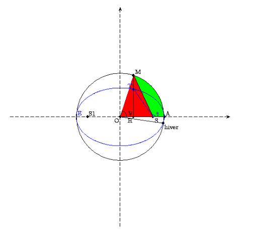

Algorithmes de calcul formel et numériqueB. Parisse |
Giac/Xcas est un logiciel libre de calcul formel dont
une caractéristique est de nécessiter peu de ressources sans
sacrifier les performances (en particulier sur les calculs polynomiaux).
Ce document décrit une partie des algorithmes de calcul formel et
numérique qui y sont
impleémentés, l’objectif à long terme
est de couvrir l’essentiel des algorithmes implémentés.
Ce n’est pas le manuel d’utilisation de Xcas, ni un manuel de programmation
ou d’exercices illustrés avec Xcas (voir le menu Aide, Manuels :
Référence calcul formel, Programmation, Exercices, Amusements...).
Ce texte regroupe donc des résultats
mathématiques qui ont été ou sont utilisés dans Giac
(ou sont susceptibles de l’être),
ils sont en général accompagnés de preuves
et souvent d’illustrations avec Xcas.
Pour plus d’informations sur Giac/Xcas, cf. :
www-fourier.ujf-grenoble.fr/~parisse/giac_fr.html
N.B.: La version HTML de ce document comporte des champs de saisie
interactifs, ceux-ci apparaissent comme des commandes “mortes” dans
la version PDF (elles sont exécutées une fois pour toutes
par la version non interactive de giac).
La version HTML est optimisée pour le navigateur Firefox.
Elle est générée avec hevea.inria.fr de Luc Maranget,
ou le fork de Yannick Chevallier pour le support mathjax, ainsi
qu’une version modifiée de itex2MML
de Jacques Distler pour la conversion en MathML.
Si vous avez une machine très puissante, vous pouvez
exécuter toutes les commandes interactives en cliquant sur le bouton
Exécuter. En-dessous de ce bouton se trouve
la console de l’interpréteur du
logiciel de calcul formel.
Table des matières
- Chapitre 1 Plan et index
- Chapitre 2 Trousse de survie Xcas
- Chapitre 3 Calculer sur ordinateur
- 3.1 Représentation des entiers
- 3.2 Les réels
- 3.3 L’arithmétique d’intervalle.
- 3.4 Calcul exact et approché, types, évaluation.
- 3.5 Forme normale et reconnaissance du 0.
- 3.6 Valeur générique des variables et hypothèses
- 3.7 Structures de données
- 3.8 Algorithmes et complexité.
- 3.9 Quelques algorithmes d’arithmétique de base.
- 3.10 Pour en savoir plus.
- 3.11 Exercices sur types, calcul exact et approché, algorithmes de bases
- Chapitre 4 Les générateurs de nombres pseudo-aléatoires.
- Chapitre 5 Le PGCD de polynômes.
- Chapitre 6 Le résultant
- Chapitre 7 Localisation des racines
- Chapitre 8 Exercices (PGCD, résultant, ...)
- Chapitre 9 Bases de Gröbner.
- Chapitre 10 Courbes paramétriques et polaires
- Chapitre 11 Propriétés métriques des courbes.
- Chapitre 12 Représentation des courbes implicites.
- Chapitre 13 Formes différentielles et intégrales curvilignes
- Chapitre 14 Équations et systèmes différentiels.
- 14.1 Introduction et représentation graphique.
- 14.2 Existence et unicité
- 14.3 Quelques méthodes de résolution explicite.
- 14.3.1 Équations à variables séparables
- 14.3.2 Équations linéaires
- 14.3.3 Équations linéaires à coefficients constants
- 14.3.4 Systèmes différentiels linéaires à coefficients constants d’ordre 1.
- 14.3.5 Systèmes et équations
- 14.3.6 Allure des courbes en dimension 2.
- 14.3.7 Systèmes d’ordre plus grand que 1
- 14.3.8 Intégrales premières.
- 14.3.9 Le modèle proie-prédateur
- 14.3.10 Quelques autres méthodes
- 14.4 Comportement asymptotique des solutions
- 14.5 Résolution numérique
- Chapitre 15 Introduction au calcul variationnel
- Chapitre 16 Corps finis.
- Chapitre 17 Factorisation des entiers et primalité.
- Chapitre 18 Factorisation des polynômes.
- 18.1 Les facteurs multiples
- 18.2 Factorisation en une variable
- 18.3 Factorisation à plusieurs variables
- 18.4 Preuve de l’identité de Bézout généralisée
- 18.5 Algorithme de Bézout généralisé
- 18.6 Factorisation rationnelle et sur une extension
- 18.7 Factorisation absolue
- 18.8 Compléments
- 18.9 Exercices (factorisation des polynômes)
- Chapitre 19 Intégration formelle.
- Chapitre 20 Intégration numérique
- Chapitre 21 Suites récurrentes et applications
- 21.1 Calcul de l’expression des suites récurrentes.
- 21.2 Le point fixe dans \(\mathbb{R}\)
- 21.3 Le point fixe dans \(\mathbb{R}^n\)
- 21.4 La méthode de Newton dans \(\mathbb{R}\).
- 21.5 La méthode de Newton dans \(\mathbb{R}^n\).
- 21.6 Calcul approché des racines complexes simples
- 21.7 Méthodes de gradient (sans contrainte)
- Chapitre 22 Algèbre linéaire
- 22.1 Résolution de systèmes, calcul de déterminant.
- 22.2 Algèbre linéaire sur \(\mathbb{Z}\)
- 22.3 Le pivot de Gauss numérique.
- 22.4 La méthode de factorisation \(LU\)
- 22.5 La factorisation de Cholesky
- 22.6 Conditionnement
- 22.7 Réduction des endomorphismes
- 22.7.1 Le polynôme minimal (Krylov)
- 22.7.2 Le polynôme caractéristique
- 22.7.3 La méthode de Hessenberg
- 22.7.4 Les traces et les identités de Newton
- 22.7.5 La méthode de Leverrier-Faddeev-Souriau
- 22.7.6 Les vecteurs propres simples.
- 22.7.7 La forme normale de Jordan
- 22.7.8 Exemple 1
- 22.7.9 Exemple 2
- 22.7.10 Le polynôme minimal par Faddeev
- 22.7.11 Formes normales rationnelles
- 22.7.12 Fonctions analytiques
- 22.8 Quelques autres algorithmes utiles
- 22.9 Quelques méthodes alternatives au pivot
- 22.10 Réduction approchée des endomorphismes
- 22.11 Factorisations de matrices
- 22.12 Quelques références
- 22.13 Exercices (algèbre linéaire)
- Chapitre 23 Approximation polynomiale
- Chapitre 24 Développement de Taylor, asymptotiques, séries entières, fonctions usuelles
- Chapitre 25 La transformée de Fourier discrète.
- Chapitre 26 Le rayonnement solaire.
- Chapitre 27 La moyenne arithmético-géométrique.
- Annexe A Bonus : le “making of” de Giac/Xcas
- Annexe B Quelques opinions.
Chapitre 1 Plan et index
L’index commence page suivante dans la version PDF.
Quelques conseils de lecture :
- Des aspects calcul numérique sont abordés dans les sections 3 (représentation des données), 20 (intégration numérique), 21 (point fixe, Newton), 22 (Gauss, LU, conditionnement, Schur...), 23 et 24 (interpolation, approximation polynomiale), 25 (transformée de Fourier discrète),
- Des aspects calcul exact sont abordés dans les sections 3 (représentation des données), 5 (PGCD), 6 (résultant), 7 (racines), 9 (bases de Gröbner), 16 (corps finis), 17 et 18 (factorisation des entiers et polynômes), 19 (calcul de primitives), 22 (algèbre linéaire), 27 (moyenne arithmético-géométrique),
- le lecteur physicien trouvera peut-être un intérêt aux chapitres tirés de mon cours de licence L2 courbes et équations différentielles pour la physique, sections 10, 11, 12, 13, ??, 15, ainsi que le calcul de la répartition du rayonnement solaire sur Terre 26
Index
|
|
Chapitre 2 Trousse de survie Xcas
Cette section peut être vue comme un tutoriel très abrégé pour rapidement prendre en main Xcas par des exemples au niveau fin de licence master de mathématique et préparation aux concours de recrutement d’enseignants. Le lecteur pourra consulter le tutoriel calcul formel (menu Xcas, Aide, Débuter en calcul formel, tutoriel) pour plus de détails ou/et à un niveau mathématique moins élevé.
2.1 Utilisation comme super-calculatrice
-
On saisit une ligne de commande, on tape sur la touche Entree pour
l’évaluer. On peut saisir plusieurs commandes sur une même ligne
en les séparant par
;(affiche le résultat) ou:;(n’affiche pas le résultat). La syntaxe respecte les priorités usuelles des opérateurs, attention il faut toujours saisir le signe*pour effectuer une multiplication (sauf raccourcis dans lécriture de monômes comme2x). Mettez des parenthèses en cas de doute.
- Si on entre des données exactes, les calculs sont exacts
on peut alors convertir en approché avecevalf
Si on entre au moins une donnée approchée (nombre avec point décimal), les calculs sont approchés
Les nombres flottants peuvent être saisis avec lécriture standard mantisse/exposant séparés pare
- On peut stocker des résultats dans des variables
pour les réutiliser ensuite
On peut effacer le contenu d’une variable avecpurge, elle redevient alors libre (elle s’évalue en elle-même)
Les noms de variable peuvent contenir plusieurs lettres
- Les noms de commande et mots-clefs du logiciel sont en général affichés avec une couleur spécifique. Les menus permettent de trouver les commandes par thème (menus Outils dans Xcas pour les plus courantes, menu Graphe avec des assistants pour les représentations graphiques les plus courantes, menu Cmd pour un ensemble plus complet). La ligne de commande permet en général de compléter un début de nom de commande (touche tabulation). L’appui sur la touche tabulation après un nom de commande ou la sélection du menu Aide, Index dans Xcas ouvre l’aide en ligne courte, avec une description rapide de la commande et quelques exemples types que l’on peut copier-coller et adapter. On peut aussi obtenir une aide plus détaillée (boutons Details dans Xcas).
- Les listes sont délimitées par des crochets et servent
à représenter des vecteurs. Les listes de listes de même taille
servent à représenter des matrices. On accède à un élément
d’une liste en donnant le nom de variable de la liste puis l’indice
de l’élément entre crochet, en commençant à 0 (mettre deux crochets
pour commencer à 1).
- Pour afficher les étapes intermédiaires de certains calculs, exécutez
pour ne pas les afficher
2.2 Calcul exact
2.2.1 Arithmétique
-
division euclidienne des entiers
- PGCD, identité de Bézout sur les entiers
- restes chinois entiers
- primalité, décomposition en facteurs premiers
- puissance modulaire rapide
- division euclidienne des polynômes, la variable par défaut est \(x\),
sinon il faut la spécifier en dernier argument
- PGCD, identité de Bézout sur les polynômes
- factorisation sur le corps des coefficients par défaut, sinon
ajouter l’extension algébrique souhaitée (éventuellement obtenue
avec
solve)sqrfreepermet d’effectuer une factorisation partielle en produit de facteurs premiers entre eux et sans racines multiples. - évaluation d’un polynôme
- Résultant de 2 polynômes
- décomposition en éléments simples
- polynômes à coefficients dans \(\mathbb{Z}/p\mathbb{Z}\)
- Corps fini non premier de caractéristique \(p\) :
GF(p,n)crée un corps fini \(K\) de cardinal \(p^n\), et affecte une variable pour le générateur du groupe multiplicatif \(K^*\), par défaut \(g\). Les éléments du corps sont alors représentés par des polynômes en le générateur
on peut travailler avec des polynômes ou des matrices à coefficients dans \(K\)
2.2.2 Algèbre linéaire exacte
-
Pivot de Gauss :
rrefcrée des 0 de part et d’autre de la diaginale,refen-dessous de la diagonale,kerrenvoie une liste de vecteurs formant une base du noyau d’une application linéaire - Factorisation LU
- Déterminant
On peut forcer l’utilisation d’un algorithme (voir l’aide détaillée dedet). - Réduction des endomorphismes
- Polynome d’endomorphisme
- Forme de Hermite et Smith d’une matrice à coefficients entiers
2.3 Calcul scientifique
2.3.1 Analyse numérique
-
Résolution approché déquation par méthode itérative
ou par bisection
- Approximation polynômiale :
- Intégration numérique
on peut forcer une méthode avecgaussquadourombergou de petit ordre avecplotarea
- Équations différentielles ordinaires
\(y'=f(t,y)=\sin(ty)\)
avec condition initiale \((t_0,y_0)=(0,1)\), valeur en \(t=2\)
Tracé sur l’intervalle \(t \in [-10,10]\)
2.3.2 Algèbre linéaire numérique
-
factorisation LU et résolution de système,
- factorisation QR
- factorisation de Cholesky
- Conditionnement d’une matrice pour la norme 1, euclidienne ou infinie
- Réduction des endomorphismes
- Valeurs singulières
- Factorisation de Schur
Chapitre 3 Calculer sur ordinateur
3.1 Représentation des entiers
Preuve : On prend pour \(q\) le plus grand entier tel que \(a-bq \geq 0\).
Exemple :
La division euclidienne permet d’écrire un nombre entier, en utilisant
une base \(b\) et des caractères pour représenter les entiers
entre 0 et \(b-1\). Nous écrivons les nombres entiers en base \(b=10\)
avec comme caractères les chiffres de 0 à 9.
Les ordinateurs utilisent des circuits binaires pour stocker
les informations, il est donc naturel d’y travailler en base 2
en utilisant comme caractères 0 et 1 ou en base 16 en utilisant
comme caractères les chiffres de 0 à 9 et les lettres de A à F.
En général, pour trouver l’écriture d’un nombre en base \(b\) (par
exemple \(b=2\)),
on effectue des divisions euclidienne successives par \(b\) du nombre puis
de ses quotients successifs jusqu’à ce que le quotient soit 0 et on
accolle les restes obtenus (premier reste à droite, dernier
reste à gauche).
Inversement, pour retrouver un entier \(d\) à partir
de son écriture \(d_n...d_0\), on traduit les divisions euclidiennes
successives en
\begin{eqnarray*}
d &=&( ... ((d_n b +d_{n-1})b + d_{n-2})...+d_1)b+d_0\\
&=& d_n b^n + d_{n-1} b^{n-1} + ... + d_0
\end{eqnarray*}
Par exemple, vingt-cinq s’écrit en base 16 0x19 car 25 divisé
par 16 donne quotient 1, reste 9
En base 2, on trouverait 0b11001 car \(25=2^4+2^3+1\).
On peut effectuer les opérations arithmétiques de base
(+,-,*, division) directement en base 2 (ou 16). Par exemple
la table de l’addition est 0+0=0, 0+1=1+0=1 et 1+1=0 je retiens 1,
donc :
01001111 + 01101011 ---------- 10111010
Exercice : comment passe-t-on simplement de la représentation d’un nombre en base 2 à un nombre en base 16 et réciproquement ?
Les microprocesseurs peuvent effectuer directement les opérations arithmétiques de base sur les entiers “machine” (déclinés en plusieurs variantes selon la taille et la possibilité d’avoir un signe). Noter que la division de deux entiers \(a\) et \(b\) n’a pas la même signification que la division de deux réels, comme elle ne tomberait pas forcément juste, on calcule le quotient et le reste de la division euclidienne.
Ces entiers machines permettent de représenter de manière exacte des petits entiers relatifs par exemple un entier machine signé sur 4 octets est compris entre \([-2^{31},2^{31}-1]\).
Ces entiers machines permettent de faire très rapidement du calcul exact sur les entiers, mais à condition qu’il n’y ait pas de dépassement de capacité, par exemple pour des entiers 32 bits, \(2^{30}+2^{30}+2^{30}+2^{30}\) renverra 0. Ils sont utilisables avec tous les langages de programmation traditionnels.
Les logiciels de calcul formel et certains logiciels de programmation permettent de travailler avec des entiers de taille beaucoup plus grande, ainsi qu’avec des rationnels, permettant de faire du calcul exact, mais on paie cette exactitude par un temps de calcul plus long, de plus pas mal de méthodes numériques ne gagnent rien à faire des calculs intermédiaires exacts. Néanmoins, l’utilisation d’un logiciel de calcul formel permettra dans certains cas d’illustrer certains phénomènes dus au calcul approché.
3.2 Les réels
On se ramène d’abord au cas des réels positifs, en machine on garde traditionnellement un bit pour stocker le signe du réel à représenter.
3.2.1 Virgule fixe et flottante.
La première idée qui vient naturellement serait d’utiliser
un entier et de déplacer la virgule
d’un nombre fixe de position, ce qui revient à mulitplier
par une puissance (négative) de la base. Par exemple en base 10 avec un
décalage de 4, 1234.5678
serait représenté par 12345678 et 1.2345678 par
12345 (on passe de l’entier au réel par multiplication
par \(10^{-4}\). L’inconvénient d’une telle représentation est
qu’on ne peut pas représenter des réels grands ou petits,
comme par exemple le nombre d’Avogadro, la constante de Planck, etc.
D’où l’idée de ne pas fixer la position de la virgule, on parle
alors de représentation à virgule flottante ou de nombre flottant : on
représente un nombre par deux entier, l’un appelé mantisse
reprend les chiffres significatifs du réel sans virgule, l’autre
l’exposant, donne la position de la virgule. Attention, le séparateur
est un point et non une virgule dans la grande
majorité des logiciels scientifiques.
On sépare
traditionnellement la mantisse de l’exposant par la lettre e.
Par exemple 1234.5678 peut être représenté
par 12345678e-8 (mantisse 12345678, exposant -8)
mais aussi par 1234567800e-10.
Naturellement, sur un ordinateur, il y a des limites pour les entiers représentant la mantisse \(m\) et l’exposant \(e\). Si on écrit les nombres en base \(b\), la mantisse \(m\) s’écrira avec un nombre \(n\) fixé de chiffres (ou de bits en base 2), donc \(m \in [0,b^n[\). Soit un réel \(x\) représenté par \[ x=mb^e, \quad m \in [0,b^n[ \] Si \(m\in [0,b^{n-1}[\), alors on peut aussi écrire \(x=m' b^{e-1}\) avec \(m'=mb \in [0,b^n[\), quelle écriture faut-il choisir? Intuitivement, on sent qu’il vaut mieux prendre \(m'\) le plus grand possible, car cela augmente le nombre de chiffres significatifs (alors que des 0 au début de \(m\) ne sont pas significatifs). Ceci est confirmé par le calcul de l’erreur d’arrondi pour représenter un réel. En effet, si \(x\) est un réel non nul, il ne s’écrit pas forcément sous la forme \(mb^e\), on doit l’arrondir, par exemple au plus proche réel de la forme \(mb^e\). La distance de \(x\) à ce réel est inférieure ou égale à la moitié de la distance entre deux flottants consécutifs, \(mb^e\) et \((m+1)b^e\), donc l’erreur d’arrondi est inférieure ou égale à \(b^e/2\). Si on divise par \(x \geq mb^e\), on obtient une erreur relative d’arrondi majorée par \(1/(2m)\). On a donc intérêt à prendre \(m\) le plus grand possible pour minimiser cette erreur. Quitte à mulitplier par \(b\), on peut toujours se ramener (sauf exceptions, cf. ci-dessous), à \(m \in [b^{n-1},b^n[\), on a alors une erreur d’arrondi relative majorée par \[ \frac{1}{2b^{n-1}}\]
On appelle flottant normalisé un flottant tel que \(m \in [b^{n-1},b^n[\). Pour écrire un réel sous forme de flottant normalisé, on écrit le réel en base \(b\), et on déplace la virgule pour avoir exactement \(n\) chiffres non nuls avant la virgule et on arrondit (par exemple au plus proche). L’exposant est égal au décalage effectué. Notez qu’en base 2, un flottant normalisé commence forcément par 1, ce qui permet d’économiser un bit dans le stockage.
Ainsi, l’erreur d’arrondi commise lorsqu’on représente un réel (connu exactement) par un double normalisé est une erreur relative inférieure à de \(2^{-53}\) (\(b=2\) et \(n=52+1\) pour les doubles).
Exemples :
-
en base 10 avec \(n=6\), pour représenter
\(\pi=3,14159265...\), on doit décaler la virgule de 5 positions,
on obtient
314159.265...on arrondit à \(314159\) donc on obtient314159e-5. - en base 2 avec \(n=10\), pour représenter trois cinquièmes (\(3/5\)
en base 10, noté \(11/101\) en base 2),
on pose la division en base 2 de
11par101, ce qui donne11 | 101 110 --------- -101 | 0.1001 ---- | 010 | 100 | 1000 | - 101 | ----- | 011 |on retrouve le nombre de départ donc le développement est périodique et vaut0.1001 1001 1001 .... On décale le point de 10 positions, on arrondit, donc trois cinquièmes est représenté par la mantisse1001100110et l’exposant-10. On observe aussi sur cet exemple que \(3/5\) dont l’écriture en base 100.6est exacte, n’a pas d’écriture exacte en base 2 (de même que 1/3 n’a pas d’écriture exacte en base 10).
Il existe une exception à la possibilité de normaliser les flottants, lorsqu’on atteint la limite inférieure de l’exposant \(e\). Soit en effet \(e_m\) le plus petit exposant des flottants normalisés et considérons les flottants \(x=b^{e_m}(1+1/b)\) et \(y=b^{e_m}\). Ces flottants sont distincts, mais leur différence n’est plus représentable par un flottant normalisé. Comme on ne souhaite pas représenter \(x-y\) par 0, (puisque le test \(x==y\) renvoie faux), on introduit les flottants dénormalisés , il s’agit de flottants dont l’exposant est l’exposant minimal représentable sur machine et dont la mantisse appartient à \([0,b^{n-1}[\). Par exemple 0 est représenté par un flottant dénormalisé de mantisse 0 (en fait 0 a deux reprśentation, une de signe positif et une de signe négatif).
Enfin, on utilise traditionnellement une valeur de l’exposant pour représenter les nombres plus grands que le plus grand réel reprśentable sur machine (traditionnellement appelé plus ou moins infini) et les erreurs (par exemple 0./0. ou racine carrée d’un nombre réel négatif, traditionnellement appelé NaN, Not a Number).
Exercice : quels sont les nombres réels représentables exactement en base 10 mais pas en base 2 ? Si on écrit \(1/10\) en base 2 avec 53 bits de précision, puis que l’on arrondit avec 64 bits de précision, ou si on écrit \(1/10\) en base 2 avec 64 bits de précision, obtient-on la même chose ?
Les ordinateurs reprśentent généralement les flottants en base 2
(cf. la section suivante pour
plus de précisions), mais cette représentation n’est pas utilisée
habituellement par les humains, qui préfèrent compter
en base 10. Les ordinateurs effectuent donc la conversion dans
les routines d’entrée-sortie. Le format standard utilisé
pour saisir ou afficher un nombre flottant dans un logiciel
scientifique est composé d’un nombre à virgule
flottante utilisant le point comme séparateur décimal (et
non la virgule) suivi si nécessaire de la lettre e puis de l’exposant,
par exemple 1.23e-5 ou 0.0000123. Dans les
logiciels de calcul formel, pour distinguer un entiers
représentés par un entier
d’un entier représenté par un flottant on écrit
l’entier suivi de .0 par exemple 23.0.
Remarque :
Les microprocesseurs ayant un mode BCD peuvent avoir un format
de représentation des flottants en base 10, les nombres décimaux
comme par exemple 0.3 peuvent être représentés exactement.
Certains logiciels, notamment maple, utilisent par défaut des
flottants logiciels en base 10 sur des microprocesseurs sans mode BCD,
ce qui entraine une baisse de
rapidité importante pour les calculs numériques (on peut
partiellement améliorer les performances en utilisant evalhf
en maple).
3.2.2 Les flottants au format double
Cette section développe les notions de la section précédente pour les flottants machine selon la norme IEEE-754, utilisables dans les langage de programmation usuels, elle peut être omise en première lecture. La représentation d’un double en mémoire se compose de 3 parties : le bit de signe \(s=\pm 1\) sur 1 bit, la mantisse \(M \in [0,2^{52}[\) sur 52 bits, et l’exposant \(e \in [0, 2^{11}[\) sur 11 bits. Pour les nombres “normaux”, l’exposant est en fait compris entre 1 et \(2^{11}-2\), le nombre représenté est le rationnel \[ (1+\frac{M}{2^{52}}) 2^{e+1-2^{10}} \] Pour écrire un nombre sous cette forme, il faut d’abord chercher par quel multiple de 2 il faut le diviser pour obtenir un réel \(r\) dans \([1,2[\), ce qui permet de déterminer l’exposant \(e\). Ensuite on écrit la représentation en base 2 de \(r-1 \in [0,1[\). Exemples :
-
-2
Signe négatif. Il faut diviser sa valeur absolue 2 par \(2^1\) pour être entre 1 et 2 dont \(e+1-2^{10}=1\), l’exposant est \(e=2^{10}\). On a alors \(r=1\), \(r-1=0\). Représentation
1 10000000000 00000000...0000 - 1.5=3/2
Signe positif, compris entre 1 et 2 dont l’exposant vérifie \(e+1-2^{10}=0\) soit \(e=2^{10}-1=2^9+2^8+2^7+2^6+2^5+2^4+2^3+2^2+2^1+2^0\). On a \(r-1=1/2=2^{-1}\). D’où la représentation
0 01111111111 10000000...0000 - 6.4=32/5
Positif. Il faut le diviser par \(2^{2}\) pour avoir \(8/5 \in [1,2[\) donc \(e+1-2^{10}=2\) soit \(e=2^{10}+1\). Ensuite \(r=3/5\) qu’il faut écrire en base 2 (cf. section précédente), on écrit donc les 52 premiers éléments du développement avec une règle d’arrondi du dernier bit au nombre le plus proche. Ici le bit suivant le dernier1001est un1, on arrondit donc à1010. D’où la représentation
0 1000000001 100110011001...10011010
On observe que la représentation en base 2 de 6.4 a du être
arrondie (car elle est infinie en base 2) bien qu’elle soit exacte
(finie) en base 10.
Seuls les entiers et les rationnels dont le dénominateur est une puissance
de 2 peuvent être représentés exactement.
Ceci entraine des résultats qui peuvent surprendre
comme par exemple le fait que
0.5 - 5*0.1 n’est pas nul.
Des représentations spéciales (avec \(e=0\) ou \(e=2^{11}-1\)) ont été introduites pour représenter \(\pm \infty\) (pour les flottants plus grands en valeur absolue que le plus grand flottant représentable), et pour représenter les nombres non nuls plus petits que le plus petit flottant représentable de la manière exposée ci-dessus (on parle de flottants dénormalisés), ainsi que le nombre NaN (Not a Number) lorsqu’une opération a un résultat indéfini (par exemple 0/0).
Remarque : Sur les processeurs compatibles avec les i386,
le coprocesseur arithmétique i387 gère en interne des flottants
avec 80 bits dont 64 bits de mantisse. Sur les architectures 64 bits
(x86 ou AMD), le jeu d’instruction SSE permet de travailler avec
des flottants de 128 bits. Le compilateur gcc permet d’utiliser
ces flottants longs avec le type long double ou
les types __float80 et __float128 en utilisant
un drapeau de compilation du type -msse
3.2.3 Opérations sur les flottants
Les opérations arithmétiques de base sur les flottants se font de la manière suivante :
- addition et soustraction : on détecte s’il faut additionner ou soustraire en valeur absolue en analysant les signes, on détermine l’exposant le plus grand et on décale la partie mantisse du flottant dont l’exposant est le plus petit pour se ramener à additionner deux entiers (partie mantisses correspondant au même exposant), on décale à nouveau la partie mantisse en modifiant l’exposant après l’opération pour normaliser le flottant
- multiplication : on additionne les exposants et on multiplie les parties mantisses (vus comme des entiers), on arrondit et on ajuste l’exposant si nécessaire
- division : on soustrait les exposants et on divise les parties mantisses (division “à virgule”), on tronque et on ajuste l’exposant si nécessaire
3.2.4 Erreurs
La représentation des nombres réels par des doubles présente
des avantages, les opérations arithmétiques
sont faites au plus vite par le microprocesseur.
Les coprocesseurs arithmétiques (intégrés sur les microprocesseurs
de PC) proposent même
le calcul des fonctions usuelles (trigonométriques, racine carrée, log et exp)
sur le type double et utilisent des formats de représentation interne
ayant plus de 64 bits pour les doubles, ce qui permet de limiter
les erreurs d’arrondi.
Par contre, des erreurs vont être introduites,
on parle de calcul approché par opposition au calcul exact sur les
rationnels. En effet, la représentation doit d’abord arrondir
tout réel qui n’est pas un rationnel dont le dénominateur
est une puissance de 2. Ensuite chaque opération va entrainer
une propagation de ces erreurs et va y ajouter une erreur d’arrondi
sur le résultat.
Enfin, l’utilisation du type double peut provoquer un dépassement
de capacité (par exemple 100!*100!).
Pour diminuer ces erreurs et les risques de dépassement de capacité, il existe des types flottants multiple précision, qui permettent de travailler avec un nombre fixé à l’avance de décimales et une plage d’exposants plus grande. Les calculs sont plus longs mais les erreurs plus faibles. Attention, il s’agit toujours de calcul approché! De plus, pour des quantités dont la valeur est déterminée de manière expérimentale, la source principale de propagation d’erreurs est la précision des quantités initiales, il ne sert souvent à rien d’utiliser des types flottants multiprécision car les erreurs dus à la représentation (double) sont négligeables devant les erreurs de mesure. Dans ce cas, il est pertinent lorsqu’on évalue \(f(x)\) avec \(x\) mal connu de calculer aussi \(f'(x)\), en effet : \[f(x(1+h))= f(x)+xh f'(x) + O(h^2)\] l’erreur relative sur \(f(x)\) est donc au premier ordre multipliée par \[|\frac{xf'(x)}{f(x)}|\] Par exemple, l’erreur relative sur \(e^x\) est au premier ordre l’erreur relative sur \(x\) multipliée par \(|x|\).
3.2.5 Erreur absolue, relative, arrondi propagation des erreurs.
On a vu précédemment que pour représenter un réel, on devait l’arrondir, ce qui introduit une erreur même si le réel est connu exactement (par exemple 1/10). Voyons comment se propagent les erreurs dans les opérations arithmétiques de base : on distingue l’addition, la multiplication et l’inversion. La soustraction se ramène à l’addition car le calcul de l’opposé n’introduit aucune erreur nouvelle. Pour l’addition, si \(|x -x_0| \leq \varepsilon_0\) et si \(|y-y_0| \leq \varepsilon_1\) alors par l’inégalité triangulaire (\(|a+b|\leq |a|+|b|\)), on a : \[ |(x+y)-(x_0+y_0)| \leq |x-x_0| + | y-y_0 | \leq \varepsilon_0 + \varepsilon_1 \] on dit que les erreurs absolues s’additionnent.
Mais comme il faut représenter \(x_0+y_0\) en machine, on doit ajouter une erreur d’arrondi, qui est proportionnelle à la valeur absolue de \(x_0+y_0\) d’où la notion d’erreur relative :
Remarquons au passage que les erreurs de mesure expérimentales sont pratiquement toujours des erreurs relatives.
Donc lorsqu’on effectue une addition (ou une soustraction) de deux réels sur machine, on doit additionner les deux erreurs absolues sur les opérandes et ajouter une erreur d’arrondi (relative de \(2^{-53}\), à titre d’exercice, on pourra vérifier que cette erreur d’arrondi est majorée par l’erreur absolue de la somme \(x+y\) dès l’instant où \(x\) et \(y\) ont eux-même une erreur d’arrondi).
Lorsqu’on effectue une multiplication de deux nombres \(x,y\) dont les représentants \(x_0,y_0\) sont non nuls, on a \[ \left| \frac{xy-x_0 y_0}{x_0 y_0} \right| = \left| \frac{x}{x_0} \frac{y}{y_0} -1 \right| = \left| (\frac{x}{x_0}-1)(\frac{y}{y_0} -1)+(\frac{x}{x_0}-1)+(\frac{y}{y_0} -1) \right| \] l’erreur relative est donc la somme des erreurs relatives et du produit des erreurs relatives (on peut souvent négliger le produit devant la somme). Il faut aussi y ajouter une erreur relative d’arrondi de \(2^{-53}\) sur \(x_0 y_0\).
On observe que la multiplication est une opération posant moins de problèmes que l’addition, car on manipule toujours des erreurs relatives, par exemple si l’erreur relative sur deux doubles \(x\) et \(y\) non nuls est de \(2^{-53}\), alors l’erreur relative sur \(xy\) sera de \[ 2^{-53} + 2^{-53} + 2^{-106} + 2^{-53} \approx 3 \times 2^{-53} \] Lorsque l’erreur relative sur les données est grande devant \(2^{-53}\), l’erreur relative d’arrondi final est négligeable, on peut alors dire que les erreurs relatives s’additionnent pour un produit (c’est aussi vrai pour un quotient: exercice!). Par contre, si on additionne deux nombres dont le représentant de la somme est proche de 0, la somme des erreurs absolues peut devenir non négligeable par rapport à la somme des représentants, entrainant une erreur relative très grande. Par exemple si \(x\) est représenté par \(x_0=1+2^{-52}\) avec une erreur d’arrondi de \(2^{-53}\) et \(y\) par \(y_0=-1\) avec la même erreur d’arrondi, l’addition de \(x\) et \(y\) renvoie \(2^{-52}\) avec une erreur absolue de \(2 * 2^{-53}\) (ici il n’y a pas d’arrondi lorsqu’on fait la somme). C’est une erreur relative de \(1\) (qui domine largement l’erreur d’arrondi) ce qui signifie que dans la mantisse, seul le premier bit sur les 52 a un sens, la perte de précision est très grande.
Une autre conséquence importante est que l’addition de réels sur machine n’est pas une opération associative, par exemple \[ (2.0^{-53}+2.0^{-53})+1.0 \rightarrow 1+2^{-52} \] alors que \[ 2.0^{-53}+(2.0^{-53}+1.0) \rightarrow 1 \] Dans Xcas, il n’y a que 48 bits de mantisse :
Exercice : pour calculer la valeur numérique d’une dérivée de fonction, il vaut mieux calculer \((f(x+h)-f(x-h))/(2h)\) que \((f(x+h)-f(x))/h\) car le terme d’erreur est en \(O(h^2)\) et non en \(O(h)\). Attention toutefois à ne pas prendre \(h\) trop petit, sinon \(x+h=x\) en flottants et même si \(x+h \neq x\), l’erreur absolue sur \(f(x+h)-f(x-h)\) est (au moins) d’ordre \(\varepsilon |f(x)|\), donc l’erreur relative est d’ordre \(\varepsilon/h |f(x)|\). Par exemple pour h=1e-8 le reste est en \(O(h^2)\) donc de l’ordre des erreurs d’arrondi mais l’erreur relative sur \(f(x+h)-f(x-h)\) est d’ordre \(\epsilon/h\) largement supérieure (en flottants double-précision). On choisira plutôt \(h\) tel que \(\epsilon/h\) soit proche de \(h^2\), donc de l’ordre de 1e-5, qui fournira une valeur approchée avec une erreur relative de l’ordre de 1e-10. Exemple : calcul de la dérivée numérique de \(\exp(\sin(x))\) en \(x=1\)
Remarquons néanmoins que les erreurs calculées ici sont des majorations
des erreurs réelles (ou si on préfère l’erreur obtenue dans le pire
des cas), statistiquement les erreurs sur les résultats sont moindres,
par exemple si on effectue \(n\) calculs susceptibles de provoquer
des erreurs indépendantes suivant une même loi d’espérance nulle, la moyenne des
erreurs divisée par l’écart-type de la loi
tend vers une loi normale centrée réduite. De manière plus
déterministe, on a l’inégalité de Bienaymé-Tchebyshev
\[ P(|X|>\alpha) \leq \frac{n\sigma^2}{\alpha^2}\]
où \(X\) est la variable aléatoire somme des \(n\) erreurs, \(\alpha\)
l’erreur et \(n\sigma^2\) la variance de la somme \(n\) erreurs
supposées indépendantes, cette probabilité tend vers 0 pour \(n\)
grand si \(\alpha\) est d’ordre \(n\), et ne tend
pas vers 0 si \(\alpha\) est de l’ordre de \(\sqrt{n}\).
Exemple : somme de \(n=400\) nombres répartis sur \([-1,1]\) selon la loi
uniforme (représentant des erreurs), on divise par \(\sqrt{n}=\)20,
on effectue plusieurs tirages (par exemple 500) on trace l’histogramme et
on compare avec la loi normale de moyenne
nulle (l’espérance de la somme) et d’écart-type celui de la loi
uniforme.
Attention, si on effectue la somme de \(n\) réels \(\sum_j x_j\), les erreurs d’arrondis ne satisfont pas à ces hypothèses. En effet, l’erreur d’arrondi à chaque opération est une erreur relative, l’erreur absolue correspondante est \(\epsilon |x_1+x_2|\) puis \(\epsilon |x_1+x_2+x_3|\) puis ... \(\epsilon |x_1+x_2+...+x_n|\), que l’on peut majorer par \[\epsilon ((n-1)|x_1|+(n-2)|x_2|+...+|x_n||)\] La majoration de l’erreur d’arrondi dépend donc de l’ordre des termes, on a intérêt à sommer en commençant par les termes les plus petits en valeur absolue. Mais on peut faire mieux, il est possible de corriger les erreurs d’arrondi dans une somme avec le programme suivant pour une liste (on peut bien sur adapter à la somme d’une expression dépendant d’une variable entière sans stocker de liste) :
Somme(l):={
local x,s,c;
s:=0.0;
c:=0.0;
pour x in l faire
c += (x-((s+x)-s));
s += x;
fpour;
print(c);
return s+c;
}:;
En effet, \(c\) devrait valoir 0 sans erreurs d’arrondis,
avec les erreurs d’arrondis, on a le premier calcul \(s+x\) qui donnera
une erreur opposée à celui du calcul de \(s\) à la ligne
suivante, le 2ième calcul effectué \((s+x)-s\) donne une erreur
absolue en \(\epsilon |x|\) au pire (car c’est une erreur relative
par rapport à \((s+x)-s\)),
et la 3ième erreur d’arrondi est négligeable
(puisque la somme vaut 0). On a donc une erreur absolue sur \(s+c\)
qui est au premier ordre au pire en \(O(\epsilon \sum|x_i|)\),
bien meilleure que
la majoration \(\epsilon ((n-1)|x_1|+(n-2)|x_2|+...+|x_n||)\)
calculée précédemment.
Par exemple
à comparer avec
(le calcul de \(S\) est fait en exact, celui de sum(1. /j,j,1,n)
est approché sans correction).
En conclusion, il est souvent très difficile de calculer une majoration rigoureuse de l’erreur pour des calculs (sauf les plus simples), et cette majoration est en général bien trop pessimiste. Lorsqu’on doute de la précision d’un calcul, un test peu couteux consiste à refaire ce calcul en utilisant des flottants en précision plus grande et tester si le résultat varie en fonction du nombre de chiffres significatifs utilisés, ou faire varier légèrement les données et observer la sensibilité du résultat. Si on veut travailler en toute rigueur sans pour autant calculer les erreurs à priori, il faut utiliser un logiciel utilisant des intervalles pour représenter les réels (section suivante)
3.3 L’arithmétique d’intervalle.
Certains systèmes de calcul formel peuvent manipuler directement
des intervalles réels, par exemple par l’intermédiaire de la
bibliothèque C MPFI. Les opérations arithmétiques sur des
intervalles renvoient alors le meilleur intervalle possible contenant
toutes les valeurs possibles lorsque les opérandes parcourent
leurs intervalles respectifs.
Exemple en Xcas (version 1.1.1 et ultérieures) :
[-1..2]*[-1..2] renvoie [-2..4].
Attention ici on parcourt toutes les valeurs possibles de
\(xy, \ x \in [-1,2], y \in [-1,2]\). Ce qui est différent du carré
d’un intervalle ou plus généralement de l’évaluation
d’un polynôme en un intervalle, horner(x^2,[-1..2])
renvoie ainsi [0..4].
Les fonctions disponibles sont souvent moins riches qu’en arithmétique flottante, le calcul d’une fonction non monotone sur un intervalle peut s’avérer délicat, alors que si la fonction est monotone, il suffit de calculer l’image des deux bornes de l’intervalle. Pour les polynômes, Xcas décompose les coefficients en deux parties \(P=P_+-P_-\) en fonction du signe, puis utilise la monotonie de \(P_+\) et \(P_-\) sur \(\mathbb{R}^+\) et \(\mathbb{R}^-\) respectivement.
L’arithmétique d’intervalle dans \(\mathbb{C}\) est beaucoup plus difficile à mettre en oeuvre puisqu’il n’y a plus d’ordre ni de monotonie, on doit alors s’en remettre à des estimations sur les parties réelles et imaginaires qui ne tiendront pas compte du phénomène ci-dessus sur la différence entre \(xy, \ x \in [-1,2], y \in [-1,2]\) et \(x^2, \ x \in [-1,2]\).
3.4 Calcul exact et approché, types, évaluation.
Dans les langages de programmation traditionnel (C, Pascal,...), il existe déjà des types permettant une représentation exacte des données (type entier) ou une représentation approchée (type flottant). Mais ces types de donnée de base occupent une taille fixe en mémoire, le type entier est donc limité à un intervalle d’entiers (par exemple \([0,2^{32}-1]\) pour un entier non signé sur une machine utilisant un processeur 32 bits) alors que le type flottant peut représenter des nombres réels, mais est limité à une précision en nombre de digits de la mantisse et de l’exposant (par exemple 12 chiffres significatifs et un exposant compris entre -499 et 499).
En calcul formel, on souhaite pouvoir calculer rigoureusement d’une part, et avec des paramètres dont la valeur n’est pas connue d’autre part ; il faut donc s’affranchir de ces limites :
- pour les entiers relatifs, on utilise des entiers de précision arbitraire dont la taille en mémoire est dynamique (déterminée pendant l’exécution et non à la compilation),
- pour les nombres complexes, on utilise un couple de nombres réels,
- pour les rationnels, on utilise un couple d’entiers relatifs,
- pour les irrationnels algébriques (par exemple \(\sqrt{2}\)), on utilise un polynôme irréductible dont ils sont racines,
- pour les paramètres (\(x,y,z,t...\)), on utilise un type structuré contenant un champ de type chaine de caractères pour représenter le nom du paramètre et un champ pour attribuer une valeur à (ou une hypothèse sur) ce paramètre,
- pour les nombres transcendants (par exemple \(\pi\)), on est obligé d’introduire un paramètre auquel on attribue une valeur numérique, qui ne sera utilisée qu’au moment où on veut une approximation numérique d’une expression contenant ce nombre transcendant, on parle de constante,
- lorsqu’on a besoin d’une approximation numérique d’un nombre, on peut utiliser des conversions de ces types en un type flottant. On peut aussi pour lutter contre les erreurs d’arrondi utiliser des nombres flottants étendus dont la précision est dynamique ou même des intervalles de flottants étendus,
- il faut aussi un nouveau type, appelé expression ou symbolique, permettant d’appliquer une fonction qu’on ne peut évaluer directement sur les objets précédents, par exemple \(\sin(x)\). Il doit s’agir d’une opération de clôture, au sens où appliquer une fonction à un objet symbolique ne nécessite pas la création d’un nouveau type (en général on renvoie un objet symbolique).
Enfin, il faut pouvoir évaluer un objet (en particulier symbolique) :
par exemple évaluer \(\sin(x)\) lorsqu’on assigne une valeur à \(x\).
Dans cet exemple, on voit qu’il faut d’abord remplacer \(x\) par
sa valeur avant de lui appliquer la fonction sinus. C’est le mécanisme
général de l’évaluation, mais il y a quelques exceptions où
on souhaite empêcher l’évaluation d’un ou plusieurs arguments
d’une fonction avant l’évaluation de la fonction. Par exemple si on
veut calculer la valeur numérique d’une intégrale par des méthodes
de quadrature, on ne souhaitera pas rechercher une primitive de la
fonction à intégrer. Dans le jargon, on parle alors de “quoter” un argument
(l’origine du terme vient probablement de la notation ' du langage
Lisp). Certaines fonctions doivent toujours quoter leurs arguments
(par exemple la fonction qui permet de purger le contenu d’un paramètre),
on parle parfois d’autoquotation.
3.5 Forme normale et reconnaissance du 0.
Une fois défini ces types de base représentant les nombres d’un système de calcul formel, il faut pouvoir comparer ces nombres, en particulier décider si deux représentations distinctes correspondent au même nombre ou, ce qui revient au même, par soustraction décider quand un nombre est nul. Par exemple \(4/2\) et 2 représentent le même nombre. Lorsqu’on dispose d’un algorithme permettant de représenter un nombre d’une manière unique, on parle de forme normale. C’est par exemple le cas pour les nombres rationnels, la forme normale usuelle est la fraction irréductible de dénominateur positif. C’est aussi le cas pour les fractions rationnelles de polynômes à coefficients entiers représentées par une fraction irréductible, avec au dénominateur un coefficient de plus haut degré positif. Malheureusement, il n’est pas toujours possible de trouver une forme normale pour diverses raisons théoriques ou pratiques :
- on ne connaît pas toujours le statut de certaines constantes (par exemple la constante d’Euler),
- il n’existe pas d’algorithmes permettant de déterminer s’il existe des relations algébriques entre constantes,
- il n’existe pas forcément une seule forme plus simple, par exemple : \[ \frac{(\sqrt{2}+1)x+1}{x+\sqrt{2}+1}=\frac{x+\sqrt{2}-1}{(\sqrt{2}-1)x+1} \] Ce cas se présente fréquemment avec les extensions algébriques.
- en pratique il peut être trop coûteux d’utiliser une forme normale, par exemple le polynôme \((x^{1000}-1)/(x-1)\) possède 1000 monômes
En résumé, au mieux on a une forme normale, au pire on risque de ne pas reconnaître un zéro, entre les deux on peut ne pas avoir de forme normale mais être capable de reconnaître à coup sûr une expression nulle (par contre, si le système de calcul formel détermine qu’une expression est nulle, alors elle l’est).
Il n’existe pas d’algorithme solution pour le problème de la reconnaissance du zéro pour une classe d’expressions "assez générale". Heureusement, dans la plupart des cas pratiques on sait résoudre ce problème, en se ramenant le plus souvent au cas des polynômes et fractions rationnelles. Par exemple, pour simplifier une expression trigonométrique, on remplace les fonctions trigonométriques \(\sin(x), \cos(x), \tan(x)\) par leur expression en fonction de \(t=\tan(x/2)\), on est ainsi ramené à une fraction rationnelle en \(t\) que l’on écrit sous forme normale.
Les polynômes ont un rôle central dans tout système de calcul formel
puisque sauf dans les cas les plus simples (fractions d’entiers par exemple),
la simplification d’expressions
fait appel à un moment ou à un autre à des calculs
de PGCD de polynômes. Le PGCD de polynômes est un algorithme
très sollicité auquel nous consacrerons une section. En effet,
l’application brutale de l’algorithme d’Euclide pose des problèmes
d’efficacité ce qui a obligé à inventer des méthodes plus efficaces.
Anticipons rapidement sur un exemple qui montre l’un des problèmes
majeurs des algorithmes de calcul formel, l’explosion en taille
(ici des coefficients des restes successifs).
Voici donc les restes successifs lorsqu’on applique l’algorithme
d’Euclide pour calculer le PGCD de \(P(x)=(x+1)^{7}-(x-1)^{6}\) avec
sa dérivée (les deux polynômes sont premiers entre eux) :
\begin{eqnarray*}
7\* (x+1)^{6}-6\* (x-1)^{5} & &\\
\frac{162}{49} \* x^{5}+\frac{-390}{49} \* x^{4}+\frac{1060}{49} \* x^{3}+\frac{-780}{49} \* x^{2}+\frac{474}{49} \* x+\frac{-78}{49}& &\\
\frac{157780}{729} \* x^{4}+\frac{-507640}{2187} \* x^{3}+\frac{290864}{729} \* x^{2}+\frac{-101528}{729} \* x+\frac{28028}{729}& &\\
\frac{1}{49} \* (\frac{1400328}{2645} \* x^{3}+\frac{-732888}{2645} \* x^{2}+\frac{1133352}{3703} \* x+\frac{-732888}{18515})& &\\
\frac{1}{2187} \* (\frac{2161816376832}{4669921} \* x^{2}+\frac{-555436846944}{4669921} \* x+\frac{301917024864}{4669921})& &\\
\frac{1}{907235} \* (\frac{469345063045455}{129411872} \* x+\frac{-47641670106615}{129411872})& &\\
\frac{5497465490623352995840}{209648836272383412129}
\end{eqnarray*}
Le lecteur voulant tester d’autres exemples pourra utiliser le programme
Xcas suivant :
pgcdderiv(a):={
local b,r,res;
b:=diff(a,x);
res:=NULL;
for (;b!=0;){
res:=res,b;
r:=rem(a,b);
a:=b;
b:=r;
}
return(res);
}
3.6 Valeur générique des variables et hypothèses
Lorsqu’on utilise un symbole sans lui affecter de valeurs en mathématiques on s’attend à une discussion en fonction du paramètre représenté par ce symbole. Ce qui nécessiterait de créer un arborescence de calculs (on retrouve ici les problèmes d’explosion évoqués dans la section précédente). La plupart des systèmes de calcul formel contournent la difficulté en supposant que le paramètre possède une valeur générique (par exemple la solution de \((t^2-1)x=t-1\) sera \(x=1/(t+1)\)) ou choisissent une branche pour les fonctions possédant un point de branchement (par exemple pour résoudre \(x^2=t\) en fonction de \(t\)). Certains systèmes demandent de manière interactive à l’utilisateur si la variable est par exemple positive ou différente de 1 mais cela s’oppose à un traitement automatique. On peut aussi anticiper ce type de décision en faisant des hypothèses sur une paramètre, la plupart des systèmes de calcul formel actuel proposent cette possibilité.
3.7 Structures de données
On a vu plus haut qu’on souhaitait manipuler des entiers de taille non fixe, des réels de précision fixe ou non, des fractions, des nombres complexes, des extensions algébriques, des paramètres, des expressions symboliques. La plupart des systèmes proposent un type générique qui recouvre ces divers types de scalaire. On peut par exemple utiliser un type structuré comportant un champ type et la donnée ou un pointeur sur la donnée (avec dans ce cas un pointeur sur un compteur de références de la donnée pour pouvoir la détruire dès qu’elle n’est plus référencée1). En programmation orientée objet, on utiliserait plutôt un type abstrait dont dérivent ces différents scalaires et le polymorphisme.
Il faut aussi un type pour les vecteurs, les matrices et les listes. Il faut prendre garde à la méthode utilisée par le système lorsqu’on modifie un élément d’un vecteur, matrice ou liste : soit on effectue une copie de tout l’objet en modifiant l’élément, soit on modifie l’élément de l’objet original. La première méthode (par valeur) est plus aisée à comprendre pour un débutant mais la seconde méthode (par référence) est bien plus efficace.
On peut se poser la question de savoir s’il faut inclure
ces types dans le type générique ; en général la
réponse est affirmative, une des raisons étant que les
interpréteurs qui permettront de lire des données dans un
fichier texte sont en général basé sur le couple de logiciels
lex(flex)/yacc(bison) qui ne peut compiler qu’à destination d’un
seul type. Ceci permet également d’unifier en un seul type symbolique
les fonctions ayant un ou plusieurs arguments en
voyant plusieurs arguments comme un vecteur d’arguments.
Les fonctions sont le plus souvent elle-même incluses dans le
type générique permettant ainsi à l’utilisateur de saisir des
commandes ou programmes fonctionnels (on peut
utiliser une fonction comme argument d’une commande).
Pour des raisons d’efficacité, les systèmes de calcul formel utilisent souvent des représentations particulières pour les polynômes dont on a dit qu’ils jouaient un rôle central. Pour les polynômes à une variable, on peut utiliser la liste des coefficients du polynôme, on parle alors de représentation dense. On peut aussi décider de ne stocker que les coefficients non nuls, on parle alors de représentation creuse (on stocke alors un couple formé par le coefficient et le degré du monôme correspondant). Pour les polynômes à plusieurs variables, on peut les considérer comme des polynômes à une variable à coefficients polynomiaux, on parle alors de représentation récursive. On peut aussi décider de ne pas briser la symétrie entre les variables (pas de variable principale), on parle alors de représentation distribuée, le plus souvent les représentation distribuées sont creuses car les représentations denses nécessitent très vite beaucoup de coefficients. Les méthodes de représentation creuses sont parfois aussi utilisées pour les matrices ayant beaucoup de coefficients nuls.
Voyons maintenant plus précisément sur quelques exemples de logiciels de calcul formel répandus quelles structures de données sont utilisées. Plusieurs éléments entrent en compte dans les choix faits :
- le(s) profil(s) d’utilisation (enseignement, ingéniérie, calcul intensif, recherche)
- les ressources disponibles (mémoire, puissance du processeur...)
- la facilité d’implémentation (choix du langage, outils disponibles en particulier débuggueurs, ...)
- l’histoire du système (un système conçu avec les outils disponibles aujourd’hui est forcément différent d’un système conçu il y a 20 ans)
Voyons quelques exemples, d’abord Giac, puis des systèmes pour ordinateur où les ressources (par exemple mémoire) sont moins limitées ce qui permet d’utiliser des langages de programmation de plus haut niveau. On termine par les calculatrices formelles HP et TI des années 20002. Ce sont des systèmes plutôt destinés à l’enseignement, soumis à de fortes contraintes en termes de taille mémoire, et destinés à traiter des petits problèmes.
3.7.1 Maple, Mathematica, ...
Ces systèmes ont un noyau fermé, au sens où l’utilisateur n’a pas accès du tout, ou en tout cas pas facilement, aux structures de données de base. Je ne dispose donc pas d’information sur les structures de données utilisées par le noyau.
L’interaction système-utilisateur se fait quasiment toujours en utilisant le langage de programmation propre au système, langage interprété par le noyau du système (ce qui ralentit l’exécution). Ces langages utilisateurs sont essentiellement non typés : on travaille avec des variables du type générique sans pouvoir accéder aux types sous-jacents. On ne bénéficie en général pas des vérifications faites lors de la compilation avec un langage typé, de plus ces systèmes ne sont pas toujours fourni avec de bon outils de mise au point. Enfin ces langages ne sont pas standardisés d’un système à l’autre et il est en général impossible d’utiliser ces systèmes comme des librairies depuis un langage de programmation traditionnel. Leur intérêt principal réside donc dans une utilisation interactive en profitant de la librairie de fonctions accessibles.
3.7.2 Giac/Xcas
Il s’agit du système de calcul formel que j’implémente actuellement sous
forme d’une bibliothèque C++ (ce qui
permettra aux programmes tiers d’utiliser beaucoup plus facilement du
calcul formel qu’avec les systèmes précédents). L’objectif est
d’avoir un système facile à programmer directement en C++, proche
du langage utilisateur, lui-même compatible avec Maple ou MuPAD,
tout cela sans trop perdre en performances comparativement aux
librairies spécialisées écrites en C/C++. Ce qui explique un choix
de type générique (gen) non orienté objet, avec un champ type
et soit une donnée immédiate (pour les nombres flottants par exemple),
soit un pointeur vers un objet du type correspondant au champ type pour
les données de taille non fixe (on pourrait donc se
contenter du langage C, mais le langage C++ permet de redéfinir
les opérateurs sur des types utilisateurs ce qui
améliore considérablement la lisibilité du code source).
Les données dynamiques ne sont pas dupliquées, Giac
utilise un pointeur sur un compteur de référence pour détruire
ces données lorsqu’elles ne sont plus référencées.
Les entiers en précision arbitraire sont hérités de la bibliothque GMP (écrite en C) du projet GNU. Les flottants en précision arbitraire utiliseront aussi GMP (plus précisément MPFR). Il y a un type fraction, structure C composé d’un champ numérateur et d’un champ dénominateur, et un type nombre complexe.
Les listes, vecteurs, matrices utilisent le type paramétré vector<>
de la librairie standard C++ (Standard Template Library).
Les objets symboliques sont des structures composés d’un champ sommet
qui est une fonction prenant un argument de type gen
et renvoyant un résultat
de type gen, et d’un champ feuille qui est de type gen.
Lorsqu’une fonction possède plusieurs arguments, ils sont rassemblés
en une liste formant le champ feuille de l’objet symbolique.
Les programmes sont aussi des objets symboliques, dont le champ
sommet est la fonction évaluation d’un programme.
Les listes sont aussi utilisées pour représenter vecteurs, matrices
et polynômes en une variable en représentation dense, on peut
y accéder par valeur (:=) ou par référence
(=<). Ces polynômes servent eux-mêmes á représenter
des éléments d’une
extension algébrique de \(\mathbb{Q}\) (vus comme
un couple de polynômes \(P,Q\), où \(Q\) est un polynome minimal
irréductible à coefficients entiers, autrement dit \(P,Q\) vaut \(P(\alpha)\)
où \(Q(\alpha)=0\)),
ou des éléments d’un corps fini (comme ci-dessus, mais ici \(Q\) est
à coefficients dans \(\mathbb{Z}/p\mathbb{Z}\) avec \(p\) premier, cf. la commande GF).
Giac posséde aussi un type pour les polynômes
en représentation creuse distribuée en plusieurs
indéterminées (cf. les commandes symb2poly et poly2symb).
L’évaluation d’un objet symbolique se fait en regardant d’abord si la fonction au sommet doit évaluer ou non ses arguments (autoquote), on évalue les arguments si nécessaire puis on applique la fonction.
Une hypthèse sur un paramètre est une valeur spéciale affectée au paramètre, valeur ignorée par la routine d’évaluation.
3.7.3 Calculatrices formelles HP48/49
Les langages utilisés pour programmer ces calculateurs sont l’assembleur et le RPL (Reverse Polish Lisp) adapté à l’écriture de code en mémoire morte très compact.
Le type générique est implémenté avec un champ type appelé prologue (qui est en fait un pointeur sur la fonction chargée d’évaluer ce type d’objet) suivi de la donnée elle-même (et non d’un pointeur sur la donnée, on économise ainsi la place mémoire du compteur de référence).
Le type entier en précision arbitraire est codé par le nombre de digits (sur 5 quartets3) suivi du signe sur un quartet et de la représentation BCD (en base 10) de la valeur absolue de l’entier. Le choix de la représentation BCD a été fait pour optimiser les temps de conversion en chaîne de caractères pour l’affichage. La mémoire vive disponible est de 256K, c’est elle qui limite la taille des entiers et non le champ longueur de l’entier. Il n’y a pas de type spécifique pour les rationnels (on utilise un objet symbolique normal).
Les fonctions internes des HP49/50/40 utilisent le type programme pour représenter les entiers de Gauß (complexes dont la partie réelle et imaginaire est entière). Les nombres algébriques ne sont pas implémentés, sauf les racines carrées (représentée de manière interne par le type programme). Il y a un type spécifique prévu pour les flottants en précision arbitraire, mais l’implémentation des opérations sur ces types n’a pas été intégrée en ROM à ce jour.
Les types listes, programmes et objet symbolique sont composés du prologue
(champ type) suivi par la succession d’objets situés en
mémoire vive ou de pointeurs sur des objets situés en mémoire en lecture
seule (ROM) et se terminent par un pointeur sur une
adresse fixe (appelée SEMI). Ces types sont eux-mêmes des
objets et peuvent donc être utilisés de manière
récursive. La longueur des types listes, programmes, symboliques
n’est stockée nulle part, c’est le délimiteur final
qui permet de la connaître, ce qui est parfois source d’inefficacité.
On utilise de manière interne les listes pour représenter les
polynômes denses (avec
représentation récursive pour les polynômes à plusieurs variables).
Les calculatrices HP4xG utilisent une pile4, c’est-à-dire une liste
de taille non fixée d’objets. On place les objets sur la pile,
l’exécution d’une fonction prend ces arguments sur
la pile et renvoie un ou plusieurs résultats sur la pile (ce qui est
une souplesse du RPN comparé aux langages où on ne peut renvoyer
qu’une valeur de retour). Il faut donc
donner les arguments avant d’appeler la fonction correspondante. Par
exemple pour calculer \(a+b\) on tapera a b +. C’est
la syntaxe dite polonaise inversée (RPN). Un avantage de cette syntaxe
est que le codage d’un objet symbolique par cette syntaxe est évidente,
il suffit de stocker la liste précédente {a b +}.
Les objets symboliques sont donc représenté par une suite d’objets écrit
en syntaxe polonaise inversée. L’évaluation d’un objet symbolique se fait
dans l’ordre polonaise inversé : les arguments sont évalués
puis les fonctions leur sont appliqués. Pour des raisons d’efficacité,
on représente souvent les objets composites (listes, symboliques) par
leurs composants placés sur la pile (appelé meta-objets).
Une rigidité de la syntaxe polonaise est
que les fonctions ont toujours un nombre fixe d’arguments5, par
exemple l’addition a toujours 2 arguments, ainsi
\(a+b+c\) est obtenu par \((a+b)+c\) ou par \(a+(b+c)\)
c’est-à-dire respectivement a b + c + ou a b c + + ce qui
brise parfois artificiellement la symétrie de certaines opérations. En
polonaise inversée, le système doit de plus jongler avec l’autoquote puisque
les arguments sont évalués avant l’opérateur qui éventuellement demanderait
à ne pas évaluer ses arguments. À noter l’existence d’une commande
QUOTE permettant à l’utilisateur de quoter une sous-expression.
Les hypothèses sur des variables réelles sont regroupées dans une liste
stockée dans la variable globale REALASSUME, on peut supposer
qu’une variable est dans un intervalle. Il n’y a pas à ce jour
de possibilité de supposer qu’une variable est entière (ni à fortiori
qu’une variable à une valeur modulo un entier fixé), bien qu’il ait été
décidé de réserver la variable globale INTEGERASSUME à cet effet.
Il n’y a pas de possibilité de faire des hypothèses ayant une portée
locale.
3.7.4 Calculatrices formelles TI92/89/Voyage 200
Le langage utilisé pour programmer ces calculatrices est le langage C (on peut aussi écrire du code en assembleur pour ces calculatrices). On retrouve ici les différents types de données regroupé en un type générique qui est un tableau d’octets (aussi appelé quantum). Le champ type est appelé tag dans la documentation TI. Contrairement à ce qui précède, ce champ type est placé en mémoire à la fin de l’objet, ce qui est possible car la longueur d’un objet est toujours indiquée au début de l’objet. Ceci est fait afin de faciliter l’évaluation (cf. infra).
Les entiers en précision arbitraire sont codés par un tag parmi deux (pour différencier le signe), un octet pour la longueur, puis la valeur absolue de l’entier (en base 256). Ils sont donc limités par le champ longueur à 255 octets, le plus grand entier représentable est 6 \((256^{255}-1)\). Il existe un tag spécifique pour les rationnels, pour les constantes réelles et entières qui apparaissent par exemple en résolvant une équation. Il existe des tags utilisés de manière interne, par exemple pour les nombres complexes. Il n’y a pas de tag prévu pour les flottants en précision arbitraire. ni pour les nombres algébriques (racines carrées par exemple).
Les listes sont codées par la succession de leurs éléments. En principe elles ne peuvent pas contenir des listes (sauf pour représenter une matrice). Quelques fonctions utilisent les listes pour représenter des polynômes denses à une variable, mais probablement pas pour représenter de manière récursive des polynômes à plusieurs variables (puisque le type liste n’est en principe pas récursif).
Comme les HP, les TI utilisent une pile (non visible par l’utilisateur) appelée expression stack afin de traduire un expression mathématique sous forme d’un texte en un objet symbolique codé exactement comme ci-dessus en syntaxe polonaise. Toutefois, la présence du champ longueur permet d’évaluer un objet symbolique sans perdre en efficacité en partant de l’opérateur final et en redescendant ensuite sur ces arguments, c’est la stratégie adoptée. C’est pour cela que le tag d’identification se trouve à la fin de l’objet. L’utilisation de cette méthode facilite grandement l’autoquotation (on peut toutefois regretter que le système n’ait pas prévu d’instruction permettant à l’utilisateur d’empêcher l’évaluation d’une sous-expression).
On ne peut pas faire d’hypothèse globale sur un paramètre par contre on peut faire des hypothèses de type appartenance à un intervalle ayant une portée locale.
3.8 Algorithmes et complexité.
On va présenter dans la suite quelques algorithmes que l’on peut considérer comme classiques dans le domaine du calcul formel. Avant d’implémenter ce type d’algorithmes, on a besoin des algorithmes de base en arithmétique.
La plupart des problèmes posés en calcul formel nécessitent des calculs dont la taille croit de manière exponentielle voire doublement exponentielle en fonction de la taille des données et ce même si le résultat est lui aussi de taille petite. Un exemple est la réduction des systèmes de plusieurs équations polynomiales (bases de Groebner).
3.8.1 Algorithmes modulaires ou p-adiques
Dans certains cas, l’application de théories mathématiques parfois sophistiquées permet de réduire la complexité (par exemple, M. Van Hoeij a découvert récemment qu’un algorithme très utilisé en théorie des nombres, l’algorithme LLL, permettait d’améliorer la complexité d’une des étapes de la factorisation des polynomes à coefficients entiers sur les entiers). Heureusement, dans de nombreux cas, on peut réduire la complexité (donc le temps de calcul) par des adaptations au problème d’une même idée à condition de faire des hypothèses sur les données (autrement dit en abandonnant la volonté d’implémenter un algorithme très générique, ou tout au moins en spécialisant des algorithmes génériques). Par exemple lorsqu’on travaille avec des entiers (ou des polynômes à coefficients entiers, ou des matrices à coefficients entiers...) on utilise souvent des algorithmes modulaires et \(p\)-adiques. Comme le calcul exact nécessite presque toujours de calculer avec des entiers, ces méthodes ont un rôle central en calcul formel, nous les présentons donc maintenant brièvement. Dans les prochaines sections, nous utiliserons ce type de méthode, par exemple pour le calcul de PGCD ou la factorisation de polynômes à coefficients entiers.
Les méthodes modulaires consistent à réduire un problème dans \(\mathbb{Z}\) à son équivalent dans \(\mathbb{Z}/n\mathbb{Z}\) pour une ou plusieurs valeurs de \(n\), nombre premier. Le calcul dans \(\mathbb{Z}/n\mathbb{Z}\) a l’avantage de se faire avec des entiers dont la taille est bornée. Ensuite à l’aide d’estimations à priori sur la taille des solutions éventuelles du problème initial, on reconstruit la solution au problème initial avec le théorème des restes chinois.
Par exemple, on peut calculer un déterminant d’une matrice à coefficients entiers en cherchant ce déterminant dans \(\mathbb{Z}/n\mathbb{Z}\) pour plusieurs nombres premiers \(n\), dont le produit est deux fois plus grand qu’une estimation à priori de la taille du déterminant (donnée par exemple par l’inégalité d’Hadamard, cf. Cohen, p. 50).
Les méthodes \(p\)-adiques commencent de manière identique par un calcul dans \(\mathbb{Z}/n\mathbb{Z}\), on augmente ensuite la précision de la solution en la «liftant»de \(\mathbb{Z}/n^k \mathbb{Z}\) vers \(\mathbb{Z}/n^{k+1}\mathbb{Z}\) ou vers \(\mathbb{Z}/n^{2k}\mathbb{Z}\) (lift linéaire ou lift quadratique), on s’arrête lorsque \(k\) est assez grand (à l’aide d’estimations à priori) et on reconstruit alors la solution initiale. L’étape de «lift»est en général un lemme de Hensel dont on verra quelques exemples dans les prochains articles. L’algorithme commun au lemme de Hensel et au théorème des restes chinois est l’identité de Bézout, que l’on retrouve d’ailleurs un peu partout (par exemple pour le calcul de primitives).
Illustrons cette méthode sur un exemple simple, la recherche de racines rationnelles d’un polynôme \(P(X)=a_d X^d + \cdots + a_0\) à coefficients entiers ou polynomiaux, avec \(a_d\) et \(a_0\) non nuls. L’algorithme générique (assez connu) consiste à chercher les diviseurs de \(a_0\) et de \(a_d\) et à tester toutes les fractions de ces diviseurs, on montre en effet aisément que si \(X=p/q\) fraction irréductible est racine de \(P\) alors \(q\) divise \(a_d\) et \(p\) divise \(a_0\). Cet algorithme est très inefficace si \(a_d\) ou \(a_0\) est un grand entier (car on ne sait pas forcément le factoriser) ou s’il a beaucoup de facteurs premiers (la liste des diviseurs à tester est alors très grande).
Lorsque les coefficients de \(P\) sont entiers, la recherche précédente revient à trouver un facteur à coefficients entiers \(qX-p\) de \(P\), on peut donc réduire le problème modulo un entier premier \(n\) qui ne divise pas \(a_d\) : si un tel facteur existe dans \(\mathbb{Z}\) alors ce facteur (réduit modulo \(n\)) est un facteur de \(P\) dans \(\mathbb{Z}/n\mathbb{Z}\) donc \(P\) admet une racine dans \(\mathbb{Z}/n\mathbb{Z}\) (puisque \(q\) est inversible modulo \(n\) car on a choisi \(n\) premier ne divisant pas \(a_d\)). On évalue maintenant \(P\) en les \(n\) éléments de \(\mathbb{Z}/n\mathbb{Z}\). S’il n’y a pas de 0, alors \(P\) n’a pas de racine rationnelle. S’il y a des racines, on va les lifter de \(\mathbb{Z}/n^k\mathbb{Z}\) dans \(\mathbb{Z}/n^{2k}\mathbb{Z}\).
On suppose donc que pour \(k\geq 1\), il existe un entier \(p_k\) tel que \[ P(p_k)=0 \pmod{n^k} \] Il s’agit de trouver un entier \(x\) tel que \(p_{k+1}=p_k+n^k \* x\) vérifie \[ P(p_{k+1})=0 \pmod{n^{2k}} \] On applique la formule de Taylor à l’ordre 1 pour \(P\) en \(p_k\), le reste est nul modulo \(n^{2k}\), donc : \[ P(p_k)+ n^k \* x P'(p_k)=0 \pmod{n^{2k}} \] soit finalement : \[ x=-\frac{P(p_k)}{n^k} \* ( P'(p_k) \pmod{n^k}) ^{-1} \] On reconnaît au passage la méthode de Newton, pour qu’elle fonctionne il suffit que \(P'(p_k) \neq 0 \pmod n\) ce qui permet de l’inverser modulo \(n^k\) (et c’est ici qu’intervient l’identité de Bézout). En pratique quand on factorise un polynôme, on commence par retirer les multiplicités, on peut donc supposer que \(P\) est sans facteur multiple dans \(\mathbb{Z}\). Ceci n’entraîne pas forcément qu’il le reste dans \(\mathbb{Z}/n\mathbb{Z}\) ce qui crée une contrainte supplémentaire sur le choix de \(n\), à savoir que \(P\) et \(P'\) restent premier entre eux dans \(\mathbb{Z}/n\mathbb{Z}\) (il existe forcément de tels \(n\), par exemple \(n\) premier plus grand que le plus grand entier intervenant dans le calcul du PGCD de \(P\) et \(P'\) dans \(\mathbb{Z}\)).
Reste donc à revenir dans \(\mathbb{Z}\) à partir d’une racine \(p_k\) dans \(\mathbb{Z}/(n^k \mathbb{Z})\) (où on peut choisir \(k\)). On va maintenant utiliser la représentation modulaire symétrique : on prend comme représentant modulaire d’un entier \(z\) dans \(\mathbb{Z}/n^k\mathbb{Z}\) l’unique entier congru à \(z\) modulo \(n\) qui est strictement compris entre \(-n^k/2\) et \(n^k/2\) (si \(n\) est pair, la deuxième inégalité est choisie large).
Si \(qX-p\) est un facteur de \(P\), alors \(a_dX-\frac{a_d}{q}p\) est encore un facteur de \(P\) (le quotient de \(P\) par \(a_dX-\frac{a_d}{q}p\) est à coefficients rationnels mais le facteur est à coefficients entiers). Si on a choisi \(k\) tel que \(n^k>2|a_d a_0|\), l’écriture en représentation modulaire symétrique de \(a_dX-\frac{a_d}{q}p\) est inchangée, en effet on a des estimations à priori sur les entiers \(p\) et \(q\) : \(|q|\leq |a_d|\) et \(|p| \leq |a_0|\) puisque \(q\) divise \(a_d\) et \(p\) divise \(a_0\). Comme \(a_dX-\frac{a_d}{q}p\) est égal à \(a_d(X-p_k)\) dans \(\mathbb{Z}/(n^k \mathbb{Z})\), il nous suffit d’écrire en représentation modulaire symétrique \(a_d(X-p_k)=a_d X-p'\). Pour conclure, on sait que \(a_d X-p'\) est un multiple entier de \(qX-p\). On divise donc le facteur \(a_d X-p'\) par le pgcd de \(a_d\) et \(p'\) et on teste la divisibilité de \(P\) par ce facteur réduit.
Exemple
Considérons le polynôme \(2 X^3-X^2-X-3\) qui est sans facteur carré.
On ne peut pas choisir \(n=2\) car on réduirait le degré, pour \(n=3\),
on a \(P'=X-1\) qui est facteur de \(P\), pour \(n=5\), \(P'=6X^2-2X-1\),
on vérifie que \(P\) et \(P'\) sont premiers entre eux (par exemple
avec GCDMOD sur une HP49 où on aura fixé la variable MODULO
à 5).
On teste ensuite les entiers de -2 à 2 sur \(P\). Seul -1 est racine modulo 5 (\(P(-1)=-5\)), on va maintenant lifter \(p_1=-1\).
L’estimation à priori est \(2|a_d||a_0|=12\) donc \(k=2\) (\(5^2=25>12\)), une itération suffira. On a \(P'(-1)=7\), l’inverse de \(P'(-1) \pmod 5\) est -2 donc: \[ x= -\frac{P(-1)}{5} (-2) = -(-1) \* (-2)=-2 \] et \(p_2=-1+5\times(-2)=-11\) est racine de \(P\) dans \(\mathbb{Z}/25\mathbb{Z}\). On calcule ensuite \(a_d(X-p_k)=2(X+11)=2X+22=2X-3\) en représentation symétrique, le PGCD de 2 et -3 est 1 donc on teste le facteur \(2X-3\), ici il divise \(P\) donc \(P\) admet un unique facteur entier de degré 1 qui est \(2X-3\).
3.8.2 Algorithmes déterministes. Algorithmes probabilistes: Las Vegas et Monte-Carlo
L’algorithme p-adique présenté ci-dessus est un algorithme déterministe, il renvoie toujours un résultat certifié et le temps de calcul nécessaire à son exécution ne dépend pas du hasard (sauf si on choisit le nombre premier \(p\) au hasard...). Ce type d’algorithmes est parfois trop long par rapport à d’autres type d’algorithmes utilisant le hasard :
- les algorithmes de type Las Vegas. Ceux-ci utilisent un élément aléatoire (dont dépend le temps d’exécution) mais certifient le résultat. Par exemple pour calculer le polynôme caractéristique d’une matrice \(M\) de taille \(n\), on choisit un vecteur \(v\) aléatoirement et on cherche une relation linéaire entre \(v,Mv,...,M^nv\), s’il n’y en a qu’une à constante multiplicative près, alors elle donne le polynôme caractéristique, sinon on se rabat sur une autre méthode (ou on renvoie une erreur).
- les algorithmes de type Monte-Carlo. Ceux-ci utilisent un élément aléatoire mais ne certifient pas le résultat, qui a une très faible probabilité d’être inexact. Par exemple, pour calculer un déterminant d’une matrice à coefficients entiers, on peut faire le calcul modulo plusieurs nombres premiers et reconstruire le résultat par le théorème des restes chinois et décider de s’arrêter lorsque le résultat reconstruit est stable pour un, deux, ... nombres premiers. L’inverse de la probabilité d’erreur est égale au produit des nombres premiers pour lesquel on observe la stabilité. Autre exemple: le test de pseudo-primalité de Miller-Rabin.
Dans Xcas, certains algorithmes sont de type Monte-Carlo par
défaut, notamment le calcul de déterminant de grandes matrices
à coefficients entiers ou de bases de Gröbner, et un warning
s’affiche alors. La variable
proba_epsilon permet de régler le niveau de probabilité
d’erreur acceptée, on peut la mettre à 0 pour forcer l’utilisation
d’algorithmes déterministes ou de type Las Vegas avec certification
du résultat. Si l’on fait des calculs à but expérimental pour
établir une conjecture, il n’est pas nécessaire de certifier un
calcul et il ne sert à rien de mettre proba_epsilon à 0.
Par contre, pour établir une preuve (au sens mathématique du terme) qui
nécessite un calcul fait sur machine,
on prendra soin de mettre proba_epsilon à 0.
On remarquera au passage que ce type de
preuve ne peut se faire qu’avec un logiciel open-source, puisqu’il
faut aussi pouvoir montrer que l’algorithme utilisé
est correctement implémenté.
3.9 Quelques algorithmes d’arithmétique de base.
- Les algorithmes de multiplication et division dit rapides des entiers et polynômes (Karatsuba, FFT, ...). Cf. par exemple Knuth. ou pour les entiers la documentation de GMP, ou infra pour Karatsuba.
- Au lieu de la division euclidienne, on utilise très souvent la pseudo-division pour les polynômes : étant donné deux polynômes \(A\) et \(B\) de degrés \(a\) et \(b\) à coefficients dans un anneau contenu dans un corps (par exemple \(\mathbb{Z}\)), on multiplie \(A\) par une puissance du coefficient dominant \(B_b\) de \(B\), plus précisément par \(B_b^{a-b+1}\), ce qui permet d’effectuer la division par \(B\) sans que les coefficients sortent de l’anneau. \[ B_b^{a-b+1} A= B Q + R \] On utilise cette méthode lorsqu’on peut multiplier les polynômes par des constantes sans changer le problème (par exemple pour l’algorithme d’Euclide).
- L’algorithme d’Euclide est un algorithme «générique»de calcul de PGCD. Il n’est en général pas utilisé tel quel. Pour les entiers on utilise une variation adaptée à la représentation binaire des entiers (cf. Cohen ou le manuel de GMP version 4 pour plus de détails). Nous décrirons des algorithmes de PGCD plus efficaces pour les polynômes dans le prochain article.
- l’identité de Bézout, aussi appelée PGCD étendu. Étant donné
deux entiers ou deux polynômes \(a\) et \(b\) on calcule \(u\), \(v\) et
\(d\) tels que \(au+bv=d\). On écrit la matrice :
\[ \left( \begin{array}{lll}
a & 1 & 0 \\
b & 0 & 1
\end{array} \right) \]
où on remarque que pour chaque ligne le coefficient de la 1ère colonne
est égal à \(a\) multiplié par le coefficient de la
2ème colonne additionné à \(b\) multiplié par le coefficient de la
3ème colonne. Ce qui reste vrai si on effectue des
combinaisons linéaires de lignes (type réduction de Gauß).
Comme on travaille dans les entiers ou les polynômes, on remplace la
réduction de Gauß des matrices à coefficients réels par une combinaison
linéaire utilisant le quotient euclidien (entier ou polynomial
selon le cas) \(q\)
de \(a\) par \(b\). On obtient alors le reste \(r\) en 1ère colonne :
\[ \left( \begin{array}{rlll}
L_1 & a & 1 & 0 \\
L_2 & b & 0 & 1 \\
L_3=L_1-qL_2 & r & 1 & -q
\end{array} \right) \]
et on recommence jusqu’à obtenir 0 en 1ère colonne.
L’avant-dernière ligne obtenue est l’identité de Bézout (la dernière
ligne donne les cofacteurs du PPCM de \(a\) et \(b\)).
Si l’on veut l’inverse de \(a\) modulo
\(b\) on remarque qu’il n’est pas utile de calculer les coefficients
appartenant à la 3ème colonne. Enfin, les lignes intermédiaires
peuvent servir à reconstruire une fraction d’entier représentée
par un entier de \(\mathbb{Z}/n\mathbb{Z}\) lorsque le numérateur et le dénominateur
sont de valeur absolue inférieure à \(\sqrt{n/2}\). Exemple :
Voir aussi dans Xcas la session exemple depuis le menu Exemple,arit,bezout.xws. - Le théorème des restes chinois. Si on connaît \(x=a \pmod m\) et \(x= b \pmod n \) avec \(m\) et \(n\) premiers entre eux, on détermine \(c\) tel que \(x=c \pmod{m\times n}\). On a donc \(c=a+mu=b+nv\) et on applique Bézout pour trouver \(u\) ou \(v\), on en déduit \(c\). En pratique, on cherche un des coefficients de Bézout, par exemple on cherche \(U\) tel que \(mU+nV=1\), on a alors : \[ c=a+m (b-a)U \] Si \(n\) est petit devant \(m\) (par exemple 32 bits), \(U\) est aussi petit, on commence par réduire \(b-a\) modulo \(n\), puis on multiplie par \(U\), on réduit à nouveau modulo \(n\) et on multiple enfin par \(m\).
- L’algorithme de Hörner pour évaluer un polynôme \(P(X)=a_nX^n+...+a_0\) en \(x\). Il consiste à réécrire \(P(x)\) sous la forme \[P(x)=(...((a_nx+a_{n-1})x+a_{n-2})x+...+a_1)x+a_0\] on calcule donc successivement \[b_n=a_n, \ b_{n-1}=b_nx+a_{n-1}, \ b_{n-2}=b_{n-1}x+a_{n-2}, .... \ b_0=b_1x+a_0=P(x)\] ce qui nécessite \(n\) multiplications et \(n\) additions, donc une complexité \(O(n)\) (sur un corps fini ou un anneau dont les opérations se font en temps \(O(1)\)) avec une constante optimale. Voir aussi l’exercice sur cette méthode et son application au calcul du développement de Taylor d’un polynôme dans la section 3.11. Voir aussi la session exemple depuis le menu Exemples, poly, horner.xws.
- La puissance rapide et les tests de pseudo-primalité. Il est essentiel d’avoir une méthode rapide permettant de générer des nombres premiers pour appliquer des méthodes modulaires et \(p\)-adiques. On utilise souvent le test de Miller-Rabin, qui prolonge le petit théorème de Fermat (si \(p\) est premier, alors \(a^p=a \pmod p\)). Voir le manuel de programmation de Xcas.
3.9.1 Exemple de multiplication rapide : l’algorithme de Karatsuba
Soient \(P, Q\) deux polynômes de degrés strictement inférieur à
\(2n\). On suppose que le cout d’une opération arithmétique dans le
corps des coefficients vaut 1 et on néglige les autres
opérations (on suppose par exemple que le corps des coefficients
est un corps fini). On écrit
\[ P=A+x^n B, \quad Q=C+x^n D\]
avec \(A,B,C,D\) de degrés strictement inférieur à \(n\), on a
alors :
\[P Q = AC + x^n(AD+BC)+x^{2n} BD\]
Il y a 4 produits de polynômes de degrés \(rsolve(u(n+1)=3*u(n)+8*2^n,u(n),u(0)=1)
qui donne \(M(2^n)=u_n=-8\cdot 2^{n}+9\cdot 3^{n}\).
Asymptotiquement, \(M(2^n) \approx 9\cdot 3^{n}\) ce qui est bien meilleur que la multiplication naive en \(2 \cdot 4^n\), mais pour de petites valeurs de \(n\), la multiplication naive est plus rapide, on utilise Karatsuba (récursivement) uniquement pour des valeurs de \(n\) suffisamment grandes (théoriquement lorsque \(8n\), le surcout dû aux additions est plus petit que la multiplication économisée, soit \(8n<2n^2\) soit \(n>4\), en pratique plutôt pour \(n\) de l’ordre de quelques dizaines selon les implémentations, car nous n’avons tenu compte que des opérations arithmétiques).
3.9.2 Calcul de la racine carrée entière
Étant donné un entier \(N\), il s’agit de déterminer le plus grand entier \(n\) tel que \(n^2\leq N\), \(n\) est la racine carrée de \(N\). On choisit une base \(b\) par exemple \(b=10\) pour un humain ou une puissance de 2 pour une machine, et on écrit \(N\) en base \(b\), en découpant les chiffres par blocs de 2 en commençant par la droite, par exemple 2 00 00 00. On initialise la racine carrée \(n\) à 0 et son carré \(c\) à 0, on va calculer la racine carrée entière bloc par bloc en commençant par la gauche. Pour calculer le bloc suivant, on multiplie \(n\) par \(b\) et \(c\) par \(b^2\) (c’est un simple décalage de l’écriture en ajoutant un ou deux zéros). Puis on ajoute les nombres impairs successifs \(2n+1\), \((2n+1)+2\), ... à \(c\) tant que l’on est inférieur à \(N\) tronqué au bloc. Le nombre d’impairs successifs ajouté est ajouté à \(n\). En pratique, il suffit de conserver \(N-c\) tronqué et de lui retrancher les impairs successifs.
Ainsi, pour 2 00 00 00, au 1er bloc 2, on initialise \(n=c=0\), on ajoute \(2n+1=1\) à \(c\) qui vaut alors 1 et on s’arrête car 1+3 est supérieur à 2. On passe au 2ième bloc, \(N-c\) tronqué vaut 100, \(n\) vaut 10, \(2n+1\) vaut 21, on retranche donc à 100 successivement 21, 23, 25, 27 et on s’arrête car le reste est 4. Donc \(n\) devient 14, et \(N-c=4\). On passe au troisième bloc, \(N-c=400\) et \(n=140\) donc \(2n+1=281\), on retranche de 400 les impairs successifs à partir de 281, ce qui n’est possible qu’une seule fois, cela donne \(N-c=119\) et \(n=141\). On passe au dernier bloc, \(N-c=11900\) et \(n=1410\) donc \(2n+1=2821\), on soustrait 2821, 2823, 2825, 2827 de 11900, il reste 604 et \(n=1414\).
Exercice : calculer la quatrième décimale de \(\sqrt{2}\) de cette manière.
La complexité de cet algorithme est en \(O(\log_b(N)^2)\). En effet, pour calculer un chiffre il faut faire un nombre de soustraction au plus égal à \(b\), ces soustractions ayant au plus le nombre de chiffres de \(N\) en base \(b\). (On peut accélérer le calcul à la manière de Karatsuba en choisissant une base \(b\) puissance de 2 (ou 10) de l’ordre de \(\sqrt{N}\) et en divisant pour régner).
isqrt(x):={
local l,j,k,s,n,N,res;
l:=revlist(convert(x,base,100));
res:=seq(0,size(l));
s:=0;
N:=0;
pour k de 0 jusque size(l)-1 faire
N := (N-s)*100+l[k];
n:=2*horner(res[0..k],10)+1;
s:=n; // ajout de la somme des impairs consecutifs
pour j de 0 jusque 10 faire
si s>N alors break; fsi;
n+=2;
s+=n;
fpour;
s -= n;
res[k]:=j;
fpour;
retourne horner(res,10);
}:;
3.9.3 Bezout sur les entiers et les fractions continues
Il existe une variante de l’identité de Bézout présentée
ci-dessus pour les entiers. Soient \(a\geq b>0\) deux entiers, on pose
\[(L_n) \quad a u_n - b v_n = (-1)^n r_n \]
où \(r_0=a, r_1=b\) et \(r_{n+2}\) est le reste de la division
euclidienne de \(r_n\) par \(r_{n+1}\) (\(q_{n+2}\) le quotient), \(u_0=1, u_1=0, v_0=0,v_1=1\).
Comme précedemment, chaque ligne s’obtient par combinaison
linéaire des deux précédentes, mais cette fois avec une addition
\[L_{n+2}=L_n+q_{n+2} L_{n+1}\]
ce qui se traduit par :
\[u_{n+2}=u_n+q_{n+2} u_{n+1}, \quad v_{n+2}=v_n+q_{n+2} v_{n+1}\]
Les suites \(u_n\) et \(v_n\) sont alors strictement croissantes (à
partir du rang 1 pour \(u_n\)). Au rang \(k\) du dernier reste non nul on
a :
\[a u_k - b v_k = (-1)^k r_k, \quad r_k=d=\mbox{gcd}(a,b)\]
et au rang suivant :
\[au_{k+1} -b v_{k+1}=0\]
On montre par récurrence que
\[v_n r_{n+1} + v_{n+1} r_n=a\]
et une relation analogue pour \(u_n\), on en déduit alors que
\(v_{k+1}=a/d\) et \(u_{k+1}=b/d\) (ce sont les cofacteurs du PPCM de \(a\)
et \(b\)),
en particulier les coefficients de
Bézout vérifient \(u_k On va aussi voir que \(u_{n+2}/v_{n+2}\) est la \(n\)-ième réduite du
développement
en fractions continues de \(a/b\) (donc les coefficients de Bézout
se lisent sur l’avant-dernière réduite). On introduit la notation
\[[a_0,a_1,..,a_n] =a_0+\frac{1}{a_1+\frac{1}{a_2+\frac{...}{a_k}}}\]
pour \(a_0 \geq 0, a_1>0, ..., a_n>0\).
On a alors :
\[\frac{a}{b}=[q_2,q_3,..,q_k]\]
En effet :
\[\frac{a}{b}= \frac{r_0}{r_1}=q_2 +\frac{r_2}{r_1} = q_2 +
\frac{1}{\frac{r_1}{r_2}} = ...\]
D’autre part, on montre par récurrence sur \(n\geq 1\) que si \(x>0\)
\[[q_2,..., q_n,x]=\frac{v_{n}x+v_{n-1}}{u_{n}x+u_{n-1}}\]
en effet au rang \(n=1\)
\[[x]=x=\frac{v_1 x + v_0}{u_1 x+u_0 }\]
et pour l’induction :
\begin{eqnarray*}
[q_2,..., q_n,x] &= & [q_2,..., q_{n-1},q_n+\frac{1}{x}] \\
&=& \frac{v_{n-1}(q_n+1/x)+v_{n-2}}{u_{n-1}(q_n+1/x)+u_{n-2}} \\
&=&
\frac{x(v_{n-1}q_n+v_{n-2})+v_{n-1}}{x(u_{n-1}q_n+u_{n-2})+u_{n-1}} \\
& = &
\frac{v_{n}x+v_{n-1}}{u_{n}x+u_{n-1}}
\end{eqnarray*}
Donc au rang \(n-1\) et pour \(x=q_{n}\), on obtient
\[[q_2,..., q_n]=\frac{v_{n+1}}{u_{n+1}}\] Les fractions continues
servent bien entendu aussi et d’abord à approcher les
réels par des rationnels.
L’algorithme de calcul des termes du développement est le suivant :
Soit \(x\geq0\). On initialise \(y=x\) et la liste des \(a_p\) à vide.
Puis on fait une boucle : on ajoute la partie entière de \(y\) à la
liste, on calcule la partie fractionnaire de \(y\), si elle est nulle on
s’arrête (dans ce cas \(x\in \mathbb{Q}\)),
sinon on stocke dans \(y\) l’inverse de cette partie fractionnaire et on recommence.
On note classiquement :
\begin{eqnarray} h_{-2}=0, & h_{-1}=1, & h_p=a_p h_{p-1}+h_{p-2}\\
k_{-2}=1, & k_{-1}=0, & k_p=a_p k_{p-1}+k_{p-2}
\end{eqnarray}
On a \(h_0=a_0, h_1=a_1 a_0+1, k_0=1, k_1=a_1\).
Les suites \(h_p\) et \(k_p\) sont donc positives et strictement croissantes pour \(p
\geq 1\), puisque pour \(p \geq 1\), \(a_p\geq 1\), elles tendent vers
l’infini au moins aussi vite que des suites de Fibonacci (à vitesse
au moins géométrique donc).
On a aussi aisément par récurrence :
\begin{equation} \label{eq:fraccon}
h_p k_{p-1} - h_{p-1}k_p=(-1)^{p+1}
\end{equation}
On montre aussi comme ci-dessus :
\[[a_0,...,a_{p-1},y]=\frac{yh_{p-1}+h_{p-2}}{yk_{p-1}+k_{p-2}}\]
On définit \(x_p\) par \(x=[a_0,...,a_{p-1},x_p]\), en faisant \(y=x_p\)
on a alors \(x=\frac{x_ph_{p-1}+h_{p-2}}{x_p k_{p-1}+k_{p-2}}\) ce qui
donne \(x_p\) en fonction de \(x\) et
\[a_p=\mbox{floor}\left( - \frac{xk_{p-2}-h_{p-2}}{xk_{p-1}-h_{p-1}} \right)\]
En faisant \(y=a_p\) on obtient \([a_0,...,a_p]=\frac{h_p}{k_p}\).
On montre ensuite que les suites \((h_p/k_p)\) pour les indices pairs et impairs sont deux
suites adjacentes qui convergent vers \(x\), et on a
\begin{equation} \label{eq:fraccon1}
\frac{h_p}{k_p} - \frac{h_{p-1}}{k_{p-1}} = \frac{(-1)^{p-1}}{k_p
k_{p-1}}
\end{equation}
En effet, la dernière égalité est une conséquence immédiate
de (\(\ref{eq:fraccon}\)), la croissance ou décroissance des suites
d’indice pair ou impair s’en déduit en ajoutant (\(\ref{eq:fraccon1}\)) au cran
suivant. La convergence vient de la
limite infinie de \(k_p\) en l’infini.
On a donc
\[x=a_0+\sum_{p=0}^\infty \frac{(-1)^{p-1}}{k_p k_{p+1}},
\quad \frac{1}{k_p(k_p+k_{p+1})} \leq |x-\frac{h_p}{k_p}| \leq \frac{1}{k_p
k_{p+1}}\]
La convergence est d’autant plus rapide que les \(k_p\) tendent
rapidement vers l’infini, donc si les \(a_p\) sont plus grands que 1.
La convergence la plus lente correspond au cas où tous les \(a_p=1\)
cas du nombre d’or, ou à partir d’un certain rang (nombre de \(Q[\sqrt{5}]\)).
Pour calculer \(a^k \pmod n\), on décompose \(k\) en base 2
\[k=\sum_{j=0}^J k_j 2^j, \quad a^k = \prod_{j=0}^{J} a^{k_j 2^j}
= \prod_{j/k_j \neq 0} a^{2^j} \]
On initialise une variable
Sur des aspects plus théoriques :
Sur des aspects plus pratiques, quelques références en ligne,
la plupart sont accessibles gratuitement :
Vous pouvez
tester directement dans votre navigateur
Pour télécharger et installer Xcas sur votre ordinateur, suivre
les instructions données sur L’aide en ligne est accessible en tapant Il peut être interessant de tester ces exercices
en parallèle avec Xcas et des calculatrices
formelles....
Les générateurs d’entiers dans une plage donnée selon la loi
uniforme servent en général de base pour générer des
nombres aléatoires entiers ou non selon des lois classiques.
Ils doivent à la fois être rapides, avoir une période égale à
la plage donnée et avoir de bonnes propriétés statistiques. Xcas utilise un “tiny” Mersenne Twister (de période environ \(2^{127}\)),
certaines implantations de Giac utilisent un générateur congruentiel.
Etant donnés trois entiers \(a, c\) et \(m\) on considère la suite
\[u_{n+1}=au_n+c \pmod m \]
où on choisit (par exemple) comme représentant de \(u_n\)
le reste de la division euclidienne par \(m\). La valeur de \(u_0\)
est appelée seed en anglais, elle est initialisée usuellement
soit à 0 (ce qui permet de reproduire des bugs dans un programme
dépendant du hasard), soit avec l’horloge système ou tout autre
entrée de l’ordinateur (par exemple périphériques). On supposera que \(a\neq 1\), le cas \(a=1\) n’est pas très
intéressant. On a alors :
\[u_n=a^n u_0 + \frac{a^n-1}{a-1} c \pmod m\]
On cherche à réaliser une période la plus grande possible
idéalement \(m\), mais \(m-1\) peut fort bien convenir, et c’est
possible si \(m\) est premier en choisissant
\(a\) générateur du groupe cyclique, car on a alors \(a\neq 1 \pmod m\) et :
\[u_n=a^n (u_0 + \frac{c}{a-1}) - \frac{c}{a-1} \pmod m\]
donc la suite est stationnaire ou prend toutes les valeurs sauf \(- \frac{c}{a-1} \). Exemple : choisir pour \(m\) une puissance de 2 permet d’effectuer
la division euclidienne très rapidement, mais cela a un
inconvénient assez important : les bits de poids faible
de \(u_n\) ont une périodicité très (trop) petite.
Il est alors intéressant de prendre \(m=2^k \pm 1\), parce
que la division euclidienne par \(m\) peut se coder efficacement en base
2, on divise par \(2^k\) (décalage de \(k\) bits) et on ajuste
\(x=(2^k \pm 1)q+r=2^k q + (r \pm q)\).
Ainsi pour \(k=4\) et \(m=2^4+1=17\), \(m\) est premier.
On peut construire une suite de période 16 en choisissant \(a\) générateur
de \((\mathbb{Z}/17\mathbb{Z})^*\), par exemple \(a=3\) et \(c=2\) donne la suite
\(0,2,8,9,12,4,14,10,15,13,7,6,3,11,1,5\). On a le :
On observe d’abord que vouloir la périodicité maximale revient
à pouvoir supposer que \(u_0=0\).
Il est donc nécessaire d’avoir \(c\)
et \(m\) premiers entre eux, sinon tous les \(u_n\) sont multiples du
pgcd de \(c\) et \(m\). Ensuite, on pose \(m=\prod p_i^{r_i}\) la
décomposition en facteurs premiers de \(m\) et on raisonne modulo
chaque premier (par le lemme chinois, la périodicité
est le PPCM des périodicités modulo chaque \(p_i^{r_i}\)).
Si \(a\neq 1 \pmod p_i\)
alors \(a-1\) est inversible modulo \(p_i\) donc modulo
\(p_i^{r_i}\) on a
\[u_n=a^n (u_0 + \frac{c}{a-1}) + \frac{-c}{a-1} \]
et la valeur \(-c/(a-1)\) ne peut pas être atteinte
(ou alors la suite est stationnaire).
Donc \(a-1\) doit être divisible par tous les facteurs premiers de \(m\)
pour avoir la périodicité maximale.
Réciproquement, il faut trouver le premier ordre \(n\) tel que
\((a^n-1)/(a-1)=0 \pmod{p^r}\). On pose \(a=b+1\), on a
\[\frac{a^n-1}{a-1}=\frac{(b+1)^n-1}{b} = \sum_{k=1}^n
\left(^n_k\right) b^{k-1} = n +\frac{n(n-1)}{2}b +... \]
On sait que \(b=a-1\) est un multiple de \(p\), disons \(b=qp\), on en déduit que
pour \(n=p^r\), on a bien \((a^n-1)/(a-1)=0 \pmod{p^r}\), alors que
pour \(n=p^{r-1}\) et \(p\neq 2\), \((a^n-1)/(a-1)=n \pmod{p^r} \neq 0\).
Le même calcul pour \(p=2\) (prise en compte de la division par 2 de
\(n(n-1)\)) donne la condition \(b=a-1\) est multiple de 4 si \(m\) l’est. On trouvera dans Knuth une discussion détaillée du choix de \(a, b, m\). Exemple : \(m=2^{31}-1\) est premier, on peut donc construire un
générateur congruentiel de période \(m-1\) en choisissant \(a\)
générateur de \(\mathbb{Z}/m\mathbb{Z}^*\). Pour en trouver un, on peut tester
\(a\) pris au hasard et voir si \(a^{\frac{m-1}{j}} \neq 1 \pmod m\)
pour tous les diviseurs premiers de \(m-1\). Par exemple3.9.4 La puissance rapide itérative
B à 1, B vaudra \(a^k \pmod
n\) en fin de calcul, on initialise une variable k à \(k\).
On calcule dans une boucle les carrés successifs de \(a
\pmod n\) que l’on stocke dans une variable A (A
vaudra donc successivement \(a \pmod n, a^2 \pmod n, a^{4} \pmod n,
...\)) et simultanément on teste si \(k_j\) vaut 1 en prenant le reste de la
division par 2 de k (dans ce cas on multuplie B par
A modulo \(n\)), on divise ensuite k par 2 au sens du quotient
euclidien.
rapide(a,k,n):={
local A,B;
A:=a; B:=1;
tantque k!=0 faire
si irem(k,2)==1 alors B:=irem(A*B,n); fsi;
k:=iquo(k,2);
A:=irem(A*A,n);
ftantque;
return B;
}
Pour tester en mode pas à pas, ajoutez debug( au
début de la commande qui précède
debug(rapide(123,4567890,123456))3.10 Pour en savoir plus.
http://www-fourier.ujf-grenoble.fr/~parisse/giac.html
Maple avec la commande
eval(instruction);
après avoir tapé
interface(verboseproc=2);
maxima
(devenu logiciel libre) pour les personnes familières du langage Lisp
http://sourceforge.net/projects/maxima
de même pour le système Axiom
3.11 Exercices sur types, calcul exact et approché,
algorithmes de bases
http://www-fourier.ujf-grenoble.fr/~parisse/giac_fr.html
Pour lancer xcas sous linux, cherchez Xcas dans le menu
Education ou ouvrir un fenêtre terminal et
taper la commande
xcas &
Lors de la première exécution, vous devrez choisir entre
différents types de syntaxe (compatible C, maple ou TI89). Vous
pouvez changer ce choix à tout moment en utilisant le menu
Configuration->mode (syntaxe). On vous propose aussi d’ouvrir le
tutoriel, qui est également accessible depuis le menu Aide,
Débuter en calcul formel.?nom_de_commande.
Dans Xcas, vous pouvez aussi taper le début d’un
nom de commande puis la touche de tabulation (à gauche du A sur
un clavier francais), sélectionner la commande dans la boite
de dialogues puis cliquer sur Details pour avoir une aide plus
complète dans votre navigateur. Pour plus de détails sur
l’interface de Xcas, consultez le manuel (Aide->Interface).
Si vous n’avez jamais utilisé de logiciel de calcul formel,
vous pouvez commencer par lire le tutoriel (menu Aide->Debuter en
calcul formel->tutoriel) et faire certains des exercices
proposés (des corrigés sous forme de sessions Xcas sont
dans Aide->Debuter en calcul formel->solutions)symb2poly(randpoly(n)) ou avec poly1[op(ranm(.))]).
powmod et la méthode prendre le reste modulo \(m\) après avoir
calculé \(a^n\).
Programmez la méthode rapide et la méthode lente.
Refaites la
comparaison. Pour la méthode rapide, programmer aussi la version
itérative utilisant la décomposition en base 2 de l’exposant :
on stocke dans une variable locale \(b\) les puissances successives
\(a^{2^0} \pmod m,a^{2^1} \pmod m, ..., a^{2^k} \pmod m, ...\),
on forme \(a^n \pmod n\) en prenant le produit modulo \(m\) de ces puissances
successives lorsque le bit correspondant est à 1 (ce qui se
détecte par le reste de divisions euclidiennes sucessives par 2, le
calcul de \(b\) et du bit correspondant se font dans une même boucle).
GF), puis factoriser
le polynôme \(x^2-y\) où \(y\) est un élément quelconque du corps
fini.
Comparer avec la valeur de \(\sqrt{y}\).
t si on effectue
la commande t[2]:=0; après avoir purgé t
ou après avoir affecté t:=[1,2,3] ?
=< au lieu de := pour stocker par référence).
Testez-le
et expliquez.Digits:=30.
Il s’agit d’évaluer efficacement un polynôme
\[ P(X) = a_n X^n + ... + a_0 \]
en un point.
On pose \(b_0=P(\alpha )\) et on écrit :
\[ P(X)-b_0=(X-\alpha )Q(X) \]
où :
\[ Q(X) = b_n X^{n-1} + ... +b_2 X + b_1 \]
On calcule alors par ordre décroissant \(b_n\), \(b_{n-1}\), ..., \(b_0\).
horn effectuant ce calcul:
on donnera en arguments le polynôme sous forme de la
liste de ces coefficients (dans l’exemple [1,0,-2,5]) et la
valeur de \(\alpha \) et le programme renverra \(P(\alpha )\).
(On pourra aussi renvoyer les coefficients de \(Q\)).
Chapitre 4 Les générateurs de nombres pseudo-aléatoires.
4.1 Selon la loi uniforme
4.1.1 Les générateurs congruentiels à 1 cran.
initialise l’état du générateur.
Un appel à r() renvoie un entier entre 1 et \(m-1\), pour avoir
un g’enérateur pseudo-aléatoire selon la loi uniforme sur \(]0,1[\), on tape
.
Ainsi
permet de vérifier visuellement si les réels générés sont
bien répartis, ou bien
qui détecte des biais invisibles avec le test précédent, par
exemple pour
.
4.1.2 Récurrence à \(k\) éléments
Au lieu d’une récurrence \(u_{k+1}=au_k+c\) on conserve en mémoire \(k+1\) valeurs successives de la suite et on calcule \[u_{n+k+1} = a_0 u_n+...+a_{k}u_{n+k} \pmod p\] Si on note \(U_n\) le vecteur \((u_n,...,u_{n+k})\) et \(A\) la matrice companion du polynôme \(a_0+a_1x+...+a_kx^k\), on a \(U_{n+1}=AU_n\). Rechercher un générateur de période maximale revient à chercher \(A\) d’ordre le plus grand possible, donc les valeurs propres de \(A\), i.e. les racines de \(P\), doivent être racines de l’unité d’ordre le plus grand possible donc \(p^k-1\). Ce que l’on peut faire en construire un polynôme \(P\) irréductible primitif (cf. la section 16 sur la construction de représentation des corps finis).
4.1.3 Mersenne twister.
Ce sont des générateurs plus performants, avec un état interne en général plus grand, dont l’état initial est généré par un générateur congruentiel. Ils utilisent une relation de récurrence qui ressemble aux générateurs congruentiels, mais au lieu de travailler sur de grands entiers, on découpe l’entier en mots de taille gérée par le CPU, et on fait des opérations de type matriciels avec des opérations bit à bit (ou exclusif par exemple) au lieu d’opérations arithmétiques.
4.2 Selon plusieurs lois classiques
La méthode générale consiste à calculer la distribution cumulée de la loi et à prendre la fonction réciproque d’un réel généré aléatoirement entre 0 et 1 selon la loi uniforme. Lorsqu’on a un nombre discret de valeurs possibles pas trop grand et que l’on veut générer plusieurs nombres selon la même loi, on peut précalculer la distribution cumulée en chaque valeur, et faire une dichotomie pour trouver la valeur de la fonction réciproque du nombre aléatoire généré. Les calculs peuvent être rendus difficiles par des dépassement de capacité des flottants si on utilise des méthodes naives pour estimer les fonction de répartition. On trouvera dans Abramowitz-Stegun diverses formules pour initialiser les méthodes de Newton pour inverser les fonction de répartition courante.
Il existe aussi quelques cas particuliers où on peut obtenir plus facilement un réel selon la loi donnée :
-
Pour la loi normale, on génère 2 réels \(u,d\)
entre 0 et 1, on calcule
\(\sqrt{-2 \log(u)} \cos(2\pi d)\)
En effet si on considère un couple de variables qui suivent une loi normale centrée réduite, la densité de probabilité au point \((x,y)\) (coordonnées cartésiennes) ou \((r,\theta)\) est : \[\frac{1}{\sqrt{2\pi}^2} e^{-\frac{x^2+y^2}{2}} \, dx \, dy = \left( e^{-\frac{r^2}{2}} r \, dr \right) \left( \frac{1}{2\pi} \, d\theta \right) = \left( \frac{1}{2} e^{-\frac s2} \, ds \right) \left( \frac{1}{2\pi} \, d\theta \right)\] où \(r^2=s\). Donc \(s\) suit une loi exponentielle (générée par la réciproque de la distribution cumulée) et \(\theta\) uniforme, les deux sont indépendantes. On écrit alors \(x=r\cos(\theta)\). On peut pour le même prix générer \(y=r\sin(\theta)\).
Pour éviter de calculer des lignes trigonométriques, on peut aussi tirer \(x\) et \(y\) uniformément dans \([-1,1]\), accepter le tirage si \(s=x^2+y^2 \in ]0,1]\) et renvoyer deux valeurs aléatoires selon la loi normale \[x \sqrt{\frac{-2\ln(s)}{s}}, \quad y \sqrt{\frac{-2\ln(s)}{s}} \] - Pour la loi du \(\chi^2\) à \(k\) degrés de liberté, on fait la somme des carrés de \(k\) réels aléatoires selon la loi normale
- Pour la loi de Student, on fait le quotient d’un réel selon la loi normale par la racine carrée d’un réel selon la loi du \(\chi^2\) divisé par le nombre de degré de liberté
- Pour la loi de Fisher, on fait le quotient d’un réel selon la loi du \(\chi^2\) en \(k_1\) degrés de liberté divisé par \(k_1\) et d’un réel selon la loi du \(\chi^2\) en \(k_2\) degrés de liberté divisé par \(k_2\)
Chapitre 5 Le PGCD de polynômes.
Lorsqu’on travaille avec polynômes en une variable à coefficients sur un corps fini, l’algorithme d’Euclide est un algorithme efficace, pourvu que les degrés ne soient pas trop grands (dans ce cas il faut utiliser des algorithmes de type diviser pour régner, ici par exemple l’algorithme halfgcd qui consiste en gros à calculer d’abord l’identité de Bézout sous forme matricielle pour les polynômes tronqués en enlevant les degrés les plus bas). Mais l’algorithme d’Euclide est inefficace pour calculer le pgcd de deux polynômes à coefficients entiers ou à plusieurs variables. On va présenter ici les algorithmes utilisés habituellement par les systèmes de calcul formel: sous-résultant (PRS), modulaire (GCDMOD), \(p\)-adique (EEZGD) et heuristique (GCDHEU). Le premier est une adaptation de l’algorithme d’Euclide et s’adapte à des coefficients assez génériques. Les trois autres ont en commun d’évaluer une ou plusieurs variables du polynôme (dans ce dernier cas il est nécessaire de bien distinguer le cas de polynômes à plusieurs variables) et de reconstruire le pgcd par des techniques distinctes, la plupart du temps ces algorithmes fonctionnent seulement si les coefficients sont entiers.
Soit donc \( P\) et \(Q\) deux polynômes à coefficients dans un corps. Le pgcd de \(P\) et \(Q\) n’est défini qu’à une constante près. Mais lorsque les coefficients de \(P\) et \(Q\) sont dans un anneau euclidien comme par exemple \(\mathbb{Z}\) ou \(\mathbb{Z}[ i ]\), on appellera pgcd de \(P\) et \(Q\) un polynôme \(D\) tel que \(P / D\) et \(Q / D\) soient encore à coefficients dans l’anneau, et que \(D\) soit optimal, c’est-à-dire que si un multiple \(\mu D\) de \(D\) vérifie \(P / \mu D\) et \(Q / \mu D\) sont à coefficients dans l’anneau, alors \(\mu\) est inversible.
La première étape d’un algorithme de calcul de pgcd consiste donc à diviser par son contenu (pgcd des coefficients entiers) chaque polynôme.
Exemple: \(P = 4 X^2 - 4\) et \(Q = 6 X^2 + 12 X + 6\). Le polynôme \(X + 1\) est un pgcd de \(P\) et \(Q\) puisqu’il est de degré maximal divisant \(P\) et \(Q\) mais le pgcd de \(P\) et \(Q\) est \(2 ( X + 1 )\). Remarquons qu’avec notre définition \(- 2 ( X + 1 )\) convient aussi. Par convention on appelera pgcd dans \(\mathbb{Z}[X]\) le polynôme ayant un coefficient dominant positif.
Définition: On appelle contenu \(c ( P )\) d’un polynôme \(P\) le pgcd des coefficients de \(P\). On définit alors la partie primitive de \(P\): pp\(( P ) = P / c ( P )\). Si \(c(P)=1\), on dit que \(P\) est primitif.
Proposition : Si \(A\) et \(B\) sont primitifs alors \(AB\) est
primitif.
Sinon, on prend un facteur premier \(p\) du contenu de \(AB\),
\(AB=0 \pmod p\) donc \(A=0\) ou \(B=0\) modulo \(p\), absurde.
Proposition : le contenu de \(AB\) est le produit des contenus
de \(A\) et de \(B\).
En effet le produit des contenus de \(A\) et \(B\) divise le contenu de \(AB\),
et \(A\)/contenu de \(A\) est primitif, \(B\)/contenu de \(B\) est primitif
donc le produit l’est,
Proposition : Si \(A\) et \(B\) sont primitifs et si \(B\) divise \(A\) dans \(\mathbb{Q}[X]\) alors \(A/B \in \mathbb{Z}[X]\).
Preuve : Soit \(Q=A/B \in \mathbb{Q}[X]\). Soit \(q \in \mathbb{N} \) le PPCM des dénominateurs des coefficients de \(Q\) et notons \(P=qQ \in \mathbb{Z}[X]\). On a \(A=BQ\) donc \(qA=BP\) donc le contenu de \(qA\) est le produit du contenu de \(B\) par celui de \(P\), donc le contenu de \(P=qQ\) est \(q\), donc \(Q \in \mathbb{Z}[X]\).
Donc le PGCD de \(A\) et \(B\), polynômes primitifs de \(\mathbb{Z}[X]\) est obtenu en prenant un PGCD de \(A\) et \(B\) dans \(\mathbb{Q}[X]\), en multipliant par le PPCM des dénominateurs et en rendant le polynôme obtenu primitif (on change le signe du résultat si nécessaire pour avoir un coefficient dominant positif).
On en déduit que : \[ D = \mbox{pgcd} ( P, Q ) = \mbox{pgcd} ( c ( P ), c ( Q )) \mbox{pgcd} ( \mbox{pp} ( P ), \mbox{pp} ( Q )) \]
5.1 Le sous-résultant.
La première idée qui vient à l’esprit pour améliorer l’efficacité de l’algorithme d’Euclide consiste à éviter les fractions qui sont créées par les divisions euclidiennes. On utilise à cet effet la pseudo-division: au lieu de prendre le reste \(R\) de la division euclidienne du polynôme \(P\) par \(Q\), on prend le reste de la division de \(P q^{\delta + 1}\) par \(Q\), où \(q\) désigne le coefficient dominant de \(Q\) et \(\delta\) la différence entre le degré de \(P\) et de \(Q\).
Exercice: En utilisant votre système de calcul formel préféré, calculez les restes intermédiaires générés dans l’algorithme d’Euclide lorsqu’on utilise la pseudo-division par exemple pour les polynômes \(P ( x ) = ( x + 1 )^7 - ( x - 1 )^6\) et sa dérivée.
Une solution avec giac/xcas:
pgcd(a,b,prs):={
local P,p,Q,q,R,g,h,d,res;
res:=NULL;
// convertit a et b en polynomes listes
// et extrait la partie primitive
P:=symb2poly(a);
p:=lgcd(P); // pgcd des elements de la liste
P:=P/p;
Q:=symb2poly(b);
q:=lgcd(Q);
Q:=Q/q;
if (size(P)<size(Q)){ // echange P et Q
R:=P; P:=Q; Q:=R;
}
// calcul du contenu du pgcd
p:=gcd(p,q);
g:=1;
h:=1;
while (size(Q)!=1){
q:=Q[0]; // coefficient dominant
d:=size(P)-size(Q);
R:=rem(q^(d+1)*P,Q);
if (size(R)==0) return(p*poly12symb(Q/lgcd(Q),x));
P:=Q;
Q:=R;
if (prs==1) Q:=Q/content(Q);
if (prs==2) Q:=R/(g*h^d);
res:=res,Q;
if (prs==2) g:=q; h:=q^d/h^(d-1);
}
return(p,res);
}:;
On s’aperçoit que les coefficients croissent de manière exponentielle
(comparer avec ce qui se passe en mettant 1 comme dernier argument). La
deuxième idée qui vient naturellement est alors à chaque étape de rendre le
reste primitif, donc de diviser \(R\) par le pgcd de ces coefficients. Cela
donne un algorithme plus efficace, mais encore assez peu efficace car à chaque
étape on doit calculer le pgcd de tous les coefficients, on peut imaginer le
temps que cela prendra en dimension 1 et à fortiori en dimension supérieure.
L’idéal serait de connaitre à l’avance une quantité suffisamment grande qui
divise tous les coefficients du reste.
C’est ici qu’intervient l’algorithme du sous-résultant : après chaque pseudo-division euclidienne, on exhibe un coefficient "magique" qui divise les coefficients du reste (pour tester mettre le dernier argument de pgcd à 2). Ce coefficient n’est pas le pgcd mais il est suffisamment grand pour qu’on évite la croissance exponentielle des coefficients.
Algorithme du sous-résultant
Arguments: 2 polynômes \(P\) et \(Q\) primitifs. Valeur de retour: le pgcd de \(P\) et \(Q\).
Pour calculer le coefficient "magique" on utilise 2 variables auxiliaires \(g\) et \(h\) initialisées a 1.
Boucle à effectuer tant que \(Q\) est non nul:
- on note \(\delta =\)degre(\(P\))-degre(\(Q\)) et \(q\) le coefficient dominant de \(Q\)
- on effectue la division euclidienne (sans fraction) de \(q^{\delta + 1} P\) par \(Q\), soit \(R\) le reste
- Si \(R\) est constant, on sort de l’algorithme en renvoyant 1 comme pgcd
- on recopie \(Q\) dans \(P\) puis \(R / ( g h^{\delta} )\) dans \(Q\)
- on recopie \(q\) dans \(g\) et \(h^{1 - \delta} q^{\delta}\) dans \(h\).
Si on sort normalement de la boucle, \(Q\) est nul, on renvoie donc la partie primitive de \(P\) qui est le pgcd cherché.
Pour tester l’algorithme avec xcas, il suffit de décommenter les deux lignes Q:=R/(g*h^d); et g:=q; h:=q^d/h (d-1); ci-dessus.
La preuve de l’algorithme est un peu longue et par ailleurs bien expliquée dans le 2ème tome de Knuth (The Art of Computer Programming, Semi-numerical Algorithms), on y renvoie donc le lecteur intéressé. L’idée générale (et l’origine du nom de l’algorithme) est de considérer la matrice de Sylvester des polynômes de départ \(P\) et \(Q\) (celle dont le déterminant est appelé résultant de \(P\) et \(Q\)) et de traduire les pseudo-divisions qui permettent de calculer les restes successifs du sous-résultant en opération de ligne sur ces matrices. On démontre alors que les coefficients de \(R\) divisés par \(g h^{\delta}\) peuvent être interprétés comme des déterminants de sous-matrices de la matrice de Sylvester après réduction et c’est cela qui permet de conclure qu’ils sont entiers.
Par exemple, supposons que \(P=R_0\), \(Q=R_1\), \(R_2\)... diminuent de 1 en degré à chaque division (c’est le cas générique dans le déroulement de l’algorithme d’Euclide). Dans ce cas, \(\delta=1\), il s’agit par exemple de montrer que le reste \(R_3\) de \(Q=R_1\) par \(R_2\) est divisible par le carré du coefficient dominant de \(Q=R_1\). Voyons comment on obtient les coefficients de \(R_3\) à partir de la matrice de Sylvester de \(P\) et \(Q\). Prenons la sous-matrice constituée des 2 premières lignes de \(P\) et des 3 premières lignes de \(Q\) et réduisons-la sous forme échelonnée sans introduire de dénominateur. \[ \left( \begin{array}{ccccc} p_n & p_{n-1} & p_{n-2} & p_{n-3} & ... \\ 0 & p_n & p_{n-1} & p_{n-2} & ... \\ q_{n-1} & q_{n-2} & q_{n-3} & q_{n-4} & ... \\ 0 & q_{n-1} & q_{n-2} & q_{n-3} & ... \\ 0 & 0 & q_{n-1} & q_{n-2} & ... \end{array} \right) \] On effectue \(L_1 \leftarrow q_{n-1} L_1 - p_n L_3\) et \(L_2 \leftarrow q_{n-1} L_2 - p_n L_4\), ce qui correspond à l’élimination du terme en \(x\) du quotient de \(P\) par \(Q\) \[ \left( \begin{array}{ccccc} 0 & q_{n-1} p_{n-1} - p_n q_{n-2} & ... & ... & ... \\ 0 & 0 & q_{n-1} p_{n-1} - p_n q_{n-2} & ... & ... \\ q_{n-1} & q_{n-2} & q_{n-3} & q_{n-4} & ... \\ 0 & q_{n-1} & q_{n-2} & q_{n-3} & ... \\ 0 & 0 & q_{n-1} & q_{n-2} & ... \end{array} \right) \] on effectue ensuite \begin{eqnarray*} L_1 & \leftarrow &q_{n-1} L_1 - (q_{n-1} p_{n-1} - p_n q_{n-2}) L_4 \\ L_2 & \leftarrow & q_{n-1} L_2 - (q_{n-1} p_{n-1} - p_n q_{n-2}) L_5 \end{eqnarray*} ce qui correspond à l’élimination du terme constant du quotient de \(P\) par \(Q\), on obtient \[ \left( \begin{array}{ccccc} 0 & 0 & r_{2,n-2} & ... & ... \\ 0 & 0 & 0 & r_{2,n-2} & ... \\ q_{n-1} & q_{n-2} & q_{n-3} & q_{n-4} & ... \\ 0 & q_{n-1} & q_{n-2} & q_{n-3} & ... \\ 0 & 0 & q_{n-1} & q_{n-2} & ... \end{array} \right) \] si on enlève les lignes 3 et 4, et les colonnes 1 et 2, on obtient (après échanges de lignes) une sous-matrice de la matrice de Sylvester de \(Q\) et \(R_2\) \[ \left( \begin{array}{ccc} q_{n-1} & q_{n-2} & ... \\ r_{2,n-2} & ... & ... \\ 0 & r_{2,n-2} & ... \end{array} \right) \] On recommence les opérations de réduction de cette sous-matrice correspondant à la division euclidienne de \(Q\) par \(R_2\), on obtient \[ \left( \begin{array}{ccc} 0 & 0 & r_{3,n-3} \\ r_{2,n-2} & ... & ... \\ 0 & r_{2,n-2} & ... \end{array} \right) \] puis après suppression des colonnes 1 et 2 et des lignes 2 et 3 la ligne des coefficients de \(R_3\).
Supposons qu’on se limite dès le début de la réduction à ne garder que les colonnes 1 à 4 et une 5-ième colonne parmi les suivantes, on obtient à la fin de la réduction une matrice 1,1 qui contient un des coefficients de \(R_3\) (selon le choix de la 5-ième colonne). Donc ce coefficient est égal au déterminant de la matrice 1,1 qui est égal, au signe près, au déterminant de la matrice 3,3 dont il est issu par notre réduction (en effet, dans la 2ième partie de la réduction, on a multiplié deux fois \(L_1\) par \(r_{2,n-2}\), mais on doit ensuite diviser le déterminant par \(r_{2,n-2}^2\) pour éliminer les colonnes 1 et 2). Quant au déterminant de la matrice 3,3, il se déduit du déterminant de la matrice 5,5 par multiplication par \(q_{n-1}^4\) (2 lignes ont été multipliées 2 fois par \(q_{n-1}\)) et division par \(q_{n-1}^2\) (élimination des colonnes 1 et 2). Au final, tout coefficient de \(R_3\) est égal au produit d’un déterminant 5,5 extrait de la matrice de Sylvester de \(P\) et \(Q\) par \(q_{n-1}^2\), qui est justement le coefficient “magique” par lequel on divise le reste de \(R_1=Q\) par \(R_2\) lors de l’algorithme du sous-résultant.
5.2 Le pgcd en une variable.
5.2.1 Le pgcd heuristique.
On suppose ici que les coefficients sont entiers ou entiers de Gauss. On peut donc se ramener au cas où les polynômes sont primitifs.
L’idée consiste à évaluer \(P\) et \(Q\) en un entier \(z\) et à extraire des informations du pgcd \(g\) des entiers \(P ( z )\) et \(Q ( z )\). Il faut donc un moyen de remonter de l’entier \(g\) à un polynôme \(G\) tel que \(G ( z ) = g\). La méthode consiste à écrire en base \(z\) l’entier \(g\), avec une particularité dans les divisions euclidiennes successives on utilise le reste symétrique (compris entre \(- z / 2\) et \(z / 2\)). Cette écriture donne les coefficients d’un polynôme \(G\) unique. On extrait ensuite la partie primitive de ce polynôme \(G\). Lorsque \(z\) est assez grand par rapport aux coefficients des polynômes \(P\) et \(Q\), si \(\mbox{pp} ( G )\) divise \(P\) et \(Q\), on va montrer que le pgcd de \(P\) et de \(Q\) est \(D = \mbox{pp} ( G )\).
On remarque tout d’abord que \(d : = D ( z )\) divise \(g\). En effet \(D\) divise \(P\) et \(Q\) donc pour tout entier (ou entier de Gauss) \(z\), \(D ( z )\) divise \(P ( z )\) et \(Q ( z )\). Il existe donc une constante \(a\) telle que \[ g = a d \] On a aussi \(\mbox{pp} ( G )\) divise \(D\). Il existe donc un polynôme \(C\) tel que : \[ D = \mbox{pp} ( G ) C \] Nous devons prouver que \(C\) est un polynôme constant. On suppose dans la suite que ce n’est pas le cas. Evaluons l’égalité précédente au point \(z\), on obtient \[ d = \frac{g}{c ( G )} C ( z ) \] Finalement \[ 1 = \frac{a}{c ( G )} C ( z ) \] La procédure de construction de \(G\) nous donne une majoration de ces coefficients par \(| z | / 2\), donc de \(c ( G )\) par \(| z | / 2\), donc \(C ( z )\) divise un entier de module plus petit que \(| z | / 2\), donc \[ | C ( z ) | \leq \frac{| z |}{2} \] On considère maintenant les racines complexes \(z_1, \ldots ., z_n\) du polynôme \(C\) (il en existe au moins une puisqu’on a supposé \(C\) non constant). On a: \[ C ( X ) = c_n ( X - z_1 ) \ldots . ( X - z_n ) \] Donc, comme \(c_n\) est un entier (ou entier de Gauss) non nul, sa norme est supérieure ou égale à 1 et : \[ | C ( z ) | \geq \prod^n_{j = 1} ( | z | - | z_j | ) \] Il nous reste à majorer les racines de \(C\) pour minorer \(| C ( z ) |\). Comme \(C\) divise \(D\) il divise \(P\) et \(Q\) donc les racines de \(C\) sont des racines communes à \(P\) et \(Q\). On va appliquer le:
Alors \[ | x | < \frac{| P |}{| a_n |} + 1, | P | = \max_{0 \leq i \leq n} ( | a_i | ) \]
Application du lemme à \(C(X)\) : on a \(1/|c_n|\leq 1\) donc si on a choisi \(z\) tel que \(| z | \geq 2 \min ( | P |, | Q | ) + 2\), alors pour tout \(j\), \(| z_j | < | z | / 2\) donc \[ | C ( z ) | > \left( \frac{| z |}{2} \right)^n \] qui contredit notre majoration de \(| C ( z ) |\).
Pour finir la démonstration du théorème, il nous faut encore montrer le lemme. On a \[ - a_n x^n = a_{n - 1} x^{n - 1} + \ldots . + a_0 \] Donc \[ | a_n | | x |^n \leq | P | ( 1 + \ldots . + | x |^{n - 1} ) = | P | \frac{| x |^n - 1}{| x | - 1} \] Ici on peut supposer que \(| x | \geq 1\), sinon le lemme est démontré, donc \(| x | - 1\) est positif et \[ | a_n | ( | x | - 1 ) \leq | P | \frac{| x |^n - 1}{| x |^n} \Rightarrow | x | - 1 < \frac{| P |}{| a_n |} \] Remarques
- Le théorème publié par Char, Geddes et Gonnet porte sur des coefficients entiers et c’est comme cela qu’il est utilisé par les systèmes de calcul formel (en commençant historiquement par Maple). Peu de systèmes l’utilisent pour les polynômes à coefficients entiers de Gauss. On peut d’ailleurs généraliser le théorème à d’autres types de coefficients, à condition d’avoir un anneau euclidien plongé dans \(\mathbb{C}\) avec une minoration sur la valeur absolue des élements non nuls de l’anneau.
- Nous n’avons jusqu’à présent aucune certitude qu’il existe des entiers
\(z\) tels que la partie primitive de \(G\) divise \(P\) et \(Q\). Nous allons
montrer en utilisant l’identité de Bézout que pour \(z\) assez grand c’est
toujours le cas. Plus précisément, on sait qu’il existe deux polynômes \(U\)
et \(V\) tels que
\[ P U + Q V = D \]
Attention toutefois, \(U\) et \(V\) sont à coefficients rationnels, pour avoir
des coefficients entiers, on doit multiplier par une constante entière
\(\alpha\), donc en évaluant en \(z\) on obtient l’existence d’une égalité à
coefficients entiers
\[ P ( z ) u + Q ( z ) v = \alpha D ( z ) \]
Donc le pgcd \(g\) de \(P ( z )\) et \(Q ( z )\) divise \(\alpha D ( z ) = \alpha d\). Comme \(g\) est un multiple de \(d\), on en déduit que \(g = \beta d\), où \(\beta\) est un diviseur de \(\alpha\). Si on a choisi \(z\) tel que \[ | z | > 2 | D | | \alpha | \] alors \(| z | > 2 | D | | \beta |\) donc l’écriture symétrique en base \(z\) de \(g\) est \(G = \beta D\). Donc la partie primitive de \(G\) est \(D\), le pgcd de \(P\) et \(Q\).
Le contenu de \(P_0\) est 6, celui de \(Q_0\) est 4.
On a donc pgcd des contenus = 2, \(P = X^2 - 1, Q = X^3 - 1\). La valeur
initiale de \(z\) est donc \(2 \ast 1 + 2 = 4\). On trouve \(P ( 4 ) = 15, Q ( 4
) = 63\). Le pgcd entier de 15 et 63 est 3 que nous écrivons symétriquement
en base 4 sous la forme \(3 = 1 \ast 4 - 1\), donc \(G = X - 1\), sa partie
primitive est \(X - 1\). On teste si \(X - 1\) divise \(P\) et \(Q\), c’est le cas,
donc c’est le pgcd de \(P\) et \(Q\) et le pgcd de \(P_0\) et \(Q_0\) est \(2 ( X - 1
)\).
Algorithme gcdheu
En arguments deux polynômes \(P_0\) et \(Q_0\) à coefficients entiers ou entiers
de Gauss. Retourne le pgcd de
\(P_0\) et \(Q_0\) ou faux en cas d’échec.
- Calculer le contenu de \(P_0\) et \(Q_0\). Vérifier que les coefficients sont entiers de Gauss sinon retourner faux.
- Extraire la partie primitive \(P\) de \(P_0\) et \(Q\) de \(Q_0\), calculer le pgcd \(c\) des contenus de \(P_0\) et \(Q_0\)
- Déterminer \(z = 2 \min ( | P |, | Q | ) + 2\).
- Début de boucle: initialisation du nombre d’essais à 1, test d’arrêt sur un nombre maximal d’essais, avec changement de \(z\) entre deux itérations (par exemple \(z \leftarrow 2 z\)).
- Calculer le pgcd \(g\) de \(P ( z )\) et \(Q ( z )\) puis son écriture symétrique en base \(z\) dont on extrait la partie primitive \(G\).
- Si \(G \mbox{ne} \mbox{divise} \mbox{pas}$$P\) passer à l’itération suivante. De même pour \(Q\).
- Retourner \(c G\)
- Fin de la boucle
- Retourner faux.
On remarque au passage qu’on a calculé le quotient de \(P\) par \(G\) et le quotient de \(Q\) par \(G\) lorsque la procédure réussit. On peut donc passer à la procédure gcdheu deux paramètres supplémentaires par référence, les deux polynômes que l’on affectera en cas de succès, ce qui optimise la simplification d’une fraction de 2 polynômes.
5.2.2 Le pgcd modulaire
On part du fait que si \(D\) est le pgcd de \(P\) et \(Q\) dans \(\mathbb{Z}\) (ou \(\mathbb{Z} [ i ] )\) alors après réduction modulo un nombre premier \(n\) qui ne divise pas les coefficients dominants de \(P\) et \(Q\), \(D\) divise le pgcd \(G\) de \(P\) et \(Q\) dans \(\mathbb{Z} / n \mathbb{Z}\) (par convention, le pgcd dans \(\mathbb{Z} / n \mathbb{Z}\) est normalisé pour que son coefficient dominant vaille 1). Comme on calcule \(G\) dans \(\mathbb{Z} / n \mathbb{Z}\), les coefficients des restes intermédiaires de l’algorithme d’Euclide sont bornés, on évite ainsi la croissance exponentielle des coefficients. Il faudra ensuite reconstruire \(D\) à partir de \(G\).
On remarque d’abord que si on trouve \(G = 1,\) alors \(P\) et \(Q\) sont premiers entre eux. En général, on peut seulement dire que le degré de \(G\) est supérieur ou égal au degré de \(D\). En fait, le degré de \(G\) est égal au degré de \(D\) lorsque les restes de l’algorithme d’Euclide (calculé en effectuant des pseudo-divisions, cf. l’exercice 1) ont leur coefficient dominant non divisible par \(n\). Donc plus \(n\) est grand, plus la probabilité est grande de trouver \(G\) du bon degré.
Dans la suite, nous allons déterminer une borne \(b\) à priori majorant les coefficients de \(D\). On utilisera ensuite la même méthode que dans l’algorithme modulaire de recherche de racines évidentes: on multiplie \(G\) dans \(\mathbb{Z} / n \mathbb{Z}\) par le pgcd dans \(\mathbb{Z}\) des coefficients dominants \(p\) et \(q\) de \(P\) et \(Q\). Soit \(\tilde{D} = \mbox{pgcd} ( p, q ) G\) le résultat écrit en représentation symétrique. Si \(n \geq b \mbox{pgcd} ( p, q )\) et si \(G\) est du bon degré, on montre de la même manière que \(D = \tilde{D}\). Comme on ne connait pas le degré de \(D\), on est obligé de tester si \(\tilde{D}\) divise \(P\) et \(Q\). Si c’est le cas, alors \(\tilde{D}\) divise \(D\) donc \(\tilde{D} = D\) puisque \(\mbox{degre} ( \tilde{D} ) = \mbox{degre} ( G ) \geq \mbox{degre} ( D )\). Sinon, \(n\) est un nombre premier malchanceux pour ce calcul de pgcd (\(\mbox{degre} ( G ) \geq \mbox{degre} ( D )\)), il faut essayer un autre premier.
Remarque: On serait tenté de dire que les coefficients de \(D\) sont bornés par le plus grand coefficient de \(P\). C’est malheureusement faux, par exemple \(( X + 1 )^2\) dont le plus grand coefficient est 2 divise \(( X + 1 )^2 ( X - 1 )\) dont le plus grand coefficient (en valeur absolue) est 1.
Soit \(P = \sum p_i X^i\) un polynôme à coefficients entiers. On utilise la norme euclidienne \begin{equation} | P |^2 = \sum | p_i |^2 \end{equation} On établit d’abord une majoration du produit des racines de norme supérieure à 1 de \(P\) à l’aide de \(| P |^{}\). Ensuite si \(D\) est un diviseur de \(P\), le coefficient dominant \(d\) de \(D\) divise le coefficient dominant \(p\) de \(P\) et les racines de \(D\) sont aussi des racines de \(P\). On pourra donc déterminer une majoration des polynômes symétriques des racines de \(D\) et donc des coefficients de \(D\).
Pour prouver le lemme 8, on développe les produits de polynômes. On pose \(a_{-1} = a_{a + 1} = 0\) et on note \(\Re\) la partie réelle. \[ | ( X - \alpha ) A |^2 = \sum_{j = 0}^{a + 1} | a_{j - 1} - \alpha a_j |^2 = \sum_{j = 0}^{a + 1} | a_{j - 1} |^2 + | \alpha |^2 | a_j |^2 - 2 \Re ( a_{j - 1} \overline{\alpha a_j} ) \] \[ | ( \overline{\alpha} X - 1 ) A |^2 = \sum_{j = 0}^{a + 1} | \overline{\alpha} a_{j - 1} - a_j |^2 = \sum_{j = 0}^{a + 1} | \alpha |^2 | a_{j - 1} |^2 + | a_j |^2 - 2 \Re ( \overline{\alpha} a_{j - 1} \overline{a_j} ) \] Les deux donnent bien le même résultat.
Soit \(P ( X ) = p \prod ( X - \alpha_j )\) la factorisation de \(P\) sur \(\mathbb{C}\). On introduit le polynôme \[ \tilde{P} = p \prod_{j / | \alpha_j | \geq 1} ( X - \alpha_j ) \prod_{j / | \alpha_j | < 1} ( \overline{\alpha_j} X - 1 ) \] qui d’après le lemme a la même norme que \(P\). La norme de \(P\) majore donc le coefficient constant de \(\tilde{P} \) d’où: \begin{equation} \label{mignotte} \prod_{j / | \alpha_j | \geq 1} | \alpha_j | \leq \frac{| P |}{| p |} \end{equation} On remarque que (\(\ref{mignotte}\)) reste vraie si on considère les racines \(\delta_j\) de norme plus grande que 1 d’un diviseur \(D\) de \(P\) puisque le produit porte alors sur un sous-ensemble. On écrit maintenant l’expression des coefficients \(d_j\) de \(D\) à l’aide des racines \(\delta_j\) de \(D\): \[ | d_{m - j} | = | d | \left| \sum_{\mbox{choix} \mbox{de} j \mbox{racines} \mbox{parmi} \mbox{les} m \mbox{racines} \mbox{de} D} \quad \prod_{\delta_k \in \mbox{racines} \mbox{choisies}} \delta_k \right| \] Pour majorer \(| d_{m - j} |\), on commence par majorer \(| \delta_k |\) par \(\beta_k = \max ( 1, | \delta_k | )\). On est donc ramené à majorer \[ \sigma_{j, m} ( \beta ) = \sum_{\mbox{choix} \mbox{de} j \mbox{parmi} m \mbox{valeurs} \beta_k} \quad \prod_{\beta_k \in \mbox{choix}} \beta_k \] avec pour hypothèse une majoration de \(M = \prod_{k = 1}^m \beta_k\) donnée par la relation (\(\ref{mignotte}\)). Pour cela, on cherche le maximum de \(\sigma_{j, m} ( \beta )\) sous les contraintes \(M\) fixé et \(\beta_k \geq 1\).
On va montrer que le maximum ne peut être atteint que si l’un des \(\beta_k = M\) (et tous les autres \(\beta_k = 1 )\). Sinon, quitte à réordonner supposons que les \(\beta_k\) sont classés par ordre croissant. On a donc \(\beta_{m - 1} \neq 1\), on pose \(\widetilde{\beta_k} = \beta_k\) pour \(k \leq m - 2\), \(\tilde{\beta}_{m - 1} = 1\) et \(\tilde{\beta}_m = \beta_{m - 1} \beta_m\). Comparons \(\sigma_{j, m} ( \beta )\) et \(\sigma_{j, \mbox{nm}} ( \tilde{\beta} )\). Si le choix de \(j\) parmi \(m\) comporte \(k = m - 1\) et \(k = m\), le produit est inchangé. Sinon on a la somme de deux produits, l’un contenant \(k = m - 1\) et l’autre \(k = m\). On compare donc \(B ( \beta_{m - 1} + \beta_m )\) et \(B ( 1 + \beta_{m - 1} \beta_m )\) avec \(B = \prod_{\beta_k \in \mbox{reste} \mbox{du} \mbox{choix}} \beta_k\). Comme \[ 1 + \beta_{m - 1} \beta_m \geq \beta_{m - 1} + \beta_m \] puisque la différence est le produit \((1-\beta_m)(1-\beta_{m-1})\) de deux nombres positifs, on arrive à la contradiction souhaitée.
Ensuite on décompose les choix de \(\sigma_{m, j}\) en ceux contenant \(M\) et des 1 et ceux ne contenant que des 1, d’où la majoration \[ \sigma_{j, m} ( \beta ) \leq \left(\begin{array}{c} m - 1\\ j - 1 \end{array}\right) M + \left(\begin{array}{c} m - 1\\ j \end{array}\right) \] et finalement \begin{equation} | d_{m - j} | \leq | d | \left( \left(\begin{array}{c} m - 1\\ j - 1 \end{array}\right) \frac{| P |}{| p |} + \left(\begin{array}{c} m - 1\\ j \end{array}\right) \right) \label{pgcdd} \end{equation} On peut en déduire une majoration indépendante de \(j\) sur les coefficients de \(D\), en majorant \(| d |\) par \(| p |\) (puisque \(d\) divise \(p\)) et les coefficients binomiaux par \(2^{m - 1}\) (obtenue en développant \(( 1 + 1 )^{m - 1}\)). D’où le
Avec cette estimation, on en déduit que si \(n\) est un premier plus grand que \begin{equation} \min \left( 2^{\mbox{degre} ( P ) - 1} ( | P | + | p | ), 2^{\mbox{degre} ( Q ) - 1} ( | Q | + | q | ) \right), \label{pgcdbound} \end{equation} alors le pgcd trouvé dans \(\mathbb{Z} / n \mathbb{Z}\) va se reconstruire en un pgcd dans \(\mathbb{Z}\) si son degré est le bon.
Malheureusement la borne précédente est souvent très grande par rapport aux coefficients du pgcd et calculer dans \(\mathbb{Z} / n \mathbb{Z}\) s’avèrera encore inefficace (surtout si le pgcd est 1). Cela reste vrai même si on optimise un peu la majoration (\(\ref{pgcdbound}\)) en repartant de (\(\ref{pgcdd}\)).
L’idée est donc de travailler modulo plusieurs nombres premiers plus petits et reconstruire le pgcd des 2 polynômes à coefficients entiers à partir des pgcd des polynômes dans \(\mathbb{Z} / n \mathbb{Z}\) et du théorème des restes chinois. En pratique on prend des nombres premiers inférieurs à la racine carrée du plus grand entier hardware de la machine (donc plus petits que \(2^{16}\) sur une machine 32 bits) ce qui permet d’utiliser l’arithmétique hardware du processeur sans risque de débordement.
Algorithme du PGCD modulaire en 1 variable:
En argument: 2 polynômes primitifs \(P\) et \(Q\) à coefficients entiers. Le résultat renvoyé sera le polynôme pgcd.
Variable auxiliaire: un entier \(N\) initialisé à 1 qui représente le produit des nombres premiers utilisés jusqu’ici et un polynôme \(H\) initialisé à 0 qui représente le pgcd dans \(\mathbb{Z} / N \mathbb{Z}\).
Boucle infinie :
- Chercher un nouveau nombre premier \(n\) qui ne divise pas les coefficients dominants \(p\) et \(q\) de \(P\) et \(Q\)
- Calculer le pgcd \(G\) de \(P\) et \(Q\) dans \(\mathbb{Z} / n \mathbb{Z}\). Si \(G\)=1, renvoyer 1.
- Si \(H = 0\) ou si le degré de \(G\) est plus petit que le degré de \(H\), recopier \(G\) dans \(H\) et \(n\) dans \(N\), passer à la 6ème étape
- Si le degré de \(G\) est plus grand que celui de \(H\) passer à l’itération suivante
- Si le degré de \(G\) est égal au degré de \(H\), en utilisant le théorème des restes chinois, calculer un polynôme \(\tilde{H}\) tel que \(\tilde{H} = H\) modulo \(N\) et \(\tilde{H} = G\) modulo \(n\). Recopier \(\tilde{H}\) dans \(H\) et \(n N\) dans \(N\).
- Ecrire \(\mbox{pgcd} ( p, q ) H\) en représentation symétrique. Soit \(\tilde{H}\) le résultat rendu primitif. Tester si \(\tilde{H}\) divise \(P\) et \(Q\). Si c’est le cas, renvoyer \(\tilde{H}\), sinon passer à l’itération suivante.
Finalement on n’a pas utilisé \(b\), la borne de Landau-Mignotte. On peut penser que l’étape 6 ne devrait être effectuée que lorsque \(N\) est plus grand que \(\mbox{pgcd} ( p, q ) b\). En pratique, on effectue le test de l’étape 6 plus tôt parce que les coefficients du pgcd sont rarement aussi grand que \(b\). Mais pour éviter de faire le test trop tôt, on introduit une variable auxiliaire \(H'\) qui contient la valeur de \(H\) de l’itération précédente et on ne fait le test que si \(H' = H\) (ou bien sûr si on a dépassé la borne).
Remarque:
L’algorithme ci-dessus fonctionne également pour des polynômes à plusieurs variables.
Exemple 1:
Calcul du pgcd de \(( X + 1 )^3 ( X - 1 )^4\) et \(( X^4 - 1 )^{}\). Prenons pour commencer \(n = 2\). On trouve comme pgcd \(X^4 + 1\) (en effet \(- 1 = 1\) donc on cherchait le pgcd de \(( X + 1 )^7\) et de \(X^4 + 1 = ( X + 1 )^4\)). On teste si \(X^4 + 1\) divise \(P\) et \(Q\), ce n’est pas le cas donc on passe au nombre premier suivant. Pour \(n = 3\), on trouve \(X^2 - 1\). Donc \(n = 2\) n’était pas un bon nombre premier pour ce calcul de pgcd puisqu’on a trouvé un pgcd de degré plus petit. On teste si \(X^2 - 1\) divise \(P\) et \(Q\), c’est le cas ici donc on peut arrêter, le pgcd cherché est \(X^2-1\).
Exemple 2 :
Calcul du pgcd de \(( X + 1 )^3 ( X - 1 )^4\) et \(( X^4 - 1 )^3\). Pour \(n = 2\), on trouve un polynôme de degré 7. Pour \(n = 3\), on trouve \(X^6 - 1\) donc \(n = 2\) était une mauvaise réduction. Comme \(X^6 - 1\) ne divise pas \(P\) et \(Q\), on passe à \(n = 5\). On trouve \(X^6 + 2 X^4 - 2 X^2 - 1\). On applique le théorème des restes chinois qui va nous donner un polynôme dans \(\mathbb{Z} / 15 \mathbb{Z}\). On cherche donc un entier congru à 2 modulo 5 et à 0 modulo 3, -3 est la solution (écrite en représentation symétrique), donc le polynôme modulo 15 est \(X^6 - 3 X^4 + 3 X^2 - 1 = ( X^2 - 1 )^3\). Ce polynôme divise \(P\) et \(Q\), c’est donc le pgcd de \(P\) et de \(Q\).
5.3 Le pgcd à plusieurs variables.
5.3.1 Le pgcd heuristique.
On suppose comme dans le cas à une variable que les polynômes sont primitifs, donc qu’on a simplifié les polynômes par le pgcd entier de leurs coefficients entiers.
Le principe est identique à celui du PGCD à 1 variable, on évalue les deux polynômes \(P\) et \(Q\) de \(k\) variables \(X_1, \ldots ., X_k\) en un \(X_k = z\) et on calcule le pgcd \(g\) des 2 polynômes \(P ( z )\) et \(Q ( z )\) de \(k - 1\) variables. On remonte ensuite à un polynôme \(G\) par écriture symétrique en base \(z\) de \(g\) et on teste si \(\mbox{pp} ( G )\) divise \(P\) et \(Q\). Il s’agit à nouveau de montrer que si \(z\) est assez grand, alors \(\mbox{pp} ( G )\) est le pgcd cherché. On sait que \(d = D ( z )\) divise \(g\). Il existe donc un polynôme \(a\) de \(k - 1\) variables tel que \(g = a d\). On sait aussi que \(\mbox{pp} ( G )\) divise \(D\), donc il existe un polynôme \(C\) de \(k\) variables tel que \(D = C \ast \mbox{pp} ( G ) .\) On évalue en \(z\) et on obtient \(d = C ( z ) g / c ( G )\), où \(c ( G )\) est un entier, donc \[ c ( G ) = a \ast C ( z ) \] Comme \(c ( G )\) est un entier, \(a\) et \(C ( z )\) sont des polynômes constants. Comme précédemment, on a aussi \(| C ( z ) | \leq | z | / 2\) puisque \(| c ( G ) | \leq | z | / 2\).
- Premier cas: si \(C\) ne dépend que de la variable \(X_k\). On continue le raisonnement comme dans le cas unidimensionnel.
- Deuxième cas: si \(C\) dépend d’une autre variable, par exemple \(X_1\). On regarde le coefficient de plus haut degre de \(C\) par rapport a \(X_1\). Ce coefficient divise le coefficient de plus haut degre de \(P\) et de \(Q\) par rapport a \(X_1\). Comme \(C ( z )\) est constant, on en deduit que le coefficient de plus haut degre de \(P\) et \(Q\) par rapport a \(X_1\) est divisible par \(X_k - z\) donc le coefficient de plus bas degre en \(X_k\) de ces coefficients de plus haut degre est divisible par \(z\), ce qui contredit la majoration de ce coefficient.
En pratique, cet algorithme nécessite le calcul récursif de pgcd sans garantie de réussite. On l’évite donc s’il y a beaucoup de variables (la limite est par exemple de 5 pour MuPAD).
5.3.2 Le pgcd modulaire multivariables.
Ici, on travaille modulo \(X_n - \alpha_{}\), où \(X_1, \ldots ., X_n\) désignent les variables des polynômes. On considère donc deux polynômes \(P\) et \(Q\) comme polynômes de la variables \(X_n\) avec des coefficients dans \(\mathbb{Z} [ X_1, \ldots ., X_{n - 1} ]\). On évalue en \(X_n = \alpha\), on obtient deux polynômes en \(n - 1\) variables dont on calcule le pgcd (récursivement).
Il s’agit de reconstruire le pgcd par interpolation. Tout d’abord, on a une borne évidente sur le degré du pgcd par rapport à la variable \(X_n\), c’est le minimum \(\delta\) des degrés par rapport à \(X_n\) des polynômes \(P\) et \(Q\). A première vue, il suffit donc d’évaluer les polynômes en \(\delta + 1\) points \(\alpha\).
Il faut toutefois prendre garde aux mauvaises évaluations et à la normalisation des pgcd avant d’interpoler. En effet, si \(D ( X_1, \ldots ., X_n )\) désigne le pgcd de \(P\) et \(Q\) et \(G ( X_1, \ldots ., X_{n - 1} )\) le pgcd de \(P ( X_1, \ldots ., X_{n - 1}, \alpha )\) et de \(Q ( X_1, \ldots ., X_{n - 1}, \alpha )\), on peut seulement dire \(D ( X_1, \ldots ., X_{n - 1}, \alpha )\) divise \(G\). Plusieurs cas sont donc possibles lorsqu’on évalue en un nouveau point \(\alpha\):
- l’un des degrés de \(G\) est plus petit que le degré du polynôme \(D'\) reconstruit par interpolation jusque là. Dans ce cas, toutes les évaluations qui ont conduit à reconstruire \(D'\) étaient mauvaises. Il faut recommencer l’interpolation à zéro ou à partir de \(G\) (si tous les degrés de \(G\) sont inférieurs ou égaux aux degrés du \(D'\) reconstruit).
- l’un des degrés de \(G\) est plus grand que le degré du \(D'\) reconstruit jusque là. Il faut alors ignorer \(\alpha\).
- Tous les degrés de \(G\) sont égaux aux degrés du \(D'\) reconstruit jusque là. Dans ce cas, \(G\) est un multiple entier du polynôme \(D'\) reconstruit jusque là et évalué en \(X_n = \alpha\). Si on suppose qu’on a pu s’arranger pour que ce multiple soit 1, on ajoute le point \(\alpha\) aux points d’évaluation précédents \(\alpha_j\) en posant: \[ D' = D' + ( G - D' ) \frac{\prod_{\alpha_j} ( X_n - \alpha_j )}{\prod_{\alpha_j} ( \alpha - \alpha_j )} \]
On voit que les mauvaises évaluations se détectent simplement par les degrés. Pour la normalisation, on utilise une petite astuce: au lieu de reconstruire \(\mbox{le} \mbox{pgcd} D\), on va reconstruire un multiple du pgcd \(D\) (ce multiple appartiendra à \(\mathbb{Z} [ X_n ] )\). On voit maintenant \(P\) et \(Q\) comme des polynômes en \(n - 1\) variables \(X_1, \ldots ., X_{n - 1}\) à coefficients dans \(\mathbb{Z} [ X_n ]\). Alors lcoeff\((D)\), le coefficient dominant de \(D\) (relativement à l’ordre lexicographique sur les variables \(X_1,...,X_{n-1}\)), est un polynôme en \(X_n\) qui divise le coefficient dominant de \(P\) et de \(Q\) donc divise le coefficient dominant du pgcd des coefficients dominants de \(P\) et de \(Q\). On va donc reconstruire le polynôme : \[ D' = D \frac{\Delta ( X_n )}{\mbox{lcoeff} ( D ) ( X_n )}, \Delta ( X_n ) = \mbox{pgcd} ( \mbox{lcoeff} ( P ) ( X_n ), \mbox{lcoeff} ( Q ) ( X_n )) \] c’est-à-dire \(D\) multiplié par un polynôme qui ne dépend que de \(X_n\).
Revenons à \(G\) en un point \(\alpha\) de bonne évaluation. C’est un multiple entier de \(D ( X_1, \ldots ., X_{n - 1}, \alpha )\): \[ G = \beta D ( X_1, \ldots ., X_{n - 1}, \alpha ) \] Donc, comme polynômes de \(X_1,...,X_{n-1}\) à coefficients dans \(\mathbb{Z}[X_n]\) ou dans \(\mathbb{Z}\), \(\mbox{lcoeff} ( G ) = \beta \mbox{lcoeff} ( D )_{| X_n = \alpha}\). Comme \(\mbox{lcoeff} ( D )\) divise \(\Delta ( X_n )\), il en est de même en \(X_n = \alpha\) donc lcoeff\((G)\) divise \(\beta \Delta(\alpha)\). On en déduit que \( \Delta ( \alpha) G\) qui est divisible par \( \Delta (\alpha) \beta\) est divisible par \(\mbox{lcoeff} ( G )\). On va donc considérer le polynôme \( \Delta (\alpha) G / \mbox{lcoeff} ( G )\) : ses coefficients sont entiers et son coefficient dominant est \[\Delta ( \alpha) = \mbox{lcoeff}(D'( X_1, \ldots ., X_{n - 1}, \alpha ))\] donc \[ \Delta (\alpha) G / \mbox{lcoeff} ( G )= D'( X_1, \ldots ., X_{n - 1}, \alpha )\]
Algorithme du pgcd modulaire à plusieurs variables (interpolation dense):
Arguments: 2 polynômes primitifs \(P\) et \(Q\) de \(n\) variables \(X_1, \ldots ., X_n\) à coefficients entiers. Renvoie le pgcd de \(P\) et \(Q\).
- Si \(n = 1\), renvoyer le pgcd de \(P\) et \(Q\) en une variable.
- Test rapide de pgcd trivial par rapport à \(X_n\). On cherche des \(n - 1\)-uplets \(\alpha\) tels que \(P ( \alpha, X_n )\) et \(Q ( \alpha, X_n )\) soient de même degré que \(P\) et \(Q\) par rapport à la variable \(X_n\). On calcule le pgcd \(G\) de ces 2 polynômes en une variable. Si le pgcd est constant, alors on retourne le pgcd des coefficients de \(P\) et \(Q\).
- On divise \(P\) et \(Q\) par leur contenu respectifs vu comme polynômes en \(X_1, \ldots ., X_{n - 1}\) à coefficients dans \(\mathbb{Z} [ X_n ]\), on note \(C ( X_n )\) le pgcd des contenus. On calcule aussi le pgcd \(\Delta ( X_n )\) des coefficients dominants de \(P\) et de \(Q\).
- On initialise \(D'\) le pgcd reconstruit à 0, \(I ( X_n )\) le polynôme d’interpolation à 1, \(\delta=(\delta_1,...,\delta_{n-1})\) la liste des degrés partiels du pgcd par rapport à \(X_1, \ldots ., X_{n - 1}\) au minimum des degrés partiels de \(P\) et \(Q\) par rapport à \(X_1, \ldots ., X_{n - 1}\), \(e\) le nombre d’évaluation à 0 et \(E\) l’ensemble des points d’interpolation à la liste vide.
- Boucle infinie:
- Faire \(\alpha\)=entier aléatoire n’appartenant pas à \(E\) jusqu’à ce que \begin{eqnarray*} \mbox{degre}(P ( X_1, \ldots ., X_{n - 1}, \alpha ))=\mbox{degre}_{X_n} ( P ( X_1, \ldots ., X_n ) & & \\ \mbox{degre} ( Q ( X_1, \ldots ., X_{n - 1}, \alpha )) = \mbox{degre}_{X_n} ( Q ( X_1, \ldots ., X_n )) & & \end{eqnarray*}
- Calculer le pgcd \(G ( X_1, \ldots ., X_{n - 1} )\) en \(n - 1\) variables de \(P ( X_1, \ldots ., X_{n - 1}, \alpha )\) et \(Q ( X_1, \ldots ., X_{n - 1}, \alpha )\).
- Si \(\mbox{degre}_{} ( G )_i < \delta_i\) pour un indice au moins. Si \(\mbox{degre} ( G ) \leq \delta\), on pose \(\delta = \mbox{degre} ( G )\), \(D' = G \frac{\Delta ( \alpha )}{\mbox{lcoeff} ( G )}\), \(I = X_n - \alpha\), \(e = 1\) et \(E = [ \alpha ]\), sinon on pose \(\delta = \min ( \delta, \mbox{degre} ( G )), D' = 0, I = 1, e = 0, E = [ ]\). On passe à l’itération suivante.
- Si \(\mbox{degre} ( G ) > \delta\), on passe à l’itération suivante.
- Si \(\mbox{degre} ( G ) = \delta\), on interpole:
- \(G := G \frac{\Delta ( \alpha )}{\mbox{lcoeff} ( G )}\)
- \(D' := D' + \frac{I ( X_n )}{\prod_{\alpha_j \in E} ( \alpha - \alpha_j )} ( G - D' ( X_1, \ldots ., X_{n - 1}, \alpha ))\)
- \(I := I \ast ( X_n - \alpha )\)
- \(e := e + 1\) et ajouter \(\alpha\) à \(E\)
- Si \(e\) est strictement plus grand que le minimum des degrés partiels de \(P\) et \(Q\) par rapport à \(X_n\), on pose \(\tilde{D}\) la partie primitive de \(D' \)(vu comme polynôme à coefficients dans \(\mathbb{Z} [ X_n ]\)), on teste si \(P\) et \(Q\) sont divisibles par \(\tilde{D}\), si c’est le cas, on renvoie \(D = C ( X_n ) \tilde{D}\)
On observe que dans cet algorithme, on fait le test de divisibilite de \(\tilde{D}\) par \(P\) et \(Q\). En effet, même après avoir évalué en suffisamment de points, rien n’indique que tous ces points sont des points de bonne évaluation. En pratique cela reste extrêmement improbable. En pratique, on teste la divisibilité plus tôt, dès que \(D'\) n’est pas modifié par l’ajout d’un nouveau point à la liste des \(\alpha_j\).
Il existe une variation de cet algorithme, appelé SPMOD (sparse modular), qui suppose que seuls les coefficients non nuls du pgcd en \(n - 1\) variables sont encore non nuls en \(n\) variables (ce qui a de fortes chances d’être le cas). L’étape d’interpolation est alors remplacée par la résolution d’un sous-système d’un système de Vandermonde. Cette variation est intéressante si le nombre de coefficients non nuls en \(n - 1\) variables est petit devant le degré. Si elle échoue, on revient à l’interpolation dense.
Notons enfin qu’on peut appliquer cette méthode lorsque les coefficients de \(P\) et \(Q\) sont dans \(\mathbb{Z} / n \mathbb{Z}\) mais il faut alors vérifier qu’on dispose de suffisamment de points d’interpolation. Ce qui en combinant avec l’algorithme modulaire à une variable donne un algorithme doublement modulaire pour calculer le pgcd de 2 polynômes à coefficients entiers. C’est cette méthode qu’utilise par exemple MuPAD (en essayant d’abord SPMOD puis l’interpolation dense).
Exemple:
Dans cet exemple, on donne \(F\) et \(G\) sous forme factorisée, le but étant de faire comprendre l’algorithme. En utilisation normale, on n’exécuterait cet algorithme que si \(F\) et \(G\) étaient développés.
\(P = (( x + 1 ) y + x^2 + 1 ) ( y^2 + x y + 1 ), Q = (( x + 1 ) y + x^2 + 1 ) ( y^2 - x y - 1 )\).
Prenons \(x\) comme variable \(X_1\) et \(y\) comme variable \(X_2\). Les coefficients dominants de \(P\) et \(Q\) sont respectivement \(y\) et \(- y\) donc \(\Delta = y\).
En \(y = 0\), \(P ( x, 0 ) = x^2 + 1\) n’est pas du bon degré.
En \(y = 1\), \(P ( x, 1 ) = ( x + x^2 + 2 ) ( x + 2 )\) et \(Q ( x, 1 ) = ( x + x^2 + 2 ) ( - x )\) sont du bon degré. Leur pgcd est \(G = x^2 + x + 2\), \(\Delta ( 1 ) = 1\), donc \(D' = x^2 + x + 1\). On teste la divisibilité de \(P\) par \(D'\), le teste échoue.
En \(y = 2\), \(P ( x, 2 ) = ( x^2 + 2 x + 3 ) ( 2 x + 5 )\) et \(Q ( x, 2 ) = ( x^2 + 2 x + 3 ) ( - 2 x + 3 )\) donc \(G = x^2 + 2 x + 3\), \(\Delta ( 2 ) = 2\). On interpole: \[ D' = x^2 + x + 2 + \frac{y - 1}{2 - 1} ( 2 ( x^2 + 2 x + 3 ) - ( x^2 + x + 2 )) = y ( x^2 + 3 x + 4 ) - ( 2 x + 2 ) \] On teste la divisibilité de \(P\) par \(D'\), le test échoue.
En \(y = 3\), \(P ( x, 3 ) = ( x^2 + 3 x + 4 ) ( 3 x + 10 )\) et \(Q ( x, 3 ) = ( x^2 + 3 x + 4 ) ( - 3 x + 8 )\) donc \(G = x^2 + 3 x + 4\), \(\Delta ( 3 ) = 3\). On interpole: \begin{eqnarray*} D' &= &y ( x^2 + 3 x + 4 ) - ( 2 x + 2 ) + \\ & & \frac{( y - 2 ) ( y - 1 )}{( 3 - 2 ) ( 3 - 1 )} \left( 3 ( x^2 + 3 x + 4 ) - ( 3 ( x^2 + 3 x + 4 ) - ( 2 x + 2 )) \right) \end{eqnarray*} donc \[ D' = y ( x^2 + 3 x + 4 ) - ( 2 x + 2 ) + \frac{( y - 2 ) ( y - 1 )}{2} ( - 2 x - 2 ) = x^2 y + x y^2 + y^2 + y \] On divise \(D'\) par son contenu et on trouve \(x^2 + x y + y + 1\) qui est bien le pgcd de \(P\) et \(Q\).
5.3.3 EZGCD.
Il s’agit d’une méthode \(p\)-adique. On évalue toutes les variables sauf une, on calcule le pgcd en une variable et on remonte au pgcd variable par variable (EEZGCD) ou toutes les variables simultanément (EZGCD) par un lemme de Hensel. Il semble qu’il est plus efficace de remonter les variables séparément.
Soit donc \(F\) et \(G\) deux polynômes primitifs dépendant des variables \(X_1, \ldots, X_n\) de pgcd \(D\), on fixe une des variables qu’on appelera \(X_1\) dans la suite. Soient \(\mbox{lcoeff} ( F )\) et \(\mbox{lcoeff} ( G )\) les coefficients dominants de \(F\) et \(G\) par rapport à \(X_1\). On évalue \(F\) et \(G\) en un \(n - 1\) uplet \(b\) tel que le degré de \(F\) et \(G\) par rapport à \(X_1\) soit conservé après evaluation en \(b\). On suppose que \(D_b ( X_1 ) = \mbox{pgcd} ( F ( b ), G ( b ))\) a le même degré que \(D ( b )\). On a donc l’égalité: \[ ( F \ast \mbox{lcoeff} ( F )) ( b ) = \left( D_b \frac{\mbox{lcoeff} ( F ( b ))}{\mbox{lcoeff} ( D_b )} \right) \ast \left( \frac{F ( b )}{D_b} \frac{\mbox{lcoeff} ( F ) ( b )}{\mbox{lcoeff} ( \frac{F ( b )}{D_b} )} \right) \] et de même en remplaçant \(F\) par \(G\).
Pour pouvoir lifter cette égalité (c’est-à-dire généraliser à plusieurs variables), il faut que \(D_b\) et \(\frac{F ( b )}{D_b}\) soient premiers entre eux. Sinon, on peut essayer de lifter l’égalité analogue avec \(G\). En général, on montre qu’il existe un entier \(j\) tel que \(D_b\) et \(\frac{F ( b ) + j G ( b )}{D_b}\) soient premiers entre eux. En effet, sinon au moins un des facteurs irréductibles de \(D_b\) va diviser \(\frac{F ( b ) + j G ( b )}{D_b}\) pour deux valeurs distinctes de \(j\) et va donc diviser à la fois \(\frac{F ( b )}{D_b}\) et \(\frac{G ( b )}{D_b}\) en contradiction avec la définition de \(D_b = \mbox{pgcd} ( F ( b ), G ( b ))\). On lifte alors l’égalité obtenue en remplaçant \(F\) par \(( F + k G )\) ci-dessus. Dans la suite, on suppose qu’on peut prendre \(j = 0\) pour alléger les notations.
On va aussi supposer que \(b = 0\). Sinon, on fait un changement d’origine sur les polynômes \(F\) et \(G\) pour que \(b = 0\) convienne, on calcule le pgcd et on lui applique la translation d’origine opposée.
On adopte ensuite la notation suivante: si \(k\) est un entier, on dit qu’un polynôme \(P\) est un \(O ( k )\) si la valuation de \(P\) vu comme polynôme en \(X_2, \ldots ., X_n\) à coefficients dans \(\mathbb{Z} [ X_1 ]\) est supérieure ou égale à \(k^{}\), ou de manière équivalente si \[ P ( X_1, h X_2, \ldots ., h X_n ) = O_{h \rightarrow 0} ( h^k ) \] L’égalité à lifter se réécrit donc: \[ F \mbox{lcoeff} ( F ) = P_0 Q_0 + O ( 1 ) \] où \(P_0 =$$D_b \frac{\mbox{lcoeff} ( F ( b ))}{\mbox{lcoeff} ( D_b )}\) et \(Q_0 = \frac{F ( b )}{D_b} \frac{\mbox{lcoeff} ( F ) ( b )}{\mbox{lcoeff} ( \frac{F ( b )}{D_b} )}\) sont premiers entre eux et de degré 0 par rapport aux variables \(X_2, \ldots ., X_n\). Cherchons \(P_1 = O ( 1 )\) et \(Q_1 = O ( 1 )\) de degré 1 par rapport aux variables \(X_2, \ldots ., X_n\) tels que \[ F \mbox{lcoeff} ( F ) = ( P_0 + P_1 ) ( Q_0 + Q_1 ) + O ( 2 ) \] Il faut donc résoudre \[ F \mbox{lcoeff} ( F ) - P_0 Q_0 = P_0 Q_1 + Q_0 P_1 + O ( 2 ) \] On peut alors appliquer l’identité de Bézout qui permet de déterminer des polynômes \(P_1\) et \(Q_1\) satisfaisant l’égalité ci-dessus (avec comme reste \(O ( 2 )\) nul) puisque \(P_0\) et \(Q_0\) sont premiers entre eux. De plus, on choisit \(P_1\) et \(Q_1\) tels que \(\mbox{degre}_{X_1} P_1 \leq \mbox{degre}_{X_1} ( F ) - \mbox{degre}_{} ( Q_0 ) = \mbox{degre} ( P_0 )\) et \(\mbox{degre}_{X_1} ( Q_1 ) \leq \mbox{degre} ( Q_0 )\) et \(\mbox{lcoeff}_{X_1} ( P_0 + P_1 ) + O ( 2 ) = \mbox{lcoeff}_{X_1} ( Q_0 + Q_1 ) + O ( 2 ) = \mbox{lcoeff}_{X_1} ( F )\). On tronque ensuite \(P_1\) et \(Q_1\) en ne conservant que les termes de degré 1 par rapport à \(X_2, \ldots ., X_n\).
On trouve de la même manière par récurrence \(P_k\) et \(Q_k\) homogènes de degré \(k\) par rapport à \(X_2, \ldots ., X_k\), de degré par rapport à \(X_1\) respectivement inférieur aux degrés de \(Q_0\) et de \(P_0\) et tels que \begin{equation} F \mbox{lcoeff} ( F ) = ( P_0 + \ldots . + P_k ) ( Q_0 + \ldots . + Q_k ) + O ( k + 1 ) \label{ezgcd} \end{equation} et \(\mbox{lcoeff} ( F ) = \mbox{lcoeff}_{X_1} ( P_0 + \ldots . + P_k ) + O ( k + 1 ) = \mbox{lcoeff}_{X_1} ( Q_0 + \ldots . + Q_k ) + O ( k + 1 )\).
Si on est bien en un point de bonne évaluation et si \(k\) est plus grand que le degré total (par rapport aux variables \(X_2, \ldots ., X_n\)) du polynôme \(F \mbox{lcoeff} ( F )\) on va vérifier que \(P_0 + \ldots . + P_k = D \frac{\mbox{lcoeff} ( F )}{\mbox{lcoeff} ( D )}\). En effet, si on a deux suites de polynômes \(P\) et \(P'\) et \(Q\) et \(Q'\) satisfaisant (\(\ref{ezgcd}\)) avec les même termes de degré zéro \(P_0\) et \(Q_0\), alors en prenant la différence, on obtient: \[ ( P_0 + P_1 \ldots + P_k ) ( Q_0 + Q_1 \ldots + Q_k ) = ( P_0 + P_1' \ldots + P_k' ) ( Q_0 + Q_1' \ldots + Q_k' ) + O ( k + 1 ) \] On égale alors les termes homogènes de degré \(j\), pour \(j = 1\), on obtient \(P_0 ( Q_1 - Q_1' ) = Q_0 ( P_1 - P_1' )\), donc \(Q_0\) divise \(Q_1 - Q_1'\) qui est de degré strictement inférieur au degré de \(Q_0\) par rapport à \(X_1\) (car on a l’inégalité large et les termes de plus haut degré sont égaux), donc \(Q_1 = Q_1'\) et \(P_1 = P_1'\). On montre de la même manière que \(Q_j = Q_j'\) et \(P_j = P_j'\). L’écriture est donc unique, c’est donc l’écriture en polynôme homogène de degré croissant de \(D \frac{\mbox{lcoeff} ( F )}{\mbox{lcoeff} ( D )}\) que l’on reconstruit.
Cet algorithme permet donc de reconstruire \(D\), il suffit de tester à chaque étape si \(P_0 + \ldots . + P_k\) divise \(F \mbox{lcoeff} ( F )\). On appelle cette méthode de remontée lemme de Hensel linéaire. Il existe une variante dite lemme de Hensel quadratique qui consiste à passer de \(O ( k )\) à \(O ( 2 k )\). Elle nécessite toutefois un calcul supplémentaire, celui de l’identité de Bézout à \(O ( 2 k )\) près pour les polynômes \(P_0 + \ldots . + P_{k - 1}\) et \(Q_0 + \ldots . + Q_{k - 1}\). Ce calcul se fait également par lifting.
Algorithme EZGCD (Hensel linéaire)
Arguments: 2 polynômes \(F\) et \(G\) à coefficients entiers et primitifs. Renvoie le pgcd de \(F\) et \(G\) ou false.
- Evaluer \(F\) et \(G\) en \(( X_2, \ldots ., X_n ) = ( 0, \ldots ., 0 )\), vérifier que les coefficients dominants de \(F\) et de \(G\) ne s’annulent pas. Calculer le pgcd \(D_b\) de \(F ( 0 )\) et de \(G ( 0 )\). Prendre un autre point d’évaluation au hasard qui n’annule pas les coefficients dominants de \(F\) et de \(G\) et vérifier que le pgcd a le même degré que \(D_b\). Sinon, renvoyer false (on peut aussi faire une translation d’origine de \(F\) et de \(G\) en un autre point mais cela diminue l’efficacité de l’algorithme).
- On note \(\mbox{lcF}\) et \(\mbox{lcG}\) les coefficients dominants de \(F\) et de \(G\) par rapport à \(X_1\).
- Si \(\mbox{degre} ( F ) \leq \mbox{degre} ( G )\) et \(\mbox{degre} ( D_b ) = \mbox{degre} ( G )\) et \(F\) divise \(G\) renvoyer \(F\)
- Si \(\mbox{degre} ( G ) < \mbox{degre} ( F )\) et \(\mbox{degre} ( D_b ) = \mbox{degre} ( F )\) et \(G\) divise \(F\) renvoyer \(G\)
- Si \(\mbox{degre} ( F ) = \mbox{degre} ( D_b )\) ou si \(\mbox{degre} ( G ) = \mbox{degre} ( D_b )\) renvoyer false
- Boucle infinie sur \(j\) entier initialisé à 0, incrémenté de 1 à chaque itération: si \(\mbox{pgcd} ( D_b, \frac{F ( 0 ) + j G ( 0 )}{D_b} ) = C\) constant, alors arrêter la boucle
- Lifter l’égalité \(( F + j G ) ( \mbox{lcF} + j \mbox{lcG} ) ( 0 ) = \left( D_b \frac{( \mbox{lcF} + j \mbox{lcG} ) ( 0 )}{\mbox{lcoeff} ( D_{b )}} \right) \ast \ldots .\) par remontée de Hensel linéaire ou quadratique. Si le résultat est false, renvoyer false. Sinon renvoyer le premier polynôme du résultat divisé par son contenu vu comme polynôme en \(X_1\) à coefficients dans \(\mathbb{Z} [ X_2, \ldots ., X_n ]\).
Arguments: \(F\) un polynôme, \(\mbox{lcF}\)=lcoeff\((F)\) son coefficient dominant, \(P_0\) un facteur de \(F ( 0 )\) ayant comme coefficient dominant \(\mbox{lcF} ( 0 )\) et dont le cofacteur \(Q_0\) est premier avec \(P_0\).
Renvoie deux polynômes \(P\) et \(Q\) tels que \(F \mbox{lcF} = P Q\) et \(P ( 0 ) = P_0\) et \(\mbox{lcoeff} ( P ) = \mbox{lcoeff} ( Q ) = \mbox{lcF}\).
- Soit \(G = F \mbox{lcF}\), , \(Q_0 = G ( 0 ) / P_0\), \(P = P_0\), \(Q = Q_0\).
- Déterminer les deux polynômes \(U\) et \(V\) de l’identité de Bézout (tels que \(P_0 U + Q_0 V = d\) où \(d\) est un entier).
- Boucle infinie avec un compteur \(k\) initialisé à 1, incrémenté de 1 à
chaque itération
- Si \(k > \mbox{degre}_{X_2, \ldots ., X_n} ( G )\), renvoyer false.
- Si \(P\) divise \(G\), renvoyer \(P\) et \(G / P\).
- Soit \(H = G - P Q = O ( k )\). Soit \(u = U \frac{H}{d}\) et \(v = V \frac{H}{d}\), on a \(P_0 u + Q_0 v = H\)
- Remplacer \(v\) par le reste de la division euclidienne de \(v\) par \(P_0\) et \(u\) par le reste de la division euclidienne de \(u\) par \(Q_0\). La somme des deux quotients est égale au quotient euclidien de \(H\) par \(P_0 Q_0\), c’est-à-dire au coefficient dominant de \(H\) divisé par le produit des coefficients dominants de \(P_0\) et \(Q_0\) (qui sont égaux) donc on a l’égalité: \[ P_0 u + Q_0 v = H - \frac{\mbox{lcoeff} ( H )}{\mbox{lcoeff} ( P_0 )^2} P_0 Q_0 \]
- Soit
\(\alpha = ( \mbox{lcoeff} ( F ) - \mbox{lcoeff} ( P )) / \mbox{lcoeff} (
P_0 )\) et \(\beta = ( \mbox{lcoeff} ( F ) - \mbox{lcoeff} ( Q )) /
\mbox{lcoeff} ( P_0 )\).
On ajoute \(\alpha P_0\) à \(v\), ainsi \(\mbox{lcoeff} ( P_{} + v ) =
\mbox{lcoeff} ( F ) + O ( k + 1 )\) et \(\beta Q_0\) à \(u\), ainsi
\(\mbox{lcoeff} ( Q_{} + u ) = \mbox{lcoeff} ( F ) + O ( k + 1 )\)
Remarque: on montre alors que \(\alpha + \beta = \frac{\mbox{lcoeff} ( H )}{\mbox{lcoeff} ( P_0 Q_0 )} + O ( k + 1 )\) donc \(P_0 u + Q_0 v = H + O ( k + 1 )\) en utilisant les propriétés : \[ \mbox{lcoeff} ( F ) = \mbox{lcoeff} ( P ) + O ( k ) = \mbox{lcoeff} ( Q ) + O ( k ) = \mbox{lcoeff} ( P_0 ) + O ( 1 ) \]
- Réduire \(u\) et \(v\) en éliminant les termes de degré strictement supérieur à \(k\) par rapport à \(X_2, \ldots ., X_n\). S’il reste un coefficient non entier, renvoyer false
- Remplacer \(P\) par \(P + v\) et \(Q\) par \(Q + u\), passer à l’itération suivante.
Exemple:
\(F = (( x + 1 ) y + x^2 + 1 ) ( y^2 + x y + 1 ), G = (( x + 1 ) y + x^2 + 1 ) ( y^2 - x y - 1 )\)
On a \(F ( 0, y ) = ( y + 1 ) ( y^2 + 1 )\) et \(G ( 0, y ) = ( y + 1 ) ( y^2 - 1 )\), le pgcd est donc \(D_b = ( y + 1 )\). On remarque que \(D_b\) est premier avec le cofacteur de \(F\) mais pas avec le cofacteur de \(G\). Si on évalue en un autre point, par exemple \(x = 1\), on trouve un pgcd \(D_1\) de même degré, donc 0 est vraissemblablement un bon point d’évaluation (ici on en est sûr puisque le pgcd de \(F\) et \(G\) se calcule à vue...). On a \(\mbox{lcoeff} ( F ) = x + 1\), on va donc lifter \(G = (( x + 1 ) y + x^2 + 1 ) ( y^2 + x y + 1 ) ( x + 1 ) = P Q\) où \(P_0 = ( y + 1 )\) et \(Q_0 = ( y^2 + 1 )\).
On calcule les polynômes de l’identité de Bézout \(U = ( 1 - y )\) et \(V = 1\) avec \(d = 2\), puis à l’ordre \(k = 1\): \[ H = G - P_0 Q_0 = ( 2 y^3 + 2 y^2 + 3 y + 1 ) x + O ( 2 ) \] donc \(u = \mbox{reste} ( U H / d, Q_0 ) = x y\) et \(v = \mbox{reste} ( V H / d, P_0 ) = - x\).
Donc \(Q_1 = x y + \alpha Q_0\) avec \(\alpha = ( x + 1 - 1 ) / \mbox{lcoeff} (
P_0 ) = x\) et \(Q_0 + Q_1 = ( y^2 + 1 ) ( x + 1 ) + x y\). De
même, \(P_1 = - x + \beta P_0\), avec \(\beta = ( x + 1 - 1 ) / \mbox{lcoeff} (
P_0 ) = x\) donc \(P_0 + P_1 = ( y + 1 ) ( x + 1 ) - x\). On remarque que \(P_0 +
P_1\) et \(Q_0 + Q_1\) sont bien à \(O ( 2 )\) près les facteurs de \(F
\mbox{lcoeff} ( F )\):
\[ P = ( x + 1 ) y + x^2 + 1 = P_0 + P_1 + O ( 2 ), \ Q = ( x +
1 ) ( y^2 + x y + 1 ) = Q_0 + Q_1 + O ( 2 ) \]
Une deuxième itération est nécessaire. On calcule
\[ H = G - ( P_0 + P_1 ) ( Q_0 + Q_1 ) = ( 2 y^2 + y + 1 ) x^2 + O ( 3
) \]
puis \(\mbox{reste} ( U H / d, Q_0 ) = y x^2\) et \(\mbox{reste} ( V H / d, P_0 )
= x^2\). Ici les coefficients \(\alpha\) et \(\beta\) sont nuls car \(\mbox{lcoeff}
( F )\) n’a pas de partie homogène de degré 2. On trouve alors \(P = P_0 + P_1 +
P_2\) et \(Q = Q_0 + Q_1 + Q_2\). Pour calculer le pgcd, il suffit de calculer la
partie primitive de \(P\) vu comme polynôme en \(y\), ici c’est encore \(P\) car le
contenu de \(P\) est 1 (remarque: pour \(Q\) le contenu est \(x + 1\)).
On trouve donc \(P\) comme pgcd.
5.4 Quel algorithme choisir?
Il est toujours judicieux de faire une évaluation en quelques \(n - 1\) uplets pour traquer les pgcd triviaux. (E)EZGCD sera efficace si (0,...,0) est un point de bonne évaluation et si le nombre de remontées nécessaires pour le lemme de Hensel est petit donc pour les pgcd de petit degré, GCDMOD est aussi efficace si le degré du pgcd est petit. Le sous-résultant est efficace pour les pgcd de grand degré car il y a alors peu de divisions euclidiennes à effectuer et les coefficients n’ont pas trop le temps de croitre. SPMOD est intéressant pour les polynômes creux de pgcd non trivial creux. GCDHEU est intéressant pour les problèmes relativement petits.
Avec des machines multiprocesseurs, on a probablement intérêt à lancer en parallèle plusieurs algorithmes et à s’arrêter dès que l’un deux recontre le succès.
5.5 Pour en savoir plus.
Parmi les références citées dans le premier article, ce sont les livres de Knuth, H. Cohen, et Davenport-Siret-Tournier qui traitent des algorithmes de pgcd. On peut bien sûr consulter le source de son système de calcul formel lorsqu’il est disponible :
-
pour MuPAD sur un système Unix, depuis le
répertoire d’installation de MuPAD (en général /usr/local/MuPAD)
après avoir désarchivé le fichier lib.tar du répertoire share/lib
par la commande
cd share/lib && tar xvf lib.tar
on trouve les algorithmes de calcul de PGCD dans le répertoire
share/lib/lib/POLYLIB/GCD - Pour l’algorithme EZGCD, je me suis inspiré de l’implémentation de Singular (logiciel libre disponible à www.singular.uni-kl.de)
Sur le web on trouve quelques articles en lignes sur le
sujet en cherchant les mots clefs GCDHEU, EZGCD, SPMOD sur un moteur de
recherche, il y a par exemple une description un peu différente du pgcd
heuristique sur:
www.inf.ethz.ch/personal/gonnet/CAII/HeuristicAlgorithms/node1.html
et un article de comparaison de ces algorithmes
par Fateman et Liao (dont la référence bibliographique est
Evaluation of the heuristic polynomial GCD.
in: ISSAC pages 240–247, 1995). Quelques autres références :
- K.O.Geddes et al "Alg. for Computer Algebra", Kluwer 1992.
- pour GCDHEU Char, Geddes, Gonnet, Gcdheu: Heuristic polynomial gcd algorithm based on integer gcd computation, in: Journal of Symbolic Computation, 7:31–48, 1989.
- pour SPMOD "Probabilistic Algorithms for Sparse Polynomials", in: Symbolic & Algebraic Comp. (Ed E.W.Ng), Springer 1979, pp216,
Chapitre 6 Le résultant
6.1 Définition
Il s’agit d’un point de vue d’algèbre linéaire sur le PGCD. Considérons
deux polynômes \(A\) et \(B\) à coefficients dans un corps,
de degrés \(p\) et \(q\) et de pgcd \(D\) et
l’identité de Bézout correspondante :
\begin{equation} \label{eq:bezout}
A U + B V =D
\end{equation}
avec degré\((U) Définition: Remarques Soit \(P\) un polynôme de degré \(n\) et coefficient dominant \(p_n\).
Le coefficient dominant de \(P'\) est \(np_n\), un multiple de \(p_n\),
le résultant de \(P\) et \(P'\) est donc divisible
par \(p_n\), on appelle le quotient
discriminant. En terme des racines \(r_i\) de \(P\), on a
\[\mbox{disc}(P)=\frac{\mbox{resultant}(P,P')}{p_n}
=p_n^{n-2} \prod_{i=1}^n P'(r_i) = p_n^{2n-2} \prod_{1\leq i
Revenons au cas où nos polynômes sont à coefficients dans un
anneau contenu dans un corps, par exemple \(\mathbb{Z} \in \mathbb{Q}\) ou un anneau
de polynômes \(\mathbb{Z}[X_2,...,X_n] \) dans son corps de fractions.
On remarque alors que l’équation :
\[AU+BV=C\]
a une solution dans l’anneau si \(C\) est le résultant \(r\)
de \(A\) et \(B\) (ou un multiple). En effet, on écrit les solutions comme
celles d’un système de Cramer, le dénominateur
de chaque inconnue est \(r\), le numérateur
est un déterminant ayant les coefficients de \(C\) dans une
des colonnes, on peut donc y factoriser \(r\) et simplifier.
On peut le voir directement à partir de la définition du
résultant en effectuant sur le déterminant
une manipulation de colonnes sur la dernière colonne,
on ajoute à cette dernière colonne \(x\) fois l’avant-dernière,
\(x^2\) fois l’avant-avant-dernière etc... La dernière colonne
devient
\[\left( \begin{array}{c} x^{b-1} A \\
... \\
A \\
x^{a-1} B \\
...\\
B
\end{array} \right)\]
et en développant le déterminant par rapport à cette
dernière colonne, on obtient l’identité de Bézout. Exemple : le résultant de \(x+1\) et \(x-1\) est 2, donc l’équation
\[(x+1)U+(x-1)V=2\] a une solution \(U=1\) et \(V=-1\) dans \(\mathbb{Z}[X]\),
par contre \[(x+1)U+(x-1)V=1\] n’a pas de solution dans \(\mathbb{Z}[X]\).
Ceci peut servir à éliminer des inconnues lorsqu’on résoud un
système d’équations polynomiales :
\[P_1(X_1,...,X_n)=0, ..., P_n(X_1,...,X_n)=0\]
On pose
\[P^1_1(X_1,...,X_{n-1})=\mbox{resultant}(P_1,P_n,X_n), ...,
P^1_{n-1}(X_1,...,X_{n-1})=\mbox{resultant}(P_{n-1},P_n,X_n)
\]
Comme \(P^1_1, P^1_{n-1}, ...\) sont des combinaisons linéaires des
polynômes de départ à coefficients dans l’anneau, si
\((X_1,...,X_n)\)
est solution du système de départ, alors \(X_1,...,X_{n-1}\)
est solution du deuxième système.
On élimine ainsi les variables les unes après les autres,
pour se ramener à une seule équation polynomiale \(P^{n-1}_1(X_1)=0\), dont on
cherche les racines, puis si \(r_1\) est une racine de \(P^{n-1}_1\), on
remonte au système précédent \(P^{n-2}_1(r_1,X_2)=0,
P^{n-2}_2(r_1,X_2)=0\), que l’on résoud en cherchant
les racines de gcd\((P^{n-2}_1(r_1,X_2),P^{n-2}_2(r_1,X_2))\), et ainsi
de suite jusqu’au système de départ. Lors des calculs de résultant, il peut arriver que le résultat
soit nul si les arguments ne sont pas premiers entre eux, dans
ce cas il faut diviser par le PGCD de ces 2 polynômes et traiter le cas
du PGCD à part. Malheureusement, les calculs de résultant deviennent vite
impraticables (cf. infra), on ne peut guère traiter par cette méthode
que des systèmes 3x3 (ou 4x4 si on est patient). Pour
des systèmes plus ambitieux, on utilisera plutôt un
calcul de bases de Groebner. Mais le résultant est très bien
adapté par exemple à la recherche d’équations cartésiennes
d’une courbe ou surface paramétrée par des fractions rationnelles.
Lorsque les polynômes \(A\) et \(B\) sont à coefficients entiers,
on peut résoudre l’identité de Bézout en résolvant le
système linéaire \(AU+BV=D\) où \(D\) est calculé par
un algorithme de calcul de PGCD. C’est un système linéaire
de \(a+b\) équations en \(a+b\) inconnues, que l’on peut résoudre
par une méthode \(p\)-adique, permettant de calculer efficacement
les coefficients rationnels de \(U\) et \(V\). On peut étendre à des polynômes premiers entre eux ayant des coefficients
dans une extension algébrique de \(\mathbb{Q}\), en calculant l’identité
de Bézout pour \(\tilde{A}\)=norme\((A)\) et
\(\tilde{B}\)=norme\((B)\) (norme au sens de norme
algébrique, obtenue en multipliant par les conjugués du
polynôme, calculé en pratique en prenant le résultant
du polynôme avec le polynôme minimal de l’extension
algébrique) et en observant que
la norme est divisible par le polynôme
\[\tilde{A} \tilde{U}+\tilde{B}\tilde{V}=1
\Rightarrow A \frac{\tilde{A}}{A} \tilde{U}+
B \frac{\tilde{B}}{B}\tilde{V}=1\]
On pose alors \(u\) le reste de \( \frac{\tilde{A}}{A} \tilde{U}\) par \(B\)
et \(v\) le reste de\( \frac{\tilde{B}}{B}\tilde{V}\) par \(A\).
Si les polynômes ne sont pas premiers entre eux, on s’y ramène
en divisant par leur pgcd.
Si \(A\) et \(B\) sont des polynômes en \(d\) variables de degré
total \(m\) et \(n\) alors le résultant de \(A\) et \(B\) par rapport à
une des variables, disons la première notée \(x\),
est un polynôme en \(d-1\) variables, on va voir qu’on peut
majorer son degré total par \(mn\). Quitte à ajouter une variable d’homogénéisation (appelons-la \(t\)), on peut
supposer que \(A\) et \(B\) sont homogènes, par exemple
si \(A=x^3+xy+1\) on considère \(A_t=x^3+xyt+t^3\). Le degré total
par rapport aux \(d-1\) variables d’un
coefficient \(A_j\) de \(A\) est alors \(m-j\), et pour \(B_k\) c’est \(n-k\).
On développe le déterminant comme somme sur toutes les
permutations de \(a+b\) éléments, et on regarde le degré
total d’un terme par rapport aux \(d-1\) variables, on a donc
un produit de \(r_{i \sigma(i)}\) pour \(i\) entre 1 et \(a+b\). Pour \(i\)
entre \(1\) et \(b\), on est dans les \(b\) premières lignes, donc
avec des coefficients de \(A\), le degré total de \(r_{i \sigma(i)}\)
se déduit de la distance à la diagonale, il vaut
\(m-a+i-\sigma(i)\) puisque sur la diagonale c’est \(m-a\).
Pour \(i\) entre \(b+1\) et \(b+a\) on est dans les \(a\) dernières
lignes, donc avec des coefficients de \(B\), le degré total est
\(n+\sigma(i)-i\). Le degré total du produit vaut donc
\[b(m-a)+an+\sum_{i=1}^{a+b} \sigma(i) -i = b(m-a)+an=mn-(m-a)(n-b)\]
il est donc au plus \(mn\) avec égalité si \(m=a\) ou \(n=b\)
(c’est-à-dire si le degré total est identique au degré partiel
en \(x\) pour au moins un des deux polynômes). Lorsqu’on enlève la variable d’homogénéisation (en posant
\(t=1\)), on peut également perdre un ou plusieurs degrés. Dans le
cas de polynômes en 2 variables \(A(x,y), B(x,y)\), cela correspond à un point
d’intersection à l’infini entre les 2 courbes \(A(x,y)=B(x,y)=0\), en
coordonnées homogènes on a \(t=0\) qui est solution, et on remplace
\(t\) par 0 dans \(A_t(x,y,t)=B_t(x,y,t)=0\) pour trouver la direction. Exemple (tiré d’un TP de Frédéric Han)
intersection des 2 courbes \(x*y=4\) et \(y^2=(x-3)*(x^2-16)\).
On a donc \(A=xy-4\),
\(B=y^2-(x-3)(x^2-16)\), \(m=2, n=3\)
on définit alors : Plus généralement, soit deux courbes algébriques d’équations respectives
\(A(x,y)=0\) et \(B(x,y)=0\) de degré totaux \(m\) et \(n\) et premiers
entre eux, alors \(A\) et
\(B\) ont au plus \(mn\) points d’intersection
(théorème de Bézout).
En effet, le résultant
en \(x\) par exemple est non nul puisque les 2 polynômes sont premiers
entre eux, donc est un polynôme en \(y\) qui a un nombre fini de
racines, puis on cherche les racines en \(x\) de gcd\((A(.,y),B(.,y))\)
pour chaque valeur de \(y\) racine, il y a donc un nombre fini
d’intersections. On peut donc changer de repère et choisir un
repère tel que deux points d’intersections distincts aient leurs
abscisses distinctes. On refait le même
raisonnement, et on utilise la majoration du degré du résultant
par rapport à \(y\) par \(mn\), on a donc au plus \(mn\) valeurs
de \(y\), donc au plus \(mn\) points d’intersections, puisqu’une valeur
de \(y\) ne correspond qu’à une valeur de \(x\) par choix du repère.
Lorsqu’on travaille dans \(\mathbb{C}^2\), le défaut de nombre de points
d’intersection par rapport au majorant \(mn\) provient des points à
l’infini, à condition de prendre en compte la multiplicité des
intersections. Dans \(\mathbb{R}^2\), on perd aussi les points non réels.
Exemple : intersection de \((x-2)^2+y^2=4\) et \(y^2=(x-3)*(x^2-16)\). Le degré du résultant explique pourquoi on ne peut pas résoudre
en pratique de grands systèmes polynomiaux avec cet outil
d’élimination.
Par exemple pour un système de 5 équations en 5 inconnues de
degré 5, en éliminant une variable, on passe à 4 équation en
4 inconnues de degré 25, puis à 3 équations en 3 inconnues
de degré \(25^2=625\), puis 2 équations en 2 inconnues de
degré \(625^2=390625\) et enfin un polynôme de degré ...
152587890625. Pour \(n\) équations de degré \(n\), on a une majoration
par \(n^{(2^{n-1})}\), ainsi pour \(n=4\) on trouve 65536 qui est déjà discutable...
On peut calculer le déterminant avec la suite des restes de divisions
euclidiennes de la manière suivante, on part de la pseudo-division
de \(A\) par \(B\) :
\[ B_b^{a-b+1} A=BQ+R \]
on effectue alors sur chaque ligne contenant les coefficients de \(A\)
la manipulation de ligne correspondante, c’est-à-dire multiplier
la ligne par \(B_b^{a-b+1}\) et soustraire (\(q_0\) fois la ligne
de \(B\) terminant dans la même colonne+\(q_1\) fois la ligne
de \(B\) terminant une colonne avant+...). Toutes les lignes
contenant les coefficients de \(A\) ont été remplacées par des lignes
contenant les coefficients de \(R\). Ces lignes contiennent \(k\) zéros initiaux
avec \(k \geq 1\), ce qui permet de réduire le déterminant à celui
de la matrice de Sylvester de \(R\) et \(B\) (à un coefficient multiplicatif
près qui vaut \(B_b^k\) par rapport au précédent donc
\(B_b^{k-b(a-b+1)}\) par rapport au déterminant de départ).
On échange ensuite \(R\) et \(B\) ce qui change
éventuellement le signe et on continue en faisant les
divisions euclidiennes de l’algorithme du sous-résultant (cf.
Knuth où on utilise la matrice de Sylvester pour prouver que
l’algorithme du sous-résultant est correct). Rappelons que
le sous-résultant définit les suites \(A_k\) (\(A_0=A, A_1=B\)),
\(d_k\) le degré de \(A_k\), \(\delta_k=d_k-d_{k+1}\),
\(g_k\) (\(g_0=1\), si \(k\neq 0\), \(g_k\) coefficient dominant de \(A_k\))
\(h_k\) (\(h_0=1\), \(h_{k+1}=h_k^{1-\delta_k} g_{k+1}^{\delta_k}\)) et
\[ g_k^{\delta_{k-1}+1} A_{k-1} = A_k Q_{k+1} +
g_{k-1} h_{k-1}^{\delta_{k-1}} A_{k+1} \]
Preuve Remarque Utilisation Exemple :
On dispose essentiellement de deux stratégies avec des sous-stratégies :
Exemple de comparaison :
On a vu au lemme 5,
que si \(z\) est une racine complexe d’un polynôme \(P\)
de coefficient dominant \(p_n\) alors
\[|z| \leq 1 + \frac{|P|_\infty}{|p_n|}\]
L’algorithme du sous-résultant appliqué à un polynôme sans
racine multiple \(P\) et à sa dérivée
permet, à condition de changer les signes dans la suite des restes,
de connaitre le nombre de racines réelles d’un polynôme
à coefficients réels dans un
intervalle. Ceci est trè utile pour par exemple simplifier des valeurs
absolues de polynômes dans un intervalle. On définit donc la suite de polynômes \(A_0=P, A_1=P', ..., A_k,0\)
par :
\begin{equation} \label{eq:sturm}
A_{i} = A_{i+1} Q_{i+2} - A_{i+2}
\end{equation}
avec \(A_k\), le dernier reste non nul, un polynôme constant puisque
\(P\) n’a pas de racine multiple. On utilise plutot l’algorithme du
sous-résultant que l’algorithme d’Euclide, il faut alors
s’assurer que les signes de \(A_i\) et \(A_{i+2}\) sont opposés lorsque
\(A_{i+1} \) s’annule quitte à changer le signe de \(A_{i+2}\) en fonction
du signe du coefficient dominant de \(A_{i+1}\), de la parité de
la différence des degrés et du signe du coefficient \(gh^{1-\delta}\). On définit \(s(a)\) comme étant le nombre de changements de signes
de la suite \(A_i(a)\) en ignorant les 0.
On a alors le
Preuve
On peut même montrer que \(r(P)\) et \(\sigma(P)\) sont de même
parité. En particulier si \(\sigma(P)=1\), on a \(r(P)=1\) car
le coefficient dominant et de plus bas degré non nul de \(P\) sont
de signes contraires, donc la valeur en 0 et la limite en \(+\infty\)
aussi. On déduit de la règle des signes de Descartes
un critère indiquant si un polynôme possède 0, 1 ou
plus de racines sur \(]0,1[\) en se ramenant par changement de variables
\(x \leftarrow 1/x\) à \(]1,+\infty[\) puis par \(x \leftarrow x+1\)
à \(]0,+\infty[\). On prend alors le polynôme de départ et une majoration
sur les racines, par exemple \(C=|P|_{\infty}/|\mbox{lcoeff}(P)|\). Si \(z\)
est une racine positive de \(P\), alors \(z/C\) est une racine positive
de \(Q(x):=P(Cx)\), on est donc ramené a chercher des intervalles
d’isolation de racines de \(Q\) dans \(]0,1[\). S’il y a 0 ou 1 changement
de signe, on conclut. Sinon, on teste si \(1/2\) est racine
puis on cherche dans \(]0,1/2[\) et dans \(]1/2,1[\), ce qui
revient au problème précédent sur \(]0,1[\)
avec les polynômes \(R(x)=Q(x/2)\) et \(S(x)=Q((x+1)/2)\). On fait de même sur \(P(x=-x)\) pour les racines réelles négatives.
Isolation des racines positives de \(P\):
on commence par se ramener à chercher les racines
de \(Q\) sur \(]0,1[\) (il faudra les multiplier par \(M\) à la fin)
L’algorithme VAS utilise ce type de résultat et des changements de variable
homographique \(x \rightarrow \frac{ax+b}{cx+d}\) pour isoler les racines. On prend pour \(z\) un rationnel complexe proche d’un coefficient
diagonal de \(M\), on calcule un minorant \(m\) de \(|Q'(z)/Q(z)|\)
pour \(z\) racine complexe approchée. On a alors au moins
une racine de \(Q\) dans le disque de centre \(z\)
et de rayon degre\((Q)/m\), Si les disques obtenus sont
disjoints, on a ainsi une localisation certifiée des racines
complexes.
On appelle résultant de \(A\) et \(B\) le déterminant de ce système
(\(\ref{eq:bezout}\)). Il s’annule si et seulement si \(A\) et \(B\)
ne sont pas premiers entre eux (ont au moins une racine commune).
On appelle matrice de Sylvester la transposée de la matrice du système
(les inconnues étant par ordre décroissant les coefficients de \(U\)
et \(V\))
\[ M(A,B)=\left( \begin{array}{cccccccc}
A_a & A_{a-1} & \ldots & \ldots & A_0 & 0 & \ldots & 0 \\
0 & A_a & \ldots & \ldots & A_1 & A_0 & \ldots & 0 \\
\vdots & & & & & & & \vdots \\
0 & 0 & \ldots & & & & & A_0 \\
B_b & B_{b-1} & \ldots & B_0 & 0 & 0 & \ldots & 0 \\
\vdots & & & & & & & \vdots \\
0 & 0 & \ldots & & & & & B_0
\end{array}
\right) \]
(cette matrice contient \(b=\)degré\((B)\) lignes de coefficients
du polynôme \(A\) et \(a=\)degré\((A)\) lignes de coefficients du
polynôme \(B\), les coefficients diagonaux sont les \(A_a\) et \(B_0\))
Le résultant s’exprime polynomialement en fonction
des coefficients des polynômes \(A\) et \(B\) donc aussi en fonction
des coefficients dominants de \(A\) et \(B\) et des racines
\(\alpha_1,..., \alpha_a\) de \(A\) et \(\beta_1,...,\beta_b\) \(B\),
or si on fait varier les racines de \(B\) on annulera le résultant
si l’une d’elle coincide avec une racine de \(A\), ceci montre
que le résultant est divisible par le produit des
différences des racines \(\beta_j-\alpha_i\) de \(A\) et \(B\).
On montre que le quotient
est \(A_a^b B_b^a\) en regardant le coefficient
dominant du résultant en degré total par rapport aux \(\beta_j\) :
dans le déterminant il faut prendre le produit des termes diagonaux
pour avoir le degré maximal en les \(\beta_j\).
On peut aussi l’écrire sous la forme
\[\mbox{resultant}(A,B)=A_a^b \prod_{i=1}^a B(\alpha_i)\]6.2 Applications
6.2.1 Systèmes polynomiaux
6.2.2 Identité de Bézout dans \(\mathbb{Z}[X]\).
6.3 Résultant et degrés
A:=x*y-4t^2; B:=y^2*t-(x-3t)*(x^2-16t^2);
On observe que resultant(A,B,x) est bien de degré 6 (car
\(n=b=3\)), alors que resultant(A,B,y) est de degré 5 (\(m \neq
a, n \neq b\)).
On a donc 5 points d’intersection complexes et un point d’intersection
à l’infini correspondant à la racine \(t=0\) du résultant en \(x\)
de coordonnées homogènes
\((x,y,t)=(0,1,0)\). Illustration
solve(subst(resultant(A,B,y),t=1))
implicitplot(subst(A,t=1));implicitplot(subst(B,t=1))6.4 Lien avec l’algorithme du sous-résultant (calcul de PGCD)
La transcription de l’égalité précédente sur les
résultants donne par la méthode ci-dessus :
\begin{eqnarray*}
g_k^{(\delta_{k-1}+1)d_k}\mbox{Res}(A_{k-1},A_k)
&=&
g_k^{d_{k-1}-d_{k+1}} \mbox{Res}(g_{k-1} h_{k-1}^{\delta_{k-1}} A_{k+1},A_k)\\
&= &
g_k^{d_{k-1}-d_{k+1}} (g_{k-1} h_{k-1}^{\delta_{k-1}})^{d_k}
\mbox{Res}(A_{k+1},A_k)
\end{eqnarray*}
On en déduit que :
\[ \frac{\mbox{Res}(A_{k-1},A_k)}{g_{k-1}^{d_k} h_{k-1}^{d_{k-1}-1}}
= g_k^{d_{k-1}-d_{k+1}-(\delta_{k-1}+1)d_k}
h_{k-1}^{\delta_{k-1}{d_k}+1-d_{k-1}} \mbox{Res}(A_{k+1},A_k) \]
On observe que :
\[ h_{k-1}^{\delta_{k-1}{d_k}+1-d_{k-1}} =h_{k-1}^{(\delta_{k-1}-1)(d_k-1)}
= \left( h_{k-1}^{\delta_{k-1}-1}\right) ^{d_k-1}
= \left( \frac{g_k^{\delta_{k-1}}}{h_{k}} \right) ^ {d_k-1}\]
donc :
\begin{eqnarray*}
\frac{\mbox{Res}(A_{k-1},A_k)}{g_{k-1}^{d_k} h_{k-1}^{d_{k-1}-1}}
&=& g_k^{d_{k-1}-d_{k+1}-(\delta_{k-1}+1)d_k}
\left( \frac{g_k^{\delta_{k-1}}}{h_{k}} \right) ^ {d_k-1}
\mbox{Res}(A_{k+1},A_k) \\
&=&
g_k^{d_{k-1}-d_{k+1}-d_k-\delta_{k-1}}
\left( \frac{1}{h_{k}} \right) ^ {d_k-1}
\mbox{Res}(A_{k+1},A_k) \\
&=& \frac{ \mbox{Res}(A_{k+1},A_k) } { g_k^{d_{k+1}} h_{k}^ {d_k-1}}
\end{eqnarray*}
Donc en valeur absolue
\[ |\frac{\mbox{Res}(A_{0},A_1)}{g_{0}^{d_1} h_{0}^{d_{0}-1}}|
= |\frac{\mbox{Res}(A_{k-1},A_k)}{g_{k-1}^{d_k} h_{k-1}^{d_{k-1}-1}} |\]
En prenant le rang \(k\) tel que \(A_{k}\) est constant, on a \(d_k=0\)
et le résultant est égal à \(g_k^{d_{k-1}}\), on obtient donc :
\[ |\mbox{Res}(A_{0},A_1)|=|\frac{g_k^{d_{k-1}}}{ h_{k-1}^{d_{k-1}-1}} |
\]
Comme ici \(\delta_{k-1}=d_{k-1}\), le terme de droite est \(|h_k|\).
On peut calculer au fur et à mesure le signe du résultant en tenant
compte des degrés de \(A_k\) pour inverser l’ordre de \(A_{k-1}\) et
\(A_k\) dans le résultant.
La valeur du résultant est très utile pour savoir si 2 polynômes
dépendant de paramètres sont premiers entre eux en fonction
de la valeur des paramètres. En effet, la fonction gcd d’un
logiciel de calcul formel calculera le PGCD par rapport à toutes
les variables en incluant les paramètres. En cherchant quand le résultant
s’annule en fonction des paramètres on obtient un autre type
d’information.
Chercher quand le polynône \(P=x^3+px+q\) possède
une racine multiple en fonction de \(p\) et \(q\). On calcule le
résultant de \(P\) et \(P'\) et on trouve \(4p^3+27q^2\), donc \(P\)
a une racine multiple si et seulement si \(4p^3+27q^2=0\).6.5 Calcul efficace du résultant
det sur
sylvester(A,B)
C’est cet algorithme qui est utilisé par Xcas.
Il peut aussi se décliner en méthode modulaire ou avec interpolation.
Chapitre 7 Localisation des racines
7.1 Majoration
7.2 Les suites de Sturm.
Par continuité de la suite des polynômes, \(s\) ne peut varier que
si l’un des polynômes s’annule.
On considére la suite des signes en un point : elle ne peut contenir
deux 0 successifs (sinon toute la suite vaudrait 0 en ce point en appliquant
(\(\ref{eq:sturm}\)), or \(A_k\) est constant non nul). Elle ne peut pas
non plus contenir +,0,+ ni -,0,- à cause de la convention de signe
sur les restes de (\(\ref{eq:sturm}\)). Donc une racine \(b\)
de \(A_i\) pour \( 0 < i < k \), n’influe pas sur la valeur de \(s\) au voisinage
de \(b\) (il y a toujours un changement de signe entre les positions
\(i-1\) et \(i+1\)). Comme \(A_k\) est constant, seules les racines de \(A_0=P\)
sont susceptibles de faire varier \(s\). Comme \(A_1=P'\), le sens de
variations de \(A_0\) au voisinage d’une racine de \(A_0\) est déterminé
par le signe de \(A_1\), donc les possibilités sont -,+ vers +,+
ou +,- vers -,-, ce qui diminue \(s\) d’une unité.
7.3 Autres algorithmes
realroot de Giac si on donne en argument
optionnel sturm.
realroot de Xcas qui renvoie des flottants de type intervalle.
Cet algorithme est très
efficace pour donner des intervalles
d’isolation des racines
(sur lesquels on peut ensuite faire de la dichotomie).
La base de cet algorithme utilise la règle des signes de
Descartes
fonction descartes(P)
local l,res,j;
l:=coeffs(P);
l:=remove(0,l);
res:=0;
pour j de 0 jusque dim(l)-2 faire
si l[j]*l[j+1]<0 alors res++; fsi;
fpour;
return res;
ffonction:;
fonction isole01(P,a,b)
// renvoie une liste d'intervalles d'isolation
local n,m,Q,R,res;
global x;
Q:=x^degree(P)*P(x=1/x);
R:=Q(x=x+1);
n:=descartes(R);
si n=0 alors return NULL; fsi;
si n=1 alors return [a,b]; fsi;
Q:=numer(P(x=x/2));
R:=numer(P(x=(x+1)/2));
m:=(a+b)/2;
si P(x=1/2)=0 alors res:=(a+b)/2; sinon res:=NULL; fsi;
res:=res,isole01(Q,a,m),isole01(R,m,b)
retourne res;
ffonction:;
fonction isole(P) // racines positives de P
local l,M;
l:=coeffs(P);
M:=ceil(maxnorm(l)/abs(l[0]))+1;
P:=P(x=M*x);
return isole01(P,0,M);
ffonction:;
Racines de \(P\) dans \(\mathbb{R}^{*+}\)
il y a 2 racines positives au moins.
Racines de \(P\) dans \(]0,1[\)
Donc une racine dans \(]0,1[\).
Il y a plus que une racine, il faut découper en deux :
donc il y a une racine de \(Q\) dans \(]0,1/2[\), donc de \(P\) dans \(]0,5/2[\)
donc il y a une racine de \(Q\) dans \(]1/2,1[\), donc de \(P\) dans \(]5/2,5[\).
\(Q\) n’est pas nul en \(1/2\), on conclut donc qu’il existe 2 racines positives
pour \(P\). Vérification avec isole :
www-fourier.ujf-grenoble.fr/~eiserm).
Malheureusement, il faut calculer une nouvelle suite de Sturm
pour chaque rectangle (alors que dans \(\mathbb{R}\) on peut réutiliser la
même suite de Sturm). Ce qui est donc beaucoup plus couteux,
en pratique on ne peut guère aller au-delà du degré 10 avec
l’instruction sturm dans \(\mathbb{C}\)
(on peut montrer que la
complexité asymptotique pour déterminer les racines
avec une précision relative de \(b\) bits
est en \(\tilde{O}(n^4b^2)\) mais ces complexités
sont valides pour de grandes valeurs de \(n\), pour des \(n\)
de quelques dizaines, l’arithmétique sur les entiers de taille \(n\)
est par exemple plus proche du cas naïf que de l’asymptotique).
- 1
- cela se fait par une méthode itérative appelée algorithme de Francis. On pose \(A_0\), la forme de Hessenberg de \(M\), puis on factorise \(A_n=QR\) par des symétries de Householder ou des rotations de Givens et on définit \(A_{n+1}=RQ\), le calcul de \(A_{n+1}\) en fonction de \(A_n\) se fait sans expliciter la factorisation \(QR\)
Chapitre 8 Exercices (PGCD, résultant, ...)
8.1 Instructions
Elles sont dans les menus
Cmds->Integer et Cmds->Polynomes de Xcas.
8.1.1 Entiers
-
chrem: restes chinois (entier) divisors(en maplenumtheory::divisors: liste des diviseurs d’un entiergcd, lcm: PGCD et PPCMigcdex: Bézout pour des entiersiquoetiremquotient et reste de la division euclidienne de deux entiersisprimetest de primalité. Utiliseris_pseudoprimepour effectuer un test plus rapide de pseudo-primalité.mods: reste euclidien symétriquenextprimeetprevprimenombre premier suivant ou précédentpowmod(a,b,n)calcul de \(a^b \pmod n\) par l’algorithme de la puissance rapide
8.1.2 Polynômes
On peut représenter les polynômes par leur écriture symbolique
(par exemple x^2+1), ou par des listes (représentation dense
ou creuse, récursive ou distribuée).
Xcas propose deux types
de représentation, dense à une variable (poly1[ ]), ou
distribuée (%%%{ }%%%) et des instructions de conversion
(poly2symb et symb2poly) entre représentations.
L’intérêt d’une représentation
non symbolique est l’efficacité des opérations polynomiales, (et la
possibilité de chronométrer des opérations comme le produit
de 2 polynômes).
Les instructions qui suivent utilisent la représentation symbolique, certaines acceptent les autres représentations.
-
coeffcoefficient(s) d’un polynôme, coeffsliste des coefficients d’un polynôme (à développer auparavant, en mupad on utilisecoeff)contentcontenu (pgcd des coefficients)degreedegrédividedivision euclidienne,gcd, lcmPGCD et PPCMgcdexBézout,genpoly: crée un polynôme à partir de la représentation \(z\)-adique d’un entier (utile pour le PGCD heuristique)icontent: contenu entier pour un polynôme à plusieurs variablesindets: liste des noms de variables d’une expressionlcoeff: coefficient dominant d’un polynômeldegree: valuationprimpart: partie primitive d’un polynômequo,remquotient et reste euclidientcoeff: coefficient de plus bas degré d’un polynômeinterpinterpolation de Lagrangeconvert(.,sqrfree)décomposition en facteurs n’ayant pas de racine multiplesconvert(.,parfrac)décomposition en éléments simplesresultant: calcule le résultant de 2 polynômes par rapport à une variable.sturm~: suites de Sturm,sturmab: nombre de racines dans un intervalle réel ou un rectangle du plan complexe.
Notez aussi que le menu Exemples->poly->pgcd.xws de Xcas contient
des exemples de programmes de calcul de pgcd de type Euclide.
8.1.3 Calculs modulo \(n\)
Pour travailler dans \(\mathbb{Z}/n\mathbb{Z}[X]\) :
-
avec
Xcason utilise la notation % comme en C, par exemple gcd(P % 3, Q % 3). On peut aussi utiliser la notation Maple en mode “syntaxe Maple” (cf. ci-dessous) - en mode compatible Maple,
on utilise les formes inertes des instructions (qui renvoient l’instruction
non évaluée), dont le nom est le même que le nom de commande
habituel mais précédé par une majuscule, puis on indique
mod n, par exempleGcd(P,Q) mod 11.
8.2 Exercices PGCD
- Calculez le pgcd de \(x^{202}+x^{101}+1\) et sa dérivée modulo 3 et modulo 5. Conclusion?
- \(P=51x^3-35x^2+39x-115\) et \(Q=17x^4-23x^3+34x^2+39x-115\). Calculez le pgcd de \(P\) et \(Q\) modulo 5, 7 et 11. En déduire le pgcd de \(P\) et \(Q\) par le théorème des restes chinois. Pourquoi ne doit-on pas essayer modulo 17?
- Écrire un programme qui détermine le degré probable du pgcd de 2 polynômes en une variable en utilisant le pgcd modulaire (on considère le degré probable déterminé lorsqu’on trouve deux nombres premiers réalisant le minimum des degrés trouvés)
- Détaillez l’algorithme du PGCD heuristique pour les polynômes \(P=(x+1)^7-(x-1)^6\) et sa dérivée. Comparez avec l’algorithme d’Euclide naïf.
- Écrire un programme mettant en oeuvre le pgcd heuristique pour des polynômes à une variable.
- On veut comprendre comment un logiciel de calcul formel calcule
\[ \int \frac{x^6+2}{(x^3+1)^2} \ dx \]
On se ramène d’abord à une fraction propre (numérateur \(N\) de degré
inférieur au dénominateur),
Soit \(P=x^3+1\), calculez le PGCD de \(P\) et \(P'\), puis
deux polynômes \(U\) et \(V\) tels que \( N=UP+VP' \).
On décompose alors l’intégrale en deux morceaux :
\[ \int \frac{N}{P^2}=\int \frac{U}{P} + \int V \frac{P'}{P^2} \] Faites une intégration par parties sur le deuxième terme et en déduire la valeur de l’intégrale du départ. - Écrire un programme qui détermine le degré probable du PGCD par rapport à toutes les variables de 2 polynôme à plusieurs variables en utilisant l’évaluation en toutes les variables sauf une.
- Calculer le pgcd par une méthode modulaire de \((xy-x+1)(xy+x^2+1)\) et \((xy-x-y)(xy-x+1)\)
- En utilisant uniquement l’instruction de calcul de PGCD déterminer la multiplicité maximale d’un facteur irréductible de \(x^{14}-x^{13}-14x^{12}+12x^{11}+78x^{10}-54x^9-224x^8+116x^7+361x^6-129x^5-330x^4+72x^3+160x^2-16x-32\)
- Donner le détail des calculs avec Bézout de la décomposition en éléments simples de : \[ \frac{1}{(x^2-1)^2(x+2)}\] puis calculer le coefficient de \(x^n\) du développement en séries entières de cette fraction en 0.
8.3 Exercice (Bézout modulaire)
Soit \(A\) et \(B\) deux polynômes à coefficients entiers et premiers entre eux. Soit \(c \in \mathbb{Z}^* \) le résultant de \(A\) et \(B\), on va calculer les polynômes \(U\) et \(V\) de l’identité de Bézout \begin{equation} \label{eq:bezoutmod} A U + B V = c , \quad \mbox{deg}(U)<\mbox{deg}(B), \mbox{deg}(V)<\mbox{deg}(A) \end{equation} par une méthode modulaire.
- Montrer, en utilisant les formules de Cramer, que les coefficients de \(U\) et \(V\) sont des entiers de valeur absolue inférieure ou égale à la borne de Hadamard \(h\) de la matrice de Sylvester de \(A\) et \(B\) (dont le déterminant est \(c\), le résultant de \(A\) et \(B\)). Calculer \(h\) en fonction de la norme euclidienne de \(A\), \(B\) et de leurs degrés.
- On calcule \(c \in \mathbb{Z}^*\) puis on résoud (\(\ref{eq:bezoutmod}\)) dans \(\mathbb{Z}/p_i Z[X]\) pour plusieurs nombres premiers \(p_i\) (choisis si possible inférieurs à \(\sqrt{2^{31}}\) pour des raisons d’efficacité), puis on calcule par le théorème des restes chinois (\(\ref{eq:bezoutmod}\)) dans \(\mathbb{Z}/\prod p_i Z[X]\). Donner une minoration de \(\prod_i p_i\) faisant intervenir \(h\) qui permette de garantir que l’écriture en représentation symétrique de (\(\ref{eq:bezoutmod}\)) dans \(\mathbb{Z}/\prod p_i Z[X]\) est identique à (\(\ref{eq:bezoutmod}\)) dans \(\mathbb{Z}[X]\).
- Application : résoudre de cette manière l’équation de Bézout pour \[ A=(X+1)^4(X-3), \quad B=(X-1)^4(X+2)\] (vous pouvez utiliser sans justifications l’instruction de calcul de résultant, des coefficients de Bézout dans \(\mathbb{Z}/p_iZ[X]\) et de reste chinois de votre logiciel).
- Écrire une fonction mettant en oeuvre cet algorithme.
- Que pensez-vous de l’intérêt de cet algorithme par rapport à l’algorithme d’Euclide étendu dans \(\mathbb{Z}[X]\)?
8.4 Exercices (résultant)
- Pour quelles valeurs de \(p\) le polynôme \(X^5+X^3-pX+1\) admet-il une racine multiple? Factoriser le polynôme pour cette valeur de \(p\).
- Résoudre le système en éliminant successivement les variables grâce au résultant : \[ \left\{\begin{array}{rcl} a^{3}+b^{3}+c^{3} & = & 8 \\ a^{2}+b^{2}+c^{2} & = & 6 \\ a+b+2c & = & 4 \end{array}\right. \]
- Déterminer l’intersection de \(xy=4\) et \( y^2=(x-3)(x^2-16)\),
repésenter graphiquement les courbes. Discuter la multiplicité
et le nombre d’intersections.
Même question pour \((x-2)^2+y^2=4\) et \(y^2=(x-3)(x^2-16)\). - Courbe paramétrique dépendant d’un paramètre :
on considère la courbe \(C_m\) dépendant du réel \(m\) :
\[x(t)=\frac{t+m}{t^2+1+m^2}, \quad y(t)=\frac{t^2}{t-m}\]
Représenter la courbe pour quelques valeurs de \(m\) (on pourra
utiliser dans un niveau de géométrie, le menu Edit, Ajouter un
paramètre pour créer un curseur représentant \(m\), puis
plotparam). Donner l’équation cartésienne de \(C_m\). Déterminer les valeurs de \(m\) pour lesquelles la courbe admet un point singulier, représenter le graphe dans ce(s) cas et faire l’étude de la courbe. - Calculer \[ \int \frac{1-x^2}{1+x^4} \ dx \] en utilisant le résultant pour calculer les logarithmes.
- On cherche une relation algébrique entre les coordonnées de 4 points
\(A,B,C,D\) qui traduise le fait que ces 4 points sont cocycliques. Cette
condition étant invariante par translation, on cherche une
relation entre les 6 coordonnées des 3 vecteurs \(v_1=(x_1,y_1)\),
\(v_2=(x_2,y_2)\) et \(v_3=(x_3,y_3)\)
d’origine \(A\) et d’extrémité \(B\), \(C\) et \(D\).
On peut supposer quitte à translater que le centre du cercle est
l’origine, on a donc 5 paramètres : le rayon du cercle \(R\) et les
4 angles des points sur le cercle \(\theta_0\), \(\theta_1\), \(\theta_2\) et
\(\theta_3\). La relation cherchée va s’obtenir en éliminant les
5 paramètres des expressions des 6 coordonnées en fonction de
ces paramètres.
- Exprimer les 6 coordonnées en fonction de \(R\) et \(a=\tan(\theta_0/2)\), \(b=\tan(\theta_1/2)\), \(c=\tan(\theta_2/2)\) et \(d=\tan(\theta_3/2)\). On obtient ainsi 6 équations, par exemple les deux premières sont de la forme \[ x_1- F(R,a,b)= 0, \quad y_1- G(R,a,b)= 0 \] où \(F\) et \(G\) sont deux fractions rationnelles.
- En réduisant au même dénominateur, calculer 6
polynômes, fonction de
\(x_1,y_1,x_2,y_2,x_3,y_3,R,a,b,c,d\), qui doivent s’annuler
pour que les points soient cocycliques
(Vous pouvez utiliser l’instruction
numerpour obtenir le numérateur d’une fraction rationnelle). - Éliminer \(b\) des polynômes contenant \(x_1\) et \(y_1\) et factoriser le polynôme obtenu, faire de même avec \(c\), \(x_2\) et \(y_2\) et \(d\), \(x_3\) et \(y_3\), en déduire (en supposant que les points sont tous distincts) 3 polynômes en \(x_1,y_1,x_2,y_2,x_3,y_3,R,a\) qui s’annulent.
- Éliminer \(R\) et \(a\), en déduire la relation cherchée.
- Vérifier que cette relation est équivalente à la nullité de la partie imaginaire du birapport des affixes \(\alpha, \beta, \gamma, \delta\) des 4 points : \[ \Im \left( \frac{\alpha-\beta}{\alpha-\gamma} \frac{\delta-\gamma}{\delta-\beta} \right) = 0\]
8.5 Décalage entier entre racines.
Soit \(P\) un polynôme à coefficients entiers sans racines multiples. On dira que \(P\) a la propriété \(\mathcal{I}\) si deux des racines de \(P\) sont décalées d’un entier. En d’autres termes, si \(r_1,...,r_n\) désignent les racines complexes distinctes de \(P\), \(P\) possède la propriété \(\mathcal{I}\) s’il existe au moins un entier parmi les différences \(r_i-r_j\) pour \(i \neq j\).
- Soit \[ R(t)=\mbox{resultant}_x(P(x),P(x+t)) \] Montrer que \(R\) est à coefficients entiers. Montrer que la propriété \(\mathcal{I}\) est équivalente à la propriété “\(R\) possède une racine entière non nulle”. On va maintenant construire un algorithme déterminant les racines entières du polynôme \(R\).
- Après division de \(R\) par une puissance de \(t\), on peut
supposer que \(R\) a un coefficient constant non nul. Après division de
\(R\) par son contenu, on peut aussi supposer
que le contenu de \(R\) est 1. En effectuant ensuite une factorisation
square-free de \(R\), on peut se ramener au cas où \(R\) et \(R'\) sont
premiers entre eux.
Soit \(a\) une racine de \(R\).
- Donner une majoration de \(|a|\) en fonction du coefficient constant de \(R\).
- Soit \(p\) un nombre premier ne divisant pas le coefficient dominant de \(R\) et tel que \(R\) et \(R'\) soient premiers entre eux modulo \(p\). On peut calculer \(a\) à partir d’une racine de \(R\) modulo \(p\) en la “remontant” modulo \(p^k\) pour \(k\) assez grand (algorithme p-adique). Pour quelle valeur de \(k\) peut-on reconstruire toutes les racines entières de \(R\) ?
- Comparer l’algorithme ci-dessus avec les algorithmes suivants : la factorisation de \(R\) sur \(\mathbb{Z}\), la recherche numérique des racines complexes de \(R\), la recherche des racines entières de \(R\) parmi les diviseurs entiers du coefficient constant de \(R\) et leurs opposés.
- Une fois les racines entières de \(R\) connues, comment peut-on en déduire les facteurs de \(P\) dont les racines diffèrent de cet(ces) entier(s)?
- Soit \[P(x)=x^6+9x^5+29x^4+41x^3+37 x^2+59x+31\] Montrer que \(P\) a la propriété \(\mathcal{I}\). Calculer la ou les racines entières de \(R\) et donner la factorisation correspondante de \(P\).
- Écrire un programme qui effectue cet algorithme sur un
polynôme quelconque. On pourra utiliser la fonction
rationalrootde Xcas pour déterminer les racines entières de \(R\). - Application : on cherche à calculer
\begin{equation} \label{eq}
\sum_{k=1}^n \frac{-9x^2-27x-30}{P(x)}
\end{equation}
Décomposer cette fraction
en éléments simples (donner le détail des calculs en utilisant
la factorisation précédente et l’identité de Bezout
abcuven Xcas). - Calculer la somme précédente (\(\ref{eq}\)). On pourra remarquer que pour \(k\) entier strictement positif, \(\frac{1}{f(x+k)}-\frac{1}{f(x)}\) s’exprime comme une somme de différences \(\frac{1}{f(x+j+1)}-\frac{1}{f(x+j)}\).
- Écrire un programme effectuant ce calcul avec une fraction quelconque, lorsque cela est possible.
8.6 Exemple de correction de géométrie et résultant
e1:=x1-R*((1-b^2)/(1+b^2)-(1-a^2)/(1+a^2)); e2:=y1-R*(2b/(1+b^2)-2*a/(1+a^2)); e3:=x2-R*((1-c^2)/(1+c^2)-(1-a^2)/(1+a^2)); e4:=y2-R*(2c/(1+c^2)-2*a/(1+a^2)); e5:=x3-R*((1-d^2)/(1+d^2)-(1-a^2)/(1+a^2)); e6:=y3-R*(2d/(1+d^2)-2*a/(1+a^2)); f1:=factor(resultant(numer(e1),numer(e2),b)/ (-4)/(a^2+1)^3/R^2); f2:=factor(resultant(numer(e3),numer(e4),c)/ (-4)/(a^2+1)^3/R^2); f3:=factor(resultant(numer(e5),numer(e6),d)/ (-4)/(a^2+1)^3/R^2); g1:=factor(resultant(f1,f2,R)); g2:=resultant(f1,f3,R); r:=factor(resultant(g1/(a^2+1),g2/(a^2+1),a)); eq1:=r[1,3,1]; eq2:=numer(im((-x1-i*y1)/(-x2-i*y2)* (x3-x2+i*(y3-y2))/(x3-x1+i*(y3-y1)))); normal(eq1-eq2);
Chapitre 9 Bases de Gröbner.
9.1 Ordre et réduction
L’anneau des polynômes à plusieurs variables n’a pas de division
euclidienne. On est donc obligé d’utiliser des outils moins
performants.
La première chose à faire est de choisir un ordre total sur les monomes,
compatible avec la multiplication des monômes
(\(a
On remarque sur ces 3 exemples qu’il ne peut exister de suite strictement
décroissante infinie pour l’ordre \(>\). Lorsque le degré total est
le premier critère, c’est évident, puisque le nombre de monomes \(<\)
à un monome donné est fini. Pour l’ordre lexicographique, on
raisonne par l’absurde.
On regarde d’abord le premier indice, comme la suite est décroissante,
tous les monômes ont un indice inférieur ou égal au premier indice
du premier monôme. On peut donc extraire une sous-suite strictement
décroissante et infinie de monômes dont le 1er indice est constant.
On passe alors au 2ème indice, et ainsi de suite jusqu’au dernier indice
qui donne une contradiction. On fait donc dans la suite l’hypothèse
qu’il n’existe pas de suite strictement décroissante infinie pour
l’ordre \(>\). On peut alors effectuer une sorte de remplacement de la division
euclidienne de \(A\) par \(B\), appelée réduction qui consiste à comparer le
terme dominant de \(B\) au sens de l’ordre (noté \(LT(B)\)) aux monomes
de \(A\) par ordre décroissant, si l’un
des monomes de \(A\) a toutes ses puissances
plus grandes que \(LT(B)\), alors on élimine ce terme,
disons \(A_k\), en retranchant
à \(A\) le polynôme \(A_k/LT(B) B\). Ceci ne modifie pas le début
de \(A\) jusqu’au monôme \(A_k\). Les termes retranchés peuvent eux-même
donner lieu à une réduction par \(B\), par exemple \(A_k/LT(B) B_2\) peut
être divisible par \(LT(B)\). Le procédé de réduction
doit toutefois s’arrêter,
sinon on pourrait construire une suite décroissante infinie pour
l’ordre \(>\) avec les \(A_k\).
On peut même diviser \(A\) par plusieurs polynômes \(B,C,..\) en utilisant
cet algorithme.
En dimension 1, les idéaux sont engendrés par un polynôme \(P\) et
c’est la division euclidienne par \(P\) qui permet de savoir si on est
dans l’idéal. En dimension plus grande, l’analogue est la base
de Gröbner de l’idéal (relativement à un ordre monomial \(<\))
et on utilise la réduction par rapport aux polynômes de l’idéal
pour savoir si on est dans l’idéal.
On commence par montrer que les idéaux de monomes
sont engendrés par
les monômes minimaux, qui ne sont divisibles par aucun
autre monôme de l’idéal. Supposons qu’ils soient en nombre infini.
Considérons le premier indice des monomes, s’il est borné, on
aura une infinité de monomes ayant le même indice, sinon on
aura une suite infinie de monômes d’indice croissant, dans
les deux cas on peut extraire une suite infinie dont la première
composante est croissante au sens large. On fait le même
raisonnement sur la suite extraite pour la 2ème composante, etc.
et on aboutit à une suite infinie de monômes qui se divisent les
uns les autres ce qui est absurde. Donc les monômes minimaux
sont en nombre fini. Une base de Gröbner s’obtient en prenant
des polynômes correspondant aux monômes minimaux
de l’idéal de monômes \(LT(I)\)
des coefficients dominants de \(I\). La réduction
par rapport aux éléments de cette base donne alors 0
pour tous les éléments de \(I\), ce qui montre que
\(I\) est engendré par cette base. On appelle “s-polynôme” d’une paire de polynômes
\(A\) et \(B\)
le polynôme obtenu en calculant le monôme PPCM \(L\) de \(LT(A)\)
et \(LT(B)\) et en créant la différence
qui annule ce monôme PPCM \(L/LT(A)A -L/LT(B)B\). On peut montrer que la base de Gröbner peut se calculer
à partir d’une famille génératrice en effectuant
la boucle suivante :
on calcule tous les s-polynômes de la famille génératrice
courante, on les réduit par rapport à la famille génératrice
courante, si tous les s-polynomes sont nuls la famille
courante est la base cherchée, sinon
on garde les s-polynômes réduits non nuls, on réduit
la famille génératrice courante par rapport à ces s-polynômes réduits
non nuls et on fusionne les polynômes non nuls en la famille
génératrice courante pour l’itération suivante de la boucle. Le problème est que cela devient très vite très long. Il existe
des méthodes permettant d’accélérer l’algorithme, par exemple
on peut savoir à l’avance qu’un s-polynôme se réduit à 0
(règles de Gebauer-Möller) il est donc inutile de le calculer.
On peut aussi précalculer tous les multiples des polynômes
par rapport auxquels on réduit et réduire simultanément
tous les polynômes à réduire en ramenant la réduction
à un algorithme de pivot de Gauß (c’est la partie
algèbre linéaire de l’algorithme F4). L’ordre choisi
est aussi très important pour l’efficacité. Enfin, pour le cas des
coefficients entiers, des méthodes modulaires permettent
d’accélérer les calculs. Xcas implémente un algorithme modulaire
très compétitif pour l’ordre revlex, présenté
dans l’article en anglais qui suit. Les instructions Xcas correspondantes sont gbasis, greduce.
During the last decades, considerable improvements have been made
in CAS like Maple or specialized systems like Magma, Singular,
Cocoa, Macaulay... to compute Groebner basis.
They were driven by
implementations of new algorithms speeding up the original Buchberger
([3])
algorithm: Gebauer and Möller criterion ([6]), F4 and F5
algorithms from J.-C. Faugère ([4], [5]), and are widely described in the
literature if the base field is a finite field.
Much less was said about computing over \(\mathbb{Q}\). It seems that
implementers are using the same algorithm as for finite fields,
this time working with coefficients in \(\mathbb{Q}\) or in \(\mathbb{Z}\) (sometimes
with fast integer linear algebra),
despite the fact that an efficient p-adic or Chinese remaindering
algorithm were described as soon as in year 2000 by E. Arnold
([1]).
The reason might well be that these modular algorithms suffer from a
time-consuming step at the end: checking that the reconstructed
Groebner basis is indeed the correct Groebner basis. Section 9.4
will show that if one accepts a small error probability, this check
may be fast, so we can let the user choose between a fast conjectural
Groebner basis to make his own conjectures and a slower certified
Groebner basis once he needs a mathematical proof. Section 9.5
will explain learning, a process that can accelerate the
computation of a Groebner basis modulo a prime \(p_k\) once the
same computation but modulo another prime \(p\) has already been
done ; learning is an alternative to the F5 algorithm
in order to avoid computing useless critical pairs that reduce to 0. The
idea is similar to F4remake by Joux-Vitse ([7])
used in the context of computing Groebner basis in large finite fields. Section 9.6
will show in more details how the gbasis algorithm is implemented
in Giac/Xcas ([9]) and show that - at least for the classical academic
benchmarks Cyclic and Katsura - the deterministic modular algorithm
is competitive or faster than the best open-source implementations
and the modular probabilistic algorithm is comparable to Maple
and slower than Magma on one processor (at least for moderate integer coefficient
size) and may be faster than Magma on multi-processors,
while computation modulo \(p\) are faster for characteristics in the
24-31 bits range.
Moreover the modular algorithm memory usage is essentially
twice the memory required to store the basis on \(\mathbb{Q}\), sometimes
much less than the memory required by other algorithms.
Let \(f_1,..,f_m\) be polynomials in \(\mathbb{Q}[x_1,..,x_n]\), \(I= Let \(<\) be a total monomial ordering (for example revlex the
total degree reverse lexicographic ordering). We want to compute
the Groebner basis \(G\) of \(I\) over \(\mathbb{Q}\) (and more precisely
the inter-reduced Groebner basis, sorted with respect to \(<\)).
Now consider the ideal \(I_p\) generated by the same \(f_i\) but with
coefficients in \(\mathbb{Z}/p\mathbb{Z}\) for a prime \(p\). Let \(G_p\) be the Groebner basis of \(I_p\)
(also assumed to be inter-reduced, sorted with respect to \(<\), and with
all leading coefficients equal to 1). Assume we compute \(G\) by the Buchberger
algorithm with Gebauer and Möller criterion, and we reduce in \(\mathbb{Z}\)
(by multiplying the s-poly to be reduced by appropriate leading
coefficients), if no leading coefficient in the polynomials are
divisible by \(p\), we will get by the same process but computing modulo
\(p\) the \(G_p\) Groebner basis. Therefore the computation can be
done in parallel in \(\mathbb{Z}\) and in \(\mathbb{Z}/p\mathbb{Z}\) except for a finite
set of unlucky primes (since the number of intermediate polynomials
generated in the algorithm is finite). If we are choosing our primes
sufficiently large (e.g. about \(2^{31}\)), the probability to fall on
an unlucky prime is very small (less than the number of generated
polynomials divided by about \(2^{31}\), even for really large
examples like Cyclic9 where there are a few \(10^4\) polynomials
involved, it would be about 1e-5). The Chinese remaindering algorithm is as follow: compute \(G_p\) for
several primes, for all primes that have the same leading monomials
in \(G_p\) (i.e. if coefficient values are ignored), reconstruct
\(G_{\prod p_j}\) by Chinese remaindering, then reconstruct a
candidate Groebner basis \(G_c\) in \(\mathbb{Q}\) by Farey reconstruction. Once it
stabilizes, do the checking step described below, and return \(G_c\)
on success. Checking step : check that the original \(f_i\) polynomials reduce
to 0 with respect to \(G_c\) and check that \(G_c\) is a Groebner basis. This is a consequence of ideal inclusions (first check) and dimensions (second
check), for a complete proof, see [1] and
theorem 7.5.1 in Greuel,G.-M., Pfister,G., 2007, A Singular
Introduction to Commutative Algebra, Springer. Probabilistic checking algorithm: instead of checking that s-polys
of critical
pairs of \(G_c\) reduce to 0, check that the s-polys reduce to 0
modulo several primes that do not divide the leading coefficients of
\(G_c\) and stop
as soon as the inverse of the product of these primes is less than a
fixed \(\varepsilon>0\). Deterministic checking algorithm: check that all s-polys
reduce to 0 over \(\mathbb{Q}\). This can be done either by integer computations
(or even by rational computations, I have not tried that),
or by reconstruction of the quotients using modular reduction to 0
over \(\mathbb{Z}/p\mathbb{Z}\) for sufficiently many primes. Once the reconstructed
quotients stabilize, we can check the 0-reduction identity, and this
can be done without computing the products quotients by elements of \(G_c\)
if we have enough primes (with appropriate bounds on
the coefficients of \(G_c\) and the lcm of the denominators of the
reconstructed quotients).
Once we have computed a Groebner basis modulo an initial prime \(p\), if \(p\) is
not an unlucky prime, then we can speedup computing Groebner basis
modulo other lucky primes. Indeed, if one s-poly reduce to 0 modulo
\(p\), then it reduces most certainly to 0 on \(\mathbb{Q}\) (non zero s-poly have
in general several terms, cancellation of one term mod \(p\) has
probability \(1/p\), simultaneous cancellation of several terms of a non-zero
s-poly modulo \(p\) is highly improbable), and we discard this s-poly in the
next primes computations. We name this speedup process learning.
It can also
be applied on other parts of the Groebner basis computation, like the
symbolic preprocessing of the F4 algorithm, where we can reuse the
same collection of monomials that were used for the first prime \(p\)
to build matrices for next primes (see Buchberger Algorithm with F4
linear algebra in the next section). If we use learning, we have no certification that the computation ends up
with a Groebner basis modulo the new primes. But this is not a problem,
since it is not required by the checking correctness proof, the only
requirement is that the new generated ideal is contained in the
initial ideal modulo all primes (which is still true) and
that the reconstructed \(G_c\) is a Groebner basis.
We describe here briefly some details of the Giac/Xcas gbasis implementation
and give a few benchmarks. The optimized algorithm runs with revlex as \(<\) ordering
if the polynomials have at most 15
variables (it’s easy to modify for more variables, adding multiples of
4, but this will increase a little memory required and
slow down a little).
Partial and total degrees are coded as 16 bits integers (hence the 15
variables limit, since 1 slot of 16 bits is kept for total degree).
Modular coefficients are coded as 31 bit integers (or 24). The Buchberger algorithm with linear algebra
from the F4 algorithm is implemented modulo primes smaller than \(2^{31}\)
using total degree as selection criterion for critical pairs. Modular algorithm
Benchmarks Example of Giac/Xcas code:
Note that for small examples (like Cyclic5), the system performs always the deterministic
check (this is the case if the number of elements of the reconstructed basis
to 50).
I have described some enhancements to a modular algorithm
to compute Groebner basis over \(\mathbb{Q}\) which, combined to
linear algebra from F4, gives
a sometimes much faster open-source implementation
than state-of-the-art open-source implementations
for the deterministic algorithm.
The probabilistic algorithm is also not ridiculous
compared to the best publicly available closed-source implementations,
while being much easier to implement
(about 10K lines of code, while Fgb is said to be 200K lines of code,
no need to have highly optimized sparse linear algebra). This should speed up conjectures with the probabilistic algorithm
and automated proofs using the deterministic
algorithm (e.g. for the Geogebra theorem prover
[2]),
either using Giac/Xcas (or one of it’s interfaces
to java and python) or adapting it’s implementation
to other open-source systems.
With fast closed-source implementations (like maple or magma),
there is no certification that the result is a Groebner basis :
there might be some hidden probabilistic
step somewhere, in integer linear system reduction for example. I have
no indication that it’s the case but one can never know if the code is
not public, and at least for my implementation, certification
might take a lot more time than computation. There is still room for additions and improvements
Acknowledgements
Lorsqu’on résoud un système polynomial, on a (en général) autant
d’équations que d’inconnues et en principe un nombre fini de solutions.
On peut utiliser une base de Groebner dans l’ordre lexicographique,
résoudre par rapport à la dernière variable, puis remonter, mais
d’une part le calcul d’une base de Groebner dans l’ordre lexicographique
est significativement plus long que dans l’ordre revlex, et d’autre
part il faut calculer des PGCD et
factoriser des polynômes sur des extensions algébriques
dont la taille peut augmenter au fur et à mesure que l’on remonte (ou faire
des calculs approchés...). Il serait plus intéressant de calculer
d’un seul coup une extension algébrique de \(\mathbb{Q}\) qui permette
d’exprimer toutes les variables. Ceci peut se faire si on arrive à
trouver une forme linéaire en les variables qui sépare
les solutions (la valeur de la forme est distincte si les points
solutions sont distincts). On rajoute cette variable et on résoud
l’équation obtenue en cette variable, pour chaque solution on aura
une unique solution en remontant les autres variables. La représentation
univariée rationnelle fait précisément cela, et donne même les
autres variables comme polynôme en la forme linéaire séparante. La présentation classique de la représentation univariée rationnelle
utilise des calculs de trace (cf. par exemple le rapport de l’Inria 1998
de Fabrice Rouillier), l’algorithme
implémenté dans Giac/Xcas (versions 1.1.1 et ultérieures)
est un algorithme modulaire. On commence par se ramener
au cas d’un idéal radical (c’est-à-dire que les
points solutions du système sont de multiplicité 1)
en ajoutant aux générateurs de l’idéal
les parties squarefree des polynômes
minimaux de toutes les variables. Pour un idéal radical,
on montre qu’il existe une forme linéaire séparante, le degré
du polynôme minimal de cette forme linéaire séparante est
exactement égal à la dimension du quotient de
l’anneau de polynômes par l’idéal radical. On peut donc tester si une forme
linéaire est séparante en calculant son polynôme minimal. En pratique,
on commence par calculer une base de Groebner pour l’ordre revlex
(le plus efficace). On génère la liste des monomes du quotient
en commençant par majorer les degrés en chacune des variables,
puis on élimine parmi les monomes possibles
ceux qui sont divisibles par le monome dominant d’un élément
de la base de Groebner. On calcule ensuite la classe d’un polynôme
dans le quotient en effectuant une réduction par la base
de Groebner, on obtient un vecteur de coordonnées dans cette base de monome.
Le calcul du polynôme minimal d’une forme linéaire
devient ainsi un problème d’algèbre linéaire.
Le calcul de chaque variable en fonction des puissances d’une forme linéaire
séparante est également un problème d’algèbre linéaire (on le fait
simultanément pour toutes les variables, si on veut optimiser on
peut même faire une décomposition LU lors du calcul du polynôme minimal
et la réutiliser). Pour éviter les problèmes de croissance de coefficients
dans les calculs intermédiaires,
ce calcul est effectué modulo plusieurs nombres premiers dans giac,
jusqu’à pouvoir reconstruire par les restes chinois le polynôme minimal
de la forme séparante sur \(\mathbb{Q}\) et les expressions des variables comme
polynôme de la forme séparante (on n’a alors pas besoin
de reconstruire la base de Groebner sur \(\mathbb{Q}\)). Bien entendu,
il faut traiter le cas des mauvaises réductions, pour cela
on regarde si les monomes de la base du quotient de l’anneau par l’idéal
sont indépendants du nombre premier choisi, en cas de différence,
il faut conserver le nombre premier correspondant à la liste
de monômes la plus grande (l’autre nombre premier est de mauvaise
réduction), ou rejeter les deux nombres premiers si aucune
des deux listes de monomes ne contient l’autre. Les fonctions Exemple :
plex
\((a_1,a_2,..,a_n)>(b_1,...,b_n)\) si \(a_1>b_1\) ou si \(a_1=b_1\) et
\(a_2>b_2\) ou si \(a_1=b_1, a_2=b_2\) et \(a_3>b_3\), etc.
tdeg:
on commence par comparer le degré
total, et en cas d’égalité on utilise l’ordre lexicographique
revlex: on commence par comparer le degré
total, et en cas d’égalité on renvoie le contraire
de l’ordre lexicographique (attention, cela ne veut
pas dire inverser l’ordre des variables!)
9.2 Idéaux
9.3 Introduction
9.4 Checking a reconstructed Groebner basis
9.5 Speeding up by learning from previous primes
9.6 Giac/Xcas implementation and experimentation
Buchberger algorithm with F4 linear algebra modulo a prime
All pairs of minimal total degree are
collected to be reduced simultaneously, they are removed from
the list of critical pairs.
Each non zero row will bring a new entry in the current
basis (we record zero reducing pairs during the first prime iteration,
this information will be used during later iterations with other
primes to avoid computing and reducing
useless critical pairs).
New critical pairs are created with this new entry (discarding useless
pairs by applying Gebauer-Möller criterion).
An old entry in the basis may be removed if it’s leading monomial
has all partial degrees greater or equal to the leading monomial
corresponding degree of the new entry.
Old entries may also be reduced with respect to the new entries
at this step or at the end of the main loop.
Comparison of giac (1.1.0-26) with Singular 3.1 from sage
5.101
on Mac OS X.6, Dual Core i5 2.3Ghz, RAM 2*2Go:
nextprime(2^24)
and modulo 1073741827 (nexprime(2^30)).
1e-7, and
the second one for 1e-16.
>> means timeout (3/4h or more) or memory exhausted
(Katsura12 modular 1e-16 check with giac) or test not done because
it would obviously timeout (e.g. Cyclic8 or 9 on \(\mathbb{Q}\) with Singular)
giac mod \(p\) giac singular giac \(\mathbb{Q}\) prob. giac \(\mathbb{Q}\) singular 24, 31 bits run2 mod \(p\) 1e-7, 1e-16 certified std \(\mathbb{Q}\) Cyclic7 0.5, 0.58 0.1 2.0 3.5, 4.2 21, 29.3 >2700 Cyclic8 7.2, 8.9 1.8 52.5 103, 106 258, 679 >> Cyclic9 633, 1340 200 ? 1 day >> >> Kat8 0.063, 0.074 0.009 0.2 0.33, 0.53 6.55, 4.35 4.9 Kat9 0.29, 0.39 0.05 1.37 2.1, 3.2 54, 36 41 Kat10 1.53, 2.27 0.3 11.65 14, 20.7 441, 335 480 Kat11 10.4, 13.8 2.8 86.8 170, 210 4610 ? Kat12 76, 103 27 885 1950, RAM RAM >> alea6 0.83, 1.08 .26 4.18 202, 204 738, >> >1h
This leads to the following observations :
alea6 := [5*x^2*t+37*y*t*u+32*y*t*v+21*t*v+55*u*v,
39*x*y*v+23*y^2*u+57*y*z*u+56*y*u^2+10*z^2+52*t*u*v,
33*x^2*t+51*x^2+42*x*t*v+51*y^2*u+32*y*t^2+v^3,
44*x*t^2+42*y*t+47*y*u^2+12*z*t+2*z*u*v+43*t*u^2,
49*x^2*z+11*x*y*z+39*x*t*u+44*x*t*u+54*x*t+45*y^2*u,
48*x*z*t+2*z^2*t+59*z^2*v+17*z+36*t^3+45*u];
l:=[x,y,z,t,u,v];
p1:=prevprime(2^24); p2:=prevprime(2^29);
time(G1:=gbasis(alea6 % p1,l,revlex));
time(G2:=gbasis(alea6 % p2,l,revlex));
threads:=2; // set the number of threads you want to use
// debug_infolevel(1); // uncomment to show intermediate steps
proba_epsilon:=1e-7; // probabilistic algorithm.
time(H0:=gbasis(alea6,indets(cyclic5),revlex));
proba_epsilon:=0; // deterministic
time(H1:=gbasis(alea6,indets(cyclic5),revlex));
time(H2:=gbasis(alea6,indets(cyclic5),revlex,modular_check));
size(G1),size(G2),size(H0),size(H1),size(H2);
write("Halea6",H0);
9.7 Conclusion
Thanks to Frédéric Han for interfacing giac with Python.
Thanks to Vanessa Vitse for insightfull discussions.Références
9.8 Représentation rationnelle univariée
(rur).
solve, fsolve et cfsolve
utilisent cet algorithme
pour des systèmes polynomiaux qui s’y prêtent (en cherchant une
forme séparante d’abord parmi les variables puis avec des combinaisons
linéaires aléatoires à petits coefficients entiers),
solve essaie de renvoyer des solutions exactes
si le polynome minimal de la forme linéaire séparante
se factorise sur \(\mathbb{Q}\), fsolve (en mode réel)
localise les racines réelles par la méthode d’Akritas,
cfsolve localise les racines complexes par
factorisation de Schur de la matrice companion. La fonction
gbasis(eqs,vars,rur) avec comme paramètre optionnel rur
effectue le calcul de la représentation univariée rationnelle
et renvoie une liste contenant le polynôme minimal \(P\)
(exprimée arbitrairement en fonction de la 1ère variable du système),
sa dérivee \(P'\) et les \(P_1,...,P_n\) qui permettent d’exprimer
la \(i\)-ème variable d’une solution comme étant \(P_i(r)/P'(r)\)
avec \(r\) racine de \(P\). On peut alors
vérifier que l’on a bien une solution en remplaçant la variable
\(x_i\) par \(P_i/P'\) dans les équations, le reste de la division
euclidienne du numérateur de la fraction obtenue par le polynome
minimal \(P\) doit donner 0.
La représentation rationnelle univariée a des applications
au-delà de la seule résolution de systèmes polynomiaux.
On peut s’en servir pour trouver une extension algébrique unique de
\(\mathbb{Q}\) permettant de calculer toutes les racines d’un polynôme,
il suffit de poser le système formé par les relations
racines-coefficients de ce polynôme et d’en chercher la
représentation rationnelle univariée, cf. la section
18.6.
On peut également s’en servir pour trouver une
extension
algébrique
unique contenant plusieurs extensions de \(\mathbb{Q}\)
dont on a le polynôme minimal. Par exemple pour
travailler dans \(\mathbb{Q}[\sqrt{2},\sqrt{3},\sqrt{5}]\), on pose
G:=gbasis([a^2-2,b^2-3,c^2-5],[a,b,c],rur),
on a alors \(\pm \sqrt{2}=\)rootof(G[4],G[2])/rootof(G[3],G[2]),
\(\pm \sqrt{3}=\)rootof(G[5],G[2])/rootof(G[3],G[2]),
\(\pm \sqrt{5}=\)rootof(G[6],G[2])/rootof(G[3],G[2])
(on peut utiliser normal ou evalf pour décider du signe).
Chapitre 10 Courbes paramétriques et polaires
10.1 Introduction
Le graphe d’une fonction \(f: I \mapsto \mathbb{R}\) (\(I\) un intervalle) est un exemple de courbe du plan, mais il n’est pas assez général pour représenter tous les types de courbe du plan, par exemple un segment de droite vertical, ou un cercle, car deux points distincts d’un graphe doivent avoir des abscisses différentes. D’autre part, il apparait naturellement d’autres types de courbes que les graphes de fonction, par exemple la trajectoire d’un mobile dans le plan dont les coordonnées \(x,y\) dépendent du temps (selon une équation différentielle ou un système différentiel), ce sont les courbes paramétriques, ou des courbes vérifiant une équation cartésienne (par exemple en géométrie le cercle \(x^2+y^2=1\), ou en cinématique des courbes de niveau de l’énergie totale dans le plan position-impulsion) ce sont les courbes implicites.
Dans cette section, on va étudier les courbes en paramétriques, donnée par un couple de fonctions \((x(t),y(t))\) définies pour \(t\) dans un sous-ensemble des réels et à valeurs dans \(\mathbb{R}\). (Ceci ne restreint pas trop la généralité, on peut montrer sous des hypothèses assez générales que l’allure locale d’une courbe implicite est identique à celle d’une courbe paramétrique, sauf en certains points dits singuliers, c’est le théorème des fonctions implicites).
Exemples :
-
le graphe d’une fonction \(y=f(x)\) est une courbe paramétré
d’équation \((x(t),y(t))=(t,f(t))\) (\(x\) est le temps).
On aurait aussi pu choisir
\((x(t),y(t))=(t-1,f(t-1))\) (ce qui revient à changer l’origine des
temps) ou d’autres paramétrages.
Exemple :
- une droite d’équation \(y=ax+b\) est le graphe d’une fonction, donc paramétrable comme ci-dessus. Une droite verticale \(x=a\) peut se paramétrer par \((x(t),y(t))=(a,t)\)
- le cercle de centre l’origine et de rayon 1 peut se paramétrer
par \((x(t),y(t))=(\cos(t),sin(t)), t \in [0,2\pi[\). On peut bien sur
le paramétrer par \(t \in \mathbb{R}\), mais dans ce cas on parcourt plusieurs
fois le cercle (périodicité). On peut aussi paramétrer tout le
cercle sauf un point avec le paramétrage rationnel
\((x(t),y(t))=(\frac{1-t^2}{1+t^2},\frac{2t}{1+t^2}), t \in \mathbb{R}\). Ce
paramétrage permet de calculer plus facilement des points
du cercle, mais contrairement au paramétrage trigonométrique,
il n’est pas “uniforme”.
Exemple
ou avec les nombres complexes
10.2 Représentation graphique
La plupart des calculatrices graphiques
et de nombreux logiciels de maths permettent de
représenter graphiquement un arc de courbe en donnant des valeurs
extrêmes \(t_-\) et \(t_+\) (souvent notées tmin et
tmax) et un pas \(\Delta t\) (tstep). Le logiciel évalue
la valeur de \(x(t)\) et \(y(t)\) en \(t_-\), \(t_-+\Delta t\), \(t_-+2\Delta
t\), ... puis relie les points de la courbe obtenue par des segments
(parfois avec des autres arcs de courbes). La plupart du temps
cela donne une bonne idée de la courbe, mais parfois on peut
manquer un détail intéressant (valeur de \(\Delta t\) trop
grande), ou un morceau de courbe (mauvaises
valeurs de \(t_-\) et \(t_+\)). Par exemple
Il peut être nécessaire d’ajuster le cadrage graphique
à l’affichage (xmin, xmax, ymin, ymax) ou
de l’affiner avec un menu de zoom. Sur les calculatrices
les opérations de changement de cadrage graphique
provoquent un nouveau calcul complet qui peut durer une
dizaine de secondes.
Mise en oeuvre :
-
avec Xcas: on utilise la commande
plotparamdans le menuGraphe, Courbes. Le cadrage graphique est calculé automatiquement et peut être modifié par les touches menus à droite du graphe. On peut spécifier le pas avec l’argument optionneltstep=. - HP Prime : touche Apps puis Paramétrique, entrer les
formules donnant \(X1\) et \(Y1\) en fonction de \(T\), puis touche
Plot. Pour régler la discrétisation, faire shift-Plot (Plot
setup).
Ou touche Apps puis Géométrie et utiliser les mêmes commandes qu’avec Xcas. - sur les calculatrices TI89/92/voyage 200 : il faut sélectionner le mode
de tracé paramétrique avec la touche MODE,
puis sur
Y=, l’écran de définition de \(x(t),y(t)\) apparait. Si les réglages graphiques ne sont pas satisfaisants, la toucheWINDOWpermet d’y accéder, puis la toucheGRAPHlance le tracé. - TI Nspire : lancer Graphes depuis Home puis touche Menu, 3. Graph puis 3. Parametric. On peut aussi régler le zoom depuis Menu.
Exemples : essayez de tracer quelques courbes en paramétriques \[(2\cos(t),3\sin(t)), \quad (\cos(2t),\sin(3t)), \quad (t^2,t^3), \quad (t+1/t, t^2+2/t), \quad (\sqrt{t-1},\sqrt{2-t}) \]
10.3 Paramétrage
On adoptera souvent la convention d’appeler temps le paramétre \(t\). Mais cela ne signifie pas que le paramétrage est réellement le temps mesuré en secondes. On peut très bien paramétrer une courbe avec un paramètre autre, qui peut être un multiple constant ou variable du temps (c’est d’ailleurs conforme au principe de la relativité). Le paramétrage n’est jamais unique, on peut changer de paramétrage pourvu que la fonction donnant le nouveau en fonction de l’ancien paramétrage soit une bijection (qui peut même renverser le sens de déroulement du temps c’est-à-dire le sens de parcours de la courbe). On utilisera d’ailleurs plus loin un paramétrage par la longueur, où la courbe est parcourue à vitesse constante égale à 1.
Le choix d’un paramétrage est ce qui fait la différence entre la cinématique (on prend le temps comme paramètre) et la géométrie (où on cherche à décrire les propriétés intrinséques de la courbe indépendamment du paramétrage). Ainsi, l’équation cartésienne d’une courbe est une propriété géométrique, indépendante du choix de paramétrage choisi pour l’obtenir.
On observe aussi que l’opération inverse, trouver un paramétrage à partir d’une équation cartésienne de courbe n’est pas possible de manière explicite, sauf dans quelques cas particuliers. C’est pour cette raison qu’il est beaucoup plus difficile (et couteux en temps) d’obtenir une représentation graphique d’une courbe donnée par son équation cartésienne.
10.4 Étude analytique d’une courbe en paramétrique
10.4.1 Rappel sur les graphes de fonction
Pour tracer le graphe d’une fonction \(f\), on commence par déterminer le domaine de définition, on restreint éventuellement l’intervalle d’étude (parité, périodicité). Puis on calcule les limites aux bornes du domaine de définition :
-
une limite infinie en \(x=a\) fini correspond à une asymptote
verticale d’équation \(x=a\).
Exemple
- une limite finie \(l\) lorsque \(x\rightarrow \pm \infty\) correspond
à une asymptote horizontale d’équation \(y=l\).
Exemple
- si \(y\) tend vers \(\pm \infty\) lorsque \(x\rightarrow \pm \infty\),
on a une branche infinie. S’il s’agit d’une asymptote \(y=ax+b+o(1)\), alors
\(y/x=a+b/x+o(1/x)\) tend vers \(a\) lorsque \(x\) tend vers \(+\infty\) ce qui
permet de trouver \(a\) en calculant \(\lim_{x\rightarrow +\infty} y/x\),
puis \(b=\lim_{x\rightarrow +\infty}y-ax\). Si \(b\) est fini, on a une
asymptote, sinon une branche parabolique de direction \(y=ax\).
On remarque que si \(a=0\),
comme \(y\) tend vers l’infini, on ne peut pas avoir d’asymptote, on
parle de branche parabolique de direction \(Ox\). Si \(y/x\) tend vers
l’infini, on a une branche parabolique de direction \(Oy\).
Exemple
- Lorsqu’il y a une asymptote d’équation \(y=ax+b\), on peut raffiner en cherchant la position de la courbe par rapport à l’asymptote en étudiant le signe de \(y-(ax+b)\)
On calcule la dérivée première de \(f\) pour déterminer le sens de variations, les points d’annulation correspondent à des tangentes horizontales. On peut étudier la convexité de \(f\) (signe de \(f'{'}\)), les points d’inflexion de la courbe se produisent lorsque \(f'{'}\) s’annule. On trace alors la courbe en faisant apparaitre les points particuliers et les asymptotes.
Pour une courbe en paramétrique, le plan général est analogue, mais l’étude est un peu plus compliquée puisqu’on a deux fonctions \(t \rightarrow x(t)\) et \(t \rightarrow y(t)\) au lieu d’une seule \(x \rightarrow y(x)\).
10.4.2 Domaine et périodicité
On supposera dans toute la suite que les fonctions \(x(t)\) et \(y(t)\) sont continument dérivables au moins 2 fois, sauf peut-être en un nombre fini de réels d’un intervalle \(I\) de \(\mathbb{R}\).
On commence par déterminer le domaine de définition de \(x(t)\) et de \(y(t)\), et on essaie de le réduire si possible, soit par périodicité (par exemple pour le cercle ci-dessus, \(t \in [0,2 \pi]\)) soit par l’existence de symétries si les fonctions \(x(t)\) et \(y(t)\) sont paires ou impaires. Par exemple, si \(x\) et \(y\) sont paires, alors on parcourt deux fois le même arc de courbe sur \(\mathbb{R}^+\) et \(\mathbb{R}^-\), on peut restreindre le domaine d’étude à \(t\geq 0\). Si \(x\) est pair et \(y\) impair, alors \((x(-t),y(-t))=(x(t),-y(t))\), il y a une symétrie par rapport à l’axe des \(x\), on se restreint à \(t \in R^+\). Dans le cas périodique, on peut tester des symétries correspondant à des demi (voire quart) de période. Exemple : \((3\cos(t)+2\cos(3t),3\sin(t)-2\sin(3t))\)
10.4.3 Branches infinies
On s’intéresse ensuite aux bornes du domaine de définition et aux points où \(x\) ou/et \(y\) ne sont pas définis. Si \(x\) et \(y\) admettent une limite finie, on peut prolonger la courbe. Si les limites existent mais ne sont pas finies, on a une branche infinie (\(x\) ou \(y\)). Si l’une des deux valeurs tend vers l’infini, l’autre restant finie, on a une asymptote (horizontale si \(x\) tend vers l’infini, verticale si \(y\) tend vers l’infini), on peut déterminer la position de l’arc de courbe par rapport à l’asymptote en cherchant le signe de \(y-l\) ou \(x-l\) lorsque \(t\) tend vers la valeur particulière (limite à droite et limite à gauche). Enfin si \(x\) et \(y\) tendent vers l’infini tous les deux, on cherche la limite de \(y/x\), Si \(\frac{y}{x} \rightarrow a \neq 0\), on a une branche parabolique de direction asymptotique \(y=ax\), on cherche alors la limite \(y-ax\), si cette limite est finie et vaut \(b\) on a une asymptote oblique \(y=ax+b\) (on peut déterminer la position en cherchant le signe de \(y-(ax+b)\).
Exemples :
\[(\frac{t^2}{t+1},t+\frac1{t^2+1}), \
(t^2,t^3), \
(\frac{t^3}{t^2+1},t+\frac{1}{t^2+2}), \
(\frac{1}{t^2-1},\frac{t}{t+1}), \]
On peut utiliser la commande limit dans Xcas pour étudier
une asymptote, par exemple dans le premier cas, pour étudier la
branche infinie pour \(t \rightarrow +\infty\)1
On définit les fonctions
puis on calcule les limites lorsque \(t \rightarrow +\infty\)
Si \(a\) est fini non nul et \(b\) fini, on en déduit que \(y=ax+b\) est asymptote à la courbe. Il y a une
autre asymptote pour \(t=-1\) (\(Y\) fini, \(X\) tend vers l’infini)
Autre exemple :
10.4.4 Étude locale
On se place en une valeur de \(t_0\) où \(x\) et \(y\) sont continument dérivables au moins deux fois. On notera la dérivation par rapport au paramètre par le signe ’ (en physique on utilise aussi le point). On a alors un développement de Taylor à l’ordre 2 du vecteur \begin{eqnarray*} \overrightarrow{M(t_0)M(t_0+h)}&=&(x(t_0+h)-x(t_0),y(t_0+h)-y(t_0)) \\ &=& h (x'(t_0),y'(t_0))+\frac{h^2}{2}(x'{'}(t_x),y'{'}(t_y)) \end{eqnarray*} où \(t_x\) et \(t_y\) sont compris entre \(t_0\) et \(t_0+h\). Si le vecteur vitesse \(v=(x'(t_0),y'(t_0))\) est non nul, on en déduit un équivalent \[\overrightarrow{M(t_0)M(t_0+h)} \approx h (x'(t_0),y'(t_0))\] Lorsque \(h\) est proche de 0, le vecteur \(\overrightarrow{M(t_0)M(t_0+h)}\) est équivalent à un vecteur colinéaire à \(\overrightarrow{v}=(x'(t_0),y'(t_0))\) (supposé non nul), qui est donc vecteur tangent à la courbe en \((x(t_0),y(t_0))\).
On appelle point singulier un point où la vitesse s’annulle.
On verra dans la suite comment étudier la tangente en un point
singulier d’une courbe. Génériquement, une courbe n’a pas
de points singuliers, car il faut annuler simultanément les
deux dérivées, or on n’a qu’un seul paramètre libre \(t\). Par contre
une famille de courbes \((x_m(t),y_m(t))\) dépendant d’un paramètre
\(m\) (par exemple \(x_m(t)=t^2-mt, y_m(t)=m/(1+t^2)+t\))
possède en général un nombre discret de valeurs du
paramètre pour lesquelles la courbe admet un point singulier.
Dans l’exemple, \(x_m'=2t-m, y_m'=-2mt/(1+t^2)^2+1\), les deux
dérivées s’annulent si \(m=-2\)
(en \(t=-1\), \(x=-1, y=-2\)) ou \(m=2\) (en \(t=1\)).
Commandes Xcas :
x:=t^2-m*t; y:=m/(1+t^2)+t;
solve([diff(x,t),diff(y,t)],[m,t]);
supposons(m=[-2.0,-5,5,0.1]);
plotparam([x,y],t=((-3) .. 3));
Remarque : en cinématique, si la vitesse et l’accélération sont nulles en un point et que les équations ne dépendent pas explicitement du temps, on reste indéfiniment en ce point qui est un point d’équilibre, la notion de tangente à la courbe n’a alors pas de sens. On peut aussi suivre une trajectoire qui se rapproche de plus en plus d’un point d’équilibre (la limite de \((x(t),y(t))\) est alors ce point, pour \(t \rightarrow +\infty\) si l’équilibre est stable ou \(t \rightarrow - \infty\) si l’équilibre est instable).
Pour faire une étude locale plus précise dans le cas d’un point régulier, ou pour déterminer la tangente en un point singulier, il faut poursuivre le développement de Taylor à un ordre plus grand. Á l’ordre 2, si \(x\) et \(y\) sont 3 fois continument dérivables, il existe \(t_x,t_y\in [t_0,t_0+h]\) tels que : \[\overrightarrow{M(t_0)M(t_0+h)}= h (x'(t_0),y'(t_0))+\frac{h^2}{2}(x'{'}(t_0),y'{'}(t_0)) +\frac{h^3}{6}(x'{'}'(t_x),y'{'}'(t_y)) \] Si les vecteurs vitesse \(\overrightarrow{v}=(x'(t_0),y'(t_0))\) et accélération \(\overrightarrow{a}=(x'{'}(t_0),y'{'}(t_0))\) ne sont pas colinéaires, alors \(\{\overrightarrow{v},\overrightarrow{a}\}\) forme une base, et dans cette base \(\overrightarrow{M(t_0)M(t_0+h)}\) a pour coordonnées \((h,h^2/2)+\)un terme d’ordre 3 en puissances de \(h\), l’arc de courbe est à l’ordre 2 identique à un arc de parabole. On parle de point birégulier. Si \(\{\overrightarrow{v},\overrightarrow{a}\}\) est une base directe, l’arc est convexe (la vitesse “tourne” dans le sens trigonométrique), sinon il est concave. On peut tester cela en calculant le déterminant des coordonnées de \(\{\overrightarrow{v},\overrightarrow{a}\}\) ou le sens de variations de \(m\), la pente de la tangente \[ m=\frac{y'}{x'}, \quad m'=\frac{x'y'{'}-x'{'}y'}{x'^2} \]
Remarque : pour un graphe de fonction, \(x=t\), on retrouve le critère usuel \(y'{'}>0\).
Exemple : point d’inflexion en \(t=0\) de
\[(\frac{t^3}{t^2+1},t+\frac{1}{t^2+2}) \]
La courbe admet deux autres points d’inflexion (\(t=-3.16...\) et
\(t=1.31...\)) qu’on peut déterminer avec les commandes Xcas suivantes :
Note : on utilise comme paramètre
x au lieu de t pour pouvoir
utiliser la notation ' pour dériver (si on utilise t
comme paramètre, il faut utiliser diff(.,t) pour calculer
la dérivée par rapport à \(t\)). L’instruction fsolve
effectue une résolution numérique, pour tenter une résolution
exacte, utiliser solve, mais on risque alors de manquer
certaines solutions.On observe que la convexité est (presque) une propriété géométrique, en effet si on change de paramétrage \[x'=\frac{dx}{dt} =\frac{dx}{ds} s' \] on dérive par rapport à \(t\) \[x'{'} = (\frac{dx}{ds} s')'=\frac{d^2x}{ds^2} s'^2 + \frac{dx}{ds} s'{'} \] puis : \[x'y'{'}- y' x'{'} = \frac{dx}{ds} s' (\frac{d^2y}{ds^2} s'^2 +\frac{dy}{ds} s'{'} ) - \frac{dy}{ds} s' (\frac{d^2x}{ds^2} s'^2 +\frac{dx}{ds} s'{'} ) = s'^3 (\frac{dx}{ds} \frac{d^2y}{ds^2} - \frac{dy}{ds} \frac{d^2x}{ds^2} ) \] on retrouve en facteur \(s'^3\) qui est positif si on parcourt la courbe dans le même sens ou négatif sinon.
La convexité décrit qualitativement la géométrie de la courbe (orientée) à l’ordre 1. On verra plus loin que le rayon de courbure décrit quantitativement la géométrie de la courbe à l’ordre 2 (comme la tangente décrit la géométrie de la courbe à l’ordre 1).
Dans le cas d’un point singulier (\(\overrightarrow{v}=0\)), si l’accélération \(\overrightarrow{a}\neq 0\), alors la tangente est portée par \(\overrightarrow{a}\). L’étude complète de la nature d’un point singulier ou de la convexité d’un point régulier tel que \(\overrightarrow{a}\) est colinéaire à \(\overrightarrow{v}\) nécessite de faire un développement de Taylor en \(t=t_0\) jusqu’au premier ordre \(q\), s’il existe, tel que :
- les dérivées d’ordre 1, .., \(p-1\) de \((x,y)\) s’annulent
- la dérivée d’ordre \(p>0\) est non nulle, on la note \(\overrightarrow{T}\)
- les dérivées d’ordre \(p+1,...,q-1\) sont colinéaires à la dérivée d’ordre \(p\) (ce qui inclus le cas où elles sont nulles)
- la dérivée d’ordre \(q\) est non colinéaire à \(p\), on la note \(\overrightarrow{A}\).
Dans la base \(\{ \overrightarrow{T},\overrightarrow{A}\}\), les composantes de \(\overrightarrow{M(t_0)M(t)}\) sont alors respectivement équivalentes à \(h^p/p!\) et \(h^q/q!\) où \(h=t-t_0\). On en déduit que la tangente à la courbe est portée par \(\overrightarrow{T}\).
- si \(p\) est pair, on a un rebroussement de première espèce si \(q\) est impair (cas générique d’un point singulier, \(p=2, q=3\)) ou de deuxième espèce si \(q\) est pair. On ne peut pas régulariser le point singulier par changement de paramétrage.
- Si \(p\) est impair, on peut reparamétriser la courbe pour rendre le point non singulier (prendre \(t'=(t-t_0)^{1/p}\)) mais au risque de perdre de la régularité,
- Si \(p\) est impair et \(q\) impair on a un point d’inflexion géométrique (changement de sens de convexité).
Exemples de points singuliers en \(t=0\) avec dans l’ordre rebroussement
de 1ère puis 2ième espèce, méplat et inflexion :
\[(t^2,t^3), \ (t^2+t^4,t^4+t^5), \ (t^3,t^4), \ (t^3,t^5) \]
Les deux derniers cas peuvent être reparamétrés (au prix
de la perte de dérivabilité seconde) en posant \(t'=t^{1/3}\).
Pour faire l’étude d’un point singulier avec Xcas, on peut utiliser
la fonction series sur \(x(t)\) et \(y(t)\) (ici c’est inutile,
le développement de Taylor est déjà fait).
Remarque : il peut arriver dans des cas pathologiques que toutes les dérivées de \((x,y)\) s’annulent en un point sans que la fonction \((x,y)\) soit nulle (par exemple si \(x\) et \(y\) contiennent un facteur \(\exp(-1/t^2)\) en \(t=0\), on parle de fonction plate). Il peut aussi arriver que toutes les dérivées soit colinéaires à la première dérivée non nulle, si on se déplace sur une droite ou si la tangeance est plate.
10.5 Plan d’étude d’une courbe
- On détermine et on restreint le domaine de définition (périodicité, symétries).
- On étudie les branches infinies (point exclus du domaine, \(\pm \infty\)) : asymptotes horizontales, verticales, directions asymptotiques, asymptotes obliques.
- Recherche de \(x'\) et \(y'\), on étudie l’annulation conjointe des deux (points singuliers).
- Signe de \(x'\) et \(y'\), double tableau de variations faisant apparaitre \(x,x',y,y'\) et mise en évidence des tangentes horizontales et verticales
- Pour préciser le tracé, on peut chercher la convexité en étudiant le signe de \(x'y'{'}-x'{'}y'\).
- Tracé des points remarquables et des asymptotes et on les relie entre eux en suivant les sens de variations du tableau de variations.
10.6 Courbes en polaires
Une courbe en polaire est essentiellement donnée par la distance au centre \(O\) d’un point \(M\) de la courbe en fonction de l’angle \(\theta\) entre la direction \(Ox\) et le vecteur \(\overrightarrow{OM}\) : \[OM = r(\theta)\] On s’autorise toutefois des valeurs négatives pour \(r\), si c’est le cas, on prend alors le symétrique par rapport à l’origine du point situé à distance \(-r\) et d’angle \(\theta\).
Représentation graphique : avec Xcas, on utilise
la commande plotpolar, sur calculatrices
graphiques, sélectionner le mode de tracé en polaire (touche Mode
sur TI89/92/V200) ou
l’application Polaire ou Géométrie sur les HP Prime.
Par exemple
Remarque : une courbe en polaires est toujours parcourue dans le sens trigonométrique.
C’est un cas particulier de courbe en paramétriques puisque \[(x,y)=(r(\theta) \cos(\theta), r(\theta) \sin(\theta))\] mais on préfère souvent faire l’étude directement sur la fonction \(r\). Le plan d’étude est calqué sur celui d’une courbe en paramétrique, mais on n’a qu’une seule fonction \(r\) à étudier.
- domaine de définition de \(r\), recherche de périodicités et symétries (\(\theta \rightarrow -\theta\) ou ajout d’une demi ou d’un quart de période). Si la période n’est pas un multiple de \(2\pi\), cela correspond à obtenir un arc de la courbe par rotation à partir d’un autre arc de la courbe.
- branches infinies pour \(\theta_0\) (non infini)
où \(r\) n’est pas défini. La branche a pour direction
asymptotique la droite faisant un angle \(\theta_0\) avec
l’axe des \(x\). On calcule alors la limite si elle existe de
\(r \sin(\theta-\theta_0))\), c’est l’ordonnée dans
le repère obtenu par rotation d’angle \(\theta_0\), si la limite
est finie et vaut \(l\)
on a une asymptote (d’équation \(Y=l\) dans le repère tourné).
Exemple \(r=1/(1+2\cos(\theta))\). \(r\) n’est pas défini pour \(\cos(\theta)=-1/2\), donc \(\theta=\pm 2\pi/3\). Pour \(\theta_0=2\pi/3\), on calcule \(\lim_{\theta \rightarrow 2\pi/3}r\sin(\theta-2\pi/3)\)
La tangente est donc l’image par la rotation de centre \(O\) et d’angle \(2\pi/3\) de la droite \(Y=-\sqrt{3}/3\) - si la fonction n’est pas périodique, il y a lieu d’étudier l’existence de limites de \(r\) en \(\pm \infty\), si la limite est nulle on s’approche en spiralant de l’origine, si elle est finie, il y a un cercle asymptote, si elle est infinie une spirale.
- comme \(\overrightarrow{OM}=r e_r,
e_r=(\cos(\theta),\sin(\theta))\),
la vitesse (si le temps est \(\theta\)) est donnée par
\[\overrightarrow{v}= r' e_r + r e_\theta\]
où \(\{ e_r,e_\theta \}\) est une base orthonormée directe.
Donc si \(r\neq 0\) ou \(r' \neq 0\), le point est régulier et l’angle \(V\) de la tangente avec \(e_r\) vérifie \[\tan(V)=\frac{r}{r'} \in \mathbb{R} \cup \{ \pm \infty \} \] (si \(r \neq 0\) et \(r'=0\), la tangente est portée par \(e_\theta\)). Si \(r=0\), la tangente est portée par \(e_r\).2 - On ne peut avoir un point singulier que pour \(r=0\). On ne fait
pas leur étude comme en paramétriques, en effet la tangente est
toujours portée par \(e_r\), si \(r\) change de signe la courbe
a la même allure que pour un point régulier, si \(r\) ne change pas
de signe on a un rebroussement de première espèce (puisqu’on
traverse la tangente lorsque \(\theta\) augmente)
Exemple :
- Convexité : pour avoir un point d’inflexion, il faut que
\[\frac1r + \left(\frac1r\right)'{'}=0
\Leftrightarrow
r^2+2r'^2-rr'{'}=0
\]
On peut le montrer de différentes manières :
- En calculant le déterminant de {vitesse,accélération } par rapport à \(\theta\) dans le repère \(e_r,e_\theta\), on a \[v=r'e_r+re_\theta \quad a=r'{'}e_r+2r'e_\theta-re_r\] \[\Rightarrow \mbox{det}(v,a)=\left| \begin{array}{cc} r' & r'{'}-r \\ r & 2r'\end{array}\right|=2r'^2-r r'{'}+r^2\]
- En calculant la dérivée de l’angle fait avec l’axe Ox \(\theta+\arctan(r/r')\)
- avec Xcas en se ramenant en paramétriques
où on a noté \(x\) l’angle \(\theta\) pour pouvoir dériver avec
'et \(X\) et \(Y\) les deux coordonnées.
- de même on calcule la courbure définie en section 11.2 \[\kappa = \frac{r^2+2r'^2-rr'{'}}{\sqrt{r^2+r'^2}^3}\]
10.7 Coniques
Les coniques sont des courbes implicites dont l’équation
cartésienne est du second degré
\[ax^2+cy^2+bxy+dx+ey+f=0\]
Exemples:
On va voir qu’elles sont de trois types : ellipses, hyperbole, parabole3 et on va les paramétriser, à partir de leur équation cartésienne ou à partir de leurs éléments géométriques (le calcul des éléments géométrique à partir de l’équation cartésienne fait intervenir l’étude des formes quadratiques, il ne sera pas abordé dans ce cours). Les coniques sont des courbes importantes en géométrie, ce qui a un intérêt en optique (parabole), mais aussi en cinématique (première loi de Kepler : l’orbite décrite par une planète est une ellipse dont le Soleil occupe un foyer).
10.7.1 Ellipse
Exemple : ouvrir un niveau de géométrie 2d dans Xcas,
choisir le mode ellipse cliquer 2 points (ce sont les foyers)
puis un 3ème point (point de l’ellipse), passer en mode
pointeur et faire bouger l’un des points, observer la forme
de l’ellipse qui en résulte. Ou dans une ligne de commande
normale taper la commande ellipse() avec
en arguments les 2 points foyers et un point de l’ellipse
ou l’équation cartésienne de l’ellipse, par exemple
ellipse(-1,1,3+i) trace l’ellipse de foyers \((-1,0), (1,0)\)
et passant par le point \((3,1)\).
On note \(2c=F_1F_2\) la distance entre les deux foyers, qui doit être plus petite que \(2a\) pour que l’ellipse soit non vide. L’excentricité de l’ellipse est définie par \(e=c/a < 1\). Si \(e=0\), on obtient un cercle de centre \(F_1=F_2\) et de rayon \(a\). Si \(e\neq 0\), on va voir qu’il s’agit d’un cercle contracté selon l’axe perpendiculaire à \(F_1F_2\) dans un rapport de \(\sqrt{1-e^2}\). On va également calculer l’équation en coordonnées polaires de \(E\) (c’est sous cette forme que l’on montre que la Terre décrit une ellipse dont le Soleil occupe un foyer).
Soit \(O\) le milieu de \(F_1\) et \(F_2\), on se place dans le repère orthonormé dont le premier axe \(Ox\) contient \(F_1\) et \(F_2\) donc les coordonnées de \(F_1\) sont \((c,0)\) et celles de \(F_2\) sont \((-c,0)\). Soit \(M(x,y)\) un point de l’ellipse, on a d’une part : \[ MF_1^2 - MF_2^2 = (x-c)^2-(x+c)^2 = -4cx \] et d’autre part : \[ MF_1^2 - MF_2^2 = (MF_1 + MF_2)(MF_1 - MF_2 ) = 2a (MF_1 - MF_2 )\] donc : \[ MF_1 - MF_2 = \frac{-2cx}{a} \] en additionnant avec \(MF_1+MF_2=2a\) et en appliquant \(c=ea\), on en déduit : \begin{equation} \label{eq:MF1} MF_1 = a - \frac{cx}{a} = a-ex \end{equation} En prenant le carré, on a : \[ (x-ea)^2 + y^2 = (a-ex)^2\] d’où : \[ y^2 + x^2 (1-e^2) = a^2(1-e^2) \] finalement : \[ x^2 + \frac{y^2}{1-e^2} = a^2 \] qui est bien la contraction selon \(Oy\) de rapport \(\sqrt{1-e^2}\) du cercle de centre \(O\) et de rayon \(a\) (appelé grand cercle de l’ellipse).
En coordonnées paramétriques, on peut utiliser le paramétrage suivant : \[(x,y)=(a\cos(t),b\sin(t))\]
En coordonnées polaires, on note \(\rho\) la distance de \(F_1\) à \(M\), et \(\theta\) l’angle entre l’axe \(Ox\) et \(F_1M\). L’abscisse de \(M\) est donc : \[ x= ea + \rho \cos(\theta)\] que l’on combine avec (\(\ref{eq:MF1}\)) pour obtenir : \[ \rho = a-ex =a(1-e^2) - e \rho \cos(\theta) \] donc : \[ \rho = \frac{a(1-e^2)}{1+e\cos(\theta)} \]
Remarques :
- La première loi de Képler dit que l’orbite d’une planète autour du Soleil est une ellipse dont le Soleil occupe un des foyers. La troisième loi de Képler donne la relation suivante entre le demi-grand axe \(a\), la période de révolution \(T\) et \(\mu\) le produit de la masse du Soleil4 par la constante de gravitation : \[\frac{a^3}{T^2} = \frac{\mu}{4\pi^2}\]
- Attention, \(t\neq \theta\). Et dans le cas de l’orbite
de la Terre autour du Soleil, aucun de ces deux paramétrages n’est
le temps \(\tau\). Le paramétrage par le temps se déduit de la loi
des aires
\[ r^2 d\theta = L d\tau , \quad
\frac{L^2}{\mu}= a(1-e^2) \]
Il nécessite de résoudre
une équation , cf. l’équation du temps dans le cours :
www-fourier.ujf-grenoble.fr/~parisse/climat/orbite.html
L’excentricité de la Terre est faible, \(e=0.0167\) en ce moment, elle est responsable d’une petite différence de durée des saisons, elle varie très lentement au cours des siècles sous l’action des autres planètes du système solaire, cette lente variation est une des raisons des glaciations du quartenaire. - On peut aussi définir géométriquement l’ellipse par un foyer \(F\) et une directrice \(D\), c’est l’ensemble des \(M\) tels que \(d(M,F)=ed(M,D)\). Dans le repère d’origine \(O\), \(D\) a pour équation \(x=a/e\) (dans le repère d’origine \(F\), c’est \(x=a/e-e=a(1-e^2)/e\)). En effet \(MF=a-ex=e(a/e-x)\).
Exemple : faites varier la valeur de l’excentricité ci-dessous, que
voit-on pour E=0.0, E un peu inférieur à 1 (par exemple 0.8) et un peu supérieur
à 1 (par exemple 1.3)
10.7.2 Parabole
Si \(F\) est un point et \(D\) une droite ne passant pas par \(F\), la parabole de foyer \(F\) et directrice \(D\) est l’ensemble des points équidistants de \(F\) et \(D\). En choisissant un repère tel que la droite \(D\) ait pour équation \(y=0\) et en prenant \(F(0,1)\), \(M(x,y)\) appartient à la parabole si \[|y|=d(M,D)=d(M,F)=\sqrt{(y-1)^2+x^2} \] donc en passant au carré : \[y^2=(y-1)^2+x^2 \Rightarrow y=\frac{x^2+1}{2}\] La parabole est donc (ici) un graphe de fonction, donc un cas particulier de courbe paramétrique. On peut trouver son équation en polaire, en prenant \(F\) comme origine et la directrice verticale (donc l’équation de la droite devient par exemple \(y=-1\)) sous la forme \[\rho=\frac{1}{1+\sin(\theta)}\] cf. l’exercice sur les coniques données par foyer et directrice, qui traite aussi le cas des hyperboles. On peut aussi faire à titre d’exercice l’étude de la courbe en polaire : \[ \rho = \frac{A}{1+e\cos(\theta)}\] lorsque \(e=1\) et \(e>1\).
Un intérêt majeur de la parabole en optique est que les rayons incidents perpendiculaires à la directrice se réfléchissent en passant par le foyer (on peut même montrer que cela caractérise une parabole). Illustration-démonstration avec Xcas dans un niveau de géométrie taper les commandes
P:=plotfunc(x^2/2+1/2,x=-5..5); supposons(a=[-1.4,-5,5,0.1]); D:=line(x=a,color=red); M:=inter_unique(P,D); T:=tangent(P,M); R:=symetrie(T,D,color=red); trace(R);
puis faire varier \(a\) en cliquant sur les flèches. Pour tester en
ligne, commencez par initialiser la trace en exécutant
puis faites varier \(a\) en cliquant sur le bouton + ou - :
inter_unique(R,line(x=0))elle est indépendante de \(a\) et est le foyer. On peut montrer qu’une courbe ayant cette propriété est une parabole.
10.7.3 Hyperbole
Une hyperbole de foyers \(F\) et \(F'\) est définie comme l’ensemble des points \(M\) tels que : \[|MF-MF'|=2a\] où \(a\) est une constante telle que \(2a>2c=FF'\), avec une excentricité \(e=c/a>1\).
En physique, les hyperboles interviennent dans les trajectoires non périodiques en mécanique céleste, mais aussi comme courbes de déphasage constant entre deux sources situées aux deux foyers (les figures d’interférence font apparaitre des hyperboles).
On peut faire un calcul analogue à celui de l’ellipse, \[MF-MF'=\pm 2a, \ MF+MF'=\frac{MF^2-MF'^2}{MF-MF'}=-\pm 2ex\] on en déduit que \[MF=\pm (a-ex)\] l’équation cartésienne de l’hyperbole dans le repère centré au milieu des foyers, d’axe \(Ox\) l’axe des foyers est donc : \[\frac{x^2}{a^2}-\frac{y^2}{a^2(e^2-1)}=1\] On peut paramétrer les deux branches de l’hyperbole par \[x(t)=\pm a\cosh(t), y(t)=a\sqrt{e^2-1} \sinh(t)\] et en polaires \[\rho=\frac{a(1-e^2)}{1+e\cos(\theta)}\]
Exercice : faire l’étude de la courbe paramétrée et montrer que l’hyperbole admet deux asymptotes d’équation \(y = \pm \frac{b}{a} x\).
10.7.4 Paramétrisation rationnelle
Si on connait un point d’une conique, on peut effectuer
un changement d’origine en ce point, l’équation cartésienne
devient
\[P(x,y)=ax^2+bxy+cy^2+dx+ey=0\]
On suppose que \((d,e)\neq(0,0)\)5.
On cherche alors l’intersection de la conique avec la droite \(y=tx\)
(de pente \(t\)), on va voir que la droite coupe en général la
conique en deux points, l’origine et un autre point dont on
calcule les coordonnées en fonction de \(t\)6.
Graphiquement, par exemple
Si on cherche les points où le dénominateur en \(t\) s’annule, on doit calculer (pour \(c\neq 0\) et en supposant que la fraction \(\frac{-d-et}{ct^2+bt+a}\) est irréductible7) le discriminant8 de l’équation du second degré \[\Delta= b^2-4ac\] Il y a trois cas possibles:
- si \(b^2<4ac\), il n’y a pas de racine, le paramétrage est défini pour tout \(t\) et les limites en \(\pm \infty\) de \(x\) sont nulles (car \(c \neq 0\) puisque \(4ac>b^2\)), la conique est bornée, c’est une ellipse.
- si \(b^2=4ac\), il y a une racine double, qui engendre une étude de branche infinie en \(t=-b/(2c)\), on obtient une parabole (deux branches selon que \(t\) tend vers \(-b/(2c)\) par la droite ou la gauche). Il n’y a pas d’asymptote, on a bien \(y/x=t\) qui tend vers \(t_0=-b/(2c)\), mais \(y-t_0x\) ne converge pas (le numérateur a une racine simple qui ne compense pas la racine double au dénominateur)
- si \(b^2>4ac\), il y a deux racines distinctes \(t_\pm\) , donc deux valeurs de \(t\) où il faut faire une étude de branche infinie, on a alors une hyperbole avec 4 branches infinies et deux asymptotes parallèles à \(y=t_\pm x\) (en effet le rapport \(y/x=t\) tend bien vers \(t_\pm\) et \(y-t_\pm x\) a une limite car la racine au dénominateur de \(x\) et \(y\) est simple donc il y a simplification avec le numérateur)
Exercice : paramétrer et faire l’étude des coniques :
\(x^2+4y^2+2xy=4, x^2-3y^2+2xy=4\)
Remarque :
on a vu que les ellipses, paraboles, hyperboles admettent une
équation réduite du second degré. On en déduit facilement que
leur équation dans un repère quelconque est toujours
du second degré. Réciproquement, pour une équation cartésienne
on a calculé une paramétrisation rationnelle, mais pas
démontré que c’était forcément une conique. Pour faire
cela, l’outil adapté est l’étude des formes quadratiques. On peut
toutefois le faire à la main en dimension 2, en faisant une rotation
\(x,y \rightarrow X,Y\) pour annuler le coefficient de \(XY\). Par exemple
on voit que l’angle de la rotation à effectuer vérifie \[(c-a)\sin(2d)+b\cos(2d)=0 \quad \Rightarrow \quad \tan(2d)=\frac{b}{a-c}\]
- 1
- on notant \(X(t)\) et \(Y(t)\) les deux fonctions pour pouvoir utiliser \(x\) et \(y\) dans droite
- 2
- Si \(r'\neq 0\), cela se lit sur l’expression de la vitesse qui est non nulle, mais c’est encore vrai si \(r(\theta)=r'(\theta)=0\) et \(r\) non identiquement nul, pour le voir, on observe que \(M(\theta)M(\theta+h)=OM(\theta+h)\) a pour direction \(e_r(\theta+h)\) qui tend vers \(e_r(\theta)\) lorsque \(h\) tend vers 0.
- 3
- En toute rigueur il faut ajouter deux autres cas ; l’ensemble vide et les paires éventuellement confondues de droites
- 4
- en négligeant la masse de la planète devant celle du Soleil
- 5
- Si \(d=e=0\), le polynôme est homogène et se factorise, on obtient l’origine ou la réunion de deux droites
- 6
- Cette méthode fonctionne pour les coniques, mais ne fonctionne malheureusement pas pour n’importe quelle équation cartésienne
- 7
- sinon, on aura deux droites parce que le polynôme \(P(x,y)\) se factorise en produit de deux facteurs de degré 1 dont \(dx+ey\)
- 8
- On peut aussi voir ce discriminant comme le déterminant de la matrice de la forme quadratique associée
Chapitre 11 Propriétés métriques des courbes.
11.1 Longueur d’arc
La longueur \(ds\) d’un morceau de courbe régulier parcouru pendant un petit intervalle de temps \(dt\) est égal au premier ordre à la longueur du segment tangent parcouru, ou encore au produit de la norme de la vitesse instantanée par \(dt\) \[ds=\sqrt{x'^2+y'^2} dt\] On remarque que cette quantité est invariante par changement de paramétrage, si \(t=t(\tau)\) alors \begin{eqnarray*} ds &= & \sqrt{\frac{dx}{dt}^2+\frac{dy}{dt}^2} dt \\ &=& \sqrt{ \left(\frac{dx}{d\tau}^2+\frac{dy}{d\tau}^2\right) \left(\frac{d\tau}{dt}\right)^2} |\frac{dt}{d\tau}| d\tau \\ & = & \sqrt{ \frac{dx}{d\tau}^2+\frac{dy}{d\tau}^2} d\tau \end{eqnarray*} On en déduit
En coordonnées polaires : \[\int_{\theta_0}^{\theta_1} \sqrt{r'^2+r^2} d\theta\]
Remarque : il est très rare que l’on puisse effectuer
le calcul explicite d’une primitive de \(\sqrt{x'^2+y'^2}\),
il faut alors se contenter d’une valeur approchée de l’intégrale
lorsque \(t_0\) et \(t_1\) ont des valeurs numériques, calculée
par des méthodes numériques qui généralisent la méthode
des rectangles (cf. le cours de mat249).
Ce calcul se fait avec Xcas (ou une calculatrice formelle) en donnant
une valeur approchée à l’une des bornes.
Il y a quelques exceptions par exemple la longueur d’un arc de
parabole se calcule avec une formule explicite (essayez la
commande int(sqrt(1+4t^2),t,t0,t1) ou
La cycloïde1
\[x(t)=R(t-\sin(t)), y(t)=R(1-\cos(t))\]
admet aussi une formule simple pour sa longueur
Par contre, la
longueur d’un arc d’ellipse ne se calcule pas avec les fonctions
usuelles (pour pouvoir le faire, il faut introduire des fonctions spéciales
adaptées, appelées intégrales elliptiques) :
11.2 Courbure, repère de Frenet, accélération normale et tangentielle.
Si on choisit \(s\), la longueur d’arc, comme nouveau paramètre de temps, la longueur parcourue est égale au temps, donc la vitesse instantannée par rapport à \(s\) est de norme 1. On peut aussi le voir en notant \(M(t)=(x,y)\) : \[\frac{dM}{dt} =\frac{dM}{ds} \frac{ds}{dt} \ \Rightarrow \ \| \frac{dM}{dt} \| = \| \frac{dM}{ds} \| |\frac{ds}{dt}| \ \Rightarrow \ v = \| \frac{dM}{ds} \| v\] où \(v\) est la norme de la vitesse avec \(t\) comme paramètre, donc \(\| \frac{dM}{ds} \|\) est bien égal à 1.
Calculons maintenant l’accélération avec ce nouveau paramètre \(s\). Comme la vitesse est de norme constante égale à 1, donc de carré 1, en dérivant \((dM/ds)^2\) par rapport à \(s\), on vérifie que l’accélération est perpendiculaire à la vitesse pour ce paramétrage par la longueur d’arc \(s\). L’accélération par rapport à \(s\) est donc portée par la normale à la trajectoire, et sa mesure algébrique est appelé courbure (signée), notée \(\kappa\), la valeur absolue de l’inverse de \(\kappa\) est appelé le rayon de courbure (la direction de l’accélération pointe vers le centre de courbure). \[\frac{d^2M}{ds^2} \perp \vec{v}, \quad \| \frac{d^2M}{ds^2}\| = |\kappa| = \frac{1}{R} \] Si on se déplace sur un cercle de centre \(O\) et de rayon \(R\) à vitesse 1, alors \(x(t)+iy(t)=Re^{it/R}\), la vitesse est donnée par \(x'+iy'=ie^{it/R}\) donc de norme 1, et l’accélération par \(x''+iy''=-\frac1R e^{it/R}\), sa norme vaut \(1/R\) et sa direction pointe vers le centre du cercle. Donc la courbe est, à l’ordre 2 au point considéré, identique à un cercle de rayon \(R\).
Revenons au paramètrage initial \(t\). Dérivons par rapport à \(t\) la vitesse \(\frac{dM}{dt} = v \frac{dM}{ds}\), on obtient : \begin{eqnarray*} \vec{a} =\frac{d^2M}{dt^2} &=&\frac{dv}{dt} \frac{dM}{ds} + v \frac{d}{dt} \left( \frac{dM}{ds} \right)\\ &=&\frac{dv}{dt} \frac{dM}{ds} + v \frac{ds}{dt} \frac{d^2M}{ds^2}\\ &=& \frac{dv}{dt} \frac{dM}{ds} + v^2 \frac{d^2M}{ds^2} \end{eqnarray*} L’accélération se décompose donc en deux parties
- le premier terme colinéaire au vecteur tangent est l’accélération tangentielle, de norme \(v'\),
- le second terme perpendiculaire au vecteur tangent est l’accélération normale, dont la norme est \(v^2/R\), où \(R\) est le rayon de courbure
Autre formule de calcul du rayon de courbure : l’accélération normale \(a_n\) vaut \(v^2/R\) donc \[\| \vec{a} \wedge \vec{v} \|= a_n \|\vec{v}\|=\frac{v^3}{R} \ \Rightarrow \ R =v^3/\|\vec{a} \wedge \vec{v}\| =\frac{\sqrt{x'^2+y'^2}^3}{|x'y'{'}-y'x'{'}|} \]
Exemple : calcul du cercle osculateur en un point d’une parabole \((t,t^2)\). \[x'=1, y'=2t, \ \vec{T}=(\frac1{\sqrt{1+4t^2}},\frac{2t}{\sqrt{1+4t^2}}), \quad y'{'}=2\quad R=\frac{\sqrt{1+4t^2}^3}{2}\]
C:=cercle_osculateur(G,M)Remarques :
- La courbure est aussi la dérivée par rapport à l’abscisse curviligne de l’angle \(\theta\) fait par la tangente avec une direction fixe, par exemple l’axe \(Ox\). En effet \(\vec{T}=(\cos(\theta),\sin(\theta))\), dont la dérivée est le produit de \(\theta'\) par le vecteur normal \(\vec{N}\).
- Génériquement, une courbe reste du même coté de sa tangente (car le terme suivant dans le développement est d’ordre 2, de signe constant en 0), les exceptions sont les points d’inflexion. Par contre, génériquement une courbe traverse son cercle osculateur (en y rentrant ou en en sortant), car le terme suivant dans le développement de la différence entre les points des deux courbes est d’ordre 3 et change donc de signe en 0. Les exceptions (tangeance courbe-cercle osculateur d’ordre 3 au lieu de 2) sont appelés sommets d’une courbe, par exemple le sommet d’une parabole.
- on peut calculer les coordonnées du centre du cercle osculateur de manière algébrique (i.e. sans introduire de racines carrées) à partir des coordonnées paramétriques de \(M\) et de ses dérivées
- la courbe \(D\) décrite par les \(\Omega\) lorsque \(M\) parcourt
la courbe étudiée \(C\) est appelée
développée
de la courbe \(C\).
La vitesse de \(\Omega\) vaut
\[\frac{d}{dt}(M+\frac1\kappa \vec{N})=v\vec{T} +
\frac{d\frac1\kappa}{dt} \vec{N} + \frac1\kappa v(-\kappa
\vec{T})
= \frac{d\frac1\kappa}{dt} \vec{N} \]
on en déduit que la tangente à la développée en \(\Omega\) a
pour direction la normale \(\vec{N}\) (si \(\kappa\) admet un
point critique, par exemple en un sommet de la courbe,
la développée admet génériquement
un point de rebroussement2).
L’enveloppe3
des normales à une courbe est donc sa développée.
Exemple : développée de l’ellipse \((2\cos(t),\sin(t))\)
Initialiser la trace avec
puis faire varier \(t0\) :Not evaledOn observe 4 sommets pour l’ellipse, situés sur les grands et petits axes, et donc 4 points de rebroussements pour la développée. Ouvrir un niveau de géométrie 2d dans Xcas, taper une commande par ligne
G:=plotparam([2*cos(t),sin(t)],t=0..2*pi);
M:=element(G);
T:=tangent(M);
N:=perpendiculaire(M,T);
trace(N)
passer en mode pointeur (menu mode du niveau de géométrie) et faire bouger le point \(M\) le long d’un quart de l’ellipse, ceci trace un faisceau de normales à l’ellipse, dont on voit apparaitre l’enveloppe (limite entre la région couverte et non couverte par des points du faisceau de normales), cette enveloppe est la développée de l’ellipse (vous pouvez utiliser le menu M à droite du dessin pour effacer les traces). Avec Xcas version 1.1.1-18 ou ultérieure on peut tracer la développée avec la commandedeveloppee(G).
Cf. aussi les animations de l’article Développée de wikipedia.
Exercice : calculer le repère de Frenet pour une ellipse \(E\), par exemple \(x(t)=4\cos(t), y(t)=3\sin(t)\) puis le rayon de courbure, puis la développée \(A\) (on obtient une courbe image par affinité d’une astroïde). Donner une équation paramétrique simple de \(A\).
Vérification avec Xcas (version à jour) :
- De plus, comme \(\vec{N}\) est normé,
la longueur d’arc de courbe de la développée est donnée par :
\[\int_{t_0}^{t_1} \left|\frac{d\frac{1}{\kappa}}{dt}\right| \ dt =
\left| \left[\frac{1}{\kappa}\right]_{t_0}^{t_1} \right|
= |R(t_1)-R(t_0)|
\]
Conséquence : si on enroule un fil sur la développée \(D\), que ce fil est tendu et que son extrémité coïncide, avant de commencer à le dérouler, avec un point de la courbe \(C\) alors dans la suite du déroulé, l’extrémité parcoura la courbe \(C\) (on dit que \(C\) est une développante de \(D\)). - si la courbure est de signe constant, les cercles osculateurs sont inclus les uns dans les autres, c’est une conséquence de la remarque précédente, de l’inégalité triangulaire et du fait que la distance entre deux centres de cercles osculateurs est plus petite que la longueur d’arc sur la développée. Comme les points de la courbe sont sur des cercles osculateurs, il en résulte que la courbe entre ou sort définitivement du cercle osculateur au point de contact.
- La développée peut servir à calculer une caustique en
optique. On envoie des rayons lumineux parallèle à une
direction fixée vers un miroir ayant la forme de la courbe \(C\)
la caustique
est l’enveloppe des rayons lumineux réfléchis
(que l’on observe par une plus grande intensité lumineuse).
On peut montrer que la caustique est la développée
de l’anticaustique de \(C\) par rapport à une droite perpendiculaire
aux rayons lumineux (pour déterminer
l’anticaustique d’une courbe par rapport
à une droite, on prend un point de la courbe, on le projète sur
la droite puis on prend le symétrique du projeté par rapport à la
tangente à la courbe au point choisi,
l’anticaustique est le lieu de ces symétriques).
Cf. dans Xcas la session exemple du
menu
Exemple, geometrie, caustique. Les développées peuvent aussi servir dans le calcul de caustiques par réfraction :http://www.mathcurve.com/courbes2d/caustic/caustic.htm - On peut faire une étude analogue pour une courbe dans l’espace, dans ce cas la dérivée de \(\vec{N}\) par rapport à l’abscisse curviligne \(s\) fait intervenir une composante sur le troisième vecteur du repère direct \(\vec{T} \wedge\vec{N}=\vec{B}\) (\(\vec{B}\) comme binormal), appelé torsion.
- Équation intrinsèque d’une courbe :
Il s’agit de trouver une courbe vérifiant une relation entre la courbure (ou rayon de courbure) et l’abscisse curviligne, par exemple la relation \(Rs=b^2\) avec \(b>0\) fixé.4 Pour trouver une telle courbe, on la paramètre par l’abscisse curviligne \(s\), donc la vitesse \(dM/ds\) est de norme 1 et caractérisée par l’angle \(\phi(s)\) fait avec une direction fixe, on a alors \(\phi'(s)=1/R\) et on en tire \(\phi(s)\) puis \(M(s)\). Dans l’exemple, on a \(\phi'(s)=s/b^2\), donc \(\phi(s)=s^2/(2b^2)\) (en choisissant la direction fixe pour annuler la constante d’intégration), puis : \[\frac{dM}{ds}=\left(\cos\left(\frac{s^2}{2b^2}\right),\sin\left(\frac{s^2}{2b^2}\right) \right) \] puis en choisissant l’origine du repère : \[M(s)=\left( \int_0^s \cos\left(\frac{u^2}{2b^2}\right) \ du , \int_0^s \sin\left(\frac{u^2}{2b^2}\right) \ du \right)\] en posant \(u=\sqrt{2}b v\) on a aussi \[M(s)=\sqrt{2}b \left(\int_0^{\frac{s}{\sqrt{2}b}} \cos(v^2) \ dv , \int_0^{\frac{s}{\sqrt{2}b}} \sin(v^2) \ dv \right)\] Pour \(b=1/\sqrt{2}\), le tracé est obtenu par la commande
- 1
- qui tire son nom de la trajectoire d’un point fixé à un cercle roulant sans glisser sur une droite, par exemple l’extrémité d’un rayon sur une roue de vélo.
- 2
- On peut montrer qu’une courbe convexe admet au moins 4 sommets (théorème des quatre sommets), sa développée admet donc au moins 4 points de rebroussements.
- 3
- L’enveloppe d’une famille de droites est une courbe dont l’ensemble des tangentes est la famille de droite
- 4
- Ce type de courbe, appelé spirale d’Euler ou de Fresnel ou clothoïde, est utilisée pour faire des raccordements de chemin de fer (ou de route) entre une portion rectiligne, où l’accélération normale est nulle, et un arc de cercle, où l’accélération normale est constante, en effet si \(Rs=b^2\) est constant alors l’accélération normale varie linéairement en fonction de l’abscisse curviligne donc du temps à vitesse constante. C’est plus agréable pour les passagers qui passent d’une accélération nulle à une accélération constante progressivement, mais aussi pour créer une pente progressive latérale sur les rails pour compenser la force centrifuge par la gravité et éviter une usure prématurée du rail.
Chapitre 12 Représentation des courbes implicites.
Certaines représentations graphiques nécessitent peu d’outillage mathématique, ainsi les fonctions, les courbes paramétrique et polaires peuvent être représentées en échantillonant une ou plusieurs expressions selon une discrétisation donnée explicitement par l’utilisateur ou par des paramètres par défaut, les points obtenus étant ensuite reliés par des segments. On pourrait bien sur automatiser avec le calcul formel l’étude de la courbe (tableaux de variations, asymptotes, points singuliers, etc.).
Par contre les courbes données par une équation implicite font intervenir des algorithmes et des mathématiques plus intéressantes. En dimension 2, on se donne donc une équation \(f(x,y)=0\) et on suppose \(f\) suffisamment régulière. Supposons la courbe non vide, soit \((x_0,y_0)\) un point de cette courbe, si \((\partial_x f,\partial_y f)(x_0,y_0) \neq 0\) on peut appliquer le théorème des fonctions implicites et la courbe est localement comme une courbe de fonction (en \(x\) ou en \(y\)). On en calcule la tangente et on peut suivre cette tangente un pas de discrétisation puis utiliser une méthode numérique de recherche de solution près de la tangente. Ces points sont appelés points réguliers
Les points où \((\partial_x f,\partial_y f)=0\) sont
les points singuliers.
Génériquement, il n’y en a pas puisque
cela donne 3 équations à 2 inconnues, par contre si on
s’intéresse à une famille de courbes dépendant d’un
paramètre, il en apparait. En ces points, on calcule le
développement de Taylor et on recherche le premier
terme homogène non nul (homogène après translation bien sur),
par exemple
\(P_2=x^2-y^2\) pour \(x^3+x^2-y^2\) en \((0,0)\).
Supposons que le polynôme
correspondant \(P_m\) est sans racines multiples, et (quitte
à faire une rotation) que le coefficient de \(y^m\) est non nul.
\(P_m\) est un polynôme homogène
donc se factorise au moins numériquement
(en remplaçant une des variables par 1, on est ramené en dimension 1),
et on montre qu’il y a \(m\) arcs de courbe complexes tangents
aux droites d’équations ces \(m\) facteurs (et au plus
\(m\) arcs de courbe réels si on ne garde
que les racines réelles). En effet, on pose \(y=xY\) et on
est amené à résoudre
\[f(x,xY)=0=x^mP_m(1,Y) + x^{m+1} g(x,Y)\]
où \(g\) est un polynôme si \(f\) est un polynôme
(plus généralement a la même régularité que \(f\)).
Après simplification par \(x^m\), on peut appliquer le théorème des
fonctions implicites pour déterminer \(Y\) en fonction de \(x\) au
voisinage de \(x=0\) et de chacune des racines de \(P_m(1,Y)\) en \(Y\)
(puisque les racines sont simples).
Le point
est dit singulier-régulier ou
singulier ordinaire.
C’est ce que fait la commande implicitplot de Xcas
(affichage des informations intermédiaires).
Si le point singulier n’est pas ordinaire, l’équation devient \[(Y-t)^k \prod_i (Y-t_i) + xg(x,Y)=0, \quad k>1\] et il faut faire intervenir des puissances fractionnaires en \(x\) (dépendant de termes supérieurs du développement de Taylor de \(f\) en \((0,0)\)) pour désingulariser les \(k\) arcs de courbes ayant même tangente \(y=tx\) en \((0,0)\). Par exemple si \(g(0,t) \neq 0\), on pose \(X=x^{1/k}, Y=t+XZ\) qui donne \[Z^k \prod_i (t-t_i+XZ) + g(X^k,t+XZ)=0\] pour \(X=0\) on a alors \(k\) solutions non nulles \(Z\) qui se prolongent au voisinage de \(X=0\) par le théorème des fonctions implicites.
Certains cas particuliers peuvent être traités en
transformant la courbe implicite en courbe paramétrique,
c’est le cas des courbes algébriques de degré 2, qui
sont des coniques. On peut les paramétrer rationnellement
si on en connait un point (en prenant la droite passant par ce point
de pente \(m\) et en cherchant l’autre point d’intersection
avec la conique (il y en a forcément un et un seul autre,
parce que l’équation correspondant aux points
d’intersection est de degré 2
et on connait déjà une solution), cette paramétrisation
est intéressante pour faire du calcul formel, mais moins
pour des représentations graphiques, on lui préferera
une paramétrisation trigonométrique pour une conique
ou exponentielle pour une hypebole, par exemple
\((\cos(t),\sin(t))\) plutot que \(\frac{1+it}{1-it}\) pour
le cercle unité, paramétrisation obtenue en calculant
les éléments propres de la conique (conique_reduite).
Pour les courbes algébriques de degré
plus grand, on commence par factoriser le polynôme,
c’est une factorisation absolue (section 18.7) qui est nécessaire (ou
au moins numérique dans \(\mathbb{C}[x,y]\)). Pour le moment,
Xcas fait simplement une factorisation sur le corps
des coefficients, et repère les équations de coniques.
Chapitre 13 Formes différentielles et intégrales curvilignes
Il s’agit dans cette section de calculer des intégrales le long de l’arc. Cela intervient par exemple pour calculer le travail d’une force au cours d’un déplacement le long d’une courbe ou la quantité de chaleur/travail pendant un cycle en thermodynamique (le long d’une courbe dans le plan défini par deux coordonnées indépendantes comme par exemple pression-température ou pression-volume). Dans les cas favorables, on a un analogue des primitives, on peut calculer un potentiel et faire la différence de potentiel entre les deux extrémités du chemin pour calculer l’intégrale curviligne. On va d’abord définir ce qu’on peut intégrer le long d’une courbe, à savoir une forme différentielle (aussi appelée 1-forme), puis on donnera quelques résultats sur les formes fermées et exactes (c’est le cas favorable, il correspond aux forces conservatives en mécanique ou aux différentielles totales de fonctions d’état en thermodynamique).
13.1 Forme différentielle
Soit \(V(x,y)\) une fonction de deux variables continument dérivable. On s’intéresse aux variations de \(V\) lorsqu’on se déplace dans le plan depuis le point \(M(x,y)\) dans une direction donnée à la vitesse \(w\). On a alors une formule équivalente à celle de la dérivée d’une fonction d’une variable :
En effet : \begin{eqnarray*} V(x+w_1h,y+w_2h)&=&V(x+w_1h,y)+\partial_yV(x+w_1h,y) w_2h + o(h)\\ &=&V(x,y)+\partial_xV(x,y) w_1 h + \partial_yV(x+w_1h,y) w_2h + o(h) \end{eqnarray*} donc \begin{eqnarray*} \frac{V(x+w_1h,y+w_2h)-V(x,y)}{h} & = & \partial_xV(x,y) w_1 + \partial_yV(x+w_1h,y) w_2 +o(1) \\ &\rightarrow_{h\rightarrow 0} & \partial_xV(x,y) w_1 + \partial_yV(x,y) w_2 \end{eqnarray*}
Exemples :
- la dérivée de \(V\) selon la direction \((1,0)\) (axe des \(x\)) est \(\partial_xV\) et selon la direction \((0,1)\) (axe des \(y\)) est \(\partial_y V\).
- Soit \(A(a,b)\) et \(V(x,y)=\sqrt{(x-a)^2+(y-b)^2}\) la distance de \(A\) au point \(M(x,y)\). Alors \(dV\) existe en tout point \(M\) différent de \(A\) et \((\partial_x V,\partial_y V)=(x-a,y-b)/AM\) est le vecteur unitaire porté par \(\rightarrow{AM}\).
Remarque : Différentielle et gradient
La différentielle \(dV\) a les mêmes composantes que
le gradient de \(V\) (gradient(V,[x,y]) avec Xcas),
mais ce ne sont pas les mêmes objets :
en un point donné
\(dV\) est une application linéaire (qui a un sens indépendamment
de la définition d’un produit scalaire)
alors que \(\nabla V\) est un vecteur (dont la relation
avec la dérivée directionnelle dépend du produit scalaire),
on a pour tout vecteur \(w\) la relation
\[dV(w)=\nabla V. w \]
On a la même relation entre le travail d’une force (qui est une
forme linéaire qui s’applique sur les vecteurs déplacement)
et la force correspondante (qui est un vecteur
défini à l’aide du produit scalaire). On parle parfois de vecteur
covariant pour la différentielle (et vecteur contravariant pour le
gradient).
Applications :
-
Tangente à une courbe de niveau :
le vecteur tangent en un point \(M\) d’une courbe de niveau de \(V\) est dans le noyau de l’application linéaire \(dV\) en ce point (puisque \(V\) est constant le long de le courbe), ou de manière équivalente \(\nabla V\) est orthogonal à la courbe de niveau. - Calcul du gradient en coordonnées polaires.
le repère \(\{e_r,e_\theta \}\) est orthonormé, pour connaitre les coordonnées de \(\nabla V\) dans ce repère il suffit de calculer la dérivée directionnelle de \(V\) dans les directions \(e_r\) et \(e_\theta\) car : \[\nabla V. e_r = dV(e_r), \quad \nabla V.e_\theta=dV(e_\theta)\] Or la dérivée directionnelle selon \(e_r\) est la dérivée partielle de \(V\) par rapport à \(r\), et la dérivée directionnelle selon \(e_\theta\) est la dérivée partielle de \(V\) par rapport à \(\theta\) divisée par \(r\) (il faut diviser par \(r\) parce qu’on se déplace tangentiellement au cercle de rayon \(r\)), donc \[\nabla V = \partial_r V e_r + \frac1r \partial_\theta V e_\theta\] - Tangente et la normale en un point \(M\) d’une ellipse :
Ce sont la bissectrice extérieure et intérieure issues de \(M\) du triangle défini par \(M\) et les foyers. Cela vient du fait que le gradient de la distance \(FM\) est le vecteur unitaire porté par \(\overrightarrow{FM}\) et que l’ellipse est courbe de niveau de la somme des distances aux foyers. On retrouve ainsi qu’un rayon lumineux issu d’un foyer se réfléchit sur l’ellipse en passant par l’autre foyer. - De même on peut déterminer géométriquement la tangente et la normale à une parabole, ce sont les bissectrices issues de \(M\) de la droite \(MF\) (où \(F\) est le foyer) et de la perpendiculaire en \(M\) à la directrice de la parabole, on retrouve ainsi que les rayons lumineux perpendiculaires à la directrice se réflechissent sur la parabole en passant par le foyer) et à une hyperbole (comme pour une ellipse).
On note donc \(dx\) [resp. \(dy\)] la différentielle de \(V(x,y)=x\) [resp. \(V(x,y)=y\)]1 on a : \[dV=\partial_xV dx + \partial_yV dy\]
Une forme différentielle \(\omega\) est la généralisation de la différentielle d’une fonction, elle s’écrit sous la forme \[\omega=M(x,y) dx + N(x,y) dy\] où \(M\) et \(N\) sont des fonctions des deux variables \(x,y\), mais pas forcément les dérivées partielles d’une fonction \(V\).
La définition géométrique d’une forme différentielle \(\omega\) est la donnée en tout point du plan (ou d’un domaine ouvert du plan) d’une application linéaire de \(\mathbb{R}^2\) à valeur dans \(\mathbb{R}\) 2 (ou en tout point de l’espace d’une application linéraire de \(\mathbb{R}^3\) à valeurs dans \(\mathbb{R}\) pour une courbe de \(\mathbb{R}^3\)). Si on prend la base canonique de \(\mathbb{R}^2\), une application linéaire de \(\mathbb{R}^2\) dans \(\mathbb{R}\) est caractérisée par sa matrice qui possède une ligne et deux colonnes et a donc deux coefficients \(M\) et \(N\), une forme différentielle équivaut donc bien à la donnée d’un couple de fonction \(M(x,y),N(x,y)\).
13.2 Intégrale curviligne
Ceci permet de donner la :
Exemple: on prend \(\omega=ydx\) et on calcule l’intégrale curviligne le long de l’arc de parabole \((t,t^2)\) pour \(t\in[0,1]\), on obtient \[\int_0^1 t^2 \ dt =\frac{1}{3}\] En paramétrant par \((u^2,u^4)\) avec \(u\in[0,1]\) \[\int_0^1 u^4 (2u \ du) = \left[2\frac{u^6}{6}\right]_0^1=\frac{1}{3}\] on retrouve le même résultat.
La valeur de l’intégrale est bien définie indépendamment du paramétrage, en effet si on change de paramétrage avec une bijection \(t \rightarrow u(t)\) envoyant \([t_0,t_1]\) sur \([u_0,u_1]\), on a (en utilisant la linéarité de \(\omega\) à la deuxième ligne) : \begin{eqnarray*} \int_{u_0}^{u_1} \omega\left(\frac{d\gamma(u)}{du}\right) du &= &\int_{t_0}^{t_1} \omega\left( \frac{dt}{du} \frac{d\gamma(t)}{dt} \right) \frac{du}{dt} dt \\ &=& \int_{t_0}^{t_1} \frac{dt}{du} \omega\left( \frac{d\gamma(t)}{dt} \right) \frac{du}{dt} dt \\ &=& \int_{t_0}^{t_1} \omega\left( \frac{d\gamma(t)}{dt} \right) dt \end{eqnarray*}
Attention à l’orientation, si on change d’orientation, on change le signe, par exemple si on parcourt l’arc de parabole de \((1,1)\) vers \((0,0)\), en utilisant le paramétrage \((1-t,(1-t)^2), t \in [0,1]\), on obtient l’opposé : \[\int_0^1 (1-t) (-dt) = \left[\frac{(t-1)^2}{3}\right]_0^1 = -\frac{1}{3}\]
Remarque : le travail d’une force \(\overrightarrow{F}=(F_x,F_y)\) le long d’un arc de courbe est donné par l’intégrale curviligne de la forme différentielle \(F_x dx+F_ydy\).
13.3 Forme différentielle exacte
Voyons maintenant à quelle condition il existe un analogue du calcul avec une primitive. On a: \[\int_\gamma dV=V(\gamma(t_1))-V(\gamma(t_0)), \] En effet, si on est sur un morceau d’arc où on peut paramétrer par \(x\) alors \[\int_\gamma dV=\int_{x_0}^{x_1} \partial_x V \ dx = V(\gamma(t_1))-V(\gamma(t_0))\] De même si on peut paramétrer par \(y\). On recolle alors les morceaux d’arcs (on peut paramétrer par \(x\) ou par \(y\) en tout point régulier de \(\gamma\)).
Pour une force qui dérive d’un potentiel, on a donc montré que le travail de la force se calcule en faisant la différence de potentiel entre les deux extrémités. Cette propriété, analogue au calcul d’intégrale classique en utilisant une primitive n’est pas automatique, car elle implique que l’intégrale curviligne ne dépend pas du chemin choisi pour relier les deux points. Or en thermodynamique, la chaleur est modélisée par une forme différentielle, mais la chaleur échangée dépend du chemin suivi (c’est vrai aussi en mécanique pour le travail de forces non conservatives comme les forces de frottement). En mathématiques, on parle de forme différentielle exacte ou non exacte.
Si on choisit comme chemin un segment entre deux points \(A\) et \(B\) d’ordonnées identiques \(y\) et d’abscisses \(x\) et \(x+h\), alors \[\int_x^{x+h} M dx+Ndy = V(x+h,y)-V(x,y) \] en faisant tendre \(h\) vers 0, on a \[M=\lim_{h\rightarrow 0} \frac{V(x+h,y)-V(x)}{h} = \partial_x V\] De même \(N=\partial_y V\). Réciproquement, si \(M=\partial_x V\) et \(N=\partial_y V\) alors \(\omega=dV\) donc \(\int_\gamma \omega=V(B)-V(A)\)
Si \(V\) est deux fois continument différentiable alors \(\partial_{yx} V = \partial_{xy} V\). D’où une condition nécessaire pour que \(\omega\) soit exacte : \[\partial_y M = \partial_{yx} V = \partial_{xy} V = \partial_x N\]
Une forme exacte est toujours fermée, mais la réciproque n’est pas
toujours vraie, une forme fermée n’est pas forcément exacte, cela
dépend où elle est définie. Si elle est définie dans un
domaine ouvert de \(\mathbb{R}^2\) sans trou (\(\mathbb{R}^2\) tout entier,
un rectangle, un disque, etc.),
on peut montrer qu’une forme
fermée est une forme exacte, en appliquant le théorème
de Stokes (voir section suivante). Sinon, il existe des
contre-exemples, comme sur le cercle unité
\[\omega=\frac{ydx-xdy}{x^2+y^2}\]
La forme est fermée :
simplify(diff(y/(x^2+y^2),y)-diff(-x/(x^2+y^2),x))
mais elle n’est pas exacte :
x:=cos(t); y:=sin(t);
int((y*diff(x,t)-x*diff(y,t))/(x^2+y^2),t,0,2*pi)
Pour trouver le potentiel
\(V\) dont une forme différentielle fermée
\(\omega=M dx+Ndy\) est la différentielle, on résoud d’abord par exemple
\( M = \partial_x V \)
en intégrant \(M\) par rapport à \(x\), \(y\) étant considéré
comme un paramètre, on obtient \(V\) à une constante d’intégration
près, cette constante d’intégration en \(x\) peut dépendre
de \(y\), c’est donc une fonction \(C(y)\),
on remplace dans \(N=\partial_y V\) et on intègre
en \(y\) pour trouver la valeur de \(C(y)\) (à une constante près).
Cette opération est executée par la commande potential()
de Xcas.
Si une forme n’est pas fermée, elle n’est pas exacte, et on ne peut pas calculer une intégrale curviligne par différence de potentiel. Il peut arriver qu’en multipliant la forme par une fonction, on trouve une nouvelle forme qui elle est fermée, on parle alors de facteur intégrant. Par exemple en thermodynamique, la forme chaleur n’est pas fermée, mais en divisant par la température on obtient une forme fermée dont le potentiel est l’entropie. Cela peut aussi servir à trouver des constantes du mouvement pour certaines équations différentielles. En effet, si on se déplace le long d’une courbe de niveau du potentiel d’une forme exacte, alors le long de cette courbe le potentiel est constant, donc la forme appliquée au vecteur tangent est nulle, on dit que la courbe de niveau est une courbe intégrale de la forme différentielle (exacte).
13.4 Intégrale curviligne et intégrales doubles.
Terminons ce chapitre par le lien entre intégrale curviligne sur un lacet (chemin fermé) et intégrale double à l’intérieur du lacet. C’est évidemment surtout intéressant pour les formes non exactes, car si \(\gamma\) est un lacet et \(\omega\) une forme exacte, alors \(\int_\gamma \omega=0\). On a le théorème de Stokes, aussi appelé en dimension 2 formule de Green-Riemann :
Idée de la preuve : on commence par le cas où \(U\) est un rectangle \([a,b] \times [\alpha,\beta]\), on peut alors calculer \[\int \int_U \partial_x N \ dx dy = \int_\alpha^\beta (\int_a^b \partial_x N \ dx) dy = \int_\alpha^\beta (N(b,y)-N(a,y)) dy \] on compare avec les intégrales curvilignes sur les segments verticaux \(\{(a,y), y \in [\alpha,\beta]\}\) et \(\{(b,y), y \in [\beta,\alpha]\}\). De même pour \(M\) et les segments horizontaux.
Pour le cas d’un domaine d’intégration \(U\) plus général, on approche \(U\) par une réunion disjointe de petits rectangles.
Application : pour calculer l’aire d’un domaine \(U\) de frontière \(\gamma\), il suffit de calculer l’une des intégrales curvilignes : \[\int_\gamma y dx= \int_\gamma -x dy = \int_\gamma \frac{y dx - x dy}{2}\] Par exemple, l’aire à l’intérieur de l’ellipse \(x=a\cos(t), y=b\sin(t)\) vaut \[\int_0^{2\pi} \frac{b \sin(t) d(a\cos(t)) - a\cos(t) d(b\sin(t))}{2} = ab\pi \]
On peut aussi calculer des moments d’inertie
ou la position d’un centre de gravité
en se ramenant à une intégrale curviligne.
Exemple : Calculer la position du centre d’inertie d’un quart
de cercle \(C=\{(\cos(t),\sin(t)), \ t \in [0,\pi/2]\}\).
On a donc \(U\) délimité par \(\gamma\), réunion de \(\{(x,0), \ x
\in [0,1]\} \), \(C\) et \(\{(0,y), y \in [1,0]\}\).
Pour trouver la position du centre
d’inertie en \(x\) (en \(y\) c’est identique), on doit calculer
\[\int \int_U x \ dx dy = \int_\gamma \frac{1}{2} x^2 \ dy
= 0 + \frac{1}{2} \int_0^{\frac{\pi}{2}} \cos(t)^2 \cos(t) \ dt + 0= \frac{1}{3}\]
et on divise par \(\pi/4\) l’aire du quart de cercle, on trouve
donc \((\frac{4}{3\pi},\frac{4}{3\pi})\), on peut visualiser avec
la commande cercle(0,1); G:=point(4/(3*pi),4/(3*pi))
- 1
- Géométriquement, \(dx\) [resp. \(dy\)] est la forme linéaire constante (i.e. indépendante du point du plan choisi) qui a tout vecteur de \(\mathbb{R}^2\) associe sa première [resp. deuxième] coordonnée : \[dx(v_1,v_2)=v_1, \quad dy(v_1,v_2)=v_2 \]
- 2
- Pour être complet, on suppose de plus que cette application linéaire qui dépend du point du plan en dépend de manière continue voire différentiable
Chapitre 14 Équations et systèmes différentiels.
14.1 Introduction et représentation graphique.
On s’intéresse à l’équation différentielle \begin{equation} \label{eq:diff} y'=\frac{dy}{dt}=f(y,t) \end{equation} où \(y(t) \in \mathbb{R}^n\) et \(f: \mathbb{R}^n \times \mathbb{R} \rightarrow \mathbb{R}^n\). Si \(n=1\), c’est une équation différentielle, si \(n>1\) c’est un système différentiel.
Exemple : en dimension \(n=1\), \(y'=f(y,t)=ay\). On sait résoudre cette équation, les solutions sont de la forme \(y(t)=Ce^{at}\). Si on trace la courbe représentative de ces solutions (appelée courbe intégrale), on observe que par tout point du plan, il passe une solution unique. La tangente à une courbe intégrale a pour pente \(y'=ay\) donc pour vecteur directeur le vecteur de composantes \((1,ay)\).
C’est vrai de manière plus générale, le vecteur directeur
de la tangente à une courbe intégrale est \((1,f(y,t))\). Si
on représente dans le plan selon un quadrillage régulier
les vecteurs \((1,f(y,t))\), une courbe intégrale doit être
tangente à ces vecteurs chaque fois qu’elle passe en un point
du quadrillage, (et à peu près tangente si elle passe à
proximité). Un tel quadrillage est appelé champ des tangentes
(commande plotfield en Xcas, mode également disponible
sur certaines calculatrices).
Exercice : tracer le champ des tangentes et quelques solutions
pour quelques exemples de fonction \(f(y,t)\), avec Xcas créer
une figure 2d, puis choisir le mode Champ des tangentes
du menu Geo, Graphe, entrer la fonction, puis cliquer en quelques
points pour faire tracer la solution passant par ces points.
Par exemple pour \(y'=-y+\cos(t)\)
L’équation (\(\ref{eq:diff}\)) est d’ordre 1, or certaines équations différentielles se présentent naturellement comme des équations d’ordre 2, par exemple l’équation fondementale de la dynamique (accélération=somme des forces divisée par la masse). Mais on peut facilement se ramener à un système différentiel d’ordre 1, en augmentant la dimension de \(y\). Par exemple, si on pose \(y=(x(t),v(t))\), où \(x(t)\) est la position et \(v(t)\) la vitesse, alors l’équation devient un système d’ordre 1 \[\frac{d}{dt} \left(\begin{array}{c} x(t) \\ v(t) \end{array} \right) = \left(\begin{array}{c} v(t) \\ \frac{F}{m} \end{array} \right) \] où \(F\) est la force, qui dépend de la position \(x(t)\) (champ électrique, gravitation...) et éventuellement de la vitesse (force de frottement, champ magnétique...). On utilise aussi assez fréquemment \(y=(q(t),p(t))\) où \(q(t)\) est la position, et \(p(t)\) la quantité de mouvement (qui dépend de la vitesse, linéairement en mécanique classique).
Représentation graphique : comme précédemment,
on peut se placer dans l’espace
des \((t,x,v)\) (si \(x\) est en dimension 1), mais il est souvent
plus difficile d’observer des phénomènes sur un graphe
en 3-d que dans le plan, on préfère ne pas représenter explicitement le
temps \(t\), mais uniquement \((x,v)\), on est donc naturellement
ramené à représenter une solution (une courbe intégrale)
par une courbe paramétrique en \((x,v)\) (ou en position
impulsion). On a encore la notion de champ des tangentes
si \(f(y,t)=f(y)\) ne dépend pas explicitement du temps
(on dit que le système est autonome), dans ce
cas une courbe intégrale a pour tangente en \(y\in \mathbb{R}^2\)
de direction portée par le vecteur \(f(y) \in \mathbb{R}^2\).
Exemple : \((x,v)'=5(-v,x)\). La commande
permet d’en représenter le champ des tangentes
et d’avoir une idée approximative de l’allure des solutions
(normalize affiche des vecteur tangents de norme 1, si
on n’utilise pas cette option, la taille des vecteurs tangents donne
la “vitesse” de déplacement).
On sait résoudre ce système différentiel, soit en appliquant
une technique matricielle présentée ci-dessous,
soit en se ramenant à une équation
linéaire d’ordre 2 à coefficients constants:
\[x'{'}=-5v'=-25x\]
donc \(x(t)=A\cos(5t)+B\sin(5t)\), \(A, B\) étant déterminés
par les conditions initiales sur \((x,v)\).
Une équation donnée sous la forme (\(\ref{eq:diff}\)) est appelée une équation résolue en \(y\), car on a exprimé la dérivée en fonction de \(y\) et de \(t\). Il existe (plus fréquemment en mathématiques) d’autres formes d’équations différentielles (non résolues) où le premier travail de résolution peut consister à exprimer \(y'\) en fonction de \(y\) et \(t\) (ce qui n’est pas toujours possible explicitement).
Exemple : en dimension 1, \(ty'=y\), on sait résoudre exactement
cette équation à variables séparables, les solutions sont de la
forme \(Ct\).
On observe que contrairement à \(y'=ay\)
où passe une solution et une seule par chaque point du plan,
ici toutes les solutions valent 0 en \(t=0\) : il passe une
infinité de solutions par le point \((0,0)\) et il n’en passe aucune
par \((0,a), \ a \neq 0\). Ce phénomène de non unicité/non
existence vient de la mise sous forme résolue \(y'=y/t\) qui
fait apparaitre une singularité de \(f(y,t)\) en \(t=0\).
On présente dans la suite de cette section des résultats qualitatifs sur les équations sous forme résolue lorsqu’on ne sait pas les résoudre, ainsi que quelques méthodes explicites pour certaines équations différentielles que l’on sait résoudre.
14.2 Existence et unicité
Il s’agit ici de préciser dans quelles conditions le résultat intuitif suivant est vrai : étant donné une condition initiale \(y(t_0)=y_0\), il y a une et une seule évolution possible, donc une solution unique \(y(t)\) de l’équation ou du système (\(\ref{eq:diff}\)).
On a le :
Remarques
- Attention, l’existence d’une solution ne signifie absolument pas que l’on sait calculer explicitement \(y(t)\).
- L’existence et l’unicité d’une solution permet d’affirmer le caractère déterministe de l’équation. Mais la méconnaissance précise de la condition initiale peut au cours du temps provoquer une erreur tellement grande sur \(y(t)\) que celle-ci devient imprédictible.
- Le théorème ne dit rien sur la taille de l’intervalle
d’existence de la solution (en temps). Certaines solutions
peuvent exploser en temps fini, par exemple
desolve(y'=y^2 and y(0)=1)
Bien entendu, si on modélise une quantité physique par \(y\), dire que \(y\) explose (en temps fini ou infini du reste) signifie que les approximations utilisées pour la modélisation ne sont plus valable bien avant.
On admettra ce théorème, voici quelques idées heuristiques de la preuve. L’équation \(y'=f(y,t)\) peut se réécrire sous la forme intégrale équivalente \[y(t)=y(t_0)+\int_{t_0}^t y'(u) \ du = y(t_0)+\int_{t_0}^t f(y(u),u)\ du \] Si \(t\) est assez proche de \(t_0\), on peut approcher l’intégrale par \[y(t) = y(t_0) + (t-t_0) f(y(t_0),t_0) + \mbox{petite erreur}\] C’est exactement ce qu’on fait en suivant le champ des tangentes pour approcher une courbe intégrale graphiquement, et si on discrétise le temps avec un pas petit, cette méthode d’approximation est appelée méthode d’Euler. On peut bien sur utiliser d’autres approximations (meilleures) de l’intégrale pour avoir une meilleure approximation de la solution, et les méthodes dites de Runge-Kutta utilisent cette idée. D’un point de vue théorique, la preuve repose plutôt sur ce qu’on appelle le théorème du point fixe, on met la valeur approchée de \(y(t)\) trouvée dans l’équation intégrale pour avoir une nouvelle valeur approchée de \(y(t)\), on recommence, ainsi de suite, et on montre que le processus converge (il s’agit mathématiquement parlant d’une suite récurrente de fonctions, la preuve rigoureuse de la convergence nécessite des outils mathématiques de niveau L3-M1 de maths, c’est l’analogue des suites récurrentes de réels qui permettent de résoudre numériquement des équations comme \(x=\cos(x)\) abordées en mat249).
Conséquence du théorème 26 : deux courbes intégrales de la même équation différentielle ne peuvent se couper dans \(D\). Donc si on connait une courbe intégrale \(C\) de \(D\) et qu’on prend une condition initiale en-dehors de cette courbe, la courbe intégrale unique passant par cette condition initiale restera du même coté de \(D\). Si on connait deux courbes intégrales de \(D\), une courbe intégrale passant par une condition initiale entre les deux courbes restera entre les deux courbes.
Exemple : \(y'=y(1-y)\) (équation logistique).
Exercice : toujours pour \(y'=y(1-y)\) que se passe-t-il pour une condition initiale \(y(t_0)>1\) ?
14.3 Quelques méthodes de résolution explicite.
14.3.1 Équations à variables séparables
Si on peut factoriser \(f(y,t)\) en termes ne dépendant que de \(y\) ou ne dépendant que de \(t\), on dit que l’équation est à variable séparable \[y'=f(y,t)=g(t)h(y)\] Cette équation admet des solutions constantes \(y=y_0\) lorsque \(h(y_0)=0\). Si \(h(y(t_0)) \neq 0\), par le théorème de Cauchy-Lipschitz \(h(y(t))\) ne s’annule nulle part sur son domaine de définition. On peut donc diviser par \(h(y)\) et intégrer : \[\Rightarrow \int \frac{dy}{h(y)} = \int g(t) \ dt\] On obtient une équation implicite de la forme \(H(y)=G(t)+C\) où \(G\) est une primitive de \(g\), \(H\) de \(1/h\) et \(C\) une constante arbitraire. Dans les cas favorables, on peut exprimer \(y\) en fonction de \(t\) (par exemple si l’équation est linéaire sans second membre, on a \(h(y)=y\) donc \(H\) est le log que l’on sait inverser). Dans les cas moins favorables, on peut exprimer \(y\) et \(t\) en fonction d’un paramètre \(u\) : la courbe intégrale est une courbe paramétrée. Dans les cas défavorables, on reste sous forme implicite.
Exercice : résoudre explicitement l’équation \(y'=y(1-y)\)
et retrouver les résultats qualitatifs de la section précédente.
14.3.2 Équations linéaires
On commence par résoudre l’équation sans second membre (aussi appelée homogène) \[a_n(t) y^{[n]} +...+a_1(t)y'+a_0(t)y=0\] sur un intervalle ouvert sur lequel \(a_n(t) \neq 0\). L’ensemble des solutions est un espace vectoriel (car l’équation est linéaire) et de dimension l’ordre de l’équation : pour le prouver on peut appliquer le théorème de Cauchy-Lipschitz au système d’ordre 1 équivalent, ce système est tel que \(y\) est un vecteur de \(\mathbb{R}^n\), on a ensuite un isomorphisme entre les solutions et la condition initiale.
Si l’ordre est 1, on a une équation à variables séparables \( y'/y=-a_0(t)/a_1(t)\) et la solution est une exponentielle : \[y(t)=Ce^{-\int \frac{a_0}{a_1} \ dt}\] Exemple : \(y'-ty=0\), on a \(y(t)=Ce^{\int t \ dt}=Ce^{t^2/2}\)
Si l’ordre est plus grand que 1, on n’a en général pas de solution explicitable avec les fonctions usuelles et des primitives2, pour certaines équations importantes en physique, des fonctions spéciales ont été créées pour exprimer les solutions, par exemple les fonctions de Bessel. Il existe quelques cas particuliers où le calcul explicite est possible, dont le cas où les coefficients sont constants (section suivante). Si on connait une solution \(w\) d’une équation linéaire, alors en posant \(y=wz\), la fonction \(z'\) vérifie une équation linéaire d’ordre un de moins, ainsi si on connait une solution d’une équation linéaire d’ordre 2, on peut la résoudre complètement.
Le calcul d’une solution particulière d’une équation linéaire avec second membre se fait en faisant varier les constantes d’intégration : on prend la forme générale de la solution de l’équation homogène, on remplace les constantes d’intégration par des fonctions inconnues, on remplace dans l’équation avec second membre et on résoud en les fonctions inconnues, la méthode détaillée dans le cas des coefficients constants s’applique à l’identique. La solution générale est la somme d’une solution particulière et de la solution générale de l’équation sans second membre.
Exemple : \(y'-ty=-t\), solution générale de l’équation homogène \(y(t)=Ce^{t^2/2}\), variation de la constante on remplace \(y(t)=C(t)e^{t^2/2}\) dans \(y'-ty=-t\) et on obtient \(C' e^{t^2/2}=-t\), donc \(C'=-te^{-t^2/2}\) et \(C=e^{-t^2/2}+K\), d’où la solution générale \(y(t)=(e^{-t^2/2}+K)e^{t^2/2}=1+Ke^{t^2/2}\).
14.3.3 Équations linéaires à coefficients constants
On peut chercher des solutions de l’équation sans second membre sous la forme d’exponentielles \(e^{rt}\), \(r\) doit alors vérifier une équation polynomiale \(P(r)=0\) appelée équation caractéristique, de degré le degré de l’équation différentielle. Plus précisément, si on remplace \(e^{rt}\) dans \[a_n y^{[n]}+...+a_1 y'+a_0y=0\] alors \[a_n r^n +...+a_1r +a_0=P(r)=0\]
En effet, on a le bon nombre d’éléments (\(n\)), il suffit donc de montrer qu’il s’agit d’une famille libre.
Pour cela, il suffit de faire tendre \(t\) vers l’infini si toutes les parties réelles des \(r_j\) sont distinctes. Si certaines sont égales, on peut faire tendre \(t\) vers l’infini sur une demi-droite du plan complexe, on pose \(t=Te^{i\alpha}, T \in \mathbb{R}^+\) où \(\alpha\) est un petit angle choisi pour que les parties réelles de \(r_je^{i\alpha}\) soient toutes distinctes (ceci revient à choisir \(\alpha\) tel que les projections des racines \(r_j\) sur l’axe \(Ox\) tourné de \(-\alpha\) soient toutes distinctes, on brise ainsi une symétrie sur les racines de \(P\)).
On peut aussi faire une récurrence. Au rang \(n=1\) c’est évident. Si \(n>1\) et si \((\lambda_1,...,\lambda_n)\) vérifient : \[\sum_{j=1}^n \lambda_j e^{r_jt} = 0\] on factorise \(e^{r_n t}\) et on dérive, on a \[\sum_{j=1}^{n-1} \lambda_j (r_j-r_n) e^{(r_j-r_n)t} =0 \] on est ramené à l’identité précédente au rang \(n-1\) donc par récurrence, \(\lambda_j (r_j-r_n)=0\) et \(\lambda_j=0\) si \(j \neq n\), puis \(\lambda_n=0\) avec la relation du départ.
Dans le cas général, on a :
En effet, on a : \[(ty)^{[j]} = t y^{[j]} + j y^{[j-1]}\] Supposons que \(y\) est solution de l’équation, alors \(ty\) est encore solution si : \[na_n y^{[n-1]} + (n-1)a_{n-1} y^{[n-2]}+...+a_1y=0\] et on reconnait une équation différentielle linéaire à coefficients constants dont l’équation caractéristique est \(P'=0\), on a donc montré la :
Pour prouver le théorème, il faut encore se convaincre que la famille est une base, ce qui revient à prouver l’indépendance linéaire de ces fonctions. Cela se fait comme précédemment. Si toutes les parties réelles des racines sont distinctes, en faisant tendre \(t\) vers l’infini on se ramène à un équivalent polynômial nul. Si certaines parties réelles sont égales, on peut à nouveau faire tendre \(t\) vers l’infini dans le plan complexe en tournant d’un petit angle. On peut aussi adapter la récurrence, sur le nombre de racines. S’il y en a une, on a un polynôme. Sinon, on factorise \(e^{r_nt}\), et on dérive la multiplicité de \(r_n\) pour appliquer le résultat au cran \(n-1\), on a alors un système triangulaire sur le groupe d’inconnues de la même exponentielle. On peut aussi se ramener à des polynômes en posant comme ci-dessus \(t=Te^{i\alpha}\) et en faisant tendre \(T\) vers l’infini.
Si \(P\) est à coefficients réels et admet une racine non réelle \(z\) alors \(\overline{z}\) est encore racine, on peut réécrire la base d’exponentielles complexes en une base de fonctions réelles en utilisant des fonctions trigonométriques. En effet les combinaisons linéaires réelles de \(e^{zt}\) et \(e^{\overline{z}t}\) ont des coefficients conjugués : \[(\alpha + i \beta) e^{(a+ib)t} + (\alpha - i \beta) e^{(a-ib)t} = e^{at} ( 2 \alpha \cos(bt) - 2 \beta \sin(bt) )\]
Exemples :
- \(y'{'}+3y'-4y=0\), équation caractéristique \(r^2+3r-4=0\), deux racines distinctes \(r=1, r=-4\), donc \(y(t)=\alpha e^t+\beta e^{-4t}\)
- \(y'{'}+2y'+y=0\), équation caractéristique \(r^2+2r+1=0\), a une racine double \(r=-1\), donc \(y(t)=\alpha e^{-t}+\beta t e^{-t}\)
- \(y'{'}+2y'+2y=0\), équation caractéristique \(r^2+2r+2=0\), deux racines conjuguées \(r=-1\pm i\), donc \(y(t)=e^{-t}(\alpha \cos(t)+\beta \sin(t))\)
On peut trouver une solution particulière de l’équation avec second membre \(s(t)\) par la méthode de variation des constantes, qui s’applique d’ailleurs également lorsque l’équation est linéaire à coefficients variables. Si la solution générale est engendrée par \(y_1,...,y_n\), on pose : \[y=\sum_{i=1}^n \lambda_i y_i\] On pose \[\sum_{i=1}^n \lambda_i' y_i=0 \ \Rightarrow \ y'=\sum_{i=1}^n \lambda_i y_i'\] et ainsi de suite jusqu’à la dérivée d’ordre \(n\) de \(y\), ces \(n-1\) équations et l’équation différentielle donnent alors un système linéaire \(n,n\) en les \(\lambda_i'\). \[\left\{ \begin{array}{ccc} \sum_{i=1}^n \lambda_i' y_i &=&0\\ \sum_{i=1}^n \lambda_i' y_i' &=&0\\ ...\\ \sum_{i=1}^n \lambda_i' y_i^{[n-2]} &=&0\\ \sum_{i=1}^n \lambda_i' y_i^{[n-1]} &=& \frac{s(t)}{a_n}\\ \end{array} \right. \] Ce système a pour déterminant \(d\) la matrice de \(i\)-ième ligne la dérivée d’ordre \(i-1\) de \(y_1,...,y_n\). Si on calcule la dérivée de \(d\), il faut faire porter la dérivée sur la dernière ligne pour avoir une contribution non nulle, on peut alors utiliser l’équation différentielle pour montrer que \(d\) vérifie une équation linéaire d’ordre 1 \(a_nd'=(-1)^na_{n-1}d\) donc il est soit identiquement nul soit jamais nul. On montre alors par récurrence que l’indépendance linéaire de \(y_1,...,y_n\) entraine alors que le déterminant est non nul. En effet s’il est nul au rang \(n\), alors l’une des colonnes est combinaison linéaire des autres, par exemple la dernière, on a donc : \[y_n= \sum_{j=1}^{n-1} c_j y_j, \quad y_n'=\sum_{j=1}^{n-1} c_j y_j', ... \quad y_n^{[k]}=\sum_{j=1}^{n-1} c_j y_j^{[k]}, ...\] en dérivant on en déduit que \[\sum_{j=1}^{n-1} c_j' y_j=0, ..., \sum_{j=1}^{n-1} c_j' y_j^{[k-1]}=0,... \] on est ramené à un système linéaire homogène en \(n-1\) inconnues (les \(c_j'\)) à qui on applique l’hypothèse de récurrence, on en déduit que les \(c_j'\) sont nuls donc les \(c_j\) sont des constantes ce qui contredit l’indépendance linéaire des \(y_j\).
Pour des second membre combinaison linéaire de termes \(b(t)e^{rt}\) avec \(b\) polynôme, il est plus simple de chercher directement une solution particulière combinaison linéaire de \(a(t)e^{rt}\) où \(a\) est de même degré que \(b\) si \(r\) n’est pas racine de \(P\), ou de degré le degré de \(b\) plus la multiplicité de \(r\) comme racine de \(P\). On peut aussi utiliser la transformation de Laplace et son inverse.
14.3.4 Systèmes différentiels linéaires à coefficients constants d’ordre 1.
Il s’agit donc de systèmes de la forme \[y'=Ay+b(t)\] où \(y(t)\in \mathbb{R}^n\), \(A\) est une matrice carrée de taille \(n\) indépendante du temps, et \(b(t) \in \mathbb{R}^n\).
On commence par résoudre l’équation homogène \(y'=Ay\).
Si la matrice \(A\) est diagonalisable, alors \(A=PDP^{-1}\) où
\(D\)=diag\((d_1,...,d_n)\) est diagonale et \(P\) inversible, le système devient :
\[y'=PDP^{-1} y\]
donc en posant \(y=Pz\), on a (puisque \(P\) est indépendant du temps) :
\[z'=Dz \quad \Leftrightarrow \quad z_k'=d_kz_k, \ k=1..n\]
donc \(z_k=c_k e^{d_kt}\), puis la solution générale
\[y(t)=P\left( \begin{array}{c} c_1 e^{d_1t} \\ ... \\c_n e^{d_nt}
\end{array} \right)\]
Le calcul avec Xcas se fait en utilisant la commande desolve,
par exemple
desolve(y'=[[1,2],[2,1]]*y)
ou avec conditions initiales
desolve(y'=[[1,2],[2,1]]*y and y(0)=[1,2])On peut aussi utiliser la fonction
exp
avec comme argument \(At\) (on généralise ainsi
la notation \(e^{at}\)
de la dimension 1), multiplié par la condition initiale :exp([[1,2],[2,1]]*t)*[1,2]Les calculs intermédiaires pour diagonaliser la matrice \(A\) sont exécutés par les commandes
eigenvals, eigenvects,
jordan.On peut ensuite calculer une solution particulière par la méthode
de variation des constantes, ou encore en résolvant
\(z'=Dz+P^{-1}b(t)\) composante par composante (ou par transformation
de Laplace). Avec Xcas,
il suffit d’ajouter le second membre dans la commande desolve
desolve(y'=[[1,2],[2,1]]*y+[x,x+1])
Si la matrice \(A\) n’est pas diagonalisable (ce qui entraine qu’elle a au moins une valeur propre de multiplicité plus grande que 1), on peut alors la trigonaliser, on se ramene à résoudre un système triangulaire, ce qui revient à résoudre pour chaque composante une équation différentielle linéaire d’ordre 1 avec un éventuel second membre.
14.3.5 Systèmes et équations
Il y a un lien entre systèmes différentiels linéaires et équations linéaires. En effet une équation d’ordre \(n\) peut s’écrire comme un système différentiel d’ordre 1, on peut calculer le polynôme caractéristique de la matrice on retrouve alors l’équation caractéristique. Inversement, toute matrice \(A\) admet un polynôme \(P\) annulateur tel que \(P(A)=0\)3, le polynôme caractéristique de \(A\) est un polynôme annulateur (théorème de Cayley-Hamilton). Les composantes des solutions du système différentiel sont des solutions de l’équation différentielle dont l’équation caractéristique est \(P(x)=0\). En effet : \[0=P(A)y=\sum_{k=0}^n p_k A^k y = \sum_{k=0}^n p_k y^{[k]}\]
Exemple en dimension 2. Soit \[A=\left(\begin{array}{cc} a & b \\ c & d \end{array}\right) \] Si \(b=0\) alors \(y_1'=ay_1\) on en déduit \(y_1\) puis \(y_2\). Supposons donc \(b\neq 0\), alors \[P(x)=x^{2} - x (a+d) +a d-b c\] (on peut vérifier que \(P(A)=0\)) donc si \(y'=Ay\) alors \[y_1'{'}-(a+d)y_1'+ad-bc=0\] et \(y_2\) s’en déduit avec \(y_1'-ay_1=by_2\) (on peut du reste partir de cette relation pour établir l’équation d’ordre 2 vérifiée par \(y_1\)). On peut ainsi résoudre tous les systèmes de dimension 2, même si la matrice \(A\) n’est pas diagonalisable.
Exercice : Résoudre de cette manière le système
desolve(y'=[[1,2],[2,1]]*y and y(0)=[1,2])
Autre exemple : système d’ordre 2 se ramenant à une équation d’ordre 2 à coefficients complexes. Les équations pour une particule chargée dans un champ magnétique constant porté par l’axe \(Oz\) et un champ électrique constant perpendiculaire (donc dans le plan \(Oxy\)), avec vitesse initiale nulle ou contenue dans le plan \(Oxy\) donnent une trajectoire plane \[\left\{ \begin{array}{ccc} m\ddot{x}&=&qB\dot{y} +qE_x\\ m\ddot{y}&=& -qB\dot{x} +qE_y \end{array} \right.\] Si on pose \(z=x+iy\) alors \(z\) vérifie l’équation \[\ddot{z}=-i\frac{qB}{m} \dot{z}+\frac{qE}{m}, \quad E=E_x+iE_y\] Le polynôme caractéristique de cette équation \[r^2=-i\frac{qB}{m}r\] possède deux racines distinctes 0 et \(-i\frac{qB}{m}\) (mais pas le conjugué, l’équation n’est pas à coefficients réels!) donc la solution homogène est \[z=\alpha + \beta e^{-i\frac{qB}{m}t}, \quad \alpha,\beta \in \mathbb{C}\] Le champ électrique joue ici le rôle de second membre, comme 0 est solution de l’équation caractéristique, la forme de la solution particulière est \(z=At\), en remplaçant on obtient \( A=iE/B\) donc \[z=\alpha + \beta e^{-i\frac{qB}{m}t}+i\frac{E}{B}t \] La forme générale des solutions est un cercle si \(E=0\) parcouru une infinité de fois, qui se déforme sous l’effet du champ électrique en une sorte de spirale de ressort, pour une vitesse initialle nulle, on obtient une cycloïde.
14.3.6 Allure des courbes en dimension 2.
Si on se place dans le repère propre (en prenant les vecteurs propres comme vecteurs de base), et si \(A\) a deux valeurs propres distinctes (\(A\) est alors diagonalisable), alors chaque coordonnée suit une exponentielle, dans ce repère \(y(t)=(\alpha e^{at}, \beta e^{bt})\) avec \(a \neq b\). Si \(a\) et \(b\) sont réels, l’une des exponentielles domine l’autre lorsque \(t\rightarrow +\infty\) et c’est l’inverse lorsque \(t\rightarrow -\infty\), la courbe est donc asymptote aux directions propres. Si \(a\) et \(b\) sont complexes conjugués de partie réelle non nulle, on a une spirale qui tend vers 0 d’un coté et vers l’infini de l’autre (selon le signe de la partie réelle). Si \(A\) est symétrique, alors \(a\) et \(b\) sont réels, ce cas ne peut pas se produire, de plus on peut choisir un repère propre orthonormé, les courbes ressemblent à des hyperboles. Ce sont des hyperboles si trace\((A)=0\) (la somme des valeurs propres vaut 0 donc le produit des coordonnées dans le repère propre vaut une constante), ces hyperboles sont équilatères si \(A\) est symétrique. Quelques exemples :
Remarque :pour un système différentiel à coefficients non constants, il n’existe pas de méthode générale de résolution. Il arrive que dans certains cas particuliers, on puisse résoudre le système, par exemple si on trouve une matrice de passage indépendante du temps ramenant le système à un système diagonal ou triangulaire : un exemple avec \[A=\left(\begin{array}{cc} 1+t & -t \\ -t & 1+t\end{array}\right)\] Ou si \(\int A(t) \ dt\) commute avec \(A\), on peut prendre \(\exp(\int A(t))\) comme solution.
14.3.7 Systèmes d’ordre plus grand que 1
On se ramène à un système d’ordre 1. Par exemple deux ressorts couplés \[\left\{ \begin{array}{ccc} \ddot{x_1}&=&-2\omega^2 x_1+\omega^2 x_2\\ \ddot{x_2}&=&\omega^2 x_1-2\omega^2x_2 \end{array} \right. \] on pose \(Y=(x_1,x_2,\dot{x_1},\dot{x_2})\), on a \[\dot{Y}=\left( \begin{array}{c}\dot{x_1}\\\dot{x_2}\\\ddot{x_1}\\\ddot{x_2}\end{array} \right) =\left(\begin{array}{cccc} 0 & 0 & 1 & 0 \\ 0 & 0 & 0 & 1 \\ -2\cdot \omega^{2} & \omega^{2} & 0 & 0 \\ \omega^{2} & -2\cdot \omega^{2} & 0 & 0 \end{array}\right) \left( \begin{array}{c}x_1\\x_2\\\dot{x_1}\\\dot{x_2}\end{array} \right) \] On délègue le calcul des valeurs propres à la machine :
14.3.8 Intégrales premières.
Lorsqu’on ne sait pas résoudre explicitement une équation ou un système différentiel, il peut arriver qu’on connaisse une ou des constantes du mouvement en cinématique, appelées aussi intégrales premières.
C’est le cas par exemple de l’énergie totale (mécanique plus cinétique) pour des forces conservatives. En dimension un, la connaissance de l’intégrale première énergie totale permet de ramener l’équation fondamentale de la dynamique d’ordre 2 à une équation du premier ordre à variables séparables : \[\frac{1}{2} m x'^2+ V(x) = E \] soit \[\frac{dx}{dt} = \sqrt{\frac{2(E-V(x))}{m}}\] donc \[\frac{dx}{\sqrt{\frac{2(E-V(x))}{m}}}=dt\] on peut ainsi calculer le temps en fonction de \(x\) et tracer le graphe de \(t\) en fonction de \(x\) puis le graphe de \(x\) en fonction de \(t\) par symétrie par rapport à la première bissectrice.
Exemple : calcul de la période d’un pendule, on repère
une masse reliée à un fil de longueur \(l\) à un point fixe
par l’angle \(\theta\) formé avec la verticale (orienté vers le
bas), de sorte que
l’énergie potentielle de la masse est \(-mgl\cos(\theta)\)
on a donc
\[\frac{1}{2} m l^2\dot{\theta}^2-mgl\cos(\theta)=E\]
puis
\[\dot{\theta}=\sqrt{\frac{2(E+mgl\cos(\theta))}{ml^2}}\]
Si on lache sans vitesse initiale la masse avec un angle
\(\theta_0 \in ]-\pi,\pi[\) alors
\(E=-mgl\cos(\theta_0)\) donc
\[\dot{\theta}=\sqrt{2\frac{g}{l}(\cos(\theta)-\cos(\theta_0))}\]
puis
\[\frac{d\theta}{\sqrt{2\frac{g}{l}(\cos(\theta)-\cos(\theta_0))}}
= dt \]
Pour des raisons de symétrie, la période du pendule est donc
\[T=4\int_{t/\theta(t)=0}^{t/\theta(t)=\theta_0} dt
=4 \int_0^{\theta_0} \frac{d\theta}{\sqrt{2\frac{g}{l}(\cos(\theta)-\cos(\theta_0))}} \]
L’expression à intégrer n’admet pas de primitive avec les fonctions
usuelles, on l’appelle intégrale elliptique (il y a un lien avec
la longueur d’un arc d’ellipse). On peut calculer une valeur numérique
approchée de cette intégrale si \(\theta_0\) est donné.
Pour de petites valeurs de \(\theta_0\), on peut approcher
\(\cos(\theta)\) par \(1-\theta^2/2\) et calculer l’intégrale
qui ne dépend pas de \(\theta_0\). On observe que cette approximation
est encore assez bonne pour \(\theta_0<\pi/4\) (erreur<4%).
En dimension plus grande, l’existence d’intégrales premières peut permettre de connaitre la forme de la courbe intégrale et même parfois de résoudre complètement l’équation (cas du problème à deux corps ci-dessous).
Autre exemple, la découverte d’un facteur intégrant pour la forme différentielle \(Mdx+Ndy\) donne une intégrale première pour l’équation \(dy/dx=M/N\), en effet \(\omega=\phi(Mdx+Ndy)=dV(x,y)\) est nul sur une courbe intégrale, donc \(V(x,y)\) est constant, les courbes intégrales sont donc les courbes de niveau de \(V(x,y)\). Une équation à variables séparables est un cas particulier, avec \(M\) ne dépendant que de \(x\) et \(N\) de \(y\).
Pour un système autonome, \(E\) est une intégrale première si grad\((E).f=0\), en effet \[\frac{d}{dt} E(y(t))= \sum_{j=1}^n \frac{\partial E}{\partial y_j} f_j\]
Problème à deux corps Cas d’un point de \(\mathbb{R}^3\) soumis à une force centrale comme la gravité ou la force coulombienne : \[\frac{d^2 {\mathbf r}}{dt^2}=-\mu \frac{{\mathbf r}}{r^3}\] on montre
- la conservation du moment cinétique \[{\bf L}= {\mathbf r} \wedge \frac{d {\mathbf r}}{dt}\] (vérification immédiate en dérivant). Ceci entraine que le mouvement est dans un plan orthogonal à \({\mathbf L}=L \overrightarrow{k}\) et la loi des aires (où \(\theta\) est l’angle formé par \({\mathbf r}\) avec une direction fixe du plan) : \[r^2 \frac{d\theta}{dt}=L\] (ceci est vrai dès que la force est centrale, indépendamment de la norme de la force)
- la conservation du vecteur excentricité défini par : \[ {\mathbf E}= \frac{1}{\mu} \frac{d{\mathbf r}}{dt} \wedge {\mathbf L} - \frac{{\mathbf r}}{r} = \frac{L }{\mu} \frac{d{\mathbf r}}{dt} \wedge \overrightarrow{k} - \overrightarrow{e_r} \] En effet \(d \overrightarrow{e_r}/dt=d\theta/dt \overrightarrow{e_\theta}\) où \(\{ \overrightarrow{e_r}, \overrightarrow{e_\theta}, \overrightarrow{k} \}\) est orthonormé direct et \(L=r^2 d\theta/dt\).
Si on prend l’axe des \(x\) porté par \({\mathbf E}\), en faisant le produit scalaire avec \({\mathbf r}\) : \[rE \cos(\theta)={\mathbf r}.{\mathbf E} = \frac{1}{\mu} (\frac{d{\mathbf r}}{dt} \wedge {\mathbf L}) . {\mathbf r} - r\] on obtient en appliquant les propriétés du produit mixte et la définition de \({\mathbf L}\) : \[ r = \frac{L^2}{\mu(1+E \cos(\theta))}\] la courbe intégrale est donc une conique d’excentricité \(E\) ayant l’origine pour foyer et parcourue selon la loi des aires (l’aire balayée par le segment origine-point mobile est proportionnelle au temps).
14.3.9 Le modèle proie-prédateur
C’est un système autonome en dimension 2 pour lequel on sait calculer une intégrale première. Il se présente sous la forme \begin{eqnarray*} \dot{x}&=&x(a-by)\\ \dot{y}&=&-y(c-dx) \end{eqnarray*} avec \(a,b,c,d\) des constantes positives, \(x\) l’effectif des proies, \(y\) celui des prédateurs, \(a\) correspond à la reproduction naturelle des proies, \(b\) à la mortalité par rencontre d’un prédateur, \(c\) à la mortalité naturelle des prédateurs et \(d\) à la natalité dépendant du nombre de proies. On peut déterminer les points d’équilibre et leur stabilité comme pour n’importe quel système autonome (exercice), on trouve \((0,0)\) qui est instable et \((c/d,a/b)\), les valeurs propres du linéarisé sont 2 imaginaires purs conjugués, donc on ne peut pas conclure sur la stabilité à ce stade.
On peut déterminer une intégrale première en faisant apparaitre des dérivées logarthmiques \[\frac{d}{dt}(\ln(x))=a-by, \quad \frac{d}{dt}(\ln(y))=-c+dx \] donc en posant \(X=\ln(x), Y=\ln(y)\) on a \[\dot{X}=a-be^Y, \quad \dot{Y}=-c+de^X\] d’où : \[\dot{X} (de^X-c) + \dot{Y}(be^Y-a)=0\] donc : \[f(X,Y)=de^X-cX+be^Y-aY\] est une intégrale première du mouvement, qui se passe donc sur les courbes de niveau de \(f\) en \((X,Y)\) ou de \(dx-c\ln(x)+by-a\ln(y)\) en \((x,y)\). On observe que ces courbes de niveau sont fermées, impliquant un mouvement périodique, si on exprime \(y\) en fonction de \(x\) par le théorème des fonctions implicites donc sur toute la courbe à l’exception des deux points \(x_\pm\) où la tangente est verticale \[dx-c\ln(x)+by-a\ln(y)=K \Rightarrow y=y_{\pm}(x)\] alors on peut calculer la période du mouvement en appliquant : \[\frac{dx}{x(a-by(x))}=dt\] donc \[T=\int dt = \int_{x_-}^{x_+} \frac{dx}{x(a-by_+(x))} + \int_{x_+}^{x_-} \frac{dx}{x(a-by_-(x))} \]
14.3.10 Quelques autres méthodes
On peut encore citer : changement de fonction, changement de variables, équation homogène, équations de Bernoulli, de Clairault, de Ricatti, développements en séries entières..., certaines de ces méthodes sont implémentées par les logiciels de calcul formel.
14.4 Comportement asymptotique des solutions
Les équations de la physique sont souvent des équations autonomes sans second membre (pas de dépendance explicite en temps) ou avec un second membre qui est le seul terme de l’équation dépendant du temps (il s’agit d’un forçage extérieur). Dans le premier cas, les solutions doivent rester bornées (par exemple en énergie), donc ne peuvent pas tendre vers l’infini. Dans le second cas, une question naturelle est alors la suivante : le système atteint-il un équilibre, peut-on décomposer la solution en deux parties : un régime permanent et un régime transitoire ?
On a déjà fait une étude de comportement asymptotique pour l’équation \(y'=y(1-y)\), la solution \(y=0\) se comporte comme un point déquilibre instable, si on en dévie même légèrement, on s’en éloigne définitivement, alors que \(y=1\) se comporte comme un point déquilibre stable. Nous allons généraliser cette étude, pour les équations linéaires à coefficients constants (avec ou sans second membre, perturbation dépendant du temps), les équations autonomes sans second membre, et dans le cas de systèmes différentiels linéaires à coefficients constants.
14.4.1 Équations linéaires à coefficients constants d’ordre 1 et 2
Pour les équations homogènes d’ordre 1 \(y'+ay=0\), la solution générale est \(y(t)=Ce^{-at}\), le comportement asymptotique lorsque \(t \rightarrow +\infty\) dépend du signe de \(a\), si \(a>0\) la limite est 0 et la solution décroit exponentiellement vite. Donc si \(a>0\), quelle que soit la condition initiale, toutes les solutions de l’équation avec second membre \(y'+ay=f(t)\) ont le même comportement asymptotique, celui d’une solution particulière de l’équation :on a donc un régime transitoire exponentiellement décroissant et un régime permanent.
Pour les équations homogènes d’ordre 2 \(ay'{'}+by'+cy=0\), la solution générale est \(y(t)=Ae^{r_1t}+Be^{r_2t}\) si \(r_1\) et \(r_2\) sont les deux racines simples de \(ar^2+br+c=0\) ou \(y(t)=e^{r_1t}(A+Bt)\) si l’équation caractéristique admet une racine double. Le comportement à l’infini dépend du signe de la partie réelle de \(r_1\) et \(r_2\). Il faut que les deux parties réelles soient strictement négatives pour que la solution tende vers 0, à vitesse exponentielle, si l’une au moins des parties réelles est positive ou nulle, alors il n’y a pas convergence vers 0. Plus précisément
- Si \(\Delta=b^2-4ac<0\), il y a deux racines complexes conjuguées distinctes de partie réelle \(-b/(2a)\), donc la solution décroit exponentiellement vers 0 si \(b/a>0\), comme \(e^{-b/(2a)t}\), avec des oscillations périodiques en \(e^{i\sqrt{-\Delta}/(2a)t}\), de période \(T=4\pi a/\sqrt{-\Delta}\) (régime oscillatoire amorti enveloppé par \(e^{-b/(2a)t}\)). Si \(b=0\), la solution ne tend pas vers 0, reste de taille bornée, elle est périodique de période \(T=4\pi a/\sqrt{-\Delta}\) (régime oscillatoire)
- Si \(\Delta=b^2-4ac>0\), on a deux racines réelles distinctes, qui sont toutes les deux strictement négatives si l’opposé de leur somme et leur produit sont positifs : \(b/a>0, c/a>0\) (régime amorti équivalent à la plus grande des deux exponentielles)
- Si \(\Delta=b^2-4ac=0\), on a une racine double \(-b/(2a)\), il y a convergence vers 0 si \(b/a>0\).
- Dans tous les autres cas, la partie réelle d’une des racines est positive ou nulle et il n’y a pas de convergence vers 0 de la solution générale. Si on a deux racines imaginaires pures conjuguées, la solution est périodique, sinon la solution tend vers l’infini pour une condition initiale générique.
Exemples
- \(y'{'}+y=0\), deux racines imaginaires pures conjuguées, solution générale \(a\sin(x)+b\cos(x)\) périodique
- \(y'{'}+y'+y=0\), deux racines complexes conjuguées de partie réelle négative, il y a convergence exponentielle vers 0 avec des oscillations, la solution générale est \(e^{-x/2}(a \cos(\sqrt{3}x/2) + b \sin(\sqrt{3}x/2))\).
- \(y'{'}-2y'-3y=0\), deux racines réelles, une positive, une négative. La solution générale est \(ae^x+be^{-3x}\), elle tend génériquement vers l’infini (sauf condition initiale annulant \(a\)).
- ...
On peut généraliser à un ordre quelconque. Si toutes les racines de l’équation caractéristique sont de partie réelle négative, la solution générale de l’équation homogène tend vers 0 à l’infini, elle est appelée régime transitoire. Quelle que soit la condition initiale, on tend vers la solution particulière appelée régime permanent.
14.4.2 Forçage périodique
Il arrive souvent qu’un système physique soit soumis à un forçage extérieur périodique, par exemple pour la température à échelle fine, l’alternance jour-nuit, ou à grande échelle, l’alternance des saisons, ou circuit RCL soumis à un courant périodique. Il est donc utile de déterminer les caractéristiques de la solution en régime permanent.
Exemple : ordre 1 \[y'+ay=A e^{i\omega t}, \quad a>0\] On sait qu’une solution particulière est donnée par \( B e^{i \omega t}\), on remplace et on obtient \[B(i\omega +a)=A \Rightarrow B=\frac{A}{a+i\omega}\] L’amplitude de la solution particulière est donc l’amplitude du second membre divisée par le module \(|a+i\omega|=\sqrt{a^2+\omega^2}\), et l’exponentielle subit un déphasage donné par l’argument de \(B\) soit \(-\arctan(\omega/a) \in ]-\pi/2,0[\). La solution particulière suit donc le second membre, avec un déphasage compris entre 0 et un quart de période, selon la valeur de \(a\). Si le système a une forte inertie intrinsèque (\(a\) petit pour avoir une exponentielle décroissant lentement), on s’approche du quart de période, c’est pour cette raison que la température près de la mer atteint son maximum en été environ 2 mois après le solstice, alors que dans les terres, c’est plutot 3 semaines après (le maximum d’un quart de période étant presque réalisé par la banquise qui atteint son minimum d’extend presque 3 mois après le solstice).
À l’ordre 2, on peut faire la même étude, cette fois l’amplitude est divisée par \[|-a\omega^2+ib\omega+c| =\sqrt{ b^2\omega^2+(a\omega^2-c)^2} =\omega^2 \sqrt{ b^2+(a\omega-\frac{c}{\omega})^2}\] Si \(b=0\) (pas de frottements) et si \(i\omega\) est solution de l’équation caractéristique, la solution particulière est en \( A t e^{i\omega t}\), il y a résonance (c’est pour éviter d’entrer en résonance avec une fréquence propre d’un pont qu’on ne doit pas le traverser à plusieurs en marchant au même pas cadencé).
14.4.3 Équation autonome sans second membre
Il s’agit d’une équation de la forme \(y'=f(y)\) où on suppose \(f\) continument dérivable. Les solutions stationnaires sont données par les racines de \(f\) (les \(r\) telles que \(f(r)=0\)). Pour toute condition initiale entre deux racines consécutive de \(f\), la solution va rester entre ces deux racines consécutives. Comme \(f\) ne s’annule pas entre deux racines consécutives, \(f\) est de signe constant donc la solution est monotone, et tend vers une des racines lorsque \(t \rightarrow \pm \infty\) 4. Si \(f>0\), on tend vers la plus grande des racines lorsque \(t \rightarrow +\infty\), sinon vers la plus petite. Si la condition initiale est au-delà de la plus grande racine ou en-deça de la plus petite racine, on tend soit vers l’infini, soit vers la racines.
On peut préciser la vitesse de convergence. Si \(f(y)=c(y-r), c<0\), (\(f\) linéaire) la convergence vers \(r\) se fait comme \(e^{ct}\) pour \(t \rightarrow +\infty\). Dans le cas général, si \(f'(r) \neq 0\), ce résultat est encore valable, heuristiquement : \[f(y)=(y-r)(f'(r)+o(1)) \Rightarrow \frac{1}{f(y)}= \frac{1}{f'(r)(y-r)} \frac{1}{1+o(1)} =\frac{1}{f'(r)(y-r)}(1 + o(1))\] où \(o(1)\) est une fonction qui tend vers 0 lorsque \(y\) tend vers \(r\), donc : \[\int \frac{dy}{f(y)} = \int \frac{dy}{f'(r)(y-r)}(1 + o(1)) dy = \frac{\ln|y-r|}{f'(r)} (1 + o(1)) = \int \ dt = t+K \] d’où le résultat (pour une justification plus rigoureuse il faut appliquer le théorème des fonctions implicites pour déterminer \(y\) et vérifier que \(o(1)\) s’intègre).
Si \(f'(r_k) < 0\), la solution \(y=r_k\) est appelée équilibre stable : pour toute condition initiale situé entre \(r_{k-1}\) et \(r_{k+1}\) la solution tend vers \(r_k\) lorsque \(t \rightarrow +\infty\) et la convergence se fait à vitesse exponentielle, comme \(Ce^{f'(r_k)t(1+o(1))}\).
Exemple : pour l’équation logistique \(y'=y(1-y)\), \(f(r)=r(1-r)=r-r^2, f'(r)=1-2r\), il y a deux équilibres \(r_0=0\) et \(r_1=1\), avec \(f'(r_0)=1>0\) et \(f'(r_1)=-1<0\) donc un équilibre stable en 1, et un équilibre instable en 0.
14.4.4 Systèmes linéaires
Cas linéaire
L’évolution du système est gouvernée par les valeurs propres
de la matrice \(A\) du système, exactement comme pour les équations
linéaires où ce sont les racines de l’équation
caractéristique.
La solution générale tend vers 0 si toutes les valeurs propres
ont une partie réelle strictement négative. S’il y a des paires
de valeurs propres conjuguées de partie réelle négative,
des phénomènes cycliques amortis apparaissent.
Si les valeurs propres sont négatives ou nulles mais distinctes, la solution
reste bornée (avec des composantes qui peuvent être
périodiques).
Si une des valeurs propres a une partie réelle strictement positive,
alors pour une condition initiale générique, la solution tend vers
l’infini.
Exemples
-
[Y]:=desolve(y'=A*y and y(0)=[1,0,0])pour
A:=[[1,2,3],[4,5,6],[7,8,9]], puisplot(Y[0],x=0..4)la solution tend vers l’infini, à vitesse exponentielle comme on peut le voir avecplot(ln(Y[0]),x=0..4). En effet 16.12... est valeur propre de \(A\) (eigenvalues(approx(A))). On observe le même comportement en remplaçant \(A\) par \(-A\) (ceci diffère de la dimension 1, où en changeant le sens du temps une solution divergente devient convergente). On peut représenter le graphe de la courbe décrite dans l’espace par exemple avecplotparam(Y,x=0..2) [Y]:=desolve(y'=A*y and y(0)=[1,0])pourA:=[[-3,1],[1,-5]], la courbe dans le plan est obtenue parplotparam(Y,x=0..10), en faisant plusieurs zoom out, on voit la courbe partir de la condition initiale le point \((1,0)\) et aboutir (presque) en l’origine. Les valeurs propres sont en effet \(-4\pm \sqrt{2}<0\).- Même chose avec
A:=[[-1,2],[-2,-1]];. La courbe part toujours du point \((1,0)\) pour aboutir presque en l’origine, cette fois en spiralant (car les valeurs propres sont complexes conjuguées) - Pour
A:=[[0,2],[-2,0]];, les valeurs propres sont imaginaires pures, la courbe est un cercle décrite de manière périodique.
Cas autonome
On ne sait pas intégrer un système \(y'=f(y)\) sans plus
de précision sur \(f\) (ce n’est plus une équation à
variables séparables et il n’y a pas d’ordre dans \(\mathbb{R}^n\),
donc pas de monotonie des solutions à attendre).
On ne peut donc
espérer un résultat général que si la condition initiale
est proche d’un point d’équilibre (une solution de \(f(r)=0\)).
Dans la plupart des cas, on peut conclure sur la stabilité
ou l’instabilité du point déquilibre en fonction de la partie
réelle des valeurs propres de \(f'(r)\), un peu comme en dimension 1.
Si toutes les valeurs propres ont des parties strictement négative
on peut montrer que
le système revient à l’équilibre exponentiellement vite, si
l’une des parties réelles est strictement positive,
pour une condition initiale générique, le système s’en
éloigne, et s’il y a des parties réelles nulles, on ne peut pas conclure/
14.4.5 Forçage près d’un point d’équilibre de système.
Si on ajoute un terme dépendant du temps \(y'=f(y)+g(t)\), on ne sait plus résoudre l’équation ni décrire son comportement qualitatif en toute généralité. Si la condition initiale est proche d’un équilibre stable, et si la perturbation est “petite” (en tenant compte de l’échelle de temps des exponentielles du système linéarisé) on peut alors linéariser et espérer que la solution se comporte comme la solution de \[y'=f'(r_k)(y-r_k) + g(t)\] au moins pendant un certain intervalle de temps. Si \(g(t)=g\) est petit et constant, le point d’équilibre est déplacé au premier ordre de \[y-r_k=-f'(r_k)^{-1}g\]
Exemple : modèle d’évolution température puis température-CO2.
Le modèle le plus simple ne tient compte que des radiations venues du Soleil et réémises par la Terre, considérée comme un corps noir \[ \frac{dT}{dt} = k \left( S - \sigma T^4 \right)\] où \(k\) modélise l’inertie thermique, \(S\) est la constante solaire (environ 1364/4\(W/m^2\)) et \(\sigma\) est relié à la constante de Stefan-Boltzmann (5.67e-8 S.I.). On a alors un équilibre pour \(T_e=S^{1/4}\), et cet équilibre est stable.
Si on perturbe par un effet de serre additionnel du CO2, on modélise l’évolution de la température \(T\) de la Terre par \[ \frac{dT}{dt} = k \left( 6 \ln (\frac{CO2}{280}) - \sigma (T^4-T_e^4) \right)\] où \(T_e=288K\) est la température d’équiibre de la Terre et \(CO2(t)\) la concentration en ppm de gaz carbonique, \(k\) modélise la capacité calorifique de la Terre (on peut estimer \(k=0.0025K/yr\)), \(\sigma\) la constante de Stefan-Boltzmann (5.67e-8 S.I.). Par exemple avec un taux de CO2 stabilisé à 450ppm, le nouvel équilibre est donné à l’ordre 1 par \[T-T_e=(4\sigma T_e^3)^{-1}(6 \ln (\frac{450}{280})) \]
Le taux de CO2 de l’atmosphère peut être considéré comme un forçage extérieur (dépendant de scénarios d’émissions de CO2) mais il dépend aussi de la température de l’océan, on peut donc modéliser l’évolution conjointe des deux variables par un système différentiel autonome auquel on ajoute une composante dépendant du temps (émissions anthropiques). Par exemple un système 2 par 2 avec un second membre constant dans un scénario avec émissions de CO2 constantes. \[ \frac{d}{dt} \left(\begin{array}{c} T \\ C \end{array}\right) = F(T,C) = \left(\begin{array}{c} k (\sigma(T_0^4-T^4)+6 \ln(\frac{C}{280}) ) \\ g(T,C) + a \end{array}\right) \] où \(\partial_C g\) est négatif (l’océan absorbe l’excédent de CO2 émis par rapport à la valeur avec laquelle il est en équilibre, on peut estimer \(\partial_C g=-2.5/120\) par les observations : émissions 4.5 ppm par an, hausse de CO2 2ppm/an, donc \(g(400)=-2.5=\partial_Cg(400-280)\)), et \(a\) représente la perturbation anthropique (par exemple \(a=5ppm/an\) si stabilisation des émissions de CO2 à ce niveau). Dans un modèle simplifié \(g\) ne dépend que de \(C\), la dérivée \(F'\) a des coefficients négatifs sur la diagonale et un coefficient nul sous la diagonale, donc les valeurs propres de \(F'\) sont négatives, le climat est stable. On atteint alors un nouvel équilibre avec une température \(T\) et un taux de CO2 \(C\) donnés par \[\left(\begin{array}{c} \Delta T_e\\ \Delta C_e \end{array}\right)= -F'(T_e,C_e)^{-1}\left(\begin{array}{c}0\\ a \end{array}\right), \quad F'=\left(\begin{array}{cc}-4k\sigma T_e^3 & 6k/C_e\\ 0 & \partial_C g \end{array}\right)\] La valeur de la constante de couplage entre CO2 et T affecte évidemment le calcul de \(F'^{-1}\) donc des valeurs à l’équilibre. Ici avec nos estimations :
On peut raffiner ce modèle en ajoutant par exemple la glace et ses interactions avec la température (si la température monte, la glace fond, si la glace fond, l’albédo de la Terre diminue ce qui va faire monter la température), ce qui amène à un système différentiel en dimension 3 \[ \frac{d}{dt} \left(\begin{array}{c} T \\ G \\ C \end{array}\right) = F(T,G,C) = \left(\begin{array}{c} k (\sigma(T_0^4-T^4)+6 \ln(\frac{C}{280}) - \beta G^{2/3} ) \\ f(T) \\ g(T,C) + a(t) \end{array}\right) \] où \(f\) est une fonction décroissante, \(\partial_T g\) est positif, et \(a(t)\) représente la perturbation anthropique (la puissance deux tiers appliquée à la masse de glace sert à passer d’un volume à une surface pour représenter l’effet de la variation de volume de glace sur l’albédo).
14.5 Résolution numérique
14.5.1 Méthodes à un pas
On considère l’équation différentielle \[y'=f(t,y), \quad t \in \mathbb{R}, \quad y(t) \in \mathbb{R}^d, y(0)=y_0\] où \(y(t)\) est la fonction inconnue cherchée et où \(f\) est une fonction régulière de \(t\) et \(y\) (par exemple \(C^1\) sur un domaine pour avoir existence et non recoupement des courbes intégrales dans ce domaine). On cherche à approcher numériquement \(y(t)\) pour \(t>0\). On présente ici des méthodes de résolution numérique à un pas, dont le principe consiste à discrétiser l’intervalle \([0,t]\) en des subdivisions en temps de petite taille \([0,t_1], [t_1,t_2], ..., [t_{n-1},t_n=t]\). Si \(y_i\) est une valeur approchée de \(y(t_i)\) la méthode à un pas se traduit par une relation de récurrence entre \(y_i\) et \(y_{i+1}\) qui reflète une méthode d’intégration approchée de \[y(t_{i+1})=y(t_i)+\int_{t_i}^{t_{i+1}} f(t,y(t)) \ dt\] Par exemple, la méthode d’Euler explicite utilise la méthode des rectangles à gauche \[y_{i+1} = y_i + (t_{i+1}-t_i) f(t_i,y_i)=y_i+hf(t_i,y_i)\] où \(h=t_{i+1}-t_i\)5 alors que la méthode d’Euler implicite utilise la méthode des rectangles à droite \[y_{i+1} = y_i + (t_{i+1}-t_i) f(t_{i+1},y_{i+1})=y_i+hf(t_{i}+h,y_{i+1})\] cette dernière relation nécéssite de résoudre une équation pour déterminer \(y_{i+1}\) d’où son nom de méthode implicite. Plus généralement, la méthode de résolution revient à se donner une fonction \(\Phi(t,y,h)\) et à poser : \[y_{i+1}=y_i+h\Phi(t_i,y_i,h)\] pour la méthode d’Euler explicite, \(\Phi(t,y,h)=f(t,y)\), pour la méthode d’Euler implicite, \(\Phi\) s’obtient en résolvant une équation (par exemple avec la méthode du point fixe, pour \(h\) suffisamment petit).
fonction Euler(f,t0,t1,N,y0)
// y'=f(t,y) avec f(t0)=y0, calcul de f(t1)
local h,y,j;
h:=(t1-t0)/N; // pas
y:=evalf(y0);
pour j de 0 jusque N-1 faire
y += h*f(t0+j*h,y); // y(t+h)=y(t)+h*y'
fpour;
return y;
ffonction:;
Lorsqu’on compare la solution de l’équation et une valeur approchée obtenue par une méthode à un pas, il faut distinguer
- l’erreur locale (ou erreur de consistance) de la méthode qui est une majoration de \(|y_1-y(t_1)|\) en fonction du pas \(h=t_1-t_0\), on dit qu’une méthode est d’ordre au moins \(n\) si \(|y_1-y(t_1)|\leq C_n h^{n+1}\) (cette notion est reliée à l’ordre de la méthode numérique d’intégration approchée utilisée).
- l’erreur globale de la méthode, qui accumule deux phénomènes, l’erreur locale à chaque pas et l’erreur sur la condition initiale pour les subdivisions \([t_i,t_{i+1}], i>0,\) conséquence des erreurs précédentes (en pratique il faudrait aussi ajouter les erreurs d’arrondis et l’erreur éventuelle sur la condition initiale). Pour majorer cette erreur, il est nécessaire de supposer que la fonction \(f\) est lipschitzienne par rapport à la variable \(y\), l’erreur globale fera alors intervenir un terme en \(e^{Ct}\) multiplié par l’erreur locale (accumulation exponentielle des erreurs au cours du temps).
Plus précisément, on a le résultat suivant :
Par exemple, pour Euler explicite, \(\Phi(t,y,h)=f(t,y)\), la constante \(\Lambda\) est la constante de Lipschitz de \(f\), et on prendra pour \(C_1\) un majorant de \(\frac{1}{2}|\partial_y f(t,y)|\) dans un voisinage de la solution \(y(t)\) pour \(t \in [t_0,t_n]\).
Pour prouver ce résultat, il faut déterminer comment se propagent les erreurs locales introduites à chaque pas. Par exemple, on a une erreur locale au pas 1 \(y(t_1)-y_1\) donc une condition initiale modifiée pour le pas 2 \(y_1\) au lieu de \(y(t_1)\). Cette erreur se propage au pas 2 en une erreur \[| y_1-y(t_1)+h_1(\Phi(t_1,y_1,h_1)-\Phi(t_1,y(t_1),h_1)| \leq (1+h_1 \Lambda)|y_1-y(t_1)| \leq e^{h_1 \Lambda} |y_1-y(t_1)|\] De même aux pas suivants, donc au pas \(n\) l’erreur locale au pas 1 s’est propagée en une erreur inférieure ou égale à \[e^{h_{n-1} \Lambda}... e^{h_2 \Lambda} e^{h_1 \Lambda} |y_1-y(t_1)| = e^{\Lambda (t_n-t_0)} |y_1-y(t_1)| \leq C_ph_0^{p+1} e^{\Lambda (t_n-t_0)}\] Il faut ensuite sommer les erreurs locales propagées de chaque pas \[\sum_{i=0}^{n-1} C_p h_i^{p+1} e^{\Lambda (t_n-t_i)} \leq C_p h^p \sum_{i=0}^{n-1} h_i e^{\Lambda (t_n-t_i)} \] Comme \(e^{\Lambda(t_n-t)}\) est positive décroissante sur \([t_0,t_n]\), on peut majorer la somme par l’intégrale \[C_p h^p \int_{t_0}^{t_n} e^{\Lambda (t_n-t)} \ dt \] d’où le résultat.
On observe qu’on peut atteindre n’importe quelle précision pourvu que \(h\) soit suffisamment petit. Mais en pratique, ce n’est pas le cas. En effet, le théorème ne tient pas compte des erreurs d’arrondis. Si le pas est trop petit, les erreurs d’arrondi ne sont plus négligeables, elles s’ajoutent aux erreurs locales et se propagent comme les erreurs locales avec amplification exponentielle. Il y a donc un pas optimal, et une précision maximale que l’on peut atteindre.
Références : Hairer, Demailly.
14.5.2 Méthodes de Runge-Kutta (explicites)
Ce sont des méthodes explicites qui
utilisent une méthode de Newton-Cotes pour approcher
\(\int f(t,y(t)) \ dt\) sur \([t_i,t_{i+1}]\).
Pour simplifier les notations, notons \(t_i=\alpha, t_{i+1}=\beta\),
on a alors
\[\int_{\alpha}^{\beta} f(t,y(t))
\equiv \sum_{k=0}^N \omega_k f(\alpha_k,y(\alpha_k)))\]
Pour estimer la valeur de \(f(\alpha_k,y(\alpha_k))\), il est nécessaire
d’approcher \(y(\alpha_k)\) ce qui se fait par une méthode
de Newton-Cotes, en utilisant les estimations des
valeurs des \(y(\alpha_j), j En pratique on stocke un tableau dont les lignes donnent \(c_k\) et les \(c_k\omega_{j,k}, j La suite des temps \(\alpha_k\) est croissante, mais pas forcément
de manière stricte, on peut avoir \(\alpha_k=\alpha_{k+1}\), la valeur
de \(y(\alpha_k)\) n’étant pas estimée par la même méthode de Newton-Cotes
que \(y(\alpha_{k+1})\).
La valeur des coefficients est ensuite déterminée pour obtenir un ordre
le plus grand possible pour l’erreur locale (ce qui peut nécessiter
la résolution de systèmes avec pas mal d’inconnues). Ainsi, la méthode RK4 utilise le tableau suivant
\[\begin{array}{cccccc}
0 & : & \\
\frac{1}{2} & : & \frac{1}{2} \\
\frac{1}{2} & : & 0 & \frac{1}{2} \\
1 & : & 0 & 0 & 1 \\
1 & : & \frac{1}{6} & \frac{1}{3} & \frac{1}{3} & \frac{1}{6}
\end{array}
\]
Ce qui se traduit par
\begin{eqnarray*}
Y_1&=&y(t_0)+\frac{h}{2}f(t_0,y_0) \\
Y_2&=&y(t_0)+\frac{h}{2}f(t_0+\frac{h}{2},Y_1) \\
Y_3 &=& y(t_0)+h f(t_0+h,Y_2) \\
Y_4 &=& y(t_0) + \frac{h}{6} \left(f(t_0,y(t_0))+
2f(t_0+\frac{h}{2},Y_1)+2f(t_0+\frac{h}{2},Y_2)+f(t_0+h,Y_3)\right)
\end{eqnarray*}
Les méthodes de Newton-Cotes utilisées sont les rectangles à
gauche puis à droite pour estimer le point milieu, et la méthode
de Simpson (en prenant la moyenne des deux estimations pour le
point milieu).
On peut montrer qu’elle est d’ordre 4 (erreur locale en \(O(h^5)\)) Les méthodes de résolution numériques implémentées dans Xcas sont
des méthodes explicites de Runge-Kutta emboitées avec pas adaptatif,
(le pas adaptatif est calculé en estimant l’erreur
avec 2 méthodes emboitées RK4 et
Prince-Dormand, cf. Hairer).
La recherche de minimas/maximas est une des application
du calcul différentiel : en dimension 1, la dérivée s’annule
lorsque la fonction est maximale ou minimale, en dimension plus
grande c’est le gradient qui s’annule. Le calcul variationnel
est une généralisation du principe précédent lorsque
l’inconnue n’est pas l’endroit \(x\) où l’extrêmum est atteint
(un réel ou un point), mais une fonction \(\gamma(t)\).
Par exemple, si on recherche
le plus court chemin entre 2 points de l’espace, ou entre 2 points
situé sur une sphère ou une surface : dans ce cas l’inconnue
est le chemin, que l’on peut représenter par une courbe
paramétrée. On obtient alors une équation différentielle
qui permet de déterminer le chemin, de même que l’équation
\(f'(x)=0\) ou \(\nabla f=0\) permettait de trouver la position
d’un extrêmum. Réciproquement, certaines équations
différentielles de la physique peuvent se mettre sous la forme minimiser une
fonction dépendant d’un chemin, le chemin étant la courbe
intégrale de l’équation différentielle. C’est le cas par
exemple des équations de la dynamique en mécanique
classique aussi bien qu’en relativité. Un des intérêts d’une
formulation variationnelle de ces équations, c’est que ce type
de formulation est plus intrinsèque (plus géométrique)
elle ne dépend pas des coordonnées. Dans le cas général on se donne :
et on cherche parmi les courbes paramétrées
deux fois continument dérivables
\(\gamma(t)\) d’origine \(\gamma(t_0)=A\)
et extrémité \(\gamma(t_1)=B\) le(s) chemin(s) réalisant le
minimum (s’il existe) de l’action2 :
\[S=\int_{t_0}^{t_1} L(\gamma(t),\frac{d\gamma(t)}{dt},t) dt \]
En coordonnées cartésiennes, \(\gamma(t)\) est une courbe
paramétrique (mais en coordonnées polaires, \((r(t),\theta(t))\)
n’est pas une courbe en polaires). Exemples :
Sur les exemples, on obtient
Démonstration (idée) : Un des intérêts de cette écriture des équations de la
mécanique, c’est de pouvoir effectuer un changement de coordonnées
plus facilement, car la propriété de rendre l’action extrêmale pour un
chemin est indépendant du choix des coordonnées.
Exemple : si \(n=2\), on peut utiliser les coordonnées polaires
\((r,\theta)\), on a alors
\[L=\frac{1}{2}m(\dot{r}^2+r^2 \dot{\theta}^2) - V(r,\theta)\]
Si le potentiel dépend seulement de \(r\) (en dimension 2), alors \(L\) ne
dépend pas de \(\theta\) (seulement de \(\dot{\theta}\)) donc
\[\frac{d}{dt} \frac{\partial L}{\partial \dot{\theta}} = 0\]
on a donc une intégrale première, qui est le moment cinétique
\(mr^2 \dot{\theta}=\mathcal{L}\). L’autre équation est
\[\frac{d}{dt} \frac{\partial L}{\partial \dot{r}} = m\ddot{r}
= \frac{\partial L}{\partial r} = m r \dot{\theta}^2 - V'(r)\]
et s’exprime uniquement en fonction de \(r\)
\[m\ddot{r} = \frac{\mathcal{L}^2}{mr^3} - V'(r)\]
tout se passe comme si on était en dimension 1 avec un potentiel
effectif \(V(r)+ \frac{\mathcal{L}^2}{2mr^2}\). Exercice : Calculer le lagrangien en coordonnées sphériques
et donner les équations d’Euler-Lagrange si le potentiel
\(V\) est radial (\(V=V(r)\)). Plus généralement, si \(L\) ne dépend pas explicitement du temps,
alors le hamiltonien défini par :
\[H = \sum_i \dot{x}_i \frac{\partial L}{\partial \dot{x}_i} - L\]
est une intégrale première, en effet
\begin{eqnarray*}
\frac{dH}{dt} &= &\sum_i \ddot{x}_i \frac{\partial L}{\partial
\dot{x}_i} + \sum_i \dot{x}_i \frac{d}{dt}\frac{\partial
L}{\partial \dot{x}_i}
- \left(\sum_i \frac{\partial L}{\partial x_i} \frac{dx_i}{dt}
+\sum_i \frac{\partial L}{\partial \dot{x}_i} \frac{d\dot{x}_i}{dt}
\right)\\
& =&
\sum_i \ddot{x}_i \frac{\partial L}{\partial
\dot{x}_i} + \sum_i \dot{x}_i \frac{\partial L}{\partial x_i}
- \left(\sum_i \frac{\partial L}{\partial x_i} \dot{x}_i
+\sum_i \frac{\partial L}{\partial \dot{x}_i} \ddot{x}_i
\right) \\
&=&0
\end{eqnarray*} Exercice : calculer \(H\) pour le lagrangien de la mécanique
classique et de la relativité restreinte. Exemple : On cherche la forme d’un toboggan qui permette
de se rendre le plus rapidement possible d’un point \(A\) (origine
du repère) à un point \(B\) situé à une altitude plus basse
sous l’action de la gravité (en négligeant les frottements).
Si cette courbe est un graphe de fonction \(y(x)\) alors la vitesse
est donnée par
\(\overrightarrow{v}=(\frac{dx}{dt},\frac{dy}{dt})=\frac{dx}{dt}(1,y')\).
D’autre part \(v=\sqrt{-2gy}\). Donc
\[\frac{dx}{dt}\sqrt{1+y'^2}=\sqrt{-2gy}\]
on en déduit :
\[dt = dx \frac{\sqrt{1+y'^2}}{\sqrt{-2gy}}\]
donc le temps à minimiser est
\[\int_{x_A=0}^{x_B} dt = \int_0^{x_B}
\frac{\sqrt{1+y'^2}}{\sqrt{-2gy}} dx\]
Pour se ramener au problème précédent,
on change de notations, \(x\) devient un “temps virtuel”
\(\tau\) et \(y'=\dot{y}\) est la dérivée de \(y\) par
rapport à ce temps virtuel, il faut minimiser
\[\int_0^{\tau_B} L(y,\dot{y},\tau) d\tau, \quad
L(y,\dot{y},\tau)=\frac{\sqrt{1+\dot{y}^2}}{\sqrt{-2gy}} \]
le lagrangien ne dépend pas explicitement de \(\tau\), donc le
hamiltonient correspondant
\[H=\dot{y} \frac{\partial L}{\partial\dot{y}} - L \]
est conservé, donc indépendant de \(\tau\) donc en revenant
à la notation \(x\) pour l’abscisse on a
\begin{eqnarray*}
H&=&y' \frac{ \partial{ \left( \frac{\sqrt{1+y'^2}}{\sqrt{-2gy}}
\right)} }{\partial y'}-
\frac{\sqrt{1+y'^2}}{\sqrt{-2gy}}\\
&=& \frac1 {\sqrt{-2gy}} \left( y' \frac{y'}{\sqrt{1+y'^2}} -
\sqrt{1+y'^2} \right)\\
&=&\frac1 {\sqrt{-2gy} \sqrt{1+y'^2}}
\end{eqnarray*}
Après simplification, on obtient l’équation différentielle :
\[-2gH^2y (1+y'^2) = 1\]
soit
\[y'^2=\frac{-2c}{y}-1, \quad c=gH^2\quad \]
Comme \(y\leq 0\) et \(y'(0)=0\), on en déduit que \(y'\) est négatif :
\[-dy = \sqrt{\frac{-2c}{y}-1} \ dx\]
Il s’agit d’une équation à variables séparables. En posant
\(y=-c+cY, x=cX\)
on obtient une équation indépendante de \(c\) :
\[-dY=\sqrt{\frac{2}{1-Y}-1} \ dX=\sqrt{\frac{1+Y}{1-Y}} dX\]
Donc
\[-\int \sqrt{\frac{1-Y}{1+Y}} dY = \int dX \]
puis (pour trouver la constante d’intégration, on observe que
\(Y=1\) pour \(X=0\)) :
\[-\sqrt{1-Y^2}+\arccos(Y)=X\]
Si on pose \(Y=\cos(t), t \in [0,\pi]\), on a \(X=t - \sin(t)\),
la solution est donc une cycloïde renversée.
On peut aussi le vérifier directement
en remplaçant dans l’équation \(x\) et \(y\)
par les équations paramétriques de la cycloïde renversée
\[x=c(t-\sin(t)), \ y=-c+c\cos(t), \ t \in [0,\pi]\]
on trouve pour le membre de droite :
\begin{eqnarray*}
\sqrt{\frac{-2c}{y}-1} \ dx &=& c \sqrt{\frac{2}{1-\cos(t)}-1} \
(1-\cos(t)) \ dt\\
&=& c \sqrt{\frac{1+\cos(t)}{1-\cos(t)}} \ (1-\cos(t)) \ dt \\
&=& c \sqrt{1-\cos(t)^2} \ dt\\
&=& c \sin(t) \ dt \\
&=& -dy
\end{eqnarray*} Pour aller plus loin :
Soit \(K\) un corps fini. Le plus petit entier \(p\) tel que
\(p.1=0\) est la caractéristique du corps, c’est un nombre premier
(car \(xy=0 \Rightarrow x=0\) ou \(y=0\)), et \(K\) est un \(\mathbb{Z}/p\mathbb{Z}\)
espace vectoriel de dimension finie \(n\), donc son cardinal est \(p^n\). Les inversibles pour la multiplication forment un groupe de cardinal
\(p^n-1\) et ce groupe est cyclique (sinon on construit un élément
d’ordre \(d\) le PPCM des ordres des éléments de \(K^*\), cet ordre
est donc un diviseur strict de \(p^n-1\), mais c’est impossible car
le polynôme \(x^d-x\) a alors \(p^n-1>d\) racines). L’application \(\phi:x \rightarrow x^p\) est une application linéaire
et le noyau de \(\phi\)-id est \(\mathbb{Z}/p\mathbb{Z}\). Si \(P\) est un polynôme
irréductible à coefficients dans \(\mathbb{Z}/p\mathbb{Z}\) de degré divisant \(n\), alors
\(P\) se décompose en produit de facteurs de degré 1 et on passe
d’une racine de \(P\) dans \(K\) à une autre en appliquant \(\phi\)
(en effet \(P\) divise \(x^{p^n}-x\) modulo \(p\) et
\(x^{p^n}-x=\prod_{\alpha \in K} (x-\alpha)\)).
Exemple : faire
Pour représenter \(K\), on utilise généralement la
représentation dite additive, c’est-à-dire que \(K\)
est isomorphe à \(\mathbb{Z}/p\mathbb{Z}[X]/P(X)\) avec \(P\) un polynôme
irréductible de \(\mathbb{Z}/p\mathbb{Z}[X]\) de degré \(n\). Si la classe de \(X\)
est d’ordre \(p^n-1\) dans \(K^*\) on dit que \(P\) est primitif.
Dans Xcas, c’est cette représentation qui est utilisée,
l’instruction Pour générer un polynôme irréductible, on utilise
un génerateur aléatoire d’entiers dans \([0,p[\),
on crée un polynôme unitaire de degré \(n\), et
on teste son irréductibilité en calculant le PGCD
de \(P\) avec les \(x^{p^k}-x\) pour \(k\) de 1 jusque \(n/2\).
En pratique, on calcule les Trouver un élément cyclique se fait aussi au hasard
( La représentation additive est pratique pour additionner
ou soustraire des éléments de \(K\), multiplier
nécessite de faire une division euclidienne par \(P\) et prendre
le reste, inverser nécessite de faire une identité de Bézout
avec \(P\). Il existe une représentation alternative, dite
multiplicative, on représente alors un élément \(g^k\) de \(K^*\)
par la puissance \(k \in [0,p^-2]\) du générateur \(g\), et on
représente \(0_K\) par -1 ou par \(p^n-1\). Mais l’addition
est alors difficile sauf si on dispose d’une table passant
de la représentation additive à la représentation
multiplicative.
Si le cardinal du corps n’est pas trop grand (par exemple
moins que quelques milliers), il est intéressant de construire
une table de passage entre représentation additive et
multiplicative, c’est-à-dire une permutation de \([0,p^n-1]\)
si on utilise des entiers pour la représentation additive.
On calcule donc une fois pour toutes la représentation additive
de toutes les puissances de \(g\) ce qui fournit la table de passage
multiplicatif vers additif, puis la permutation inverse, on peut alors
effectuer toutes les opérations sur le corps \(K\) très
rapidement : la multiplication devient un test si l’un
des éléments vaut \(p^n-1\) suivi d’une addition modulo \(p^n-1\) si
ce n’est pas le cas, l’addition une écriture en base \(p\) et \(n\)
additions dans \(\mathbb{Z}/p\mathbb{Z}\). En caractéristique 2, l’addition est encore plus simple, il s’agit
d’un ou exclusif bit à bit (sur un type entier court 8 ou 16 ou 32 bits).
De plus le calcul de la permutation
de passage est très rapide, pour trouver \(g^{k+1}\) en fonction
de \(g^k\) il faut multiplier par \(g\) ce qui est un décalage
de bit vers la gauche, tester si l’entier est supérieur à \(2^n\)
et si oui faire un ou exclusif avec l’entier représentant le
polynôme minimal de \(g\). Si le cardinal du corps est assez petit
(par exemple \(2^8\), ou disons moins que \(2^{13}\)),
la permutation et son inverse tiennent dans le cache du
microprocesseur et les opérations sur le corps \(K\) se font
en une dizaine de cycles du microprocesseur.
Dans Xcas, pour travailler dans \(\mathbb{Z}/p\mathbb{Z}\), on utilise l’opérateur Exercices :
\(n\) désigne un majorant commun de la taille des arguments, ou bien
\(n_1\) et \(n_2\) désignent la taille des 2 arguments.
Pour un polynôme en une variable
à coefficients dans un corps fini, la taille est
le degré du polynôme, on prend comme convention que
la somme et le produit des coefficients se fait en temps \(O(1)\). Pour un entier, la taille est le nombre de chiffres dans l’écriture
dans une base quelconque, \(n\) est donc un majorant de \(\log_b(N)\).
Remarques
Pour une matrice carrée \(n,n\) à coefficients dans un corps fini où
les opérations se font en temps \(O(1)\).
Remarques
Les corps finis premiers servent dans tous les algorithmes modulaires,
on en a vu par exemple l’intérêt pour le PGCD, la factorisation... Les corps finis premiers et non premiers servent aussi dans le
domaine de la cryptographie et des codes correcteurs d’erreurs,
on présente ici ce dernier point. Références : Demazure, G. Zémor, wikipedia (pour les codes de
Hamming binaires). On appellera symbole d’information l’unité de base transmise, qu’on
supposera appartenir à un corps fini \(K\), par
exemple pour un bit un élément de \(K=\mathbb{Z}/2\mathbb{Z}\), ou pour un octet
un élément du corps à 256 éléments \(K=F_{256}=F_d\). On veut coder un message de longueur \(k\) avec des possibilités
de détection et de correction d’erreurs, pour cela on rajoute
des symboles calculés à partir des précédents,
on envoie un élément d’un code ayant \(n\) symboles.
On prend \(k=7\) bits et \(n=8\) bits. On compte
le nombre de 1 parmi les 7 bits envoyés, si ce nombre est pair,
on envoie 0 comme 8ième bit, sinon 1.
Au final le nombre de bits à 1 de l’octet (1 octet=8 bits)
est pair. On peut ainsi détecter une erreur de transmission si
à la réception le nombre de bits d’un octet est impair, mais on
ne peut pas corriger d’erreurs.
On peut aussi dire que l’octet
représente un polynôme à coefficients dans \(\mathbb{Z}/2\mathbb{Z}\) divisible
par \(X+1\). Exercice :
Écrire un programme Xcas permettant de rajouter un bit de parité
à une liste composée de 7 bits. Puis un programme de vérification
qui accepte ou non un octet selon sa parité. Vous représenterez
l’octet par une liste de bits, avec le délimiteur
Définition :
On multiplie le vecteur des \(k\) symboles par
une matrice \(M\) à coefficients dans \(K\) de taille \(n \times k\)
et on transmet l’image.
Pour assurer qu’on peut identifier un antécédent
unique à partir d’une image, il faut que \(M\) corresponde
à une application linéaire injective, ce qui entraine \(n\geq k\).
On dit qu’un vecteur de \(n\) symboles est un mot du code
s’il est dans l’image de l’application linéaire. Pour assurer l’injectivité tout en facilitant le décodage,
on utilise souvent une matrice identité \(k,k\) comme sous-bloc
de la matrice \(n,k\), par exemple on prend l’identité pour
les \(k\) premières lignes de \(M\), on ajoute ensuite \(n-k\) lignes. Pour savoir si un vecteur est un mot de code, il faut vérifier
qu’il est dans l’image de \(M\). On peut par exemple vérifier
qu’en ajoutant la colonne de ses coordonnées à \(M\), on ne change
pas le rang de \(M\) (qui doit être \(k\)) mais c’est assez couteux.
On préfère utiliser une matrice de controle \(H\)
\[x \in \mbox{Im}(M) \Leftrightarrow Hx=0\]
Si la matrice \(M\) est composée de l’identité \(I_{k}\)
et d’une matrice \(C\) sur ses \(n-k\) dernières lignes,
alors \(H=(-C,I_{n-k})\). Exercice : créez une matrice \(M\) de taille 7,4 injective. Puis
un programme qui teste si un vecteur est un mot de code et en
extrait alors la partie avant codage. Vérifiez votre programme
avec un vecteur \(Mv\), on doit obtenir un mot de code.
Définition :
Il s’agit d’un cas particulier de codes linéaires.
On se donne un polynôme \(g(x)\) de degré \(n-k\),
On représente le message de longueur \(k\) à coder par un polynôme
\(P\) de degré \(k-1\).
On multiplie \(P\) par \(x^{n-k}\), on calcule le reste \(R\) de la division
de \(P x^{n-k}\) par \(g\). On émet alors \(P x^{n-k}-R\) qui est divisible
par \(g\). Les mots de code sont les polynômes divisibles par \(g\). Exercice : écrire de cette façon le codage du bit de parité. Puis
une procédure Xcas de codage utilisant \(g=X^7+X^3+1\)
(ce polynôme était utilisé par le Minitel).
N.B. on obtient le polynôme \(X^{n-k}\) sous forme
de polynome-liste dans Xcas par poly1[1,0$(n-k)].
Si le mot recu n’est pas dans l’image de l’application
linéaire il y a eu erreur de transmission. Sinon, il n’y
a pas eu d’erreur détectable (il pourrait y avoir eu plusieurs
erreurs qui se “compensent”). Plutôt que de demander la réémission du mot mal transmis
(ce qui serait par exemple impossible en temps réel
depuis un robot en orbite autour de Mars),
on essaie d’ajouter suffisamment d’information pour
pouvoir corriger des erreurs en supposant
que leur nombre est majoré par \(N\).
Si les erreurs de
transmissions sont indépendantes, la probabilité d’avoir
au moins \(N+1\) erreurs dans un message de longueur \(L\)
est \(\sum_{k=N+1}^L \left( ^L_{k} \right) \epsilon^{k} (1-\epsilon)^{L-k}\),
où \(\epsilon\) est la probabilité d’une erreur
de transmission, c’est aussi Exemple : On ne peut pas corriger d’erreur avec le bit de parité.
La distance de Hamming
de 2 mots est le nombre de symboles qui diffèrent.
(il s’agit bien d’une distance au sens mathématique,
elle vérifie l’inégalité triangulaire). Exercice : écrire une procédure de calcul de la distance de Hamming
de 2 mots. En Xcas, la fonction s’appelle hamdist. La distance d’un code est la distance de Hamming minimale
de 2 mots différents du code.
Pour un code linéaire, la distance est aussi le nombre minimal
de coefficients non nuls d’un vecteur non nul de l’image.
Pour un code polynomial, la distance du code
est le nombre minimal de coefficients non nuls d’un multiple
de \(g\) de degré inférieur à \(n\). Exercice : quelle est la distance du code linéaire que
vous avez créé plus haut ? Majoration de la distance du code: Exercice : si votre code linéaire n’est pas de distance 3, modifiez
les 3 dernières lignes pour réaliser un code de distance 3. On
ne peut pas obtenir une distance \(n-k+1=4\) avec \(n=7\) et \(k=4\)
dans \(\mathbb{Z}/2\mathbb{Z}\), essayez! Essayez sur \(\mathbb{Z}/3\mathbb{Z}\) et \(\mathbb{Z}/5\mathbb{Z}\). N.B. : Pour les codes non
polynomiaux, par exemple convolutifs, la distance n’est pas
forcément le
paramètre le mieux adapté à la correction d’erreurs.
Une stratégie de correction basée sur la distance consiste à
trouver le mot de code le plus proche d’un mot donné.
Si la distance d’un code est supérieure ou égale
à \(2t+1\), et s’il existe un mot de code de distance inférieure
à \(t\) au mot donné, alors ce mot de code est unique.
On corrige alors le mot transmis en le remplaçant par le mot de code
le plus proche. Exercice : écrivez un programme permettant de corriger une erreur
dans un mot dans votre code linéaire. On dit qu’un code \(t\)-correcteur est
parfait si la réunion des boules
de centre un mot de code et de rayon \(t\) (pour la distance de Hamming)
est disjointe et recouvre l’ensemble des mots (\(K^n\)). Exercice : votre code linéaire sur \(\mathbb{Z}/2\mathbb{Z}\) (celui de distance 3)
est-il un code 1-correcteur parfait ?
Soit un code de longueur \(n\), de dimension \(k\), le nombre
d’informations supplémentaires est noté \(m=n-k\). Un code
de Hamming
permet une correction, donc la distance du code
\(\delta\) est (au moins) 3. Si le code est parfait sur \(K=F_d\), on a
\[(1+n(d-1))d^k=d^{n} \Rightarrow n=\frac{d^m-1}{d-1}\] Par exemple si \(d=2\) et \(m=4\) alors \(n=15\).
Il n’y a qu’une matrice de controle possible de taille
\((15,4)\) telle que \(Hx\) donne la position de l’erreur (en base 2),
elle est obtenue en écrivant les entiers de 1 à 15 en base 2
\[H=\left( \begin{array}{ccccccccccccccc}
0 & 0 & 0 & 0 & 0 & 0 & 0 & 1 & 1 & 1 & 1 & 1 & 1 & 1 & 1 \\
0 & 0 & 0 & 1 & 1 & 1 & 1 & 0 & 0 & 0 & 0 & 1 & 1 & 1 & 1 \\
0 & 1 & 1 & 0 & 0 & 1 & 1 & 0 & 0 & 1 & 1 & 0 & 0 & 1 & 1 \\
1 & 0 & 1 & 0 & 1 & 0 & 1 & 0 & 1 & 0 & 1 & 0 & 1 & 0 & 1
\end{array} \right)\]
on déplace les colonnes de la matrice identité
(colonnes 1, 2, 4, 8)
en fin pour écrire \(H=(-C,I_4)\), le code correspondant est
\(\left( ^{I_{11}} _C \right)\), il permet de corriger une erreur,
on calcule \(Hx\) et si le résultat est non nul, on change le
bit d’indice \(Hx\) en tenant compte du déplacement des colonnes
1, 2, 4 et 8. En fait, il est plus simple de ne pas faire ce
déplacement de colonnes. Code systématique :
Autre exemple : le minitel utilisait \(d=2, m=7, n=2^m-1\).
Il s’agit de codes polynomiaux qui réalisent la distance maximale
possible \(n-k+1\). De plus la recherche du mot de code le plus
proche peut se faire par un algorithme de Bézout avec arrêt
prématuré.
On se donne un générateur \(a\)
de \(F_q^*\) et le polynôme \(g(x)=(x-a)...(x-a^{2t})\) (donc \(n-k=2t\)).
Typiquement \(q=2^m\) avec \(m=8\),
\(a\) est une racine d’un polynôme irréductible
de degré \(m\) à coefficients dans \(\mathbb{Z}/2\)
qui ne divise pas \(x^l-1\) pour \(l\) diviseur
strict de \(2^m-1\) (pour en construire,
cf. le chapitre corps finis 16). Distance du code Correction des erreurs Pour calculer les valeurs \(\alpha_k\), on reprend la définition de \(w\),
c’est le terme de droite de l’équation (\(\ref{eq:lsw}\)) modulo \(x^{2t}\),
donc :
\[ w(x)=\sum_{k=1}^\nu \alpha_k a^{i_k} (-1)
\prod_{j\neq k, j \in [1,\nu]} (a^{i_j}x-1) \]
Donc :
\[ w(a^{-i_k}) = - \alpha_k a^{i_k}
\prod_{j\neq k, j \in [1,\nu]} (a^{i_j} a^{-i_k} -1) \]
Comme :
\[ l(x)=(a^{i_k}x-1)\prod_{j\neq k, j \in [1,\nu]} (a^{i_j}x-1) \]
on a :
\[ l'(a^{-i_k})=a^{i_k}\prod_{j\neq k, j \in [1,\nu]} (a^{i_j}a^{-i_k}-1) \]
Finalement :
\[ \alpha_k = -\frac{w(a^{-i_k})}{l'(a^{-i_k})} \]
On avait \(s(x)\) avec deg\((s)<=2t-1\),
il s’agissait de voir comment la solution \(u,v,r\) calculee par Bezout
\begin{equation} \label{eq:loc}
u(x) x^{2t}+ v(x) s(x) = r(x)
\end{equation}
avec arrêt prématuré au 1er reste \(r(x)\) de degré \(<=t-1\)
correspondait à l’équation
\[ l(x) s(x) = w(x) mod x^{2t} \]
avec deg\((l)<=t\) et deg\((w)<=t-1\) On a vu que deg\((v)<=t\).
On commence par factoriser la puissance de \(x\) de degré maximal \(p\) dans
\(v(x)\), et on simplifie (\(\ref{eq:loc}\)) par \(x^p\).
Quitte à changer \(v\) et \(r\), on se
ramene donc à:
\[ u(x) x^{2t-p}+ v(x) s(x) = r(x) \]
avec \(v(x)\) premier avec \(x\), deg\((v)<= t-p\) et deg\((r)<= t-1-p\).
On simplifie ensuite par le pgcd de \(v(x)\) et de \(r(x)\)
(qui divise \(u(x)\) car premier avec \(x\) puisqu’on a déjà traité les
puissances de \(x\)).
On a donc, quitte à changer de notation \(u,v,r\) tels que
\[ u(x) x^{2t-p}+ v(x) s(x) = r(x) \]
avec \(v\) et \(r\) premiers entre eux, \(v\) premier avec \(x\),
deg\((v)<=t-p\) et deg\((r)<=t-1-p\) (N.B.: \(p=0\) en general) On observe que \(l(x)\) est premier avec \(x\) (\(0\) n’est pas racine de \(l\)).
On raisonne modulo \(x^{2t-p}\), \(l\) et \(v\) sont inversibles modulo \(x^{2t-p}\),
donc
\[ s(x) = w(x)*inv(l) \pmod{ x^{2t-p}},
\quad s(x) = r(x)*inv(v) \pmod {x^{2t-p}} \]
donc
\[ w(x)*inv(l)=r(x)*inv(v) \pmod{x^{2t-p}}
\quad \Rightarrow \quad w(x)*v(x)=r(x)*l(x) \pmod {x^{2t-p}} \]
donc \(w(x)*v(x)=r(x)*l(x)\) à cause des majorations de degres D’autre part par construction \(w(x)\) est premier avec \(l(x)\) (car chacun
des facteurs de \(l(x)\) divise tous les éléments de la somme définissant
\(w(x)\) sauf un), donc \(l(x)\) divise \(v(x)\), et comme \(v(x)\) est premier
avec \(r(x)\), on en déduit que \(v(x)=C l(x)\) où \(C\) est une constante non
nulle, puis \(r(x) = C w(x)\). Bezout donne donc (après simplifications du couple \(v(x), r(x)\) par
son pgcd) le polynome localisateur à une constante près (donc les
racines et les positions des erreurs), et on peut calculer
les valeurs des erreurs avec \(v\) et \(r\) car la constante \(C\) se simplifie.
Ouvrir la session
Les principaux algorithmes utilisés dans Xcas sont les suivants :
Preuve : Si \(N\) n’est pas premier, alors il a un facteur premier
\(p\leq \sqrt{N}\). Donc \(q\) et \(p-1\) sont premiers entre eux
(car \(q\) est premier et \(q>p-1\)). Soit \(u\) l’inverse de \(q\) modulo
\(p-1\). Alors \(1=a^{N-1} \pmod p\) car \(p\) divise \(N\). Donc
\[1=a^{u(N-1)} \pmod p = \left(a^{uq}\right)^{(N-1)/q} \pmod p =
a^{(N-1)/q} \pmod p\]
d’après le petit théorème de Fermat. Ceci contredit
le fait que \(a^{(N-1)/q}-1\) soit premier avec \(N\). Le couple \((a,q)\) est alors un
certificat de primalité pour \(N\).
Le problème c’est que trouver \(a,q\) peut être très difficile
voire impossible. Mais il existe une généralisation de ce
théorème qui est plus facile à réaliser
Preuve : soit \(v\) un facteur premier de \(N\).
Soit \(p\) premier divisant \(A\) et \(p^e\) la plus grande
puissance de \(p\) divisant \(A\). On va montrer que \(v=1 \pmod{p^e}\).
Par le lemme chinois on en déduira \(v=1 \pmod A\) puis \(v>\sqrt{N}\)
ce qui est impossible pour au moins un facteur premier de \(N\). Ce test nécessite de savoir factoriser \(N-1\), au moins
partiellement. Pour des \(N\) grands, cela peut nécessiter
de certifier que les facteurs obtenus sont eux-même premiers,
ce qui peut nécessiter une sorte d’appel récursif du test. C’est
l’étape difficile, la recherche des \(a_p\) n’est pas un blocage en pratique.
Théorème des anniversaires : la probabilité que \(n\) éléments pris au
hasard parmi \(N\) soient distincts 2 à 2 pour
\(n=a \sqrt(N))\) et \(N\rightarrow \infty\)
est équivalente à \(e^{-a^2/2}\),
et peut donc être rendue arbitrairement petite. En effet, cette probabilité vaut
\[P=1(1-\frac1N)(1-\frac2N)...(1-\frac{n-1}{N})\]
donc
\[-\ln(P)=\sum_{k=0}^{n-1} -\ln(1-\frac{k}{N}) \]
on reconnait une méthode de rectangles pour approcher \(\int
-\ln(1-t)\), fonction croissante positive sur \(\mathbb{R}^+\) d’où l’encadrement
\[\int_{0}^{n-1} -\ln(1-\frac{t}{N}) \, dt \leq -\ln(P) \leq
\int_{1}^{n} -\ln(1-\frac{t}{N}) \, dt \]
On intègre par parties, en posant \(-1=(N-t)'\)
\[\int -\ln(1-\frac{t}{N}) \, dt
= (N-t) \ln(1-\frac{t}{N}) + \int \ dt
= (N-t) \ln(1-\frac{t}{N}) + t \]
Si \(t/N=o(1)\) la primitive vaut :
\[(N-t)(-\frac{t}{N}-\frac{t^2}{2N^2}+O(\frac{t^3}{N^3})+t
=-\frac{t^2}{2N} + O(\frac{t^3}{N^2}) \]
Donc pour \(n=a\sqrt{N}\), on a :
\[\frac{a^2}{2}+ O(\sqrt{N}^{-1})
\leq -\ln(P)
\leq \frac{a^2}{2}+ O(\sqrt{N}^{-1})\]
d’où le résultat annoncé. Application : si \(n\) est composé, on prend des entiers modulo \(n\)
générés par une suite
récurrente \(x_{k+1}=f(x_k) \pmod n\),
on espère qu’ils ont de bonne propriétés de répartition,
et on regarde s’ils sont distincts modulo \(p\) où \(p\) est
le plus petit facteur de \(n\). Il suffira d’en générer
\(O(\sqrt{p})\) pour avoir une bonne proba d’en trouver
deux égaux modulo \(p\).
Comme on ne connait pas \(p\), le test d’égalité modulo \(p\)
se fait en calculant le pgcd de \(n\) et
de la différence des 2 entiers modulo \(n\),
qui doit être non trivial.
La fonction \(f\) peut par exemple être \(x \rightarrow x^2+1\)
(ou \(x^2-1\) ou \(x^2+3\))1.
On ne teste pas toutes les différences de paires d’entiers générés,
car ce serait trop long,
mais les \(x_{2k}-x_k\) pour \(k=1,2,...\)
ce qui suffit car la suite \(x_k\) est ultimement périodique
(le dessin d’une suite ultimement périodique est un \(\rho\)
d’où la méthode tire son nom).
Le calcul nécessite donc \(O(\sqrt{p}*\ln(n)^2)\) opérations
(ce qui est toujours mieux que la division triviale car \(p \leq \sqrt{n}\)).
On cherche des relations \(x^2=y^2 \pmod N\), en espérant trouver un
facteur de \(N\) en calculant pgcd\((x-y,N)\).
Problème trop difficile, à la place on va essayer de factoriser sur
une base de "petits" nombre premiers des \(x_i^2-N\) pour \(x\)
proche de \(\sqrt{N}\) (nombre friable).
La taille de la base dépend de la taille de \(N\).
La recherche de \(x^2\) se fait par produit de \(x_i\)
tel qu’il n’apparaisse que des carrés de la base des petits
nombres premiers, ce qui s’obtient en résolvant
un gros système linéaire à coefficient dans \(\mathbb{Z}/2\mathbb{Z}\).
Pour trouver les \(x_i\) on utilise un crible:
sachant que si on a une solution de \(x^2-N=0 \pmod p\),
alors \(x+p\), \(x+2p\), etc. le seront aussi, on a facilement les \(x\)
tels que \(x^2-N\) est divisible par \(p\) à partir des 2 racines carrées
de \(N\) modulo \(p\) si elles existent
(sinon on ne met pas ces racines dans la base de petits premiers!).
Le crible consiste à incrémenter de \(\log(p)\)
tous les éléments d’un tableau dont l’indice correspond
à un \(x\) tel que \(x^2-N\) est divisible par \(p\).
Lorsqu’on a parcouru tous les premiers de la base de nombres premiers,
on regarde dans le tableau les valeurs assez grandes
vont correspondre à des possibilités d’entiers friables,
on factorise alors les \(x_i^2-N\) correspondants pour avoir des relations.
Dès qu’on a \(k\)+une marge de sécurité (par exemple 20 ou 50)
relations où \(k\) est le nombre de premiers de la base
on est sur qu’on trouvera une vingtaine ou une cinquantaine de
relations
\(x^2=y^2 \pmod N\).
Comme chaque relation a une chance sur 2 de donner un facteur de \(N\),
on pourra factoriser \(N\), sauf malchance vraiment exceptionnelle!
Pour trouver les solutions \(x\) de \(x^2-N\) divisible par \(p\), il
faut calculer les racines carrées de \(N\) modulo \(p\). On procède
comme suit :
On présente ici quelques algorithmes utilisés pour factoriser un polynôme
à coefficients entiers, pour la recherche de racines approchées
d’un polynôme, cf. la section 21.6.
Pour un polynôme en une variable,
cele se fait en plusieurs étapes : on commence
par se ramener à un polynôme \(P\) dont tous les facteurs sont de multiplicité
un, ensuite on factorise \(P\) dans \(\mathbb{Z}/p\mathbb{Z}\) (par la méthode de Berlekamp
ou Cantor-Zassenhauss), puis on remonte à \(\mathbb{Z}/p^k Z\)
pour \(k\) suffisamment grand (en fonction de la borne de Landau sur les
facteurs de \(P\)), et on recombine enfin les facteurs modulaires pour
trouver les facteurs de \(P\). Lorsque \(P\) à plusieurs variables, on utilise
une méthode analogue à celle permettant de trouver le pgcd de polynômes
à plusieurs variables.
Rappel
Étant donné un polynôme \(P\) à coefficients entiers, on cherche à
écrire :
\[ P=\Pi_{k=1}^n P_k^k \]
où les \(P_k\) n’ont pas de facteurs multiples et sont premiers entre
eux deux à deux. Comme on est en
caractéristique 0, cela revient à dire que pgcd\((P_k,P_k')=1\)
et pgcd\((P_k,P_j)=1\). Bien entendu
on va utiliser la dérivée de \(P\) dans l’algorithme de recherche des \(P_k\) :
\[ P'=\sum_{k=1}^n kP_k' P_k^{k-1} \Pi_{j\neq k} P_j^j \]
Soit \(G\) le pgcd de \(P\) et de \(P'\). On a :
\[ G=\Pi_{k=1}^n P_k^{k-1}, \]
en effet \(G\) divise \(P\) et \(P'\) :
\[ W_1=\frac{P}{G}=\Pi_{k=1}^n P_k, \quad
Z_1=\frac{P'}{G}=\sum_{k=1}^n kP_k'\Pi_{j\neq k} P_j \]
il s’agit de vérifier que \(W_1\) et \(Z_1\) sont premiers entre eux. Soit \(F\) un
facteur irréductible du pgcd de \(W_1\) et \(Z_1\), alors \(F\) divise l’un des
\(P_k\),
appelons \(P_l\) ce facteur. Comme \(F\) divise \(\Pi_{j\neq k} P_j\) si \(k\neq l\),
on en déduit que \(F\) divise le dernier terme de la somme de \(Z_1\), c’est-à-dire
que \(F\) divise \(lP_l'\Pi_{j\neq l} P_j\) donc \(F\) divise \(P_l'\) puisque
les \(P_k\) sont premiers entre eux. Donc \(P_l\) et \(P_l'\) ont un facteur
en commun, ce qui est contraire aux hypothèses. On pose alors :
\[ Y_1=Z_1-W_1'=\sum_{k>1} (k-1)P_k' \Pi_{j\neq k} P_j \]
On définit alors par récurrence des suites de polynômes \(W_n\), \(Y_n\) et
\(G_m\) par :
On va montrer que \(P_m=G_m\). Commençons au rang \(n=1\), on voit que \(P_1\)
divise \(Y_1\) (puisqu’il est commun à tous les \(\Pi_{j\neq k} P_j\) car
\(k>1\)) et divise \(W_1\). Et c’est le seul facteur commun, car tout autre
facteur irréductible serait un diviseur d’un \(P_l\) pour \(l>1\), donc diviserait
\((l-1)P_l'\Pi_{j\neq l,j>1} P_j\), donc diviserait \(P_l'\).
Le raisonnement en un rang quelconque est identique, les polynômes sont
donnés par :
\[ G_m=P_m, \ W_{m}=\Pi_{k>=m} P_k, \
Y_{m}=\sum_{k>m} (k-m)P_k'\Pi_{j\geq m, j\neq k} P_j \] Lorsqu’on programme cet algorithme, le test d’arrêt est \(G_m=1\). Square-free factorisation (Algorithme de Yun) Remarque : lorsqu’on veut factoriser un polynôme à coefficients modulaires,
il faut aussi se ramener à un polynôme sans facteurs multiples mais
on ne peut pas utiliser cet algorithme tel quel car la caractéristique
du corps n’est pas nulle. Exemple :
On vérifie bien que \(W=(x+2)*(x^3-1)*(x^2+3)\) est le produit
des facteurs \(P_i\). On entame maintenant la boucle :
puis \(W=1\) et \(Y=0\) et le prochain \(G\) vaut 1, on a bien trouvé tous
les facteurs \(P_i\).
On suppose maintenant qu’on veut factoriser un polynôme \(P\) sans facteur
multiple (et primitif). En général on commence par simplifier \(P\) par
ses facteurs linéaires (détectés avec l’algorithme présenté dans le
premier article de cette série). On commence par chercher un nombre premier \(p\)
tel que \(P\) dans \(\mathbb{Z}/p\mathbb{Z}\) conserve le même degré et reste sans facteur
multiple (donc pgcd\((P,P')\)=1 dans \(\mathbb{Z}/p\mathbb{Z}\)), ce qui est toujours
possible (il suffit de prendre \(p\) plus grand que le plus grand entier
apparaissant dans l’algorithme du sous-résultant pour calculer
le pgcd de \(P\) et \(P'\) dans \(\mathbb{Z}\)). Convention
On suppose qu’on a un polynôme \(P\) à coefficients dans \(\mathbb{Z}/p\mathbb{Z}\) sans
facteur multiple. Il s’agit de factoriser \(P\) dans \(\mathbb{Z}/p\mathbb{Z}[X]\).
Il existe essentiellement deux stratégies, l’une commence par factoriser par
groupes de facteurs de même degré puis casse les facteurs et l’autre
plus directe à base d’algèbre linéaire modulaire (méthode de Berlekamp).
Dans les deux cas, on utilise le fait que si \(F\) est un polynôme,
alors les polynômes à coefficients dans \(\mathbb{Z}/p\mathbb{Z}\)
modulo \(F\) forment un anneau \(A\) qui est aussi un espace vectoriel
sur \(\mathbb{Z}/p\mathbb{Z}\) de dimension le degré de \(F\)
(si \(F\) est irréductible, alors \(A\) est un corps).
On s’intéresse alors aux propriétés de l’application
\(\varphi: x \in A \mapsto x^p\).
On observe d’abord que cette application est une application linéaire.
Cela découle du petit théorème de Fermat pour \(\varphi(\lambda x)=\lambda
\varphi(x)\) et de la formule de Newton et de la primalité de \(p\) pour
\(\varphi(x+y)=\varphi(x)+\varphi(y)\). Calcul de \(\varphi\)
Cette méthode consiste à détecter les groupes de facteurs
ayant un degré donné (distinct degree factorization). Si nécessaire,
on utilise ensuite un autre algorithme pour casser ces groupes.
On utilise ici les propriétés des itérées de l’application linéaire
\(\varphi\) sur des espaces vectoriels de corps de base \(\mathbb{Z}/p\mathbb{Z}\).
On va déterminer le produit \(P_k\) de tous les facteurs de \(P\) de degré \(k\)
en calculant le pgcd de \(P\) et de \(X^{(p^k)}-X\) dans \(\mathbb{Z}/p\mathbb{Z}[X]\). Pour \(k=1\), \(X^p-X\) est le produit des \(X-k\) pour tout \(k\in \mathbb{Z}/p\mathbb{Z}\)
par le petit théorème de Fermat (\(k^p=k \pmod p\)), donc le pgcd
de \(P\) et de \(X^{(p^1)}-X\) dans \(\mathbb{Z}/p\mathbb{Z}[X]\) est le produit des facteurs
de \(P\) de degré 1. Pour \(k>1\), le raisonnement se généralise de la manière suivante : on
considère un facteur irréductible \(F(X)\) de \(P\) de degré \(k\) et le corps
\(K=(\mathbb{Z}/p\mathbb{Z})[Y] \pmod{F(Y)}\). Le corps \(K\) est un corps fini, c’est
aussi un espace vectoriel sur \(\mathbb{Z}/p\mathbb{Z}\) de dimension \(k\), donc \(K\) possède
\(p^k\) éléments et \(K^*\) est un groupe multiplicatif à \(p^k-1\) éléments,
donc tout élément de \(K^*\) vérifie l’équation \(x^{p^k-1}=1\) donc
tout élément de \(K\) vérifie \(x^{(p^k)}=x\). En particulier pour
\(x=Y \pmod {F(Y)}\)
on trouve que \(Y^{(p^k)}=Y \pmod {F(Y)}\) donc \(F(X)\) divise \(X^{(p^k)}-X\)
dans \(\mathbb{Z}/p\mathbb{Z}\). Réciproquement, si on se donne un facteur irréductible \(F\) qui divise
\(X^{p^k}-X\), soit \(K\) le corps correspondant à \(F\),
alors le noyau de l’application linéaire
\[ x \in K \mapsto x^{p^k}-x \in K \]
est \(K\) tout entier, car \(Y=Y^{p^k} \pmod F\)
entraine \((Y^2)^{(p^k)}=Y^{2 p^k}=(Y^{p^k})^2=Y^2 \pmod F\) et de même
pour les autres puissances de \(Y\) qui, avec \(Y^0=1\) également dans le
noyau, forment une base de l’espace vectoriel \(K\) sur \(\mathbb{Z}/p\mathbb{Z}\). Donc le
nombre d’éléments de \(K\) est inférieur ou égal au degré du polynôme
\(X^{p^k}-X\) (puisque \(X^{(p^k)}-X\) est divisible par
\(X-x\) pour tout \(x\in K\)),
donc le degré de \(F\) est inférieur ou égal à \(k\).
(En fait \(f\), le degré de \(F\), doit diviser \(k\), en effet
si \(q\) et \(r\) sont le quotient et le reste de la division de \(k\) par \(f\),
\(X=X^{p^k} \pmod F =X^{p^{qf+r}} \pmod F=X^{p^r} \pmod F\)
le polynôme \(x^{p^r}-x\) admet alors \(p^f\) racines dans le corps
ce qui n’est possible que si \(r=0\) car sinon son degré
\(p^r\) serait trop petit \(p^r Donc \(P_k\) est égal au pgcd de \(P/\Pi_{j Algorithme distinct degree factorization Exemple :
Donc \(P\) admet 3 facteurs dans \(\mathbb{Z}/5\mathbb{Z}\): un de degré 1 (\(x-2\)) et
deux de degré 3 (dont le produit est \(x^6+2x^5+x^2+x+2\)). Le même calcul dans \(\mathbb{Z}/7\mathbb{Z}\) donne
donc \(P\) possède un facteur de degré 3 modulo 7, donc le facteur restant
de degré 4 est forcément irréductible. On remarque sur cet exemple que 7 est plus intéressant que 5, car
la factorisation modulo 7 donne moins de facteurs (à recombiner pour
trouver la factorisation dans \(\mathbb{Z}\)) et la factorisation est
complète modulo 7 alors que modulo 5 il faut casser le facteur de
degré 6 en deux facteurs de degré 3. La plupart des algorithmes
de factorisation effectuent la factorisation en degré distinct
modulo plusieurs entiers (ce qui peut de plus être parallélisé)
et choisissent le meilleur.
Cet algorithme sert à casser des groupes de facteurs de même degré,
c’est une méthode probabiliste. On suppose donc qu’on a un produit \(P\)
d’au moins deux facteurs irréductibles de degré \(d\) à casser.
Soit \(D\) l’un des polynômes irréductibles de degré \(d\) à coefficients
dans \(\mathbb{Z}/p\mathbb{Z}\), et soit \(K=\mathbb{Z}/p\mathbb{Z}[Y] \pmod {D(Y)}\), on a :
\[X^{p^d}-X=\Pi_{\alpha \in K }(X-\alpha) \]
puisque le corps \(K\) possède \(p^d\) éléments tous racines
de l’équation \(X^{p^d}=X\). On considère un polynôme \(T\) non constant, et le polynôme
\(T^{p^d}-T\). En remplaçant \(X\) par \(T\) ci-dessus, on en déduit :
\[T^{p^d}-T=\Pi_{\alpha \in K }(T-\alpha) \]
Donc pour tout élément \(\beta \in K=\mathbb{Z}/p\mathbb{Z}[Y] \pmod {D(Y)}\), on a
\[(T^{p^d}-T)(\beta)=\Pi_{\alpha \in K }(T(\beta)-\alpha)=0\]
Donc \(T^{p^d}-T\) est divisible par \(X^{p^d}-X\) (puisque toutes les racines
du second sont racines du premier), donc est divisible par tout polynôme
irréductible de degré inférieur ou égal à \(d\) à coefficients dans \(Z/p\mathbb{Z}\).
Comme
\begin{equation} \label{eq:cantor}
T^{p^d}-T=T(T^{\frac{p^d-1}{2}}-1)(T^{\frac{p^d-1}{2}}+1)
\end{equation}
et que ces trois facteurs sont premiers entre eux, on en déduit que tout
polynôme irréductible de degré inférieur ou égal à \(d\) à coefficients dans
\(Z/p\mathbb{Z}\) divise l’un des trois facteurs ci-dessus. Pour casser \(P\), l’idée
consiste alors à calculer le pgcd de \(P\) et \(T^{\frac{p^d-1}{2}}-1\)
pour un polynôme pris au hasard. On sait que \(P\) divise le produit des
3 termes de (\(\ref{eq:cantor}\)), et on espère que les facteurs irréductibles
de \(P\) ne diviseront pas tous le même terme. On va montrer que si \(T\) est un polynôme de degré \(\leq 2d-1\) choisi au hasard,
la probabilité que deux facteurs irréductibles de \(P\) ne divisent pas
\(T^{p^d}-T\) est proche de 0.5. Soient donc \(A\) et \(B\) deux facteurs
irréductibles de \(P\) de degré \(d\). D’après l’identité de Bézout, tout
polynôme \(T\) de degré \(\leq 2d-1\) s’écrit de manière unique sous la forme :
\begin{equation} \label{eq:bezout2}
T = A U + B V
\end{equation}
avec degre(\(U \leq d-1\)) et degre(\(V \leq d-1\)) et réciproquement
une combinaison linéaire de cette forme est un polynôme de degré \(\leq 2d-1\).
Choisir \(T\) au hasard revient donc à choisir un couple \((U,V)\) de polynômes
à coefficients dans \(\mathbb{Z}/p\mathbb{Z}\) au hasard et
de manière indépendante. D’autre part, \(A\) et \(B\) étant de degré \(d\), on
sait que dans \(K=\mathbb{Z}/p\mathbb{Z}[Y] \pmod{D(Y)}\) ces polynômes admettent \(d\) racines.
Soit donc \(\alpha\) [respectivement \(\beta\)] une racine de \(A\) [resp. \(B\)]
dans \(K\). Alors \(A\) divise \(T^{\frac{p^d-1}{2}}-1\)
si et seulement si \(T(\alpha )^{\frac{p^d-1}{2}}=1\) (et de même pour
\(B\) et \(\beta\)) car \(T^{\frac{p^d-1}{2}}-1\) a ses coefficients dans
\(\mathbb{Z}/p\mathbb{Z}\) (et non dans \(K\)).
En appliquant (\(\ref{eq:bezout2}\)), \(A\) divise \(T^{\frac{p^d-1}{2}}-1\)
si et seulement si :
\[ B(\alpha )^{\frac{p^d-1}{2}}V(\alpha )^{\frac{p^d-1}{2}}=1 \]
Le premier terme de cette égalité est une constante égale à 1 ou -1,
le second a une probabilité proche de 0.5 (égale à \(\frac{p^d-1}{2p^d}\))
de valoir 1 ou -1 car, comme \(A\) est irréductible,
\(V(\alpha)\) décrit \(K\) lorsque \(V\) décrit les
polynômes de degré \(\leq d-1\).
De même, \(B\) a une probabilité proche de 0.5 de diviser
\(T^{\frac{p^d-1}{2}}-1\), et ces 2 probabilités sont indépendantes
puisque \(U\) et \(V\) le sont, donc la probabilité que soit \(A\) soit \(B\) divise
divise \(T^{\frac{p^d-1}{2}}-1\) est proche de 0.5. Algorithme de Cantor-Zassenhaus Exemple :
Cette méthode permet de factoriser un polynôme sans facteurs multiples,
elle peut aussi servir à casser des groupes de facteurs de même degré.
Ici on travaille dans l’anneau des polynômes à coefficients dans \(\mathbb{Z}/p\mathbb{Z}\)
modulo le polynôme \(P\) et on s’intéresse au noyau de \(\varphi-Id\)
(où \(\varphi: x \mapsto x^p\)). On
suppose que \(P=\Pi_{j=1}^n F_j\) où les \(F_j\) sont irréductibles et
premiers entre eux. On va montrer que le noyau de \(\varphi-Id\) est
composé des polynômes \(Q\) tels que \(Q \pmod {F_j}\) est constant
(dans \(\mathbb{Z}/p\mathbb{Z}\)) pour tout \(j\). Si \(Q \pmod {F_j}=s_j \in \mathbb{Z}/p\mathbb{Z}\), alors \(Q^p \pmod {F_j}=s_j^p=s_j\), donc
par le théorème des restes chinois, \(Q=Q^p \pmod P\). Réciproquement, si
\(Q^p-Q=0 \pmod P\), en utilisant la factorisation :
\[ X^p-X= \Pi_{j \in \mathbb{Z}/p\mathbb{Z} } (X-j)\]
on en tire \(P\) divise \(Q^p-Q=\Pi_{j \in \mathbb{Z}/p\mathbb{Z} } (Q(X)-j)\),
donc \(F_j\) divise l’un des facteurs et \(Q(X) \pmod {F_j} \in \mathbb{Z}/p\mathbb{Z}\).
Le noyau de \(\varphi -Id\)
est donc un espace vectoriel de dimension \(n\), le nombre
de facteurs irréductibles de \(P\) et possède donc \(p^n\) éléments
(en effet pour tout \(n\) uplet de \(s_j\), on peut construire un polynôme
\(Q\) du noyau par le théorème des restes chinois en posant \(Q\pmod {F_j}=s_j\)). L’intérêt du noyau de \(\varphi-Id\) est qu’on peut le calculer sans connaitre
les \(F_j\). Une fois ce calcul fait, voyons comment on peut remonter
aux \(F_j\). On connait déjà la dimension du noyau donc le nombre de facteurs
irréductibles. De plus, on remarque que le polynome constant 1 est un
élément du noyau qu’on appellera \(T_1\), on note alors \(T_2,...,T_n\) les
autres polynômes unitaires d’une base du noyau.
Ensuite, on calcule le pgcd de \(P\) avec \(T_2-jT_1\)
pour \(j\in \mathbb{Z}/p\mathbb{Z}\). On sait que \(T_2=s_{2,k} \pmod {F_k}\), donc pgcd\((P,T_2-jT_1)\)
est égal au produit des facteurs \(F_k\) tels que \(s_{2,k}=jT_1\). L’un au moins
des pgcd calculés est non trivial car sinon \(T_2=T_1 \pmod{F_j}\) pour
tout \(j\) donc \(T_2=T_1\). Si on a de la chance tous les \(s_{2,j}\) seront
distincts et les pgcd non triviaux de \(P\) avec \(T_2-jT_1\) donneront les \(F_k\).
Sinon il faudra continuer avec \(T_3-jT_1\) etc. Exemple :
Il s’agit de passer d’une factorisation de \(P\) dans \(\mathbb{Z}/p\mathbb{Z}[X]\) à une
factorisation de \(P\) dans \(\mathbb{Z}/p^k Z[X]\), la méthode est analogue à celle
de l’algorithme EZGCD de calcul de pgcd de polynômes. On suppose donc que
\[ P=\Pi_{j=1}^n P_j \pmod p \]
où les \(P_j\) sont premiers entre eux deux à deux dans \(\mathbb{Z}/p\mathbb{Z}\).
Il s’agit de trouver des polynômes \(P_{j,k}=P_j \pmod p\) tels que
\[ P=\Pi_{j=1}^n P_{j,k} \pmod {p^k} \]
Commençons par le cas \(k=2\). On pose
\[ P_{j,2}=P_j+pQ_j=P_j \pmod p \]
On a alors :
\begin{eqnarray*}
P&=&\Pi_{j=1}^n P_{j,2} \pmod {p^2} =\Pi_{j=1}^n (P_j+pQ_j) \pmod {p^2}\\
&=&\Pi_{j=1}^n P_j + p \sum_{j=1}^n Q_j \Pi_{k\neq j} P_k \pmod {p^2}
\end{eqnarray*}
Donc :
\[ \sum_{j=1}^n Q_j \Pi_{k\neq j} P_k= \frac{P-\Pi_{j=1}^n P_j}{p} \pmod p \]
On est ramené à résoudre une identité de Bézout généralisée.
On montrera dans l’appendice le :
On a donc réussi à remonter l’égalité \(P=\Pi P_j \pmod p\) à
\(P=\Pi P_{j,2} \pmod {p^2}\). Le passage de \(P=\Pi P_{j,l} \pmod {p^l}\)
à \(P=\Pi P_{j,l+1} \pmod {p^{l+1}}\) est identique, on a :
\[ P_{j,l+1}=P_{j,l}+p^{l}Q_j \]
où les \(Q_j\) sont les solutions de l’identité de Bézout généralisée avec :
\[ Q=\frac{P-\Pi_{j=1}^n P_{j,l}}{p^l}\] Lorsqu’on programme cet algorithme (cf. l’appendice),
on calcule une fois pour toutes les
solutions de l’identité de Bézout pour \(Q=1\), et on multiplie par \(Q\). Algorithme de remontée de Hensel linéaire Il existe une version quadratique de cette méthode. On passe alors de
\(P=\Pi P_{j,l} \pmod {p^l}\) à \(P=\Pi P_{j,2l} \pmod {p^{2l}}\). Pour
cela, il faut trouver les polynômes \(Q_j\) solutions de l’équation :
\[ \sum_{j=1}^n Q_j \Pi_{k\neq j} P_{k,l}=Q \pmod {p^l}\]
Pour \(l=1\), c’est l’identité de Bézout généralisée, mais ce n’est plus le
cas pour \(l>1\). En fait, on résout cette égalité en remontant l’identité
de Bézout quadratiquement, plus précisément pour trouver les \(S_j\)
solutions de
\[ \sum_{j=1}^n S_j \Pi_{k\neq j} P_{k,2l}=Q \pmod {p^{2l}}\]
on pose \(S_j=Q_j+p^l R_j\), il s’agit donc de trouver les \(R_j\) solutions de
\[ \sum_{j=1}^n (Q_j+p^l R_j) \Pi_{k\neq j} P_{k,2l}=Q \pmod {p^{2l}}\]
soit :
\[ \sum_{j=1}^n R_j \Pi_{k\neq j} P_{k,l}
=\frac{Q-\sum_{j=1}^n Q_j \Pi_{k\neq j} P_{k,l} }{p^l} \pmod {p^l}\]
on en déduit les \(R_j\). Algorithme de remontée de Hensel quadratique Remarque Exemple : Passons aux calculs de remontée. On a \(abc=x^7-4x^5+5x^4+-9x^3-x^2-4\)
et \(P=x^7+x^5+x^3-x^2+1\), donc \(Q=(P-abc)/5=x^5-x^4+2x^3+1\). On pose
alors
\begin{eqnarray*}
a_1&=&a+5 \ (QA \pmod a)\pmod{25}, \\
b_1&=&b+5 \ (QB \pmod b) \pmod{25}, \\
c_1&=&c+5 \ (QC \pmod c) \pmod{25}
\end{eqnarray*}
donc :
\[ a_1= a+5 \times (-2), \quad b_1=b+5 \times 0,
\quad c_1=c+5 \times (2x^2-x) \]
En principe, on continue encore 2 itérations de la même manière.
La 2ème itération donne :
\[ Q=(P-a_1 b_1 c_1)/25= 6x^5-3x^4+7x^3+3x^2-2x+1\]
\begin{eqnarray*}
a_2&=&a_1+25 \ (QA \pmod a) \pmod{125}, \\
b_2&=&b_1+25 \ (QB \pmod b) \pmod{125},\\
c_2&=&c_1+25 \ (QC \pmod c) \pmod{125}
\end{eqnarray*}
donc :
\[ a_2=a_1 +25(-1)=x-37, \ b_2=b_1=b, \ c_2=c_1+25(x^2+1)
=x^3+37x^2-6x+27 \] On peut aussi observer que \(b_1=b\), ceci laisse à penser que \(b\) est
un facteur de \(P\) dans \(\mathbb{Z}\) ce qu’on vérifie en effectuant la
division euclidienne de \(P\) par \(b=x^3+x+1\). Comme elle tombe
juste, on est ramené à factoriser \(x^4-x+1\) et donc à remonter
la factorisation de \(ac\). La borne de Landau diminue à \(8(\sqrt{3}+1)\)
puisque le degré est 4 et la norme euclidienne du polynôme est \(\sqrt{3}\).
Il suffit alors de remonter dans \(\mathbb{Z}/125 \mathbb{Z}\) au lieu de \(\mathbb{Z}/625 \mathbb{Z}\)
(on gagne ainsi une itération).
Lorsqu’on a les facteurs de \(P\) dans \(\mathbb{Z}/p^k\mathbb{Z}[X]\) avec \(p^k\) plus grand
que le produit du coefficient dominant de \(P\) multiplié par la borne
de Landau-Mignotte sur les coefficients de \(P\), on commence par
tester la divisibilité dans \(\mathbb{Z}[X]\) de \(P\) par chaque facteur trouvé
multiplié par le coefficient dominant de \(P\). Si la division est
exacte, on a un facteur irréductible, mais si elle n’est pas exacte
il peut se produire qu’un facteur irréductible de \(P\) dans \(\mathbb{Z}[X]\) soit un
produit de deux, voir plusieurs, facteurs modulaires. Il faut
donc tester la divisibilité de \(P\) dans \(\mathbb{Z}[X]\) par toutes les combinaisons
possibles de produits de facteurs modulaires (toujours multiplié par
le coefficient dominant de \(P\)). Cette étape peut être exponentiellement
longue si le nombre de facteurs modulaires est grand et si par
exemple \(P\) est irréductible, bien que les cas soient très rares. Algorithme de recombinaison Il existe différentes méthodes
qui améliorent la complexité de cette étape :
Mais ces astuces n’évitent pas l’énumération de toutes les combinaisons
possibles de facteurs et donc la complexité exponentielle. Lorsque
les combinaisons d’un petit nombre de facteurs (par exemple 3)
échouent, les systèmes récents utilisent
l’algorithme knapsack de Van Hoeij basé sur l’algorithme LLL
(recherche de base d’un réseau ayant des vecteurs de petite norme)
qui permet d’eliminer complètement cette complexité exponentielle. Exemple :
Comme pour le PGCD en plusieurs variables, on se ramène d’abord en
une variable, en général on évalue toutes les variables sauf celle
correspondant au degré partiel le plus faible. On factorise ensuite
en une variable puis on remonte. A chaque étape de remontée, il peut
être à nouveau nécessaire de combiner plusieurs facteurs. Différentes
stratégies existent, comme pour le PGCD : factorisarion heuristique
(avec reconstruction \(z\)-adique), remontée variable par variable
ou toutes les variables en même temps comme dans EZGCD.
On va présenter ici plus en détails l’algorithme de factorisation heuristique. Soit \(P\) un polynôme en \(X_1,...,X_n\) à coefficients entiers avec \(n>1\),
on choisit une des variables par exemple \(X_n\), qu’on notera \(X\) dans la suite.
On considère \(P\) comme un polynôme en \(X_1,...,X_{n-1}\) à coefficients dans
\(\mathbb{Z}[X]\). On suppose que \(P\) est primitif (quitte à extraire
son contenu qui est dans \(\mathbb{Z}[X]\)). On calcule ensuite
\(P(z)\) pour un entier \(z\) tel que3 \(|z| \geq 2|P|+2\). On factorise \(P(z)\)
dans \(\mathbb{Z}[X_1,...,X_{n-1}]\) :
\begin{equation} \label{eq:heu1}
P(z)(X_1,...,X_{n-1})=c(z) \Pi_{j=1}^k p_j(X_1,...,X_{n-1})
\end{equation}
où \(c\) est le contenu du polynôme \(P(z)\) (comme polynôme en \(n-1\)
variables à coefficients entiers). Il s’agit de reconstruire les facteurs
de \(P\) à partir des \(p_j\) et de \(c\). Deux problèmes se posent alors,
celui de la recombinaison possible de plusieurs facteurs \(p_j\) pour
obtenir un facteur irréductible de \(P\), et l’existence d’un facteur entier du
contenu \(c\) à combiner avec un ou plusieurs \(p_j\) pour obtenir ce
facteur irréductible. Plus précisément, si \(P_k\) est un facteur
irréductible de \(P\), on a :
\begin{equation} \label{eq:heu2}
P_k(z)=d(z) \Pi_{\mbox{certains } j} p_j, \quad \mbox{où }
d(z) \mbox{ divise } c(z)
\end{equation} On a le :
Preuve Considérons maintenant un facteur irréductible \(P_k\) de \(P\) de degré \(d\)
par rapport à \(X\). Pour \(X_1,...,X_{n-1}\) fixés, on factorise \(P_k\) sur \(\mathbb{C}\) :
\[ P_k(X)=p_k \Pi_{j=1}^d (X-z_j) \]
On va maintenant se restreindre à un domaine des \(X_1,...,X_{n-1}\) sur
lequel les \(z_j\) ont une dépendance analytique par rapport à \(X_1,...,X_{n-1}\).
Pour cela on veut appliquer le théorème des fonctions implicites pour
déterminer \(z_j\) au voisinage d’une solution donnée. On calcule donc
la dérivée \(P'_k\) de \(P_k\) par rapport à \(X\). On sait que \(P\) n’a pas
de facteurs multiples, donc \(P_k\) et \(P_k'\) sont premiers entre
eux, donc d’après l’identité de Bézout, il existe un polynôme non nul \(D\)
dépendant de \(X_1,...,X_{n-1}\) et deux polynômes \(U\) et \(V\) dépendant
de \(X_1,...,X_{n-1},X\) tels que :
\[ U P_k + V P_k' = D \]
Si \(D(X_1,...,X_{n-1})\) ne s’annule pas, on va pouvoir appliquer le théorème
des fonctions implicites. On se fixe \(x_1,..,x_{n-1}\),
on calcule dans \(\mathbb{C}\) les racines \(z_j\) du polynôme \(P(x_1,..,x_{n-1},X)\)
pour une solution \(z_j\) telle que \(P(x_1,..,x_{n-1},z_j)=0\),
comme \(D\) est non nul, on a \(P'(x_1,...,x_{n-1},z_j)\neq 0\), donc on peut
écrire au voisinage de \((x_1,..,x_{n-1})\)
\[ z_j=z_j(X_1,...,X_{n-1}), \quad P(X_1,...,X_{n-1},z_j)=0\]
avec des fonctions \(z_j\) analytiques.
Si \(D\) est constant, \(D\) ne s’annule pas,
sinon quitte à permuter les variables, on peut supposer que
le degré de \(D\) par rapport à \(X_1\) est non nul.
On peut alors se restreindre à une zone \(X_1 >> X_2 >> .. >> X_{n-1} >> 1\)
où \(D\) sera non nul ce qui permet de suivre analytiquement les \(z_j\). Supposons maintenant qu’il existe un nombre infini de \(z\) tels \(P_k(z)\)
soit réductible. Alors il existe un ensemble infini \(Z\)
de ces valeurs de \(z\) pour lesquels l’un des facteurs à coefficients
entiers \(f_j\) de \(P_k(z)\) correspond à un même
sous-ensemble \(R\) des racines \(z_j\) de \(P_k\) et à un même contenu
\(c\) (puisqu’il y a un nombre fini de combinaisons possibles des
racines en facteur et un nombre fini de diviseurs possibles
du contenu de \(P_k\)). Pour \(z \in Z\), on a :
\[ f_j(X_1,...,X_n,z)=c \Pi_{l \in R} (z-z_j), \quad
f_j \in \mathbb{Z}[X_1,...,X_{n-1}] \]
Soit \(L(X)\) le polynôme obtenu par interpolation de Lagrange
en cardinal\((R)+1\) points \(z\) de \(Z\), égal à \(f_j\) en \(X=z\).
Pour des raisons de degré, on a :
\[ L=c \Pi_{l \in R} (X-z_j) \]
donc \(L\) est un facteur de \(P\).
De plus \(L\) est un polynôme en \(X_1,...,X_{n-1},X\) à coefficients
rationnels (par construction). Ceci vient en contradiction avec l’hypothèse
\(P_k\) irréductible, car on a construit un facteur de \(P_k\) à coefficients
rationnels \(L\) de degré strictement inférieur. Corollaire Preuve du corollaire Algorithme de factorisation heuristique à plusieurs variables
Elle se fait par récurrence. Pour \(n=2\), c’est l’identité de Bézout usuelle.
Pour passer
du rang \(n-1\) au rang \(n\), on isole \(P_n\) dans l’identité à résoudre :
\[ \left(
\sum_{j=1}^{n-1} Q_j (\Pi_{1 \leq k \leq n-1,k\neq j} P_k) \right) P_n +
Q_n \Pi_{k\leq n-1} P_k =Q \pmod p\]
Comme \(P_n\) est premier avec \(\Pi_{k\leq n-1} P_k\), en appliquant Bézout,
on trouve deux polynômes \(Q_n\) et \(R_n\) tels que :
\begin{equation} \label{eq:Qn}
R_n P_n + Q_n \Pi_{k\leq n-1} P_k =Q \pmod p
\end{equation}
Il reste à résoudre
\[ \sum_{j=1}^{n-1} Q_j \Pi_{1 \leq k \leq n-1,k\neq j} P_k=R_n \pmod p\]
ce que l’on peut faire par hypothèse de récurrence.
Arguments: une liste \(P_1,...,P_n\) de polynômes premiers entre eux 2 à 2
et un polynôme \(Q\) à coefficients dans \(\mathbb{Z}/p\mathbb{Z}\)
Remarquons que lorsque nous utiliserons cet algorithme, \(Q\) sera la différence
entre deux polynômes de même degré (le degré de \(P\)) et de même coefficient
dominant 1, on peut donc
remplacer les \(Q_i\) par le reste euclidien de \(Q_i\) par \(P_i\) sans
changer l’égalité.
Pour factoriser des polynômes ayant des coefficients dans des
extensions algébriques, il existe un algorithme assez simple,
l’algorithme de Trager, qui n’est pas forcément le plus performant
(la recherche est encore active dans ce domaine), cf. le livre de
Henri Cohen pp. 142-144. Cet algorithme est utilisé lorsqu’on
met l’extension algébrique en deuxième argument de Par exemple soit à factoriser \(P=x^4+3x+1\) sur \(\overline{\mathbb{Q}}\).
On entre la fonction suivante :
puis Autre méthode utilisant la représentation rationnelle
univariée (section 9.8) :
on écrit le système vérifié par les relations
racines-coefficients, ici
mais les calculs deviennent très vite monstrueux! Pour les polynômes à plusieurs variables, Giac commence par donner
la valeur 0 à toutes les variables sauf celle correspondant à la variable de
degré partiel minimum. Si le polynôme obtenu est square-free, alors Giac
reconstruit par remontée de Hensel les facteurs, en augmentant
au fur et à mesure le degré des facteurs par rapport aux autres
variables. En cas d’échec, l’algorithme de Trager est utilisé,
ce qui est en général beaucoup plus lent (à commencer par le
calcul de la “norme” du polynôme à factoriser par un résultant).
On peut aussi se demander pour un polynôme à coefficients
rationnels (squarefree) quelle extension
permet la factorisation la plus
complète. Par exemple \(x^2+y^2\) est irréductible sur \(\mathbb{Q}[x,y]\)
mais pas sur \(\mathbb{Q}[i][x,y]\) ou \(x^4+y^4\) est irréductible sur \(\mathbb{Q}[x,y]\)
mais pas sur \(\mathbb{Q}[\sqrt{2}][x,y]\). Ceci amène à la notion
de factorisation absolue d’un polynôme. Une méthode simple
(mais pas forcément très efficace) pour déterminer une telle
extension algébrique consiste à évaluer toutes les variables
sauf une “au hasard" jusqu’à obtenir un polynôme irréductible \(M\).
On factorise alors sur le corps correspondant à \(M\). Mais cela
peut être très long, par exemple pour
\[ P(x,y)=y^{10}-2x^2y^4+4x^6y^2-2x^{10}\]
on a \(P(x,1)\) irréductible, on obtient donc la factorisation
absolue par les commande Pour un polynôme à 2 variables (on peut toujours s’y ramener) de
degrés partiels \(m,n\) en \(x,y\),
on remarque que le degré \(q \geq 2\) de l’extension nécessaire est
égal au nombre de facteurs (chaque facteur étant conjugué d’un
facteur donné par échange des racines), qui sont donc tous de même
bi-degré \(m/q,n/q\), en particulier \(q\) divise le PGCD de \(m\) et \(n\)
qui doit être non trivial. Ainsi par exemple pour
\[P(X,Y)=Y^4 +2Y^2*X+14Y^2 -7*X^2 +6X+47\]
\(m=2\) donc \(q\) ne peut être égal qu’à 2, en faisant \(Y=0\) on
obtient que la seule extension possible est \(\sqrt{2}\). Voir aussi la session
Pour factoriser sur des corps finis, on peut consulter la thèse
de Bernardin disponible sur le web ( L’algorithme récursif qui suit permet d’écrire un polynôme
symétrique
en \(n\) variables (noté
Que peut-on espérer d’un système de calcul formel lorsqu’il s’agit
de calculer une primitive? Tout d’abord, on peut espérer qu’il
sache résoudre ce que l’on donne en exercice à nos étudiants!
Ceci suppose donc de connaitre quelques méthodes classiques, par
exemple: intégration de polynômes (!), polynômes multipliés par exponentielle
ou/et fonctions trigonométriques, de polynômes trigonométriques par
linéarisation, de fractions rationnelles,
de fractions trigonométriques, de fractions de racines carrées de
polynômes du second ordre, de fonctions s’y ramenant par une ou plusieurs
intégrations par parties ou par
changement de fonction (par exemple reconnaissance de formes \(F(u)u'\ \))
ou par changement de variables, etc. Mais au-delà de ces méthodes (qui ont l’avantage de la rapidité mais
tiennent parfois plus de la
recette de cuisine que de l’algorithme...), on peut se demander
si la primitive d’une fonction donnée peut ou non s’exprimer en terme
des fonctions “élémentaires”. Par exemple, tout le monde “sait”
que la fonction \(e^{x^2}\) n’admet pas de primitive “simple”, encore
faut-il donner un sens mathématique précis à cette affirmation.
Ceci nécessite de donner une définition rigoureuse du terme fonction
élémentaire. On peut alors appliquer un algorithme développé
par Risch (pour les extensions dites transcendantes, obtenue par ajout
des fonctions exponentielle et logarithme)
qui permet de répondre à la question :
il s’agit vu de très loin d’une extension de l’algorithme d’intégration
des fractions rationnelles. Cet article se décompose en deux parties principales :
Le lecteur intéressé par le cas des extensions algébriques
pourra consulter la thèse de Trager. Pour les extensions
plus générales (incluant en particulier les fonctions
tangente, arctangente), la référence est le livre de Bronstein
donnée en section 19.4.
On se donne une expression \(f(x)\) dépendant de la variable \(x\) que l’on
souhaite intégrer par rapport à \(x\). L’algorithme de Risch s’applique à
cette expression si on peut l’écrire comme une fraction rationnelle à
plusieurs variables algébriquement indépendantes
\[ x, f_1(x), f_2(x,f_1(x)), ...,
f_n(x,f_1(x),f_2(x,f_1(x)),...,f_{n-1}(x,f_1(x),...,f_{n-2}(x))) \]
où les \(f_i\) sont soit l’exponentielle soit le logarithme d’une fraction
rationnelle (le corps de base appelé aussi corps de
constantes ici est soit \(\mathbb{C}\), soit une extension algébrique de \(\mathbb{Q}\) ou une
extension algébrique d’un corps de fractions rationnelles s’il
y a des paramètres).
On appelle tour de variables
la suite des \(x,f_1,...,f_n\) (chaque étage est donc une exponentielle
d’une fraction rationnelle ou le logarithme d’une fraction rationnelle
dépendant des étages précédents)
et on dira que \(f\) est une fonction élémentaire
par rapport à cette tour de variables. L’intérêt de l’écriture d’une expression sous forme de tour est
qu’elle est stable par dérivation :
si on dérive par rapport à \(x\)
une fonction élémentaire dépendant d’une tour de variables, on obtient encore
une fonction élémentaire dépendant de la même tour de variables.
Autrement dit, l’ensemble des fonctions élémentaires pour une tour
fixée est un corps différentiel. Exemples:
Dans la suite, on va s’intéresser aux tours de variables dans lesquelles
on a effectué des simplifications évidentes.
On élimine les \(\ln \circ \exp\) de la manière suivante :
si \(f_k=\ln(g_k)\), on regarde si \(g_k\) vu comme fraction
en \(f_1,...,f_{k-1}\) possède un facteur \(f_j^m\) (avec \(m \in \mathbb{Z}\))
lorsque \(f_j=\exp(g_j)\) est une exponentielle.
Si c’est le cas, on a \(f_k= m g_j + \ln(g_k/g_j^m)\). On change
alors de tour en remplaçant \(f_k\) par \(\tilde{f}_k=\ln(g_k/g_j^m)=f_k-mg_j\).
On élimine aussi les \(\exp \circ \ln\), si
\(f_k=\exp(g_k)\), pour \(j Exemples:
\begin{eqnarray*}
\ln(\frac{e^{x^2}+1}{e^{x^2}}) &\rightarrow &-x^2 + \ln(e^{x^2}+1) \\
e^{3 \ln(x)+\ln(x)^2+5} & \rightarrow & x^3 e^{\ln(x)^2+5}
\end{eqnarray*}
On voit donc qu’il est nécessaire de disposer d’un algorithme
pour décider si des exponentielles et logarithmes sont
algébriquement indépendants. Cet algorithme est basé sur
un théorème de structure dû à Risch :
Soit \(f=\exp(g)\) l’exponentielle d’une fonction élémentaire \(g\)
par rapport à une tour de variables \(T\), alors soit \(f\)
est algébriquement indépendante des variables de \(T\), soit
il existe \(n\) tel que \(f^n\) soit élémentaire par rapport à \(T\)
(on peut alors appliquer le cas précédent à \(ng=\ln(f^n)\))
Démonstration : Passons au cas du logarithme, supposons que \(f=\ln(g)\) dépende
algébriquement de la tour \(T\), on va commencer par montrer que
\(f\) est élémentaire. On écrit :
\[ a_n f^n+...+a_0=0\]
où les \(a_i\) sont des fractions rationnelles en \(T\). On dérive en
appliquant \(f'=g'/g\) :
\[ a_n' f^n + (n a_n f' + a_{n-1}')f^{n-1} ... + a_1 f'+a_0 '\]
Comme \(f'\) est une fraction rationnelle en \(T\), le polynôme
\(a_n' X^n + (n a_n f'+a_{n-1}') X^{n-1}+...+ a_1 f'+a_0'\) qui annule \(f\)
doit être un multiple du polynôme minimal de \(f\), il existe donc
une fraction rationnelle \(C\) par rapport à \(T\) telle que :
\[ a_n' = C a_n \quad (n a_n f'+a_{n-1}') = C a_{n-1} \quad ... \]
On en déduit \(f'\) :
\[ f'=\frac{\frac{a_n'}{a_n} a_{n-1}-a_{n-1}'}{n a_n} =
\left(\frac{-a_{n-1}}{n a_n}\right)'\]
donc il existe une constante \(c\) telle que :
\[ f=\frac{-a_{n-1}}{n a_n}+c\]
donc \(f\) est élémentaire par rapport à la même tour \(T\) que \(g\). Montrons maintenant qu’un logarithme \(f=\ln(g)\) qui est élémentaire
par rapport à une tour de variable \(T\) est combinaison linéaire à
coefficients rationnelles des logarithmes et des arguments
des exponentielles de \(T\)1.
Soit \(X\) la dernière variable de la tour \(T\).
On factorise maintenant le numérateur et le dénominateur de \(g\) en
\(\prod_j P_j^j\) où les \(P_j\) sont sans facteurs multiples et
premiers entre eux 2 à 2 (par rapport à \(X\)), il existe
\(C\) indépendant de \(X\) tel que :
\begin{equation} \label{eq:g}
g=C\prod_{j \in \mathbb{Z}} P_j ^{j} \Rightarrow
\ln(g)=\ln(C)+\sum_{j \in \mathbb{Z}} j \ln(P_j)
\end{equation}
Alors \(f'=\ln(C)'+\sum_j j P_j'/P_j\) donc \(\prod P_j f'\) est un
polynôme en \(X\).
Soit \(N/D\) la fraction irréductible représentant \(f\), on a :
\[ f'=\frac{N' D -N D'}{D^2}\]
on vient donc de montrer que :
\begin{equation} \label{eq:prodpj}
\left(\prod_j P_j \right) \frac{N' D - N D'}{D^2}
\mbox{ est un polynôme en $X$}
\end{equation}
Soit \(P\) un facteur irréductible de \(D\) de multiplicité
\(k\) tel que \(D=P^k Q\) (donc \(P\) premier avec \(Q\), mais \(P\) est aussi
premier avec \(N\) car \(f=N/D\) est irréductible). Alors en simplifiant
numérateur et dénominateur par \(P^{k-1}\), on a :
\begin{equation} \label{eq:estpolynome}
\left( \prod_j P_j \right) \frac{N' P Q - N (kP'Q+PQ')}{ P^{k+1} Q^2}
\mbox{ est un polynôme en $X$.}
\end{equation}
On en déduit, après simplification d’au plus un facteur \(P\) au dénominateur
avec l’un des \(P_j\), que \(P^{k}\) divise
\(N' P Q - N (kP'Q+PQ')\) donc \(P\) divise \(P'\). Ceci n’est possible
que si \(P=1\) (et donc le dénominateur de \(f\) est égal à 1)
ou si la variable \(X\) est une exponentielle et \(P=X\). Montrons que ce deuxième cas est en fait exclus:
en effet si \(P=X=\exp(Y)\) est une exponentielle, on a alors
\(D=X^k\) et \(Q=1\).
Comme \(P'=Y'X\), (\(\ref{eq:estpolynome}\)) devient :
\[ \left( \prod_j P_j \right) \frac{X (N' - k N Y' )}{X^{k+1}}
\mbox{ est un polynôme en $X$} \]
Comme \(X\) ne divise pas \(N\), \(N\) possède donc un coefficient constant
\(a_0\) non nul. Le coefficient constant de \(N'-kNY'\) est \(a_0'-ka_0 Y'\).
Si ce terme était nul alors \(a_0'=ka_0 Y'\) donc \(a_0=c \exp(kY)=cX^k\)
or \(a_0\) ne dépend pas de \(X\) donc \(c=0\) donc \(a_0=0\), absurde.
Donc \(X\) ne divise pas \(N'-kNY'\).
Comme \(X^{k+1}\) divise \( \prod P_j X (N' - k N Y' )\), on en déduit que
\(X^k\) divise un des \(P_j\). Donc \(k=1\) et \(P_j=XQ_j\).
Revenons maintenant à (\(\ref{eq:g}\)), on a :
\[ f=\ln(g) = \ln(C)+j \ln(XQ_j)+ \sum_{l \neq j} l \ln(P_l) \]
on dérive :
\[ f'=\ln(C)'+jY'+j\frac{Q_j'}{Q_j}+\sum_{l \neq j} l \frac{P_l'}{P_l}\]
on voit qu’il n’est plus nécessaire de multiplier \(f'\) par \(P_j\)
pour avoir un polynôme, multiplier par \(Q_j\) suffit, plus précisément
\[
\left( \prod_{l \neq j} P_l \right) Q_j \frac{N' D - N D'}{D^2}
\mbox{ est un polynôme en $X$.}
\]
donc \(X^{k+1}\) divise
\( \left(\prod_{l \neq j}P_l \right) Q_j X (N' - k N Y' )\)
ce qui est impossible. Donc \(D=1\) dans tous les cas et on a \(f=N\). Donc
\[ f'=N'=\ln(C)'+\sum_j j P_j'/P_j
\mbox{ est un polynôme par rapport à $X$} \]
On en déduit que les \(P_j\) ne dépendent pas de \(X\) sauf si
\(X\) est une exponentielle et \(P_j=X\).
Dans les deux cas \(N'\) ne
dépend pas de \(X\) donc le polynôme \(N\) est de degré 0 ou 1 en \(X\)
(si \(X\) est une exponentielle, \(N\) est forcément de degré 0)
Après avoir fait une récurrence sur le nombre de variables de la tour,
on a donc \(f\) qui s’exprime comme combinaison linéaire à coefficients
entiers des arguments \(g_k\) des variables exponentielles \(f_k=\exp(g_k)\)
de la tour et à coefficients a priori quelconque des variables logarithmes
\(f_l=\ln(g_l)\) de la tour :
\[ f = \sum_k j_k g_k + \sum_l x_l \ln (g_l) = \ln (g) \]
Comme \(g\) est élémentaire, \(h=g/\prod_k \exp(g_k)^{j_k}\)
est élémentaire de logarithme \(\sum_l x_l \ln (g_l) \).
Montrons que si les arguments des \(\ln\) sont des polynômes
sans facteurs multiples, alors
les \(x_l\) sont entiers. Rappelons
que les \(\ln (g_l)\) sont algébriquement indépendants, on peut donc
construire des polynômes irréductibles \(I_l\) par rapport aux variables
de la tour tels que \(I_l\) divise une fois \(g_l\) mais ne divise pas les \(g_k\)
précédents. Soit \(h=\prod_{j \in \mathbb{Z}} P_j^j\) la factorisation
sans facteurs multiples de \(h\). On dérive alors \(\ln(h)\) ce qui donne :
\[ \sum_l x_l g_l'/g_l = \sum_j j P_j'/P_j \]
où \(\prod_j P_j^j\) est la décomposition sans facteurs multiples
de \(h\). Comme \(I_l\) divise un et un seul des \(P_j\) on en déduit
que \(x_l\) est égal au \(j\) correspondant et est donc entier.
(Remarque: si on n’impose pas aux arguments des logarithmes
d’être des polynômes sans facteurs carrés,
on obtiendrait ici des coefficients rationnels). En pratique: Remarque
On a vu que la dérivée d’une fonction élémentaire dépendant
d’une tour de variables est une fonction élémentaire dépendant
de la même tour de variables.
Réciproquement, supposons qu’une fonction élémentaire admette
une primitive qui soit élémentaire, c’est-à-dire qu’elle doit
être une fraction rationelle par rapport à une tour de variables
mais pas forcément identique à celle de départ. Alors, si une telle
écriture existe, à des termes logarithmiques près, elle
ne peut dépendre que de la même tour de variables, plus précisément
on a le théorème de Liouville :
Preuve:2 Première étape: Si \(v_k\) est indépendant de \(X_{k-1}\), alors \(d_k'\) aussi donc
soit \(d_k\) est indépendant de \(X_{k-1}\) et on passe à la variable
suivante, soit \(X_{k-1}\) est un logarithme et
\(d_k=c_{k-1}\ln(v_{k-1})+d_{k-1}\).
En continuant pour toutes les variables restantes de \(T_2\), on obtient
\[ F=\sum_k c_k \ln v_k +d \]
avec \(d\) et \(v_k\) élémentaires pour \(T_1\) (avec exponentielles
modifiées en en prenant une racine \(n\)-ième) et \(K'\). Deuxième étape
Il s’agit de montrer que pour les exponentielles, il n’est en fait pas
nécessaire de prendre de racines \(n\)-ième. La compréhension
de cette étape demande
un peu de familiarité avec l’algorithme de Risch (cf. infra).
On va faire la preuve pour la variable au sommet de la tour \(T_1\) si
c’est une exponentielle. On verra dans le déroulement
de l’algorithme de Risch que pour les autres variables, il y a
appel récursif de l’algorithme d’intégration, donc traiter
la variable au sommet suffira.
Soit donc \(\exp(Y)\) la variable au sommet de la tour \(T_1\), on note
\(X=\exp(Y/n)\) la racine \(n\)-ième de cette variable qui est utilisée
pour exprimer \(F=\sum c_k \ln v_k + N/D\) comme une fraction
rationnelle en \(X\) alors que \(f=F'\) est une fraction rationnelle en \(X^n\).
On a donc :
\[ \sum c_k \frac{v_k'}{v_k} + \frac{N}{D}'
=f=\mbox{fraction rationnelle en }(X^n) \]
Notons que le fait que \(X\) soit une exponentielle est essentiel,
car par exemple l’intégrale d’une fraction rationnelle dépendant de \(x^n\)
comme \(x^3\) ou \(1/(x^3-1)\) ne s’exprime pas en fonction de \(x^3\).
On traite d’abord la partie polynomiale généralisée de \(f\) en \(X^n\):
\[ \sum_{j\in \mathbb{Z}} a_j (X^n)^j\]
Son intégrale est un polynôme généralisé, éventuellement dépendant
de \(X\), soit \(\sum_{j\in \mathbb{Z}} A_j X^j\). On dérive, et on obtient
pour \(k\) non multiple de \(n\), \(A_k Y/n+A_k'=0\) dont \(A_k=0\) est
solution. La partie polynôme généralisé ne dépend donc que de \(X^n\).
On effectue aussi les intégrations par parties pour réduire le
dénominateur de \(f\) à un polynôme sans facteurs multiples (réduction
de Hermite), ce qui se fait en introduisant des fractions rationnelles
en \(X^n\) uniquement. Reste la partie logarithmique. On utilise le critère
du résultant, les coefficients des logarithmes sont les racines
\(c_k\) du polynôme en \(t\)
\[ \mbox{Res}_X (D,N-tD') \]
où ces racines doivent être indépendantes de \(x\) (puisque \(F\) existe)
et les \(v_k\) correspondants sont égaux à
\[ \mbox{gcd}(D,N-c_k D') \]
Or comme \(X\) est une exponentielle, \(D'\) est un polynôme en
\(X^n\), de même que \(D\) et \(N\), donc \(v_k\) est un polynôme
en \(X^n\). Troisième étape
Il reste enfin à montrer que seuls les \(c_k\) et \(v_k\) nécessitent
une extension algébrique de \(K\). Ceci est encore une conséquence
de l’algorithme de Risch, la construction
de la partie polynomiale (éventuellement généralisée) et de la
partie fractionnaire ne font en effet intervenir que des coefficients
dans le corps \(K\).
On suppose dans la suite qu’on s’est ramené à une fraction rationnelle
par rapport à une tour de variables (où on a effectué les simplifications
évidentes \(\ln \circ \exp\), ainsi que \(\exp \circ \ln\), dans le
premier cas en extrayant les facteurs évidents en les variables
précédentes exponentielles, dans le deuxième cas en extrayant la
partie linéaire à coefficient entier en les variables logarithmes
précédentes).
On note \(X\) la variable au sommet de la tour et \(N_0/D_0\) l’écriture
de la fonction élémentaire comme fraction irréductible avec
\(N_0\) et \(D_0\) polynômes en \(X\). Exemples La première étape va consister à se ramener à un dénominateur sans facteurs
multiples. Elle est analogue au cas des fractions
rationnelles de \(x\) et est basée sur l’identité de Bézout entre
\(P\) et \(P'\) vu comme polynômes en la variable du haut de la tour.
Il apparait toutefois une difficulté pour les
extensions exponentielles, à savoir que \(X=e^f\) et \(X'=f' X\)
ne sont pas premiers entre eux comme polynômes en \(X\), on devra
traiter le pôle 0 d’une fraction rationnelle en une exponentielle \(X\) comme
on traite l’intégration d’un polynôme en \(x\).
Si \(P\) est sans facteurs multiples et premier avec \(X\), alors
\(P(X)\) et \(P(X)'=f' X P'(X)\) vu comme
polynômes en \(X\) n’ont pas de facteurs en commun. On commence donc, si \(X\) est une exponentielle et \(D_0\) un
multiple de \(X\), par appliquer Bézout pour décomposer la fraction \(N_0/D_0\)
en :
\[ \frac{N_0}{D_0}
=\frac{N_1}{D_1} + \frac{P}{X^{k} } , \quad \mbox{gcd}(X,D_1)=1, D_0=X^k D_1\]
On isole aussi la partie polynômiale en effectuant
la division euclidienne de \(N_0\) par \(D_0\) (ou de \(N_1\) par \(D_1\) si \(X\)
est une exponentielle),
on obtient alors une écriture sous la forme :
\[ \frac{N}{D} + \sum_j a_j X^j\]
où la somme sur \(j\) est finie et porte sur des entiers positifs ou nul
si \(X\) n’est pas une exponentielle, ou sur des entiers relatifs si \(X\)
est une exponentielle. On effectue la même écriture sur la partie fractionnaire de \(F\),
et en identifiant les parties polynomiales et éventuellement la partie
polaire en 0 si \(X\) est une exponentielle, on peut séparer l’intégration
en 2 parties: intégration de la partie polynomiale (généralisée)
et intégration de la partie fractionnaire propre. Exemples
On factorise \(D\) en \(\prod_i P_i^i\) avec \(P_i\) sans facteurs multiples
(et les \(P_i\) premiers entre eux 2 à 2) et on décompose
en éléments simples relativement à cette factorisation (en appliquant
Bézout) :
\[ \frac{N}{D} = \sum_{i>0} \frac{N_i}{P_i^i} \]
Pour chaque polynome \(P_i\), on applique Bézout à \(P_i\) et \(P'_i\) :
\[ N_i = A_iP_i+B_iP'_i \Rightarrow \frac{N_i}{P_i^i}=\frac{A_i}{P_i^{i-1}}
+ \frac{B_iP_i'}{P_i^i}\]
on intègre par parties le second terme
\[ \int \frac{N_i}{P_i^i} = \int \frac{A_i}{P_i^{i-1}}
- \frac{B_i}{(i-1)P_i^{i-1}} + \int \frac{B_i'}{(i-1)P_i^{i-1}} \]
on rassemble les deux intégrales ayant \(P_i^{i-1}\) au dénominateur
et on recommence jusqu’à avoir une puissance 1 au dénominateur. Il reste
alors à intégrer une somme de fractions du type \(N/D\) avec
\(D\) et \(D'\) premiers entre eux. Exemple
Comme on l’a vu lors de la preuve du théorème de structure de Risch,
si on dérive une fraction en \(X\), le dénominateur de la dérivée ne
peut se décomposer qu’en produit de facteurs de multiplicité supérieure
ou égale à 2. Il en résulte que la fraction à intégrer résiduelle (encore
notée \(f=N/D\)) après l’étape de réduction ci-dessus ne peut provenir que de la
dérivation de \(F=\sum_k c_k \ln (v_k)\) :
\[ f=\frac{N}{D}=F'= (\sum_k c_k \ln (v_k))'= \sum_k c_k \frac{v_k'}{v_k}\]
En identifiant les décompositions
en éléments simples de \(F'\) et \(f\), on montre également que
les \(v_k\) divisent \(D\), plus précisément on peut imposer aux \(v_k\)
d’être premiers entre eux 2 à 2 et dans ce cas \(D=\prod v_k\).
Donc :
\[ \sum_k c_k \frac{v_k'}{v_k} = \frac{N}{\prod_k v_k}=\frac{N}{D}\]
et :
\[ N = \sum_k c_k v_k' \prod_{j\neq k} v_j \]
Soit \(t\) un paramètre, formons le polynôme \(N-tD'\) :
\[ N-tD' = \sum_k \left( (c_k -t) v_k' \prod_{j\neq k} v_j \right) \]
donc le pgcd en \(X\) des polynômes \(N-tD'\) et \(D\) est :
Considérons le polynôme \(R\) de la variable \(t\) égal au résultant par rapport
à \(X\) des polynômes \(D\) et \(N-tD'\) (rappelons qu’il s’agit du
déterminant du système linéaire \(AD+B(N-tD')=1\)
où les inconnues sont les coefficients des polynômes \(A\) et \(B\),
ce déterminant est nul si et seulement si le système n’a pas
de solution donc si et seulement si \(D\) et \(N-tD'\) ne sont pas
premiers entre eux), alors ce polynôme en \(t\)
s’annule si et seulement si \(t=c_k\).
On cherche les racines \(c_k\) en \(t\) de ce polynôme,
elles doivent être indépendantes de \(x\) si \(F\) est élémentaire,
et dans ce cas la primitive \(F\) de \(f=N/D\) vaut
\[ F=\sum_{c_k \mbox{ racine de } R} c_k \ln(\mbox{gcd}(N-c_k D',D)) \] Exemples
Remarque importante
On doit résoudre :
\[ (\sum_j A_j X^j)'=\sum_j a_j X^j \]
avec une somme sur \(j \in\mathbb{Z}\) si \(X\) est une exponentielle et
\(j\in \mathbb{N}\) sinon. Si \(X=x\), \(j\geq 0\) et la résolution est immédiate: on prend \(A_0=0\) et
\(A_{j+1}=a_{j}/(j+1)\).
Si \(X=\ln(Y)\) est un logarithme, \(j \geq 0\) et on doit résoudre :
\[ \sum_{j\geq 0} (A_j'+(j+1)A_{j+1} \frac{Y'}{Y}) X^j = \sum_j a_j X^j \]
Soit \(k\) la plus grande puissance non nulle de \(f\) (\(a_j=0\)
si \(j>k\) et \(a_k\neq 0\)). Pour \(j>k\), on a :
\[ A_j'+(j+1)A_{j+1} \frac{Y'}{Y} =0 \]
On résout pour des valeurs de \(j\) décroissante, pour \(j\) suffisamment
grand, on a \(A_{j+1}=0\) car la somme sur \(j\) est finie, donc \(A_j\)
est constant. Si \(A_j \neq 0\), alors au rang \(j-1\), on a
\(A_{j-1} ' = -j A_j Y'/Y \) qui n’admet pas de solutions car
\(A_{j-1}\) ne peut pas dépendre de \(X=\ln(Y)\). On en déduit que pour
\(j>k+1\), on a \(A_j=0\) et \(A_{k+1}\) est constant. En fait la
valeur constante de \(A_{k+1}\) sera déterminée par une condition
de compatibilité en résolvant l’équation au rang du dessous.
On continue la résolution de
\[ A_j'+(j+1)A_{j+1} \ln(Y)' = a_j \]
par valeur décroissante de \(j\), à chaque
rang on va déterminer \(A_j\) à une constante près en résolvant
un problème d’intégration (par appel récursif de l’algorithme
de Risch, mais si \(j \neq 0\) sans autoriser l’ajout de nouveaux
logarithmes sauf \(\ln(Y)\))
et la valeur de la constante de \(A_{j+1}\) (on fait varier \(A_{j+1}\)
de la constante nécessaire pour absorber le terme en \(\ln(Y)\)
qui apparait lors de l’appel récursif de Risch).
Au rang 0, on est ramené à un problème d’intégration avec
une variable de moins (la constante
indéterminée dans \(A_1\) peut par exemple être choisie comme
le coefficient constant de \(\ln(Y)\) s’il en apparait un en intégrant). Exemple
Si \(X=\exp(Y)\) est une exponentielle, on doit résoudre :
\[ \sum_{j} (A_j'+j Y'A_{j}) X^j = \sum_j a_j X^j \]
Ceci va se faire degré par degré :
\begin{equation} \label{eq:rischdiffeq}
A_j'+j Y' A_{j} = a_j
\end{equation}
Exemple Pour \(j=0\), il suffit de faire un appel récursif à l’algorithme de Risch,
mais pour \(j\neq 0\), la situation se complique!
Notons \(Z\) la variable située juste en-dessous de \(X\) dans la tour
de variables (dans l’exemple ci-dessus \(Z=x\)), il s’agit de résoudre :
\begin{equation} \label{eq:rischdiffeq2}
y'+f y=g
\end{equation}
avec \(f\), \(g\) élémentaires par rapport à une tour dont le
variable au sommet est \(Z\), on cherche \(y\) élémentaire par rapport
à cette tour (ici \(f=jY'\) est une dérivée mais dans certains
cas nous devrons résoudre par appel récursif des équations
du type ci-dessus où \(f\) ne sera pas une dérivée). Élimination des dénominateurs Si \(\beta=-1\), s’il n’y a pas de simplifications dans le membre
de gauche pour les termes de plus petite puissance en \(P\), alors
\(\alpha=\gamma+1\). S’il y a simplification,
on décompose en éléments
simples (avec Bézout) puis on ordonne par puissances croissantes
de \(P\) :
\[y= N_1 P^\alpha +..., f= N_2 P^{-1}+...,\]
avec \(N_1,N_2\) de degré plus petit que \(P\), puis on remplace dans
(\(\ref{eq:rischdiffeq2}\)). On cherche les termes de valuation \(\alpha-1\)
en \(P\) qui doivent se simplifier :
\[ \alpha N_1 P' P^{\alpha-1} + N_2 P^{-1} N_1 P^\alpha =0 \]
donc :
\[ N_2 = -\alpha P' \]
ce qui détermine \(\alpha\). Récapitulons Exemple Reste le cas où \(Z\) est une exponentielle et \(P=\exp(z)\). On reprend
le même raisonnement, \(y'\) a pour valuation \(-\alpha<0\), \(fy\) a pour
valuation \(-\beta-\alpha\), donc si \(\beta > 0\),
\(\alpha=\gamma\) et si \(\beta<0\), \(\alpha=\gamma-\beta\).
Si \(\beta=0\), s’il n’y a pas de simplifications du terme de plus bas
degré, on est ramené au cas précédent.
Si \(\beta=0\) et s’il y a simplification des termes de plus
bas degré en \(Z\), notons \(f_0\) le coefficient constant de \(f\)
par rapport à \(Z\) et \(y_{\alpha}\) le coefficient de \(Z^{\alpha}\)
dans \(y\), on a
\[ y_\alpha ' + (\alpha z' + f_0) y_\alpha =0 \]
donc :
\[ y_\alpha= \exp(-\alpha z-\int f_0)\]
Comme \(y_\alpha\) est élémentaire et indépendant de \(Z\)
on en déduit par le théorème de structure de Risch
que \(-\alpha z -\int f_0\) est combinaison linéaire à coefficients
rationnels des logarithmes et des arguments des exponentielles de la tour,
de plus le coefficient de \(z\) doit être nul pour que \(y_\alpha\) soit
indépendant de \(Z\), ce qui impose la valeur de \(\alpha\) (après avoir
résolu récursivement le problème d’intégration pour \(f_0\)) Majoration du degré du numérateur de \(y\) On écrit maintenant \(N=\sum_{k=0}^n N_k Z^k\) et on remplace,
il y a à nouveau trois cas selon le type de \(Z\). Si \(Z=x\): cas exponentielle rationnelle Par exemple, pour \(y'+2xy=T\) ou pour \(x^3z'+(2x^4+1)z=1\) on a \(r=s-1\) donc
\(n+s=t\), donc pas de solution dans le deuxième cas, dans le premier cas
il ne peut y avoir de solutions que si \(t \geq s\), en particulier
il n’y a pas de solution pour \(t=1\), on a donc démontré que \(\int \exp(x^2)\)
n’admet pas de primitive élémentaire. Si \(Z=\exp(z)\): cas exponentielle d’exponentielle Si \(Z=\ln(z)\): exponentielle de logarithme Réduction (algorithme SPDE de Rothstein) Résolution Si \(Z=\exp(z)\) Si \(Z=\ln(z)\) Exemple
Les fractions rationnelles admettent une primitive que l’on calcule
en décomposant la fraction avec Bézout comme expliqué précédemment.
Mais elles font figure d’exceptions,
la plupart des fonctions n’admettent pas de primitives qui s’expriment
à l’aide des fonctions usuelles. Pour calculer une intégrale, on
revient donc à la définition d’aire sous la courbe, aire que
l’on approche, en utilisant par exemple un polynome de Lagrange. Le principe est donc le suivant : on découpe l’intervalle d’intégration
en subdivisions \([a,b]=[a,a+h] + [a+h,a+2h]+...[a+(n-1)h,a+nh=b\), où
\(h=(b-a)/n\) est le pas de la subdivision, et
sur chaque subdivision, on approche l’aire sous la courbe.
Sur une subdivision \([\alpha,\beta]\), on approche la fonction par un segment.
Pour les rectangles, il s’agit d’une horizontale : on peut prendre
\(f(\alpha)\), \(f(\beta)\) (rectangle à droite et gauche)
ou \(f((\alpha+\beta)/2)\) (point milieu), pour les trapèzes on utilise
le segment reliant \([\alpha,f(\alpha)]\) à \([\beta,f(\beta)]\). Exemple : calcul de la valeur approchée de \(\int_0^1 t^3 dt\)
(on en connait la valeur exacte \(1/4=0.25\)) par ces méthodes en subdivisant
\([0,1]\) en 10 subdivisions (pas \(h=1/10\)), donc \(\alpha=j/10\) et \(\beta=(j+1)/10\)
pour \(j\) variant de 0 à 9.
Pour les rectangles à gauche, on obtient sur une subdivision
\(f(\alpha)=(j/10)^3 \) que l’on multiplie par la longueur de la subdivision
soit \(h=1/10\) :
\[ \frac{1}{10} \sum_{j=0}^9 (\frac{j}{10})^3 = \frac{81}{400} = 0.2025\]
Pour les rectangles à droite, on obtient
\[ \frac{1}{10} \sum_{j=1}^{10} (\frac{j}{10})^3 = \frac{121}{400} = 0.3025\]
Pour le point milieu \(f((\alpha+\beta)/2)=f((j/10+(j+1)/10)/2)=f(j/10+1/20)\)
\[ \frac{1}{10} \sum_{j=0}^9 (\frac{j}{10}+\frac{1}{20})^3 = 199/800 = 0.24875\]
Enfin pour les trapèzes, l’aire du trapèze délimité par l’axe des \(x\),
les verticales \(y=\alpha\), \(y=\beta\) et les points sur ces verticales
d’ordonnées respectives \(f(\alpha)\) et \(f(\beta)\) vaut
\[ h \frac{f(\alpha)+f(\beta)}{2}\]
donc
\[ \frac{1}{10} \sum_{j=0}^9 \left( (\frac{j}{10})^3 +(\frac{j+1}{10})^3
\right) =
\frac{101}{400} = 0.2525 \]
Dans la somme des trapèzes, on voit que chaque terme apparait deux fois
sauf le premier et le dernier. Plus généralement, les formules sont donc les suivantes :
\begin{eqnarray}
\mbox{rectangle gauche} & = & h \sum_{j=0}^{n-1} f(a+jh) \label{eq:rectangle_gauche}\\
\mbox{rectangle droit} & = & h \sum_{j=1}^{n} f(a+jh) \label{eq:rectangle_droit}\\
\mbox{point milieu} & = & h \sum_{j=0}^{n-1} f(a+jh+\frac{h}{2})
\label{eq:point_milieu}\\
\mbox{ trapezes } & = &
h \left(\frac{f(a)+f(b)}{2}+\sum_{j=1}^{n-1} f(a+jh) \right)
\label{eq:trapezes}
\end{eqnarray}
où \(h=(b-a)/n\) est le pas de la subdivision, \(n\) le nombre de subdivisions. Pour le point milieu, on fait le développement en \((\alpha+\beta)/2\) à l’ordre
2, en supposant que \(f\) est deux fois continument dérivable :
\begin{eqnarray*}
|\int_{\alpha}^{\beta} f(t) - \int_{\alpha}^{\beta} f(\frac{\alpha+\beta}{2}) |
&= &| \int_{\alpha}^{\beta} f'(\frac{\alpha+\beta}{2})(t-\frac{\alpha+\beta}{2}) dt
\\
& &
+ \int_{\alpha}^{\beta} \frac{f'{'}(\theta_t)}{2}(t-\frac{\alpha+\beta}{2})^2 |
\\
&\leq & \frac{M_2}{2} 2 \int_{\frac{\alpha+\beta}{2}}^{\beta}
(t-\frac{\alpha+\beta}{2})^2 dt \\
& \leq & M_2\frac{(\beta-\alpha)^3}{24}
\end{eqnarray*}
Dans l’exemple, on a \(M_2=6\), donc l’erreur sur une subdivision est
majorée par \(0.25e-3\), donc sur 10 subdivisions par \(0.25e-2=0.0025\). Pour les trapèzes, la fonction \(g\) dont le graphe est le segment reliant
\([\alpha,f(\alpha)]\) à \([\beta,f(\beta)]\) est \(f(\alpha)+(t-\alpha)/(\beta-\alpha)f(\beta)\),
c’est en fait un polynome de Lagrange, si \(f\) est deux fois continument
dérivable, on peut donc majorer la différence
entre \(f\) et \(g\) en utilisant (\(\ref{eq:lagrange}\)), on intègre la valeur
absolue ce qui donne
\[ |\int_{\alpha}^{\beta} f(t) dt - \int_{\alpha}^{\beta} g(t) dt |
\leq \int_{\alpha}^{\beta} |\frac{f'{'}(\xi_x)}{2} (x-\alpha)(x-\beta)|
\leq M_2 \frac{(\beta-\alpha)^3}{12} \]
où \(M_2\) est un majorant de \(|f'{'}|\) sur \([a,b]\). Lorsqu’on calcule l’intégrale sur \([a,b]\) par une de ces méthodes,
on fait la somme sur \(n=(b-a)/h\) subdivisions de longueur
\(\beta-\alpha=h\), on obtient
donc une majoration de l’erreur commise sur l’intégrale :
Lorsque \(h\) tend vers 0, l’erreur tend vers 0, mais pas à la même vitesse,
plus rapidement pour les trapèzes et le point milieu
que pour les rectangles. Plus on
approche précisément la fonction sur une subdivision, plus la
puissance de \(h\) va être grande, plus la convergence sera rapide
lorsque \(h\) sera petit, avec toutefois une contrainte fixée par la
valeur de \(M_k\), borne sur la dérivée \(k\)-ième de \(f\) (plus
\(k\) est grand, plus \(M_k\) est grand en général). Nous allons voir dans la suite
comment se comporte cette puissance de \(h\) en fonction de la facon
dont on approche \(f\).
On appelle méthode d’intégration l’écriture d’une approximation
de l’intégrale sur une subdivision sous la forme
\[ \int_{\alpha}^{\beta} f(t) dt \approx I(f)=\sum_{j=1}^k w_j f(x_j) \]
où les \(x_j\) sont dans l’intervalle \([\alpha,\beta]\), par exemple équirépartis
sur \([\alpha,\beta]\). On utilise aussi la définition :
\[ \int_{\alpha}^{\beta} f(t) dt \approx I(f)=
(\beta-\alpha)\sum_{j=1}^k \tilde{w}_j f(x_j) \]
On prend toujours \(\sum_j w_j=\beta-\alpha\) (ou \(\sum_j \tilde{w}_j=1\)) pour
que la méthode donne le résultat exact si la fonction est constante. On dit qu’une méthode d’intégration est d’ordre \(n\) si il y a égalité
ci-dessus pour tous les polynômes de degré inférieur ou égal à \(n\)
et non égalité pour un polynôme de degré \(n+1\).
Par exemple, les rectangles à droite et gauche sont d’ordre 0,
le point milieu et les trapèzes sont d’ordre 1. Plus
généralement, si on approche \(f\) par son polynôme
d’interpolation de Lagrange en \(n+1\) points (donc par un polynôme
de degré inférieur ou égal à \(n\)), on obtient une méthode
d’intégration d’ordre au moins \(n\). Si une méthode est d’ordre \(n\) avec des \(w_j\geq 0\) et
si \(f\) est \(n+1\) fois continument dérivable,
alors sur une subdivision, on a :
\begin{equation} \label{eq:majoration_err}
|\int_{\alpha}^{\beta} f-I(f)| \leq M_{n+1} \frac{(\beta-\alpha)^{n+2}}{(n+1)!}
(\frac{1}{n+2}+1)
\end{equation} En effet, on fait le développement de Taylor de \(f\) par exemple
en \(\alpha\) à l’ordre \(n\)
\begin{eqnarray*}
f(t)&=&T_{n}(f)+\frac{(t-\alpha)^{n+1}}{(n+1)!} f^{[n+1]}(\theta_t),\\
T_{n}(f)&=&f(\alpha)+(t-\alpha)f'(\alpha)+...+
\frac{(t-\alpha)^{n}}{n!} f^{[n]}(\alpha)
\end{eqnarray*}
Donc
\[ |\int_{\alpha}^{\beta} f- \int_{\alpha}^{\beta} T_{n}(f)|
\leq \int_{\alpha}^{\beta} \frac{(t-\alpha)^{n+1}}{(n+1)!} |f^{[n+1]}(\theta_t)|
\leq \left[ M_{n+1} \frac{(t-\alpha)^{n+2}}{(n+2)!} \right]_\alpha^\beta
\]
De plus,
\begin{eqnarray*}
|I(f) -I(T_n(f))| =|I\left( f^{[n+1]}(\theta_t)
\frac{(t-\alpha)^{n+1}}{(n+1)!} \right)|
& \leq & \sum_{j=1}^k |w_j| M_{n+1} \frac{(x_j-\alpha)^{n+1}}{(n+1)!}
\\
& \leq & \sum_{j=1}^k |w_j| M_{n+1} \frac{(\beta-\alpha)^{n+1}}{(n+1)!}
\end{eqnarray*}
Donc comme la méthode est exacte pour \(T_n(f)\), on en déduit que
\begin{eqnarray*}
|\int_{\alpha}^{\beta} f-I(f)|
&= &|\int_{\alpha}^{\beta} f-\int_{\alpha}^{\beta} T_n(f)+I(T_n(f))- I(f)| \\
&\leq& |\int_{\alpha}^{\beta} f-\int_{\alpha}^{\beta} T_n(f)|+|I(T_n(f))- I(f)|\\
&\leq & M_{n+1} \frac{(\beta-\alpha)^{n+2}}{(n+2)!} +
\sum_{j=1}^k |w_j| M_{n+1} \frac{(\beta-\alpha)^{n+1}}{(n+1)!}
\end{eqnarray*}
Si les \(w_j\geq 0\), alors \(\sum_{j=1}^k |w_j|=\sum_{j=1}^k w_j=\beta-\alpha\)
et on obtient finalement (\(\ref{eq:majoration_err}\)) On remarque qu’on peut améliorer la valeur de la constante
en faisant tous les développement de Taylor
en \((\alpha+\beta)/2\) au lieu de \(\alpha\),
Après sommation sur les \(n\) subdivisions, on obtient que :
On observe que cette majoration a la bonne puissance de \(h\) sur
les exemples déja traités, mais pas forcément le meilleur coefficient
possible, parce que nous avons traité le cas général d’une
méthode d’ordre \(n\), et utilisé une majoration pas toujours
optimale du reste. Pour obtenir la meilleure valeur possible de la
constante, il faut exprimer le reste de la formule de Taylor sous
forme intégrale et utiliser la forme précise de la méthode :
\[f(t)=T_n(f)(t)+\int_\alpha^t \frac{(t-x)^n}{n!} f^{[n+1]}(x) \
dx \]
donc
\[\int_{\alpha}^{\beta} f- \int_{\alpha}^{\beta} T_{n}(f)
= \int_{\alpha}^{\beta} \int_\alpha^t\frac{(t-x)^{n}}{n!}
f^{[n+1]}(x) \ dx \ dt
= \int_{\alpha}^{\beta} \int_\alpha^\beta \frac{(t-x)_+^{n}}{n!}
f^{[n+1]}(x) \ dx \ dt
\]
où \((t-x)_+=\)max\((0,t-x)\). En intervertissant les deux intégrales
(Fubini), on obtient :
\begin{eqnarray*} \int_{\alpha}^{\beta} f- \int_{\alpha}^{\beta} T_{n}(f)
&=& \int_{\alpha}^{\beta} \int_\alpha^\beta \frac{(t-x)_+^{n}}{n!}
\ dt f^{[n+1]}(x) \ dx \\
&=& \int_{\alpha}^{\beta} \int_x^\beta \frac{(t-x)_+^{n}}{n!} \ dt
f^{[n+1]}(x) \ dx\\
&=& \int_{\alpha}^{\beta} \frac{(\beta-x)^{n+1}}{(n+1)!} f^{[n+1]}(x) \ dx
\end{eqnarray*}
D’autre part :
\begin{eqnarray*} I(f)-I(T_n(f)) &=&
I\left( \int_\alpha^\beta \frac{(x-t)_+^{n}}{n!} f^{[n+1]}(t) \ dt
\right) \\
& = & \sum_{j=1}^k w_j
\int_\alpha^\beta \frac{(x_j-t)_+^{n}}{n!} f^{[n+1]}(t) \ dt
\end{eqnarray*}
Donc :
\[\int_{\alpha}^{\beta} f-I(f)
= \int_{\alpha}^{\beta}
( \frac{(\beta-x)^{n+1}}{(n+1)!} - \sum_{j=1}^k w_j \frac{(x_j-x)_+^{n}}{n!})
f^{[n+1]}(x) \ dx
\]
On appelle noyau de Péano l’expression
\[N(x)=\frac{(\beta-x)^{n+1}}{(n+1)!} - \sum_{j=1}^k w_j
\frac{(x_j-x)_+^{n}}{n!}\]
On a alors :
\[|\int_{\alpha}^{\beta} f-I(f)|
\leq \int_{\alpha}^{\beta} |N(x)| |f^{[n+1]}(x)| \ dx
\leq M_{n+1} \int_{\alpha}^{\beta} |N(x)| \ dx\]
Il s’agit de la méthode obtenue en approchant la fonction
sur la subdivision \([\alpha,\beta]\) par son polynome de Lagrange
aux points \(\alpha,(\alpha+\beta)/2,\beta\). On calcule l’intégrale
par exemple avec un logiciel de calcul formel, avec Xcas :
qui donne la formule sur une subdivision
\[ I(f) = \frac{h}{6} (f(\alpha)+4f(\frac{\alpha+\beta}{2}) + f(\beta)) \]
et sur \([a,b]\) :
\begin{equation} \label{eq:simpson}
I(f) = \frac{h}{6} \left( f(a)+f(b)+ 4 \sum_{j=0}^{n-1} f(a+jh+\frac{h}{2})
+ 2 \sum_{j=1}^{n-1} f(a+jh) \right)
\end{equation}
Remarque : Une autre preuve de cette majoration utilise les
différences divisées (\(\ref{eq:errinterpdd}\)).
La méthode de Simpson sur \([\alpha,\beta\)
utilise le polynôme d’interpolation en
\(\alpha, (\alpha+\beta)/2, \beta\), on a donc
\[P_2(x)-f(x)=(x-\alpha)(x-\beta) (x-\frac{\alpha+\beta}{2})
f[\alpha,\frac{\alpha+\beta}{2},\beta,x]\]
on doit donc majorer l’erreur
\[E=\int_\alpha^\beta (x-\alpha)(x-\beta) (x-\frac{\alpha+\beta}{2})
f[\alpha,\frac{\alpha+\beta}{2},\beta,x] \ dx \]
D’autre part, en appliquant \(\ref{eq:fdd}\) avec \(n+1\) et \(n+2\) points, on a
pour tout \(x_{n+1}\)
\[f[x_0,..,x_n,x]=f[x_0,..,x_n,x_{n+1}]+(x-x_{n+1})f[x_0,..,x_n,x_{n+1},x]\]
donc ici :
\[f[\alpha,\frac{\alpha+\beta}{2},\beta,x]=f[\alpha,\frac{\alpha+\beta}{2},\beta,t]+(x-t)f[\alpha,\frac{\alpha+\beta}{2},\beta,t,x]\]
que l’on remplace dans \(E\) :
\[E=\int_\alpha^\beta (x-\alpha)(x-\beta) (x-\frac{\alpha+\beta}{2})
(f[\alpha,\frac{\alpha+\beta}{2},\beta,t]
+(x-t)
f[\alpha,\frac{\alpha+\beta}{2},\beta,t,x]) \ dx\]
on distribue, le premier terme est d’intégrale nulle,
et lorsque \(t\) tend vers \((\alpha+\beta)/2\) le second
tend vers :
\[E=\int_\alpha^\beta (x-\alpha)(x-\beta) (x-\frac{\alpha+\beta}{2})^2
\frac{f^{[4]}(\xi_x)}{4!} \ dx\]
On applique alors la formule de la moyenne
(car \((x-\alpha)(x-\beta) (x-\frac{\alpha+\beta}{2})^2\) est de signe constant)
et
\[E=\frac{f^{[4]}(\xi)}{4!}
\int_\alpha^\beta (x-\alpha)(x-\beta) (x-\frac{\alpha+\beta}{2})^2 \ dx
= \frac{f^{[4]}(\xi)}{4!} \frac{(b-a)^5}{120}\] La méthode de Simpson nécessite \(2n+1\) évaluations de \(f\) (le calcul
de \(f\) est un point étant presque toujours
l’opération la plus couteuse en temps d’une
méthode de quadrature), au lieu de \(n\) pour les rectangles
et le point milieu et \(n+1\) pour les trapèzes. Mais on a une majoration
en \(h^4\) au lieu de \(h^2\) donc le “rapport qualité-prix” de la méthode
de Simpson est meilleur, on l’utilise donc plutot que les
méthodes précédentes sauf si \(f\) n’a pas la régularité
suffisante (ou si \(M_4\) est trop grand).
On peut généraliser l’idée précédente, découper la subdivision
\([\alpha,\beta]\) en \(n\) parts égales et utiliser le polynôme d’interpolation
en ces \(n+1\) points \(x_0=\alpha, x_1, ..., x_n=\beta\).
Ce sont les méthodes de Newton-Cotes,
qui sont d’ordre \(n\) au moins. Comme le polynôme d’interpolation
dépend linéairement des ordonnées, cette méthode est bien
de la forme :
\[ I(f)=(\beta-\alpha)\sum_{j=0}^n \tilde{w}_j f(x_j)\]
De plus les \(\tilde{w}_j\) sont universels (ils ne dépendent pas de
la subdivision), parce qu’on peut faire
le changement de variables \(x=\alpha+t(\beta-\alpha)\) dans l’intégrale
et le polynôme d’interpolation et donc se ramener à \([0,1]\). Exemple : on prend le polynôme d’interpolation en 5 points
équidistribués sur une subdivision \([a,b]\) (méthode de Boole).
Pour calculer les
\(\tilde{w}_j\), on se ramène à \([0,1]\), puis on tape
et on lit les coefficients de En pratique, on ne les utilise pas très souvent, car d’une part
pour \(n\geq 8\), les \(w_j\) ne sont pas tous positifs, et
d’autre part, parce que la constante \(M_n\) devient trop
grande. On préfère utiliser la méthode de Simpson en utilisant
un pas plus petit. Il existe aussi d’autres méthodes, par exemple les quadratures de Gauss
(on choisit d’interpoler en utilisant des points non équirépartis
tels que l’ordre de la méthode soit le plus grand possible, cf. infra)
ou la méthode de Romberg qui est une méthode d’accélération
de convergence basée sur la méthode des trapèzes (on prend
la méthode des trapèzes en 1 subdivision de \([a,b]\), puis
2, puis \(2^2\), ..., et on élimine les puissances de \(h\)
du reste \(\int f-I(f)\) en utilisant un théorème d’Euler-Mac Laurin
qui montre que le développement asymptotique de
l’erreur en fonction de \(h\) ne contient que des puissances paires
de \(h\)). De plus, on peut être amené à faire varier le pas \(h\)
en fonction de la plus ou moins grande régularité de la fonction.
Si la méthode d’intégration consiste à interpoler
\(f\) en \(n\) points \(x_0,...,x_n\), alors la méthode est exacte pour
tout polynôme de degré \(n\). Si on prend
\(P_j(x)=\prod_{k \neq j}(x-x_k)\), on en déduit :
\[\int_\alpha^\beta P_j(x) \ dx = w_j P_j(x_j) \]
Par exemple en interpolant en \(0,1/2,1\) sur \([0,1]\), on obtient
\[w_0 P_0(0)=\int_0^1 P_0(x) \ dx, \quad P_0(x)=(x-\frac{1}{2})(x-1)\]
Intégration sur \([a,b]\), \(h\) pas d’une subdivision, \(M_k\) majorant
de la dérivée \(k\)-ième de la fonction sur \([a,b]\) Pour montrer ce résultat, il faut établir la formule d’Euler-Mac
Laurin. On commence par se placer sur une subdivision de l’intervalle
\([0,1]\), on intègre par parties \(\int_0^1 f(t)\ dt\) en faisant apparaitre
la formule des trapèzes, on intègre donc 1 en \(t-\frac{1}{2}\)
\[\int_0^1 f(t) \ dt =
[(t-\frac{1}{2})f(t)]_0^1 - \int_0^1 (t-\frac{1}{2})f'(t) \ dt =
\frac{f(0)+f(1)}{2} - \int_0^1 (t-\frac{1}{2})f'(t) \ dt
\]
où encore
\[T_1(f)=\int_0^1 f(t) \ dt
+ \int_0^1 (t-\frac{1}{2})f'(t) \ dt \]
Pour poursuivre, on pose \(B_1(t)=t-\frac{1}{2}\), qu’on va intégrer
en \(\frac{1}{2}((t-\frac{1}{2})^2+c)\), où on choisit \(c\) pour que l’intégrale
soit nulle, donc \(c=-1/6\). On pose \(B_2=(t-\frac{1}{2})^2-1/6\), on a :
\[T_1(f)=\int_0^1 f(t) \ dt
+ [\frac{B_2}{2} f']_0^1 - \int_0^1 \frac{B_2}{2}f'{'}(t) \ dt
\]
Plus
généralement, on pose
\[B_{p+1}'=pB_p, \quad \int_0^1 B_{p+1}(t) \ dt=0 \]
ce qui définit de manière unique les \(B_p\). La nullité de l’intégrale
montre que \(B_{p+1}(1)=B_{p+1}(0)\) ce qui simplifiera l’expression des
termes tout intégrés. De plus, on montre par récurrence
que les \(B_p\) ont une symétrie paire
ou impaire selon la parité de \(p\) par rapport à \(t=1/2\).
Après \(p\) intégrations par parties, on obtient :
\begin{eqnarray*}
T_1(f)&=&\int_0^1 f(t) \ dt
+ \frac{B_2(0)}{2} (f'(1)-f'(0))
+ ... \\
& &+ \frac{B_{2k}(0)}{(2k)!} (f^{[2k-1]}(1)-f^{[2k-1]}(0))
- \int_0^1 \frac{B_{2k}}{(2k)!} f^{[2k]}(t) \ dt
\end{eqnarray*}
En faisant le même raisonnement sur \([k,k+1]\) pour \(k=1,...,N-1\)
et en sommant, on obtient la formule
d’Euler-Mac Laurin :
\begin{eqnarray*}
T_1^{[0,N]}(f)&=&\int_0^N f(t) \ dt
+ \frac{B_2(0)}{2} (f'(N)-f'(0))
+ ... \\
& & + \frac{B_{2k}(0)}{(2k)!} (f^{[2k-1]}(N)-f^{[2k-1]}(0))
- \int_0^N \frac{B_{2k}}{(2k)!} f^{[2k]}(t) \ dt
\end{eqnarray*}
On pose alors \(x=a+ht\) (donc \(dt=dx/h\)) et \(f(t)=g(x)\)
(donc \(f'(t)=df/dt=h dg/dx\)), on obtient
\begin{eqnarray*}
\frac1h T_h^{[a,b]}(g)&=& \frac1h \int_0^N g(x) \ dx
+ \frac{B_2(0)}{2} h(g'(b)-g'(a))
+ ... \\
& &+ \frac{B_{2k}(0)}{(2k)!} h^{2k-1} (g^{[2k-1]}(N)-g^{[2k-1]}(0))
- \int_0^N \frac{B_{2k}}{(2k)!} h^{2k} g^{[2k]}(x) \ \frac1h dx
\end{eqnarray*}
donc
\begin{eqnarray*}
T_h^{[a,b]}(g) &=& \int_0^N g(x) \ dx
+ h^2 \frac{B_2(0)}{2} (g'(b)-g'(a))
+ ... \\
& & + h^{2k} \frac{B_{2k}(0)}{(2k)!} (g^{[2k-1]}(N)-g^{[2k-1]}(0))
- h^{2k} \int_0^N \frac{B_{2k}}{(2k)!} g^{[2k]}(x) \ dx
\end{eqnarray*} L’accélération consiste à éliminer les puissances de \(h^2\) en
commençant par \(h^2\) avec des subdivisions deux fois plus fines
à chaque itération.
Ainsi \(T_h^1(f) = (4T_{h/2}(f)-T_h(f))/(4-1)\) n’a plus de termes en \(h^2\)
et tend vers l’intégrale à approcher lorsque \(h\) tend vers 0.
On peut d’ailleurs vérifier qu’il s’agit de la méthode de Simpson.
On élimine ensuite le terme en \(h^4\) en posant
\(T_h^2(f)=(4^2 T_{h/2}^1(f)-T_h^1(f))/(4^2-1)\) et ainsi
de suite. On construit un tableau triangulaire
Si \(f\) est une fonction périodique régulière (\(C^\infty\)),
alors la méthode des trapèzes sur une période est d’ordre
arbitrairement grand. En effet, pour une série de Fourier tronquée
à l’ordre \(m\), la formule des trapèzes avec \(N\) subdivisions donne
le résultat exact de \(\int_0^T f(t) dt\) dès que \(N>m\). Il suffit
ensuite d’utiliser que le reste de
la série de Fourier (\(m>N\))
a des coefficients à décroissance rapide. La méthode des trapèzes donne donc de bons résultats pour une
fonction périodique, on peut d’ailleurs aussi
l’appliquer pour calculer une valeur
approchée des coefficients de Fourier de la fonction. La liste des valeurs
approchées obtenue est alors la transformée de Fourier discrète
des valeurs de la fonction \(f\) aux \(N\) points de la subdivision, elle
se calcule donc rapidement avec la transformée de Fourier rapide.
Par exemple, pour approcher \(f(x)=e^{\sin(x)}\), on peut utiliser les
commandes suivantes en Xcas :
Ou directement Bien entendu, cela n’est pas très utile pour approcher \(e^{\sin(x)}\)
(il vaut mieux composer exponentielle et sinus),
mais cela pourrait le devenir pour une
fonction périodique plus compliquée ou pour une fonction
périodique dont on ne connait qu’un échantillonage régulier
(par exemple un fichier numérique audio).
On a vu que l’interpolation polynomiale était de meilleure
qualité en prenant les points de Tchebyshev plutot que
des points équidistants, il est donc naturel de calculer
des approximations d’intégrale de cette manière
ou encore d’optimiser le choix des abscisses pour avoir
une méthode d’intégration d’ordre maximal. Si on se fixe \(n\) abscisses \(x_1\) à \(x_n\), on peut obtenir l’ordre
\(2n-1\). En effet, considérons le polynôme \(P_n=\prod_{i=1}^n (x-x_i)\),
qui est de degré \(n\), si la méthode est d’ordre \(2n-1\) alors
il sera orthogonal à tous les polynômes de degré inférieur
strict à \(n\) pour le produit scalaire
\[ Exemple :
Chapitre 15 Introduction au calcul variationnel
On fait varier le chemin en ajoutant à
\(\gamma(t)=(x_1(t),...,x_n(t))\)
un vecteur \(u \Delta(t)\) avec \(\Delta(t_0)=\Delta(t_1)=0\), on obtient
une action \(S(u)\), on calcule la dérivée en \(u=0\)
de \(S(u)\), elle doit s’annuler pour avoir un extrêmum, et
ce quel que soit la valeur de la fonction \(\Delta\)
telle que \(\Delta(t_0)=\Delta(t_1)=0\). Prenons pour commencer \(\Delta\)
uniquement sur la première composante
\(\Delta(t)=(\delta(t),0,...,0)\), on a :
\[S(u) = \int_{t_0}^{t_1}
L(x_1(t)+u\delta(t),x_2(t),...,x_n,\dot{x_1}+u\dot{\delta},\dot{x_2},...,x_n',t) \ dt\]
on dérive par rapport à \(u\) sous le signe intégrale (on peut
intervertir dérivée et intégrale car \(\gamma, \delta, L\) sont
deux fois continument dérivables). Comme \(u\) intervient dans deux
composantes de \(L\), il y a deux dérivées partielles qui
interviennent :
\[S'(0) =\int_{t_0}^{t_1} \left(\frac{\partial L}{\partial x_1} \delta +
\frac{\partial L}{\partial \dot{x_1}} \dot{\delta} \right) \ dt\]
On intègre par parties le deuxième terme (\(\dot{\delta}=\frac{d
\delta}{dt}\)), le terme tout intégré est nul
car \(\delta(t_0)=\delta(t_1)=0\), d’où :
\[0=S'(0)=\int_{t_0}^{t_1} \left( \frac{\partial L}{\partial x_1} \delta
-\frac{d}{dt} \frac{\partial L}{\partial \dot{x_1}} \delta \right) \
dt
=\int_{t_0}^{t_1} \left( \frac{\partial L}{\partial x_1}
-\frac{d}{dt} \frac{\partial L}{\partial \dot{x_1}} \right) \delta \
dt\]
Comme le résultat doit être nul
pour toute valeur de \(\delta\), on en déduit la première
équation d’Euler-Lagrange (en prenant
\(\delta=(t-t_0)(t_1-t) (\frac{\partial L}{\partial x_1}
-\frac{d}{dt} \frac{\partial L}{\partial \dot{x_1}})\) si la régularité
est suffisante, ou sinon en raisonnant par l’absurde :
si l’équation n’est pas vérifiée
en un point, alors on prend \(\delta\) non nulle seulement
au voisinage de ce point et nulle ailleurs, et on choisit \(\delta\)
de même signe que l’autre facteur, l’intégrale est alors
strictement positive, absurde).
Solution abrégée
\[L=\frac{1}{2}m(\dot{r}^2+r^2\dot{\theta}^2+r^2\sin(\theta)^2
\dot{\phi}^2)-V\]
\(L\) ne dépend pas explicitement de \(\phi\), il y a donc une constante
du mouvement
\[p_\phi=\partial L/\partial{\dot{\phi}} = m r^2 \sin(\theta)^2
\dot{\phi}, \quad \dot{p_\phi}=0\]
c’est le moment cinétique par rapport à \(Oz\).
\(V\) ne dépend pas de \(\theta\) mais \(L\) en dépend, donc
\(p_\theta=\partial L/\partial{\dot{\theta}}\)
n’est pas conservé :
\[p_\theta=mr^2\dot{\theta},
\quad \dot{p_\theta}=mr^2\sin(\theta)\cos(\theta)\dot{\phi}^2\]
Toutefois, pour des raisons de symétrie, les moments par rapport à
\(Ox\) et \(Oy\) sont aussi conservés, on a donc d’autres constantes
du mouvement. On peut continuer de deux manières, soit choisir
le repère pour avoir \(\dot{\phi}=0\) à la condition initiale, alors
\(\dot{\phi}\) reste nul pendant tout le mouvement qui se passe dans
le plan \(\phi\) constant, on est ramené à un lagrangien en
coordonnées polaires, qui ne dépend plus de \(\theta\).
Ou bien on montre que \(p_\theta^2+p_\phi^2/\sin^2(\theta)\)
est constant.Chapitre 16 Corps finis.
16.1 Rappels
GF(3,5) pour créer le corps \(K\)
de cardinal \(3^5\), puis
P:=randpoly(5) % 3; factor(P)
et exécuter à niveau la commande jusqu’à ce que \(P\) soit
irréductible, puis tester factor(P,g).
Evidemment, ce résultat n’est plus vrai si \(P\) a des coefficients
dans \(K\) au lieu de \(\mathbb{Z}/p\mathbb{Z}\) (essayer avec P:=randpoly(5,g)).16.2 Représentation des corps non premiers.
16.2.1 Cas général.
GF(p,n) génère aléatoirement
un polynôme irréductible de degré \(n\) sur \(\mathbb{Z}/p\mathbb{Z}\),
puis cherche un élément cyclique, calcule son polynôme
minimal (qui est donc primitif), et affiche le nom d’un
générateur (par défaut g),
il suffit alors d’écrire n’importe quelle
expression symbolique polynomiale en ce générateur
pour créer un élément de \(K\). En interne, Xcas stocke
les éléments de \(K\) comme des polynômes-listes
à coefficients dans \(\mathbb{Z}/p\mathbb{Z}\), et les affiche comme polynôme
symbolique en fonction du générateur. On peut aussi
utiliser un entier entre 0 et \(p^n-1\) dont l’écriture en base
\(p\) représente les coefficients du polynôme.powmod(x,p^k,p,P)
(en prenant la puissance modulaire \(p\)-ième
du précédent), on retire \(x\) et on calcule le pgcd avec \(P\),
si on trouve un résultat différent de 1, on passe au polynôme
suivant (généré aléatoirement).
On peut calculer la probabilité de réussir en dénombrant
les polynômes irréductibles de degré \(n\) à l’aide
de la formule \(x^{p^n}-x=\prod_{P \mbox{ irréductible unitaire }/ \mbox{deg}(P)\mbox{ divise } n} P\).rand(g) en Xcas si g est le générateur
d’un corps fini), la
probabilité se calcule à l’aide de l’indicatrice d’Euler de
\(p^n-1\). Déterminer le polynome minimal d’un élément
est alors un problème d’algèbre linéaire, il se résoud
en calculant le noyau de la matrice dont les colonnes sont
les coefficients des puissances de l’élément (instruction
pmin en Xcas).16.2.2 Corps de petit cardinal, cas de la caractéristique 2
16.3 Exercices
%.
Attention à bien laisser un espace avant ou/et après % si vous
utilisez des noms de variables. Par exemple p:=7; 3 % p représente
la classe de 3 dans \(\mathbb{Z}/7\mathbb{Z}\).
Pour travailler dans un corps fini non premier de caractéristique \(p\)
et de cardinal \(p^n\),
on crée le corps avec la commande GF(p,n) ou une variante.
Les variantes permettent de préciser le nom de variable pour
générer les éléments du corps comme polynômes en cette variable,
ou pour préciser le polynôme minimal ou pour indiquer si on ne souhaite
pas que le polynôme minimal soit primitif (i.e. que les puissances
de la variable engendre le corps moins 0). Par exemple
GF(2,8,r) utilisera r comme variable
GF(2,128,0) utilisera un polynôme minimal pas forcément
primitif
GF(2,128,r,0) combine les deux
GF(2,w^8+w^7+w^5+w+1) utilise w comme variable
et le polynôme minimal w^8+w^7+w^5+w+1 qui n’est pas forcément
primitif.
GF.
Chercher un polynôme irréductible de degré 4 sur \(\Z/3\Z\),
puis le factoriser sur le corps \(K\).
GF(7,5). Factoriser
le polynôme \(P\) sur votre représentation de GF(7,5) (on pourra utiliser
l’application \(x \rightarrow x^7\)).
GF(7,5) en utilisant votre représentation ou celle de Xcas.
Même question mais en degré 4 avec la représentation de Xcas.
factors(), % 2 et % 0).
En déduire les polynômes irréductibles de degré 4 sur
\(\mathbb{Z}/2\mathbb{Z}\), déterminez les polynômes irréductibles
primitif de degré 4, pour l’un d’entre eux construire une table
entre représentation
multiplicative et additive de GF(2,4).
16.4 Rappels de quelques complexités de base
16.4.1 Polynomes denses et entiers
16.4.2 Algèbre linéaire dense
16.5 Codes linéaires et polynomiaux.
16.5.1 Le bit de parité.
poly1[
pour pouvoir effectuer des opérations arithmétiques polynomiales,
et vous effectuerez la vérification de deux manières, en comptant
le nombre de 1 ou avec l’instruction rem.16.5.2 Codes linéaires
Instructions utiles : idn (matrice identité)
ker (noyau d’une application linéaire), rank (rang),
tran (tranposée), ... Pour créer une matrice, on peut coller
les lignes de 2 matrices \(A\) et \(B\) par [op(A),op(B)] ou avec
blockmatrix.16.5.3 Codes polynomiaux
16.5.4 Détection et correction d’erreur
1-binomial_cdf(L,epsilon,N).
Par exemple, pour un message de \(10^3\) caractères,
chacun ayant une probabilité d’erreur de transmission de \(10^{-3}\),
si on prend \(N=3\), alors la probabilité d’avoir au moins 4 erreurs
est de 0.019 (arrondi par excès) :
P(N,eps,L):=sum(comb(L,k)*eps^k*(1-eps)^(L-k),k,N+1,L):;
P(3,1e-3,10^3)
ou directement 1-binomial_cdf(1000,1e-3,3).16.5.5 Distances
La distance minimale d’un code linéaire est inférieure ou
égale à \(n-k+1\) : en effet on écrit en ligne les coordonnées
des images de la base canonique (ce qui revient à transposer la
matrice) et on réduit par le pivot de Gauss,
comme l’application linéaire est injective, le rang de la matrice
est \(k\), donc la réduction de Gauss crée \(k-1\)
zéros dans chaque ligne, donc le nombre de coefficients non nuls
de ces \(k\) lignes (qui sont toujours des mots de code) est
au plus de \(n-k+1\).16.5.6 Correction au mot le plus proche
16.5.7 Codes de Hamming
Indice 1 2 3 4 5 6 7 8 9 10 11 12 13 14 15 p1 x x x x x x x x p2 x x x x x x x x p4 x x x x x x x x p8 x x x x x x x x p1 p2 d1 p4 d2 d3 d4 p8 d5 d6 d7 d8 d9 d10 d11 16.6 Les codes de Reed-Solomon
16.6.1 Théorie
Si la longueur \(n\) d’un mot vérifie
\(n \leq 2^m-1\), alors la distance entre 2 mots du code est au moins
de \(2t+1\).
En effet, si un polynome \(P\) de degré \(
Soit \(c(x)\) le polynome envoyé, \(d(x)\)
le polynôme recu, on suppose qu’il y a moins de \(t\) erreurs
\[d(x)-c(x)=e(x)= \sum_{k=1}^\nu \alpha_k x^{i_k}, \quad \nu \leq t\]
On calcule le polynome syndrome :
\[ s(x)= \sum_{i=0}^{2t-1}d(a^{i+1}) x^i= \sum_{i=0}^{2t-1}e(a^{i+1}) x^i \]
on a donc :
\begin{eqnarray*}
s(x) &= &\sum_{i=0}^{2t-1}\sum_{k=1}^\nu \alpha_k (a^{i+1})^{i_k} x^i \\
&=& \sum_{k=1}^\nu \alpha_k \sum_{i=0}^{2t-1}(a^{i+1})^{i_k} x^i\\
&=& \sum_{k=1}^\nu \alpha_k a^{i_k} \frac{(a^{i_k}x)^{2t}-1}{a^{i_k}x-1}
\end{eqnarray*}
On pose \(l(x)\) le produit des dénominateurs (que l’on appelle polynôme
localisateur, car ses racines permettent de trouver la position
des symboles à corriger), on a alors
\begin{equation} \label{eq:lsw}
l(x) s(x) = \sum_{k=1}^\nu \alpha_k a^{i_k} ( (a^{i_k}x)^{2t} -1 )
\prod_{j\neq k, j \in [1,\nu]} (a^{i_j}x -1)
\end{equation}
Modulo \(x^{2t}\), \(l(x)s(x)\) est donc un polynôme \(w\) de degré inférieur
ou égal à \(\nu -1\), donc strictement inférieur à \(t\).
Pour le calculer, on applique l’algorithme de Bézout à \(s(x)\)
et \(x^{2t}\) (dans \(F_q\)), en s’arrêtant au premier reste \(w(x)\)
dont le degré est strictement inférieur à \(t\) (au lieu
d’aller jusqu’au calcul du PGCD de \(s(x)\) et \(x^{2t}\)).
Les relations sur les degrés (cf. approximants de Padé et
la preuve ci-dessous) donnent
alors en coefficient de \(s(x)\) le polynôme \(l(x)\) de degré inférieur ou
égal à \(t\). On en calcule les racines (en testant tous les éléments
du corps avec Horner), donc la place des symboles erronés.16.6.2 Preuve du calcul de \(l\)
16.6.3 Avec Xcas
Aide->Exemples->crypto->reed_sChapitre 17 Factorisation des entiers et primalité.
crible(n) est
celle du nombre de cases que l’on barre dans la boucle
for (j:=p*p;j<=n;j+=p)
elle est majorée par
\[\frac{n}{2}\frac{n}{3}+\frac{n}{5}+...+\frac{n}{p_n}\]
où \(p_n\) est le dernier nombre premier inférieur ou égal à
\(\sqrt{n}\), que l’on peut facilement majorer par \(O(n \ln(n))\) puisque
la somme des inverses des premiers est inférieure à la somme des
inverses jusque \(\sqrt{n}\). Une analyse plus fine donne une majoration
en \(O(n \ln(\ln(n)))\), en pratique l’obstacle principal au crible reste la taille
mémoire nécessaire au calcul qui empêche de dépasser des
valeurs de \(n\) de l’ordre du milliard.
ifactor de PARI permet de détecter
des “petits” facteurs de plus grande taille par la méthode
des courbes elliptiques (ECM, cf. Cohen par exemple). Pollard-\(\rho\)
et ECM sont des méthodes de factorisation de type I, dont le
temps d’exécution est fonction de la taille du plus petit facteur
de l’entier à factoriser (supposé non premier).
crible(n):={
local tab,prem,p;
tab:=seq(j,j,0,n);
prem:=[];
tab[0]=<0; tab[1]=<0;
p:=2;
while (p*p<=n) {
for (j:=p*p;j<=n;j+=p){
tab[j]=<0;
}
p:=p+1;
//afficher(tab);
while ((p*p<=n) and (tab[p]==0)) {
p:=p+1;
}
}
for (j:=2;j<=n;j++) {
if (tab[j]!=0) {
prem:=append(prem,j);
}
}
return(prem);
}:;
17.1 Le test de primalité de Pocklington.
alors \(N\) est premier.
Montrons donc que \(v=1 \pmod{p^e}\). Soit \(b=a_p^{(N-1)/p^e} \pmod v\). Alors \(b^{p^e}=1 \pmod v\)
puisque \(v\) divise \(N\) et \(b^{p^{e-1}} = a_p^{(N-1)/p} \pmod v \neq 1
\pmod v\) puisque \(a_p^{(N-1)/p}-1\) et \(N\) sont premiers entre eux.
Donc l’ordre de \(b\) modulo \(v\) est \(p^e\), et \(p^e\) divise \(v-1\) CQFD.17.2 La méthode \(\rho\) de Pollard
17.3 Le crible quadratique
17.3.1 Recherche de racine carrée modulo p
Si \(p\) est assez petit (disons \(p< \sqrt{2^{31}}\)), il est plus rapide de
tester les carrés mod \(p\) de \(k=1,2,3, ..., (p-1)/2\). Comme
\((k+1)^2=k^2+2*k+1 \pmod p\), cela se résume à faire un shift (*2) une
addition, un test si \(\geq p\) et dans ce cas une soustraction, puis un test
d’égalité avec \(N\), le tout avec des entiers courts (32 bits) ce qui est
très rapide.
Chapitre 18 Factorisation des polynômes.
Le pgcd des coefficients d’un polynôme est appelé contenu de ce polynôme.
Un polynôme est dit primitif si son contenu est égal à 1.18.1 Les facteurs multiples
Argument: un polynôme primitif \(P\) à coefficients entiers (ou dans \(\mathbb{Z}[i]\)
ou dans un corps de caractéristique nulle).
Valeur renvoyée: une liste de polynômes \(P_m\) telle que
\(P=\Pi_{k=1}^n P_k^k\).
Factorisation sans facteurs multiples de
\(P(X)=(X^3-1)(X+2)^2(X^2+3)^3\).
En mode interactif avec un logiciel de calcul formel, effectuons l’étape
d’initialisation :
W:=normal((x^3-1)*(x+2)^2*(x^2+3)^3);
Y:=diff(W,x);
G:=gcd(W,Y);
x^5+2*x^4+6*x^3+12*x^2+9*x+18
W:=normal(W/G);
x^6+2*x^5+3*x^4+5*x^3+-2*x^2+-3*x-6
Y:=normal(Y/G);
Y:=normal(Y-diff(W,x));
5*x^5+8*x^4+3*x^3+-5*x^2+-8*x-3
G:=gcd(W,Y);
x^3-1 -> P1
Y:=normal(Y/G);
W:=normal(W/G);
Y:=normal(Y-diff(W,x));
2*x^2+4*x
G:=gcd(W,Y);
x+2 -> P2
Y:=normal(Y/G);
W:=normal(W/G);
Y:=normal(Y-diff(W,x));
0
G:=gcd(W,Y);
x^2+3 -> P3
18.2 Factorisation en une variable
Tous les polynômes ayant leurs coefficients dans un corps fini sont
supposés avoir comme coefficient dominant 1 lorsque le choix
existe (par exemple les facteurs d’un polynôme modulo \(p\)).18.2.1 Factorisation dans \(\mathbb{Z}/p\mathbb{Z}[X]\)
Pour mettre en oeuvre ces algorithmes, on commence par déterminer la matrice
de l’endomorphisme \(\varphi: x \mapsto x^p\) dans \(\mathbb{Z}/p\mathbb{Z}[X] \pmod {P(X)}\)
muni de sa base canonique \(\{ 1, X,...,X^{\mbox{deg}(P)-1} \}\).18.2.2 Distinct degree factorization
Argument: un polynôme \(P\) à coefficients entiers
sans facteur multiple et primitif.
Valeur renvoyée: la liste \(L\) des produits des facteurs irréductibles et du
degré correspondant de \(P\) (ordonné par ordre croissant de degré).
On commence par initialiser \(L\) à vide et un polynôme auxiliaire \(Q\) à \(X\)
(il contiendra les valeurs de \(X^{p^k}-X \pmod P\)), on fait une boucle
indéfinie sur \(k\) commençant à 1 et incrémenté de 1 à chaque itération
Factorisation en degré distincts de \((X^3+X+1)(X^4-X+1)\) dans
\(\mathbb{Z}/5\mathbb{Z}\). On regarde d’abord si \(P\) reste sans facteur multiple après
réduction modulo 5.
P:=normal((x^3+x+1)*(x^4-x+1) mod 5);
gcd(P,diff(P,x));
1 mod 5 -> ok P est sans facteur multiple
P1:=gcd(P,(x^5-x)mod 5);
(1 mod 5)*x -2 mod 5 -> P1
P:=normal(P/P1);
P2:=gcd(P,(x^(5^2)-x)mod 5);
1 mod 5 -> pas de facteur de degre 2
P3:=gcd(P,(x^(5^3)-x)mod 5);
(x^6+2*x^5+x^2+x+2) mod 5
P:=normal((x^3+x+1)*(x^4-x+1) mod 7);
gcd(P,diff(P,x));
1 mod 7 -> ok P est sans facteur multiple
P1:=gcd(P,(x^7-x)mod 7);
1 mod 7
P2:=gcd(P,(x^(7^2)-x)mod 7);
1 mod 7
P3:=gcd(P,(x^(7^3)-x)mod 7);
(x^3+x+1) mod 7
18.2.3 La méthode de Cantor-Zassenhaus
Argument: Un polynôme \(P\) à coefficients dans \(\mathbb{Z}/p\mathbb{Z}\) de degré \(k\)
dont tous les facteurs irréductibles sont de degré \(d\).
Valeur renvoyée: la liste des facteurs irréductibles de \(P\).
Cassons le polynôme de degré 6 obtenu dans l’exemple précédent
(modulo 5). Donc \(P:=(x^6+2*x^5+x^2+x+2) \pmod 5\) et \(d=3\), \(2d-1=5\),
\((p^{d}-1)/2=62\).
On choisit au hasard un polynôme de degré inférieur ou égal à 5, par exemple
\(T=x^4-x^3+x+1\), puis on calcule \(T^{62}\) modulo \(P\) ce qui donne
\((x^5+x^3+x^2+1) \pmod 5\) puis le pgcd de \(T^{62}-1\) et de \(P\)
qui vaut \(x^3+x+1 \pmod 5\), on a donc cassé \(P\) en deux.
En prenant \(T:=x^4-x^3+x+2\), on trouve \(T^{62}=1 \pmod P\), donc
ce \(T\) n’aurait pas permis de casser \(P\).18.2.4 La méthode de Berlekamp
Revenons sur la factorisation de \(P:=(x^6+2x^5+x^2+x+2) \pmod 5\).
Commençons par calculer la matrice de \(\varphi\) dans la base
\(\{ 1,x,x^2,...,x^5\}\). On a évidemment \(\varphi(1)=1\) et
\(\varphi(x)=x^5\), puis \(\varphi(x^2)=x^{10}=x^5+x^4-2x^3+x \pmod P\),
puis en multipliant par \(x^5\) et en divisant par \(P\),
\(\varphi(x^3)=-x^4+2x^3\), de la même manière on obtient
\(\varphi(x^4)=-x^5+2x^4+x^3-x^2-2\) et \(\varphi(x^5)=x^3+x^2-x\).
La matrice de \(\varphi\) est donc :
\[ M=\left(
\begin{array}{cccccc}
1& 0& 0 &0 &-2&0\\
0& 0& 1 &0 &0 &-1\\
0& 0& 0 &0 &-1&1\\
0& 0& -2&2 & 1&1\\
0& 0& 1 &-1& 2&0\\
0& 1& 1 &0 &-1&0\\
\end{array}
\right)\]
On calcule ensuite le noyau de \(\varphi-Id\) (comme matrice à coefficients
dans \(\mathbb{Z}/5\mathbb{Z}\)), on obtient une
base du noyau en prenant par exemple les vecteurs \((-1,0,0,0,0,0)\)
et \((0,0,-1,-1,0,-1)\). Donc le polynôme \(P\) possède 2 facteurs dans
\(\mathbb{Z}/5\mathbb{Z}[X]\). Pour déterminer les facteurs, on calcule le pgcd de \(P\)
avec le polynôme \(T_2-s\) où \(T_2=-x^5-x^3-x^2\) correspond au 2ème
vecteur de la base du noyau. On obtient pour \(s=0\) un pcgd non trivial
(\(x^3+x+1\)), ce qui permet de calculer les 2 facteurs. Si on avait
essayé d’autres valeurs de \(s\), pour \(s=1\) on obtient comme pgcd 1, pour
\(s=2\) on trouve le 2ème facteur \(x^3+2x^2-x+2\).18.2.5 Remontée (Hensel)
Arguments: Un polynôme \(P\) à coefficients entiers, la liste \(L=\{ P_j \}\)
de ses facteurs dans \(\mathbb{Z}/p\mathbb{Z}[X]\)
Valeur renvoyée: la liste des facteurs de \(P\) dans \(\mathbb{Z}/p^l \mathbb{Z}[X]\)
On calcule la borne de Landau-Mignotte1
pour les facteurs de \(P\), on multiplie
par le coefficient dominant de \(P\) et on calcule \(l\) tel que \(p^l\) est
strictement plus grand que deux fois cette quantité. On calcule
aussi les polynômes \(Q_j\) de l’identité de Bézout généralisée pour \(Q=1\)
Puis on fait une boucle pour \(k\) variant de 2 à \(l\):
Arguments et valeur renvoyée identiques à l’algorithme de remontée de Hensel
linéaire ci-dessus.
On commence comme dans le cas linéaire par calculer les coefficients
de l’identité de Bézout généralisée pour \(Q=1\) et la valeur de \(l\) telle
que \(p^{2^l}\) soit supérieur à deux fois la borne de Landau des facteurs
de \(P\) fois le coefficient dominant de \(P\).
On fait une boucle sur \(k\) variant de 1 à \(l\):
Pendant l’étape de remontée de Hensel, une optimisation classique
consiste à tester la divisibilité dans \(\mathbb{Z}\) du polynôme \(P\) par le
facteur lifté \(P_j\) (2)
lorsqu’il n’a pas subi de modification pendant 2 étapes successives
(autrement dit lorsque \(P_j \pmod {p^l}=P_j \pmod {p^{l+1}}\) (ou
\(\pmod {p^{2l}}\) pour le lift quadratique). Si la division
est exacte, on obtient un facteur irréductible de \(P\) dans \(\mathbb{Z}\).
On recalcule alors la borne de Landau de \(P/P_j\) pour diminuer
le nombre d’itérations à effectuer dans cette étape.
Reprenons le polynôme \(P(X)=(X^3+X+1)(X^4-X+1)\)
et supposons qu’on ait choisi de le factoriser modulo 5 puis
de remonter. On a 3 facteurs
\(a=x-2\), \(b=x^3+x+1\) et \(c=x^3+2x^2-x+2\). Si on développe \(P\), on trouve 6
coefficients non nuls de valeur absolue 1,
on peut calculer la borne de Landau-Mignotte correspondante
sur les coefficients d’un facteur entier : \(2^{5} (\sqrt(6)+1)\)
soit un peu plus de 110, il suffit donc d’effectuer 3 étapes de
remontée linéaire (\(5^4=625>111/2\)).
On commence par trouver 3 polynômes \(A\), \(B\), \(C\) tels que
\begin{eqnarray*}
A(x^3+x+1)(x^3+2x^2-x+2)+B(x-2)(x^3+2x^2-x+2)+& & \\
+C(x-2)(x^3+x+1)&=&1 \pmod 5
\end{eqnarray*}
On commence par résoudre \(D(x^3+2x^2-x+2)+C(x-2)(x^3+x+1)=1\pmod 5\),
on trouve \(C=2x^2-2\) et \(D=-2x^3-2x^2+2x+1\). Puis on calcule
\(A\) et \(B\) en résolvant \(E(x^3+x+1)+F(x-2)=1\) qui donne \(E=1\) et
\(F=-x^2-2x\) qu’on multiplie par \(D\), donc \(A=D\) et \(B=2x^5+x^4+2x^3-2x\).
Ce qui donne l’identité de Bézout généralisée.18.2.6 Combinaison de facteurs
Arguments: un polynôme à coefficients entiers, primitif et sans facteur
multiple \(P\) de coefficient dominant \(p_n\),
la liste \(L\) des facteurs de \(P\) dans \(\mathbb{Z}/p^l Z[X]\) pour
\(l\) assez grand et \(p^l\)
Valeur de retour: la liste \(F\) des facteurs de \(P\) dans \(\mathbb{Z}\).
Initialiser \(F\) à vide, initialiser le nombre de facteurs à combine \(c\)
à 1, entamer une boucle infinie :
On fait une boucle sur un index \(m\) initialisé à la taille de \(v\),
diminuant de 1 à chaque itération: on ajoute 1 à l’élement de \(v\)
d’indice \(m\), si l’élément obtenu est inférieur ou égal
au cardinal de \(L+m-n\), on arrête cette boucle, sinon on passe
à l’itération suivante. Si \(m=0\) à la fin de la boucle, \(v\)
ne peut pas être incrémenté.
Toujours le même exemple, il nous restait deux
facteurs dans \(\mathbb{Z}/125 \mathbb{Z}\), le facteur \(x^3+x+1\) ayant été
détecté comme un facteur de \(P=x^7+x^5+x^3-x^2+1\) dans \(\mathbb{Z}\).
On teste chacun des facteurs \(a_2=x-37\) et \(c_2=x^3+37x^2-6*x+27\)
séparément, sans succès. On les multiplie alors modulo 125,
ce qui donne \(x^4-x+1\) en représentation symétrique qui est bien
un facteur de \(P\) (donc un facteur irréductible).18.3 Factorisation à plusieurs variables
Il existe un nombre fini de \(z\) tels que l’un des facteurs irréductibles
\(P_k\) de \(P\) évalué en \(X=z\) soit
réductible (c’est-à-dire tels que (\(\ref{eq:heu2}\)) admette
plusieurs facteurs \(p_j\) distincts)
Pour déterminer \(C\), on remarque que les facteurs du contenu de \(P(z)\)
sont des facteurs communs des coefficients de \(P\) évalués en \(z\)
vu comme polynôme en \(X_1,...,X_{n-1}\) à coefficients dans \(\mathbb{Z}[X]\).
Donc \(c(z)\) divise le générateur de l’idéal engendré par ces coefficients
(ce générateur est un polynôme de \(\mathbb{Z}[X]\) qui est constant car on a supposé
\(P\) primitif), on peut aussi dire que deux au moins des coefficients
dans \(\mathbb{Z}[X]\) de \(P\) sont premiers entre eux, alors \(c(z)\) divise le
coefficient de l’identité de Bézout de ces 2 coefficients vu
comme polynômes en \(X\).
Pour \(z\) assez grand, la reconstruction \(z\)-adique de \(c(z) p_j(z)\) est
un polynôme dont la partie primitive est un facteur irréductible de \(P\).
On prend \(z\) assez grand pour que tous les facteurs irréductibles de \(P\)
évalués en \(z\) aient un seul facteur polynomial (i.e. soient de la forme
\(d(z)p_j(z)\)). Quitte à augmenter \(z\), on peut supposer que
\(|z|> 2 C L \) où \(C\) est la majoration de \(|c(z)|\) et \(L\) est la borne
de Landau sur les facteurs de \(P\). Alors la reconstruction \(z\)-adique
de \(c(z)p_j(z)\) est \(c(z)/d(z)P_j\), donc sa partie primitive est un
facteur irréductible de \(P\).
Argument: un polynôme \(P\) primitif en au moins 2 variables.
Valeur renvoyée: les facteurs irréductibles de \(P\)
Choisir la variable \(X\) par rapport à laquelle \(P\) est de plus bas degré puis
factoriser le contenu de \(P\) vu comme polynôme à coefficients dans \(\mathbb{Z}[X]\).
Initialiser un entier \(z\) à \(2|P|+2\) (où \(|P|\) est le plus grand coefficient
entier de \(P\) en valeur absolue) et une liste \(L\) à la factorisation de
du contenu de \(P\).
Boucle indéfinie :
18.4 Preuve de l’identité de Bézout généralisée
18.5 Algorithme de Bézout généralisé
Valeur renvoyée: la liste de polynômes \(Q_1,...,Q_n\) tels que
\[ \sum_{j=1}^n Q_j \Pi_{k\neq j} P_k=Q \pmod p \]
On peut commencer par calculer le produit de tous les \(P_k\) puis faire une
boucle sur \(j\) pour calculer les produits des \(P_k\) pour \(k\neq j\) en divisant
le produit complet par \(P_j\) (on fait ainsi \(n-1\) multiplications et
\(n\) divisions au lieu de \(n(n-1)\) multiplications).
Boucle indéfinie sur \(n\) décrémenté de 1 par itération :
18.6 Factorisation rationnelle et sur une extension
factor
dans Xcas. Pour trouver l’extension algébrique qui permet de
factoriser, on peut dans les cas simples essayer solve. Si
le polynôme \(P\) à factoriser est irréductible sur \(\mathbb{Q}\),
on peut essayer factor(P,rootof(P)). Mais en général
cela ne permettra d’extraire qu’un seul facteur de degré 1. Pour
obtenir une décomposition complète si \(P\) est de petit
degré, on peut essayer de construire une extension en
formant une expression non symétrique à partir des racines approchées,
puis en appliquant toutes les permutations de racines à cette
expression et en construisant le polynôme ayant ces racines,
si on a suffisamment de précision sur les racines, on peut arrondir
le polynôme obtenu, le factoriser sur \(\mathbb{Q}\), et prendre un des
facteurs irréductibles de degré suffisant comme argument de
rootof.f(P):={
local k,l,p,r,j;
l:=proot(P);
if (dim(l)!=4) return "erreur";
k:=max(abs(l));
k:=floor(24*log10(1+4*k))+4; // 4 chiffres de precision en plus
l:=proot(P,k);
p:=[0,1,2,3];
r:=[];
for j from 0 to 23 do
k:=l[p[0]]-l[p[1]]+2*l[p[2]];
r:=append(r,k);
p:=nextperm(p);
od;
retourne r;
}:;
q:=pcoef(f(x^4+3x+1)), on voit que les
coefficients sont presque entiers, on fait donc
factor(x^4+3x+1,rootof(round(q)))
qui décompose \(x^4+3x+1\) en 4 facteurs de degré 1. Le polynôme
obtenu est de degré 24 (cas générique), si \(P\) est de degré
\(n\), on s’attend à un degré \(n!\), au-delà de \(n=5\), cette
méthode est trop couteuse! Attention aussi, même pour \(n=4\), il peut être
nécessaire de calculer les racines en multi-précision,
par exemple ci-dessus les éléments
de r sont majorés par \(4R\) où \(R\) est un majorant du module
des racines de \(P\), donc
les coefficients de q sont majorés par exemple par \((1+4R)^{24}
\approx 2e20\) donc on prend 24 chiffres.
P:=x^4+3x+1;eq:=lcoeff(P)*pcoef([a,b,c,d])-symb2poly(P)
on vérifie qu’on obtient les 24 permutations de racines par
cfsolve(eq,[a,b,c,d])
Le polynôme permettant de factoriser complètement \(P\) se lit dans
G:=gbasis(eq,[a,b,c,d],rur);
on obtient la factorisation complète par :
factor(x^4+3x+1,rootof(G[2]))
On peut aussi la déduire de l’expressions des racines
Q:=product(x-rootof(G[k],G[2])/rootof(G[3],G[2]),
k,4,size(G)-1);normal(Q)
Pour un polynome quelconque, on peut utiliser le script suivant
extension(p):={
local l,s,g;
l:=seq(expr("x"+j),j,1,degree(p));
s:=lcoeff(p)*pcoeff(l)-symb2poly(p);
g:=gbasis(s,l,rur);
return g[2];
}
18.7 Factorisation absolue
p(x,y):=y^10-2x^2*y^4+4x^6*y^2-2x^10;
p1:=p(1,y); factor(p1); (vérification)
factor(p(x,y),rootof(p1));
mais c’est beaucoup plus long que de faire factor(p1,sqrt(2)).afactor.xws du menu Exemple, poly de Xcas.18.8 Compléments
http://www.bernardin.lu).s dans le programme)
en fonction des polynômes symétriques élémentaires. L’idée
est de remplacer la dernière variable \(x_n\) par 0, le polynôme
obtenu \(Q\) est symétrique en les autres variables, on appelle
récursivement la procédure (avec une variable de moins),
elle renvoie un polynôme
\(V\). On crée dans S les polynômes symétriques
élémentaires avec la fonction pcoeff, on les utilise
pour substituer
dans \(V\) par les polynômes symétriques élémentaires sauf
le dernier, ce qui donne \(V_s\) symétrisé de \(V\) par rapport aux
\(n\) variables, puis on retranche \(V_s\) de \(P\). Par construction on doit
obtenir un polynôme divisible par le produit des \(x_i\)>: en effet
\(P-Q\) est divisible par \(x_n\) donc \(P-V_s\) aussi donc par symétrie
il est divisible par le produit des \(x_i\). C’est le polynôme
\(q\) ci-dessous, auquel on applique récursivement l’algorithme
(le degré a été dimuné de \(n\)).
restart;
sym(P,X):={ // P polynome symetrique, X liste des variables
local k,s,xs,Q,V,W,S,q,r;
s:=size(X);
si s<=1 alors return P; fsi;
xs:=X[s-1];
si !contains(lname(P),xs) alors return P; fsi; // polynome constant
Q:=normal(subst(P,xs=0)); // Q est symetrique en X[0..s-2]
V:=sym(Q,X[0..s-2]); // appel recursif
S:=pcoeff(X[0..s-1]); // polynomes symetriques en les X
pour k de 0 jusque size(S)-1 faire S[k]:=(-1)^k*S[k]; fpour;
q,r:=quorem((P-subst(V,X[0..s-2],S[1..s-1])),S[s],xs); // reste nul
si r!=0 alors throw("non symetrique"); fsi;
W:=sym(q,X);
retourne V+W*xs;
}:;
Par exemple
18.9 Exercices (factorisation des polynômes)
sqrfree), en utilisant
l’algorithme d’Euclide, on renverra \(P\), \(P'\) et la liste des quotients.
Écrire un programme calculant le nombre de changements de signe
de la suite de Sturm en un réel (indication : utiliser
l’algorithme de Horner pour évaluer,
et remove pour éliminer les 0 d’une liste)
randpoly), le factoriser numériquement
(proot) puis donner pour les premières racines
approchées renvoyées des intervalles ou disques où
on peut certifier qu’il existe une racine.
1e-12. En utilisant la méthode
de Newton avec du calcul exact, déterminer des valeurs approchées
certifiées à 1e-40 près des racines complexes de \(P\).
On cherche un facteur \(F=x^2+sx+p\) de \(P\), on calcule le quotient et le reste
de la division \(P=FQ+R\) par une méthode de type Horner, il s’agit de
rendre \(R\) (vu comme un vecteur à 2 composantes) nul. On calcule
donc \(\partial_{s,p} R\) (en cherchant le quotient et le reste
de \(xQ\) et \(Q\) par \(F\), pourquoi?) et on pose :
\[(s,p)_{n+1}=(s,p)_n- \lambda (\partial_{s,p} R)^{-1} R (s,p)_n\]
où \(\lambda\) est un préfacteur compris entre 0 et 1 et ajusté à 1
lorsqu’on est proche du facteur.Chapitre 19 Intégration formelle.
19.1 Introduction
19.2 Fonctions élémentaires
19.2.1 Extensions transcendantes, tour de variables
19.2.2 Théorème de structure de Risch
Commençons par le cas de l’exponentielle. On considère le polynôme minimal
de \(f=\exp(g)\) :
\[ a_n f^n+...+a_0=0, \quad a_n \neq 0 , a_0 \neq 0\]
où les \(a_i\) sont des fractions rationnelles en \(T\). On dérive
et on applique \(f'=g'f\) :
\[ (a_n'+n a_n g') f^n + ... + ( a_{k}' + ka_k g')f^{k} +... =0\]
c’est un multiple du polynôme minimal donc il existe une fraction rationnelle
\(C\) (par rapport à la tour de variables) telle que :
\[ \forall k, \quad (a_k'+k a_k g') = C a_k\]
Comme \(a_n\neq 0\), cela entraine \(a_n'/a_n+ng'=C\). Le coefficient
constant \(a_0\) est aussi non nul, donc \(a_0'/a_0=C\) et
\[ n g' = a_0'/a_0 - a_n'/a_n \Rightarrow ng=\ln(\frac{a_0}{a_n}) + k\]
où \(k\) est constant, donc \(f^n=\exp(ng)=e^k a_0/a_n\) est élémentaire.
On peut effecter l’algorithme de la manière suivante :
Pour cela on substitue les \(\ln\) par des indéterminées,
et on dérive une fois par rapport à cette indéterminée, le
résultat doit être un rationnel, pour les variables exponentielles,
il faut réduire au même dénominateur et résoudre le système
linéaire obtenu en identifiant les coefficients du numérateur.
Si l’exponentielle est indépendante des précédentes,
on extrait de l’exponentielle à rajouter la partie linéaire de la
dépendance en les \(\ln\) précédents si le coefficient correspondant est
entier. Par exemple, on réécrit :
\[ xe^{2 \ln(x)+\ln(x)^2} = x^3 e^{\ln(x)^2} \]
On n’est pas obligé de se limiter aux seules fonctions logarithmes
et exponentielles, l’essentiel est de pouvoir tester l’indépendance
algébrique des expressions créées. Pour éviter d’avoir à introduire
des exponentielles et logarithmes complexes dans une expression
réelle, on peut autoriser
par exemple des extensions en tangente ou en arctangente.19.2.3 Théorème de Liouville
Soit \(f\) élémentaire de tour \(T_1\) (corps \(K\)) et
\(F\) sa primitive supposée élémentaire de tour \(T_2\) et de corps \(K'\)
une extension algébrique de \(K\).
On commence par rajouter après les élements de \(T_1\) les
élements nécessaires de \(T_2\) pour obtenir une tour \(T\) par rapport
à laquelle \(f\) et \(F\) sont élémentaires (plus précisément \(F\) sera
élémentaire quitte à autoriser des puissances fractionnaires
des variables exponentielles de \(T_1\)). Le théorème de structure
de Risch permet de faire cela, en effet on regarde pour chaque
élément de \(T_2\) s’il est algébriquement indépendant des éléments
de \(T_1\) ou non. S’il l’est, on le rajoute à la tour \(T\), s’il
ne l’est pas alors dans le cas d’un logarithme il est élémentaire
et dans le cas d’une exponentielle, une de ses puissances est
élémentaire. Donc \(F\) est bien une fraction rationnelle par rapport
aux éléments logarithmiques de \(T_1\), aux racines \(n\)-ième
des éléments exponentiels de \(T_1\) et à des éléments de \(T_2\)
dans cet ordre (le corps des constantes étant \(K'\)).
Commençons par les éléments restant de \(T_2\). Soit \(X_k\) l’élément
au sommet de la tour \(T\). La dérivée \(f\) de \(F\) par rapport à \(X_k\)
ne dépend pas de \(X_k\). Donc soit \(F\) ne dépend pas de \(X_k\) et
on passe à la variable suivante, soit \(X_k=\ln(v_k)\) est un logarithme
et \(F=c_k \ln(v_k)+d_k\) avec \(c_k \in K'\) et \(v_k\) et \(d_k\)
indépendants de \(X_k\). S’il
n’y a pas d’autres éléments restants de \(T_2\), on passe à la 2ème étape.
Sinon soit \(X_{k-1}\) la variable suivante
(juste en-dessous de \(X_k\) dans la tour).
En dérivant, on a :
\[ F'= c_k \frac{v_k'}{v_k} + d_k' = f\]
Supposons que \(v_k\) dépende de \(X_{k-1}\), on fait alors un raisonnement
analogue à celui de la preuve du théorème de structure de Risch, en décomposant
\(v_k\) en produit/quotient de facteurs sans multiplicités \(v_k=\prod P_j^j\)
et en écrivant \(d_k=N/D\) on a :
\[\left(\prod_j P_j \right) \frac{N' D - N D'}{D^2} \]
est un polynôme en \(X_{k-1}\). On en déduit comme précédemment que
\(D=1\), \(N'=d_k'\) est indépendant de \(X_{k-1}\). Comme on a supposé que
\(v_k\) dépend de \(X_{k-1}\), \(X_{k-1}=\exp(Y_{k-1})\) est alors une
exponentielle, \(N=d_k\) ne dépend pas de \(X_{k-1}\) et l’un des \(P_j=X_{k-1}\)
(sinon tous les \(P_j\) seraient constants en \(X_{k-1}\) donc \(v_k\) aussi).
On élimine alors la variable \(X_{k-1}\) en écrivant
\(\ln(v_k)=jY_{k-1}+\ln(w_k)\), avec \(Y_{k-1}\) et \(w_k\) élémentaires et
indépendants de \(X_{k-1}\).19.3 L’algorithme de Risch
\begin{eqnarray*}
\int (2x^2+1) e^{x^2} & X=e^{x^2} & N_0=(2x^2+1) X, D_0=1 \\
\int \frac{x \ln(x)}{x+\ln(x)} & X=\ln(x) & N_0=xX, D_0=x+X
\end{eqnarray*}19.3.1 Intégration d’une fraction propre
19.3.2 Réduction sans facteurs multiples
On reprend le dernier exemple de la section précédente pour
éliminer la puissance 2 au dénominateur:
\(N_2=2x\) et \(P_2=(X+1)\) avec \(X=e^x\). On a \(P_2'=X\), donc \(A_2=2x\) et
\(B_2=-2x\) :
\[ \int \frac{2x}{(X+1)^2} =\int \frac{2x}{P_2} +
\int \frac{-2x P_2'}{P_2^2} = \int \frac{2x}{P_2} + \frac{2x}{P_2}
- \frac{2}{P_2}\]
il reste donc à intégrer \((2x-2)/(e^x+1)\).19.3.3 La partie logarithmique
Pour les extensions exponentielles ou logarithmiques,
la dérivée de la partie logarithmique
calculée comme ci-dessus contiendra en général
une partie entière constante par rapport à \(X\), il faut
donc retirer cette partie entière à la partie polynomiale.19.3.4 La partie polynomiale (généralisée)
19.3.5 Extension logarithmique
\(X=\ln(x^2+1)\) et on cherche l’intégrale de \(X^2\). On a donc \(A_3\)
est constant,
\[ A_2' + 3 A_3 \ln(x^2+1)' = 1\]
La primitive de 1 est élémentaire et ne fait pas intervenir de \(\ln\)
donc \(A_3=0\) et \(A_2=x+C_2\). Au rang 1, on a :
\[A_1' + 3 x \frac{2x}{x^2+1} + C_2 \ln(x^2+1)' = 0\]
On calcule la primitive de \(6x^2/(x^2+1)\) qui doit être une fraction
rationnelle à un \(C\ln(x^2+1)\) près, on voit que ce n’est pas le cas
donc \(X^2\) n’admet pas de primitive élémentaire.
Remarque: si on avait voulu intégrer \(X\) au lieu de \(X^2\), la même
méthode montre que la primitive existe, car au rang 0 il n’y
a plus de contraintes sur les \(\ln\) qu’on peut rajouter.19.3.6 Extension exponentielle
Pour calculer \(\int a(x) \exp(x^2)\), on a \(j=1\), et on doit résoudre
l’équation différentielle :
\[ A_1'+2xA_1= a(x)\]
Soit \(P\) un facteur irréductible du dénominateur de \(y\), notons
\(\alpha<0\) la valuation de \(y\) par rapport à \(P\),
\(\beta\) celle de \(f\), \(\gamma\) celle de \(g\).
Si \(P\) n’est pas une exponentielle,
la valuation de \(y'\) est \(\alpha-1\), celle de \( f y \) est \(\alpha +\beta \).
Si \(\beta \neq -1\),
il n’y a pas de simplification possible dans le membre de gauche
donc \(\alpha + \min(\beta,-1) =\gamma\). Autrement dit, si
\(\beta \geq 0\) alors \(\alpha=\gamma+1\) et si \(\beta<-1\)
alors \(\alpha=\gamma-\beta\).
On observe que \(\gamma<0\) donc
\(P\) est un facteur du dénominateur \(g_d\) de \(g\). De plus, on va montrer
que la valuation \(\alpha\) de \(P\) dans \(y\) est l’opposé de celle
de \(P\) dans :
\begin{equation} \label{eq:defD}
D=\frac{\mbox{gcd}(g_d,\partial_Z g_d)}{\mbox{gcd}(c,\partial_Z c)},
\quad c=\mbox{gcd}(f_d,g_d)
\end{equation}
En effet, si \(\beta \geq 0\), \(P\) ne divise pas \(f_d\) donc ne divise
pas \(c\), donc la valuation de \(P\) dans \(D\) est \(-\gamma-1\). Si \(\beta < -1\),
alors \(\alpha=\gamma - \beta <0\) entraine \(-\gamma > -\beta\) donc la
valuation de \(P\) dans \(c\) est \(-\beta\) et la valuation de \(P\) dans \(D\)
est \(-\gamma-1 - (-\beta-1)\).
Si \(f\) est une dérivée, alors \(\beta=-1\) est exclus et on peut
appliquer (\(\ref{eq:defD}\)) pour déterminer \(D\). Si \(f\) n’est
pas une dérivée, on calcule les facteurs de degré 1 de \(f_d\) :
\[ f_1=\frac{f_d}{\mbox{gcd}(f_d,\partial_Z f_d)} \]
on décompose \(f\) par Bézout en isolant la partie \(N/f_1\)
les \(\alpha\) possibles sont alors les racines entières (en \(t\))
du résultant en \(Z\) de \(N-tf_1'\) et \(f_1\), ils correspondent aux
facteurs gcd\((N-\alpha f_1',f_1)\) que l’on retire de \(f_d\) pour
appliquer (\(\ref{eq:defD}\)).
Reprenons \(y'+2xy=a(x)\). Si \(a(x)=1\) (résolution de \(\int \exp(x^2)\)),
ou plus généralement si \(a(x)\) est un polynôme,
alors \(D=1\). Si \(a(x)=1/x^2\), on trouve \(D=x\) et on pose \(y=xz\),
donc \(x^2(xz'+z)+2x^4z=1\) soit \(x^3z'+(2x^4+1)z=1\).
En multipliant \(y\) par \(D Z^{-\alpha}\), puis en réduisant au
même dénominateur,
on se ramène alors à une équation différentielle à coefficients
polynomiaux par rapport à la variable \(Z\) dont l’inconnue est un polynôme
\(N\) :
\begin{equation} \label{eq:rischdepol}
R N' + S N = T
\end{equation}
On va chercher une majoration sur le degré possible de \(N\) puis
utiliser l’identité de Bézout pour simplifier
cette équation.
Donc \(Z'=1\), le degré de \(RN'\) est \(r+n-1\) (si \(N\) est non constant
c’est-à-dire si \(T\) n’est pas un multiple de \(S\)), le degré de
\(SN\) est \(s+n\). Si \(r-1\neq s\), on en déduit que :
\[ n=t-\max(r-1,s)\]
Si \(r-1=s\), on peut avoir
une simplification du terme de plus haut degré \(s+n\) (sinon
on est dans le cas précédent) si \(n R_r =S_s \)
d’où on déduit le degré \(n\) de \(N\).
Ici les \(N_k\) peuvent ne pas être constants, on a :
\[ N'=\sum_{k=0}^n (N_k'+kN_k z') Z^k\]
Comme on l’a déjà observé, \(N_n'+n N_n z'\neq 0\), donc le
degré de \(N'\) est égal au degré de \(N\). On a donc trois cas :
Ici aussi, les \(N_k\) peuvent ne pas être constants, on a :
\[ N'=\sum_{k=0}^n (N_k'Z^k+kN_k \frac{z'}{z} Z^{k-1})\]
Si \(N_n\) n’est pas constant, le terme de plus haut degré de
\(RN'\) est \(N_n' R_r Z^{n+r}\), si \(N_n\) est constant,
le terme de plus haut degré de \(RN'\) est \(R_r(nN_nz'/z+N_{n-1}') Z^{r-1}\)
qui est non nul (sinon \(z'/z=CN_{n-1}'\) et \(z=\exp(CN_{n-1})\) serait
une exponentielle).
Le terme de plus haut degré de \(SN\) est \(N_n S_s Z^{n+s}\).
On observe d’abord que si \(R\) et \(S\) ont un facteur
en commun, alors ce facteur divise \(T\) car \(N'\) et \(N\) sont des polynômes
en \(Z\). On peut donc quitte à simplifier par gcd\((R,S)\) se ramener
au cas où \(R\) et \(S\) sont premiers entre eux, il existe donc deux
polynômes \(U\) et \(V\) tels que :
\begin{equation} \label{eq:rischdebezout}
RU+SV=T, \quad \mbox{deg}(V)< \mbox{deg}(R)
\end{equation}
En soustrayant (\(\ref{eq:rischdebezout}\)) de (\(\ref{eq:rischdepol}\)),
on montre que \(R\) divise \(N-V\). Soit \(H=(N-V)/R\). Alors \(N=RH+V\) donc
\[ R (RH'+R'H+V')+SRH+SV= T=RU+SV\]
donc après simplification par \(SV\) et division par \(R\),
\(H\) vérifie l’équation :
\[ R H' + (S+R') H = U - V'\]
C’est une équation du même type mais avec deg\((H)\)=deg\((N)\)-deg\((R)\)
ou \(H=0\) (si \(N=V\)).
Donc si deg\((R)>0\), au bout d’un nombre fini d’étapes on doit
tomber sur un second membre nul ou des simplifications de \(R\) avec \(S+R'\)
telles que \(R\) simplifié soit constant en \(Z\).
Si \(R\) est constant par rapport à \(Z\),
on simplifie par \(R\) et on doit résoudre
\[ N'+SN=T \]
Si \(S=0\), c’est un problème d’intégration. Supposons donc que
\(S\neq 0\). Si \(S\) est non constant par rapport à \(Z\) ou si
\(Z=x\), le degré de \(N'\) est strictement inférieur
au degré de \(SN\), on peut donc facilement résoudre.
Reste le cas où \(S=b\) est constant non nul par rapport à \(Z\) et \(Z\) est
une exponentielle ou un logarithme.
On a alors doit alors résoudre
\[ N_k'+ k N_k z' + b N_k=T_k \]
c’est une équation différentielle de Risch mais avec une variable de
moins.
On doit alors résoudre
\[ N_k'+ (k+1) N_{k+1} \frac{z'}{z} + b N_k =T_k \]
c’est aussi une équation différentielle de Risch avec une
variable de moins.
Voyons comment on intègre \(x^n\) avec \(n\) un paramètre par l’algorithme
de Risch (cela illustre les possibilités couvertes par l’algorithme
mais aussi l’efficacité des méthodes traditionnelles d’intégration
lorsqu’elles s’appliquent).
On écrit d’abord \(x^n=e^{n \ln(x)}\), donc la tour de variables
est \(\{ x, Z=\ln(x), X=e^{n \ln(x)}\}\), il s’agit donc d’intégrer
\(X\) qui est un polynôme généralisé. On cherche donc \(A_1\) solution
de l’équation différentielle de Risch
\[ A_1'+ n /x A_1=1 \]
Par rapport à \(Z=\ln(x)\) la fonction \(f=n/x\) est un polynôme, donc on
applique le dernier cas ci-dessus, \(A_1\) est aussi indépendant de \(\ln(x)\)
et on se ramène à résoudre la même équation mais avec comme variable
principale \(x\) et non \(Z\). Cette fois, il y a un dénominateur \(x\) en \(f\).
Si \(A_1\) possède un dénominateur, il faut qu’il y ait annulation
du terme de plus bas degré en \(x\) car le second membre n’a pas de
dénominateur, on obtient \(n+\alpha=0\) qui n’a pas de solution, donc
\(A_1\) est un polynôme en \(x\) et l’équation se réécrit en :
\[ xA_1'+nA_1=x\]
On majore alors le degré en \(x\) de \(A_1\) par 1, car il ne peut pas y avoir
d’annulation de terme de plus grand degré. Ensuite, on peut appliquer
l’algorithme SPDE de Rothstein pour réduire le degré, ou ici conclure
à la main, \(x\) divise \(nA_1\) donc \(A_1=Cx\) qu’on remplace et \(C=1/(n+1)\).
Finalement, \(A_1=x/(n+1)\) et \(\int x^n=x/(n+1) \* x^n\).19.4 Quelques références
Symbolic Integration I, Transcendental functions, Springer
Integration tutorial,
http://www-sop.inria.fr/cafe/Manuel.Bronstein/publications/mb_papers.html
Calcul formel: Systèmes et algorithmes
de manipulations algébriques
les références des articles originaux de Risch sont dans
le “Integration tutorial” de Bronstein.
PHD thesis MIT, 1984
Chapitre 20 Intégration numérique
20.1 Les rectangles et les trapèzes
On observe sur l’exemple que le point milieu et les trapèzes donnent
une bien meilleure précision que les rectangles. Plus généralement,
la précision de l’approximation n’est pas la même selon le choix
de méthode.
Ainsi pour les rectangles à gauche (le résultat est le même
à droite), si \(f\) est continument dérivable, de dérivée majorée
par une constante \(M_1\) sur \([a,b]\), en faisant un
développement de Taylor de \(f\) en \(\alpha\), on obtient
\[ |\int_{\alpha}^{\beta} f(t) dt - \int_{\alpha}^{\beta} f(\alpha) dt |
= | \int_{\alpha}^{\beta} f'(\theta_t)(t-\alpha) dt |
\leq M_1 \int_{\alpha}^{\beta} (t-\alpha) dt = M_1\frac{(\beta-\alpha)^2}{2}
\]
Ainsi dans l’exemple, on a \(M_1=3\), l’erreur est donc majorée par \(0.015\)
sur une subdivision, donc par \(0.15\) sur les 10 subdivisions.20.2 Ordre d’une méthode
20.3 Simpson
Si on intègre \(t^3\) sur \([0,1]\) en 1 subdivision par cette méthode,
on obtient
\[ \frac{1}{6} (0+ 4 \frac{1}{2^3} + 1)=\frac{1}{4} \]
c’est-à-dire le résultat exact, ceci est aussi vérifié pour \(f\) polynome
de degré inférieur ou égal à 2 puisque l’approximation de Lagrange
de \(f\) est alors égale à \(f\). On en déduit que la méthode de Simpson
est d’ordre 3 (pas plus car la méthode
de Simpson appliquée à l’intégrale de
\(t^4\) sur \([0,1]\) n’est pas exacte). On peut améliorer
la constante générale de la section précédente pour la majoration
de l’erreur en :
\[ |\int_a^b f - I(f)| \leq \frac{h^4}{2880} (b-a) M_4 \]
En effet sur une subdivision élémentaire \([\alpha,\beta]\),
le noyau de Péano vaut :
\begin{eqnarray*}
N(x) &=&
\frac{(\beta-x)^4}{4!} - \frac{1}{6} \frac{(\beta-x)_+^{3}}{3!}
-\frac23 \frac{(\frac{\alpha+\beta}2-x)_+^{3}}{3!} -
\frac{1}{6} \frac{(\alpha-x)_+^{3}}{3!} \\
& =&
\frac{(\beta-x)^4}{4!} - \frac{1}{6} \frac{(\beta-x)^{3}}{3!}
-\frac23 \frac{(\frac{\alpha+\beta}2-x)_+^{3}}{3!}
\end{eqnarray*}
on observe que \(N(x)\leq 0\) sur \([\alpha,\beta]\)
et son intégrale vaut \(-1/2880(\beta-\alpha)^4\) :
20.4 Newton-Cotes
f0 à f4
qui sont les \(\tilde{w}_0\) à \(\tilde{w}_4\): 7/90, 32/90, 12/90,
32/90, 7/90. Voir aussi la section 20.5
La méthode est d’ordre au moins 4 par construction, mais on vérifie
qu’elle est en fait d’ordre 5 (exercice), la majoration de l’erreur
d’une méthode d’ordre 5 est
\[ |\int_a^b f -I(f)| \leq \frac{M_6}{2^6 6!}(1+\frac{1}{7}) h^6 (b-a) \]
elle peut être améliorée pour cette méthode précise en
\[ |\int_a^b f -I(f)| \leq \frac{M_6}{1935360} h^6 (b-a) \]20.5 Calcul des poids \(w_i\)
On peut aussi résoudre un système linéaire en prenant pour \(f\)
les polynômes de la base canonique, la matrice du système est
la transposée de la matrice de Vandermonde en les \(x_j\) et le second
membre a pour \(j\)-ième composante \(\int_\alpha^\beta x^j \ dx\).
20.6 En résumé
formule Lagrange degré ordre erreur rectangles (\(\ref{eq:rectangle_gauche}\)), (\(\ref{eq:rectangle_droit}\)) 0 0 \(M_1 h (b-a)/2\) point milieu (\(\ref{eq:point_milieu}\)) 0 1 \(M_2 h^2 (b-a)/24\) trapèzes (\(\ref{eq:trapezes}\)) 1 1 \(M_2 h^2 (b-a)/12\) Simpson (\(\ref{eq:simpson}\)) 2 3 \(M_4 h^4 (b-a)/2880\) 20.7 Accélération de Richardson-Romberg
T
dont chaque
ligne \(l\) contient \(T_{h/2^l}(f), T_{h/2^l}^1(f), ...\)
(avec des indices qui commencent à 0). Pour
calculer le terme d’indice 0 de la ligne courante
on fait une méthode des trapèzes sur 2 fois plus
de subdivisions que la précédente, puis pour le \(j\)-ième terme
T[l,j]
on effectue (4^j*T[l-1,j-1]-T[l,j-1])/(4^j-1)
(on n’a donc besoin que de la ligne précédente pour calculer
la ligne courante).
On s’arrête par exemple lorsque la valeur absolue de la différence
entre les derniers termes de deux lignes consécutives est inférieur
à la précision souhaitée (erreur empirique).20.8 Cas des fonctions périodiques.
f(x):=exp(sin(x));
N:=16; F:=seq(f(k/N*2.*pi),k,0,N-1); G:=fft(F);
k:=4;
g:=G[0]+sum(G[j]*exp(i*j*x),j,1,k)+sum(G[N-j]*exp(-i*j*x),j,1,k);
h:=normal(re(exp2trig(g))/N);
2*re(G[j]/N) est une valeur approchée du
\(j\)-ième coefficient de Fourier \(a_j\) de \(f\), et -2*im(G[j]/N)
de \(b_j\), par exemple :
On observe en effet une très bonne concordance.20.9 Quadratures gaussiennes.
20.9.1 Description
legendre(n).
Réciproquement, si les \(x_k\) sont les racines de ce polynôme,
alors la formule d’intégration est exacte, on effectue la division
euclidienne du polynôme \(P\) de degré au plus \(2n-1\) à
intégrer par \(P_n\)
\[P= P_n Q + R , \quad \mbox{deg}(Q) \leq n-1 \]
On a \(\int_a^b P_n Q=0\) par orthogonalité et la combinaison
linéaire correspondante en les \(x_k\) est nulle, et on a exactiture
pour \(R\), car de degré au plus \(n-1\).
20.9.2 Calcul des poids
On peut calculer les poids en appliquant la section 20.5. On peut ainsi montrer que les poids sont positifs en appliquant la formule d’intégration au polynôme \(\prod_{j\neq k}(x-x_j)\) (la formule est exacte à cause du degré du polynome). On peut d’ailleurs montrer que le poids \(w_i\) en une racine du polynôme de Legendre sur \([-1,1]\) est donné par : \[w_i=\frac{2}{(1-x_i^2)P'_n(x_i)^2} = \frac{2(1-x_i^2)}{n^2P_{n-1}(x_i)^2}=\frac{2}{nP_{n-1}(x_i)P_n'(x_i)}\]
Preuve de la dernière formule :
On a \(I(P_n/(x-x_i))=w_i P'_n(x_i)\) la valeur de \((P_n/(x-x_i))\) en \(x_i\) est par définition de \(P'_n(x_i)\) la limite \((P_n(x)-P_n(x_i))/(x-x_i)\) lorsque \(x\) tend vers \(x_i\) (rappelons que \(P_n(x_i)=0\)). Par exactitude de la formule d’intégration \[w_i P'_n(x_i)=\int_{-1}^1 \frac{P_n}{x-x_i} = \frac1{P_{n-1}(x_i)}\int_{-1}^1 P_n \frac{P_{n-1}(x_i)}{x-x_i} = \frac1{P_{n-1}(x_i)}\int_{-1}^1 P_n \frac{P_{n-1}(x)}{x-x_i} \] la dernière égalité résulte du fait que \((P_{n-1}(x)-P_{n-1}(x_i))/(x-x_i)\) est un polynôme de degré au plus \(n-2\) donc orthogonal à \(P_n\). Donc \[w_i P'_n(x_i)= = \frac1{P_{n-1}(x_i)}\int_{-1}^1 P_{n-1} \frac{P_n(x)}{x-x_i} \] Or \(P_n(x)/(x-x_i)\) est un polynôme de degré \(n-1\), si on fait son quotient par \(P_{n-1}\) on obtient une constante qui vaut \(a_{n-1}\) en utilisant la relation de récurrence à 2 crans \(P_n=(a_{n-1}x-b_{n-1})P_{n-1}-c_{n-1}P_{n-2}\). Le reste est de degré \(n-2\) donc orthogonal à \(P_{n-1}\), d’où \[w_i P'_n(x_i)= = \frac1{P_{n-1}(x_i)}\int_{-1}^1 P_{n-1}^2 a_{n-1} \] On conclut en utilisant la valeur de \(a_{n-1}=(2n-1)/n\) et de \(\| P_{n-1}\|^2=2/(2(n-1)+1)\).
20.9.3 Erreur d’une quadrature gaussienne
On considère une quadrature gaussienne d’ordre \(2n+1\) obtenue par interpolation aux \(n+1\) racines du \(n+1\)-ième polynome de Legendre sur \([-1,1]\).
Rappelons que le polynôme d’interpolation de \(f\) aux points \(x_0,x_1,...,x_n\) s’écrit \[P_n(t)=f[x_0]+f[x_0,x_1](t-x_0)+...+f[x_0,...,x_n](t-x_0)...(t-x_{n-1})\] Si on ajoute \(x\) on obtient un polynôme d’interpolation de degré \(n+1\) \[P_{n+1}(t)=f[x_0]+f[x_0,x_1](t-x_0)+...+f[x_0,...,x_n,x](t-x_0)...(t-x_{n-1})(t-x_n)\] qui coincide avec \(f\) en \(t=x\) donc \[f(x)=f[x_0]+f[x_0,x_1](x-x_0)+...+f[x_0,...,x_n,x](x-x_0)...(x-x_{n-1})(x-x_n)\] Le même calcul fait en ajoutant \(n+1\) points \(x_{n+1},...,x_{2n+1}\) donne \begin{eqnarray*} & &f(x)-(f[x_0]+f[x_0,x_1](x-x_0)+...+f[x_0,...,x_n](x-x_0)...(x-x_{n-1}) )\\ &=&f[x_0,...,x_n,x_{n+1}](x-x_0)...(x-x_{n-1})(x-x_n) +...+f[x_0,...,x_{2n+1}](x-x_0)...(x-x_{2n}) + f[x_0,...,x_{2n+1},x](x-x_0)...(x-x_{2n+1}) \end{eqnarray*} On intègre sur \([-1,1]\), on obtient à gauche l’erreur et à droite, seul le dernier terme est non nul, car le polynôme de Legendre proportionnel à \((x-x_0)...(x-x_{n-1})(x-x_n) \), de degré \(n+1\), est orthogonal à tous les polynôme de degré \(\leq n\) \[\int_{-1}^1 (f(x) -P_n(x)) \ dx = \int_{-1}^1 f[x_0,...,x_{2n+1},x](x-x_0)...(x-x_{2n+1}) \ dx \] D’autre part, le résultat sur l’erreur d’interpolation \(\ref{eq:lagrange}\) donne \[f[x_0,...,x_n,x]=\frac{f^{[n+1]}(\xi_x)}{(n+1)!}\] en particulier \(|f[x_0,...,x_n,x]| \leq M_{n+1}/(n+1)!\) D’où la majoration \[| \int_{-1}^1 (f(x) -P_n(x)) \ dx | \leq \frac{M_{2n+2}}{(2n+2)!} \int_{-1}^1|(x-x_0)...(x-x_{2n+1})| \ dx \] Il suffit ensuite de faire tendre les \(x_{n+1},...,x_{2n+1}\) vers \(x_0,...,x_n\) pour enlever la valeur absolue et obtenir \[| \int_{-1}^1 (f(x) -P_n(x)) \ dx | \leq \frac{M_{2n+2}}{(2n+2)!} \int_{-1}^1 L_{n+1}^2(x) \ dx \] où \(L_{n+1}\) est proportionnel au \(n+1\)-ième polynôme de Legendre de coefficient dominant 1.
Par exemple, pour \(n=1\), on a 2 points d’interpolation en les racines de \(L_2=x^2-1/3\) et l’erreur d’interpolation est majorée par \(M_4/24\int_{-1}^1(x^2-1/3) \ dx=M_4/24 \times 8/45=M_4/135\).
20.10 Méthode adaptative.
On calcule une valeur approchée de l’intégrale sur \([a,b]\) par deux quadratures gaussiennes emboitées, on estime l’erreur, si elle est supérieure à la tolérance on divise en 2. On recommence en subdivisant en 2 l’intervalle où l’erreur est maximale. On s’arrête lorsque l’erreur estimée est inférieure à la tolérance.
L’estimation de l’erreur se fait par exemple avec deux quadratures gaussiennes emboitées (c’est-à-dire que les points d’interpolation de la moins fine sont contenues dans les points d’interpolation de la plus fine, pour éviter de devoir calculer la fonction en de nouveaux points, on considére alors l’erreur sur la quadrature la moins fine comme la valeur absolue de la différence des deux valeurs). Ou avec trois quadratures emboitées, Hairer propose de prendre comme quadrature la plus fine en \(h^{30}\) (15 points), intermédiaire en \(h^{14}\) (avec les mêmes points sauf le point central), moins fine en \(h^6\) (avec les points 1, 3, 5, 9, 11, 13), et d’estimer l’erreur par \[\epsilon_1=| I_{30}-I_{14}|, \epsilon_2=| I_{30}-I_{6}|; \epsilon = \epsilon_1 \left(\frac{\epsilon_1}{\epsilon_2} \right)^2 \] On observe en effet que \(\epsilon\) est en \(h^{30}\), comme l’ordre de la méthode.
20.11 Méthodes probabilistes.
Pour déterminer \(\int_a^b f(t) \ dt \), on l’interprète comme
une espérance, plus précisément comme \((b-a)E(f(X))\)
où \(X\) est une variable aléatoire
qui suit la loi uniforme sur \([a,b]\), et on approche cette valeur
par
\[\frac{b-a}{n} \sum_{k=1}^n f(x_k) \]
où \(x_k\) est obtenu par un générateur pseudo-aléatoire
(selon la loi uniforme).
Par exemple
La convergence en fonction de \(n\) est assez lente, on peut l’observer en faisant plusieurs estimations :
En effet, les tirages sont équidistribués selon la même loi,
la loi des grands nombres s’applique donc : on fait \(b-a\) fois
une moyenne de
\(n\) tirages, si \(n\) est grand, on converge vers une loi normale
dont l’écart-type est en \((b-a)\sigma/\sqrt{n}\).
La valeur de la constante \(\sigma\)
peut se calculer à partir de \(f\)
\[\sigma^2 = \int_a^b f^2(t) \ \frac{dt}{b-a} -
\left( \int_a^b f(t) \ \frac{dt}{b-a} \right)^2 \]
par exemple ici
mais on ne fait pas ce calcul en pratique (puisqu’il faudrait calculer une intégrale), on estime l’écart-type \(\sigma/\sqrt{n}\) de la loi normale par l’écart-type de l’échantillon des estimations
stddevp(I).On peut donc obtenir rapidement une estimation de \(\sigma\) en prenant
l’écart-type d’une séquence de valeurs de \(f\)
Cette méthode converge donc beaucoup moins vite que les quadratures, en dimension 1. Mais elle se généralise très facilement en dimension plus grande en conservant la même vitesse de convergence alors que le travail nécessaire pour une méthode de quadrature croit comme une puissance de la dimension, et ne nécessite pas de paramétrer des domaines d’intégration compliqués (il suffit par exemple d’utiliser la méthode du rejet pour avoir un générateur uniforme dans un domaine inclus dans un cube).
Chapitre 21 Suites récurrentes et applications
Cette section comporte une première petite partie sur le calcul de l’expression exacte de suites récurrences (linéaires), puis une deuxième partie sur l’intérêt du calcul approché de limites de suites récurrentes (dont on ne sait en général pas déterminer l’expression générale).
21.1 Calcul de l’expression des suites récurrentes.
Le problème général est l’analogue discret de la recherche de solutions d’équations différentielles. On ne sait en général pas le résoudre, sauf pour certaines classes de suites, en particulier celles qui suivent une récurrence affine.
21.1.1 Récurrence affine
On peut toujours se ramener au cas d’une suite vectorielle dans \(\mathbb{R}^d\)
vérifiant un récurrence à un cran :
\begin{equation} v_{n+1} = A v_n + B \label{eq:recaffine}
\end{equation}
où \(A\) est une matrice indépendante de \(n\), et \(B\) un vecteur qui peut
dépendre de \(n\).
Par exemple pour une suite \(u_n\) récurrente à deux crans
\[ u_{n+2}=au_{n+1}+bu_n+c\]
on pose \(v_n=(u_n,u_{n+1})\) qui vérifie alors :
\[ v_{n+1}= \left( \begin{array}{cc} 0 & 1 \\ b & a \end{array}\right) v_n +
\left( \begin{array}{c}0 \\ c\end{array}\right)\]
La solution générale de (\(\ref{eq:recaffine}\)) est la somme de la solution
de l’équation homogène \(v_{n+1}=Av_n\) et d’une solution particulière,
solution que l’on sait calculer lorsque \(B\) est combinaison linéaire
d’un produit d’exponentielle par un polynôme en \(n\).
L’équation homogène a pour solution \(v_n=A^n v_0\), où l’expression de \(A^n\)
se calcule sur un corps algébriquement clos par réduction de Jordan
(fonction matpow dans Xcas). On peut aussi utiliser un algorithme
de puissance rapide pour calculer le reste de la division euclidienne
de \(A^n\) par un polynôme annulateur de \(A\) (minimal ou caractéristique)
ce qui permet de rester dans le corps des coefficients.
Le calcul d’une solution particulière dans le cas où \(B=c^n P(n)\) avec \(P\) un vecteur à coefficients polynomiaux de degré au plus \(p\) se fait en posant \(v_n=c^n Q(n)\) où \(Q\) est un vecteur de polynôme de degré \(p\) plus la multiplicité de \(c\) comme valeur propre de \(A\). En effet, on doit alors résoudre : \[v_{n+1}-Av_n = c^n (c Q(n+1)- AQ(n)) = c^n P(n) \] soit \begin{equation} \label{eq:recpart} c Q(n+1)- AQ(n) = P(n) \end{equation} Si \(Q(n)=\sum_{j=0}^q Q_j n^j\), alors le coefficient de \(n^q\) de cette équation est \((c I_d -A)Q_q=P_q\). Si \(c\) n’est pas valeur propre de \(A\), alors on peut calculer \(Q_q\) en fonction de \(P_q\) et en descendant de degré en degré on peut trouver \(Q\) solution de même degré que \(P\). Si \(c\) est valeur propre de \(A\), la résolution de cette façon est plus compliquée, il faut séparer les \(Q_j\) en deux composantes, l’une sur l’espace caractéristique associé à \(c\) et l’autre sur la somme des autres sous-espaces caractéristiques, ce qui peut se faire avec l’identité de Bézout, si \(M\) un polynôme annulateur de \(A\) est \(M(x)=(x-c)^m N(x)\) où \(m\) est la multiplicité de \(c\) dans \(M\), alors il existe \(U\) et \(V\) tels que \((x-c)^mU(x)+N(x)V(x)=1\), donc \[ (A-cI)^m U(A)y+N(A)V(A)y= y\] on a écrit \(y\) comme somme de deux vecteurs, le premier dans le noyau de \(N(A)\) et le second dans le noyau de \((A-cI)^m\). Pour la première composante on est ramené au cas où \(c\) n’est pas valeur propre de \(A\), pour la seconde composante, on jordanise puis on travaille composante par composante, pour chaque composante on aura une équation du type \(c(Q(n+1)-Q(n))=\)polynôme connu, équation que l’on peut résoudre efficacement avec la base de Newton (voir section ci-dessous).
21.1.2 Utilisation de la base de Newton si \(A=I_d\) et \(c=1\)
Plutôt que d’exprimer les polynômes dans la base canonique, il est intéressant d’utiliser la base \(1,n,n(n-1),n(n-1)(n-2),...,n(n-1)...(n-p+1)\). En effet (\(\ref{eq:recpart}\)) appliqué à \(Q_{k+1} n(n-1)..(n-k)\) s’écrit \(Q_{k+1}((n+1)-(n-k))n(n-1)...(n-k+1)=Q_{k+1}(k+1)n(n-1)...(n-k+1)\), on obtient donc \(Q_{k+1}=P_{k}/(k+1)\). Le calcul des coefficients \(P_k\) s’effectue efficacement par l’algorithme des différences divisées à partir du polynôme \(P\) et de sa valeur en 0,1,2,...,degré\((P)\).
21.2 Le point fixe dans \(\mathbb{R}\)
Soit \(f\) une fonction continue sur un intervalle \(I=[a,b]\) de \(\mathbb{R}\), et à valeurs dans \(I\) (attention à bien choisir \(I\) pour que l’image de \(I\) par \(f\) reste dans \(I\)). On s’intéresse à la suite \begin{equation} \label{eq:u_n_fixe} u_{n+1}=f(u_n), \quad u_0 \in I \end{equation} Supposons que \(u_n\) converge vers une limite \(l \in I\) lorsque \(n \rightarrow +\infty\), alors la limite doit vérifier \[ f(l)=l \] puisque \(f\) est continue. On dit que \(l\) est un point fixe de \(f\). Ceci amène à l’idée d’utiliser ces suites pour résoudre numériquement l’équation \(f(x)=x\). Nous allons donner un théorème permettant d’assurer que la suite (\(\ref{eq:u_n_fixe}\)) converge, et que la limite est l’unique solution de \(f(l)=l\) sur \(I\).
En pratique, les fonctions \(f\) que l’on considèrera seront continument dérivables, donc d’après le théorème des accroissements finis \[ f(y)-f(x)=f'(\theta) (y-x), \quad \theta \in [x,y] \] ainsi pour vérifier que \(f\) est contractante, on étudie la valeur absolue de \(f'\) sur \(I\), il suffit de montrer que cette valeur absolue est strictement inférieure à un réel \(k<1\) pour conclure (il faut donc chercher le maximum de \(|f'|\) sur \(I\). Attention, il s’agit du maximum de \(|f'|\) et pas du maximum de \(f'\), ce qui revient à chercher le maximum de \(f'\) et de \(-f'\)).
On a alors le
si \(f\) est contractante de \(I=[a,b]\) dans \(I\) de rapport \(k\) alors la suite (\(\ref{eq:u_n_fixe}\)) converge vers l’unique solution de \(f(l)=l\) dans \(I\). On a de plus les encadrements : \begin{equation} \label{eq:u_n_l} |u_n-l| \leq k^n |b-a|, \quad |u_n -l | \leq \frac{|u_{n+1}-u_n|}{1-k} \end{equation}
Démonstration : Tout d’abord si \(f\) est contractante, on montre à partir de la définition de la continuité que \(f\) est continue. Soit \(g(x)=f(x)-x\), alors \(g\) est continue, positive en \(a\) et négative en \(b\), il existe donc \(l\in[a,b]\) tel que \(g(l)=0\) (théorème des valeurs intermédiaires). Soit \(u_n\) une suite définie par (\(\ref{eq:u_n_fixe}\)). On a alors pour tout \(n\) \[ |u_{n+1}-l|=|f(u_n)-f(l)| \leq k |u_n-l| \] Donc par une récurrence évidente : \[ |u_n-l| \leq k^n |u_0-l| \] ce qui entraine d’ailleurs que \(|u_n-l| \leq k^n |a-b|\). Comme \(k \in [0,1[ \), la suite géométrique \(k^n\) converge vers 0 lorsque \(n\) tend vers l’infini, donc \(u_n\) tend vers \(l\). Notons que \(l\) est unique car si \(l'\) est une autre solution alors \(|l-l'|=|f(l)-f(l')| \leq k|l-l'|\) donc \((1-k)|l-l'| \leq 0\), or \(1-k>0\) et \(|l-l'| \geq 0\) donc \(|l-l'|\) doit être nul. Passons à la preuve de la majoration (\(\ref{eq:u_n_l}\)) qui est importante en pratique car elle donne un test d’arrêt de calcul des termes de la suite récurrente, on écrit pour \(m>0\) : \[ u_n-l= u_n - u_{n+1} + u_{n+1} - u_{n+2} + ... + u_{n+m-1}- u_{n+m} + u_m-l \] puis on majore avec l’inégalité triangulaire \[ |u_n-l| \leq \sum_{j=0}^{m-1} |u_{n+j}-u_{n+j+1}| + |u_m-l| \] puis on applique le fait que \(f\) est contractante de rapport \(k\) \[ |u_n-l| \leq \sum_{j=0}^{m-1} k^j |u_{n}-u_{n+1}| + |u_m-l| \] soit \[ |u_n-l| \leq \frac{1-k^m}{1-k} |u_{n}-u_{n+1}| + |u_m-l| \] On fait alors tendre \(m\) vers l’infini d’où le résultat.
Remarque : on peut aussi (voir plus bas le point fixe en dimension \(n\)) montrer l’existence de la limite en montrant que \((u_n)\) est une suite de Cauchy. On peut alors faire \(a=-\infty\) ou \(b=+\infty\) dans l’énoncé du théorème. On remarque aussi que l’existence d’un point fixe dans \([a,b]\) pour \(a\) et \(b\) finis ne nécessite pas la contractance de rapport \(k<1\), il suffit de préserver \([a,b]\).
Exemples : Cherchons une valeur approchée de \(\sqrt{2}\) par cette méthode. Il faut d’abord trouver une fonction \(f\) dont \(\sqrt{2}\) est un point fixe, par exemple \[ f(x)=\frac{x+2}{x+1}\] On vérifie que \(f(\sqrt{2})=\sqrt{2})\), puis que \(f'=-1/(x+1)^2\) donc \(f\) décroit. On va voir si les hypothèses du théorème du point fixe s’appliquent sur par exemple \([1,2]\). Comme \(f\) est décroissante \(f([1,2])=[f(2),f(1)]=[4/3,3/2]\) qui est bien inclus dans \([1,2] \). De plus \(f'\) est comprise entre \(-1/(1+1)^2=-1/4\) et \(-1/(2+1)^2=-1/9\) donc \(|f'|<1/4\), \(f\) est contractante de rapport \(1/4\). On peut donc itérer la suite à partir par exemple de \(u_0=1\) et on va converger vers \(\sqrt{2}\) (en s’en rapprochant à chaque cran d’un rapport inférieur à \(1/4\)).
Considérons l’équation en \(x\) \[ x- e \sin(x) =t, \quad e \in [0,1[ \] c’est l’équation du temps utilisée en astronomie pour trouver la position d’une planète sur son orbite elliptique (\(e\) étant l’excentricité de l’ellipse). Il n’y a pas de formule exacte permettant de calculer \(x\) en fonction de \(t\). Si on a une valeur numérique pour \(t\), on peut trouver une valeur numérique approchée de \(x\) par la méthode du point fixe, en réécrivant l’équation sous la forme \[ f(x)=t+e\sin(x) = x \] On observe que \(f\) envoie \(\mathbb{R}\) dans \([t-e,t+e]\) donc on peut prendre \(I=[t-e,t+e]\), de plus \(|f'|\leq e <1\), \(f\) est contractante de rapport \(e \in [0,1[\), le théorème s’applique, il suffit de prendre une valeur initiale dans \([t-e,t+e]\) et d’itérer la suite jusqu’à obtenir la précision désirée. Par exemple si on veut une valeur approchée de \(x\) à \(10^{-6}\) près, il suffira que la différence entre deux termes successifs de la suite \(u_n\) vérifie \[ |u_{n+1}-u_n| \leq 10^{-6} (1-e) \] on aura alors bien : \[ |u_n-x| \leq \frac{|u_{n+1}-u_n|}{1-e} \leq 10^{-6} \]
Cette méthode n’est pas toujours optimale, car la vitesse de convergence
vers la limite \(l\) est dite “linéaire”, c’est-à-dire
que le temps de calcul pour
avoir \(n\) décimales est proportionnel à \(n\) (ou
encore il faut effectuer un nombre d’itérations
proportionnel à \(n\), chaque itération faisant
gagner en précision de l’ordre du rapport \(k\) de contractance).
En effet, supposons que \(f'\) est continue en \(l\) et que \(0 On peut accélerer la convergence par la méthode dite de
relaxation, au lieu de résoudre \(f(x)=x\), on résoud
\(f(x)+\alpha x=(1+\alpha)x\) soit \(x=(f(x)+\alpha x)/(1+\alpha)\),
on choisira alors \(\alpha\) proche de \(-f'(l)\). Si \(f\) est suffisamment régulière,
il existe une méthode plus rapide lorsqu’on est proche de la racine ou lorsque
la fonction a des propriétés de convexité, c’est la méthode de Newton
(voir aussi la méthode de la sécante).
Et même si Newton n’est pas applicable, une simple dichotomie
peut être plus efficace si la constante de contractance est
supérieure à \(1/2\) (y compris prés de la solution de \(f(x)=x\)).
Toutefois la méthode du point fixe reste intéressante si la
constante de contractance est suffisamment petite (par exemple \(k=0.1\)
garantit 15 décimales en 15 itérations) et présente l’avantage
de se généraliser en dimension plus grande, cf. la section suivante.
Le théorème précédent se généralise.
La démonstration de la convergence est un peu différente de celle
donnée en
dimension 1, on montre que \((u_n)\) est une suite de Cauchy, car pour \(n>m\)
\[|u_n-u_m| \leq \sum_{j=m}^{n-1}|u_{j+1}-u_j |
\leq k^m \frac{1}{1-k} |u_1-u_0| \]
donc \((u_n)\) est convergente puisque nous sommes dans un fermé
d’un espace complet. (Cela permet d’ailleurs de généraliser
l’énoncé donné en dimension 1 au cas où \(a\) ou \(b\) est infini). La vitesse de convergence est linéaire, la démonstration est
identique à celle de la dimension 1. Remarque :
La méthode de Newton est une méthode de résolution de l’équation
\(f(x)=0\), attention à la différence avec le théorème du point fixe
qui permet de résoudre numériquement \(f(x)=x\).
Si \(x_0\) est proche de la racine \(r\)
on peut faire un développement de Taylor à l’ordre 1 de la
fonction \(f\) en \(x_0\) :
\[ f(x)=f(x_0)+(x-x_0)f'(x_0)+O((x-x_0)^2) \]
Pour trouver une valeur approchée de \(r\), on ne garde que la partie
linéaire du développement, on résout :
\[ f(r)=0 \approx f(x_0) + (r-x_0) f'(x_0) \]
donc (si \(f'(x_0)\neq 0\)) :
\[ r \approx x_0 -\frac{f(x_0)}{f'(x_0)}\]
Graphiquement, cela revient à tracer la tangente à la courbe représentative
de \(f\) et à chercher où elle coupe l’axe des \(x\).
On considère donc la suite récurrente définie par une valeur \(u_0\)
proche de la racine et par la relation :
\[ u_{n+1} = u_n -\frac{f(u_n)}{f'(u_n)}\] Il y a deux théorèmes importants, l’un d’eux prouve que
si \(u_0\) est “assez proche” de \(r\) alors la suite \(u_n\) converge vers \(r\),
malheureusement il est difficile de savoir en pratique si on est
“assez proche” de \(u_0\) pour que ce théorème s’applique. Le second
théorème donne un critère pratique facile à vérifier qui assure
la convergence, il utilise les propriétés de convexité de la fonction. Si on a \(|f'{'}| \leq M\) et \(|1/f'| \leq m\) sur un intervalle
\([r-\eta,r+\eta]\) contenu dans \(I\), alors on peut prendre tout réel
\(\varepsilon>0\) tel que \(\varepsilon < 2/(mM)\) et \(\varepsilon \leq \eta\).
Démonstration : on a
\[ u_{n+1}-r = u_n - r - \frac{f(u_n)}{f'(u_n)} =
\frac{(u_n-r)f'(u_n)-f(u_n)}{f'(u_n)} \]
En appliquant un développement de Taylor de \(f\) en \(u_n\) à l’ordre 2,
on obtient pour un réel \(\theta\)
situé entre \(r\) et \(u_n\) :
\[ 0 = f(r)=f(u_n)+(r-u_n) f'(u_n) + (r-u_n)^2 \frac{f'{'}(\theta)}{2} \]
donc :
\[ (u_n-r)f'(u_n)-f(u_n)= (u_n-r)^2 \frac{f'{'}(\theta)}{2} \]
d’où :
\[ |u_{n+1}-r| \leq |u_n-r|^2 \frac{1}{|f'(u_n)|}
\frac{|f'{'}(\theta)|}{2} \]
On commence par choisir un intervalle \([r-\varepsilon,r+\varepsilon]\)
contenant strictement \(r\) et tel que \(|f'{'}| Remarque : ce théorème se généralise sur \(\mathbb{C}\) et même sur \(\mathbb{R}^n\)
(cf. la section suivante). Exemple : pour calculer \(\sqrt{2}\), on écrit l’équation \(x^2-2=0\)
qui a \(\sqrt{2}\) comme racine simple sur \(I=[1/2,2]\),
on obtient la suite récurrente
\[ u_{n+1} = u_n - \frac{u_n^2-2}{2u_n} \]
Si on prend \(\eta=1/2\), on a \(f'=2x\) et \(f'{'}=2\)
donc on peut prendre \(M=2\) et \(m=1\) car \(|1/f'|\leq 1\) sur
\([\sqrt{2}-1/2,\sqrt{2}+1/2]\). On a \(2/(mM)=1\), on peut donc
prendre \(\varepsilon=1/2\), la suite convergera pour tout
\( u_0 \in [\sqrt{2}-1/2,\sqrt{2}+1/2]\). Plus généralement, on peut calculer une racine \(k\)-ième d’un réel \(a\)
en résolvant \(f(x)=x^k-a\) par la méthode de Newton. L’inconvénient de ce théorème
est qu’il est difficile de savoir si la valeur de départ qu’on
a choisie se trouve suffisamment près d’une racine pour que
la suite converge. Pour illustrer le phénomène,
on peut par exemple colorer les points du plan
complexe en \(n+1\) couleurs selon que la suite définie par la méthode
de Newton converge vers l’une des \(n\) racines d’un polynôme de degré
\(n\) fixé au bout de par exemple 50 itérations (la \(n+1\)-ième couleur
servant aux origines de suite qui ne semblent pas converger). Passons maintenant à un critère très utile en pratique :
Il existe un critère simple permettant de savoir si
une fonction de classe \(C^2\) est convexe :
Démonstration : On arrive au deuxième théorème sur la méthode de Newton
Démonstration : Comme \((u_n)\) est décroissante, on a bien \(0 \leq u_n -r\),
pour montrer l’autre inégalité, on applique le théorème
des accroissements finis, il existe \(\theta \in [r,u_n]\) tel que
\[ f(u_n)-f(r)=(u_n-r)f'(\theta) \]
comme \(f(r)=0\), on a
\[ u_n-r = \frac{f(u_n)}{f'(\theta)} \]
et la deuxième inégalité du théorème
en découle parce que \(f'\) est croissante. Variantes : Application :
Le premier énoncé du cas de la dimension 1 se généralise en :
Si on a \(|f'{'}| \leq M\) et \(|(f')^{-1}| \leq m\) sur une boule
centré en \(r\) de rayon \(\eta>0\) contenue dans \(I\), alors on peut prendre tout réel
\(\varepsilon>0\) tel que \(\varepsilon < 2/(mM)\) et \(\varepsilon \leq \eta\).
La démonstration est calquée sur la dimension 1, mais il faut
prendre le reste intégral dans la formule de Taylor
\[ u_{n+1}-r = u_n - r - f'(u_n)^{-1} f(u_n) =
f'(u_n)^{-1} (f'(u_n)(u_n-r)-f(u_n) ) \]
puis on applique Taylor le long du segment \([r,u_n]\) :
\[ 0 = f(r)=f(u_n)+ f'(u_n) (r-u_n)+ \int_0^1 (1-\theta)(r-u_n)
f'{'}(r+\theta (u_n-r)) (r-u_n) \, d\theta \]
donc :
\[u_{n+1}-r =-f'(u_n)^{-1} (r-u_n)
\left(\int_0^1 (1-\theta)f'{'}(r+\theta (u_n-r)) \, d\theta \right) (r-u_n) \]
et on en déduit (\(\ref{eq:newton}\)) et on conclut de même en
remplaçant intervalle centré en \(r\) de rayon \(\varepsilon\)
par boule de rayon \(\varepsilon\). Remarque : la convergence “numérique” (au sens du calcul en
flottant) de la suite \(u_n\) ne suffit pas à montrer l’existence
d’une racine proche de \(u_n\). Une méthode de preuve alternative
au calcul des constantes \(m\) et \(M\) consiste
à trouver un rectangle ou une boule autour de \(u_n\) préservée
par l’application \(x\rightarrow x-f'(x)^{-1} f(x)\).
La section précédente nous a montré qu’on pouvait
se ramener à la recherche de racines simples, ce qui
donne envie d’essayer la méthode de Newton. On a malheureusement
rarement la possibilité de pouvoir démontrer qu’à partir d’une valeur
initiale donnée, la méthode de Newton converge,
parce que les racines peuvent être complexes, et même si elles
sont réelles, on n’a pas forcément de résultat sur la convexité
du polynôme (cf. cependant une application des suites de
Sturm qui permet de connaitre le signe
de \(P'{'}\) sur un intervalle sans le factoriser). Par contre, on peut montrer à postériori des estimations sur la
distance entre une racine approchée et la racine la plus proche
d’un polynôme, plus précisément cette distance est inférieure
ou égale au degré du polynôme multiplié par le module
de \(P/P'\) en la racine approchée (7.3). On effectue donc souvent des itérations de Newton, en partant de
0.0, en espérant s’approcher suffisamment d’une racine pour que
le théorème de convergence théorique s’applique. On se fixe
un nombre maximal d’itérations, si on le dépasse on prend alors
une valeur initiale aléatoire complexe et on recommence. Une fois une racine déterminée, on l’élimine en calculant
le quotient euclidien \(Q\) de \(P\) par \(X-r\) (par l’algorithme de Horner),
puis on calcule les racines du quotient \(Q\) (qui sont des racines de \(P\)). Un problème pratique apparait alors, c’est que \(r\) n’est pas exact
donc le quotient \(Q\) non plus, au fur et à mesure du calcul des
racines de \(P\), on perd de plus en plus de précision.
Il existe une amélioration simple, si \(r'\) est une racine
approchée de \(Q\), alors elle est racine approchée de \(P\)
et on a toutes les chances qu’elle soit suffisamment proche
d’une racine de \(P\) pour que le théorème s’applique, on
effectue alors 1 ou 2 itérations de Newton avec \(r'\) mais pour \(P\)
(et non \(Q\)) afin d’améliorer sa précision comme racine de \(P\). Une méthode de calcul plus stable utilise la recherche des valeurs
propres de la matrice companion en double précision,
puis affine par la méthode de
Newton pour obtenir des valeurs approchées multi-précision,
c’est ce que fait Enfin, on peut appliquer directement la méthode de Newton pour
trouver dans \(\mathbb{C}^n\) toutes les racines simultanément, c’est la
méthode de Durand-Kerner, Weierstrass.
On pose \(g_x(z)=\prod_{i=1}^n (x-z_i)\), il s’agit de résoudre en \(z\)
\(g_x(z)=P(x)\). On a a l’ordre 1 en \(z\)
\[g_x(z+w)=g_x(z) - \sum_{i=1}^n w_i \prod_{j \neq i} (x-z_j) +O(w^2)
=P(x)\]
pour trouver \(w_i\), on pose \(x=z_i\), on obtient
\[-\prod_{j \neq i}(z_i-z_j) w_i = P(z_i)\]
donc
\[w_i=-\frac{P(z_i)}{\prod_{j \neq i}(z_i-z_j)}\]
On peut aussi calculer le produit du dénominateur en effectuant
\(g_x'(z_i)\) (la dérivée porte sur \(x\)).
On retrouve la méthode de Newton à une variable
où la dérivée du polynôme au dénominateur est remplacée
par la valeur approchée du polynôme.
D’où le programme
Par exemple Si on s’intéresse seulement à la racine de module maximal d’un
polynôme, on peut
en trouver une estimation assez simplement en appliquant la méthode
de la puissance à la matrice companion du polynôme.
On peut améliorer la précision d’une racine
par des itérations inverses ou par la méthode de Newton en une
variable.
Il s’agit ici de minimiser une fonction \(f\) d’un ouvert \(U\) de \(\mathbb{R}^n\)
à valeurs dans \(\mathbb{R}\). Lorsque la fonction \(f\) est
suffisamment régulière sur \(U\), une condition nécessaire
en un extremum local de l’ouvert est que la différentielle \(df\)
s’annulle. Réciproquement, la recherche d’une solution de \(f(x)=0\)
peut se ramener à minimiser \(\|f\|^2\).
Les méthodes de gradient en dimension 2 peuvent se comprendre
à partir de la représentation des lignes
de niveau de la fonction. Le long de la tangente à une ligne
de niveau \(f\) reste constant (la tangente est dans le noyau de \(df\)),
si on est en un point \(v\) de la ligne de niveau,
intuitivement suivre la direction perpendiculaire à la ligne de niveau
devrait permettre de faire diminuer \(f\) efficacement, c’est la ligne de
plus grande pente choisie par l’eau pour s’écouler vers le bas le
plus rapidement possible. Ceci n’est toutefois pas intrinsèque mais
dépendant du produit scalaire choisi, toutefois si on ne choisit pas la
direction du gradient, on choisira une direction de descente \(w\) telle
que \(d_vf(w)<0\). Pour le gradient on a bien
\[d_vf(-\nabla f)=-<\nabla f|\nabla f><0\]
Une fois la direction de descente choisie, il faut déterminer quelle
distance parcourir dans cette direction, c’est le pas \(\rho\) et le
nouveau \(v\) s’obtient par la formule
\[\tilde{v}=v + \rho w = v-\rho \nabla_v f\]
pour la méthode de gradient. Plusieurs choix sont possibles pour
\(\rho\)
Preuve : on a avec la deuxième condition de Wolfe
\[<\nabla f(v_{k+1})|w_k>=d_{v_{k+1}}f(w_k)
\geq \varepsilon_2 d_{v_k}f(w_k)= \varepsilon_2<\nabla f(v_k)|w_k>\]
donc
\[<\nabla f(v_{k+1})-\nabla f(v_k)|w_k> \ \geq (\varepsilon_2-1) <\nabla f(v_k)|w_k>\]
Par Cauchy-Schwartz et en notant \(M_2\) la constante de Lipschitz de \(\nabla f\)
le membre de gauche est plus petit que
\[\| \nabla f(v_{k+1})-\nabla f(v_k) \| \| w_k \| \leq
M_2\|v_{k+1}-v_k\| \| w_k\| = M_2 \rho_k \| w_k \|^2\]
Donc
\begin{equation} \label{eq:minor_rho}
(\varepsilon_2-1)<\nabla f(v_k)|w_k> \leq M_2 \rho_k \| w_k \|^2
\end{equation}
On considère ensuite la série de terme général
\(f(v_{k})-f(v_{k+1})\) qui est à terme positif, donc convergente
(elle ne peut tendre vers l’infini car \(f\) est bornée
inférieurement).
La première condition de Wolfe donne
\[f(v_{k})-f(v_{k+1}) \ \geq \ \varepsilon_1 \rho_k <-\nabla
f(v_k)|w_k> \]
puis (\(\ref{eq:minor_rho}\)) :
\[f(v_{k})-f(v_{k+1}) \geq \
\varepsilon_1 (1-\varepsilon_2)<\nabla f(v_k)|w_k>^2\frac{1}{M_2 \| w_k \|^2}
\geq 0 \]
d’où le résultat. L’existence de pas de Wolfe se montre en considérant le max \(r\) des
pas vérifiant la première condition de Wolfe
\[f(v+\rho w) \leq f(v) +\varepsilon_1 \rho d_vf(w) \]
C’est bien un max si la fonction
\(f\) est bornée inférieurement. On a alors l’égalité pour le pas
\(r\) (par passage à la limite des deux cotés de \(r\))
\[f(v+r w) = f(v) +\varepsilon_1 r d_vf(w) \]
et l’inégalité dans l’autre sens pour un pas \(\rho>r\)
\[f(v+\rho w) > f(v) +\varepsilon_1 \rho d_vf(w) \]
Donc
\[f(v+\rho w)-f(v+r w) > \varepsilon_1 d_vf(w) (\rho -r)\]
A la limite lorsque \(\rho\) tend vers \(r\), on a :
\[d_{v+rw}f(w) \geq \varepsilon_1 d_vf(w) \Rightarrow -d_{v+rw}f(w) \leq \varepsilon_1 (-d_vf(w))\]
et comme \(\varepsilon_1<\varepsilon_2\) on vérifie la deuxième
condition de Wolfe. La recherche d’un pas de Wolfe peut se faire par dichotomie. On
initialise \(s_-,s_+,s=0,+\infty,\)estimation initiale. Puis on fait une boucle
Cette dichotomie est couteuse car exécutée à chaque itération
de la descente, on peut l’accélérer en interpolant \(f(v+sw)\) (par
exemple par un polynôme de Lagrange/Hermite de degré 3 en 0,0,\(s\), \(s\)).
On présente ici des algorithmes autour de la résolution exacte
et approchée de systèmes (réduction des matrices sous forme échelonnée)
et la recherche de valeurs propres et de vecteurs propres
(diagonalisation et jordanisation des matrices).
Vérifions
qu’on n’introduit pas de dénominateur dans la méthode
de Bareiss. Sans
restreindre la généralité, il suffit de le montrer avec une
matrice 3x3 à coefficients symboliques génériques.
Ce qui met bien en évidence le facteur \(A\) dans \(M_{3,3}\).
On peut bien sûr appliquer les méthodes ci-dessus en tenant compte
des pivots utilisés et du produit des coefficients diagonaux. Dans le cas de
la méthode de Bareiss, si on effectue la réduction sous-diagonale
uniquement, il n’est pas nécessaire de garder une trace des pivots
et de calculer le produit des coefficients diagonaux,
montrons que la valeur du déterminant est égal au
dernier coefficient diagonal : en effet si \(R\) désigne la matrice réduite et
que l’on pose \(R_{0,0}=1\), alors la réduction par la méthode de
Bareiss de la colonne \(i\) a pour effet de multiplier le déterminant
de la matrice initiale \(M\) par \((R_{i,i}/(R_{i-1,i-1})^{n-i}\). Donc :
\begin{eqnarray*}
\mbox{det}(R)&=&\mbox{det}(M) \ \prod_{i=1}^{n-1}
(R_{i,i}/(R_{i-1,i-1})^{n-i} \\
\prod_{i=1}^{n} R_{i,i}&=& \mbox{det}(M) \ \prod_{i=1}^{n-1} R_{i,i} \\
R_{n,n} &=& \mbox{det}(M)
\end{eqnarray*} Pour les matrices à coefficients entiers, on peut aussi utiliser une
méthode
modulaire :
on calcule une borne à priori sur le déterminant
et on calcule le déterminant modulo suffisamment de petits nombres
premiers pour le reconstruire par les restes chinois. En effet
si le produit des nombres premiers utilisés
est supérieur au double d’un majorant de la valeur absolue du
déterminant, alors le déterminant est le résultat des restes chinois
écrit en représentation symétrique.
L’avantage de cet algorithme est qu’il est simple et facile à paralléliser. On utilise souvent la borne d’Hadamard
sur le déterminant :
\[ |\det(M)| \leq \prod_{1\leq i \leq n}
\sqrt{\sum_{1\leq j \leq n} |m_{i,j}|^2}\]
Preuve de la borne : on majore le déterminant par le produit des
normes des vecteurs colonnes de \(M\). L’algorithme de calcul modulaire du déterminant d’une matrice bornée
de taille \(n\) est en \(O(n^4 \ln(n))\) opérations, en effet
chaque calcul modulaire
nécessite \(O(n^3)\) opérations, et il faut \(O(n\ln(n))\) nombres premiers
d’une taille donnée (par exemple 31 bits)
pour dépasser le double de la borne de Hadamard
(on montre facilement que la norme
euclidienne d’une colonne de \(A\) est \(\leq \sqrt{n}\|A\|_\infty\),
on en prend la puissance \(n\)-ième).
C’est meilleur que la méthode de Bareiss, qui est en
\(O(n^5 \ln(n)^2\) (avec multiplication naïve des entiers). En effet
lors de la réduction de la \(k\)-ième colonne, on manipule des entiers
qui sont des mineurs de taille \(k\) donc de taille \(O(k\ln(k))\), d’où
une complexité en \(O(\sum_{k=1}^{n-1} (n-k)^2 (k\ln(k))^2 )\). Mais
la méthode de Bareiss fonctionne dans bien d’autres situations, par
exemple si les coefficients sont des polynômes. Remarque : Développement par rapport à une ligne ou une colonne Calcul du déterminant par développement de Laplace On observe "expérimentalement" que cet algorithme est intéressant
lorsque le nombre de
paramètres dans le déterminant est grand et que la matrice est
plutôt creuse (majorité de coefficients nuls). Il existe des
heuristiques de permutation des lignes ou des colonnes visant
à optimiser la position des zéros (par exemple, les auteurs de GiNaC
( Pour se convaincre de l’intérêt de cet algorithme, on peut effectuer
le test O1 de Lewis-Wester
On peut appliquer la méthode du pivot de Gauß ou les règles
de Cramer (matrices creuses avec beaucoup de paramètres par exemple). Pour les systèmes à coefficients entiers non singuliers,
on peut aussi utiliser une méthode \(p\)-adique asymptotiquement
plus efficace. On calcule d’abord une borne sur les
coefficients des fractions solutions de l’équation \(Ax=b\)
en utilisant les règles de Cramer et la borne d’Hadamard.
On calcule ensuite \(C\), l’inverse de \(A\) modulo \(p\) (en changeant de \(p\) si
\(A\) n’est pas inversible modulo \(p\)), puis, si
\[ x=\sum_i x_i p^i, \quad A(\sum_{i
Soit \(n\) et \(a/b\) une fraction irréductible d’entiers tels que
\(b\) est premier avec \(n\) et \(|a| < \sqrt{n}/2\) et \( 0 \leq b \leq \sqrt{n}/2\).
Il s’agit de reconstruire \(a\) et \(b\) connaissant
\(x=a \times (b^{-1}) \pmod n\) avec \(x\in [0,n[\). Unicité Reconstruction lorsqu’on sait qu’il y a une solution On a \( \beta_k x= r_k \pmod n\) pour tout rang mais il faut vérifier
les conditions de taille sur \(\beta_k\) et \(r_k\) pour trouver le couple
\((a,b)\).
Montrons par récurrence que :
\begin{equation} \label{eq:rec}
\beta_{k+1} r_k - r_{k+1} \beta_k = (-1)^k n
\end{equation}
Au rang \(k=0\), on vérifie l’égalité, on l’admet au rang \(k\),
alors au rang \(k+1\), on a :
\begin{eqnarray*}
\beta_{k+2} r_{k+1} - r_{k+2} \beta_{k+1}
& = & \beta_k r_{k+1} - q_{k+2} r_{k+1} \beta_{k+1} - r_{k+2} \beta_{k+1} \\
& = & \beta_k r_{k+1} - (r_{k}-r_{k+2}) \beta_{k+1} - r_{k+2} \beta_{k+1} \\
& = & \beta_k r_{k+1} - r_{k} \beta_{k+1} \\
& = & - (-1)^k n
\end{eqnarray*}
On vérifie aussi que le signe de \(\beta_k\) est positif si \(k\) est impair
et négatif si \(k\) est pair, on déduit donc de (\(\ref{eq:rec}\)) :
\[ |\beta_{k+1}| r_k < n \]
(avec égalité si \(r_{k+1}=0\)) Considérons la taille des restes successifs, il existe un rang \(k\)
tel que \(r_k \geq \sqrt{n}\) et \(r_{k+1}<\sqrt{n}\). On a alors
\(|\beta_{k+1}| < n/r_k \leq \sqrt{n}\). Donc l’algorithme de Bézout permet de reconstruire l’unique couple
solution s’il existe. Exemple
On s’arrête à la première ligne telle que le coefficient de la 1ère colonne
est inférieur à \(\sqrt{101}\), on retrouve bien \(2\) et \(3\).
Quand on programme l’algorithme de
reconstruction, on ne calcule bien sûr pas la colonne des \(\alpha\),
ce qui donne par exemple le programme xcas ou mupad suivant :
On présente ici deux méthodes, la première se généralise
au cas des systèmes à coefficients entiers, la deuxième
utilise un peu moins de mémoire (elle travaille sur une matrice 2 fois
plus petite). Première méthode
Soir \(M\) la matrice dont on cherche le noyau. On ajoute à droite
de la matrice transposée de \(M\) une matrice identité ayant
le même nombre de lignes que \(M^t\). On effectue une réduction
sous-diagonale qui nous amène à une matrice composée de deux
blocs
\[ ( M^t I_n ) \ \rightarrow \ ( U \tilde{L} ) \]
Attention, \(\tilde{L}\) n’est pas la matrice \(L\) de la décomposition \(LU\)
de \(M^t\), on a en fait
\[ \tilde{L} M^t = U\]
donc
\[ M \tilde{L}^t = U^t \]
Les colonnes de \(\tilde{L}^t\) correspondant aux colonnes nulles de \(U^t\)
(ou si on préfère les lignes de \(\tilde{L}\) correspondant
aux lignes nulles de \(U\)) sont donc dans le noyau de \(M\) et réciproquement
si \(Mv=0\) alors
\[ U^t (\tilde{L}^t)^{-1} v =0 \]
donc, comme \(U\) est réduite, \((\tilde{L}^t)^{-1} v\) est une combinaison
linéaire des vecteurs de base d’indice les lignes nulles de \(U\).
Finalement, les lignes de \(\tilde{L}\) correspondant
aux lignes nulles de \(U\) forment une base du noyau de \(M\). Deuxième méthode
On commence bien sûr par réduire la matrice (réduction complète
en-dehors de la diagonale), et on divise chaque ligne par son
premier coefficient non nul (appelé pivot). On insère alors
des lignes de 0 pour que les pivots (non nuls) se trouvent
sur la diagonale. Puis en fin de matrice, on ajoute ou on supprime des
lignes de 0 pour avoir une matrice carrée de dimension le nombre de colonnes
de la matrice de départ.
On parcourt alors la matrice en diagonale. Si
le \(i\)-ième coefficient est non nul, on passe au suivant.
S’il est nul, alors tous
les coefficients d’indice supérieur ou égal à \(i\) du \(i\)-ième
vecteur colonne \(v_i\) sont nuls (mais pas forcément pour les indices
inférieurs à \(i\)). Si on remplace le \(i\)-ième coefficient de \(v_i\)
par -1, il est facile de se convaincre que c’est un vecteur du noyau,
on le rajoute donc à la base du noyau. On voit facilement
que tous les vecteurs de ce type forment une famille libre de
la bonne taille, c’est donc bien une base du noyau.
L’algorithme \(p\)-adique de résolution de systèmes
linéaires peut servir à accélérer le calcul du
déterminant d’une matrice à coefficients entiers de grande taille.
En effet, le PPCM \(f\) des dénominateurs des composantes de \(x\) est
un diviseur du déterminant, et si \(b\) est choisi avec des
coefficients aléatoires, on a une forte probabilité d’obtenir
le dernier facteur invariant de la matrice \(A\). Comme le déterminant
de \(A\) a une très faible probabilité de contenir un gros facteur
carré, ce dernier facteur invariant est très proche du
déterminant. Ce dernier est pour une matrice \(A\) aléatoire
lui-même à un facteur de l’ordre de \((2/\pi)^n\) proche
de la borne de Hadamard. Il suffit donc de très peu de nombres
premiers pour déterminer det\((A)/f\) par le théorème
des restes chinois. En pratique pour des \(n\) de l’ordre de 100
à 1000, cet algorithme est plus rapide que le calcul uniquement
par les restes chinois. Pour des \(n\) plus grands, il faut se
rabattre sur des algorithmes probabilistes avec arrêt prématuré
pour être plus rapide (on s’arrête lorsque le déterminant
n’évolue plus par reconstruction par les restes chinois
pour plusieurs nombres premiers successifs, le résultat n’est
alors pas certifié, c’est ce qui se passe dans Xcas si
Lorsque \(M\) est une matrice à coefficients entiers,
on ne peut plus faire l’algorithme du pivot de Gauss ou de
Gauss-Bareiss en restant dans \(\mathbb{Z}\) et en étant réversible.
On peut toutefois effectuer des manipulations élémentaires
réversibles dans \(\mathbb{Z}\), grâce à l’idendité de Bézout. Si \(a\)
est le pivot en ligne \(i\), \(b\) le coefficient en ligne \(j\) à
annuler, et \(u, v, d\) les coefficients de l’identité de Bézout
\(a u + b v =d\) on fait les changements :
\[ L_i \leftarrow uL_i +v L_j, \quad
L_j \leftarrow -\frac{b}{d} L_i + \frac{a}{d} L_j \]
qui est réversible dans \(\mathbb{Z}\)
car le déterminant de la sous-matrice élémentaire
correspondante est
\[ \left| \begin{array}{cc}
u & v \\
-\frac{b}{d} & \frac{a}{d}
\end{array} \right| = 1
\]
On peut donc créer des zéros en-dessous de la diagonale, il existe
une matrice inversible \(L\) telle que \(LM=U\) où \(U\) est triangulaire
supérieure. On peut même rendre les coefficients hors diagonale
de \(U\) inférieur aux pivots de leurs colonnes respectives en faisant
une combinaison linéaire de lignes \(L_j = L_j-qL_p, j Applications :
Cette réduction (dite forme normale de Hermite
lorsqu’on réduit les lignes
au-dessus de la diagonale par division euclidienne par
le pivot) permet de trouver une base du noyau
à coefficients entiers et telle que tout élément du noyau à
coefficient entier s’écrit comme combinaison linéaire à coefficients
entiers des éléments de la base. Il suffit d’appliquer la
réduction de Hermite à \((M^t|I)\), on obtient une matrice \((U|L)\)
telle que \(U=LM^t\).
Dans Xcas, on peut utiliser l’instruction Exemple : soit à résoudre en entiers \(2x+3y+5z=0\).
On pose Remarque : l’algorithme du pivot de Gauss permet de trouver plus
rapidement une base sur \(\mathbb{Q}\) du noyau de \(M\) à coefficients entiers,
par exemple ici \(\{ v_1=(-3,2,0), v_2=(-5,0,2)\}\) mais ce n’est pas une base
sur \(\mathbb{Z}\), par exemple \(1/2v_1+1/2v_2 \in \mathbb{Z}^3\). Plus généralement, chercher une solution particulière
du système \(MX=B\) revient à résoudre
\(U^t Y=B\) avec \(Y=(L^t)^{-1} X\), la recherche de \(Y\) est
alors très simple puisque \(U\) est échelonnée.
Par exemple, On peut aussi se servir de la forme normale de Hermite pour
compléter un vecteur \(v=(a_1,...,a_n)\) de contenu 1 en une base
de \(\mathbb{Z}^n\) (si le contenu n’est pas 1, c’est bien sur impossible
puisque le déterminant est un multiple du contenu), il suffit
de prendre les colonnes de \(L^{-1}\)
(où La réduction échelonnée sous la diagonale correspond à
La réduction de Smith sert par exemple à montrer
qu’un sous-module de \(\mathbb{Z}^n\) obtenu par quotient par l’image
d’une application linéaire de matrice \(A\) est isomorphe
à \(\mathbb{Z}/d_i \times ... \times \mathbb{Z}/d_r \times \mathbb{Z}^{n-r}\). C’est ce
qu’on obtient pour un module présenté par des générateurs
et relations entre générateurs.
Les coefficients \(d_i\) sont appelés facteurs
invariants de la
matrice \(A\), leur factorisation en produit de nombres
premiers à une certaine puissance donne les diviseurs
élémentaires. Exemple 1 : on se donne le groupe abélien engendré par \(x_1\) et
\(x_2\) vérifiant les relations \(2x_1+4x_2=0, -2x_1+6x_2=0\). On fait
\(L_2=L_2+L_1\) et \(C_2=C_2-C_1\) ce qui donne la matrice réduite
de diagonale 2 et 10, qui en sont les facteurs invariants, le groupe
est isomorphe à \(\mathbb{Z}/2 \times \mathbb{Z}/10\) (parfois noté
\(\oplus\) au lieu de \(\times\)). Exemple 2 : on se donne un module sur \(\mathbb{Z}\) engendré par \(m_1,m_2,m_3\)
et les relations \(2m_1+3m_2+5m_3=0, 7m_1+3m_2-5m_3=0\).
On pose
Il s’agit d’une méthode permettant d’obtenir rapidement
une base courte d’un réseau. Ce n’est pas la base la plus courte
possible mais un compromis temps d’exécution rapide/base
pas trop grande. Voir par exemple Cohen pour la définition
et les propriétés. L’instruction Xcas correspondante est
Cet algorithme est très utile en calcul formel, pour éviter
une explosion combinatoire dans certaines
opérations de recombinaison. Par exemple, supposons que
nous souhaitions factoriser un polynôme \(P\) à coefficients
entiers sur \(\mathbb{Z}[X]\) en utilisant ses racines approchées. Si
plusieurs racines \(r_k\) correspondent à un facteur entier,
alors \(p_n \sum r_k \) doit être un entier aux erreurs
d’arrondi près. Tester toutes les combinaisons possibles
serait beaucoup trop long, en particulier si \(P\) est irréductible
(en gros \(2^{n-1}\) tests de recombinaison). Pour éviter ce
problème, on construit un réseau engendré par degré \(P\)
lignes dont les premières coordonnées sont celles de la
matrice identité, complétées par la partie réelle et
imaginaire des racines de \(P\) multipliée par le coefficient dominant
de \(P\) et par une puissance de 10 assez grande. On ajoute
deux lignes qui“annulent” les parties entières des combinaisons
linéaires des parties réelles et imaginaires.
L’existence
d’un facteur irréductible se lira sur un vecteur court du réseau
avec des 1 et des 0 comme combinaison linéaire des vecteurs
initiaux.
Par exemple,
Si la matrice possède \(L\) lignes et \(C\) colonnes,
le nombre maximal d’opérations pour réduire une ligne est
\(C\) opérations (une opération=1 multiplication + 1 soustraction,
en calculant une seule fois le quotient).
Il y a \(L-1\) lignes à réduire à chaque
étape et min\((L,C)\) étapes à effectuer, on en déduit que le
nombre maximal d’opérations pour réduire une matrice est
\(LC\)min\((L,C)\). Pour une matrice carrée de taille \(n\), cela fait
\(n^3\) opérations. En fait c’est moins, parce que lorsqu’on crée
des 0 dans la \(k\)-ième colonne, la ligne du pivot à retrancher
commence par \(k-1\) zéros, on peut donc commencer la combinaison linéaire
à la colonne \(k\), donc pour une matrice carrée de taille \(n\) cela
fait en réalité \(n^3/2\) opérations.
Si on effectue une réduction en-dessous de la diagonale,
toujours pour une matrice carrée, le nombre d’opérations
devient \(n^3/3\) (\(\sum_{k=2}^n k^2\)). On peut ensuite réduire au-dessus
de la diagonale.
Comme \(|a_{jc}| \leq |a_{lc}|\), une étape de réduction multiplie
au plus l’erreur absolue des coefficients par 2. Donc la
réduction complète d’une matrice peut multiplier au pire l’erreur
absolue sur les coefficients par \(2^n\) (où \(n\) est le nombre
d’étapes de réduction, inférieur au plus petit du nombre de lignes
et de colonnes). Ceci signifie qu’avec la précision d’un double,
on peut au pire perdre toute précision pour des matrices pas
si grandes que ça (\(n=52\)). Heureusement, il semble qu’en pratique,
l’erreur absolue
ne soit que très rarement multipliée par un facteur supérieur à 10. Par contre, si on ne prend pas la précaution de choisir le pivot
de norme maximale dans la colonne, les erreurs d’arrondis se
comportent de manière bien moins bonnes, cf. l’exemple suivant. Exemple On peut aussi s’intéresser à la sensibilité de la solution d’un
système linéaire à des variations de son second membre. Cela fait intervenir
le nombre de conditionnement de la matrice \(A\) (voir plus bas) du système (qui
est essentiellement la valeur absolue du rapport de la valeur propre
la plus grande sur la valeur propre la plus petite), plus
ce nombre est grand, plus la solution variera (donc plus on
perd en précision).
Dans sa forme la plus simple, elle permet d’écrire
une matrice \(A\) comme produit de deux matrices triangulaire
inférieures et supérieures, ce qui ramène la résolution
de système à la résolution de deux systèmes triangulaires.
Pour tenir compte d’éléments diagonaux nuls et pour optimiser
les erreurs d’arrondi, il est nécessaire d’effectuer des
permutations sur les lignes de la matrice.
On notera \(l\) et \(c\) le nombre de lignes et colonnes de \(A\) (pour
éviter la confusion avec le facteur \(L\)) et on
supposera \(A\) non singulière pour simplifier l’exposition. Lorsqu’on réduit la colonne \(j\) d’une matrice \(\tilde{A}\)
(partiellement réduite) à partir
de la ligne \(j+1\) (en supposant \(\tilde{A}_{j,j} \neq 0\)), cela revient à
multiplier \(\tilde{A}\) à gauche par une matrice \(\tilde{L}_j\) créée en
partant de la matrice
identité de taille \(l\) où on remplace les 0
colonne \(j\), lignes \(j+1\) à \(l\) par
le coefficient de la combinaison de ligne effectuée :
\[l_i \rightarrow l_i - \frac{\tilde{A}_{i,j}}{\tilde{A}_{j,j}} l_j \]
donc :
\[ \tilde{L}_j = \left( \begin{array}{ccccccc}
1 & ... & 0 & 0 & 0 & ... & 0\\
...& ... & ... & ... & ... & ... & 0\\
0 & ... & 1 & 0 & ... & ... & 0\\
0 & ... & 0 & 1 & ... & ... & 0 \\
0 & ... & 0 & - \frac{\tilde{A}_{j+1,j}}{\tilde{A}_{j,j}} & 1 & ... & 0 \\
0 & ... & 0 & .... & 0 & ... & 0 \\
0 & ... & 0 & - \frac{\tilde{A}_{l,j}}{\tilde{A}_{j,j}} & 0 & ... & 1\\
\end{array} \right) \]
On vérifie facilement que l’inverse de cette matrice est
\[ L_j = \tilde{L}_j^{-1} = \left( \begin{array}{ccccccc}
1 & ... & 0 & 0 & 0 & ... & 0\\
...& ... & ... & ... & ... & ... & 0\\
0 & ... & 1 & 0 & ... & ... & 0\\
0 & ... & 0 & 1 & ... & ... & 0 \\
0 & ... & 0 & \frac{\tilde{A}_{j+1,j}}{\tilde{A}_{j,j}} & 1 & ... & 0 \\
0 & ... & 0 & .... & 0 & ... & 0 \\
0 & ... & 0 & \frac{\tilde{A}_{l,j}}{\tilde{A}_{j,j}} & 0 & ... & 1\\
\end{array} \right) \]
Donc \(A\) est le produit des matrices \(L_j\) par une matrice réduite
\(U\) qui est triangulaire supérieure
\[ A= L_1...L_{l-1} U \]
On vérifie ensuite que le produit des matrices \(L_1...L_{l-1}\) revient à
remplacer les coefficients de la colonne \(j\) sous la diagonale
par ceux de \(L_j\), ce qui donne une matrice \(L\) triangulaire
inférieure (avec des 1 sur la diagonale). Pour l’obtenir il suffit
au cours de l’algorithme de réduction sous-diagonale du
pivot de Gauss de stocker le coefficient
de la combinaison linéaire dans une matrice initialisée
à la matrice identité (on peut aussi le faire
en place dans la matrice á réduire). Attention, le produit \(\tilde{L}_{l-1}...\tilde{L}_1\) ne s’obtient pas en
copiant la colonne \(j\) de \(\tilde{L}_j\) pour \(j\) variant de 1 à
\(l-1\)! On peut l’obtenir en faisant
une réduction sous-diagonale de la matrice bloc obtenue en collant
\(A\) avec la matrice identité ayant \(l\) lignes.
Si on veut mettre en oeuvre la stratégie du pivot partiel (ou en
calcul exact si un coefficient diagonal est nul), il est nécessaire
d’intervertir une ligne de la matrice partiellement réduite
avec une ligne en-dessous. Cela revient à réduire la matrice
\(A\) de départ après échange de ces mêmes lignes. En
conséquence ce n’est pas \(A\) qui est le produit \(LU\) mais
une matrice obtenue par permutations de lignes de \(A\), que
l’on peut écrire comme produit à gauche de \(A\) par une matrice
de permutation \(P\). Remarque : si à une étape de réduction, tous les coefficients
de la colonne \(j\) à partir de la ligne \(j\) sont nuls, on peut
simplement ignorer cette colonne et incrémenter \(j\) de 1 (\(L_j\)
sera l’identité).
Mais ceci différe de la réduction sous forme échelonnée
où on incrémente \(j\) de 1, mais pas \(i\) (on ne peut plus
alors déduire le rang de \(U\) du nombre de lignes non nulles).
On peut aussi effectuer un échange de colonnes (ce qui revient
à multiplier à droite par une matrice de permutation).
On peut résoudre des systèmes linéaires par la factorisation
\(LU\). En effet soit à résoudre \(Ax=b\). On effectue la permutation
de lignes sur \(A\) et \(b\) (correspondant à la matrice de permutation
\(P\)), ce qui donne \(PAx=Pb=LUx\), puis on résoud \(Ly=Pb\)
(système triangulaire inférieur), puis on résoud \(Ux=y\)
(système triangulaire supérieur). Comparaison avec la réduction complète sous forme échelonnée de
\((A|b)\) :
On peut inverser une matrice en utilisant la décomposition
\(LU\). Supposons pour simplifier que la permutation est l’identité.
On calcule d’abord \(L^{-1}\) en utilisant le fait que \(L\) est
triangulaire inférieure, voici comment cela est implémenté dans
Xcas (\(L\) est noté l) :
Puis on résoud \(U A^{-1}=L^{-1}\) colonne par colonne
Pour une analyse des erreurs d’arrondis dans la décomposition
\(LU\), voir par exemple Higham et les références citées
Dans le cas où la matrice est réelle symétrique définie
positive (ou plus généralement hermitienne),
on peut obtenir une écriture analogue
mais où \(U\) est la transconjuguée de \(L\)
\[ A=U^* U = L L^* \]
\(L\) reste triangulaire
inférieure, mais n’a plus des 1 sur sa diagonale en général. Si
\(A\) est définie positive, on peut rendre l’écriture unique en
imposant aux coefficients diagonaux de \(L\) d’être réels positifs. L’algorithme de calcul de \(U\) est la traduction matricielle de l’algorithme
de Gauss de réduction des formes quadratiques. On a en effet
\[ x^* A x=x^* U^* U x = ||Ux||^2 \]
les lignes de \(U\) (ou les colonnes de \(L\)) sont donc les coefficients
des formes linéaires indépendantes qui interviennent dans l’écriture
de la forme quadratique comme somme/différence de carrés de formes
linéaires. Si \(A\)
est définie positive, seules des sommes interviennent, et les
variables s’éliminent l’une après l’autre (le coefficient de \(x_2\) est forcément
non nul lorsqu’on a éliminé \(x_1\) et ainsi de suite), ceci explique
la forme triangulaire de \(U\) et \(L\). Le calcul de \(L\) se fait donc colonne par colonne, en calculant d’abord le
coefficient diagonal comme racine carrée du coefficient diagonal
\(\alpha_j=\sqrt{A_{j,j}}\).
Ensuite on effectue les combinaisons de ligne sous la forme
\[ l_j \rightarrow \frac{1}{\alpha_j}l_j, \quad l_i \rightarrow \alpha_j l_i - \frac{A_{i,j}}{\alpha_j} l_j \] On peut aussi tout simplement effectuer le produit de \(L L^*\) et
chercher les inconnues en commencant par \(l_{1,1}\) puis on calcule
les \(l_{i,1}\) pour \(i>1\), etc. En suivant wikipedia, pour une matrice réelle :
\[ L=\begin{bmatrix}
l_{11}& 0 & \cdots & 0 \\
l_{21} & l_{22}& \cdots & 0\\
\vdots & \vdots & \ddots & \vdots\\
l_{n1} & l_{n2} & \cdots & l_{nn}
\end{bmatrix} \]
\[ a_{ij}=\left(LL^{T}\right)_{ij}={\sum_{k=1}^{n}l_{ik}l_{jk}}=
{\sum_{k=1}^{\min\left\{ i,j\right\} }l_{ik}l_{jk}},\;1\leq i,j\leq n \]
La matrice \(A\) étant symétrique, il suffit que les relations ci-dessus
soient vérifiées pour \(i \leq j\),
c’est-à-dire que les éléments \(l_{i,j}\) de la matrice \(L\) doivent
satisfaire
\[ a_{ij}={\sum_{k=1}^{i}l_{ik}l_{jk}},\;1\leq i\leq j\leq n \]
Pour \(i=1\), on détermine la première colonne de \(L\)
\[ a_{11}=l_{11}l_{11}, \quad a_{1j}=l_{11}l_{j1}\]
donc
\[ l_{11}=\sqrt{a_{11}}, \quad l_{j1}=\frac{a_{1j}}{l_{11}}
\ (\mbox{pour } j>1) \]
On détermine la \(i\)-ième colonne de \(L\) (\(2\leq i\leq n)\) après avoir
calculé les \(i-1\) premières colonnes
\[ a_{ii}=l_{i1}l_{i1}+\ldots+l_{ii}l_{ii}, \quad
a_{ij}=l_{i1}l_{j1}+\ldots+l_{ii}l_{ji} \]
d’où
\[ l_{ii}= \sqrt{{a_{ii}-{\sum_{k=1}^{i-1}l_{ik}^{2}}}}, \quad
l_{ji}=\frac{a_{ij}-{\sum_{k=1}^{i-1}l_{ik}l_{jk}}}{l_{ii}} \
(\mbox{pour } j > i)\]
Pour une matrice hermitienne complexe, il suffit de remplacer
\(l_{ik}l_{jk}\) par \(l_{ik}\overline{l_{jk}}\) et \(l_{ik}^{2}\) par
\(|l_{ik}|^{2}\). Le nombre d’opérations à effectuer est asymptotiquement
2 fois plus faible que celui pour \(LU\). En effet,
pour la première ligne, il faut 1 racine et \(n-1\) divisions,
pour la deuxième ligne, 1 racine, \(n-1\) additions, multiplications
et \(n-2\) divisions, ..., pour la \(i\)-ième ligne 1 racine,
\((i-1)(n-i)\) additions, multiplications et \(n-2\) divisions, au final
le cout est dominé par les additions et multiplications en \(1/6n^3\)
pour chaque, contre \(1/3n^3\) pour la
factorisation \(LU\). La commande Xcas correspondante est
Le conditionnement mesure la sensibilité de la solution renvoyée d’un
système linéaire aux données du problème. Soit le système linéaire \(Ax=b\) de solution \(x=A^{-1}b\),
supposons \(b\) connu avec une erreur \(e\), alors la solution renvoyée
sera \(x+A^{-1}e\), on a donc une erreur relative sur la solution de
\[ \frac{\|A^{-1}e\|}{\|A^{-1}b\|} = \frac{\|A^{-1}e\|}{\|e\|}
\frac{\|e\|}{\|b\|}
\frac{\|b\|}{\|A^{-1}b\|} \leq |||A^{-1}||| \frac{|e|}{|b|} |||A||| \]
(la dernière inégalité s’obtient en écrivant \(b=A(A^{-1}b)\)).
On en déduit que le rapport de l’erreur relative sur la solution par l’erreur
relative du second membre est majorée par
le produit de la norme de \(A\) (en tant qu’application linéaire)
par la norme de \(A^{-1}\), ce produit est appelé conditionnement
de la matrice \(A\) (ou parfois nombre de condition de \(A\) en adoptant
la terminologie anglo-saxonne). On remarquera que le conditionnement dépend du choix de la norme sur
l’espace vectoriel.
Si on prend comme norme la norme \(L^2\), le calcul de \(|||A|||\)
nécessite de maximiser \(\sqrt{
Avec Xcas, les valeurs singulières
s’obtiennent par l’instruction
On peut aussi prendre la norme \(L^1\) sur l’espace vectoriel, dans ce
cas la norme de matrice correspondante est la norme de colonne (exercice!),
le maximum des sommes valeurs absolues des éléments
des colonnes ( Si la matrice du système \(A\) (de nombre de condition noté
\(\kappa(A)\)) est elle-même connue avec une
certaine incertitude, alors pour \(||\Delta A||\) suffisamment petit,
la solution de
\((A+\Delta A)(x+\Delta x)=b+\Delta b\) vérifie
\[\frac {|\Delta x |}{|x|}\leq
\frac{\kappa(A)}{1-\kappa(A)\frac{||\Delta A||}{||A||}}
\left(\frac{|\Delta b|}{|b|}+\frac{||\Delta A||}{||A||}
\right) \]
En effet, on a
\[A \Delta x =\Delta b - \Delta A(x+\Delta x)
\Rightarrow \Delta x = A^{-1}(\Delta b - \Delta A(x+\Delta x)) \]
donc en norme
\[\| \Delta x \| \leq |||A^{-1}||| \left(
\frac{\|\Delta b\|}{\|b\|}\|Ax\|
+ \frac{||| \Delta A |||}{|||A|||} |||A||| (\|x\|+\|\Delta x\|)
\right)\]
puis :
\[\frac{\| \Delta x \|}{\|x\|} \leq \kappa(A)
\left(\frac{\|\Delta b\|}{\|b\|}
+ \frac{||| \Delta A |||}{|||A|||} \left(1+\frac{\| \Delta x \|}{\|x\|}\right)
\right)\]
On prend un vecteur \(v\) au hasard et on calcule la relation linéaire
de degré minimal entre \(v\), \(Av\), ..., \(A^nv\) en cherchant
le premier vecteur \(w\) du noyau de la matrice obtenue en écrivant
les vecteurs \(v\), \(Av\), etc. en colonne dans cet ordre. Les
coordonnées de \(w\) donnent alors par ordre de degré croissant
un polynôme \(P\) de degré minimal tel que \(P(A)v=0\) donc
\(P\) divise le polynôme minimal \(M\). Donc si \(P\) est de
degré \(n\), \(P=M\). Sinon, il faut vérifier que le polynôme obtenu
annule la matrice \(A\). On peut aussi calculer le polynôme \(P\)
précédent pour quelques vecteurs aléatoires et prendre le PPCM des
polynômes obtenus, il suffit de s’arrêter lorsque l’espace engendré
par les vecteurs et les images par les puissances de \(A\) engendrent
tout \(\mathbb{R}^n\). On peut aussi utiliser l’algorithme de Danilevsky (voir
plus bas) qui est intéressant sur les corps finis. Exemple 1 Exemple 2 Cout
Pour une matrice générique, le polynôme caractéristique est égal
au polynôme minimal, il est donc intéressant de chercher si le polynôme
annulateur de \(A\) sur un vecteur aléatoire est de degré \(n\),
car le temps de calcul du polynôme caractéristique est alors en \(O(n^3)\).
Si cette méthode probabiliste échoue, on se
rabat sur une des méthode déterministe ci-dessous:
Pour les matrices à coefficients de taille bornée (modulaires par exemple)
on préfère la méthode de Hessenberg qui est plus
efficace, car elle nécessite de l’ordre de \(n^3\) opérations sur
les coefficients. On se raméne d’abord à une matrice triangulaire supérieure à
une diagonale près qui est semblable à la
matrice de départ puis on
applique une formule de récurrence pour calculer les coefficients
du polynôme caractéristique. Algorithme de réduction de Hessenberg: On obtient ainsi en \(O(n^3)\) opérations
une matrice \(H'\) semblable à \(H\) de la forme :
\[
\left(\begin{array}{cccccc}
H'_{1,1} & H'_{1,2} & ... & H'_{1,n-2} & H'_{1,n-1} & H'_{1,n}\\
H'_{2,1} & H'_{2,2} & ... & H'_{2,n-2} & H'_{2,n-1} & H'_{2,n} \\
0 & H'_{3,2} & ... & H'_{3,n-2} & H'_{3,n-1} & H'_{3,n} \\
0 & 0 & ... & H'_{4,n-2} & H'_{4,n-1} & H'_{4,n} \\
\vdots & \vdots & ... & \vdots & \vdots & \vdots \\
0 & 0 & ... & 0 & H'_{n,n-1} & H'_{n,n}
\end{array} \right)
\]
On calcule alors le polynôme caractéristique de \(H'\) par une récurrence
qui s’obtient en développant le déterminant par rapport à la dernière
colonne :
\begin{eqnarray*}
h_n(\lambda) = \mbox{det}(\lambda I_n-H)&=&
(\lambda-H'_{n,n}) h_{n-1}(\lambda) -(-H'_{n-1,n}) (-H'_{n,n-1})
h_{n-2}(\lambda) + \\
& &
+ (-H'_{n-2,n}) (-H'_{n,n-1}) (-H'_{n-1,n-2}) h_{n-3}(\lambda) - ...
\end{eqnarray*}
où les \(h_i\) s’entendent en gardant les \(i\) premières lignes/colonnes de \(H'\).
On peut écrire cette formule pour \(m\leq n\) :
\[ h_m(\lambda)= (\lambda - H'_{m,m}) h_{m-1}(\lambda)
-\sum_{i=1}^{m-1} H'_{m-i,m} \prod_{j=1}^{i-1} H'_{m-j+1,m-j} h_{i-1}(\lambda)\]
Pour effectuer cette récurrence de manière efficace, on conserve
les \(h_m(\lambda)\) dans un tableau de polynômes et on utilise une
variable produit contenant successivement les \(\prod H'_{m-j+1,m-j}\). Remarques
Une variante de la réduction ci-dessus utilise des matrices de
rotation de Givens : il s’agit d’une rotation
dans le plan engendré par deux vecteurs de base \(e_i,e_j\)
prolongée par l’identité. On doit alors effectuer
deux combinaisons linéaires de ligne
et deux combinaisons linéaires de colonnes par transformation
donc deux fois plus de calculs, mais l’avantage est que la matrice
de transformation est unitaire (donc facile à inverser, et bien
conditionnée). On peut aussi utiliser des matrices de
Householder
pour se ramener à une forme de Hessenberg.
La matrice de Householder associée à \(v\) est définie par ;
\[H=I-2\frac{v v^t}{\|v\|^2}\]
c’est la matrice de la symétrie par rapport à l’hyperplan
perpendiculaire à \(v\), \(Hv=-v\) et pour tout vecteur
perpendiculaire à \(v\) on a \(Hw=w\), donc \(H\) est orthogonale.
On l’utilise en général pour \(v=a-b\) avec \(\|a\|=\|b\|\),
on a alors \(Ha=b\) puisque \(H(a-b)=b-a\) car \(v=a-b\) et \(H(a+b)=a+b\)
car \(v\) est orthogonal à \(a+b\) (puisque \(\|a\|=\|b\|\)). On peut enfin utiliser l’algorithme de Danilevsky.
Il s’agit un peu
d’un analogue de la méthode du pivot de Gauss pour se ramener
à une matrice companion semblable (avec des 1 sur
la diagonale au-dessus de la diagonale
principale et le polynôme caractéristique en dernière
ligne). Cela se fait ligne par ligne en commençant par
la ligne \(k=0\). On multiplie à gauche par \(P\) une matrice identité
dont la ligne \(k+1\) est remplacée par la ligne \(k\) de la matrice
et à droite par son inverse \(P^{-1}\), qui est une matrice identité sauf
en ligne \(k+1\). Comme la \(k+1\)-ième ligne de \(P\) est la \(k\)-ième
ligne de la matrice \(A\), le produit à droite par \(P^{-1}\) va remplacer
la \(k\)-ième ligne de la matrice \(A\) par la \(k+1\)-ième ligne de \(I=PP^{-1}\).
Le produit à gauche par \(P\) préserve les \(k\) premières lignes.
Quand on programme cet algorithme, on traduit le produit à droite
par une opération sur les colonnes, et le produit à gauche par
une opération sur les lignes, on ne doit faire ces opérations qu’à
partir de la ligne \(k\). Exemple sur une matrice 3,3 :
Si au cours du calcul \(a_{k,k+1}=0\), il faut chercher un “pivot” non nul
sur la ligne \(k\) à partir de la colonne \(k+1\), on échange ensuite les
colonnes et les lignes \(k+1\) et \(k'\) correspondantes. Si tout le reste
de la ligne est nul, alors le polynomôme caractéristique est le
produit du polynôme de la matrice companion lignes et colonnes
0 à \(k\) incluses et de la matrice lignes et colonnes \(k+1\) à \(n-1\).
Si on s’intéresse au polynôme minimal, on prend le PPCM
au lieu du produit. Le coût de l’algorithme de Danilevsky est de \(O(n^3)\) opérations
sur le corps. Si on travaille sur les entiers, on peut reconstruire
le polynôme minimal ou caractéristique par les restes chinois,
en estimant la taille des coefficients, on obtient un temps de calcul
en \(O(n^4 \ln(n))\). Si la matrice est à coefficients dépendant
polynomialement d’un paramètre, on peut reconstruire par interpolation
en majorant le degré du polynôme minimal ou caractéristique. Dans
le cas du polynôme minimal, on prendra garde aux valeurs du paramètre
de mauvaise réduction, c’est-à-dire dont le degré est trop petit, il
ne faut garder pour l’interpolation que les valeurs du paramètre telles
que le degré du polynôme minimal soit maximal. Le nombre
de points d’interpolation nécessaire est égal à 1 plus le degré du
polynome minimal de la matrice multiplié par le degré maximal
de la matrice en le paramètre.
Le polynôme interpolé
est alors bien le polynôme minimal. En effet
appliqué sur la matrice de départ
on obtient une matrice à coefficients polynômiaux en le paramètre.
Chaque coefficient est un polynôme
dont le degré en le paramètre est majoré par le nombre de points
d’interpolation utilisés moins 1, et est donc nul car sinon il aurait
trop de racines avec tous les points d’interpolation utilisés.
Une autre idée pour calculer le polynôme caractéristique,
on calcule les \(A^k, k=0..n\) (en posant \(A_{k+1}=AA_k\)), puis les
traces. Si le polynôme caractéristique est \(P=x^n+c_{n-1}x^{n-1}...+c_0\)
alors les \(c_i\) sont au signe et indice près les polynômes
symétriques élémentaires \(e_j\) en les racines \(r_j\) de \(P\)
(=valeurs propres de \(A\), dans une extension
algébrique du corps si nécessaire). On pose
\[e_j=\sum_{1\leq i_1
Cette méthode permet le calcul simultané des coefficients
\(p_i \ (i=0..n)\) du polynôme caractéristique
\(P(\lambda)=\det(\lambda I-A)\) et des coefficients matriciels
\(B_i \ (i=0..n-1)\) du polynôme en \(\lambda\) donnant la matrice adjointe
(ou transposée de la comatrice) \(B(\lambda)\) de \(\lambda I -A\) :
\begin{equation} \label{eq:Bp}
(\lambda I -A)B(\lambda)=(\lambda I -A) \sum_{k\leq n-1} B_k \lambda^k
= (\sum_{k\leq n} p_k \lambda^k)I =P(\lambda)I
\end{equation}
Remarquons que cette équation donne une démonstration assez simple
de Cayley-Hamilton puisque le reste de la division euclidienne
du polynôme \(P(\lambda)I\) par \(\lambda I -A \) est \(P(A)\). Pour déterminer simultanément les \(p_k\) et \(B_k\),
on a les relations de récurrence :
\begin{equation}
\label{eq:Bp1} B_{n-1}=p_n I=I, \quad B_k-AB_{k+1}=p_{k+1} I
\end{equation}
Il nous manque une relation entre les \(p_k\) et \(B_k\) pour pouvoir
faire le calcul par valeurs décroissantes de \(k\), on va montrer le :
Le théorème nous donne \(\mbox{tr}(B_k) = (k+1)p_{k+1} \).
Si on prend la trace de (\(\ref{eq:Bp1}\)), on a :
\[ \mbox{tr}(B_{n-1})=n p_n, \quad (k+1)p_{k+1} -\mbox{tr}(AB_{k+1})
=np_{k+1} \]
donc on calcule \(p_{k+1}\) en fonction de \(B_{k+1}\) puis \(B_k\) :
\[ p_{k+1}=\frac{\mbox{tr}(AB_{k+1})}{k+1-n},
\quad B_k=AB_{k+1}+p_{k+1} I \]
Démonstration du théorème: Remarque :
On suppose ici qu’on peut factoriser le polynôme caractéristique
(ou calculer dans une extension algébrique d’un corps).
Lorsqu’on a une valeur propre simple \(\lambda_0\), en écrivant
la relation \((A-\lambda_0 I)B(\lambda_0)=P(\lambda_0)I=0\),
on voit que les vecteurs colonnes de la matrice \(B(\lambda_0)\)
sont vecteurs propres.
Remarquer que \(B(\lambda_0) \neq 0\) sinon on pourrait factoriser
\(\lambda-\lambda_0\) dans \(B(\lambda)\) et apres simplifications on aurait :
\[(A-\lambda_0 I)\frac{B}{\lambda-\lambda_0}(\lambda_0)=
\frac{P}{\lambda-\lambda_0}(\lambda_0)I \]
or le 2ème membre est inversible en \(\lambda_0\) ce qui n’est pas le
cas du premier.
Pour avoir une base des vecteurs propres associés à \(\lambda_0\), on
calcule \(B(\lambda_0) \) par la méthode de Horner appliquée au
polynôme \(B(\lambda)\) en \(\lambda=\lambda_0\). En fait il suffit de
calculer chaque colonne l’une à la suite de l’autre et s’arrêter
dès qu’on rencontre une colonne non nulle. Le calcul d’un vecteur
propre associé à une valeur propre simple
se fait donc génériquement en \(O(n^2)\) opérations.
Pour les valeurs propres de multiplicité plus grande que 1, on souhaiterait
généraliser la méthode ci-dessus pour obtenir une base
de l’espace caractéristique, sous forme de cycles de Jordan.
Soit \(\lambda _i\), \(n_i\) les valeurs propres comptées avec leur
multiplicité. On fait un développement de Taylor en
\(\lambda _i\):
\begin{eqnarray*}
-P(\lambda )I&=&(A-\lambda I)\left(
B(\lambda_i )+ B'(\lambda _i)(\lambda -\lambda _i)
+ ... + \frac{B^{(n-1)}(\lambda_i )}{(n-1)!}
(\lambda -\lambda _i)^{n-1} \right) \\
&=& -(\lambda -\lambda _i)^{n_i}
\prod _{j\neq i} (\lambda -\lambda _j)^{n_j} I
\end{eqnarray*}
Comme \(A-\lambda I=A-\lambda _i I - (\lambda -\lambda _i)I\), on obtient
pour les \(n_i\) premières puissances de \(\lambda -\lambda _i\):
\begin{eqnarray} \label{eq:jordan1}
(A-\lambda _i I) B(\lambda _i)&=&0\\
(A-\lambda _i I) B'(\lambda _i)&=&B(\lambda_i )\\
& ... & \\
(A-\lambda _i I) \frac{B^{(n_i-1)}(\lambda _i)}{(n_i-1)!} &=&
\frac{B^{(n_i-2)}(\lambda _i)}{(n_i-2)!} \label{eq:jordan3} \\
(A-\lambda _i I)\frac{B^{(n_i)}(\lambda_i)}{n_i!} -
\frac{B^{(n_i-1)}(\lambda_i)}{(n_i-1)!}
&= &-\prod_{j\neq i}(\lambda _i-\lambda _j)^{n_j} I \label{eq:jordan4}
\end{eqnarray}
Le calcul des matrices \(B^{(n)}(\lambda _i)/n!\) pour \(n
Preuve : Pour calculer les cycles de Jordan, nous allons effectuer une
réduction par le pivot de Gauß simultanément sur les colonnes
des matrices \(B^{(k)}(\lambda _i)/k!\) où \(k Par exemple, si \(B(\lambda _i)\neq 0\), son rang est 1 et on a
une colonne non nulle, et un cycle de Jordan de longueur
\(n_i\) fait des \(n_i\) vecteurs colonnes des matrices
\(B^{(k)}(\lambda _i)/k!\) réduites.
Plus généralement, on obtiendra plus qu’un cycle de Jordan
(et dans ce cas \(B(\lambda _i)= 0\)). \[ A=\left(\begin{array}{ccc}
3 & -1 & 1 \\
2 &0 &1 \\
1 & -1 & 2
\end{array}\right) \]
\(\lambda =2\) est valeur propre de multiplicité 2, on obtient :
\[ B(\lambda )= \lambda ^2 I + \lambda \left(\begin{array}{ccc}
-2 & -1 & 1 \\
2 & -5 &1 \\
1 & -1 & -3
\end{array}\right)
+ \left(\begin{array}{ccc}
1 & 1 & -1 \\
-3 & 5 &-1 \\
-2 & 2 & 2
\end{array}\right) \]
on applique l’algorithme de Horner :
\begin{eqnarray*}
B(2)&=&\left(\begin{array}{ccc}
1 & -1 & 1 \\
1& -1 &1 \\
0 & 0 & 0
\end{array}\right) ,\\
B'(2)&=&\left(\begin{array}{ccc}
2 & -1 & 1 \\
2 & -1 &1 \\
1 & -1 & 1
\end{array}\right)
\end{eqnarray*}
Comme \(B(2)\neq 0\), on pourrait arrêter les calculs en utilisant
une colonne non nulle et le cycle de Jordan associé
\((2,2,1)\rightarrow (1,1,0) \rightarrow (0,0,0) \). Expliquons tout
de même l’algorithme général sur cet exemple. La réduction
de \(B(2)\) s’obtient en effectuant les manipulations de colonnes
\(C_2+C_1 \rightarrow C_2\) et \(C_3-C_1 \rightarrow C_3\).
On effectue les mêmes opérations sur \(B'(2)\)
et on obtient :
\begin{eqnarray*} \left(\begin{array}{ccc}
1 & 0 & 0 \\
1& 0 &0 \\
0 & 0 & 0
\end{array}\right), \\
\left(\begin{array}{ccc}
2 & 1 & -1 \\
2 & 1 & -1\\
1 & 0 & 0
\end{array}\right)
\end{eqnarray*}
L’étape suivante consiste à déplacer vers le bas d’une matrice les
colonnes non nulles de la matrice du haut, on obtient :
\[ \left(\begin{array}{ccc}
1 & 1 & -1 \\
1 & 1 & -1\\
0 & 0 & 0
\end{array}\right) \]
qui se réduit en :
\[ \left(\begin{array}{ccc}
1 & 0 & 0 \\
1 & 0 & 0\\
0 & 0 & 0
\end{array}\right) \]
on chercherait alors dans les colonnes 2 et 3 de nouveaux cycles (puisque
la colonne 1 a déja été utilisée pour fournir un cycle).
\[ A=\left(\begin{array}{ccc}
3 & 2 & -2 \\
-1 &0 &1 \\
1 & 1 & 0
\end{array}\right) \]
\(\lambda =1\) est valeur propre de multiplicité 3.
On trouve :
\begin{eqnarray*}
B(1)&=&
\left(\begin{array}{ccc}
0 & 0 & 0 \\
0 & 0 & 0 \\
0 & 0 & 0
\end{array}\right), \\
B'(1)&=&\left(\begin{array}{ccc}
2 & 2&-2 \\
-1 & -1 & 1 \\
1 & 1 & -1
\end{array}\right), \\
\frac{ B'{'}(1)}{2}
&=& \left(\begin{array}{ccc}
1 & 0 & 0 \\
0 & 1 & 0 \\
0 & 0 & 1
\end{array}\right)
\end{eqnarray*}
Le processus de réduction commence avec \(B'(1)\) en haut de la liste
de matrices, on effectue les opérations élémentaires de
colonne \(C_2-C_1\rightarrow C_2\)
et \(C_3+C_1 \rightarrow C_3\) et on obtient:
\begin{eqnarray*}
\left(\begin{array}{ccc}
2 & 0&0 \\
-1 & 0 & 0 \\
1 & 0 & 0
\end{array}\right), \\
\left(\begin{array}{ccc}
1 & -1 & 1 \\
0 & 1 & 0 \\
0 & 0 & 1
\end{array}\right)
\end{eqnarray*}
La première colonne donne le premier cycle de Jordan
\((1,0,0) \rightarrow (2,-1,1)\).
On déplace les premières colonnes d’une matrice vers le bas :
\[ \left(\begin{array}{ccc}
2 & -1 & 1 \\
-1 & 1 & 0 \\
1 & 0 & 1
\end{array}\right) \]
qu’on réduit par les opérations \(2C_2 +C_1 \rightarrow C_2\) et
\(2C_3-C_1\rightarrow C_3\) en :
\[ \left(\begin{array}{ccc}
2 & 0 & 0 \\
-1 & 1 & 1 \\
1 & 1 & 1
\end{array}\right) \]
Puis on effectue \(C_3-C_2 \rightarrow C_3\) et la deuxième colonne
nous donne le deuxième cycle de Jordan, réduit ici à un
seul vecteur propre \((0,1,1)\).
On vérifie aisément que le degré du facteur
\((\lambda-\lambda_i)\) dans le polynôme minimal de \(A\) est égal
à \(n_i-k\) où \(k\) est le plus grand entier tel que :
\[ \forall j
On se place ici dans une problématique différente : trouver une matrice
semblable la plus simple possible sans avoir à introduire d’extension
algébrique pour factoriser le polynôme caractéristique.
Quitte à “compléter” plus tard la factorisation et la jordanisation à
partir de la forme simplifiée. Il existe diverses formes associées
à une matrice et plusieurs algorithmes permettant de les relier entre elles,
forme de Smith, de Frobenius, forme normale de Jordan rationnelle. On commence par un algorithme très simple qui donne la décomposition
dite de Dunford \(A=D+N\)
(somme d’une matrice diagonalisable et d’une matrice
nilpotente) sans calculer les valeurs propres (donc en faisant
tous les calculs dans le corps des coefficients de la matrice).
Il utilise la méthode de Newton, la partie diagonalisable
annulant le polynôme \(q\) déduit du polynôme caractéristique
en ramenant à 1 toutes
les multiplicités, la partie nilpotente étant vue comme le
terme d’erreur (la taille de l’erreur se mesurant
par l’exposant nécessaire pour annuler le nilpotent). On résoud
donc \(q(x)=0\) en considérant la suite récurrente
\(u_{n+1}=u_n-q(u_n)/q'(u_n)\) avec comme valeur initiale de la suite \(u_0=A\).
On observe que \(q(A)\) est nilpotente car \(q(D)=0\).
On va maintenant présenter une méthode directe de calcul d’une forme normale
contenant le maximum de zéros (dont la forme dite normale de Jordan
rationnelle peut se déduire) en utilisant le même algorithme que pour
la forme
normale de Jordan. Soit \(Q(\lambda)=q_0+...+q_d \lambda^d\)
un facteur irréductible
de degré \(d\) et de multiplicité \(q\)
du polynôme caractéristique \(P\). Il
s’agit de construire un sous-espace de dimension \(dq\) formé de “cycles
de Jordan rationnels”.
On part toujours de la relation
\((\lambda I -A) \sum_{k\leq n-1} B_k \lambda^k=P(\lambda)I\).
On observe que \(Q(\lambda)I-Q(A)\) est divisible par \((\lambda I -A) \)
donc il existe une matrice \(M(\lambda)\) telle que :
\[ (Q(\lambda) I -Q(A)) (\sum_{k\leq n-1} B_k \lambda^k)
=Q(\lambda)^q M(\lambda) \]
On observe aussi que \(Q\) a pour coefficient dominant 1 puisqu’il divise
\(P\), on peut donc effectuer des divisions euclidiennes de polynômes
donc de polynômes à coefficients matriciels par \(Q\) sans avoir
à diviser des coefficients. Ce qui nous
permet de décomposer \(B(\lambda)=\sum_{k\leq n-1} B_k \lambda^k\) en
puissances croissantes de \(Q\) :
\[ B(\lambda)=\sum_k C_k(\lambda) Q(\lambda)^k, \quad \mbox{deg}(C_k) Exemple
On vérifie bien que Cette forme normale minimise le nombre de coefficients non nuls,
mais présente un inconvénient, la partie nilpotente ne commute pas
avec la partie bloc-diagonale, contrairement à la forme normale
rationnelle de Jordan qui contient des blocs identités au-dessus
de la diagonale de blocs.
Pour créer la forme normale rationnelle de Jordan, on doit donc remplacer
les blocs \(\left( \begin{array}{ccc} ... & 0 & 1 \\ ... & 0 & 0
\\ ... \end{array} \right)\)
par des matrices identités. Supposons constitués les \(j\) premiers blocs de
taille \(d\) numérotés de 0 à \(j-1\) avec comme base de vecteurs
\((v_{0,0},...,v_{0,d-1},...,v_{j-1,d-1})\).
Il s’agit de trouver un vecteur \(v_{j,0}\) pour commencer le bloc
suivant. On définit alors \(v_{j,l}\) en fonction de \(v_{j,l-1}\)
en appliquant la relation \(Av_{j,l-1}=v_{j,l}+v_{j-1,l-1}\).
Il faut donc chercher \(v_{j,0}\) tel que
\begin{equation} \label{eq:jordanrat1}
Av_{j,d-1}=-q_0 v_{j,0}-...-q_{d-1} v_{j,d-1}+v_{j-1,d-1}
\end{equation}
En utilisant les relations de récurrence précédentes, on voit que
cela revient à fixer \(Q(A)v_{j,0}\) en fonction des \(v_{j',l}\) avec
\(j' Plus précisément, calculons les \(v_{j,l}\) en fonction de \(v_{j,0}\)
et des \(v_{j',l'}\) (\(j' Application à l’exemple :
Soit \(f\) une fonction analytique et \(M\) une matrice. Pour calculer
\(f(M)\), on calcule la forme normale de Jordan de
\(M=P(D+N)P^{-1}\) où \(D=\)diag\((d_1,...,d_m)\) est diagonale et \(N\) nilpotente
d’ordre \(n\). On calcule
aussi le développement de Taylor formel de \(f\) en \(x\) à l’ordre
\(n-1\), on a alors :
\[ f(N)=P \left(\sum_{j=0}^{n-1} \frac{\mbox{diag}(f^{(j)}(d_1),...,
f^{(j)}(d_m))}{j!} N^j \right) P^{-1}\]
Pour calculer le produit de matrices, on peut utiliser
l’algorithme de Strassen, on présente ici la variante
de Winograd. Soit à calculer :
\[ \left(\begin{array}{cc} a_{1,1} & a_{1,2} \\
a_{2,1} & a_{2,2} \end{array}\right)
\left(\begin{array}{cc} b_{1,1} & b_{1,2} \\
b_{2,1} & b_{2,2} \end{array}\right)
=\left(\begin{array}{cc} c_{1,1} & c_{1,2} \\
c_{2,1} & c_{2,2} \end{array}\right)
\]
On calcule :
\begin{eqnarray*}
s_1=a_{2,1}+a_{2,2}, \quad s_2=s_1-a_{1,1}, \quad
s_3=a_{1,1}- a_{2,1}, \quad s_4=a_{1,2}-s_2
\\
t_1=b_{1,2}-b_{1,1}, \quad t_2=b_{2,2}-t_1,
\quad t_3=b_{2,2}-b_{1,2}, \quad t_4=b_{2,1}-t_2
\end{eqnarray*}
puis :
\begin{eqnarray*}
p_1=a_{1,1} b_{1,1}, \quad
p_2=a_{1,2}b_{2,1}, \quad
p_3=s_1 t_1, \quad p_4=s_2 t_2 \\
p_5=s_3 t_3, \quad p_6=s_4 b_{2,2},
\quad p_7=a_{2,2} t_4 \\
u_1= p_1+p_2 \quad u_2=p_1+p_4,
\quad u_3=u_2+p_5, \quad u_4=u_3+p_7\\
u_5=u_3+p_3, \quad
u_6=u_2+p_3, \quad u_7=u_6+p_6
\end{eqnarray*}
Alors \(c_{1,1}=u_1, c_{1,2}=u_7, c_{2,1}=u_4, c_{2,2}=u_5\). En utilisant une factorisation \(LU\) par blocs, on peut montrer
que cette complexité asymptotique se généralise au
calcul de l’inverse. On peut d’ailleurs améliorer l’exposant,
mais la constante non explicitée dans le \(O\) augmente aussi.
En pratique, Strassen n’est pas utilisée pour des matrices
de taille plus petites que plusieurs centaines de lignes et colonnes. De même on peut gagner sur le calcul du polynôme minimal en
faisant des opérations de multiplication par bloc.
La factorisation \(QR\)
consiste à écrire une matrice \(A\) comme produit d’une matrice
orthogonale (ou unitaire dans \(\mathbb{C}\)) et d’une matrice triangulaire
supérieure. Les matrices orthogonales ayant un conditionnement
de 1 (en norme \(L^2\)) cette factorisation peut s’obtenir de manière
numériquement stable. Il existe plusieurs algorithmes pour effectuer cette factorisation.
On peut voir cette factorisation comme l’orthonormalisation de
Gram-Schmidt appliqué aux vecteurs colonnes de \(A\) si \(A\) est non
singulière. Mais la procédure de Gram-Schmidt n’est pas
numériquement stable (car on retranche d’un vecteur
une combinaison linéaire des vecteurs précdents pour rendre
le nouveau vecteur orthogonal et les erreurs d’arrondi s’accumulent
rendant l’orthogonalité plus aléatoire).
La méthode de Householder
utilise des matrices de symétrie
par rapport à un hyperplan et ne souffre pas de ce problème d’instabilité.
Pour annuler les coefficients de la première colonne \(c_1\) de \(A\),
on construit le vecteur \(u=c_1 \pm \|c_1\| e_1\) où \(e_1\)
est le premier vecteur de base et le signe \(\pm\) est
le signe de la première composante de \(c_1\) (pour assurer
la stabilité numérique). On fait alors la symétrie \(Q_1\) par rapport
à l’hyperplan \(H\) orthogonal à \(u\), qui laisse \(H\) invariant
et transforme \(u\) en \(-u\). Comme \(u\) est vecteur directeur
de la bissectrice intérieure ou extérieure de \(c_1\) et \(e_1\), la symétrie
échange ces deux vecteurs, éventuellement au signe près.
La matrice \(A_1=Q_1A\) a donc comme première colonne un multiple de
\(e_1\), on continue ensuite en faisant le même raisonnement
sur la matrice \(A_1\) en se limitant et lignes et colonnes d’indice
\(\geq 2\). Après \(n-1\) itérations, on a \(A_{n-1}=Q_{n-1}...Q_1A\)
qui est triangulaire supérieure d’où la factorisation annoncée. Matriciellement, \(Q_1=I-2vv^*\) où \(v=u/\|u\|\), pour calculer \(Q_1A\)
il faut effectuer \(A-2vv^*A\), on calcule donc \(w=v^*A\) en \(n^2\)
opérations (ou une opération est une addition et une
multiplication) puis on soustrait \((2v)_i w_j\) de \(a_{ij}\) en \(n^2\)
opérations. En faisant de même aux étapes qui suivent, sans
tenir compte de la simplification progressive du vecteur \(v\), on
effectue \(2n^3\) opérations. La constante 2 peut être
un peu améliorée en tenant compte des 0 initiaux de \(v\) aux
étapes 2 et ultérieures, elle est toutefois supérieure à LU
(et Cholesky), mais en contrepartie
la méthode est très stable numériquement. On peut aussi utiliser des rotations (méthode de Givens) pour
annuler les coefficients de \(A\) sous la diagonale. C’est par exemple
très efficace pour des matrices tridiagonales. Lorsque la matrice \(A\) n’est pas carrée, mais possède \(n\) lignes
et \(c\) colonnes, la factorisation \(QR\) est encore possible, la matrice
\(Q\) est alors une matrice carrée d’ordre \(n\), et \(R\) a les mêmes
dimensions que \(A\). En particulier si \(A\) a plus de lignes que de
colonnes (matrice verticale), \(R\) aussi. Par exemple si \(A\) est de
rang maximal \(c\), alors \(R\) se décompose en un premier bloc
\(c,c\) inversible \(R_1\) et un deuxième bloc \(n-c,c\) entièrement nul. Applications : Mais c’est surtout pour résoudre au sens des moindres carrés
un système sur-déterminé que la factorisation \(QR\) trouve tout
son intérêt. Soit \(A\) la matrice d’un système sur-déterminé
avec \(n\) lignes et \(c\) colonnes, \(n>c\) (matrice “verticale” ou mince).
Le système n’a en général pas de solution, on cherche alors
à minimiser \(\| Ax-b \|_2^2\). Ceci revient à
chercher la projection orthogonale de \(b\) sur Im\((A)\).
Soit \(Ax\) cette projection, on a \(b=Ax+p\) avec \(p\) orthogonal
à Im\((A)\) donc dans Ker\((A^*)\), donc \(A^*b=A^*(Ax+p)=A^*Ax\).
Si \(A=QR\) on a alors \(R^* R x=R^* Q^*b\). Si \(A\) est de rang maximal
\(c\), on décompose \(R\) en \((^{R_1}_{R_2})\) avec \(R_1\) inversible de
taille \(c\) et
\(R_2=0\), donc \(R^*=(R_1^*, 0)\) et le système devient \(R_1^*R_1x =(R_1^*,0) Q^*b \)
et comme \(R_1\) est inversible, on a \(R_1x=\) les \(c\) premières lignes
de \(Q^*b\).
Il vaut mieux résoudre ce système que \(A^* Ax=A^*b\) car
le conditionnement de \(A^* A\) est le carré du conditionnement
de \(A\) (le nombre d’opérations est un peu supérieur :
\(QR\) a une constante nettement plus grande que Cholesky mais
il n’y a pas de multiplication de matrice à faire, et le résultat
est plus précis). Notons qu’on peut résoudre de manière assez analogue
un système sous-déterminé au sens des moindres carrés.
On considère toujours le système \(Ax=b\) mais cette fois-ci
\(A\) est une matrice “horizontale” (nombre de lignes \(n Exemple 1 : la régression linéaire : Exemple : on se donne les points \((1,2), (2,1), (3,5), (4,4)\). La
matrice \(A\) et \(b\) sont donc Exemple 2: régression polynomiale : On préfèrera utiliser une base de polynômes orthogonaux pour
le produit scalaire \(\sum_i P(x_i)Q(x_i)\)
ou minimiser une autre fonctionnelle quadratique, par
exemple une intégrale du carré de la différence entre une
fonction à approcher et un polynôme ou un
polynôme trigonométrique. Remarque : La factorisation \(QR\) peut s’obtenir
en calculant la factorisation de Cholesky de \(A^* A\) qui donne \(R\),
mais on lui préfère une méthode de calcul direct pour des
raisons de stabilité, en tout cas pour des matrices denses (pour des
matrices creuses des considérations d’efficacité peuvent faire
préférer la factorisation de Cholesky).
Lorsqu’on a une matrice creuse (peu d’éléments non nuls),
l’algorithme du pivot de Gauss a tendance à densifier rapidement
la matrice réduite (surtout avec le pivot partiel où on ne
controle pas le nombre de zéros de la ligne contenant le pivot). Il
peut alors être intéressant d’utiliser des méthodes alternatives
ne faisant intervenir que des produits de matrice, donnant éventuellement
un résultat seulement approché. Par exemple pour calculer
l’inverse d’une matrice \(A=M-N\), avec \(M\) facile à inverser (par
exemple diagonale) et
\(N\) petit en norme et creuse, on peut écrire :
\[A^{-1}=(M-N)^{-1} =
(M(I-M^{-1}N))^{-1}=(I+M^{-1}N+(M^{-1}N)^2+...)M^{-1}\] De même pour résoudre un système linéaire \(Ax=b\)
avec \(A=M-N\),
on considère la suite \(Mx_{n+1}-Nx_n=b\), donc \(x_{n+1}\) est obtenu
en résolvant le système :
\[Mx_{n+1}=b+N x_n, \quad x_0=0\]
pour laquelle on vérifiera les hypothèses du théorème du point
fixe, il suffit par exemple de vérifier que la plus
grande valeur singulière de \(M^{-1}N\) est strictement plus petite que 1.
Lorsque la matrice \(N\) n’est pas creuse, le procédé est intéressant
pour résoudre approximativement un système si \(n\) est grand
et si chaque itération est en \(O(n^2)\) (ceci veut
dire qu’on ne calcule pas \(M^{-1}\) sauf si c’est
évident, par exemple si \(M\) est diagonale),
mais le procédé n’est pas intéressant pour le calcul de
l’inverse de \(A\). Notons \(D\) la partie diagonale de \(A\),
\(L\) sa partie triangulaire inférieure stricte, \(U\) sa partie
triangulaire supérieure stricte,
La méthode de Jacobi utilise pour \(M\) la
diagonale \(D\) de \(A\), alors
que la méthode de Gauss-Seidel prend pour \(M\) la partie triangulaire
inférieure \(D+L\) de \(A\) (diagonale comprise).
Pour Jacobi, on a donc
\[x_{n+1}=D^{-1}(b+(D-A)x_n)=x_n+D^{-1}(b-Ax_n)\]
En Xcas, l’instruction préprogrammée est
En effet,
\(\|M^{-1}Nx\|_\infty < \| x\|_\infty\) car :
\[|(Nx)_i| \leq \sum_{j \neq i} |a_{ij}| |x_j| \leq \sum_{j \neq i}
|a_{ij}| \|x\|_\infty < |a_{ii}| \| x\|_\infty
\quad \Rightarrow \quad |M^{-1}(Nx)_i| < \| x\|_\infty \]
On retrouve ce cas pour une petite perturbation d’une matrice
diagonale, par exemple Pour Gauss-Seidel,
le calcul de \(M^{-1}\) n’est pas effectué, on résoud
directement le système triangulaire \(Mx_{n+1}=b+Nx_n\) soit
\[(D+L)x_{n+1}=b-Ux_n\]
Gauss-Seidel
est moins adapté à la parallélisation que Jacobi.
On adapte le programme précédent
Dans la méthode de relaxation, on pose pour \(M\) la matrice triangulaire
inférieure \(M=\frac1\omega D+L\) où \(\omega >0\), donc
\(N=(\frac1\omega-1) D-U\)
et on utilise la récurrence \(Mx_{n+1}=b+Nx_n\) donc
\(Mx_{n+1}=b+(M-A)x_n\) puis
\(M(x_{n+1}-x_n)=b-Ax_n\) puis
\[(D+\omega L) (x_{n+1}-x_n) = \omega(b-Ax_n)\]
On remarque que Gauss-Seidel correspond à \(\omega=1\).
L’instruction correspondante de Xcas est
On utilise la norme correspondant à
la forme quadratique de matrice \(A\) et on calcule la norme subordonnée
de \(M^{-1}N\), on a \( M^{-1}Nx=x-y\) avec \(y=M^{-1}Ax\) donc
\begin{eqnarray*}
\| M^{-1}Nx \|^2_A&=& Remarque : Jacobi et Gauss-Seidel sont implémentées dans les commandes
Xcas jacobi_linsolve et gauss_seidel_linsolve.
Soit \(A\) est une matrice symétrique définie positive (relativement
à un produit scalaire noté \(<|>\)), on
considère la fonctionnelle :
\[J(v)=\frac{1}{2} La méthode du gradient à pas constant consiste à résoudre le
système \(Av=b\) en minimisant \(J\). Pour cela on calcule une suite récurrente
de premier terme par exemple \(v_0=0\), et au rang \(k+1\) on suit la
direction opposée au gradient de \(J\) en \(v_k\) selon un pas constant :
\[v_{n+1}=v_k-\rho (Av_k-b)\]
La plus grande et plus petite valeur propre de \(I-\rho A\) sont
\(1-\rho \lambda_1\) et \(1-\rho \lambda_n\), si ces deux valeurs propres
sont en module strictement inférieure à 1, alors \(v_k\) va
converger à vitesse géométrique (de raison max(\(|1-\rho
\lambda_1|,|1-\rho \lambda_n|\)) vers l’unique point fixe de
\(f(v)=(I-\rho A)v+\rho b\), qui est la solution du système \(Av=b\).
Il suffit de choisir \(\rho\) (si on a une estimation sur \(\lambda_1\) et
\(\lambda_n\)). Par exemple, pour la matrice du laplacien discret (2 sur la diagonale,
et -1 sur les 2 diagonales de part et d’autre), les valeurs propres
sont les \(2(1-\cos(k\pi/(n+1)))\), il faut donc que
\( -1 < 1-2\rho (1+\cos(\pi/(n+1)))\)
soit \(0<\rho<\frac1{1+\cos(\pi/(n+1))}\).
La valeur optimale est obtenue lorsque les 2 valeurs extrêmales ont
même valeur absolue
\[2\rho (1+\cos(\pi/(n+1))-1=1-2\rho (1-\cos(\pi/(n+1))
\ \Rightarrow \
\rho = \frac{1}{2}
\]
La vitesse de convergence est assez lente, car \(|I-\rho A|\) a pour
valeur propre maximale \(\cos(\pi/(n+1))\), par exemple pour \(n=20\),
\(\cos(pi/21.) \equiv 0.988\) est très proche de 1.
Il s’agit de résoudre \(Ax=b\), où \(A\) est définie positive.
Si on a une base orthogonale pour le produit scalaire induit par \(A\),
on peut calculer la \(j\)-ième coordonnée de \(x\)
dans cette base en faisant le produit scalaire de
\(Ax=b\) par le \(j\)-ième vecteur de la base.
On construit donc petit à petit une base orthogonale
\(\{ p_1,...,p_n \}\) pour \(A\) par un procédé à la Gram-Schmidt,
mais on ne part pas de la base canonique :
on construit cette famille orthogonale pour \(A\)
en meme temps qu’on calcule les composantes de \(x\).
Si \(x=\sum_{j\geq 1} \alpha_j p_j\), alors
\[
On s’arrête en au plus la dimension itérations
lorsque la famille orthogonale est devenue une base. En grande
dimension, on peut décider de s’arrêter prématurément
sur une solution approchée en testant
si la norme de la valeur du résidu vérifie
\(\|r_{i+1}\|=\|b-Ax_i\|<\varepsilon\). La commande
On pourrait trouver des valeurs propres approchées d’une matrice
en calculant le polynome caractéristique ou minimal puis en le
factorisant numériquement. Mais cette méthode n’est pas idéale
relativement aux erreurs d’arrondis (calcul du polynome caractéristiaue,
de ses racines, et nouvelle approximation en calculant le noyau
de \(A-\lambda I\)), lorsqu’on veut calculer quelques valeurs propres
on préfère utiliser des méthodes itératives directement sur \(A\)
ce qui évite la propagation des erreurs d’arrondi.
Elle permet de déterminer la plus grande valeur propre en valeur absolue
d’une matrice diagonalisable lorsque celle-ci est unique.
Supposons en effet que les valeurs propres de \(A\) soient
\(x_1,...,x_n\) avec \(|x_1| \leq |x_2| \leq ... \leq |x_{n-1}| < |x_n|\)
et soient \(e_1,...,e_n\) une base de vecteurs propres correspondants.
On choisit un vecteur aléatoire \(v\) et on calcule la suite
\(v_k=Av_{k-1}=A^k v \). Si \(v\) a pour coordonnées \(V_1,...,V_n)\)
dans la base propre, alors
\[ v_k = \sum_{j=1}^n V_j x_j^k e_j
= x_n^k w_k, \quad w_k=\sum_{j=1}^n V_j \left(\frac{x_j}{x_n}\right)^k e_j
\]
L’hypothèse que \(x_n\) est l’unique valeur propre
de module maximal entraine alors
que \(\lim_{k \rightarrow +\infty} w_k = V_n e_n\) puisque la suite
géométrique de raison \(x_j/x_n\) converge vers 0.
Autrement dit, si \(V_n\neq 0\) (ce qui a une probabilité 1 d’être
vrai pour un vecteur aléatoire),
\(v_k\) est équivalent à \(V_n x_n^k e_n\). Lorsque \(n\)
est grand, \(v_k\) est presque colinéaire au vecteur propre
\(e_n\) (que l’on peut estimer par \(v_k\) divisé par sa norme),
ce que l’on détecte en testant si \(v_{k+1}\) et \(v_k\)
sont presques colinéaires. De plus le facteur de colinéarité
entre \(v_{k+1}\) et \(v_k\) est presque \(x_n\), la valeur propre
de module maximal. En pratique, pour éviter des débordements d’exposant des
coordonnées des \(v_k\) on normalise \(v_k\) à chaque
étape, on pose donc \(w_{k+1}=Av_k, v_{k+1}=w_{k+1}/\|w_{k+1}\|\)
et on estime \(x_n\) en calculant \(\lambda_k=(w_k|v_k)\). Lorsque la matrice \(A\) est symétrique réelle ou hermitienne
complexe, on peut utiliser comme
test d’arrêt \(\| w_k-\lambda_k v_k\| \leq \varepsilon \). En effet,
\(A\) est alors diagonalisable dans une base orthonormale,
on écrit la relation \(\| (A-\lambda_k)v_k \| \leq \varepsilon\)
dans cette base et on obtient qu’il existe une valeur propre de \(A\)
à distance inférieure ou égale à \(\varepsilon\) de
la valeur propre estimée \(\lambda_k\). Ce résultat n’est
malheureusement plus vrai si \(A\) est quelconque, car deux
vecteurs propres peuvent faire un angle très petit. Par
exemple la matrice
\[A=\left(\begin{array}{cc}
-1 & 0\\
-\frac1\epsilon& 1
\end{array}\right)\]
a pour valeurs propres \(-1\) et \(1\) mais
\(A\left(^\epsilon_1\right)=\left(^{-\epsilon}_0\right)\) donc 0 semble
être une valeur propre approchée. Il vaut alors mieux tester
l’écart entre deux estimations consécutives de la valeur
propre, en effet au premier ordre
\[\lambda_k-x_n \approx \sum_j \beta_j \left( \frac{x_j}{x_n}\right)^k\]
où la somme porte sur les indices \(j\) des valeurs propres
de module sous-dominant. En général cette somme se
réduit au seul indice \(j=n-1\), et \(\lambda_{k+1}-\lambda_k\) se
comporte comme une suite géométrique (de raison \(x_j/x_n\)),
on peut alors estimer l’erreur par
\[|\lambda_k-x_n| \leq \epsilon, \quad
\epsilon \approx_{k \rightarrow +\infty} \frac{|\lambda_{k+1}-\lambda_k|}
{1-|\frac{\lambda_{k+2}-\lambda_{k+1}}{\lambda_{k+1}-\lambda_k}|}
\]
Mais cette estimation n’est plus correcte s’il y a plusieurs indices
\(j\) sous-dominants (cas par exemple d’une paire
de valeurs propres conjuguées
pour une matrice réelle). Exercice : tester la convergence de \(v_k=A^kv\) vers l’espace propre
associé à \(\lambda=3\) pour la matrice Si on n’observe pas de convergence ou si elle est trop lente, alors
\(|x_{n-1}|\) est proche de \(|x_n|\) ou égal, il est judicieux
de faire subir à la matrice un shift, on remplace \(A\) par
\(A-\lambda I\). On peut prendre \(\lambda\) aléatoirement, ou bien
mieux faire des itérations inverses sur \(A-\lambda I\) si \(\lambda\)
est une estimation d’une valeur propre (voir les itérations inverses
ci-dessous). Lorsqu’on applique cette méthode a une matrice réelle, il peut arriver
quíl y ait deux valeurs propres conjuguées de module maximal. On
peut appliquer la méthode ci-dessus avec un shift complexe non réel,
mais on doit alors travailler en arithmétique complexe
ce qui est plus couteux. Le même
type de raisonnement que ci-dessus montre que pour \(k\) grand,
\(v_{k+2}\) est presque colinéaire à l’espace engendré par \(v_k\) et \(v_{k+1}\),
la recherche d’une relation \( av_{k+2}+ b v_{k+1} + v_k=0\)
permet alors de calculer les valeurs propres qui sont les deux racines
de \(ax^2+bx+1=0\). La convergence est de type série géométrique, on gagne le même nombre
de décimales à chaque itération. Applications :
Ceci peut par exemple servir à déterminer pour un polynôme \(P\) donné
squarefree (de degré \(n\) et coefficient dominant \(p_n\))
l’écart minimal entre 2 racines, on calcule On peut obtenir un minorant à priori de cette plus petit racine en calculant
\[
\mbox{resultant}(P,P')=
\pm p_n^{2n-1} \prod_{1 \leq i < j \leq n} (r_i-r_j)^2
\]
on isole l’écart minimal au carré, on majore les autres carrés en
majorant les racines, et
on peut minorer le résultant à priori par 1 si \(P\) est à coefficients
entiers.
La méthode précédente permet de calculer la valeur propre
de module maximal d’une matrice. Pour trouver une valeur
propre proche d’une quantité donnée \(x\), on peut appliquer
la méthode précédente à la matrice \((A-xI)^{-1}\) (en pratique
on effectue \(LU\) sur \(A-xI\) et on résoud \((A-xI)u_{n+1}=u_n\)). En effet,
les valeurs propres de cette matrice sont les \((x_i-x)^{-1}\) dont
la norme est maximale lorsqu’on se rapproche de \(x_i\). Attention
à ne pas prendre \(x\) trop proche d’une valeur propre, car le calcul
de \((A-xI)u_{n+1}=u_n\) est alors peu précis (la matrice étant
mal conditionnée).
Si la matrice \(A\) est symétrique, et
si \(e_n\) est un vecteur propre normé écrit en colonne, on peut considérer
la matrice \(B=A-x_n e_n e_n^t\) qui possède les mêmes valeurs
propres et mêmes vecteurs propres que \(A\) avec même multiplicité,
sauf \(x_n\) qui est remplacé par 0.
En effet les espaces propres de \(A\) sont orthogonaux
entre eux, donc
\[ Be_n=x_ne_n -x_n e_n e_n^t e_n = 0,
Be_k = x_k e_k - x_n e_n e_n^t e_k = x_k e_k\]
On peut donc calculer
la 2ème valeur propre (en valeur absolue), l’éliminer
et ainsi de suite. Si la matrice \(A\) n’est pas symétrique, il faut considérer
\(B=A-x_n e_n f_n^t /e_n.f_n\) où \(f_n\) est vecteur propre
de \(A^t\) associé à \(x_n\). En effet \(f_k.e_j=0\) si \(i \neq j\)
car \(Ae_k.f_j=x_ke_k.f_j=e_k.A^tf_j=x_je_kf_j\) et donc \(f_k.e_k \neq 0\)
(sinon \(e_k\) est dans l’orthogonal de \(\mathbb{R}^n=\)Vect\((f_1,...,f_n)\).
Il s’agit d’une factorisation de matrice sous la forme
\[ A = P S P^{-1}\]
où \(P\) est unitaire et \(S\) diagonale supérieure.
Existence (théorique) :
on prend une valeur propre et un vecteur propre correspondant,
puis on projette sur l’orthogonal de ce vecteur propre et on s’y
restreint, on prend à nouveau une valeur propre et un vecteur propre
correspondant, etc. On peut approcher cette factorisation par un algorithme itératif
qui utilise la factorisation \(QR\)
d’une matrice quelconque comme
produit d’une matrice unitaire par une matrice triangulaire supérieure
à coefficients positifs sur la diagonale. On fait l’hypothèse que les
valeurs propres de \(S\) sur la diagonale sont classées par ordre de module
strictement décroissant \(|\lambda_1|>|\lambda_2|>...>|\lambda_n|\)
(développement inspiré par Peter J. Olver dans le cas symétrique
En pratique, on n’impose pas la positivité des coefficients diagonaux de \(R\)
dans la factorisation \(QR\), ce qui ne change
évidemment pas le fait que \(Q_k\) s’approche d’une matrice diagonale et \(A_k\) d’une matrice
triangulaire supérieure (avec convergence à vitesse géométrique).
On commence aussi par mettre la matrice \(A\) sous forme de Hessenberg
(par conjugaison par des matrices de Householder),
c’est-à-dire presque triangulaire supérieure (on autorise des
coefficients non nuls dans la partie inférieure seulement sur la sous-diagonale,
\(a_{ij}=0\) si \(i>j+1\)). Cela réduit considérablement le temps de calcul de la
décomposition \(QR\), le produit \(RQ\) ayant encore cette
propriété, une itération se fait en temps \(O(n^2)\) au lieu de
\(O(n^3)\). Le calcul de \(RQ\) à partir de \(A\) est d’ailleurs fait directement,
on parle d’itération \(QR\) implicite. On utilise aussi des “shifts” pour accélerer la convergence, c’est-à-dire qu’au lieu
de faire \(QR\) et \(RQ\) sur la matrice \(A_k\) on le fait sur \(A_k - \alpha_k I\) où
\(\lambda_k\) est choisi pour accélerer la convergence vers 0 du coefficient d’indice
ligne \(n\) colonne \(n-1\) (idéalement il faut prendre \(\alpha_k\) proche de \(\lambda_n\) la
valeur propre de module minimal, afin de minimiser
\(|\lambda_n-\alpha_k|/|\lambda_{n-1}-\alpha_k|\)).
En effet, si \(A_k - \lambda_k I = Q_k R_k\) et \(A_{k+1}=R_kQ_k+\lambda_k I\) alors :
\begin{eqnarray*}
(A-\alpha_1 I) ... (A-\alpha_k I) &= &
Q_1R_1(Q_1R_1-(\alpha_2-\alpha_1)I) ...(Q_1R_1-(\alpha_k-\alpha_1)I)
\\ &=& Q_1 (R_1Q_1 - (\alpha_2-\alpha_1)I)R_1
(Q_1R_1-(\alpha_3-\alpha_1)I) ...(Q_1R_1-(\alpha_k-\alpha_1)I)
\\ &=& Q_1 (A_2 - \alpha_1 I -(\alpha_2-\alpha_1)I) R_1
Q_1(R_1Q_1-(\alpha_3-\alpha_1)I) R_1...(Q_1R_1-(\alpha_k-\alpha_1)I)
\\ &=& Q_1 (A_2 - \alpha_2 I) (A_2 - \alpha_3 I) ... (A_2 - \alpha_{k}I) R_1
\\ &=& ...
\\&=&Q_1 ... Q_k R_k ...R_1
\end{eqnarray*}
On peut aussi éliminer la dernière
ligne et la dernière colonne de la matrice pour accélerer les calculs dès que le coefficient
en ligne \(n\) colonne \(n-1\) est suffisamment petit. On remarque que pour une matrice réelle si on choisit des shifts conjugués,
alors \(Q_1...Q_k R_k...R_1\) est réel. Or si \(QR=\overline{Q}\overline{R}\)
et si \(R\) est inversible
\[ \overline{Q}^{-1} Q = \overline{R} R^{-1} \]
On a donc une matrice symétrique (car \(\overline{Q}^{-1}=Q^t\))
et triangulaire supérieure. On en déduit que
\(\overline{Q}^{-1} Q=D\) est diagonale, donc \(Q=\overline{Q} D\). On peut
donc rendre \(Q\) réelle en divisant chaque colonne par un \(e^{i\theta}\), et
rendre \(R\) réelle en conjuguant par la matrice \(D\).
Mais ce procédé de retour au réel après élimination de 2 valeurs propres
complexes conjuguées d’une matrice réelle
se heurte à un problème de conditionnement parce que le choix d’un shift
intéressant pour la convergence va rendre la matrice \(R\) proche d’une matrice non
inversible (les deux derniers coefficients diagonaux de \(R\) sont proches de 0).
On a alors seulement
\[ \overline{Q}^{-1} Q R = \overline{R} \]
Si on décompose \(\overline{Q}^{-1} Q\), \(R\), \(\overline{R}\) par blocs
\(n-2,n-2\), \(n-2,2\), \(2,n-2\) et \(2,2\), on a
\begin{eqnarray*}
\left(\begin{array}{cc}
QQ_{11} & QQ_{12} \\
QQ_{21} & QQ_{22}
\end{array} \right)
\left(\begin{array}{cc}
R_{11} & R_{12} \\
0 & R_{22}
\end{array} \right)
&=& \left(\begin{array}{cc}
QQ_{11} R_{11} & QQ_{21}R_{11} \\
QQ_{11} R_{12} + QQ_{12} R_{22} & QQ_{21} R_{12} + QQ_{22} R_{22}
\end{array} \right) \\
&=&
\left(\begin{array}{cc}
\overline{R}_{11} & \overline{R}_{12} \\
0 & \overline{R}_{22}
\end{array} \right)
\end{eqnarray*}
Donc on a \(QQ_{11} =\overline{R}_{11} R_{11}^{-1}\).
Comme \(Q\) est unitaire, \(QQ=\overline{Q}^{-1} Q=Q^t \, Q\) est symétrique, donc
\(QQ_{11}\) est diagonale puisque symétrique et triangulaire supérieure. On peut donc
ramener \(Q_{11}\) et \(R_{11}\) en des matrices réelles.
L’algorihtme des itérations \(QR\) implicites traite de manière
efficace le cas des
couples de valeurs propres complexes conjuguées ou plus
généralement de clusters de valeurs propres, c’est l’algorithme
de Francis (aussi appelé bulge chasing en anglais, qu’on
pourrait traduire par “à la poursuite du bourrelet”, cela vient
de la forme que prend la matrice après application d’un shift,
elle a des entrées non nulles en première colonne plus bas
que la sous-diagonale qui forment un bourrelet non nul,
l’annulation de ces entrées par des transformations de Householder
déplace le bourrelet sur la colonne suivante). Revenons à la localisation des valeurs propres
On suppose qu’on a maintenant une matrice
unitaire \(P\) et une matrice triangulaire supérieure \(S\)
(aux erreurs d’arrondi près) telles que
\[ P^{-1} A P = S \]
Que peut-on en déduire ?
2
On va d’abord arrondir \(P\) en une matrice exacte à coefficients rationnels, dont les dénominateurs
sont une puissance de 2 (en fait c’est exactement ce que donne l’écriture d’un flottant
en base 2, une fois ramené tous les exposants à la même valeur). On a donc une matrice
\(P_e\) presque unitaire exacte et telle que
\[ S_e = P_e^{-1} A P_e \]
est semblable à \(A\), et presque triangulaire supérieure.
(comme \(P_e\) est presque unitaire, sa norme et la norme de son inverse
sont proches de 1 donc \(S_e\) est proche de \(S\), les coefficients de \(S_e\)
sont de la même taille que les coefficients de \(A\) : le changement de base est bien
conditionné et c’est la raison pour laquelle on a choisi d’effectuer des
transformations unitaires). Notons \(\mu_1, ..., \mu_n\) les coefficients
diagonaux de \(S_e\), soit \(\varepsilon\) un majorant de la norme des coefficients
sous-diagonaux de \(S_e\), et soit \(\delta\) un minorant de l’écart entre 2 \(\mu_j\) distincts.
On a donc \(S_e=U+E\) où \(U\) est triangulaire supérieure, \(E\) est triangulaire inférieure
avec des 0 sous la diagonale et des coefficients de module majorés par \(\varepsilon\).
Si \(\varepsilon\) est suffisamment petit devant \(\delta\), on va montrer qu’on peut
localiser les valeurs propres de \(S_e\) (qui sont celles de \(A\)) au moyen des \(\mu_j\). En effet, fixons \(j\) et soit \(C\) un cercle de centre \(\mu=\mu_j\) et de rayon
\(\alpha \leq \delta/2\).
Si \(A\) est une matrice diagonalisable, on sait que
\[ \mbox{nombre de valeurs propres} \in C = \frac{1}{2i\pi} \mbox{trace} \int_C (A-zI)^{-1} \]
En prenant \(A=S_e\), et en écrivant
\[ (S_e-zI)^{-1} = (U-zI+E)^{-1} = ( I + (U-zI)^{-1}E)^{-1}(U-zI)^{-1} \]
on développe le second terme si la norme de \((U-zI)^{-1}E\) est strictement inférieure à 1
\[ (S_e-zI)^{-1} = (U-zI)^{-1} -(U-zI)^{-1}E(U-zI)^{-1} + (U-zI)^{-1}E(U-zI)^{-1}E(U-zI)^{-1} + ...\]
puis on calcule la trace
\[ \mbox{trace}(S_e-zI)^{-1} = \sum_j (\mu_j-z)^{-1} + \eta \]
avec
\[ |\eta| \leq 2\pi \alpha || (U-zI)^{-1} || \frac{|| (U-zI)^{-1}E ||}{1-|| (U-zI)^{-1}E ||}\]
Au final, le nombre de valeurs propres dans \(C\) est donné par
\[ 1 + \tilde{\eta}, \quad |\tilde{\eta}| \leq
\alpha \mbox{max}_{z \in C} || (U-zI)^{-1} || \frac{|| (U-zI)^{-1}E ||}{1-|| (U-zI)^{-1}E ||} \]
Il suffit donc que le max soit plus petit que 1 pour avoir l’existence d’une valeur
propre et une seule de \(S_e\) dans le cercle \(C\) (à distance au plus \(\alpha\) de \(\mu\)).
Ce sera le cas si
\[ \varepsilon \leq \frac{1}{2} \left( \frac{\delta}{2 ||S_e||} \right)^{n-1}
\frac{\alpha}{\sqrt{n-1}}\]
on choisit donc \(\alpha\) pour réaliser l’égalité ci-dessus,
sous réserve que \(\delta\) ne soit pas trop petit, rappelons que \(\alpha\) doit être
plus petit ou égal à \(\delta/2\). Si \(\delta\) est petit, il peut être nécessaire
d’utiliser une précision plus grande pour les calculs de la décomposition de Schur
en arithmétique flottante. Typiquement, on peut espérer (pour un écart \(\delta\) pas trop petit) pouvoir
localiser les racines d’un polynôme de degré \(n\) par cette méthode avec précision
\(b\) bits en \(O(n^3 b^2 + n^2 b^3)\) opérations pour le calcul de la décomposition
de Schur en flottant (\(n^3b^2\) pour Hessenberg initial puis \(n^2b^2\) par itération
et un nombre d’itérations proportionnel à \(b\)).
Pour le calcul exact de \(S_e\), il faut inverser une matrice
de taille \(n\) avec des coefficients de taille proportionnelle à \(b\) donc \(O(n^4b\ln(n))\)
opérations (en modulaire, la taille des coefficients de l’inverse est \(O(nb \ln(n))\))
puis calculer un produit avec une matrice \(n,n\) de coefficients de taille
proportionnelle à \(b\), soit \(O(n^4b^2\ln(nb))\) opérations. Asymptotiquement,
on peut faire mieux avec des méthodes de multiplication et d’opérations matricielles
par blocs. Pour éviter la perte d’un facteur \(n\),
on peut aussi ne pas faire de calculs en mode exact et controler
les erreurs sur la matrice \(S\).
On peut regrouper les valeurs propres par “clusters” si elles sont trop
proches à la précision de \(b\) bits. Pour la recherche des racines
d’un polynôme \(P\), on peut montrer, en calculant le résultant de \(P\)
et de \(P'\) qui est en module plus grand ou égal à 1, et en l’écrivant
comme produit des carrés de différences des racines, et en majorant toutes
les différences de racine sauf une à l’aide de la norme infinie
de \(P\), qu’il faut au pire \(b=O(n)\) bits pour séparer les racines).
Un petit résumé des diverses factorisations
On présente dans cette section quelques méthodes d’approximation
de fonctions par des polynômes sur un intervalle, la section suivante
présente des méthodes d’approximation près d’un point ou de l’infini.
Étant donné la facilité de manipulation qu’apportent les
polynomes, on peut chercher à approcher une fonction par un
polynôme. La méthode la plus naturelle consiste à chercher
un polynôme de degré le plus petit possible
égal à la fonction en certains points \(x_0,...,x_n\)
et à trouver une majoration de la différence entre la fonction
et le polynôme.
Le polynome interpolateur de Lagrange répond à cette question.
Soit donc \(x_0,...,x_n\) des réels distincts et \(y_0,...,y_n\)
les valeurs de la fonction à approcher en ces points (on posera
\(y_j=f(x_j)\) pour approcher la fonction \(f\)). On cherche
donc \(P\) tel que \(P(x_j)=y_i\) pour \(j \in [0,n]\). Commencons par voir s’il y a beaucoup de solutions. Soit \(P\) et \(Q\)
deux solutions distinctes du problème, alors \(P-Q\) est non nul
et va s’annuler en \(x_0, ...,x_n\) donc possède \(n+1\) racines donc
est de degré \(n+1\) au moins. Réciproquement, si on ajoute
à \(P\) un multiple du polynome \(A=\prod_{j=0}^n (X-x_j)\), on obtient
une autre solution. Toutes les solutions se déduisent donc
d’une solution particulière en y ajoutant un polynome de degré
au moins \(n+1\) multiple de \(A\), et on prenant le
reste euclidien de la division par \(A\) on en déduira une solution de
degré au plus \(n\). Nous allons maintenant construire
cette solution particulière de degré au plus \(n\).
Si \(n=0\), on prend \(P=x_0\) constant. On procède ensuite par
récurrence. Pour construire le polynôme correspondant
à \(x_0,...,x_{n+1}\) on part du polynoôme \(P_n\) correspondant à
\(x_0,...,x_{n}\) et on lui ajoute un multiple réel de \(A\)
\[ P_{n+1}=P_n+ \alpha_{n+1} \prod_{j=0}^n (X-x_j) \]
Ainsi on a toujours \(P_{n+1}(x_j)=y_j\) pour \(j=0,..n\), on calcule
maintenant \( \alpha_{n+1}\) pour que \(P_{n+1}(x_{n+1})=y_{n+1}\).
En remplacant avec l’expression de \(P_{n+1}\) ci-dessus, on obtient
\[ P_n(x_{n+1})+ \alpha_{n+1} \prod_{j=0}^n (x_{n+1}-x_j) = y_{n+1} \]
Comme tous les \(x_j\) sont distincts, il existe une solution unique :
\[ \alpha_{n+1}=\frac{y_{n+1}-P_n(x_{n+1})}{\prod_{j=0}^n (x_{n+1}-x_j)}\] On a donc prouvé le :
Exemple : déterminons le polynome de degré inférieur ou égal
à 2 tel que \(P(0)=1, P(1)=2, P(2)=1\). On commence par \(P_0=1\).
Puis on pose \(P_1=P_0+ \alpha_{1}X=1+ \alpha_{1}X\).
Comme \(P(1)=2=1+ \alpha_{1}\) on en tire \( \alpha_{1}=1\)
donc \(P_1=1+X\). Puis on pose \(P_2=P_1+ \alpha_{2}X(X-1)\), on a
\(P_2(2)=3+2 \alpha_{2}=1\)
donc \( \alpha_{2}=-1\), finalement \(P_2=1+X-X(X-1)\).
Reste à estimer l’écart entre une fonction et son polynome
interpolateur, on a le :
Ainsi l’erreur commise dépend d’une majoration de la taille
de la dérivée \(n+1\)-ième sur l’intervalle, mais aussi
de la disposition des points \(x_j\) par rapport à \(x\). Par exemple
si les points \(x_j\) sont équidistribués, le terme
\(|\prod_{j=0}^n(x-x_j)|\) sera plus grand près du bord de \(I\) qu’au
centre de \(I\). Preuve du théorème : Si \(x\) est l’un des \(x_j\) l’égalité est vraie. Soit
\[ C=(f(x)-P(x))/\prod_{j=0}^n(x-x_j) \]
on considère maintenant la fonction :
\[ g(t)=f(t)-P(t) - C \prod_{j=0}^n(t-x_j) \]
elle s’annule en \(x_j\) pour \(j\) variant de 0 à \(n\) ainsi qu’en \(x\)
suite au choix de la constante \(C\), donc \(g\) s’annule au moins \(n+2\) fois
sur l’intervalle contenant les \(x_j\) et \(x\), donc \(g'\) s’annule au moins
\(n+1\) fois sur ce même intervalle, donc \(g'{'}\) s’annule au moins
\(n\) fois, etc. et finalement \(g^{[n+1]}\) s’annule une fois
au moins sur cet intervalle. Or
\[ g^{[n+1]} = f^{[n+1]} - C (n+1)!\]
car \(P\) est de degré inférieur ou égal à \(n\)
et \( \prod_{j=0}^n(x-x_j) - x^{n+1}\) est de degré
inférieur ou égal à \(n\). Donc il existe bien un réel \(\xi_x\) dans
l’intervalle contenant les \(x_j\) et \(x\) tel que
\[ C=\frac{f^{[n+1]}(\xi_x)}{(n+1)!} \]
Attention, l’erreur d’interpolation peut devenir très grande
lorsqu’on utilise beaucoup de points d’interpolation.
Avec la méthode de calcul précédent, on remarque que le
polynôme de Lagrange peut s’écrire à la Horner sous la forme :
\begin{eqnarray*}
P(x) &=& \alpha_0 + \alpha_1 (x-x_0) + ... + \alpha_n
(x-x_0)...(x-x_{n-1}) \\
&=& \alpha_0 + (x-x_0)( \alpha_1 + (x-x_1)(\alpha_2 + ... +
(x-x_{n-2})(\alpha_{n-1}+(x-x_{n-1}) \alpha_n)...))
\end{eqnarray*}
ce qui permet de le calculer rapidement une fois les \(\alpha_i\)
connus.
On observe que
\[ \alpha_0=f(x_0), \quad \alpha_1=\frac{f(x_1)-f(x_0)}{x_1-x_0} \]
On va voir que les \(\alpha_k\) peuvent aussi se mettre sous forme
d’une différence.
On définit les différences divisées d’ordre \(n\) par récurrence
\[ f[x_i]=f(x_i), \quad f[x_i,...,x_{k+i+1}]=
\frac{f[x_{i+1},...,x_{k+i+1}]-f[x_i,...,x_{k+i}]}{x_{k+i+1}-x_i} \]
On va montrer que \(\alpha_k=f[x_0,...,x_k]\).
C’est vrai au rang 0, il suffit donc de le montrer au rang \(k+1\) en
l’admettant au rang \(k\). Pour cela on observe qu’on peut construire
le polynôme d’interpolation en \(x_0,...,x_{k+1}\) à partir des polynômes
d’interpolation \(P_k\) en \(x_0,...,x_k\) et \(Q_k\) en \(x_1,...,x_{k+1}\)
par la formule :
\[ P_{k+1}(x)= \frac{(x_{k+1}-x)P_k + (x-x_0)Q_k}{x_{k+1}-x_0}\]
en effet on vérifie que \(P_{k+1}(x_i)=f(x_i)\) pour \(i\in [1,k]\) car
\(P_k(x_i)=f(x_i)=Q_k(x_i)\),
et pour \(i=0\) et \(i=k+1\), on a aussi \(P_{k+1}(x_0)=f(x_0)\) et
\(P_{k+1}(x_{k+1})=f(x_{k+1})\).
Or \(\alpha_{k+1}\) est le coefficient dominant de \(P_{k+1}\) donc
c’est la différence du coefficient dominant de \(Q_k\) et de \(P_k\)
divisée par \(x_{k+1}-x_0\), c’est-à-dire la définition de
\(f[x_0,...,x_{k+1}]\) en fonction de \(f[x_1,...,x_{k+1}]\) et \(f[x_0,...,x_{k}]\). Exemple : on reprend \(P(0)=1, P(1)=2, P(2)=1\). On a
\[
\begin{array}{cccc}
x_i & f[x_i] & f[x_i,x_{i+1}] & f[x_0,x_1,x_2] \\
0 & \framebox{1} & & \\
& & (2-1)/(1-0)=\framebox{1} & \\
1 & 2 & & (-1-1)/(2-0)=\framebox{-1} \\
& & (1-2)/(2-1)=-1 & \\
2 & 1 & & \\
\end{array}
\]
donc \(P(x)=\framebox{1}+(x-0)(\framebox{1}+(x-1)(\framebox{-1}))=1+x(2-x)\). On peut naturellement utiliser l’ordre que l’on souhaite pour les
\(x_i\), en observant que le coefficient dominant de \(P\) ne dépend pas de
cet ordre, on en déduit que \(f[x_0,...,x_k]\) est indépendant de
l’ordre des \(x_i\), on peut donc à partir du tableau ci-dessus
écrire \(P\) par exemple avec l’ordre 2,1,0, sous la forme
\[ P(x)=1+(x-2)(-1+(x-1)(-1))=1+(x-2)(-x)\] Le nombre d’opérations nécessaires pour faire ce calcul est
proportionnel à \(n^2\). La commande Xcas
L’évaluation d’un polynôme d’interpolation à partir des différences
divisées se fait en \(O(n)\) opérations
par un algorithme à la Horner qui consiste à évaluer
de l’intérieur vers l’extérieur la forme semi-factorisée
du polynôme en fonction des différences divisées et
des points d’interpolation. Cet algorithme est implémenté
par la commande
On peut exprimer l’erreur d’interpolation
avec les différences divisées. Si \(P_n\) est le polynôme
d’interpolation de \(f\) en \(x_0,...,x_n\) alors
\[P_n(t)=f[x_0]+ (t-x_0)f[x_0,x_1]+...+(t-x_0)..(t-x_{n-1})f[x_0,..,x_n]\]
en ajoutant \(x\) comme point d’interpolation on obtient un polynôme
\(P_{n+1}(t)\) qui coincide avec \(f\) en \(t=x\) donc
\begin{equation} \label{eq:fdd}
f(x)=f[x_0]+ (x-x_0)f[x_0,x_1]+...+(x-x_0)..(x-x_{n})f[x_0,..,x_n,x]
\end{equation}
et en faisant la différence
\begin{equation} \label{eq:errinterpdd}
P_n(x)-f(x)=(x-x_0)..(x-x_{n})f[x_0,..,x_n,x]
\end{equation}
On en déduit aussi que \(f[x_0,...,x_n,x]=f^{[n+1]}(\xi_x)/(n+1)!\). Le même calcul fait avec un point de plus (\(x_{n+1}\)) donne
\[f(x)=f[x_0]+f[x_0,x_1](x-x_0)+...+f[x_0,...,x_n,x_{n+1}](x-x_0)...(x-x_{n-1})(x-x_n)
+ f[x_0,...,x_n,x_{n+1},x](x-x_0)...(x-x_{n-1})(x-x_n)(x-x_{n+1})\]
On a donc montré la formule :
\begin{equation} \label{eq:diffdivtranslate}
f[x_0,...,x_n,x]=f[x_0,...,x_n,x_{n+1}]+f[x_0,...,x_n,x_{n+1},x](x-x_{n+1})
\end{equation}
Si les \(y_j\) sont connus avec une certaine erreur, alors le polynôme
d’interpolation est connu de manière approchée. Plus
précisément, si on note
\[\pi_j(x)=\prod_{k \neq j} \frac{x-x_k}{x_j-x_k}\]
le \(j\)-ième polynome de Lagrange valant 1 en \(x_j\) et 0 ailleurs,
l’erreur vaut :
\[\sum_j (\tilde{y}_j-y_j) \pi_j(x) \]
Si l’erreur relative sur les \(y_j\) est majorée par \(\epsilon\),
l’erreur sur le polynôme d’interpolation est majorée par :
\[\epsilon \, \mbox{max}_j|y_j| \sum_j |\pi_j(x)| \]
il y a amplification de l’erreur par un facteur majoré par
\[\mbox{max}_{x \in [a,b]} \sum_{j=0}^n |\pi_j(x)| \]
Ce facteur s’appelle constante de Lebesgue relative à la
subdivision \(x_0,...,x_n\) de \([a,b]\). On peut le calculer
numériquement pour une subdivision équidistribuée,
et montrer qu’il croit comme \(\frac{2^{n+1}}{e n \ln(n)}\),
par exemple pour \(n=40\), il vaut environ 5e9.
Illustration avec Xcas :
puis essayer avec \(n=20\). Pour \(n=40\), en observant que le max
est atteint dans \([0,1]\), on peut remplacer les valeurs absolues
par la bonne puissance de -1 on a alors un polynôme, dont on calcule l’abscisse du maximum par21.3 Le point fixe dans \(\mathbb{R}^n\)
21.4 La méthode de Newton dans \(\mathbb{R}\).
Une fonction \(f\) continument dérivable sur un intervalle \(I\) de \(\mathbb{R}\)
est dite convexe si son graphe est au-dessus de la tangente en tout point
de \(I\).
L’équation de la tangente au graphe en \(x_0\) est
\[ y=f(x_0)+f'(x_0)(x-x_0) \]
Soit
\[ g(x)=f(x)-(f(x_0)+f'(x_0)(x-x_0)) \]
on a :
\[ g(x_0)=0, \quad g'(x)=f'(x)-f'(x_0), \quad g'(x_0)=0,
\quad g'{'}=f'{'} \geq 0 \]
donc \(g'\) est croissante, comme \(g'(x_0)=0\), \(g'\) est négative
pour \(x
On a \(f'{'} \geq 0\) donc si \(f'(r)>0\) alors \(f'>0\)
sur \([r,b]\), \(f\) est donc strictement croissante sur \([r,b]\)
on en déduit que \(f>0\) sur \(]r,b]\) donc \(u_{n+1} \leq u_n\).
Comme la courbe représentative de \(f\) est au-dessus de la tangente,
on a \(u_{n+1} \geq r\) (car \(u_{n+1}\) est l’abscisse du point
d’intersection de la tangente avec l’axe des \(x\)).
La suite \(u_n\) est donc décroissante minorée par \(r\), donc convergente
vers une limite \(l\geq r\). À la limite, on a
\[ l=l-\frac{f(l)}{f'(l)} \Rightarrow f(l)=0 \]
donc \(l=r\) car \(f>0\) sur \(]r,b]\).
Il existe des variantes, par exemple si \(f'(r)<0\) et \(f'{'} \geq 0\)
sur \([a,r]\). Si \(f'{'} \leq 0\), on considère \(g=-f\).
On peut calculer la valeur approchée de la
racine \(k\)-ième d’un réel \(a>0\) en appliquant ce deuxième
théorème. En effet si
\(a>0\), alors \(x^k-a\) est 2 fois continument dérivable et
de dérivée première \(kx^{k-1} \) et
seconde \(k(k-1)x^{k-2}\) strictement positives sur \(\mathbb{R}^{+\ast}\) (car \(k \geq 2\)).
Il suffit donc de prendre une valeur de départ \(u_0\) plus grande que
la racine \(k\)-ième, par exemple \(1+a/k\) (en effet
\((1+a/k)^k \geq 1+k a/k=1+a\)).
En appliquant l’inégalité du théorème, on a :
\[ 0 \leq u_n - \sqrt[k]{a} \leq
\frac{u_n^k - a}{k\sqrt[k]{a}^{k-1} }
\leq \frac{u_n^k-a}{ka} \sqrt[k]{a}
\leq \frac{u_n^k-a}{ka} (1+\frac{a}{k})
\]
Pour avoir une valeur approchée de \(\sqrt[k]{a}\) à \(\varepsilon\) près,
on peut donc choisir comme test d’arrêt
\[ u_n^k -a \leq \frac{ka}{1+\frac{a}{k}} \varepsilon \]
Par exemple pour \(\sqrt{2}\), le test d’arrêt serait
\(u_n^2-2 \leq 2 \varepsilon\).21.5 La méthode de Newton dans \(\mathbb{R}^n\).
21.6 Calcul approché des racines complexes simples
proot, par exemple proot(x^3+x+1,50).
Il existe aussi un algorithme de recherche de racines
dû à Schönhage dont la convergence
est garantie, cet algorithme est implémenté dans PARI (voir
la thèse de Xavier Gourdon et l’article Splitting circle method de Wikipedia)
et est appelé par Xcas pour des polynômes mals conditionnés.dw(P,N,eps):={ // Weierstrass, Durand-Kerner polynomial rooter
local l,v,w,n,j,k,q,q1;
P:=P/lcoeff(P);
n:=degree(P);
assume(l,symbol);
v:=seq(exp(i*l/n*2.0*pi),l,0,n-1); w:=v;
for k from 1 to N do
q:=pcoeff(v);
q1:=q';
for j from 0 to n-1 do
w[j]:=v[j]-horner(P,v[j])/horner(q1,v[j]);
od;
if (l2norm(w-v)<eps*l2norm(v))
return w;
v:=w;
od;
retourne "max iter reached";
}:;
dw(x^3+x+1,100,1e-10) renvoie des valeurs
approchées des racines de \(x^3+x+1\).21.7 Méthodes de gradient (sans contrainte)
Chapitre 22 Algèbre linéaire
22.1 Résolution de systèmes, calcul de déterminant.
22.1.1 La méthode du pivot de Gauß.
Inconvénient : avec des données exactes de taille non bornée,
la complexité des coefficients augmente plus vite qu’en choisissant
le pivot le plus simple possible, (remarque, lorsque les données
sont approchées, on n’utilise pas non plus cette méthode
pour des raisons de stabilité numérique).
Le domaine d’utilisation naturel concerne donc les coefficients
dans un corps fini (par exemple \(\mathbb{Z}/n\mathbb{Z}\)).
Pivot(M,n,m,r):={
// n ligne du pivot, m colonne, r ligne a modifier
local COL,j,a,b;
COL:=ncols(M);
a:=M[n,m];
b:=M[r,m];
for j from 0 to COL-1 do
// afficher(j,a,b,n,m,r);
M[r,j]:=a*M[r,j]-b*M[n,j];
end_for;
return(M);
}:;
M:=matrix(3,3,[[A,B,C],[D,E,F],[G,H,J]]);
M:=Pivot(M,0,0,1); M:=Pivot(M,0,0,2); /* 1ere colonne */
M:=Pivot(M,1,1,2); M:=Pivot(M,1,1,0); /* 2eme colonne */
factor(M[2,2]);
22.1.2 Le déterminant.
Si on veut juste prouver l’inversibilité d’une matrice à coefficients
entiers, il suffit
de trouver un nombre premier \(p\) tel que le déterminant de cette matrice modulo
\(p\) soit non nul.
On a tendance à oublier ce type de méthode car le développement
complet du déterminant (faisant intervenir une somme sur toutes les
permutations du groupe symétrique)
nécessite d’effectuer \(n!\) produits
de \(n\) coefficients et \(n!\) additions ce qui est gigantesque. Or on peut
"factoriser" une partie des calculs et se ramener à \(n.2^n\) opérations
élémentaires au lieu de \(n.n!\). Remarquons aussi que le nombre
d’opérations élémentaires n’a guère de sens si on ne tient pas
compte de la complexité des expressions, l’avantage principal
de la méthode de développement étant d’éviter d’effectuer
des divisions.
On calcule d’abord tous les mineurs 2x2 des colonnes 1 et 2
que l’on place dans une table de mineurs,
puis on calcule les mineurs 3x3 des colonnes 1 à 3 en développant
par rapport à la colonne 3 et en utilisant les mineurs précédents,
puis les mineurs 4x4 avec les mineurs 3x3, etc..
On évite ainsi de recalculer plusieurs fois les mêmes mineurs.
Cf. par exemple l’implémentation en C++ dans giac/xcas
(www-fourier.ujf-grenoble.fr/~parisse/giac.html)
qui utilise le type générique map<> de la librairie standard C++ (STL)
pour stocker les tables de mineurs (fonction
det_minor du fichier vecteur.cc).
Nombre d’opérations élémentaires : il y a \((^n_2)\) mineurs d’ordre 2
à calculer nécessitant chacun 2 multiplications (et 1 addition),
puis \((^n_3)\) mineurs d’ordre 3 nécessitant 3 multiplications et
2 additions, etc. donc le nombre de multiplications est de
\(2(^n_2)+3(^n_3)+...+n(^n_n)\), celui d’additions est
\((^n_2)+2(^n_3)+...+(n-1)(^n_n)\) soit un nombre d’opérations
élémentaires majoré par \(n.2^n\).www.ginac.de) suite à des expérimentations
privilégient la simplification des petits mineurs en mettant les colonnes
contenant le maximum de zéros à gauche selon la description faite
ici).
http://www.bway.net/~lewis/calatex.html
il s’agit de calculer un déterminant de taille 15 avec 18 paramètres.22.1.3 Systèmes linéaires
22.1.4 Bézout et les \(p\)-adiques.
S’il existe une solution \((a,b)\) vérifiant \(|a| < \sqrt{n}/2\) et
\( 0 \leq b \leq \sqrt{n}/2\), soit \((a',b')\) une solution
de \(x=a \times (b^{-1}) \pmod n\) et
vérifiant \(|a'| < \sqrt{n}\) et \( 0 \leq b' \leq \sqrt{n}\), alors :
\[ a b'=a' b \pmod n \]
Comme \(|ab'| < n/2\), \(|a'b|
On suit l’algorithme de calcul des coefficients de Bézout
pour les entiers \(n\) et \(x\). On pose :
\[ \alpha_k n + \beta_k x= r_k \]
où les \(r_k\) sont les restes successifs de l’algorithme d’Euclide,
avec la condition initiale :
\[ \alpha_0=1, \beta_0=0, \alpha_1=0, \beta_1=1, r_0=n, r_1=x \]
et la relation de récurrence :
\[ \beta_{k+2}=\beta_k - q_{k+2} \beta_{k+1}, \quad
q_{k+2}=\frac{r_{k}-r_{k+2}}{r_{k+1}}\]
On prend \(n=101\), \(a=2\), \(b=3\), \(a/b=68 \pmod {101}\).
Puis on effectue Bézout pour \(68\) et \(101\) en affichant les étapes
intermédiaires (par exemple avec IEGCD sur une HP49 ou exercice
avec votre système de calcul formel) :
= alpha*101+beta*68
101 1 0
68 0 1 L1 - 1*L2
33 1 -1 L2 - 2*L3
2 -2 3 ...
// Renvoie a/b tel que a/b=x mod n et |a|,|b|<sqrt(n)
padictofrac:=proc (n,x)
local r0,beta0,r1,beta1,r2,q2,beta2;
begin
r0:=n;
beta0:=0;
r1:=x;
beta1:=1;
sqrtn:=float(sqrt(n));
while r1>sqrtn do
r2:= irem(r0,r1);
q2:=(r0-r2)/r1;
beta2:=beta0-q2*beta1;
beta0:=beta1; r0:=r1; beta1:=beta2; r1:=r2;
end_while;
return(r1/beta1);
end_proc;
22.1.5 Base du noyau
22.2 Algèbre linéaire sur \(\mathbb{Z}\)
22.2.1 Calcul du déterminant d’une matrice à coefficient entiers
proba_epsilon n’est pas nul),
ou utiliser des méthodes
d’inversion ou de réduction de type Strassen.22.2.2 Réduction de Hermite et Smith
ihermite (ou
mathnf de PARI). L’aide
détaillée de Xcas donne un exemple de calcul de \(\mathbb{Z}\)-base
d’un noyau. M:=[[2,3,5]] puis
L,U:=ihermite(tran(M)), les lignes nulles de \(U\) correspondent
à des lignes de \(L\) qui forment une base du noyau de \(M\), soit
\((6,1,-3)\) et \((-5,0,2)\).
En effet \(U=L M^t\) donc \(U^t=M L^t\), les colonnes nulle
de \(U^t\) sont donc images par \(M\) des colonnes
correspondantes de \(L^t\), ainsi les lignes de \(L\) correspondant
à des lignes nulles de \(U\) sont dans le noyau. Et si un vecteur
à coefficient entiers est dans le noyau, alors il se décompose
sur les vecteurs colonnes de \(L^t\) avec des coefficients entiers
(puisque \(L\in\)GL\(_n(\mathbb{Z})\)), on applique \(M\) et on conclut
que ses composantes sur les colonnes non nulles de \(U^t\) sont nulles.M:=[[2,3,5],[7,5,3]]
puis B:=[3,-2], puis
L,U:=ihermite(tran(M)), donne pour tran(U)
\[\left(\begin{array}{ccc}
1 & 0 & 0 \\
0 & 1 & 0
\end{array}\right) \]
on a donc \(y_1=3, y_2=-2, y_3\) quelconque puis on calcule
X:=tran(L)*[3,-2,y3], on peut vérifier
avec normal(M*X).L,U:=ihermite(tran(v))).
En effet on a \(U=L v^t\) et \(U\) est égal à \((1,0,...,0)\) car le
contenu de \(v\) vaut 1.ihermite, la réduction complète correspond à
ismith
(ou matsnf de PARI) qui
calcule la décomposition de Smith d’une matrice \(A\) à coefficients
entiers et en donne les coefficients invariants.
Il faut pour cela alterner plusieurs décomposition de Hermite en
ligne et en colonne. En effet un élément hors diagonale \(a_{ij}\)
non nul d’une
réduction de Hermite est un reste de division euclidienne par
le pivot \(a_{jj}\) (respectivement \(a_{ii}\) selon qu’on réduit en lignes ou en
colonnes) sur la diagonale, il est donc
strictement plus petit et donnera lieu à
l’étape de réduction suivante à un pgcd
soit égal en \(a_{ii}\) [resp. \(a_{jj}\)]
(dans ce cas \(a_{ij}\) deviendra nul et on effectue une seule
manipulation de lignes de type Gauss et non deux, ce qui ne changera
pas les 0 dans la ligne du pivot), soit strictement plus
petit, donc soit l’un des pivots décroit, soit l’un des \(a_{ij}\)
hors diagonale s’annule. On obtient en un nombre fini d’étapes
une matrice diagonale.
La forme normale de Smith d’une matrice \(A\) impose également
que les coefficients
diagonaux non nuls \(d_1|d_2|...|d_r\) se divisent. Pour réaliser
cela, si par exemple \(d_1\) ne divise pas \(d_2\), on remplace \(C_1\) par
\(C_1+C_2\), puis on fait apparaitre le pgcd de \(d_1\) et \(d_2\) en ligne
1 colonne 1 en créant un 0 en ligne 2 colonne 1. A:=[[2,3,5],[7,3,-5]], puis
U,B,V:=ismith(A), on a donc \(B=UAV\).
Si \(M=(m_1,m_2,m_3)\), on a \(AM=0\) donc \(B V^{-1}M=UAM=0\).
On pose \((n_1,n_2,n_3)=N=V^{-1}M\),
les générateurs \(n_1=m_1-6m_2-20m_3, n_2=m_2+3m_3,n_3=m_3\)
vérifient donc \(b_1 n_1=0, b_2n_2=0, b_1=1, b_2=15\), le module est donc
isomorphe à \(\mathbb{Z}/1 \times \mathbb{Z}/15 \times \mathbb{Z}\) soit encore \(\mathbb{Z}/15\mathbb{Z}
\times \mathbb{Z}\).22.2.3 L’algorithme LLL.
lll (ou qflll de PARI).f(P):={
local l,n,prec,M,S,A,L,O;
n:=degree(P);
prec:=2*n;
l:=proot(P,prec+n);
M:=round(tran([op(idn(n)),
lcoeff(P)*10^prec*re(l),lcoeff(P)*10^prec*im(l)]));
M:=[op(M),[op(seq(0,n)),10^prec,0],[op(seq(0,n+1)),10^prec]];
S,A,L,O:=lll(M);
retourne l,A;
}:;
P:=(x^3+x+1)*(x^4+x+1) suivi de l,A:=f(P)
fait apparaitre en première ligne de \(A\) le vecteur
\((1,1,1,0,0,0,0,0,0)\). On essaie donc de recombiner les trois
premières racines de l
pcoeff(l[0],l[1],l[2])
renvoie bien un facteur presqu’entier de \(P\). Il faut bien entendu des
encadrements rigoureux pour déterminer la précision à utiliser
pour les racines pour prouver l’irréductibilité de \(P\) si \(A\) ne
contient pas de vecteur court contenant uniquement des 1 et 0.22.3 Le pivot de Gauss numérique.
22.3.1 Efficacité de l’algorithme
22.3.2 Erreurs d’arrondis du pivot de Gauss
Soit à résoudre le système linéaire
\[ \epsilon x + 1.0 y = 1.0 , \quad x + 2.0 y = 3.0 \]
avec \(\epsilon =2^{-54}\) (pour une machine utilisant des doubles pour
les calculs en flottant,
plus généralement on choisira \(\epsilon\) tel que \((1.0+3\epsilon)-1.0\)
soit indistinguable de 0.0).
Si on résoud le système exactement,
on obtient \(x=1/(1-2\epsilon)\) (environ 1)
et \(y=(1-3\epsilon)/(1-2\epsilon)\) (environ 1).
Supposons que l’on n’utilise pas la stratégie du pivot partiel,
on prend alors comme pivot \(\epsilon\), donc on effectue la
manipulation de ligne \(L_2 \leftarrow L_2 - 1/\epsilon L_1\) ce qui
donne comme 2ème équation \((2.0-1.0/\epsilon)y=3.0-1.0/\epsilon\).
Comme les calculs sont numériques, et à cause des erreurs
d’arrondis, cette 2ème équation sera remplacée par
\((-1.0/\epsilon)y=-1.0/\epsilon\) d’où \(y=1.0\), qui sera remplacé
dans la 1ère équation, donnant \(\epsilon x = 1.0-1.0y=0.0\) donc
\(x=0.0\).
Inversement, si on utilise la stratégie du pivot partiel, alors
on doit échanger les 2 équations \(L_2'=L_1\) et \(L_1'=L_2\) puis on effectue
\(L_2 \leftarrow L_2' - \epsilon L_1'\), ce qui donne
\((1.0-2.0\epsilon) y = 1.0 - 3.0 \epsilon \), remplacée en raison
des erreurs d’arrondi par \(1.0*y=1.0\) donc \(y=1.0\), puis on remplace
\(y\) dans \(L_1'\) ce qui donne \(x=3.0-2.0y=1.0\).
On observe dans les deux cas que la valeur de \(y\) est proche de la
valeur exacte, mais la valeur de \(x\) dans le premier cas est
grossièrement eloignée de la valeur correcte.22.4 La méthode de factorisation \(LU\)
22.4.1 Interprétation matricielle du pivot de Gauss
22.4.2 Factorisation \(PA=LU\)
22.4.3 Applications de la décomposition \(LU\)
rref il faut dès le départ mettre tous les
vecteurs colonnes second membre à \(A\).
first step compute l^-1,
solve l*a=y for y a canonical basis vector
a0=y0, a1=y1-l_{1,0}*a0, ..., ak=yk-sum_{j=0..k-1}(l_kj*aj)
if y=(0,..,0,1,0,...0) (1 at position i),
a0=..=a_{i-1}=0, a_i=1 and we start at equation k=i+1 and sum_{j=i...}
-> n^3/6 operations
To store the result in place of l
we first compute all the a2 (there is only 1), then all the a3 (2), etc.
a0=y0, a1=y1-l_{1,0}*a0, ..., ak=yk-sum_{j=0..k-1}(l_kj*aj)
second step, solve u*inverse=l^-1 (now under the diagonal)
we compute a column of inverse by solving the system:
u*col(inverse)=corresponding row of l^-1,
and overwrite the row of l^-1 by solution
u*[x0,..,xn-1]=[a0,...,an]
x_{n-1}=a_{n-1}/u_{n-1,n-1}
x_{n-2}=(a_{n-2}-u_{n-2,n-1}*x_{n-1})/u_{n-2,n-2}
...
x_k=(a_{k}-sum_{j=k+1..n-1} u_{k,j}x_j)/u_{k,k}
-> n^3/2 operations
To store the solution in place, we first compute all the x_{n-1}
put them in the last line of m, then all the x_{n-2}, etc.
www.maths.manchester.ac.uk/~higham/narep/narep173.pdf22.5 La factorisation de Cholesky
cholesky et renvoie
la matrice \(L\).22.6 Conditionnement
Ce facteur d’amplification des erreurs relatives est évidemment
supérieur ou égal à 1. Il est égal à 1 si la matrice est
unitaire (puisque \(A\) est une matrice
d’isométrie ou car \(AA^*=I\)).
S’il est de l’ordre de \(2^c\) on perdra (au plus) \(c\) bits de
précision sur la mantisse de \(x\).
SVL(A), le conditionnement \(L^2\) par COND(A,2).
Attention, les valeurs singulières de \(A\) ne sont pas les valeurs
absolues des valeurs propres de \(A\) (c’est le cas si \(A\)
commute avec sa transconjuguée mais ce n’est pas général).
On peut utiliser la méthode de la puissance (cf. infra) pour estimer la plus
grande valeur singulière de \(A\) (donc sans diagonaliser complètement
la matrice \(A^*A\)), et de même sur \(A^{-1}\) (en utilisant \(LU\)
ou Cholesky pour trouver les itérées sans calculer \(A^{-1}\)).colNorm(A) en Xcas) et le conditonnement
est le produit de colNorm(A) par colNorm(inv(A))
qui est renvoyé par COND(A) en Xcas.22.7 Réduction des endomorphismes
22.7.1 Le polynôme minimal (Krylov)
Polynôme minimal de \(\left(\begin{array}{cc} 1 & -1 \\ 2 & 4
\end{array}\right) \). On prend \(v=(1,0)\), la matrice à réduire est
alors :
\[ \left(\begin{array}{ccc} 1 & -1 & -11 \\ 2 & 10 & 38
\end{array}\right) \rightarrow
\left(\begin{array}{ccc} 1 & 0 & -6 \\ 0 & 1 & 5
\end{array}\right)
\]
Le noyau est engendré par \((-6,5,-1)\) donc \(P=-x^2+5x-6\).
\[ A=\left(\begin{array}{ccc}
3 & 2 & -2 \\
-1 &0 &1 \\
1 & 1 & 0
\end{array}\right) \]
en prenant \(v=(1,0,0)\) on obtient la matrice :
\[ A=\left(\begin{array}{cccc}
1 & 3 & 5 & 7 \\
0 & -1 & -2 & -3 \\
0 & 1 & 2 & 3
\end{array}\right) \rightarrow
\left(\begin{array}{cccc}
1 & 0 & -1 & -2 \\
0 & 1 & 2 & 3 \\
0 & 0 & 0 & 0
\end{array}\right) \]
le permier vecteur du noyau est \((-1,2,-1)\) d’où un polynôme divisant
le polynôme minimal \(-x^2+2x-1\).
Le calcul de la suite des \(v_k=A^kv\) se fait par valeurs de \(k\) croissantes
\(v_{k+1}=Av_k\) en \(n \times O(n^2)\) opérations soit en \(O(n^3)\)
(il ne faut pas calculer \(A^k\) ce qui nécessiterait \(O(n^4)\)
opérations).
On peut améliorer la complexité asymptotique de la manière
suivante : on calcule \(v, Av\) et \(A^2\) avec une multiplication rapide
de matrices à la Strassen, on multiplie \(A^2\) par \(v,Av\) obtenant ainsi
\(A^2v, A^3v\), on calcule \(A^4=(A^2)^2\) on multiplie \(A^4\) par \(v,Av,A^2v,A^3v\)
obtenant ainsi \(A^4v,...,A^7v\), etc. Il
faut faire \(\log_2(n)\) multiplications de matrices,
on a donc une complexité en \(O(n^{\log_2(7)}\log(n))\) avec une
multiplication à la Strassen, mais il
faudrait des valeurs de \(n\) vraiment grandes (plus d’une dizaine
de millions donc impossible à stocker en mémoire)
pour que cet algorithme soit intéressant comme le montre le calcul
22.7.2 Le polynôme caractéristique
22.7.3 La méthode de Hessenberg
Dans une colonne \(m\) donnée de la matrice \(H\),
on cherche à partir de la ligne
\(m+1\) un coefficient non nul. S’il n’y en a pas on passe à la colonne
suivante. S’il y en a un en ligne \(i\), on échange les lignes \(m+1\)
et \(i\) et les colonnes \(m+1\) et \(i\). Ensuite pour tout \(i\geq m+2\),
soit \(u=H_{i,m}/H_{m+1,m}\), on remplace alors la ligne \(L_i\) de \(H\)
par \(L_i-uL_{m+1}\) et la colonne \(C_{m+1}\) par \(C_{m+1}+uC_i\)
ce qui revient “à remplacer le vecteur \(e_{m+1}\) de la base
par le vecteur \(e_{m+1}+ue_i\)” ou plus précisément
à multiplier à gauche par
\[\left(\begin{array}{cc}
1 & 0 \\ -u & 1\end{array}\right)\]
et à droite par la matrice inverse
\[\left(\begin{array}{cc}
1 & 0 \\ u & 1\end{array}\right)\]
(en utilisant les lignes et colonnes
\(m+1\) et \(i\) au lieu de 1 et 2 pour ces matrices).
Ceci a pour effet d’annuler le coefficient \(H_{i,m}\)
dans la nouvelle matrice.22.7.4 Les traces et les identités de Newton
22.7.5 La méthode de
Leverrier-Faddeev-Souriau
Soient \(V_1(\lambda),...V_n(\lambda)\) les vecteurs colonnes
de \(\lambda I-A\) et \(b_{i,j}(\lambda)\) les coefficients de \(B\), on a :
\begin{eqnarray*}
P'(\lambda_0) &=& \det(V_1(\lambda),V_2(\lambda),...,V_n(\lambda) )'
_{|\lambda=\lambda_0}\\
&=&\det(V'_1(\lambda_0),V_2(\lambda_0),...,V_n(\lambda_0) )+
\det(V_1(\lambda_0),V'_2(\lambda_0),...,V_n(\lambda_0) )+ \\
& & +...+\det(V_1(\lambda_0),V_2(\lambda_0),...,V'_n(\lambda_0) )
\end{eqnarray*}
Il suffit alors de remarquer que
\(V'_i(\lambda_0)\) est le \(i\)-ième vecteur de la base canonique donc :
\[ \det(V_1(\lambda_0),V_2(\lambda_0),...,V'_i(\lambda_0),...,V_n(\lambda_0) )
=b_{i,i}(\lambda_0) \]
Finalement :
\[P'(\lambda_0)=\sum_{i=1}^n b_{i,i}(\lambda_0)=\tr(B(\lambda_0)) \]
En réindexant les coefficients de \(P\) et \(B\) de la manière suivante :
\begin{eqnarray*}
P(\lambda) &=& \lambda^n+p_1\lambda^{n-1}+p_2\lambda^{n-2}...+p_n \\
B(\lambda) &=& \lambda^{n-1}I+\lambda^{n-2}B_1+...+B_{n-1}
\end{eqnarray*}
on a montré que :
\[ \left\{
\begin{array}{ccc}
A_1=A, & p_1=-\mbox{tr}(A), & B_1=A_1+p_1I \\
A_2=AB_1, & p_2=-\frac{1}{2}\mbox{tr}(A_2), & B_2=A_2+p_2I \\
\vdots & \vdots & \vdots \\
A_k=AB_{k-1}, & p_k=-\frac{1}{k}\mbox{tr}(A_k), & B_k=A_k+p_kI
\end{array}
\right.\]
On peut alors vérifier que \(B_n=A_n+p_nI=0\).
D’où ce petit programme :
Faddeev(A):={ // renvoie la liste des matrices B et le polynome P
local Aj,AAj,Id,coef,n,pcara,lmat,j;
n:=ncols(A);
Id:=idn(n); // matrice identite
Aj:=Id;
lmat:=[]; // B initialise a liste vide
pcara:=[1]; // coefficient de plus grand degre de P
for j from 1 to n do
lmat:=append(lmat,Aj); // rajoute Aj a la liste de matrices
AAj:=Aj*A;
coef:=-trace(AAj)/j;
pcara:=append(pcara,coef); // rajoute coef au pol. caract.
Aj:=AAj+coef*Id;
end_for;
return lmat,pcara; // resultat
}:;
22.7.6 Les vecteurs propres simples.
22.7.7 La forme normale de Jordan
On montre d’abord que Im\(B^{(n_i-1)}(\lambda _i)/(n_i-1)!\) est inclus
dans l’espace caractéristique correspondant à \(\lambda_i\) en
appliquant l’équation (\(\ref{eq:jordan3}\)) et les équations précédentes.
Réciproquement on veut prouver que tout vecteur caractéristique \(v\) est dans
l’image de \(B^{(n_i-1)}(\lambda _i)/(n_i-1)!\). Prouvons le par récurrence
sur le plus petit entier \(m\) tel que
\((A-\lambda _i)^{m}v=0\). Le cas \(m=0\) est clair puisque \(v=0\).
Supposons le cas \(m\) vrai, prouvons le cas \(m+1\). On applique l’équation
(\(\ref{eq:jordan4}\)) à \(v\), il suffit alors de prouver que
\[ w=(A-\lambda _i)\frac{B^{(n_i)}(\lambda_i)}{n_i!} v\]
appartient à l’image de
\(B^{(n_i-1)}(\lambda _i)/(n_i-1)!\).
Comme \(B^{(n_i)}(\lambda_i)\)
commute avec \(A\) (car c’est un polynôme en \(A\) ou en appliquant
le fait que \(B(\lambda)\) inverse de \(A-\lambda I\)):
\[ (A-\lambda _i)^m w=\frac{B^{(n_i)}(\lambda_i)}{n_i!}
(A-\lambda _i)^{m+1}v=0 \]
et on applique l’hypothèse de récurrence à \(w\).22.7.8 Exemple 1
22.7.9 Exemple 2
22.7.10 Le polynôme minimal par Faddeev
22.7.11 Formes normales rationnelles
dunford(A):={
local U,p,q,q1,j,d,n;
U:=A;
n:=nrows(U);
p:=charpoly(U);
q:=p/gcd(p,p'); // partie sans multiplicite
q1:=q';
for (j:=1;j<=n;j:=2*j){
d:=inv(horner(q1,U))*horner(q,U); // pas de Newton
if (d==0*d) return U,A-U;
U:=U-d;
}
return U,A-U;
}:;
Mais cet algorithme est un peu trop simple pour être efficace pour de
grandes matrices, une itération est en \(O(n^4)\).
Pour le rendre plus efficace, il faut travailler un
peu en utilisant la factorisation la plus poussée possible sur le
polynôme caractéristique (en tout cas au moins la décomposition
sqrfree) et Bézout pour calculer les projecteurs spectraux,
on diminue ainsi la dimension pour accélérer les évaluations du
polynôme d’endomorphisme (en \(O(\)dimension\()^4\)). Et au demeurant
la forme de Dunford n’a pas beaucoup d’applications pratiques.
Soit la matrice
\[ A=\left(\begin{array}{cccccc}
1 & -2 & 4 & -2 & 5 & -4 \\
0 & 1 & \frac{5}{2} & \frac{-7}{2} & 2 & \frac{-5}{2} \\
1 & \frac{-5}{2} & 2 & \frac{-1}{2} & \frac{5}{2} & -3 \\
0 & -1 & \frac{9}{2} & \frac{-7}{2} & 3 & \frac{-7}{2} \\
0 & 0 & 2 & -2 & 3 & -1 \\
1 & \frac{-3}{2} & \frac{-1}{2} & 1 & \frac{3}{2} & \frac{1}{2}
\end{array}\right) \]
Son polynôme caractéristique est \((x-2)^2(x^2-2)^2\) et on va déterminer
la partie bloc de Jordan rationnel correspondant au facteur irréductible
sur les entiers \(Q(x)=(x^2-2)\) de multiplicité \(q=2\).
On calcule \(B(x)\) et l’écriture de \(B\) comme
somme de puissances de \(Q\) (ici avec xcas en mode xcas) :
A:=[[1,-2,4,-2,5,-4],[0,1,5/2,(-7)/2,2,(-5)/2],[1,(-5)/2,2,1/(-2),5/2,-3],
[0,-1,9/2,(-7)/2,3,(-7)/2],[0,0,2,-2,3,-1],[1,(-3)/2,1/(-2),1,3/2,1/2]];
P:=det(A-x*idn(6));
B:=normal(P*inv(A-x*idn(6))); // preferer un appel a faddeev bien sur!
ecriture(B,Q,q):={
local j,k,l,n,C,D,E;
C:=B;
D:=B;
E:=NULL;
n:=coldim(B);
for (j:=0;j<q;j++){
for (k:=0;k<n;k++){
for (l:=0;l<n;l++){
D[k,l]:=rem(C[k,l],Q,x);
C[k,l]:=quo(C[k,l],Q,x);
}
}
E:=E,D;
}
return E;
};
E:=ecriture(B,x^2-2,2);
QA:=A*A-2*idn(6);
normal(QA*E(0)) et
normal(QA*E(1))-E(0)) sont nuls. On sait qu’on a un bloc de
taille 2 de cycles de Jordan de longueur 2, donc il n’est pas nécessaire
de faire des réductions ici, il suffit de prendre une colonne non nulle
de \(E(0)\), par exemple la première colonne en \(x=0\)
et la colonne correspondante de \(E(1)\) et leurs images par \(A\), ici
cela donne \((4,24,12,32,8,-4)\) correspondant à \((0,4,-4,8,4,-4)\),
on calcule les images par \(A\), la matrice de l’endomorphisme
restreint à ce sous-espace est alors le bloc de taille 4 :
\[ \left( \begin{array}{cccc}
0 & 2 & 0 & 1 \\
1 & 0 & 0 & 0 \\
0 & 0 & 0 & 2 \\
0 & 0 & 1 & 0
\end{array} \right) \]
Ici \(v_{0,0}=(4,24,12,32,8,-4)\) et \(v_{0,1}=Av_{j,0}\) dont une préimage
par \(Q(A)\) est \(w_{1,0}=(0,4,-4,8,4,-4)\) et \(w_{1,1}=Aw_{1,0}\).
On applique (\(\ref{eq:jordanrat}\)), comme \(q_1=0\) et \(q_2=1\)
on doit avoir :
\[ Q(A) v_{1,0} = \sum_{l=1}^2
q_l \sum_{m=1}^{\mbox{\small inf}(l,1)} \left( ^l _m\right) v_{1-m,l-m}
=2v_{0,1} \]
donc :
\[\begin{array}{ccccc}
v_{1,0}&=&2A(0,4,-4,8,4,-4)&=&(-8,-32,0,-48,-16,16) \\
v_{1,1}&=&Av_{1,0}-v_{0,0}&=&(4,40,-4,64,24,-20)
\end{array}
\]
On vérifie bien que \(Av_{1,1}=2v_{1,0}+v_{0,1}\).22.7.12 Fonctions analytiques
22.8 Quelques autres algorithmes utiles
22.8.1 Complexité asymptotique
Cet algorithme utilise 7 multiplications et 15 additions
ce qui économise 1 multiplication et permet en appliquant
récursivement cet algorithme pour des matrices blocs
de réduire la complexité d’un produit de grandes matrices
normalement en \(O(n^3=n^{\ln(8)/\ln(2)})\) à \(O(n^{\ln(7)/\ln(2)})\) (la preuve
est analogue à celle de la multiplication des polynômes
par l’algorithme de Karatsuba).22.9 Quelques méthodes alternatives au pivot
22.9.1 Factorisation \(QR\)
On peut alors écrire \(Ax=b\) sous la forme \(QRx=b\)
donc \(Rx=Q^*b\) qui est un système triangulaire supérieur,
donc résoudre \(Ax=b\) en \(O(n^2)\) opérations une fois
la factorisation \(QR\) effectuée.
On se donne \(n\) points de coordonnées \((x_i,y_i)\) où les \(x_i\)
sont distincts 2 à 2 et on cherche
la droite qui approche le mieux ces points au sens de l’écart en \(y\)
au carré. Il s’agit donc de trouver \(\alpha\) et \(\beta\) qui minimisent :
\[\sum_{j=1}^n (\alpha+\beta x_i-y_i)^2 \]
Ici on a :
\[A=\left( \begin{array}{cc}
1 & x_1 \\
... & ... \\
1 & x_n \\
\end{array} \right), \quad
x=\left( \begin{array}{c} \alpha \\ \beta \end{array}\right),
\quad
b=\left( \begin{array}{c}
y_1 \\
... \\
y_n \\
\end{array}
\right)\]
Pour trouver \(\alpha, \beta\) de manière précise, on préferera
donc calculer la factorisation \(QR\) de \(A\) plutôt que calculer \(A^*A\), \(R_1\) est
une matrice carrée d’ordre 2, \(Q\) une matrice carrée d’ordre \(n\),
la première colonne de \(Q\) est le vecteur de coordonnées
\(\pm (1,...,1)/\sqrt{n}\).
C’est une généralisation de l’exemple précédent, on cherche un polynôme \(P(x)\)
de degré fixé tel que \(\sum_i (y_i-P(x_i))^2\) soit minimal. Si on
choisit la base canonique des polynômes, la
matrice \(A\) est alors une matrice de Vandermonde
et son conditionnement est en général très mauvais.
De plus, plus le degré augmente, plus l’extrapolation
est hasardeuse :
22.9.2 Méthodes itératives de
Jacobi, Gauss-Seidel, relaxation
jacobi_linsolve,
on peut aussi programmer la méthode par
jacobi(A,b,eps,N):={
local D,x0,x1,n,j;
n:=size(A);
D:=diag(A).^-1;
x0:=seq(0,n);
pour j de 1 jusque N faire
x1:=b-A*x0;
si l2norm(x1)<eps alors return x0; fsi;
x0:=x0+D .*x1;
fpour;
return "non convergent";
}:;
Un cas simple où on a convergence :
Pour \(n\) assez grand, la méthode de Jacobi devient plus rapide. Cela
se vérifie encore plus vite si \(A\) est une matrice creuse.seidel(A,b,N,eps):={
local L,U,x0,x1,n,j;
n:=size(A);
L:=diag(A,left);
U:=A-L;
x0:=seq(0.0,n);
pour j de 1 jusque N faire
x1:=b-U*x0;
x1:=linsolve(L,x1);
si l2norm(x1-x0)<eps*l2norm(x0) alors return x0; fsi;
x0:=x1;
fpour;
return "non convergent";
}:;
gauss_seidel_linsolve et
peut prendre en paramètre le coefficient de relaxation,
dont la valeur par défaut est 1.22.9.3 Méthode du gradient à pas constant
22.9.4 Méthode itérative du gradient conjugué
conjugate_gradient(A,b) de Xcas permet de faire ce
calcul, on peut préciser une valeur initiale de recherche x0
et une précision eps en tapant
conjugate_gradient(A,b,x0,eps).
Voir aussi le programme en langage Xcas depuis le
menu Exemple, analyse, gradconj22.10 Réduction approchée des endomorphismes
22.10.1 Méthode de la puissance
[[1,-1],[2,4]]
et le vecteur \(v=(1,0)\). Attention à ne pas calculer \(A^k\) pour
déterminer \(v_k\), utiliser la relation de récurrence!f(P,eps,N):={
local k,l,n,v,old,new,oldratio,tmp;
l:=coeffs(P);
n:=degree(P);
l:=revlist(l[1..n]/l[0]);
v:=randvector(n,uniformd,-1,1);
oldratio:=inf;
for k from 1 to N do
old:=maxnorm(v);
tmp := -l[0]*v[n-1];
for j from 1 to n-1 do
v[j] =< v[j-1]-l[j]*v[n-1];
od;
v[0] =< tmp;
new:=maxnorm(v);
if (abs(new/old-oldratio)<eps) return new/old;
oldratio:=new/old;
od;
retourne undef;
}:;
R:=normal(resultant(P,subst(P,x=x+y),x)/x^degree(P))
c’est un polynôme bicarré dont on cherche la plus petite racine
en calculant le carré de la plus grande racine en module
de numer(subst(R,y=1/sqrt(x))).22.10.2 Itérations inverses
22.10.3 Elimination des valeurs propres trouvées
22.10.4 Décomposition de Schur
http://www.math.umn.edu/~olver/aims_/qr.pdf). On peut toujours
s’y ramener quitte à remplacer \(A\) par \(A- \alpha I\).
Posons \(A_1=A\), et par récurrence \(A_n=Q_nR_n\) (avec \(Q_n\) unitaire et \(R\)
triangulaire supérieure à coefficients diagonaux positifs),
\(A_{n+1}=R_nQ_n\). On a alors
\begin{eqnarray*}
A^k
& = & (Q_1 R_1) (Q_1 R_1) (Q_1 R_1) ... (Q_1 R_1) (Q_1 R_1) \\
& = & Q_1 (R_1 Q_1) (R_1 Q_1) (R_1 ... Q_1) (R_1 Q_1) R_1 \\
& = & Q_1 (Q_2 R_2) (Q_2 R_2) .. (Q_2 R_2) R_1 \\
& = & Q_1 Q_2 (R_2 Q_2) R_2 .. Q_2 R_2 R_1 \\
& = & Q_1 Q_2 (Q_3 R_3) ... Q_3 R_3 R_2 R_1 \\
& = & Q_1 ... Q_k R_k ...R_1
\end{eqnarray*}
D’autre part \(A=PSP^{-1}\) donc \(A^k = P S^k P^{-1}\). Soit \(D\) la forme diagonale
de \(S\) et \(U\) la matrice de passage \(S=UDU^{-1}\), où \(U\) est triangulaire supérieure
et où on choisit la normalisation des coefficients sur la diagonale de \(U\) valant 1.
On a donc
\[ A^k = P U D^{k} U^{-1} P^{-1} \]
Ensuite, on suppose
qu’on peut factoriser \(U^{-1}P^{-1}=L\tilde{U}\) sans permutations, donc
qu’on ne rencontre pas de pivot nul, et quitte à multiplier
les vecteurs unitaires de \(P^{-1}\) par une constante complexe de module 1
on peut supposer que les pivots sont positifs donc que \(\tilde{U}\) a
des coefficients positifs sur la diagonale, on a alors
\[ A^k = P U D^k L \tilde{U} = Q_1 ... Q_k R_k ...R_1 \]
puis en multipliant par \(\tilde{U}^{-1} |D|^{-k}\)
\[ P U D^k L |D|^{-k} = Q_1 ... Q_k R_k ...R_1 \tilde{U}^{-1} |D|^{-k} \]
où \(R_k ...R_1 \tilde{U}^{-1} |D|^{-k}\) est triangulaire supérieure à coefficients positifs
sur la diagonale et \(Q_1 ... Q_k\) est unitaire. On regarde ensuite les entrées
de la matrice \(D^k L |D|^{-k}\), sous la diagonale elles convergent (géométriquement) vers 0,
donc \(UD^k L |D|^{-k}\) tend vers une matrice triangulaire supérieure
dont les coefficients diagonaux valent \(e^{i k\arg(\lambda_j)}\). On montre que cela
entraine que \(Q_1 ... Q_k \) est équivalent à \(P(D/|D|)^k\)
\[ Q_1 ... Q_k \approx P (D/|D|)^{k}, \quad
R_k ...R_1 \tilde{U}^{-1} |D|^{-k} \approx (D/|D|)^{-k} UD^k L |D|^{-k} \]
Donc, \(Q_k\) tend à devenir diagonale, et \(R_k Q_k=A_{k+1}\) triangulaire supérieure. De plus
\[ A=Q_1 A_2 Q_1^{-1} = ... = Q_1 ... Q_k A_{k+1} (Q_1 ... Q_k)^{-1} \]
la matrice \(A_{k+1}\) est donc semblable à \(A\).22.11 Factorisations de matrices
Sert à résoudre des systèmes linéaires en se
ramenant à des systèmes triangulaires, en \(O(n^2)\) opérations.
Sert à résoudre des systèmes linéaires en se
ramenant à des systèmes triangulaires, en \(O(n^2)\) opérations.
Sert à résoudre des systèmes surdéterminés
au sens des moindres carrés.
Peut servir à résoudre des systèmes linéaires si LU est
mal conditionné, en \(O(n^2)\) opérations.
QR peut s’obtenir par Cholesky de \(A^* A\) mais on perd en précision
si \(A\) est mal conditonnée.
Se calcule en se ramenant d’abord à une forme tridiagonale (Householder).
Peut se calculer en diagonalisant \(A^* A\), mais avec risque
de perte de précision.
Peut se déduire de la SVD, \(Q=UV^*\) et \(S=VDV^*\).
Peut aussi se calculer pour \(A\) inversible avec la méthode de Newton
soit on calcule \(S=\sqrt{A^* A}\) (algorithme de Héron) en itérant
\[U_{n+1}=\frac{1}{2}(U_n+(A^*A)U_n^{-1}), \quad U_0=I\]
soit on calcule \(Q\) en itérant
\[U_{n+1}=\frac{1}{2}(U_n+(U_n^*)^{-1}), \quad U_0=A\]
En effet si \(A=QS\) alors \(U_1=Q*(1/2*(S+S^{-1}))\), etc., on
est en train d’appliquer
l’algorithme de Héron pour calculer \(\sqrt{1}\) sur les
valeurs singulières.
22.12 Quelques références
Pour des algorithmes numériques (sur les matrices et autres).22.13 Exercices (algèbre linéaire)
22.13.1 Instructions
:=
par valeur ou par =< par référence)
% 0 pour enlever les modulos),
en maple V, on utilise les noms de commandes
avec une majuscule (forme inerte) suivi de mod n.
22.13.2 Exercices
Même
question pour une matrice de taille 20, 40 et 80
dans des polynômes de degré 2
à 1 variables sur un corps fini premier.
Même question pour
une matrice de taille 6 et 12 avec comme coefficients symboliques
ligne \(j\) colonne \(k\), \(x_{j+k}\) lorsque \(j+k\) est pair
et 0 sinon. Peut-on en déduire une indication sur l’algorithme
utilisé ?
Créez une matrice 4x4 aléatoire avec des coefficients entiers
compris entre -100 et 100, calculer la borne de Hadamard de son déterminant
avec le programme précédent, calculer ce déterminant modulo
quelques nombres premiers choisis en fonction de la borne de Hadamard
et vérifiez le résultat de la reconstruction modulaire du déterminant.
interp)
le polynôme caractéristique d’une matrice (en donnant à \(\lambda\)
de \(\det(\lambda I -A)\), \(n+1\) valeurs distinctes).
Utiliser ce programme pour résoudre un système 4,4 à coefficients entiers
par une méthode \(p\)-adique.
Chapitre 23 Approximation polynomiale
23.1 Polynôme de Lagrange
23.1.1 Existence et unicité
23.1.2 Majoration de l’erreur d’interpolation.
23.1.3 Calcul efficace du polynôme de
Lagrange.
interp ou son synonyme lagrange
effectue ce calcul. Pour avoir les différences divisées,
on peut appeler interp en ajoutant en dernier
paramètre lagrange
ou créer le programme suivant :
dd(X,Y):={ // Algorithme des différences divisées
local k,l,n,A,old,cur;
si size(X)!=size(Y) alors return "erreur" fsi;
n:=size(X)-1;
A:=[Y[0]];
old:=Y;
pour k de 1 jusque n faire
// calcul de cur en fonction de old
cur:=[];
pour l de 0 jusque n-k faire
cur[l]:=(old[l+1]-old[l])/(X[l+k]-X[l])
fpour;
A[k]:=cur[0];
old:=cur;
fpour;
retourne A;
}:;
(N.B. pour rendre ce programme optimal, il faudrait utiliser
l’affectation en place =< au lieu de :=).horner
de Xcas, on lui passe les deux listes
qui représentent le polynôme :
23.1.4 Erreur d’interpolation et différences divisées
23.1.5 Sensibilité aux erreurs sur les données.
puis
qui donne environ 4.7e9.
23.2 Interpolation aux points de Tchebyshev
L’idée la plus naturelle pour interpoler un polynôme en \(n+1\)
points d’un intervalle \([a,b]\) consiste à couper en \(n\) morceaux
de même longueur. Mais ce n’est pas le plus efficace car le
terme \(|\prod_{j=0}^n(x-x_j)|\) est plus grand près des bords. Il est
donc plus judicieux d’avoir plus de points près des bords et moins
à l’intérieur. C’est là qu’interviennent les polynômes de
Tchebyshev, ils sont définis par développement de \(\cos(nx)\)
en puissances de \(\cos(x)\) :
\[T_n(\cos(x))=\cos(nx) \]
Sur \([-1,1]\), le polynôme \(T_n\) vaut en valeur absolue au plus 1, et
atteint cette valeur exactement \(n+1\) fois lorsque \(x=k\pi/n\) donc
\(X=\cos(x)=\cos(k\pi/n)\).
De plus cette majoration est optimale. En effet soit \(U\) un polynôme de degré au plus \(n\) qui vérifie \(|U|_\infty<1\) sur \([-1,1]\) et tel que \(U\) ait le même coefficient dominant que \(T_n\). Alors la différence \(T_n-U\) est du signe de \(T_n\) en \(X=\cos(k\pi/n), k \in [0,n]\) puisqu’en ces points \(T_n\) est extrêmal de valeur absolue 1. Donc \(T_n-U\) s’annule \(n\) fois sur \([-1,1]\), mais son degré est au plus \(n-1\) donc \(T_n=U\) absurde.
On a donc intérêt à prendre les abscisses des points
d’interpolation en les racines \(t_n\) de \(T_n\)
\[\frac{a+b}{2} + \frac{a-b}{2} t_n, \quad t_n=\cos((k+\frac{1}{2})\frac\pi n),
\quad k=0..n-1\]
On pourra observer que le phénomène de
Runge qui apparait par
exemple pour \(f(x)=1/(25x^2+1)\) sur \([-1,1]\) avec des points d’interpolation
équidistants n’apparait plus si on prend des points de Tchebyshev.
Ceci est relié à la constante de Lebesgue qui pour des points de Tchebyshev vaut un peu moins de 4 pour \(n<100\) (se comporte comme \(\frac2\pi \ln(n)\) pour \(n\) grand), on peut montrer que les polynômes de Lagrange aux points de Tchebyshev convergent uniformément vers \(1/(25x^2+1)\) (c’est plus généralement vrai pour toute fonction \(C^1\) sur l’intervalle).
Remarque : ce n’est pas le polynôme de meilleure approximation, de \(f\) (celui qui minimise la norme \(L^\infty\) de la différence) car la dérivée \(n+1\)-ième varie en général sur \([a,b]\). Mais il est trop difficile de le calculer en général.
Exemple de calcul explicite de constante de Lebesgue pour \(n=40\) avec Xcas
purge(x);
t(k,n):={
local T;
T:=seq(cos(pi*(k+.5)/(n+1)),k,0,n);
return product((x-T[j])/(T[k]-T[j]),j,0,k-1)*
product((x-T[j])/(T[k]-T[j]),j,k+1,n);
}:;
23.3 Interpolation de Hermite
Si on fait tendre un des points d’interpolation vers un autre, la donnée de la valeur en ces 2 points serait redondante, elle est remplacée par la valeur de la dérivée. Dans le calcul des différences divisées ci-dessus on fera comme si les 2 points étaient distincts et successifs, disons \(x_i\) et \(x_{i+1}\), on remplace le rapport indéterminé \[ \frac{f(x_{i+1})-f(x_i)}{x_{i+1}-x_i} = \frac{0}{0} \] par \(f'(x_i)\). On montre qu’une fois ce changement réalisé tout le reste est identique (y compris la majoration d’erreur). On peut bien sur généraliser au cas de plusieurs paires de points identiques ou des multiplicités plus grandes faisant intervenir des dérivées d’ordre supérieures, dans ce cas la différence divisée \(f[x_i,...,x_{i+m}]\) sera remplacée par \(f^{[m]}(x_i)/m!\).
23.4 Polynômes de Bernstein et courbes de Bézier
Les polynômes de Bernstein de degré \(m\) sont les \[B^n_k (x) = \left( \begin{array}{c} n \\ k \end{array} \right) x^k (1-x)^{n-k}\] On reconnait la probabilité d’avoir \(k\) succès si on effectue \(n\) tirages indépendants (avec remise) avec probabilité \(x \in [0,1]\) de succès par tirage. Ceci donne une relation de récurrence \[B^{n+1}_{k+1}=(1-x)B^n_{k+1}+x B^n_k \] qui peut servir à calculer les \(B^m_i\). On en déduit aussi que l’espérance de \(k\) selon cette loi vaut \(nx\) (somme de \(n\) variables d’espérance \(x\)) et l’espérance de \((k-nx)^2\) vaut \(nx(1-x)\) (variance de la somme de \(n\) variables indépendantes de variance \(x\)). On en déduit qu’on peut approcher uniformément une fonction continue sur un intervalle \([a,b]\) par des polynômes, en se ramenant à \(a=0, b=1\), on pose : \[P_n(x) = \sum_{k=0}^n f(\frac{k}{n}) B^n_k(x) \] En effet, par continuité uniforme de \(f\) sur \([0,1]\), pour \(\epsilon>0\), il existe \(\delta>0\) tel que \(|x-y|<\delta \Rightarrow |f(x)-f(y)|<\epsilon/2\), dans \[P_n(x)-f(x)=\sum_{k=0}^n (f(\frac{k}{n})-f(x)) B^n_k(x)\] on décompose la somme sur \(k\) en deux parties, \(|k/n-x|<\delta\) et \(|k/n-x| \geq \delta\), pour la première somme, on majore \(|f(\frac{k}{n})-f(x)|\) par \(\epsilon/2\) puis par \(\sum_{k=0}^n\), pour la deuxième somme, on majore par \(2|f|_\infty\) et on utilise \(1<(k/n-x)^2/\delta^2=1/n^2/\delta^2 (k-nx)^2\) pour se ramener au calcul de la variance de \(k\), au final \[|P_n(x)-f(x)| \leq \frac \epsilon 2 + \frac{1}{n^2 \delta^2} nx(1-x)|f|_\infty\] il suffit de choisir \(n\) assez grand pour rendre le membre de droite plus petit que \(\epsilon\).
Les polynômes de Bernstein ne sont pas des polynômes
interpolateurs aux points \(k/n, \, 0
Il s’agit d’une autre méthode d’approximation,
particulièrement important pour l’intégration : les polynômes
de meilleur approximation au sens de normes \(L^2\) ou \(L^2\)
à poids \(w(x)>0\) sur l’intervalle de bornes \(\alpha\) et \(\beta\)
(finis ou infinis).
On considère le produit scalaire
\[
En effet, soit \(r\) le nombre de racines réelles de \(P_n\), on pose \(f=P_n\) et
\(g=\prod_{i=1}^r (x-x_i)\), \(wfg\) est de signe constant
et non identiquement nul donc \( On peut aussi construire ces polynômes en cherchant les valeurs
propres de
\[T(f)=\frac{1}{w} (awf')'\]
où \(a>0\) est un polynôme de degré au plus 2
sur \(]\alpha,\beta[\), tel que \(aw\) s’annule (ou dont le produit
par un polynôme tend vers 0)
aux bornes de l’intervalle d’intégration : si \(\alpha\) et \(\beta\) sont finis
\(a(x)=(x-\alpha)(\beta-x)\).
On a alors
\[ Pour certains poids \(w(x)\) standards,
les polynômes obtenus ont un nom :
Ainsi, les polynômes de Legendre vérifient
\[((1-x^2)P_n')'=\lambda_n P_n\]
Le terme de degré \(n\) de cette équation donne \(\lambda_n=-n(n+1)\),
le terme sous-dominant est nul. Plus générallement,
le terme de degré \(k\) vérifie
\begin{equation} \label{eq:legendre_rec}
(k+2)(k+1)p_{k+2}-k(k+1)p_k=-n(n+1)p_k \Rightarrow
p_{k+2}=\frac{k(k+1)-n(n+1)}{(k+2)(k+1)} p_k
\end{equation}
Ceci permet de calculer le polynôme \(P_n\), on normalise
\(P_n\) par \(P_n(1)=1\).23.5 Polynômes orthogonaux.
Le calcul de ces polynômes peut aussi se faire par une récurrence à 2
crans du type :
\begin{equation} \label{eq:rec_orthogonaux}
P_{n+1}=(a_nx-b_n)P_n-c_nP_{n-1}
\end{equation}
La valeur de \(a_n\) est définie par la normalisation de la famille de
polynômes, ensuite \(b_n\) et \(c_n\) sont déterminés respectivement
par
\[
Dans l’exemple des polynômes de Legendre, les polynômes obtenus
sont pairs si \(n\) est pair et impairs sinon, la relation de
récurrence a donc un coefficient \(b_n\) nul. La convention
de normalisation usuelle est \(P_n(1)=1\), on peut montrer qu’on a
\(a_n=(2n+1)/(n+1)\) et \(
Remarques
- On peut utiliser la récurrence à deux crans pour évaluer le polynôme en un réel, il n’est alors pas nécessaire de calculer \(P_n\) dans la base canonique.
- La récurrence à deux crans se généralise pour les degrés
plus petits que \(d\) au produit scalaire
\[
- On peut voir l’interpolation trigonométrique (séries de Fourier, transformée de Fourier discrète) comme une généralisation en remplaçant une base orthonormalisée de polynômes par une base orthogonale de sinus, cosinus ou exponentielles.
23.6 Les splines
Il s’agit de fonctions définies par des polynomes de degré borné sur des intervalles, dont on fixe la valeur aux extrémités des intervalles (comme pour le polynome de Lagrange) ce qui rend la fonction continue, de plus on exige un degré de régularité plus grand, par exemple etre de classe \(C^2\). Enfin, on fixe des conditions aux bornes de la réunion des intervalles, par exemple avoir certaines dérivées nulles.
Par exemple supposons qu’on se donne \(n\) intervalles, donc \(n+1\) points \(x_0,...,x_n\), on se fixe une régularité \(C^{d-1}\). Ceci entraine \((n-1)d\) conditions de recollement, on y ajoute \(n+1\) conditions de valeur en \(x_0,...,x_n\), on a donc \(nd+1\) conditions, la borne sur le degré des polynomes doit donc etre \(d\) (ou plus, mais \(d\) suffit) ce qui donne \(n(d+1)\) degrés de liberté, on peut donc ajouter \(d-1\) conditions, par exemple pour les splines naturelles, on impose que les dérivées d’ordre \(d/2\) à \(d-1\) soient nulles en \(x_0\) et \(x_n\) (si \(d\) est pair, on commence à la dérivée \(d/2+1\)-ième nulle en \(x_n\)).
Pour trouver les polynomes, on doit donc résoudre un grand système linéaire. Une méthode permettant de diminuer la taille du système linéaire à résoudre dans le cas des splines naturelles consiste à se fixer \(n\) inconnues \(z_0,..,z_{n-1}\) représentant les dérivées \(d\)-ième de la spline \(f\) en \(x_0\) sur \([x_0,x_1]\) à \(x_{n-1}\) sur \([x_{n-1},x_n]\), et \((d-1)/2\) inconnues \(f_j\), représentant la valeur de la dérivée de \(f\) en \(x_0\) pour \(j\) variant de 1 à \((d-1)/2\). On peut alors écrire le polynome sur l’intervalle \([x_0,x_1]\) car on connait son développement de Taylor en \(x_0\). On effectue un changement d’origine (par application répétée de Horner) en \(x_1\). On obtient alors le polynome sur \([x_1,x_2]\) en remplaçant uniquement la dérivée \(d\)-ième par \(z_1\). On continue ainsi jusqu’en \(x_{n-1}\). Le système s’obtient en calculant la valeur du polynome en \(x_0,...,x_n\) et la nullité des dérivées d’ordre \((d-1)/2\) à \(d/2\) en \(x_n\). On résoud le système et on remplace pour avoir les valeurs numériques des coefficients du polynome.
Chapitre 24 Développement de Taylor, asymptotiques, séries entières, fonctions usuelles
Pour approcher les fonctions classiques (exponentielle, sinus, cosinus, log nepérien), on peut utiliser les développements en séries classiques, le polynôme de Taylor en un point donne une bonne approximation près du point, l’équivalent en l’infini appelé développement asymptotique donne une bonne approximation loin de 0, et les approximants de Padé où on approche par le quotient de 2 polynômes (ceci donne parfois de très bons résultats comme pour la fonction exponentielle près de 0 par exemple).
Soit \(f\) une fonction indéfiniment dérivable sur un intervalle \(I\) de \(\mathbb{R}\) et \(x_0 \in I\). On peut alors effectuer le développement de Taylor de \(f\) en \(x_0\) à l’ordre \(n\) \[ T_n(f)(x)= f(x_0) + (x-x_0) f'(x_0) + ... + (x-x_0)^n \frac{f^{[n]}(x_0)}{n!} \] et se demander si \(T_n(f)\) converge lorsque \(n\) tend vers l’infini, si la limite est égale à \(f(x)\) et si on peut facilement majorer la différence entre \(f(x)\) et \(T_n(f)(x)\). Si c’est le cas, on pourra utiliser \(T_n(f)(x)\) comme valeur approchée de \(f(x)\).
On peut parfois répondre à ces questions simultanément en regardant le développement de Taylor de \(f\) avec reste : il existe \(\theta\) compris entre \(x_0\) et \(x\) tel que \[ R_n(x) := f(x)- T_n(f)(x) = (x-x_0)^{n+1}\frac{f^{[n+1]}(\theta)}{(n+1)!} \] C’est le cas pour la fonction exponentielle que nous allons détailler, ainsi que les fonctions sinus et cosinus.
24.1 La fonction exponentielle
Soit \(f(x)=\exp(x)\) et \(x_0=0\), la dérivée \(n\)-ième de \(f\) est \(\exp(x)\), donc \(R_n(x)=\exp(\theta)x^{n+1}/(n+1)!\) avec \(\theta\) compris entre 0 et \(x\), ainsi si \(x\) est positif \(|R_n(x)| \leq e^x x^{n+1}/(n+1)!\) et si \(x\) est négatif, \(|R_n(x)| \leq x^{n+1}/(n+1)!\). Dans les deux cas, la limite de \(R_n\) est 0 lorsque \(n\) tend vers l’infini, car pour \(n \geq 2x\), on a \[ \frac{x^{n+1}}{(n+1)!} = \frac{x^n}{n!} \frac{x}{n+1}\leq \frac{1}{2}\frac{x^n}{n!}\] on a donc pour tout \(x\) réel \[ e^x = \lim_{n \rightarrow +\infty} T_n(f)(x) = \lim_{n \rightarrow +\infty} \sum_{k=0}^n \frac{x^k}{k!} = \sum_{k=0}^\infty \frac{x^k}{k!} \]
Comment en déduire une valeur approchée de \(e^x\)? Il suffira d’arrêter la sommation lorsque \(R:=x^{n+1}/(n+1)!\) si \(x<0\) ou lorsque \(R:=e^x x^{n+1}/(n+1)!\) si \(x>0\) est inférieur à l’erreur absolue souhaitée, le plus tôt étant le mieux pour des raisons d’efficacité et pour éviter l’accumulation d’erreurs d’arrondi. Si on veut connaitre \(e^x\) à une erreur relative \(\varepsilon\) donnée (par exemple \(\varepsilon=2^{-53}\) pour stocker le résultat dans un double) il suffit que \(R/e^x < \varepsilon\), donc si \(x\) est positif, il suffit que \(x^{n+1}/(n+1)!<\varepsilon\), on peut donc arrêter la sommation lorsque le terme suivant est plus petit que \(\varepsilon\).
On observe que plus \(x\) est grand, plus \(n\) devra être grand pour réaliser le test d’arrêt, ce qui est facheux pour le temps de calcul. De plus, le résultat final peut être petit alors que les termes intermédiaires calculés dans la somme peuvent être grands, ce qui provoque une perte de précision relative, par exemple si on veut calculer \(e^{-10}\) ou plus généralement l’exponentielle d’un nombre négatif de grande valeur absolue.
Exercice : combien de termes faut-il calculer dans le développement de l’exponentielle de -10 pour que le reste soit plus petit que \(2^{-53}\) ? Quel est la valeur du plus grand terme rencontré dans la suite ? Quelle est la perte de précision relative occasionné par cette méthode de calcul ?
On peut utiliser les propriétés de la fonction exponentielle pour éviter ce problème. Pour les nombres négatifs, on peut utiliser l’équation \(e^{-x}=1/e^x\) (ne change pas l’erreur relative). Pour les grands réels, on peut utiliser \(e^{2x}=(e^x)^2\) (multiplie par 2 l’erreur relative). On peut aussi, si on connait une valeur approchée de \(\ln(2)\), effectuer la division euclidienne de \(x\) par \(\ln(2)\) avec reste symétrique : \[ x = a \ln(2) + r, \quad a \in \mathbb{Z}, |r| \leq \frac{ln(2)}{2} \] puis si \(r\) est positif, on somme la série de \(T(f)(r)\), si \(r\) est négatif, on calcule \(T(f)(-r)\) et on inverse, on applique alors : \[ e^x = 2^a e^r \]
Il faut toutefois noter que \(\ln(2)\) n’étant pas connu exactement, on commet une erreur d’arrondi absolu sur \(r\) d’ordre \(a \eta\), où \(\eta\) est l’erreur relative sur \(\ln(2)\), il faut donc ajouter une erreur d’arrondi relative de \(x/\ln(2) \eta\) qui peut devenir grande si \(x\) est grand. Puis il faut ajouter la somme des erreurs d’arrondi due au calcul de \(e^r\), que l’on peut minimiser en utilisant la méthode de Horner pour évaluer \(T_n(f)(r)\) (car elle commence par sommer les termes de plus haut degré qui sont justement les plus petits termes de la somme). Les coprocesseurs arithmétiques qui implémentent la fonction exponentielle ont un format de représentation interne des double avec une mantisse plus grande que celle des double (par exemple 64 bits au lieu de 53), et une table contenant des constantes dont \(\ln(2)\) avec cette précision, le calcul de \(e^x\) par cette méthode entraine donc seulement une erreur relative d’arrondi au plus proche sur le résultat converti en double (donc de \(2^{-53}\)).
Notons que en général \(x\) lui-même a déjà été arrondi ou n’est connu qu’avec une précision relative. Or si \(x>0\) est connu avec une erreur relative de \(\varepsilon\) (donc une erreur absolue de \(\varepsilon |x|\), alors \[ e^{x+\varepsilon |x|}= e^x e^{\varepsilon |x|} \] donc on ne peut pas espérer mieux qu’une erreur relative de \(e^{\varepsilon |x|}-1\) sur l’exponentielle de \(x\). Si \(\varepsilon x\) est petit cette erreur relative (impossible à éviter, quel que soit l’algorithme utilisé pour calculer l’exponentielle) est d’ordre \(\varepsilon |x|\). Si \(\varepsilon x\) est grand alors l’erreur relative devient de l’ordre de 1, et la valeur de l’exponentielle calculée peut être très éloignée de la valeur réelle! Notons que pour les double, il y aura dans ce cas débordement soit vers l’infini soit vers 0 (par exemple si \(x\) est supérieur à 709, l’exponentielle renvoie infini).
Exercice : refaire les mêmes calculs pour les fonction sinus ou cosinus. On utilise par exemple \(\sin(x+\pi)=-sin(x)\), \(\sin(-x)=-\sin(x)\), \(\sin(x)=\cos(\pi/2-x)\) pour se ramener au calcul de \(\sin(x)\) ou de \(\cos(x)\) sur \([0,\pi/4]\). \[ \sin(x)=\sum_{n=0}^\infty (-1)^n \frac{x^{2n+1}}{(2n+1)!}, \quad \cos(x)=\sum_{n=0}^\infty (-1)^n \frac{x^{2n}}{(2n)!} \]
Cette méthode a toutefois ces limites, car il peut devenir impraticable de calculer la dérivée \(n\)-ième d’une fonction (par exemple avec \(\tan(x)\)), et encore plus de la majorer. D’où l’intérêt de développer une théorie des fonctions qui sont égales à leur développement de Taylor à l’infini d’une part, et d’avoir d’autres méthodes pour majorer le reste, nous présentons ici le cas des séries alternées.
24.2 Séries entières.
Les séries de type prendre la limite lorsque \(n\) tend vers l’infini du développement de Taylor en x=0 sont de la forme \[ \sum_{n=0}^\infty a_n x^n := \lim_{ k \rightarrow +\infty} \sum_{n=0}^k a_n x^n, a_n=\frac{f^{[n]}(0)}{n!} \] On peut s’intéresser plus généralement à \(\sum_{n=0}^\infty a_n x^n\) lorsque \(a_n\) est un complexe quelconque, c’est ce qu’on appelle une série entière, on peut aussi les voir comme des polynômes généralisés.
S’il existe un point \(x_0\) tel que \(|a_n x_0^n|\) est borné (ce sera le cas en particulier si la série converge en \(x_0\)), alors \[ |a_n x^n| = |a_n x_0^n| |\frac{x}{x_0}|^n \leq M |\frac{x}{x_0}|^n \] la série converge donc en \(x\) si \(|x|<|x_0|\) et on peut majorer le reste de la série au rang \(n\) par \[ |R_n| \leq M \frac{ |\frac{x}{x_0}|^{n+1}} {1-|\frac{x}{x_0}|} \] la vitesse de convergence est donc du même type que pour le théorème du point fixe (le nombre de termes à calculer pour trouver une valeur approchée avec \(k\) décimales dépend linéairement \(k\), les constantes sont d’autant plus grandes que \(|x|\) est grand).
On en déduit qu’il existe un réel
positif \(R\geq 0\) éventuellement égal à \(+\infty\) tel que
la série converge (la limite de la somme jusqu’à l’infini existe)
lorsque \(|x|
Lorsque 2 séries ont un rayon de convergence non nul, alors on peut effectuer leur somme, leur produit comme des polynômes et la série somme/produit a un rayon de convergence au moins égal au plus petit des 2 rayons de convergence des arguments. On peut inverser une série entière non nulle en 0 en appliquant \[ (1+x)^{-1} = 1-x+x^2-x^3+... \] et on obtient une série entière de rayon de convergence non nul. On peut aussi composer deux séries entières \(g\) et \(f\) en \(g\circ f\) (avec les règles de calcul de composition des polynômes) si \(f(0)=0\). On peut enfin dériver et intégrer une série entière terme à terme dans son rayon de convergence.
On dit qu’une fonction est développable en série entière en 0 si elle est égale à son développement de Taylor en 0 sommé jusqu’en l’infini dans un disque de centre 0 et de rayon non nul. Les fonctions exponentielle, sinus, cosinus sont donc développables en série entière en 0. La fonction tangente également car le dénominateur cosinus est non nul en 0, mais son rayon de convergence n’est pas l’infini et le calcul des \(a_n\) est assez complexe. La fonction \((1+x)^\alpha\) est développable en séries entières pour tout \(\alpha \in \mathbb{R}\) avec un rayon de convergence 1 (ou l’infini pour \(\alpha \) entier positif). \[ (1+x)^\alpha = 1 + \alpha x + \frac{\alpha (\alpha-1)}{2!} x^2 + ... + \frac{\alpha (\alpha-1) ... (\alpha -n +1)}{n!} x^n + ...\] Pour \(\alpha=-1\), c’est la série géométrique de raison \(-x\), en effet si \(|x|<1\) : \[ \sum_{n=0}^k (-x)^n = \frac{1-(-x)^{k+1}}{1+x} \rightarrow_{k\rightarrow \infty} \frac{1}{1+x} \] En intégrant par rapport à \(x\), on obtient que \(\ln(1+x)\) est développable en série entière en 0 de rayon de convergence 1 et \[ \ln(1+x) = \sum_{n=0}^\infty \frac{(-x)^{n+1}}{n+1} \] On peut calculer de manière analogue le développement en série entière de \(\arctan(x)\) en iintégrant celui de \(1/(1+x^2)\), de même pour \(\arccos(x)\) et \(\arcsin(x)\) en intégrant celui de \((1-x^2)^{-1/2}\). \[ \arctan(x)=\sum_{n=0}^\infty (-1)^{n} \frac{x^{2n+1}}{2n+1}, \] On peut donc calculer \(\ln\), \(\arctan\), ... par ces formules, mais il faut répondre à la question où arrête-t-on la somme pour obtenir une précision donnée? Dans le cas de \(\ln(1+x)\), on pourrait répondre comme avec l’exponentielle en majorant la dérivée \(n+1\)-ième, mais ce n’est plus faisable pour \(\arctan, \arcsin, \arccos\). On va donner un autre critère qui ne nécessite pas de calculer cette dérivée mais utilise l’alternance des signes dans la somme.
24.3 Série alternée
Démonstration :
on montre que les suites \(v_n=S_{2n}\) et \(w_n=S_{2n+1}\) sont
adjacentes. On a
\[ v_{n+1}-v_n= S_{2n+2}-S_{2n}= (-1)^{2n+2} u_{2n+2} + (-1)^{2n+1}
u_{2n+1} = u_{2n+2}-u_{2n+1} \leq 0\]
donc \(v_n\) est décroissante, de même \(w_n\) est croissante,
et \(v_n-w_n=u_{2n+1}\) est positif et tend vers 0. On en déduit que
\(v_n\) et \(w_n\) convergent vers la même limite \(S\) telle que
\(v_n>S>w_n\) et les inégalités du théorème s’en déduisent.
Remarque
lorsqu’on utilise une suite alternée pour
trouver une valeur approchée, il faut que \(u_n\) tende assez
vite vers 0, sinon il y aura perte de précision sur la mantisse
lorsqu’on effectuera \(u_{2n}-u_{2n+1}\). On sommera aussi les termes
par ordre décroissant pour diminuer les erreurs d’arrondi.
24.4 La fonction logarithme
Si nous voulons calculer \(\ln(1+x)\) pour \(x \in [0,1[\) avec une précision \(\varepsilon\), il suffit de calculer \[ \sum_{k=0}^n (-1)^k \frac{x^{k+1}}{k+1}\] pour \(n\) tel que la valeur absolue du terme suivant soit plus petit que \(\varepsilon\) : \[ n \mbox{ tel que } \frac{x^{n+1}}{n+1} < \varepsilon \] en effet, les signes sont alternés et la suite \(\frac{x^{k+1}}{k+1}\) décroit vers 0.
Si la suite décroit lentement vers 0, cette méthode est mauvaise numériquement et en temps de calcul car il y a presque compensation entre termes successifs donc perte de précision sur la mantisse et il y a beaucoup de termes à calculer. C’est le cas pour le logarithme, si \(x\) est voisin de 1, il faut calculer \(n\) termes pour avoir une précision en \(1/n\), par exemple 1 million de termes pour avoir une précision de \(1e-6\) (sans tenir compte des erreurs d’arrondi). Si \(x\) est proche de \(1/2\) il faut de l’ordre de \(-\ln(\varepsilon)/\ln(2)\) termes ce qui est mieux, mais encore relativement grand (par exemple 50 termes environ pour une précision en \(1e-16\), 13 termes pour \(1e-4\)). On a donc intérêt à se ramener si possible à calculer la fonction en un \(x\) où la convergence est plus rapide (donc \(|x|\) le plus petit possible). Par exemple pour le calcul de \(\ln(1+x)\) on peut :
- utiliser la racine carrée \[ ln(1+x)= 2 ln(\sqrt{1+x})\] on observe que : \[ X=\sqrt{1+x}-1 = \frac{x}{1+\sqrt{1+x}} \leq \frac{x}{2} \] il faut toutefois faire attention à la perte de précision sur \(X\) par rapport à \(x\) lorsque \(x\) est petit.
- utiliser l’inverse \[ \ln(1+x)=-\ln(1/(1+x))=-\ln(1 + \frac{-x}{1+x}) \] lorsque \(x\) est proche de 1, \(-x/(1+x)\) est proche de \(-x/2\), on a presque divisé par 2. Attention toutefois, on se retrouve alors avec une série non alternée, mais on peut utiliser (\(\ref{eq:maj_serie_entiere}\)) pour majorer le reste dans ce cas.
- trouver une valeur approchée \(y_0\) de \(\ln(1+x)\) à une précision faible, par exemple \(1e-4\), et utiliser la méthode de Newton pour améliorer la précision. Soit en effet \(y=\ln(1+x)\), alors \(e^y=1+x\), on pose \(f(y)=e^y-(1+x)\), on utilise la suite itérative \[ y_{n+1} = y_n - \frac{e^{y_n}-(1+x)}{e^{y_n}} \] Comme \(y_0\) est proche à \(1e-4\) de \(y\), on peut espérer avoir une valeur approchée de \(y\) à \(1e-16\) en 2 itérations. Notez que \(y\) est proche de \(0\), on est dans un domaine où le calcul de \(e^y\) est rapide et précis et de plus la méthode de Newton “corrige” les erreurs intermédiaires.
Nous sommes donc en mesure de calculer précisément le logarithme \(\ln(1+x)\) pour disons \(|x|<1/2\). Pour calculer \(ln\) sur \(\mathbb{R}^+\), on se ramène à \([1,2]\) en utilisant l’écriture mantisse-exposant, puis si \(x\in[3/2,2]\) on peut en prendre la racine carrée pour se retrouver dans l’intervalle souhaité. On peut aussi effectuer une division par \(\sqrt{2}\).
Remarquons que si \(x\) est connu à une erreur relative \(\varepsilon\) près, comme \[ \ln(x(1 \pm \varepsilon))=\ln(x) + \ln(1 \pm \varepsilon) \] \(\ln(x)\) est connu à une erreur absolue de \(|\ln(1 \pm \varepsilon)| \approx \varepsilon\). Si \(\ln(x)\) est proche de 0, on a une grande perte de précision relative.
Finalement, nous savons calculer \(\ln\) et \(\exp\) sous réserve
d’avoir dans une table la valeur de \(\ln(2)\). Pour calculer
\(\ln(2)\) précisément, on peut utiliser
\[ \ln(2)=-ln(1/2)=-ln(1-1/2) \]
et le développement en série calculé en mode exact avec des
fractions à un ordre suffisant, on majore le reste en utilisant
que le terme général de la série \(\ln(1+x)\) est borné par
\(M=1\) en \(x=1\), donc d’après (\(\ref{eq:maj_serie_entiere}\)) :
\[ |R_n| \leq \frac{1}{2^n}\]
(on peut même obtenir \(1/(n2^n)\) car on a besoin de \(M\) uniquement
pour les termes d’ordre plus grand que \(n\), on peut donc prendre \(M=1/n\)).
Par exemple, pour avoir \(\ln(2)\) avec une mantisse de 80 bits,
on effectue une fois pour toutes avec un logiciel
de calcul formel :
a:=sum((1/2)^k/k,k=1..80)|
puis la division en base 2 avec 81 bits de précision
iquo(numer(a)*2^81,denom(a))
Exercice : pour les fonctions trigonométriques, il faut une méthode de calcul de \(\pi\). On peut par exemple faire le calcul de \(16 \arctan(1/5)-4\arctan(1/239)\) en utilisant le développement de la fonction \(\arctan\) à un ordre suffisant.
24.5 Approximants de Padé.
Soit une fonction \(f(x)\) dont on connait le développement de Taylor \(B\) en 0 à l’ordre \(n\), on souhaiterait plutot approcher \(f\) par une fraction \(P/Q\) avec degré\((P) \leq d\) et degré\((Q) \leq n-d\) : \[f=B+O(x^{n+1})=\frac P Q +O(x^{n+1}) \] Si \(Q(0)=0\), ceci équivaut à \(P=BQ+x^{n+1} S\) où \(S, P,Q\) sont des polynômes inconnus. On reconnait une identité de type Bézout pour les polynômes \(A=x^{n+1}\) et \(B\). On déroule l’algorithme d’Euclide itératif pour \(A\) et \(B\), on définit donc 3 suites \(U_k, V_k, R_k\) où \(R_k\) est la suite des restes d’Euclide de degrés strictement décroissants \[R_{k+2}=R_k - Q_k R_{k+1},\ U_{k+2}=U_k - Q_k U_{k+1}, V_{k+2}=V_k - Q_k V_{k+1} \] et les initialisations : \[U_0=1, U_1=0, V_0=0, V_1=1, R_0=A, R_1=B\] On s’arrête au rang \(N+1\) tel que degré\((R_N)>d\) et degré\((R_{N+1}) \leq d\). Rappelons qu’on montre par récurrence que : \[V_k R_{k+1} - V_{k+1} R_k = (-1)^{k+1} X^{n+1} \] D’autre part la suite des degrés des \(V_k\) est strictement croissante à partir du rang 1 (car degré\((Q_k)>0\)), on en déduit que degré\((V_{k+1})\)+degré\((R_k)=n+1\) donc degré\((V_{N+1}) \leq n-d\). On pose alors \(P=R_{N+1}\) et \(Q=V_{N+1}\), qui vérifient \(P=BQ+AU_{N+1}\). Si \(Q(0) \neq 0\) on a existence d’une solution \(P/Q\), et cette solution est alors unique, car si on a 2 triplets solutions \[P=BQ+AS, \ P'=BQ'+AS', \quad A=X^{n+1}\] alors \(PQ'-P'Q\) est un multiple de \(X^{n+1}\) donc nul pour des raisons de degré, donc \(P/Q=P'/Q'\).
Par exemple, pour \(f(x)=e^x\) et \(n=10, d=5\), pade(e^x,x,10,6)
renvoie le quotient de deux polynômes de degré 5
\[\frac{P_2+P_1}{P_2-P_1}, \ P_2=30240+3360x^2+30x^4,\ P_1=x(15120+420x^2+x^4)\]
fraction que l’on peut évaluer en 12 opérations (5 additions, 1
soustraction, 5 multiplications et 1 division)
et qui donne une approximation de meilleure qualité que le
développement de Taylor à l’ordre 10.
Pour démontrer des estimations sur l’erreur \(f(x)-P/Q\), il n’existe pas à ma connaissance de résultat explicite général. Pour la fonction exponentielle, on peut calculer l’erreur relative \(g(x)=1-e^{-x}P/Q\) puis étudier la fonction.
P,Q:=fxnd(pade(exp(x),x,10,6)); g:=1-exp(-x)*P/Q; factor(g');
On en déduit que \(g\) est une fonction décroissante
(nulle en l’origine), son maximum en valeur absolue
est donc atteint aux bornes de l’intervalle d’étude, par
exemple sur \([-1/4,1/4]\), l’erreur relative est majorée
par 3e-17, il faudrait aller à l’ordre 12 pour
avoir la même précision avec Taylor donc faire 23 opérations,
quasiment le double. Visuellement, le graphe de l’exponentielle et de
l’approximation de Padé sont encore très proches pour \(x=5\).
f(x):={
local P1,P2,x2;
x2:=x*x;
P2:=30240+x2*(3360+30*x2);
P1:=x*(15120+x2*(420+x2));
retourne (P2+P1)/(P2-P1);
}:;
plot([f(x),exp(x)],x=-6..6,color=[blue,red]);
24.6 Autres applications
On peut calculer certaines intégrales de la même manière, par exemple \[ \int _0^{1/2} \frac{1}{\sqrt{1+x^3}}\] mais aussi des fonctions définies par des intégrales (cas de nombreuses fonctions spéciales).
24.6.1 Exemple : la fonction d’erreur (error fonction, erf)
Cette fonction est définie à une constante multiplicative près par : \[ f(x)=\int_0^x e^{-t^2} \ dt \] On peut développer en séries entières l’intégrand (rayon de convergence \(+\infty\)), puis intégrer terme à terme, on obtient \[ f(x)= \sum_{n=0}^{+\infty} (-1)^n \frac{x^{2n}}{n! (2n+1)}\] Ce développement converge très rapidement pour \(|x|\leq 1\). Par contre, pour \(|x|\) grand, il faut calculer beaucoup de termes avant que le reste soit suffisamment petit pour être négligeable, et certains termes intermédiaires sont grands, ce qui provoque une perte de précision qui peut rendre le résultat calculé complètement faux. Contrairement à la fonction exponentielle, il n’y a pas de possibilité de réduire l’argument à une plage où la série converge vite. Il faut donc
- soit utiliser des flottants multiprécision, avec une précision augmentée de la quantité nécessaire pour avoir un résultat fiable
- soit, pour les grandes valeurs de \(x\), utiliser un développement asymptotique (en puissances de \(1/x\)) de \[ \int_x^{+\infty} e^{-t^2} \ dt \] ainsi que \[ \int_0^{+\infty} e^{-t^2} \ dt =\frac{\sqrt{\pi }}{2} \] Le développement asymptotique s’obtient par exemple en changeant de variable \(u=t^2\) et en effectuant des intégrations par parties répétées en intégrant \(e^{-u}\) et en dérivant \(u^{-1/2}\) et ses dérivées successives. Ce type de développement asymptotique a la propriété inverse du développement en 0: les termes successifs commencent par décroitre avant de croitre et de tendre vers l’infini. Il faut donc arrêter le développement à un rang donné (dépendant de \(x\)) et il est impossible d’obtenir une précision meilleure pour cette valeur de \(x\) par un développement asymptotique (on parle parfois de développement des astronomes).
Exercice : donner une valeur approchée de \(f(1)\) à \(1e-16\) près. Combien de termes faut-il calculer dans la somme pour trouver une valeur approchée de \(f(7)\) à \(1e-16\) près ? Comparer la valeur de \(f(7)\) et la valeur absolue du plus grand terme de la série, quelle est la perte de précision relative si on effectue les calculs en virgule flottante ? Combien de chiffres significatifs faut-il utiliser pour assurer une précision finale de 16 chiffres en base 10 ? Calculer le développement asymptotique en l’infini et déterminer un encadrement de \(f(7)\) par ce développement. Combien de termes faut-il calculer pour déterminer \(f(10)\) à \(1e-16\) près par le développement asymptotique et par le développement en séries ? Quelle est la meilleure méthode pour calculer \(f(10)\) ?
24.6.2 Recherche de solutions d’équations différentielles
On peut aussi appliquer les techniques ci-dessus pour calculer
des solutions de certaines équations différentielles dont les
solutions ne s’expriment pas à l’aide des fonctions usuelles,
on remplace dans l’équation la fonction inconnue par son
développement en séries et on cherche une relation de récurrence
entre \(a_{n+1}\) et \(a_n\). Si on arrive à montrer par exemple
qu’il y a une solution ayant un développement alternée,
ou plus généralement,
si on a une majoration \(|a_{n+1}/a_n|
Soit \(m\) un entier positif fixé, on considère l’équation
différentielle
\[ x^2 y'{'} + x y' + (x^2-m^2)y=0 \]
dont on cherche une solution série entière
\(y=\sum_{k=0}^\infty a_k x^k \). En remplacant dans l’équation, si
\(x\) est dans le rayon de convergence de la série (rayon supposé
non nul), on obtient
\[
\sum_{k=0}^\infty k(k-1)a_k x^k + \sum_{k=0}^\infty k a_k x^k
+ \sum_{k=0}^\infty (x^2-m^2) a_k x^k =0
\]
soit encore
\begin{eqnarray*}
0 &=& \sum_{k=0}^\infty (k^2-m^2+x^2) a_k x^k \\
&=& -m^2 a_0 + (1-m^2)a_1 x + \sum_{k=2}^\infty [(k^2-m^2) a_k +a_{k-2}]x^k
\end{eqnarray*}
Par exemple, prenons le cas \(m=0\). On a alors \(a_0\) quelconque, \(a_1\)
nul et pour \(k\geq 2\)
\[ a_k = - \frac{a_{k-2}}{k^2}\]
Donc tous les \(a\) d’indice impair sont nuls. Les pairs sont non nuls
si \(a_0\neq 0\), et ils sont de signe alterné.
Soit \(x\) fixé, on observe que pour \(2k > |x|\),
\[ |a_{2k} x^{2k}| < |a_{2k-2} x^{2k-2}| \]
donc la série \(\sum_{k=0}^\infty a_k x^k\) est alternée à partir
du rang partie entière de \(|x|\) plus un. Donc elle converge pour
tout \(x\) (le rayon de convergence de \(y\) est \(+\infty\))
et le reste de la somme jusqu’à l’ordre \(2n\) est
inférieur en valeur absolue à :
\[ |R_{2n}(x)| \leq |a_{2n+2} x^{2n+2}| \]
Par exemple, pour avoir une valeur approchée à \(1e-10\) près de
\(y(x)\) pour \(a_0=1\) et \(|x|\leq 1\), on calcule \(y=\sum_{k=0}^{2n} a_k x^k \),
on s’arrête au rang \(n\) tel que
\[ |a_{2n+2} x^{2n+2}| \leq |a_{2n+2}| \leq 10^{-10} \]
On remarque que :
\[ a_{2n} = \frac{(-1)^n}{2^2 4^2 ... (2n)^2} = \frac{(-1)^n}{2^{2n} n!^2} \]
donc \(n=7\) convient. Pour \(m \neq 0\), on peut faire un raisonnement analogue (les
calculs sont un peu plus compliqués). On a ainsi trouvé une solution \(y_0\) de l’équation
différentielle de départ dont on peut facilement calculer
une valeur approchée (aussi facilement que par exemple la fonction sinus
pour \(|x| \leq 1\)),
on peut alors trouver toutes les solutions de l’équation
différentielle (en posant \(y=y_0 z\) et en cherchant \(z\)). Exercice : faire de même pour les solutions de
\(y'{'}-xy=0\) (fonctions de Airy).
Un développement asymptotique est une généralisation d’un développement de Taylor, par exemple
lorsque le point de développement est en l’infini. De nombreuses fonctions ayant
une limite en l’infini admettent un développement asymptotique en l’infini, mais ces
développements sont souvent des séries qui semblent commencer par converger
mais sont divergentes. Ce type de développement s’avère néanmoins très utile lorsqu’on
n’a pas besoin d’une trop grande précision sur la valeur de la fonction. Nous allons illustrer ce type de développement sur un exemple, la fonction
exponentielle intégrale,
définie à une constante près par
\[ f(x)=\int_x^{+\infty} \frac{e^{-t}}{t} \ dt \]
On peut montrer que l’intégrale existe bien, car l’intégrand est positif et inférieur à \(e^{-t}\)
(qui admet \(-e^{-t}\) comme primitive, cette primitive ayant une limite en \(+\infty\)).
Pour trouver le développement asymptotique de \(f\) en \(+\infty\), on effectue des intégrations
par parties répétées, en intégrant l’exponentielle et en dérivant la fraction rationnelle
\begin{eqnarray*}
f(x)&=&[\frac{-e^{-t}}{t}]_x^{+\infty} - \int_x^{+\infty} \frac{-e^{-t}}{-t^2} \ dt \\
&=& \frac{e^{-x}}{x} - \int_x^{+\infty} \frac{e^{-t}}{t^2} \ dt \\
&=& \frac{e^{-x}}{x} - ([\frac{-e^{-t}}{t^2}]_x^{+\infty} - \int_x^{+\infty} \frac{-2e^{-t}}{-t^3}) \\
&=& \frac{e^{-x}}{x} - \frac{e^{-x}}{x^2} + \int_x^{+\infty} \frac{2e^{-t}}{t^3} \ dt \\
&=& ... \\
&=& e^{-x}\left(\frac{1}{x} - \frac{1}{x^2} + \frac{2}{x^3} + ... + \frac{(-1)^n n!}{x^{n+1}}\right)
- \int_x^{+\infty} \frac{(-1)^n (n+1)!e^{-t}}{t^{n+2}} \ dt \\
&=& S(x) + R(x)
\end{eqnarray*}
où
\begin{equation} \label{eq:Eiinf}
S(x)=e^{-x}
\left(\frac{1}{x} - \frac{1}{x^2} + \frac{2}{x^3} + ... + \frac{(-1)^n n!}{x^{n+1}}\right),
\quad R(x)=- \int_x^{+\infty} \frac{(-1)^n (n+1)!e^{-t}}{t^{n+2}} \ dt
\end{equation}
Le développement en séries est divergent puisque pour \(x>0\) fixé et \(n\) tendant vers l’infini
\[ \lim_{n\rightarrow +\infty} \frac{n!}{x^{n+1}} = +\infty\]
mais si \(x\) est grand, au début la série semble converger, de manière très rapide :
\[ \frac{1}{x} >> \frac{1}{x^2} >> \frac{2}{x^3} \]
On peut utiliser \(S(x)\) comme valeur approchée de \(f(x)\) pour \(x\) grand si on sait majorer
\(R(x)\) par un nombre suffisamment petit. On a
\[ | R(x) | \leq \int_x^{+\infty} \frac{(n+1)!e^{-t}}{x^{n+2}}
= \frac{(n+1)!e^{-x}}{x^{n+2}} \]
On retrouve une majoration du type de celle des séries alternées,
l’erreur relative est inférieure
à la valeur absolue du dernier terme sommé divisé par \(e^{-x}/x\).
Pour \(x\) fixé assez grand, il
faut donc trouver un rang \(n\), s’il en existe un,
tel que \((n+1)!/x^{n+1}<\epsilon\) où
\(\epsilon\) est la précision relative que l’on s’est fixée.
Par exemple, si \(x\geq 100\), \(n=11\) convient pour
\(\epsilon=12!/100^{12}=5e-16\) (à peu près
la précision relative d’un “double”).
Ceci permet d’avoir une approximation de la fonction avec une bonne
précision et peu de calculs, mais contrairement aux séries entières,
il n’est pas possible d’améliorer cette précision de manière
arbitraire en poussant le développement plus loin, il y a une
précision maximale possible (qui dépend de \(x\)). Ce type de développement asymptotique peut être effectué pour
d’autres fonctions du même type, par exemple
\[ \int_x^{+\infty} e^{-t^2} \ dt, \quad \int_x^{+\infty} \frac{\sin(t)}{t} \ dt, \quad ... \] Digression: calcul approché de la constante d’Euler
\(\gamma\)
puis on remplace dans (\(\ref{eq:gamma}\)), avec
\[ \int_0^{x} \frac{1-e^{-t}}{t} \ dt =
\sum_{n=0}^{\infty} (-1)^n \frac{x^{n+1}}{(n+1) (n+1)!}\]
dont on obtient une valeur approchée,
en faisant la somme jusqu’au rang 49 (pour lequel
le terme général est de l’ordre de
La somme argument de
ce terme vaut
On obtient finalement comme valeur approchée de \(\gamma\)
soit On peut calculer \(\pi\) de la même manière avec le développement
en séries et asymptotique
de la fonction sinus intégral (on remplace exponentielle par sinus dans
la définition de \(f\)) et l’égalité (dont un schéma de preuve est aussi
donné plus bas)
\begin{equation} \label{eq:Siinf}
\int_0^{+\infty} \frac{\sin(t)}{t} \ dt = \frac{\pi}{2}
\end{equation} Calcul de \(C\) (et preuve de (\(\ref{eq:Siinf}\))): On peut remarquer qu’en faisant le même calcul que \(C\)
mais en remplacant \(e^{-t}\) par \(e^{-\alpha t}\) pour \(\Re(\alpha)>0\), donne
\(\lim I_n=-\ln(\alpha)\) (car le point critique où la dérivée
de la phase s’annule est alors \(1/\alpha\)). Ceci peut aussi se vérifier
pour \(\alpha\) réel en faisant le changement de variables \(\alpha t=u\)
\[ \int_0^{1}(e^{-\alpha t}-1)\frac{1}{t} \ dt + \int_1^{+\infty} e^{-\alpha t} \frac{1}{t} \ dt
= -\gamma -\ln(\alpha) \]
En faisant tendre \(\alpha\) vers \(-i\), \(-\ln(\alpha)\)
tend vers \(\ln(i)=i\frac{\pi}{2}\) et on obtient
\[ \int_0^{1}(e^{it}-1)\frac{1}{t} \ dt + \int_1^{+\infty} e^{i t} \frac{1}{t} \ dt
= -\gamma + i \frac{\pi}{2} \]
dont la partie imaginaire nous donne (\(\ref{eq:Siinf}\)), et la
partie réelle une autre identité sur \(\gamma\) faisant intervenir
la fonction cosinus intégral.
On peut aussi s’intéresser aux séries d’un point de vue purement
algébrique en mettant de coté tous
les aspects liés à la convergence. On parle alors de série
formelle. Si le corps de base est de caractéristique quelconque
on peut faire les opérations arithmétiques usuelles sur les
séries formelles \(\sum_{k\geq 0} a_k x^k\). Si la caractéristique
est nulle, on peut également calculer les fonctions usuelles.
Dans Xcas, on déclare la variable de série formelle par la commande
On peut aussi appliquer les fonctions usuelles en caractéristique 0, par
exemple
24.6.3 Exemple : fonctions de Bessel d’ordre entier
24.7 Développements asymptotiques et séries
divergentes
On peut montrer que
\begin{equation} \label{eq:def_gamma}
\lim_{n\rightarrow +\infty} u_n, \quad u_n=\sum_{k=1}^{n}\frac{1}{k} - \ln(n)
\end{equation}
existe (par exemple en cherchant un équivalent de \(u_{n+1}-u_n\) qui vaut
\(\frac{-1}{2n^2}\))
et on définit \(\gamma\) comme sa limite. Malheureusement, la convergence
est très lente et cette définition n’est pas applicable pour obtenir la valeur
de \(\gamma\) avec une très grande précision.
Il y a un lien entre \(\gamma\) et la fonction exponentielle intégrale, plus précisément
lorsque \(x\rightarrow 0\), \(f(x)\) admet une singularité en \(-\ln(x)\),
plus précisément \(f(x)+\ln(x)\)
admet un développement en séries (de rayon de convergence \(+\infty\)), car :
\begin{eqnarray*}
f(x)+\ln(x)&=&\int_x^{1}\frac{e^{-t}-1}{t} \ dt + \int_1^{+\infty} \frac{e^{-t}}{t} \ dt \\
&=& \int_0^{1}\frac{e^{-t}-1}{t} \ dt + \int_1^{+\infty} \frac{e^{-t}}{t} \ dt
- \int_0^{x} \frac{e^{-t}-1}{t} \ dt
\end{eqnarray*}
Que vaut la constante du membre de droite :
\[ C=\int_0^{1}(e^{-t}-1)\frac{1}{t} \ dt + \int_1^{+\infty} e^{-t} \frac{1}{t} \ dt \]
Il se trouve que \(C=-\gamma\) (voir plus bas une démonstration condensée) et donc :
\begin{equation} \label{eq:gamma}
\gamma= \int_0^{x} \frac{1-e^{-t}}{t} \ dt -f(x)-\ln(x)
\end{equation}
Pour obtenir une valeur approchée de \(\gamma\), il suffit donc de prendre un \(x\) assez grand
pour pouvoir calculer \(f(x)\) par son développement asymptotique à la précision requise,
puis de calculer l’intégrale du membre de droite par le développement en séries en \(x=0\)
(en utilisant une précision intermédiaire plus grande puisque ce développement en séries
va sembler diverger au début avant de converger pour \(n\) suffisamment grand).
Par exemple, on pose \(x=13\), on calcule \(f(13)\) par (\(\ref{eq:Eiinf}\))
avec \(n=13\) (qui correspond au moment où le terme général
de la série est minimum puisque le rapport de deux termes successifs
est en \(n/x\))
et une erreur absolue inférieure à \(e^{-13} 13!/13^{14}=4e-12\)
exp(-13)*sum((-1)^n*n!/13.^(n+1),n=0..13)
1e-12),
le reste de cette somme \(R_{50}\) est positif et est inférieur à
(-1)^50*13.^51/51/51!) qui est de l’ordre de
8e-12
evalf(sum((-1)^n*13^(n+1)/(n+1)/(n+1)!,n=0..49))
evalf
étant exacte, il n’y a pas de problèmes de perte de précision,
on peut aussi faire les calculs intermédiaires en arithmétique approchée,
on doit alors prendre 4 chiffres significatifs de plus
pour tenir compte de la valeur du plus grand terme
sommé dans la série, terme que l’on détermine par exemple par
^(n+1)/(n+1)/(n+1)!,n=0..20)
13^11/11/11! soit 4000 environ)
Digits:=16; sum((-1)^n*13.^(n+1)/(n+1)/(n+1)!,n=0..49)
-exp(-13)*sum((-1)^n*n!/13.^(n+1),n=0..13)-ln(13)+
sum((-1)^n*13^(n+1)/(n+1)/(n+1)!,n=0..49)
0.577215664897 avec une erreur inférieure à 1.2e-11.
Bien entendu, cette méthode est surtout intéressante si on veut calculer
un grand nombre de décimales de la constante d’Euler, sinon
on peut par exemple appliquer la méthode d’accélération de Richardson à
la suite convergente (\(\ref{eq:def_gamma}\)) qui définit \(\gamma\)
ou d’autres méthodes d’accélération (en transformant par
exemple la série en série alternée). On calcule alors
de deux manières différentes \(f(x)\) pour \(x\) plus grand (déterminé
par la précision qu’on peut obtenir par le développement
aymptotique de \(f\)).
Pour cela on effectue une intégration par parties, cette fois en intégrant \(1/t\)
et en dérivant l’exponentielle (moins 1 dans la première intégrale).
\begin{eqnarray*}
C&=&\int_0^{1}(e^{-t}-1)\frac{1}{t} \ dt + \int_1^{+\infty} e^{-t} \frac{1}{t} \ dt\\
&=&[(e^{-t}-1)\ln(t)]_0^1 +\int_0^1 \ln(t) e^{-t} \ dt + [e^{-t} \ln(t)]_1^{+\infty}
+\int_1^{+\infty} \ln(t) e^{-t} \ dt \\
&=& \int_0^{+\infty} \ln(t) e^{-t} \ dt
\end{eqnarray*}
Pour calculer cette intégrale, on utilise
l’égalité (qui se démontre par récurrence en faisant une
intégration par parties) :
\[ n!= \int_0^{+\infty}t^n e^{-t} \ dt \]
On va à nouveau intégrer par parties,
on intègre un facteur multiplicatif 1
et on dérive l’intégrand, on simplifie, puis
on intègre \(t\) et on dérive l’autre terme, puis \(t^2/2\), etc.
\begin{eqnarray*}
C&=&[te^{-t} \ln(t)]_0^{+\infty} - \int_0^{+\infty} t e^{-t}(\frac{1}{t}-\ln(t)) \ dt \\
&=& 0 - \int_0^{+\infty} e^{-t} \ dt + \int_0^{+\infty} t e^{-t} \ln(t) \ dt \\
&=& -1 + [\frac{t^2}{2}e^{-t} \ln(t)]_0^{+\infty}
- \int_0^{+\infty} \frac{t^2}{2} e^{-t}(\frac{1}{t}-\ln(t)) \ dt \\
&=& -1 - \int_0^{+\infty} \frac{t}{2} e^{-t} + \int_0^{+\infty} \frac{t^2}{2} e^{-t} \ln(t) \ dt \\
&=& -1 - \frac{1}{2} + \int_0^{+\infty} \frac{t^2}{2} e^{-t} \ln(t) \ dt \\
&=& ...\\
&=& -1 - \frac{1}{2} - ... - \frac{1}{n} + \int_0^{+\infty} \frac{t^n}{n!} e^{-t} \ln(t) \ dt \\
&=& -1 - \frac{1}{2} - ... - \frac{1}{n} + \ln(n) + I_n
\end{eqnarray*}
où
\[ I_n=\int_0^{+\infty} \frac{t^n}{n!} e^{-t} (\ln(t)-\ln(n)) \ dt \]
Pour déterminer \(I_n\) on fait le changement de variables \(t=nu\)
\begin{eqnarray*}
I_n&=&\int_0^{+\infty} \frac{(nu)^n}{n!} e^{-nu} \ln(u) n\ du \\
&=& \frac{n^{n+1}}{n!} \int_0^{+\infty} e^{n(ln(u)-u)} \ln(u) \ du
\end{eqnarray*}
Or en faisant le même changement de variables \(t=nu\) :
\[ n!= \int_0^{+\infty}t^n e^{-t} \ dt = n^{n+1} \int_0^{+\infty} e^{n(ln(u)-u)} \ du
\]
Donc
\[ I_n= \frac{\int_0^{+\infty} e^{n(ln(u)-u)} \ln(u) \ du}
{\int_0^{+\infty} e^{n(ln(u)-u)} \ du} \]
Lorsque \(n\) tend vers l’infini, on peut montrer que \(I_n \rightarrow 0\), en effet les intégrales
sont équivalentes à leur valeur sur un petit intervalle autour de \(u=1\), point où l’argument
de l’exponentielle est maximal,
et comme l’intégrand du numérateur a une amplitude \(\ln(u)\) qui s’annule en \(u=1\),
il devient négligeable devant le dénominateur. Finalement on a bien \(C=-\gamma\).24.8 Séries formelles.
series avec en argument le caractère désignant la variable,
par exemple series("h") utilisera h comme variable,
series("h",8) utilisera h comme variable
et fixera l’ordre par défaut pour les développements à 8. Si la
variable O n’est pas affectée, elle sera définie pour donner
l’ordre de la série. Ainsi 1+h+O(h^7) sera une série
dont on connait les termes jusqu’à l’ordre 6 inclus.
Les opérations usuelles sont implémentées dans Xcas
+, opposé -, multiplication *
inv
si le coefficient de puissance 0 n’est pas inversible,
Xcas renvoie une série de Laurent
\(\sum_{k\geq -N} a_k x^k\).
@
revert
convert, par
exemple a:=convert(sin(x),series,x=0,8),
b:=convert(a,polynom).
Les opérations sur les séries sont implémentées sans optimisation particulière, leur utilisation principale dans Xcas étant le calcul de développement de Taylor ou asymptotique sur \(\mathbb{Q}\).
Chapitre 25 La transformée de Fourier discrète.
25.1 Définition et propriétés
Soit \(N\) un entier fixé. Une suite \(x\) périodique de période \(N\) est déterminée par le vecteur \(x=[x_0,x_1,...x_{N-1}]\). La transformée de Fourier discréte (DFT) notée \(F_N\) fait correspondre à une suite \(x\) périodique de période \(N\) une autre suite \(y\) périodique de période \(N\), définie pour \(k=0..N-1\) par : \[ {(F_N(x))}_k=y_k=\sum_{j=0}^{N-1} x_j \omega_N^{-k\cdot j}, \] où \(\omega_N\) est une racine \(N\)-ième primitive de l’unité, on prend \(\omega=e^{\frac{2i\pi}{N}}\) si \(x\) est à coefficients réels ou complexes.
On observe que si la suite \(x\) est la suite des valeurs d’une fonction périodique \(f\) sur une discrétisation de la période, alors la transformée de Fourier discrète est la suite des valeurs approchées des coefficients de Fourier obtenus en appliquant la méthode des trapèzes sur cette discrétisation.
Cette transformation est linéaire, la transformée de la somme de 2 suites est la somme des transformées, et la transformée du produit par une constante d’une suite est le produit par cette constante de la transformée de la suite.
La transformée de Fourier discréte \(F_N\) est une transformation bijective dont la réciproque est donnée par : \[ F_N^{-1}=\frac{1}{N} \overline{F_N}, \quad {(F_N^{-1}(y))}_k=\frac{1}{N}\sum_{j=0}^{N-1}y_j\omega_N^{k\cdot j} \] On le prouve en remplaçant \(y\) par sa valeur : \begin{eqnarray*} {(F_N^{-1}(y))}_k &=& \frac{1}{N}\sum_{j=0}^{N-1} \sum_{l=0}^{N-1} x_l \omega_N^{-j\cdot l} \omega_N^{k\cdot j} \\ &=& \frac{1}{N}\sum_{j=0}^{N-1} \sum_{l=0}^{N-1} x_l \omega_N^{j (k-l)} \\ &=& \frac{1}{N} \sum_{l=0}^{N-1} x_l \sum_{j=0}^{N-1} (\omega_N^{(k-l)})^j \\ &=& \frac{1}{N} \sum_{l=0}^{N-1} x_l \left\{ \begin{array}{lcl} \frac{1-(\omega_N^{(k-l)})^N}{1-\omega_N^{(k-l)}} & \mbox{si} & \omega_N^{(k-l)}\neq 1 \\ N & \mbox{si} & \omega_N^{(k-l)} = 1 \end{array} \right. \end{eqnarray*} Or si \(\omega_N^{k-l}=e^{2i\pi(k-l)/N}=1\) si et seulement si \(k=l\) d’où le résultat.
Remarque : dans le cas complexe \(\omega=e^{2i\pi/N}\),
on peut interpréter la DFT
en termes du produit scalaire hermitien
\[
Propriété
La transformée de Fourier discrète d’une suite réelle vérifie
\(y_{N-k}=\overline{y_k}\).
La preuve est immédiate en appliquant la définition.
Un des intérêts de la DFT est de mettre en évidence rapidement d’éventuelles périodicités de \(x\) divisant \(N\). Plus précisément soit \(j\) est un entier divisant \(N\). Considérons une suite réelle \(x\) dont la DFT \(y\) est nulle sauf \(y_l\) et \(y_{N-l}\). Par linéarité, on peut se ramener à 2 cas \(y_l=y_{N-l}=1\) et \(y_l=i, y_{N-l}=-i\). Dans le premier cas, on obtient \(x_k=\omega_N^{lk}+\omega_N^{-lk}=2\cos(2\pi kl/N)\), dans le deuxième cas, on obtient \(x_k=-2\sin(2\pi kl/N)\), qui sont périodiques de période \(N/l\).
Réciproquement, si \(x\) a comme période \(T=N/l\), alors en posant \(j=T m + r\) avec \(m\in[0,l[\) et \(r\in[0,T-1]\), on a \(x_j=x_r\) donc : \begin{eqnarray*} y_k &=&\sum_{j=0}^{N-1} x_j \omega_N^{-k\cdot j} \\ &=&\sum_{m=0}^{l-1} \sum_{r=0}^{T-1} x_r \omega_N^{-k (T m+r)} \\ &=&\sum_{r=0}^{T-1} x_r \sum_{m=0}^{l-1} \omega_N^{-k (T m+r)} \\ &=& \sum_{r=0}^{T-1} x_r \omega_N^{-kr} \sum_{m=0}^{l-1} (\omega_N^{-kT})^m \\ &=& \sum_{r=0}^{T-1} x_r \omega_N^{-kr} \frac{1-(\omega_N^{-kT})^l}{1-\omega_N^{-kT}} \end{eqnarray*} si \(\omega_N^{-kT} \neq 1\). Comme \((\omega_N^{-kT})^l=\omega_N^{-klT}=1\), \(y_k=0\) si \(kT=kN/l\) n’est pas un multiple de \(N\). Finalement si \(k\) n’est pas un multiple de \(l\), alors \(y_k=0\).
Voyons maintenant le cas de “pseudo-périodes”, supposons donc que \(x\) est périodique de période \(N\) mais que de plus pour un \(T>0\) quelconque (ne divisant pas forcément \(N\)), on ait \[ x_{j+T}=x_j, \quad \forall j \in[0,N-T] \] On peut refaire le raisonnement ci-dessus, modulo des erreurs. plus précisément : \[ y_k - \sum_{j=N}^{\mbox{ceil}(N/T)T}x_j \omega_N^{-k\cdot j} = \sum_{m=0}^{\mbox{ceil}(N/T)} \sum_{r=0}^{T-1} x_r \omega_N^{-k (T m+r)} \] On calcule donc \(y_k\) à une erreur de \(\mbox{ceil}(N/T)T-N\) termes majorés par \(|x_j|\) près. Et le membre de droite vaudra : \[ \sum_{r=0}^{T-1} x_r \omega_N^{-kr} \frac{1-\omega_N^{-k\mbox{ceil}(N/T) T}}{1-\omega_N^{-kT}} \] Le module de la fraction est égal à \[ |\frac{\sin(\pi k \mbox{ceil}(N/T) T/N)}{\sin(\pi k T/N)} | = |\frac{\sin(\pi k (\mbox{ceil}(N/T) T/N-1))}{\sin(\pi k T/N)} | \] il est petit si \(k\) n’est pas proche d’un multiple de \(\mbox{ceil}(N/T)\). Par exemple, prenons \(N=2^16=65536\) et \(T \approx N/10 =6554\). Dans ce cas \(\mbox{ceil}(N/T)T=10 \times 6554=65540\), il y a donc une erreur de 4 termes sur le calcul de \(y_k\). Si \(k\) n’est pas proche d’un multiple de 10, on doit trouver \(y_k\) proche de 0 relativement à la valeur des \(|x_j|\).
Les périodes et pseudo-périodes de \(x\) correspondent donc aux valeurs de \(y_k\) grandes par la règle \(k\) * période =\(N\).
25.2 La transformée de Fourier rapide
Le calcul de la DFT est relativement lent, il nécessite de l’ordre de \(N^2\) opérations, car il revient à calculer la valeur du polynôme de degré \(N-1\): \[ P(X)=\sum_{j=0}^{N-1} x_j X^j \] aux \(N\) points \(1\), \(\omega_N\), ..., \(\omega_N^{N-1}\) (on a \(y_k=P(\omega_N^k)\)). Mais si \(N\) est une puissance de 2, on peut calculer de manière plus astucieuse et réduire le nombre d’opérations à un ordre \(T(N)=O(N \ln(N))\). En effet \(N=2M\), on prend les puissances paires et impaires de \(P\) \[P(x)=Q(x^2)+xR(x^2)\] On a alors \[P(\omega^k)=Q( (\omega^2)^k)+\omega^k R((\omega^2)^k)\] On calcule les DFT de \(Q\) et \(R\), puis pour chaque valeur de \(k\) on a 1 multiplication et 1 addition donc \(4M\) opérations plus le calcul de deux DFT d’ordre \(M\) (on peut économiser \(M\) multiplications en utilisant \(\omega^{k+M} =-\omega^k\)). On a donc \(T(2M)=cM+2T(M)\) avec \(c=4\) ou \(c=3\). Si \(N=2^n\) on a \[T(2^n)=c2^{n-1}+2T(2^{n-1}) = c2^{n-1}+2(c2^{n-2}+2T(2^{n-2}) =...=nc2^{n-1}+2^nT(0)\] donc \(T(2^n) \approx cn2^{n-1}\) opérations, donc \(O(N\ln(N))\) opérations.
Une méthode alternative consiste à découper \(P\) en 2 parties de même longueur : \[ P(x)=x^M Q(X) + R(X) \] on a alors \begin{eqnarray*} P(\omega^{2k}) &= (Q+R) ((\omega^2)^{k}), \\ P(\omega^{2k+1}) &= (-Q +R)_\omega ((\omega^2)^k) \quad &\mbox{ o\`u } S_\omega(x)=\sum s_k \omega^k x^k \end{eqnarray*} On est donc ramené à deux additions de 2 polynômes de degré \(M\), une multiplication coefficient par puissances sur un polynôme de degré \(M\) (soit \(3M\) opérations), et au calcul des deux DFT de \(Q+R\) et \(R-Q\). Lorsqu’on implémente cette méthode de manière efficace, on calcule le résultat de la DFT en place (en écrasant \(P\) par sa DFT) il faut utiliser un espace mémoire de travail de même longueur que le polynme de départ, on en utilise la première partie pour calculer \(Q+R\) et la seconde partie pour \((R-Q)_\omega\). On calcule les deux DFT en utilisant comme espaces mémoire de travail la zone qui contient \(P\) (qui sera donc perdu), puis on effectue les permutations donnant la DFT de \(P\) à partir de celles de \(Q\) et \(R\) en écrasant la zone qui contenait \(P\).
On appelle alors FFT cette méthode de calcul (DFT=FFT si \(N=2^n\)).
Cette méthode se généralise à des \(N\) qui ne sont pas des puissances de 2.
25.3 Applications.
La DFT peut servir à trouver des périodes dans des données
expérimentales datées. On peut par exemple le voir sur
des enregistrements de son (par exemple avec le logiciel
libre audacity), mais dans bien d’autres
domaines, par exemple si on l’applique aux données
issues des paléoclimats, on voit apparaitre les périodicités
des paramètres orbitaux de la Terre, en phase avec la théorie
de Milankovitch.
En calcul exact, la FFT permet d’obtenir une complexité optimale
pour calculer des produits de grands entiers ou de polynômes
en une variable. La session multfftdu menu
Aide, Exemples, arit de Xcas implémente le principe
du calcul du produit \(P\) de deux polynômes \(A\) et \(B\) à coefficients entiers
en utilisant un seul nombre premier \(p\) tel que
- 1 admette une racine primitive \(2^n\)-ième de l’unité modulo \(p\) pour un \(n\) assez grand (\(2^n\) strictement plus grand que le degré du produit \(P\))
- tel que \(p>2|P|_\infty\) pour déterminer \(P\) à partir de son écriture en représentation symétrique.
On écrit les coefficients de \(A\) et \(B\) dans un vecteur de longueur \(2^n\) en complétant par des 0, on calcule la DFT de \(A\) et de \(B\), puis on fait le produit élément par élément puis on calcule la DFT inverse.
Exemple : on cherche des nombres premiers de la forme \(p=k2^n+1\)
par exemple \(p=7\times 2^{20}+1\) est premier,
on cherche un générateur de \(\mathbb{Z}/p\mathbb{Z}\)
for(g:=2;g<p;g++){
if (powmod(g,(p-1)/2,p)!=1 and powmod(g,(p-1)/7,p)!=1) break;
}:; g;
on en déduit une racine primitive \(2^{20}\)-ième de l’unité
puis en prenant la puissance \(2^{n-k}\)-ième de \(r\) on obtient une
racine \(2^k\)-ième de 1 qui permettra de multiplier deux
polynômes dont la somme des degrés est strictement
inférieure à \(2^k\), par exemple pour \(a\) et \(b\) de
degrés 5 et 7, on prendra \(k=4\)
Pour une implémentation efficace, on utilise plusieurs nombres premiers et les restes chinois (en fait à deux reprises). On calcule le produit des polynômes modulo plusieurs nombres premiers \(p_i\), dont le produit \(\prod p_i\) est supérieur à deux fois la norme infinie de \(P\) pour pouvoir en déduire \(P\). Pour calculer un des produits \(AB \pmod {p_i}\), on réduit \(A\) et \(B\) modulo \(p_i\), on multiplie les polynômes réduits \(\overline{A} \overline{B}\) comme s’ils étaient à coefficients entiers et on r’eduit le résultat modulo \(p_i\). Le calcul de chaque \(\overline{A}\overline{B}\) (\(p_i\) fixé) se fait en utilisant 2 ou 3 premiers choisis une fois pour toutes qui sont proches de \(2^{31}\) et ont des racines \(2^n\)-ième de l’unité pour \(n\) assez proche de 31. Ainsi, Law et Monagan, proposent dans“A parallel implementation for polynomial multiplication modulo a prime”, PASCO 2015,
- \(n_1 = 2013265921 =15 \times 2^{27}+1\) (\(r=1227303670\) est racine d’ordre \(2^{27}\), il suffit de prendre un générateur de \((\mathbb{Z}/n_1\mathbb{Z})^*\) à la puissance 15, ce qui se fait en testant 2, 3,...).
- \(n_2 = 1811939329 =27 \times 2^{26}\) (\(r=814458146\) est racine d’ordre \(2^{26}\))
- \(n_3 = 469762049 \) (\(r=2187\) est racine d’ordre \(2^{26}\))
On peut retrouver ces nombres premiers avec une boucle comme suit
et la valeur d’une racine \(2^n\)-ième comme suit
n:=2013265921; pour k de 2 jusque 100 faire a:=powmod(k,(n-1)/3,n); b:=powmod(k,(n-1)/5,n); c:=powmod(k,(n-1)/2,n); print(k,a,b,c); si a!=1 et b!=1 et c!=1 alors break; fsi; fpour; r:=powmod(k,15,n); powmod(r,2^26,n); powmod(r,2^27,n);
Ce choix de valeurs de \(n_1, n_2, n_3\)
permet de multiplier des polynômes dont le degré du produit
est strictement inférieur à \(2^{26}\) (environ 67 millions).
Si on utilise deux de ces 3
premiers, \(n_1\) et \(n_2\), on peut prendre des \(p_i\) dont la taille en bits est
plus petite que (60 bits moins le nombre de bits du degré minimal de
\(A\) et \(B\)) divisé par 2. Avec les trois \(n_1\), \(n_2\) et \(n_3\) on peut prendre
\(p_i\) ayant 31 bits, mais il faut travailler si on veut éviter
de faire des restes chinois avec des
entiers de plus de 64 bits (ce qui est possible avec des entiers 128
bits mais au prix de réductions modulo couteuses).
Chapitre 26 Le rayonnement solaire.
26.1 L’insolation au cours de l’année.
Pour connaitre la quantité d’énergie recue à un moment
donné, il faut calculer l’angle entre la verticale du lieu
et la direction du Soleil. Plus généralement, on va calculer
les composantes du vecteur Terre-Soleil et les composantes
des vecteurs de la base locale (verticale locale, direction du Sud et
direction du parallèle). On choisit d’abord comme référence
le plan \(Txy\) de l’écliptique (plan de l’orbite de la Terre
autour du Soleil), avec \(Ty\) orthogonal à l’axe de rotation
de la Terre (donc \(Tx\) la projection de l’axe de rotation
de la Terre sur ce plan). Soit \(\theta\) l’angle que fait la Terre
avec la direction du passage au périhélie, et \(\theta_0\)
l’angle de la position de la Terre au solstice d’hiver avec la
direction du périhélie, l’angle entre la direction Terre-Soleil
et \(Tx\) est donc \(\theta-\theta_0\)
Dans \(Txyz\) le vecteur unitaire \(s\)
de la direction Terre-Soleil a pour coordonnées :
\[ s=-(\cos(\theta-\theta_0),\sin(\theta-\theta_0),0)\]
On effectue ensuite une rotation autour
de \(Ty\) d’angle \(i\) l’inclinaison de l’axe de rotation de la Terre.
On obtient ainsi un repère \(TXyZ\) (\(TX\) et \(TZ\) se déduisent de
\(Tx\) et \(Tz\) par rotation d’angle \(i\)). Dans ce repère
le vecteur untaire \(s\) a pour coordonnées :
\[ s=-(\cos(\theta-\theta_0)\cos(i),\sin(\theta-\theta_0),
\cos(\theta-\theta_0)\sin(i)) \]
Calculons maintenant dans ce repère \(TXyZ\) les coordonnées
des vecteurs de la base locale. On se place en un point de latitude
\(l\) et de longitude \(\phi\), on note \(J\) la durée d’une période
de révolution de la Terre sur elle-même (23 heures 56 minutes,
c’est un peu moins d’un jour car il faut encore en moyenne 4 minutes
pour compenser le déplacement de la Terre sur son orbite autour
du Soleil). La verticale locale a pour coordonnées :
\[ v=(\cos(l)\cos(\phi+2\pi t/J),\cos(l)\sin(\phi+2\pi t/J),\sin(l))
\]
L’énergie solaire recue au lieu donné (sur une surface horizontale ;
pour un panneau solaire, il faudrait calculer les coordonnées d’un vecteur
perpendiculaire au panneau) est proportionnelle à
\[ \frac{s.v}{\rho^2} \]
où \(\rho(\theta)=a(1-e^2)/(1+e\cos(\theta))\)
désigne la distance Terre-Soleil.
Le calcul de \(s.v\) donne, en notant \(\varphi=\phi+2\pi t/J\) :
\[
-s.v = \cos(l) \cos(\varphi) \cos(\theta-\theta_0)\cos(i)
+ \cos(l)\sin(\varphi) \sin(\theta-\theta_0)
+ \sin(l) \cos(\theta-\theta_0)\sin(i) \]
On rassemble les deux premiers termes qui dépendent rapidement
du temps par l’intermédiaire de \(\varphi\)
(le 3ème terme n’en dépend que par \(\theta\) qui ne varie
que d’environ 1 degré pendant une journée)
et on applique la formule de trigonométrie:
\[ A \cos \alpha + B \sin \alpha = \sqrt{A^2+B^2}
\cos(\alpha-\alpha_0), \quad \left\{ \begin{array}{ccc}
\cos(\alpha_0) &=&
\frac{A}{\sqrt{A^2+B^2}} \\
\sin(\alpha_0)&=&\frac{B}{\sqrt{A^2+B^2}} \end{array} \right. \]
Ici, après avoir factorisé \(\cos(l)\), on a :
\[ \sqrt{A^2+B^2}=\sqrt{
\cos(\theta-\theta_0)^2\cos(i)^2+\sin(\theta-\theta_0)^2 }
= \sqrt{1 - \sin(i)^2 \cos(\theta-\theta_0)^2 } \]
On peut aussi calculer
\[ \tan(\alpha_0)=\frac{B}{A} = \frac{\tan(\theta-\theta_0)}{\cos(i)}\]
qui donne \(\alpha_0\) modulo \(\pi\) et compléter en regardant
le quadrant où se trouve \((A,B)\), ici \(\alpha_0\) et \(\theta-\theta_0\)
sont tous deux dans \([0,\pi]\) ou tous deux dans \([-\pi,0]\).
Finalement, on obtient le
- \(e\) est l’excentricité de l’orbite elliptique (environ 0.0167 actuellement)
- \(i\) est l’obliquité (inclinaison de l’axe de rotation de la Terre, environ 23 degré 27 minutes actuellement)
- \(\theta\) est l’angle fait par la direction Terre-Soleil avec la direction du demi grand axe (Soleil-périhélie), \(\theta_0\) le même angle au solstice d’hiver de l’hémisphère Nord (environ -13 degrés). En première approximation, on peut faire varier \(\theta\) proportionnellement au temps, voir la fin de la section 26.6 pour un calcul plus précis.
- \(l\) est la latitude, \(\varphi\) la longitude tenant compte de la rotation de la Terre (somme de la longitude géographique \(\phi\) et du terme dépendant du temps \(2\pi t/J\))
- \(\varphi_0 \in [-\pi,\pi]\) est de même signe que \(\theta-\theta_0\) et est défini par : \begin{equation} \label{eq:culmination} \tan \varphi_0 = \frac{\tan(\theta-\theta_0)}{\cos(i)} \end{equation}
Variations de \(s.v\) au cours d’une journée dans l’approximation où
\(\theta\) ne varie pas :
On obtient une sinusoide entre les deux valeurs extrêmes :
\[ \pm \cos(l) \sqrt{1 - \sin(i)^2 \cos(\theta-\theta_0)^2 } -
\sin(l) \cos(\theta-\theta_0)\sin(i) \]
Le maximum est atteint pour
\[ \varphi=\varphi_0+ \pi \ \Rightarrow \
2 \pi t/J = \varphi_0 - \phi + \pi, \quad J=23h56m \]
le moment correspondant est appelé culmination (c’est le midi
solaire si le maximum est positif) et ne dépend pas de la latitude
(bien entendu la valeur du maximum en dépend).
Si le maximum est négatif ou nul, la nuit dure 24h.
Si le minimum est positif ou nul, le jour dure 24h.
Par exemple au solstice d’hiver, \(\theta=\theta_0\), selon la latitude
on obtient un maximum négatif pour \(l=\pi/2\) (pole Nord), positif
pour \(l=-\pi/2\) (pole Sud), le minimum et le maximum croissent
entre ces 2 valeurs.
Si le maximum est positif et le minimum est négatif, il y a
2 instants ou \(s.v=0\) (lever et coucher du soleil).
L’énergie solaire recue pendant une journée par une surface horizontale est proportionnelle à l’intégrale entre le lever et le coucher de \(s.v/\rho^2\). S’il n’y a pas de lever/coucher, soit on ne recoit rien (nuit polaire), soit on recoit l’intégrale entre 0 et 24h de \(s.v\) (jour polaire).
L’intervalle entre 2 culminations n’est pas constant au cours de l’année, car \(\varphi_0\) n’est pas une fonction linéaire de \(\theta\) (qui lui même n’est pas linéaire en fonction du temps sauf en première approximation avec une orbite terrestre circulaire). On peut le calculer en dérivant (\(\ref{eq:culmination}\)). Par exemple dans l’approximation d’une excentricité nulle, au solstice d’hiver (\(\theta=\theta_0\)), on obtient \[ \varphi_0= 0, \quad (1+0^2) d\varphi_0 = (1+0^2)\frac{d\theta} {\cos(i)} \] avec \(d\theta\) qui correspond à 4 minutes, on trouve \(d\varphi_0\) correspondant à 4.36 minutes. L’écart entre 2 culminations est donc d’environ 24h 20secondes. Au moment du solstice, le Soleil se lève et se couche donc environ 20 secondes plus tard entre un jour et son lendemain, dans l’hypothèse d’un mouvement circulaire de la Terre autour du Soleil. En réalité, l’orbite terrestre étant faiblement elliptique, l’écart est un peu moins de 30 secondes en hiver et de 15 secondes en été, le mouvement de la Terre autour du Soleil étant plus rapide d’environ 3% au solstice d’hiver et moins rapide d’environ 3% au solstice d’été. Comme 3% de l’écart moyen entre 2 culminations (4 minutes=240 secondes) correspond à 7 secondes cela explique la différence.
26.2 Les saisons
Les solstices sont définis par les 2 points de l’orbite où la projection de l’axe de rotation terrestre est parallèle à l’axe Terre-Soleil. Les équinoxes sont définis par les 2 points où il y a perpendicularité. Au solstice d’hiver, on voit que les parallèles situés aux hautes latitudes Nord ne sortent jamais de l’obscurité. Aux latitudes intérmédiaires, le morceau de parallèle situé au jour est nettement plus petit que celui situé dans l’obscurité. À l’équinoxe de printemps, chaque parallèle est à moitié au jour et à moitié dans l’obscurité (derrière la grille). Au printemps, la situtation est analogue. Au solstice d’été, on est dans la situation inverse de l’hiver.
26.3 L’orbite de la Terre.
En première approximation, l’orbite de la Terre est uniquement influencée par la force de gravitation entre la Terre et le Soleil, ce dernier pouvant être considéré comme fixe en raison de sa masse (on peut éviter cette approximation en remplaçant le Soleil par le centre de gravité du système Terre-Soleil). La force de gravitation qui dérive d’un potentiel inversement proportionnel à la distance Terre-Soleil est de la forme \[ {\bf F'}=\frac{{\bf F}}{m_T}= K \frac{\bf r}{r^3}, \quad K=-\mu<0\] où \({\bf r}\) désigne le vecteur Terre-Soleil, \(m_T\) est la masse de la Terre, \(\mu=Gm_S\) est le produit de la constante de gravitation universelle par la masse du Soleil. Le moment cinétique de la rotation de la Terre autour du Soleil est défini par : \[ {\bf L} = {\bf r} \wedge \frac{d \bf r}{dt} \] On vérifie que sa dérivée est nulle, donc \({\bf L}\) garde une direction fixe k, orthogonale à \({\bf r}\), l’orbite de la Terre reste donc dans le plan défini à un instant donné par l’axe Terre-Soleil et le vecteur vitesse de la Terre. De plus la conservation de L entraine la loi des aires, l’aire balayée par le rayon Soleil-Terre est proportionnelle au temps.
On utilise un repère en coordonnées polaires centré au Soleil, \(\rho\) désignant la distance Terre-Soleil et \(\theta\) l’angle fait par rapport à une direction fixe, on a alors \[ {\bf L} = \rho^2 \frac{d\theta}{dt} {\bf k}\] car si on calcule en coordonnées polaires \(d {\bf r}/dt\), la composante sur le vecteur radial \({\bf e_r}\) est \(d\rho/dt\), et la composante sur le vecteur perpendiculaire \({\bf e_\theta}\) est \(\rho d\theta/dt\).
26.3.1 Calcul en utilisant le vecteur excentricité.
Montrons que le vecteur \[ {\bf E}= \frac{1}{\mu} \frac{\bf dr}{dt} \wedge {\bf L} - \frac{\bf r}{\rho}\] est aussi conservé (où on rappelle que \(\mu\) provient de la force de gravitation \({\bf F'}={\bf F}/m_T=-\mu {\bf r}/r^3\)). Le deuxième terme est proportionnel au vecteur radial \(-{\bf e_r}\), dont la dérivée est le vecteur orthogonal \(-d\theta/dt {\bf e_\theta}\). Comme \({\bf L}\) est constant, la dérivée du premier terme est \[ \frac{1}{\mu} {\bf F'} \wedge {\bf L} = \frac{\bf -e_r}{\rho^2} \wedge L {\bf k} = \frac{L}{\rho^2} {\bf e_\theta} = - \frac{d\theta}{dt} \rho^2\]
Notons que \({\bf E}\) est dans le plan de l’orbite, prenons comme origine des angles pour repérer la Terre par rapport au Soleil la direction de \({\bf E}\). En faisant le produit scalaire de \({\bf E}\) avec \({\bf r}\), on obtient en notant \(e\) la norme de \(E\) \begin{eqnarray*} e \rho \cos(\theta) &=& {\bf E}.{\bf r} \\ & = & (\frac{1}{\mu} \frac{\bf dr}{dt} \wedge {\bf L}- \frac{\bf r}{\rho}) .{\bf r} \\ & = & (\frac{1}{\mu} \frac{\bf dr}{dt} \wedge {\bf L}).{\bf r} - \rho \\ & = & \frac{1}{\mu} ({\bf r} \wedge \frac{\bf dr}{dt} ).{\bf L} - \rho \\ &= & \frac{1}{\mu} {\bf L}.{\bf L}- \rho \\ &= &\frac{L^2}{\mu} - \rho \end{eqnarray*} d’où : \[ \rho = \frac{L^2}{\mu(1+e \cos(\theta))}\]
26.3.2 Calcul par l’équation différentielle.
On a les équations de conservation de l’énergie et du moment cinétique : \[ \frac{K}{\rho}+\frac{m}{2} \left( \left(\frac{d\rho}{dt}\right)^2 + \left(\rho \frac{d\theta}{dt} \right)^2 \right) =C_1, \quad \rho^2 \frac{d\theta}{dt} = L, \quad K<0, m>0 \] On change de variable dépendante pour \(\rho\), en prenant \(\theta\) au lieu de \(t\), comme \(\frac{d\rho}{dt}=\rho' \frac{d\theta}{dt}\) (où \(\rho'=\frac{d\rho}{d\theta}\)), on a : \[ \frac{K}{\rho}+\frac{m}{2}\left( (\rho'^2+\rho^2) \left(\frac{L}{\rho^2}\right)^2 \right) = C_1 \] On effectue ensuite le changement de variable \(\rho=1/u\), \(\rho'=-u'/ u^2\), d’où : \[ K u + \frac{m}{2} \left( \left(\frac{u'^2 }{u^4}+\frac{1}{u^2}\right) L^2 u^4 \right) = C_1 \] soit : \[ K u + \frac{mL^2}{2} ( u'^2+u^2) = C_1 \] donc : \[ K' u + u^2 + u'^2 = C_3, \quad K'=\frac{2K}{mL^2} <0, C_3=\frac{2C_1}{mL^2} \] On pose maintenant \(v=u+K'/2\), d’où : \[ v^2 + v'^2 = C_3 + \frac{K'^2}{4} = C_4 \] On montre (en exprimant \(v'\) en fonction de \(v\) puis en séparant les variables), que cette équation différentielle a pour solution générale \[ v= \sqrt{C_4} \cos(\theta-\theta_0) \] D’où : \[ \rho = \frac{1}{u} = \frac{1}{v-\frac{K'}{2}} = \frac{1}{\sqrt{C_4} \cos(\theta-\theta_0)-\frac{K'}{2}} \] Comme \(K'<0\) et comme la trajectoire de la Terre autour du Soleil passe par tous les angles (donc \(\rho\) est défini pour tout \(\theta\), le dénominateur ne peut pas s’annuler), on a : \[ \rho = \frac{\frac{2}{-K'}}{1+e \cos(\theta-\theta_0)}, \quad e \in [0,1[ \] On définit ensuite \(a\) par \(\frac{2}{-K'}=a(1-e^2)\), et on obtient finalement l’équation d’une ellipse dont l’origine (le Soleil) est un des foyers : \[ \rho = \frac{a(1-e^2)}{1+e \cos(\theta-\theta_0)} \] On suppose maintenant quitte à faire pivoter l’axe des \(x\) que \(\theta_0=0\).
26.3.3 Lois de Képler.
L’orbite de la Terre est donc une ellipse dont le Soleil occupe un des foyers (1ère loi de Képler). On a aussi vu que \(L=\rho^2 d\theta/dt\) est constant, ceci entraine la loi des aires, infinitésimalement on a : \[ \frac{1}{2}\rho^2 d\theta = \frac{1}{2} L dt \] ce qui se traduit par l’aire balayée par le rayon vecteur Soleil-Terre est proportionnelle au temps (2ème loi de Képler). Au cours d’une période \(T\), l’aire parcourue est celle de l’ellipse, donc \[ \pi a^2 \sqrt{1-e^2}=\frac{1}{2}LT \] En prenant le carré, et en appliquant \[ \frac{L^2}{\mu}= a(1-e^2)\] on en déduit la troisième loi de Képler : \[ 4\pi^2 a^3 = \mu T^2 \Leftrightarrow \frac{a^3}{T^2} = \frac{\mu}{4\pi^2} \] où on rappelle que \(\mu\) est le produit de la constante de gravitation universelle par la masse du Soleil. (On peut évidemment faire le même calcul pour la Lune autour de la Terre).
26.4 Quelques propriétés de l’ellipse
Définition
L’ellipse \(E\) de foyers \(F_1\) et \(F_2\) de demi-grand axe
\(a\) est l’ensemble des points \(M\) du plan tels que
\[ MF_1+MF_2=2a\]
On note \(2c=F_1F_2\) la distance entre les deux foyers, qui doit être plus petite que \(2a\) pour que l’ellipse soit non vide. L’excentricité de l’ellipse est définie par \(e=c/a < 1\). Si \(e=0\), on obtient un cercle de centre \(F_1=F_2\) et de rayon \(a\). Si \(e\neq 0\), on va voir qu’il s’agit d’un cercle contracté selon l’axe perpendiculaire à \(F_1F_2\) dans un rapport de \(\sqrt{1-e^2}\). On va également calculer l’équation en coordonnées polaires de \(E\) pour montrer que l’équation obtenue ci-dessus est bien celle d’une ellipse dont le Soleil occupe un foyer.
Soit \(O\) le milieu de \(F_1\) et \(F_2\), on se place dans le repère orthonormé dont le premier axe \(Ox\) contient \(F_1\) et \(F_2\) donc les coordonnées de \(F_1\) sont \((c,0)\) et celles de \(F_2\) sont \((-c,0)\). Soit \(M(x,y)\) un point de l’ellipse, on a d’une part : \[ MF_1^2 - MF_2^2 = (x-c)^2-(x+c)^2 = -4cx \] et d’autre part : \[ MF_1^2 - MF_2^2 = (MF_1 + MF_2)(MF_1 - MF_2 ) = 2a (MF_1 - MF_2 )\] donc : \[ MF_1 - MF_2 = \frac{-2cx}{a} \] en additionnant avec \(MF_1+MF_2=2a\) et en appliquant \(c=ea\), on en déduit : \begin{equation} \label{eq:MF1bis} MF_1 = a - \frac{cx}{a} = a-ex \end{equation} En prenant le carré, on a : \[ (x-ea)^2 + y^2 = (a-ex)^2\] d’où : \[ y^2 + x^2 (1-e^2) = a^2(1-e^2) \] finalement : \[ x^2 + \frac{y^2}{1-e^2} = a^2 \] qui est bien la contraction selon \(Oy\) de rapport \(\sqrt{1-e^2}\) du cercle de centre \(O\) et de rayon \(a\) (appelé grand cercle de l’ellipse).
En coordonnées polaires, on note \(\rho\) la distance de \(F_1\) à \(M\), et \(\theta\) l’angle entre l’axe \(Ox\) et \(F_1M\). L’abscisse de \(M\) est donc : \[ x= ea + \rho \cos(\theta)\] que l’on combine avec (\(\ref{eq:MF1}\)) pour obtenir : \[ \rho = a-ex =a(1-e^2) - e \rho \cos(\theta) \] donc : \[ \rho = \frac{a(1-e^2)}{1+e\cos(\theta)} \] ce qui nous permet d’affirmer que l’orbite de la Terre dans l’approximation du point matériel soumis uniquement au Soleil supposé fixe est une ellipse dont le Soleil occupe un foyer.
26.5 Influence de l’ellipse sur les saisons
Il faut prendre garde à ne pas confondre les solstices et équinoxes avec le moment où la Terre coupe le grand axe de son ellipse autour du Soleil. Il n’y a aucune raison que la projection de l’axe de rotation de la Terre sur le plan de l’ellipse soit parallèle ou perpendiculaire au grand axe de l’ellipse, et actuellement ce n’est pas le cas, le solstice d’hiver a lieu le 21 décembre alors que le passage au plus proche du Soleil a lieu vers le 3 janvier (donc pendant l’hiver de l’hémisphère Nord) et le passage au plus loin du Soleil a lieu début juillet (pendant l’été). C’est pour cette raison que les saisons sont moins marquées dans l’hémisphère Nord que dans l’hémisphère Sud. De plus la loi des aires oblige la Terre a se déplacer plus vite lorsqu’elle est proche du Soleil que lorsqu’elle en est éloignée ce qui diminue la durée de l’hiver boréal et augmente la durée de l’été boréal (c’est peut-être pour cette raison que février n’a que 28 jours alors que juillet et aout ont 31 jours).
26.6 L’équation du temps, la durée des saisons.

Figure 26.1: Ellipse et équation du temps
La trajectoire elliptique \(E\) de la Terre autour du Soleil est représentée sur la figure 26.6 en bleu, l’excentricité de l’orbite a été énormément exagérée, il s’agit d’une ellipse de foyers \(S\) (le Soleil) et \(S'\). Le point \(A\) désigne le périhélie de l’orbite (passage de la Terre au plus proche du Soleil), qui a lieu vers le 4 janvier. En noir, on a dessiné le grand cercle de l’ellipse (l’ellipse s’obtient par contraction du grand cercle de rapport \(\sqrt{1-e^2}\) où \(e\) est l’excentricité de l’orbite). L’aire décrite par le rayon Soleil-Terre (\(ST\)) est proportionnelle au temps (loi des aires qui découle de la conservation du moment cinétique), il en est donc de même de l’aire (en vert) du décrite par le rayon \(SM\). Si on ajoute à cette aire verte l’aire en rouge du triangle \(OSM\), on obtient l’aire de l’arc de cercle \(OAM\). Donc \[ \frac{1}{2} V \times OA^2 - \frac{1}{2} OS \times HM \] est proportionnel au temps écoulé depuis le passage au périhélie. Comme \(HM=OM \sin(V)\) et \(OS= e \times OA\), on en déduit que \begin{equation} \label{eq:tempsV} V - e \sin(V) = C t = 2\pi \frac{t}{T} \end{equation} où la constante \(C\) s’obtient en faisant varier \(V\) de 0 à \(2\pi\) ce qui correspond à la durée \(T\) d’une révolution de la Terre autour du Soleil (1 an).
La relation entre \(\theta\) (noté \(t\) sur la figure) et \(V\) s’obtient par exemple en calculant l’abscisse de \(M\) \begin{eqnarray*} x &= &a \cos(V) \\ &= & ea + \rho \cos(\theta) \\ &= & ea + a\frac{1-e^2}{1+e\cos(\theta)} \cos(\theta) \end{eqnarray*} Les angles \(V\) et \(\theta\) sont de même signe et \begin{equation} \label{eq:Vt} \cos(V) = \frac{\cos(\theta)+e}{1+e\cos(\theta)} \end{equation} et réciproquement : \begin{equation} \label{eq:tV} \cos(\theta)=\frac{\cos(V)-e}{1-e \cos(V)} \end{equation}
Durée des saisons :
Il suffit de connaitre l’angle \(\theta\) lors du solstice d’hiver et
de lui ajouter \(k\pi/2\) pour \(k=1,2,3\) pour connaitre l’angle \(\theta\)
au printemps, en été et à l’automne, on en déduit \(V\) par (\(\ref{eq:Vt}\))
puis le temps écoulé depuis le périhélie avec (\(\ref{eq:tempsV}\)).
Calcul de \(\theta\) en fonction du temps écoulé depuis le passage
au périhélie :
Il faut calculer \(V\) par des méthodes numériques (point fixe ou
méthode de Newton) en appliquant (\(\ref{eq:tempsV}\)), on en déduit
\(\theta\) avec (\(\ref{eq:tV}\)).
En résumé, on a le :
26.7 Les variations des paramètres orbitaux
La Terre n’est pas une sphère idéale, elle a un renflement au niveau de l’équateur, due à rotation de la Terre sur elle-même (la force centrifuge y est plus importante). Ce renflement est dans un plan qui fait un angle avec le plan de l’écliptique, le Soleil exerce donc un couple sur ce renflement. Ce phénomène est à l’origine de la précession des équinoxes, le passage au périhélie de la Terre se décale dans le temps. De plus, la Terre n’est pas seulement soumise à l’influence du Soleil, mais aussi des autres planètes, en particulier Jupiter. Cela modifie sur de très longues périodes tous les paramètres de l’orbite terrestre, en particulier l’excentricité, la précession des équinoxes, mais aussi l’obliquité (inclinaison de l’axe de rotation terrestre par rapport à la perpendiculaire au plan de l’écliptique). Le calcul de ces variations est bien au-delà des prétentions de ce texte, le lecteur intéressé pourra se référer par exemple aux publications de Laskar (chercher ce mot-clef ou des mots comme orbite, perturbation, symplectique, hamiltonien, ...). On se bornera ici à indiquer que le demi-grand axe ne varie pas, ce qui donne une relation entre les variations de la constante des aires et de l’excentricité \[ L \mbox{ est proportionnel \`a } \sqrt{1-e^2}\]
Les variations des paramètre orbitaux modifient à long terme l’ensolleillement de la Terre (la valeur de l’énergie reçue en un lieu sur une surface horizontale \(s.v/\rho^2\) dépend de la latitude, de la position de la Terre sur son orbite mais aussi de l’excentricité de l’orbite, de l’obliquité et de la date du périhélie par rapport aux saisons) et sa répartition sur le globe par latitude, il est naturel de supposer qu’elles influent sur le climat de la Terre. Par exemple, l’énergie moyenne recue par la Terre au cours d’une période \(T\) de une année est donnée par \[ \frac{1}{T}\int_0^{T} \frac{dt}{\rho^2} = \frac{1}{T}\int_0^{2\pi} \frac{d\theta}{L} = \frac{2 \pi}{T L} \] est proportionnelle à \(\frac{1}{(T L)}\) donc à \((1-e^2)^{-1/2}\) (car \(T\) est aussi constant d’après la 3ème loi de Képler). Au premier ordre, la variation de \(e\) entraine donc une variation de l’ensolleillement global de \[ \frac{1}{2} e^2\] Pour la Terre, cela représente au plus 2.5 pour mille (la période la plus favorable aux glaciations étant celle où l’orbite est circulaire), soit, sans rétroactions, une variation globale de 0.2 degrés Kelvin.
Chapitre 27 La moyenne arithmético-géométrique.
La moyenne arithmético-géométrique est un processus itératif qui converge très rapidement et est très utile pour calculer les fonctions transcendantes réciproques en multi-précision. On peut alors trouver les fonctions transcendantes directes par application de la méthode de Newton.
27.1 Définition et convergence
Soient \(a\) et \(b\) deux réels positifs, on définit les 2 suites \begin{equation} \label{eq:agm} u_0=a, v_0=b, \quad u_{n+1}=\frac{u_n+v_n}{2}, v_{n+1}=\sqrt{u_nv_n} \end{equation} On va montrer que ces 2 suites sont adjacentes et convergent donc vers une limite commune notée \(M(a,b)\) et il se trouve que la convergence est très rapide, en raison de l’identité : \begin{equation} \label{eq:agm1} u_{n+1}-v_{n+1}=\frac{1}{2}(\sqrt{u_n}-\sqrt{v_n})^2 =\frac{1}{2(\sqrt{u_n}+\sqrt{v_n})^2}(u_n-v_n)^2 \end{equation} la convergence est quadratique.
On suppose dans la suite que \(a\geq b\) sans changer la généralité puisque échanger \(a\) et \(b\) ne change pas la valeur de \(u_n\) et \(v_n\) pour \(n>0\). On a alors \(u_n \geq v_n\) (d’après (\(\ref{eq:agm1}\)) pour \(n>0\)) et \(u_{n+1} \leq u_n\) car \[ u_{n+1}-u_n=\frac{1}{2}(v_n-u_{n}) \leq 0\] et \(v_{n+1}=\sqrt{u_nv_n} \geq \sqrt{v_nv_n}=v_n\). Donc \((u_n)\) est décroissante minorée (par \(v_0\)), \((v_n)\) est croissante majorée (par \(u_0\)), ces 2 suites sont convergentes et comme \(u_{n+1}=\frac{u_n+v_n}{2}\), elles convergent vers la même limite \(l\) qui dépend de \(a\) et \(b\) et que l’on note \(M(a,b)\). On remarque aussi que \(M(a,b)=bM(a/b,1)=aM(1,b/a)\).
Précisons maintenant la vitesse de convergence lorsque \(a \geq b>0\). On va commencer par estimer le nombre d’itérations nécessaires pour que \(u_n\) et \(v_n\) soient du même ordre de grandeur. Pour cela, on utilise la majoration \[ \ln(u_{n+1})-\ln(v_{n+1}) \leq \ln(u_{n})-\ln(v_{n+1}) = \frac{1}{2} (\ln(u_{n})-\ln(v_{n})) \] donc \[ \ln \frac{u_n}{v_n} = \ln(u_n)-\ln(v_n) \leq \frac{1}{2^n} (\ln(a)-\ln(b)) = \frac{1}{2^n} \ln \frac{a}{b} \] Donc si \(n \geq \frac{\ln( \ln(a/b)/m)}{\ln(2)}\) alors \(\ln \frac{u_n}{v_n} \leq m\) (par exemple, on peut prendre \(m=0.1\) pour avoir \(u_n/v_n \in [1,e^{0.1}])\). Le nombre minimum d’itérations \(n_0\) est proportionnel au log du log du rapport \(a/b\). Ensuite on est ramené à étudier la convergence de la suite arithmético-géométrique de premiers termes \(a=u_{n_0}\) et \(b=v_{n_0}\) et même en tenant compte de \(M(a,b)=aM(1,b/a)\) à \(a=1\) et \(b=v_n/u_n\) donc \(0\leq a-b \leq 1-e^{-0.1}\). Alors l’équation (\(\ref{eq:agm1}\)) entraine \[ u_{n+1}-v_{n+1} \leq \frac{1}{8}(u_n-v_n)^2 \] puis (par récurrence) \[ 0 \leq u_n-v_n \leq \frac{1}{8^{2^n-1}}(a-b)^{2^n} \] Donc comme \(M(a,b)\) est compris entre \(v_n\) et \(u_n\), l’erreur relative sur la limite commune est inférieure à une précision donnée \(\epsilon\) au bout d’un nombre d’itérations proportionnel au \(\ln(\ln(1/\epsilon))\).
Typiquement dans la suite, on souhaitera calculer \(M(1,b)\) avec \(b\) de l’ordre de \(2^{-n}\) en déterminant \(n\) chiffres significatifs, il faudra alors \(O(\ln(n))\) itérations pour se ramener à \(M(1,b)\) avec \(b\in [e^{-0.1},1]\) puis \(O(\ln(n))\) itérations pour avoir la limite avec \(n\) chiffres significatifs.
Le cas complexe
On suppose maintenant que \(a, b \in \mathbb{C}\) avec \(\Re(a)>0, \Re(b)>0\). On va voir que
la suite arithmético-géométrique converge encore.
Étude de l’argument
On voit aisément (par récurrence)
que \(\Re(u_n)>0\) ; de plus \(\Re(v_n) > 0\) car par définition de la racine carrée
\(\Re(v_n)\geq 0\) et est de plus non nul car le produit de deux complexes d’arguments dans
\(]-\pi/2,\pi/2[\) ne peut pas être un réel négatif.
On en déduit que
\(\arg(u_{n+1})=\arg(u_n+v_n)\) se trouve dans l’intervalle de bornes
\(\arg(u_n)\) et \(\arg(v_n)\) et que \(\arg(v_{n+1})=\frac{1}{2}(\arg(u_n)+\arg(v_n))\)
donc
\[ | \arg(u_{n+1}-\arg(v_{n+1}) | \leq \frac{1}{2}|\arg(u_n)-\arg(v_n)| \]
Après \(n\) itérations, on a
\[ |\arg(u_n)-\arg(v_n)| \leq \frac{\pi}{2^n} \]
Après quelques itérations, \(u_n\) et \(v_n\) seront donc presque alignés.
Faisons 4 itérations.
On peut factoriser par exemple \(v_n\) et on
est ramené à l’étude de la suite de termes initiaux \(a=u_n/v_n\) d’argument
\(\arg(u_n)-\arg(v_n)\) petit
(inférieur en valeur absolue à \(\pi/16\)) et \(b=1\). On suppose donc dans la suite que
\[ |\arg(\frac{u_n}{v_n})| \leq \frac{\pi/16}{2^n} \]
Étude du module
On a :
\[ \frac{u_{n+1}}{v_{n+1}}= \frac{1}{2}\left(\sqrt{\frac{u_{n}}{v_{n}}}+\frac{1}{\sqrt{\frac{u_{n}}{v_{n}}}}\right) \]
Posons \( \frac{u_{n}}{v_{n}}=\rho_n e^{i\theta_n}\), on a :
\begin{eqnarray*}
|\frac{u_{n+1}}{v_{n+1}}| &= & \frac{1}{2}\left|\sqrt{\rho_n} e^{i\theta_n/2}
+ \frac{1}{\sqrt{\rho_n}} e^{-i\theta_n/2} \right| \\
&=& \frac{1}{2} \left| (\sqrt{\rho_n}+ \frac{1}{\sqrt{\rho_n}})\cos\frac{\theta_n}{2}
+ i (\sqrt{\rho_n}- \frac{1}{\sqrt{\rho_n}})\sin\frac{\theta_n}{2} \right| \\
&=& \frac{1}{2} \sqrt{ (\sqrt{\rho_n}+ \frac{1}{\sqrt{\rho_n}})^2\cos^2\frac{\theta_n}{2}
+ (\sqrt{\rho_n}- \frac{1}{\sqrt{\rho_n}})^2\sin^2\frac{\theta_n}{2} } \\
&=& \frac{1}{2} \sqrt{ \rho_n+ \frac{1}{\rho_n} +2\cos \theta_n }
\end{eqnarray*}
Si \(\rho\) désigne le max de \(\rho_n\) et \(1/\rho_n\), on a alors la majoration
\[ |\frac{u_{n+1}}{v_{n+1}}| \leq \frac{1}{2} \sqrt{ \rho + \rho + 2 \rho }
= \sqrt{\rho} \]
donc en prenant les logarithmes
\begin{equation} \label{eq:lnrhon}
\ln \rho_{n+1} \leq \frac{1}{2} \ln \rho=\frac{1}{2} |\ln \rho_n|
\end{equation}
On rappelle qu’on a la majoration
\[ |\arg(\frac{u_n}{v_n})| = |\theta_n| \leq \frac{\pi/16}{2^n} \leq \frac{1}{2^{n+1}} \]
qui va nous donner la minoration de \(\rho_{n+1}\)
\begin{eqnarray*}
\rho_{n+1}=|\frac{u_{n+1}}{v_{n+1}}| & = & \frac{1}{2}
\sqrt{ \rho_n+ \frac{1}{\rho_n} +2 - 2 (1-\cos \theta_n) } \\
& = & \frac{1}{2} \sqrt{ \rho_n+ \frac{1}{\rho_n} +2 - 4 \sin^2 (\frac{\theta_n}{2}) } \\
& \geq & \frac{1}{2} \sqrt{ \rho_n+ \frac{1}{\rho_n} +2 - \theta_n^2} \\
& \geq & \frac{1}{2} \sqrt{ \rho_n+ \frac{1}{\rho_n} +2} \times
\sqrt{1 - \frac{\theta_n^2}{\rho_n+ \frac{1}{\rho_n} +2}} \\
& \geq & \frac{1}{2} \sqrt{ \frac{1}{\rho} + \frac{1}{\rho} +2\frac{1}{\rho}} \times
\sqrt{1 - \frac{\theta_n^2}{4}} \\
& \geq & \frac{1}{\sqrt{\rho}} \sqrt{1 - \frac{\theta_n^2}{4}} \\
& \geq & \frac{1}{\sqrt{\rho}} \sqrt{1 - \frac{1} {4 \times 2^{2n+2}}}
\end{eqnarray*}
en prenant les log et en minorant \(\ln(1-x)\) par \(-2x\)
\[ \ln \rho_{n+1} \geq \frac{1}{2} (-|\ln \rho_n|+\ln(1 -\frac{1} {4 \times 2^{2n+2}} ))
\geq -\frac{1}{2} (|\ln \rho_n|+\frac{1} {2^{2n+3}} ) \]
Finalement avec (\(\ref{eq:lnrhon}\))
\[ |\ln \rho_{n+1}|
\leq \frac{1}{2} (|\ln \rho_n|+\frac{1}{2^{2n+3}} ) \]
On en déduit
\[ |\ln \rho_n| \leq \frac{1}{2^n} \ln \rho_0 + \frac{1}{2^{n+3}} + ... +
\frac{1}{2^{2n+1}} + \frac{1}{2^{2n+2}}
= \frac{1}{2^n} \ln \rho_0 + \frac{1}{2^{n+2}} \]
La convergence du \(\ln(u_n/v_n)\) vers 0 est donc géométrique, donc \(u_n\) et \(v_n\) convergent
quadratiquement.
27.2 Lien avec les intégrales elliptiques
Le calcul de la limite commune des suites \(u_n\) et \(v_n\) en fonction de \(a\) et \(b\) n’est pas trivial au premier abord. Il est relié aux intégrales elliptiques, plus précisément on peut construire une intégrale dépendant de deux paramètres \(a\) et \(b\) et qui est invariante par la transformation \(u_n,v_n \rightarrow u_{n+1},v_{n+1}\) (\(\ref{eq:agm}\)) \[ I(a,b)=\int_{-\infty}^{+\infty} \frac{dt} {\sqrt{(a^2+t^2)(b^2+t^2)}} \] On a en effet \[ I(\frac{a+b}{2},\sqrt{ab}) = \int_{-\infty}^{+\infty} \frac{du}{\sqrt{((\frac{a+b}{2})^2+u^2)(ab+u^2)}} \] On pose alors \[ u=\frac{1}{2} (t-\frac{ab}{t}), \quad t>0 \] où \(t \rightarrow u\) est une bijection croissante de \(t\in]0,+\infty[\) vers \(u \in ]-\infty,+\infty[\), donc \begin{eqnarray*} I(\frac{a+b}{2},\sqrt{ab}) &=& \int_{0}^{+\infty} \frac{dt/2(1+ab/t^2)}{\sqrt{((\frac{a+b}{2})^2+1/4(t-ab/t)^2)(ab+1/4(t-ab/t)^2)}}\\ &=& 2 \int_{0}^{+\infty} \frac{dt}{\sqrt{(a^2+t^2)(b^2+t^2)}} = I(a,b) \end{eqnarray*} On note au passage que \(I\) est définie si \(a,b \in \mathbb{C}\) vérifient \(\Re(a)>0, \Re(b)>0\), on peut montrer que la relation ci-dessus s’étend (par holomorphie).
Lorsque \(a=b=l\) (par exemple lorsqu’on est à la limite), le calcul de \(I(l,l)\) est explicite \[ I(l,l)=\int_{-\infty}^{+\infty} \frac{dt}{(l^2+t^2)} = \frac{\pi}{l}\] donc \[ I(a,b)=I(M(a,b),M(a,b))=\frac{\pi}{M(a,b)}\] On peut transformer \(I(a,b)\) en posant \(t=bu\) \[ I(a,b)=2\int_{0}^{+\infty} \frac{du}{\sqrt{(a^2+b^2u^2)(1+u^2)}} = \frac{2}{a} \int_{0}^{+\infty} \frac{du}{\sqrt{(1+(b/a)^2u^2)(1+u^2)}} \] Puis en posant \(u=\tan(x)\) (\(du=(1+u^2) dx\)) \[ I(a,b)=\frac{2}{a} \int_0^{\frac{\pi}{2}} \sqrt{\frac{1+\tan(x)^2}{1+(b/a)^2\tan(x)^2}} \ dx \] et enfin en posant \(\tan^2(x)=\frac{\sin(x)^2}{1-\sin(x)^2}\) \[ I(a,b)= \frac{2}{a} \int_0^{\frac{\pi}{2}} \sqrt{ \frac{1}{1-(1-\frac{b^2}{a^2})\sin(x)^2} } \ dx\] Si on définit pour \(m<1\) \[ K(m)=\int_0^{\frac{\pi}{2}} \frac{dx}{\sqrt{1-m \sin(x)^2}} \] alors on peut calculer \(K\) en fonction de \(I\), en posant \(m=1-b^2/a^2\) soit \(b^2/a^2=1-m\) \[ K(m)=\frac{a}{2} I(a,a\sqrt{1-m})=\frac{a}{2}\frac{\pi}{M(a,a\sqrt{1-m})} =\frac{\pi}{2M(1,\sqrt{1-m})} \] d’où l’on déduit la valeur de l’intégrale elliptique en fonction de la moyenne arithmético-géométrique : \begin{equation} \label{eq:K} K(m)=\int_0^{\frac{\pi}{2}} \frac{dx}{\sqrt{1-m \sin(x)^2}}= \frac{\pi}{2M(1,\sqrt{1-m})} \end{equation} Dans l’autre sens, pour \(x\) et \(y\) positifs \[ K( (\frac{x-y}{x+y})^2 )= \frac{\pi}{2M(1,\sqrt{1-(\frac{x-y}{x+y})^2})} = \frac{\pi}{2M(1,\frac{2}{x+y}\sqrt{xy})} = \frac{\pi}{2 \frac{2}{x+y} M(\frac{x+y}{2},\sqrt{xy}) } = \frac{\pi}{4} \frac{x+y}{M(x,y)} \] et finalement \[ M(x,y)=\frac{\pi}{4} \frac{x+y}{ K\left( (\frac{x-y}{x+y}\right)^2 )}\]
27.3 Application : calcul efficace du logarithme.
On peut utiliser la moyenne arithmético-géométrique pour calculer le logarithme efficacement, pour cela on cherche le développement asymptotique de \(K(m)\) lorsque \(m\) tend vers 1. Plus précisément, on va poser \(1-m=k^2\) avec \(k \in ]0,1]\), donc \[ K(m)= \int_0^{\frac{\pi}{2}} \frac{dx}{\sqrt{1-(1-k^2) \sin(x)^2}} =\int_0^{\frac{\pi}{2}} \frac{dy}{\sqrt{1-(1-k^2) \cos(y)^2}} \] en posant \(y=\pi/2-x\), et \[ K(m)=\int_0^{\frac{\pi}{2}} \frac{dy}{\sqrt{\sin(y)^2+k^2 \cos(y)^2}}\] la singularité de l’intégrale pour \(k\) proche de 0 apparait lorsque \(y\) est proche de 0. Si on effectue un développement de Taylor en \(y=0\), on trouve \[ \sin(y)^2+k^2 \cos(y)^2 = k^2 + (1-k^2) y^2 + O(y^4)\] Il est donc naturel de comparer \(K(m)\) à l’intégrale \[ J=\int_0^{\frac{\pi}{2}} \frac{dy}{\sqrt{k^2 + (1-k^2) y^2}} \] qui se calcule en faisant par exemple le changement de variables \[ y=\frac{k}{\sqrt{1-k^2}} \sinh(t)\] ou directement avec Xcas,
supposons(k>0 && k<1);J:=int(1/sqrt(k^2+(1-k^2)*y^2),y,0,pi/2)
qui donne après réécriture : \begin{equation} \label{eq:J} J= \frac{1}{\sqrt{1-k^{2}}} \left( \ln\left(\frac{\pi}{k}\right) + \ln\left( \frac{1}{2} \left(\sqrt{ 1-k^{2} +4 \frac{k^{2}}{\pi^2}} +\sqrt{1-k^{2}} \right) \right) \right) \end{equation} et on peut calculer le développement asymptotique de \(J\) en 0
series(J,k=0,5,1)
qui renvoie : \[ J =\ln\left(\frac{\pi}{k}\right) +O( \left(\frac{-1}{\ln(k)}\right)^5)\] on peut alors préciser ce développement par
series(J+ln(k)-ln(pi),k=0,5,1)
qui renvoie (après simplifications et où la notation \(\tilde{O}\) peut contenir des logarithmes)
\[ \left(\frac{1}{\pi^2} + \frac{\ln(\pi)-\ln(k)-1}{2}\right) k^{2} +
\tilde{O}(k^4)\]
donc
\begin{equation}
J=-\ln(k)+\ln(\pi)+\left(\frac{1}{\pi^2} +
\frac{\ln(\pi)-\ln(k)-1}{2}\right) k^{2} + \tilde{O}(k^4)
\end{equation}
Examinons maintenant \(K-J\), il n’a plus de singularité en \(y=0\), et il admet une limite
lorsque \(k \rightarrow 0\), obtenue en remplacant \(k\) par 0
\[ (K-J)_{|k=0} = \int_0^{\frac{\pi}{2}} \left(\frac{1}{\sin(y)}-\frac{1}{y}\right)
\ dy = \left[\ln\left(\tan\left(\frac{y}{2}\right)\right) - \ln(y) \right]_0^{\frac{\pi}{2}} =
\ln(\frac{4}{\pi})\]
D’où pour \(K\)
\[ K_{k \rightarrow 0} = \ln\left(\frac{4}{k}\right) + O( \left(\frac{-1}{\ln(k)}\right)^5)\]
Pour préciser la partie du développement de \(K\) en puissances de \(k\), nous allons
majorer \(K-J-\ln(4/\pi)\), puis \(J-\ln(\pi/k)\).
Posons
\[ A=\sin(y)^2+k^2 \cos(y)^2, \quad B=y^2+(1-y^2)k^2\]
Majoration de \(K-J-\ln(4/\pi)\)
L’intégrand de la différence \(K-J-\ln(\frac{4}{\pi})\) est
\begin{eqnarray}
\frac{1}{\sqrt{A}} - \frac{1}{\sqrt{B}} -
\left( \frac{1}{\sin(y)}-\frac{1}{y} \right)
&= &
\frac{\sqrt{B}-\sqrt{A}}{\sqrt{A} \sqrt{B}} -
\frac{y-\sin(y)}{y\sin(y)}
\\
&= &
\frac{B-A}{\sqrt{A} \sqrt{B} (\sqrt{A}+\sqrt{B})} -
\frac{y-\sin(y)}{y\sin(y)} \label{eq:maj0}
\\
&=& \frac{(y^2-\sin(y)^2)(1-k^2)}{\sqrt{A} \sqrt{B} (\sqrt{A}+\sqrt{B})}
- \frac{y-\sin(y)}{y\sin(y)} \label{eq:maj1}
\end{eqnarray}
Soit
\begin{equation} \label{eq:maj2}
K-J-\ln(\frac{4}{\pi})= \int_0^{\frac{\pi}{2}}
\frac{(y-\sin(y))[(1-k^2)y \sin(y)(y+\sin(y))-\sqrt{AB}(\sqrt{A}+\sqrt{B})]}
{\sqrt{A} \sqrt{B} (\sqrt{A}+\sqrt{B})y\sin(y)}
\end{equation}
On décompose l’intégrale en 2 parties \([0,k]\) et \([k,\pi/2]\).
Sur \([0,k]\) on utilise (\(\ref{eq:maj0}\)), on majore chaque terme séparément
et on minore \(A\) et \(B\) par
\[ A=k^2+(1-k^2)\sin(y)^2 \geq k^2, \quad B=k^2+(1-k^2)y^2 \geq k^2\]
Donc
\begin{eqnarray*}
| \int_0^{k} | &\leq &\int_0^k \frac{|B-A|}{2k^3} \ dy + \int_0^k ( \frac{1}{\sin(y)}-\frac{1}{y} )
\ dy \\
&\leq& \int_0^k \frac{y^2-\sin(y)^2}{2k^3} \ dy + \ln (\tan(\frac{k}{2})) -\ln(\frac{k}{2}) \\
&\leq & \frac{\frac{1}{3} k^{3}+\frac{-1}{2} k+\frac{1}{4} \sin(2 k)}{2 k^{3}}
+ \ln (\sin(\frac{k}{2})) -\ln(\frac{k}{2}) - \ln (\cos(\frac{k}{2}))
\\
&\leq & \frac{\frac{1}{3} k^{3}+\frac{-1}{2} k+\frac{1}{4} (2k-\frac{8k^3}{6}+\frac{32k^5}{5!}}{2 k^{3}} - \ln (\cos(\frac{k}{2})) \\
&\leq & \frac{k^2}{30}- \ln (1- \frac{1}{2!}\left(\frac{k}{2}\right)^2) \\
&\leq & \frac{k^2}{30} +\frac{k^2}{4}
\end{eqnarray*}
Sur \([k,\pi/2]\), on utilise (\(\ref{eq:maj2}\))
et on minore \(A\) et \(B\) par
\[ A=\sin(y)^2+k^2 \cos(y)^2 \geq \sin(y)^2, \quad B=y^2+(1-y^2)k^2 \geq y^2\]
on obtient
\[
| \int_k^{\frac{\pi}{2}} | \leq \int_k^{\frac{\pi}{2}}
\frac{(y-\sin(y))|C|}
{y \sin(y) (y+\sin(y))} ,
\]
où :
\begin{eqnarray*}
C&=&(1-k^2)y \sin(y)(y+\sin(y))-A\sqrt{B}+B\sqrt{A} \\
&=& -A(\sqrt{B}-y)-B(\sqrt{A}-\sin(y))
-Ay-B\sin(y) + (1-k^2)y \sin(y)(y+\sin(y)) \\
&=& -A(\sqrt{B}-y)-B(\sqrt{A}-\sin(y)) - k^2(y+\sin(y))
\end{eqnarray*}
Donc
\begin{eqnarray*}
|C| &\leq& A(\sqrt{B}-y)+B(\sqrt{A}-\sin(y)) + k^2(y+\sin(y)) \\
&\leq& A \frac{B-y^2}{\sqrt{B}+y}
+ B \frac{A-\sin(y)^2}{\sqrt{A}+\sin(y)} + k^2(y+\sin(y)) \\
&\leq & A \frac{k^2}{2y} + B \frac{k^2}{2\sin(y)} + k^2(y+\sin(y))
\end{eqnarray*}
et
\[
| \int_k^{\frac{\pi}{2}} | \leq
\int_k^{\frac{\pi}{2} }
\frac{(y-\sin(y))k^2(\frac{A}{2y} + \frac{B}{2\sin(y)} + (y+\sin(y))) }
{y \sin(y) (y+\sin(y))}
\]
On peut majorer \(y-\sin(y) \leq y^3/6\), donc
\[
| \int_k^{\frac{\pi}{2}} | \leq
\frac{k^2}{6} \int_k^{\frac{\pi}{2}}
\frac{Ay}{2\sin(y) (\sin(y)+y)} + \frac{By^2}{\sin(y)^2(\sin(y)+y)} + \frac{y^2}{\sin(y)}
\]
On majore enfin \(A\) et \(B\) par 1,
\[ | \int_k^{\frac{\pi}{2}} |
\leq \frac{k^2}{6} \int_k^{\frac{\pi}{2}}
\frac{y}{2\sin(y)^2} + \frac{y^2}{\sin(y)}
\]
Le premier morceau se calcule par intégration par parties
\begin{eqnarray*}
\frac{k^2}{6} \int_k^{\frac{\pi}{2}}
\frac{y}{2\sin(y)^2}
&=&
\frac{k^2}{6} \left( [-\frac{y}{\tan(y)}]_k^{\pi/2}
+ \int_k^{\frac{\pi}{2}} \frac{1}{\tan(y)}
\right) \\
&=& \frac{k^2}{6} \left(\frac{k}{\tan(k)}+ [\ln(\sin(y))]_k^{\frac{\pi}{2}} \right)\\
&=& \frac{k^2}{6} \left(\frac{k}{\tan(k)}-\ln(\sin(k)) \right)\\
&\leq & \frac{k^2}{6}(1-\ln(k))
\end{eqnarray*}
Le deuxième morceau se majore en minorant \(\sin(y)\geq (2y)/\pi\)
\[
\frac{k^2}{6} \int_k^{\frac{\pi}{2}} \frac{y^2}{\sin(y)}
\leq \frac{k^2}{6} \int_0^{\frac{\pi}{2}} \frac{\pi}{2} y
= \frac{k^2\pi^3}{96}
\]
Finalement
\[ |K-J-\ln(\frac{4}{\pi})|
\leq k^2 \left( -\frac{1}{6} \ln(k) + \frac{\pi^3}{96} + \frac{1}{6} + \frac{1}{30}+
\frac{1}{4} \right)
\]
où \(J\) est donné en (\(\ref{eq:J}\)).
Majoration de \(J-ln(\pi/k)\)
On a
\[ |J - \ln\left(\frac{\pi}{k}\right)|
= \left| (\frac{1}{\sqrt{1-k^2}}-1) \ln\left(\frac{\pi}{k}\right)
+ \frac{1}{\sqrt{1-k^2}}
\ln\left( \frac{1}{2} \left(\sqrt{ 1-k^{2} +4 \frac{k^{2}}{\pi^2}}
+\sqrt{1-k^{2}} \right) \right) \right| \]
et on va majorer la valeur absolue de chaque terme de la somme.
Pour \(k\leq 1/2\), on a
\[ \frac{1}{\sqrt{1-k^2}}-1=\frac{k^2}{\sqrt{1-k^2}+1-k^2} \leq \frac{k^2}{3/4+\sqrt{3}/2} \]
Pour le second terme, on majore le facteur \(\frac{1}{\sqrt{1-k^2}}\) par \(\frac{2}{\sqrt{3}}\),
l’argument du logarithme est inférieur à 1 et supérieur à
\[
\frac{1}{2}(1 - \frac{k^2}{2} +1- \frac{k^2(1-\frac{4}{\pi^2})}{2})
= 1 - k^2 ( 1-\frac{1}{\pi^2}) > 1-k^2
\]
donc le logarithme en valeur absolue est inférieur à
\[ 2 k^2 \]
donc, pour \(k\leq 1/2\),
\[ |J-\ln\left(\frac{\pi}{k}\right)| \leq
\frac{k^2}{3/4+\sqrt{3}/2} \ln\left(\frac{\pi}{k}\right)
+ k^2 \frac{4}{\sqrt{3}}
\]
Finalement, pour \(k<1/2\)
\begin{equation} \label{eq:ln_agm0}
|K-\ln\left(\frac{4}{k}\right) |
\leq k^2 \left( \frac{\ln \pi}{3/4+\sqrt{3}/2} + \frac{4}{\sqrt{3} }
+ \frac{\pi^3}{96} + \frac{9}{20}
- (\frac{1}{3/4+\sqrt{3}/2}+\frac{1}{6}) \ln(k) \right)
\end{equation}
que l’on peut réécrire
\begin{equation} \label{eq:ln_agm}
|\frac{\pi}{2M(1,k)}-\ln\left(\frac{4}{k}\right) |
\leq k^2(3.8-0.8\ln(k))
\end{equation}
La formule (\(\ref{eq:ln_agm}\))
permet de calculer le logarithme d’un réel positif
avec (presque) \(n\) bits
lorsque \(k \leq 2^{-n/2}\) (ce à quoi on peut toujours se ramener
en calculant le logarithme d’une puissance \(2^m\)-ième de \(x\) ou
le logarithme de \(2^{m}x\), en calculant au préalable \(\ln(2)\)).
Par exemple, prenons \(k=2^{-27}\), on trouve (en 8 itérations)
\(M(1,2^-{27})=M_1=0.0781441403763\).
On a, avec une erreur inférieure à \(19 \times 2^{-54}=1.1\times 10^{-15}\)
\[
M(1,2^-{27})=M_1=\frac{\pi}{2\ln(2^{29})}=\frac{\pi}{58\ln(2)},
\]
On peut donc déduire une valeur approchée de \(\pi \) si on connait
la valeur approchée de \(\ln(2)\) et réciproquement.
Si on veut calculer les deux simultanément, comme les relations entre \(\ln\)
et \(\pi\) seront des équations homogènes, on est obligé
d’introduire une autre relation. Par exemple pour calculer une
valeur approchée de \(\pi\) on calcule la différence
\(\ln(2^{29}+1)-\ln(2^{29})\) dont on connait le développement au premier
ordre, et on applique la formule de la moyenne arithmético-géométrique.
Il faut faire attention à la perte de précision lorsqu’on fait
la différence des deux logarithmes qui sont très proches, ainsi
on va perdre une trentaine de bits (de même pour les moyennes).
On peut aussi calculer \(\pi\) directement avec \(M(1,\sqrt(2))\) en
utilisant des propriétés des intégrales elliptiques
f(n):={
local x,y,z,p;
x:=evalf(1/sqrt(2),2^n);
y:=(1+x)/2/sqrt(x);
z:=1/sqrt(x);
p:=evalf(2+sqrt(2),2^n);
for k from 1 to n do
p,y,z:=p*(1+y)/(1+z),(1+y)/sqrt(y)/2,(1+y*z)/(1+z)/sqrt(y);
od;
retourne p;
}:;
L’intérêt de cet algorithme apparait lorsqu’on veut calculer le logarithme avec beaucoup de précision, en raison de la convergence quadratique de la moyenne arithmético-géométrique (qui est nettement meilleure que la convergence linéaire pour les développements en série, ou logarithmiquement meilleure pour l’exponentielle), par contre elle n’est pas performante si on ne veut qu’une dizaine de chiffres significatifs. On peut alors calculer les autres fonctions transcendantes usuelles, telle l’exponentielle, à partir du logarithme, ou les fonctions trigonométriques inverses (en utilisant des complexes) et directes.
On trouvera dans Brent-Zimmermann quelques considérations permettant d’améliorer les constantes dans les temps de calcul par rapport à cette méthode (cela nécessite d’introduire des fonctions spéciales \(\theta\)) et d’autres formules pour calculer \(\pi\).
On peut ensuite à partir du logarithme, calculer l’exponentielle en utilisant la méthode de Newton.
Annexe A Bonus : le “making of” de Giac/Xcas
A.1 Comment le projet Giac/Xcas est né.
Lorsque j’étais au lycée au début des années 80,
nous avions des calculatrices
scientifiques mais les calculatrices graphiques n’existaient pas
encore, et les
particuliers n’avaient pas d’ordinateurs ni de téléphone
portable (cela doit paraitre incroyable à un lycéen actuel,
pourtant cela fait à peine plus de 30 ans!). On pouvait
programmer le calcul d’une fonction pour faire un tableau
de valeurs, par une suite d’opérations ressemblant un peu
à de la programmation en langage assembleur,
avec quelques régistres pour stocker des résultats
intermédiaires et un nombre très
limité de mémoires et de pas de programmes (environ
50 instructions).
J’ai ensuite appris à programmer sur un Apple II en Basic puis en
assembleur, puis en Pascal sur un PC compatible IBM (avec 512K de RAM,
pour plus de 10kg),
mais sans jamais essayer de logiciels de maths, tout cela
en amateur, puisque je faisais mes études de maths, conclues
en 1992 par un doctorat en physique mathématique à Orsay :
je n’ai donc jamais suivi un seul cours d’informatique ni
même de cours où
on utilise l’outil informatique, j’ai sans doute perdu quelques
enseignements utiles, mais je n’ai pas été déformé par
l’enseignement de certains, je pense par exemple
à ceux qui n’ont jamais écrit de
gros programmes et préconisent de ne pas
utiliser break ou return dans une boucle
alors que cela rend le code beaucoup plus lisible que
d’ajouter un booléen artificiel, ou qui
sont incapables de mettre au point un programme.
Je n’avais donc jamais entendu parler de calcul formel avant 1993, et c’est Gilles, un de mes étudiants de Deug (on dirait licence 1ère année aujourd’hui) qui m’a montré le calcul d’une dérivée symbolique et d’un inverse de matrice sur une calculatrice HP (qui était le leader du marché haut de gamme avant que TI ne sorte la TI92 puis la TI89). L’idée de pouvoir faire ce type de calculs sur calculatrices m’a séduit, j’étais assez insatisfait des exercices que l’on donnait en examen aux étudiants où la différence entre un 8 et un 12 se fait souvent sur une petite étourderie dans une résolution de système linéaire et pas du tout sur la compréhension des notions au programme. J’ai donc décidé de rattraper mon retard dans le domaine, d’acheter une calculatrice et de la documentation pour la programmer l’été suivant. C’était indispensable, car le moteur de calcul formel fourni sur les HP48 était très limité. D’un certain point de vue, c’était une chance, puisqu’il y avait tout à faire donc tout à apprendre. Au cours des années qui ont suivi, j’ai amélioré ces programmes, et je les ai mis à disposition de la communauté des utilisateurs de calculatrices HP sous le nom d’Erable (en clin d’oeil à Maple). Erable fait partie de ce que l’on peut qualifier de système de calcul formel “jouets”, j’entends par là capable de résoudre les exercices calculatoires donnés du lycée à la licence de maths. En même temps, j’enseignais l’algorithmique en licence (avec toute une équipe très sympathique : Renée, Roland, Gérard, Frédéric). On programmait en Pascal au début, puis rapidement on a basculé les enseignements en C/C++. Renée s’intéressait aussi aux calculatrices et pensait qu’il fallait contacter HP (il y a un centre HP en banlieue de Grenoble), ce qui ne fut pas évident mais finit par déboucher sur la création d’un module optionnel calculatrices en Deug (avec des calculatrices prêtées par HP), puis en 1997 des contacts avec la nouvelle équipe calculatrices de HP en Australie. En 1998/99, j’ai effectué une délégation pour mettre au point la HP49 avec l’équipe australienne, afin d’y intégrer Erable. Un an plus tard nous sortons la HP40, version lycée simplifiée et moins chère de la HP49, projet porté par Jean Tavenas chez HP Grenoble. Mais HP décide alors que les calculatrices graphiques ne sont pas assez rentables, les efforts de Jean pour faire la publicité de la HP40 sont stoppés juste au moment où ils commençaient à porter leurs fruits (avec une calculatrice formelle au prix de la TI83, la HP40 avait pourtant toutes ses chances, c’était d’ailleurs encore vrai en 2014, la HP40GS était la calculatrice formelle la moins chère du marché, à un prix équivalent aux graphiques d’entrée de gamme de TI et Casio.
C’est cette expérience avec HP qui m’a fait prendre conscience qu’il était possible d’écrire un logiciel de calcul formel compétitif. Ma décision d’abandonner le développement sur HP49/40 fut alors la conséquence d’une part de la mise en retrait de HP du marché, d’autre part de la modification de l’épreuve d’option de l’agrégation de maths, qui devenait un oral de modélisation avec utilisation de logiciels. À l’époque seuls les logiciels propriétaires “leaders du marché” étaient autorisés (Maple et Mathematica pour ne pas les nommer), il n’y avait pas un seul logiciel libre de calcul formel et cela m’avait beaucoup choqué. Au début j’argumentais pour l’ajout de Mupad qui était sinon libre au moins gratuit (Mupad n’existe plus isolément aujourd’hui). Quelques années plus tard, Maxima et d’autres logiciels libres ont été rajoutés à la liste des logiciels, mais sans connaitre beaucoup de succès parmi les candidats. Au lancement du projet Giac/Xcas en 2000, j’avais comme objectif que Xcas soit un jour intégré dans la liste des logiciels de l’oral de modélisation (ce fut le cas en 2005, mais les premiers candidats à l’utiliser ne l’ont fait que vers 2007 ou 2008...).
A.2 L’enfance d’Xcas: 2000-2006
L’année 2000 marque sans doute un tournant dans ma carrière, je viens d’achever l’année de délégation pour mettre au point la HP49, et le travail se poursuit pour sortir la HP40 à la rentrée scolaire. Le tandem se met en place avec Renée qui rédige le manuel de calcul formel de la HP40G. C’est la dernière année où je travaille activement en recherche sur des thèmes de physique mathématique. Au moment où nous avions décider de basculer l’enseignement d’algorithmique du Pascal au C (fin des années 90), j’avais regardé les possibilités de bibliothèque pour faire un peu de calcul en précision arbitraire à défaut de faire du calcul formel (on a essayé LiDiA, PARI, mais sans vraiment être satisfait). En mai 2000, alors que le projet HP40 s’achève, je me lance dans un projet d’extension de la librairie C++ de calcul symbolique GiNaC, il s’agissait dans un premier temps d’améliorer les fonctions polynômiales avec des représentations non symboliques, pour avoir de la simplification et de la factorisation. Après plusieurs mois, je me rends compte que la philosophie de GiNaC ne me convient pas, je bascule vers un projet complètement indépendant, que je nomme Giac, en référence à GiNaC 1. Au début il s’agissait juste d’avoir une librairie C++ capable de faire des opérations sur les polynômes de manière efficace. Pendant 2 ans, j’implémente les algorithmes de base d’un CAS pour la licence de maths (pgcd, factorisation, intégration, limites...), puis je crée une petite interface pour pouvoir tester le tout sans avoir à écrire un programme C++ à chaque fois. La première version publique de Xcas est disponible en 2002, elle est très influencée par les interfaces de calculatrices. En 2003/2004, premier contact avec le milieu de la recherche en calcul formel, dont certains membres veulent créer une alternative aux grands logiciels propriétaires du domaine, soit par conviction, soit tout simplement pour des raisons de budget. Une conférence a lieu à Lyon puis une école d’été, où sont présents de mombreux développeurs de logiciels libres (Axiom, Fricas, Maxima, texmacs, pari, gap, MPFR... mais aussi des gens de Mupad même s’il n’est pas libre). Cette conférence n’a de mon point de vue abouti à rien de concret, chacun tirant pour sa chapelle. La présentation des objectifs du projet Giac/Xcas n’a pas du tout attiré les autres participants, d’une part à cause de mes déficiences en anglais, d’autre part parce que l’objectif prioritaire de Xcas (pour l’enseignement) est souvent assez éloigné des objectifs d’un logiciel pour la recherche en calcul formel, sans parler de l’orientation calculatrice de l’interface de Xcas à l’époque. C’est plutôt vers le projet Sage que la communauté recherche de calcul formel “libre” se tournera un peu plus tard. Les deux projets Giac/Xcas et Sage coopèrent aujourd’hui au sens où Giac est un paquet standard de Sage, mais restent concurrents voir plus bas section A.6.
Parallèlement, Renée a lancé à l’IREM de Grenoble un groupe de travail sur l’utilisation des calculatrices formelles au lycée, à l’automne 2000 : HP mettait à disposition des profs de lycée participants des valises de HP40G prêtées aux élèves. Peu après, HP se désintéresse des calculatrices, l’idée de tester le Xcas (d’alors) en classe est venue tout naturellement. Ce sont Michèle Gandit et Christianne Serret qui se lancent dans l’aventure, c’est bien le mot, parce qu’il fallait y croire avec les très nombreux bugs et manques de l’interface de l’époque. C’est l’observation des problèmes rencontrés par les élèves qui m’a fait prendre conscience qu’une révision complète de l’interface s’imposait, et j’y ai consacré une bonne année de travail, aboutissant à une interface proche de l’actuelle. C’est cette nouvelle interface qui a permis le décollage de Xcas, que l’on peut juger au nombre de téléchargements, ainsi que par les interactions avec des utilisateurs inconnus.
A.3 La montée en puissance: 2007-2013
En 2007, Xcas participe aux Trophées du Libre, (concours de logiciels libres qui n’existe plus aujourd’hui), et obtient la 3ième place dans la catégorie logiciels scientifiques. J’espérais que cela marquerait une étape décisive dans la montée en puissance, par exemple en faisant entrer Xcas dans des distributions Linux, mais cela n’a pas servi (et encore aujourd’hui Giac n’a pas réussi à entrer dans les distributions Linux majeures, même si l’entrée dans Fedora semble imminente). En fait la montée en puissance s’est faite progressivement, avec environ une dizaine de % d’utilisateurs en plus chaque année, grâce aux améliorations implémentées par l’interaction avec les profs de maths sur le forum de Xcas ou par email. C’est aussi vers 2008 que l’interface est devenue suffisamment intuitive pour que les étudiants de la préparation à l’agrégation de Grenoble option calcul formel basculent de Maple vers Xcas (avec une période de transition où certains travaillaient avec Maple en même temps que d’autres avec Xcas). Suivis peu de temps après par Jussieu (F. Han). Puis progressivement dans certains enseignements de licence à Grenoble et sans doute ailleurs.
Le projet Giac va aussi prendre en 2011 une direction un peu imprévue, c’est la valorisation. Le noyau de Giac va en effet pour la première fois être intégré à une application commerciale, PocketCAS. Ce qui nécessitera de contacter les services de valorisation de l’université, début d’un épisode difficile que je ne peux pas commenter plus pour des raisons de confidentialité.
A.4 2013-2017
Le nombre de téléchargements de Xcas dépasse maintenant les 50 000 par an avec des pointes mensuelles en septembre et octobre à plus de 12 000 (principalement sous Windows). Xcas est présent dans la grande majorité des livres de maths de Terminale S, on en parle aussi en ES (une copie d’écran de Xcas se trouve d’ailleurs dans le sujet du bac ES 2014). La couverture en France est donc plutôt bonne, c’est vers l’étranger qu’il faut maintenant gagner des parts de marché (ce qui nécessitera une amélioration de la documentation en anglais).
Au concours de l’agrégation externe, Xcas est choisi par une fraction significative des candidats en modélisation option C (un tiers environ en 2012). Parallèlement à la montée en puissance de Xcas, l’arrivée de Sage, la fin de Maple (et Mathematica) en classes préparatoires et le succès de Scilab en calcul numérique et probabilités, ont fait que la situation s’est renversée, en 2015, seuls les logiciels libres sont autorisés à cette épreuve de modélisation, on peut dire que c’est un beau succès pour les logiciels libres, auquel Xcas a contribué. En 2013/14, j’ai retravaillé pour les candidats aux options A et surtout B : refonte de la page agrégation externe, ajout de fonctionnalités, testées dans un cours de méthodes numériques niveau licence 3ième année. Il y a en effet une part de marché à conquérir parmi tous les candidats qui utilisaient auparavant Maple, en particulier pour tous les certifiés qui ne sont pas inscrits à une préparation, Xcas est un choix qui semble rationnel : ceux qui ont appris Maple peuvent utiliser leurs connaissances, Xcas est aussi proposé à l’agrégation interne et les professeurs peuvent utiliser Xcas avec leurs élèves ce qui est certainement un excellent entrainement pour la mise au point d’un petit programme le jour du concours. Xcas est aussi présent pour les oraux du Capes, mais je n’ai pas de retour sur son utilisation réelle par les candidats, même si plusieurs préparations semblent utiliser Xcas.
La collaboration entamée avec Geogebra en 2013 se concrétise avec la version 4.4 sortie en décembre 2013 qui interface Giac (module natif java et version web) avec la fenêtre CAS de Geogebra. Les interfaces vers d’autres langages s’améliorent, module Python, interface avec Sage (F. Han), utilisation depuis Javascript. Plusieurs projets libres utilisent Giac comme moteur de calcul : Qcas (interface alternative, qui pourrait remplacer Xcas un jour), Smartcas (calculatrice CAS dans votre navigateur), Xcas Pad (sur tablettes)...
Coté valorisation, Giac fait aujourd’hui l’objet de plusieurs contrats de commercialisation (en dual-licensing), le plus important avec HP pour le CAS des calculatrices HP-Prime.
A.5 Le présent et le futur proche
La collaboration avec Geogebra m’ayant fait développer une version compilée en Javascript de Giac, j’avais écrit une petite interface web pour la tester. Décidé à pouvoir utiliser Xcas sur mon smartphone, je l’avais amélioré petit à petit. En mars 2018 elle commence à être une alternative envisageable à la version native de Xcas. On y retrouve l’essentiel des fonctionnalités de Xcas (il manque certaines fonctionnalités, mais dans des domaines comme la géométrie interactive où les utilisateurs travaillent avec des logiciels concurrents), en bien plus transparent pour l’utilisateur qui n’a pas besoin d’installer quoi que ce soit, et qui peut échanger bien plus facilement des sessions de calculs par email. Toujours avec le moteur Javscript de Giac, j’implémente un jeu de commandes utilisables dans un fichier LATEX pour en avoir une sortie HTML+Mathml consultable depuis un navigateur, ce qui permet de faire des documents mathématiques interactifs où le lecteur peut exécuter des commandes du document après les avoir éventuellement modifiés.
En 2017, les programmes d’algorithmique de seconde changent, en introduisant la notion de fonction en algorithmique, ce qui donne une nouvelle opportunité d’utiliser Xcas au lycée. Mais même si les programmes officiels n’imposent aucun langage, la hiérarchie de l’Éducation Nationale veut imposer Python ce qui va fatalement empêcher l’adoption de Xcas. À la rentrée 2017, une nouvelle calculatrice graphique sort, la Numworks, avec micro-Python comme langage de programmation, elle sera d’ailleurs suivie par Casio en mars 2018. Il devient donc stratégiquement important de faciliter le passage de Python à Xcas, je décide de créer un traducteur. Six mois plus tard, il permet de faire fonctionner de nombreux scripts niveau lycée avec des modifications mineures, voire tels quels dans les cas favorables. Combiné avec l’interface Xcas pour Firefox, on peut imaginer dans un futur proche que des élèves de lycée programment directement sur leur smartphone ou tablette avec Xcas en mode compatible Python. La compatibilité Python devrait également être appréciée par les possesseurs de calculatrices HP Prime.
A.6 Les concurrents open-source.
Les principaux concurrents open-source de Giac/Xcas sont Maxima et Sage. Il existe d’autres logiciels libres de calcul formel généralistes, mais ils ne semblent pas avoir beaucoup d’utilisateurs.
L’utilisation de Giac et de Maxima est assez proche, ce sont tous deux des logiciels qui fonctionnent localement (sans avoir besoin de connexion Internet), installables facilement sous Windows, Linux et Mac OS, avec une prise en main rapide aidée par un typage faible et par l’interface (Xcas ou Wxmaxima). Maxima est plus connu dans le monde anglo-saxon car il est plus ancien, alors que Xcas est maintenant bien implanté en France (et sans doute dans d’autres pays francophones) grace à la documentation en français. Xcas évolue plus vite. Giac dispose d’algorithmes beaucoup plus performants pour de (gros) calculs polynomiaux pour la recherche (meilleur moteur open-source de calcul de bases de Groebner à l’heure actuelle par exemple) et est bien adapté à un usage en enseignement dès le lycée (en particulier par son intégration comme CAS de geogebra). Un challenge pour Xcas pour les années à venir va être d’augmenter la part de marché dans le monde anglo-saxon, il nous faudrait un amateur motivé parlant nativement anglais prêt à consacrer du temps pour améliorer la documentation en anglais.
Sage est très différent de Xcas et Maxima. On peut certes l’utiliser comme un logiciel local en ligne de commande, mais pour une interface plus conviviale il faut utiliser le modèle client-serveur, l’interface étant alors dans le navigateur. Les ressources nécessaires sont significativement plus importantes si on l’installe localement, et l’accès Internet est indispensable sinon2. Le langage de Sage est beaucoup plus typé que celui de Giac, il est philosophiquement plus proche de Magma que de Maple ou Mathematica, donc plus difficile à apprendre pour qui n’a pas la fibre algébriste : il faut commencer par déclarer dans quel ensemble on travaille, est-ce un anneau, un corps, un anneau de polynômes par rapport à quelle(s) variable(s)3. Sage se fonde sur un énorme corpus de logiciels et bibliothèques (dont Maxima, appelé pour les calculs symboliques, Giac en est aussi un composant mais peu utilisé par défaut), qu’il fait communiquer entre eux, un peu à la manière d’une distribution linux qui fait cohabiter des composants logiciels, mais de manière plus intime, Python servant de colle entre les briques logicielles écrits en différents langages (c’est aussi là une différence importante avec Giac qui utilise C/C++ pour dialoguer avec d’autres bibliothèques ou logiciels, tout en restant utilisable comme module Python). C’est la force et la faiblesse de Sage, car on bénéficie de certains composants très performants, mais le code propre de Sage est très dépendant de l’évolution de ces composants :
- son composant d’infrastructure le plus fondamental, la version de Python utilisée est figée depuis plusieurs années en 2.7 (alors que le module giacpy pour accéder à giac depuis Python fonctionne en versions 2.7 et 3.x),
- toutes les opérations de calcul formel non spécialisé font très souvent appel à Maxima, si une intégrale rend un résultat incorrect, il faut en informer les développeurs de Maxima
- les opérations polynomiales rapides font appel à des bibliothèques C/C++ et dépendent donc des performances de ces bibliothèques : par exemple le calcul de base de Groebner sur les entiers utilise Singular, dont la version actuelle est très inefficace sur \(\mathbb{Z}\)
De ce fait, le portage est difficile : sans même parler des OS de tablettes et smartphones, ce n’est que fin 2016 qu’apparait une version Windows, sinon il faut faire communiquer le navigateur sous Windows avec un serveur sage dans une machine virtuelle sous linux, ce qui nécessite significativement plus de ressources4 que pour Giac, qui peut même tourner sur des calculatrices.
Les deux stratégies de développement de Giac et Sage sont assez opposées5 : Giac se contente de peu de ressources et cible le public enseignement dès le lycée (calculatrices, geogebra) alors que W. Stein, le fondateur de Sage se tourne vers le cloud computing : “Measured by the mission statement, Sage has overall failed. The core goal is to provide similar functionality to Magma (and [Maple, Mathematica Matlab]) across the board, and the Sage development model and community has failed to do this across the board, since after 9 years, based on our current progress, we will never get there. There are numerous core areas of research mathematics that I’m personally familiar with (in arithmetic geometry), where Sage has barely moved in years and Sage does only a few percent of what Magma does.” “The longterm plan is to start a separate for-profit company if we build a sufficient customer base. If this company is successful, it would also support fulltime development of Sage (e.g., via teaching buyouts for faculty, support of students, etc.), similar to how Magma (and Mathematica, etc.) development is funded.” (http://sagemath.blogspot.co.uk/2014/08/what-is-sagemathcloud-lets-clear-some.html).
- 1
- acronyme récursif de GiNac Is Not A Cas, jeu de mot identique à Gnu is Not Unix, alors que Giac est l’acronyme de Giac Is A Cas
- 2
- Il serait d’ailleurs intéressant de calculer le cout énergétique d’un même calcul fait par Sage, Maxima, Xcas et une calculatrice formelle! Pour avoir un ordre de grandeur, une recherche sur google émettrait 7g de CO2, soit environ 16Wh, de quoi faire fonctionner un ordinateur portable un quart d’heure et une calculatrice haut de gamme pendant une journée
- 3
- sauf si on utilise l’anneau symbolique, analogue à ce qui se passe dans Xcas, Maple ou Mathematica
- 4
- 512M de RAM pour la machine virtuelle linux, à quoi il faut ajouter le logiciel VirtualBox et le navigateur. De plus la taille des calculs possibles est limitée par la RAM allouée à la machine virtuelle.
- 5
- Ce qui est peut-être une bonne chose, on peut le voir comme deux stratégies complémentaires pour le calcul formel libre
Annexe B Quelques opinions.
B.1 Languages
La question du choix de langage en informatique est récurrente. J’ai choisi C++ pour Giac/Xcas, en fait c’est plutôt du C– (au sens où Giac définit très peu de classes lui-même, mais utilise les facilités de la bibliothèque C++).
Lorsque j’ai développé pour la HP48 dans les années 90, le langage était du RPL, un dérivé du Forth, sorte de Lisp restreint écrit en polonaise inversé, spécialement conçu pour créer des programmes compacts (le CAS de la HP49 occupe environ 200K, l’ensemble du système environ 1M). C’était un langage où on pouvait tout manipuler, y compris la pile des retours de fonction. Mais c’était un langage difficile à maitriser et où le moindre changement nécessitait de reconcevoir complètement le programme. C’était aussi un langage interprété donc lent, et comme pour tout langage interprété, optimiser nécessite une longue pratique et rend le programme optimisé encore plus incompréhensible que dans d’autres langages. Et bien sur c’est un langage propriétaire, complètement inutilisable en-dehors des HP48/49/50.
C’est donc avec ces défauts en tête que j’ai choisi le
langage de Giac : portabilité, facilités pour optimiser,
mettre au point et modifier, vitesse. Ce qui excluait
tout langage interprété. Le choix
de C/C++ c’était aussi la possibilité d’utiliser des opérateurs
sur le type générique de giac, pour pouvoir écrire
b*b-4*a*c et pas sub(mult(b,b),mult(4,mult(a,c)))
comme en Java.
Je ne regrette pas un instant ce choix. Si on regarde les logiciels de calcul formel, on a essentiellement 3 langages :
- Lisp utilisé par Maxima. Cela affecte le nombre de développeurs potentiels du système, et nécessite d’avoir un interpréteur Lisp sur certaines plateformes (avec des problèmes de lenteur)
- C/C++ utilisé par Xcas, Maple, Mathematica mais aussi par de nombreux logiciels et librairies mathématiques : GMP, MPFR, NTL, Pari-GP, Singular...
- Python utilisé par Sage et Sympy. Sage doit toutefois être un peu mis à part, la plupart de ses fonctionnalités sont en fait héritées de bibliothèques C ou logiciels interfacés et les développeurs ont recours à une sorte de traducteur C (cython) pour optimiser certaines portions de code Python natif. Sympy se classe pour le moment encore dans les systèmes de calcul formel jouets, et est structurellement très lent comparé à giacpy.
Je pense que le potentiel de portabilité et réutilisation de code est maximal en C/C++, on peut s’intégrer dans du Python (module giacpy et interface giac/sage de F. Han, l’inverse est beaucoup plus difficile et nécessite plus de ressources, essayez d’appeler du code sage depuis un programme C/C++!), du java (module natif javagiac utilisé par geogebra), du Javascript (le langage de base du web! Giac se compile en Javascript), du code natif pour le navigateur google-chrome, en embarqué (sur les HP Prime, mais aussi ailleurs, la plus petite version de giac existante à ce jour occupe moins de 5M et tourne sur calculatrices TI nspire) ou enfoui dans un autre programme (C/C++ ou avec un langage interfaçable, par exemple de la liste fournie par SWIG). La durée de vie de code C/C++ est aussi excellente, le langage C/C++ est au coeur de la très grande majorité des applications utilisées aujourd’hui. L’avenir de Javascript ou de Python parait aujourd’hui assuré, mais c’était la situation de Java il y a une dizaine d’années, alors qu’aujourd’hui on ne peut plus en dire autant.
Bien sur, écrire un programme en C/C++ nécessite un peu plus d’apprentissage qu’écrire un programme en Python ou en tout autre langage interprété, mais c’est je pense aussi plus formateur, on comprend mieux les avantages et inconvénients d’utiliser un conteneur, un type de donnée précis ou un algorithme avec un langage plus proche de la machine réelle qu’avec une machine abstraite filtrée par les possibilités mises à disposition par l’interpréteur (avec souvent un biais lorsqu’on optimise, on favorise l’instruction implémentée le plus efficacement par l’interpréteur au détriment de l’algorithme le plus efficace, ce qui conduit par exemple à choisir un style fonctionnel plus difficile à concevoir, relire et modifier et moins efficace dans un langage compilé).
B.2 Le libre, la recherche et l’éducation
Le logiciel libre a fini par se faire une place au soleil, mais cela n’a pas été facile. Au sein de l’éducation nationale, c’est probablement les restrictions budgétaires qui ont été le meilleur allié du libre, et Open Office ou LIbre Office, Geogebra, Xcas sont maintenant bien présents dans les lycées et manuels, mais l’OS reste Windows et l’évolution dans le monde des calculatrices va dans le mauvais sens.
L’idée de mettre en place un mode examen en 2018 va à l’encontre de la possibilité pour l’acheteur de tirer parti de sa calculatrice comme il l’entend, il suffit de voir la guerre entre les développeurs de TI et la communauté Ndless, digne de la lutte menée par Apple contre les“jailbreaks” qui permettent d’utiliser l’Ipad avec des logiciels en-dehors du marché controlé par Apple ou avec d’autres opérateurs téléphoniques. L’institution devrait bien réfléchir avant de se lancer dans l’aventure. Certes, le mode examen évitera le recours parfois abusif aux anti-sèches, mais cela va décourager le développement de programmes par les élèves sur leurs calculatrices (car ces programmes seront effacés le jour de l’examen) et renforcer les inégalités, en particulier pour l’accès au calcul formel (qui est possible sur des modèles d’entrée de gamme aujourd’hui).
Je pense que si on veut vraiment des calculatrices avec mode examen, alors c’est à l’institution de les acheter, puis de les prêter aux élèves. L’éducation nationale devrait aussi avoir plus de contrôle sur les logiciels embarqués, qui ne devraient pas tant dépendre des constructeurs et donc des programmes de l’enseignement US. Cela permettrait aussi de mettre fin à des rentes pour les constructeurs en situation de position dominante, que l’on songe par exemple au bénéfice sur les modèles de calculatrices les plus conseillées et vendues, calculatrices qui ne se sont guère améliorées depuis 20 ans.
Si ce sont les élèves qui sont propriétaires du matériel, alors ils doivent pouvoir y installer les logiciels de leur choix. En fait, avec la baisse du prix des tablettes et autres netbooks où chacun peut installer le logiciel de son choix, est-il raisonnable de continuer à utiliser des calculatrices graphiques (à plus de disons 20 euros) ? Il vaudrait peut-être mieux prévoir des dispositifs de brouillage des communications de type wifi, ou/et des sujets avec une partie sans outil informatique pour controler les questions de cours.
Coté recherche, l’esprit “libre” progresse mais il y a encore beaucoup de chemin à accomplir. L’édition scientifique est encore essentiellement basée sur le paradigme du 20ième siècle : revue papier vendue à prix d’or aux bibliothèques, droits d’auteurs cédés par les auteurs des articles sans aucune contrepartie, accès en ligne payant. Les éditeurs privés s’approprient ainsi la connaissance financée par les fonds publics, un comble! Heureusement les archives en ligne permettent la plupart du temps de contourner ces accès payants. Il reste que les crédits utilisés pour payer les abonnements seraient bien mieux utilisés à financer les journaux en ligne et en les rendant publics.
Concernant le dèveloppement logiciel, il y a beaucoup de logiciels scientifiques libres de qualité aujourd’hui, mais il y a des freins :
- la publication de code source de logiciel scientifique n’est pas considéré comme équivalent à la publication d’un article : certains qualifient d’ailleurs cette activité par “pisser du code”. Conséquence, l’auteur d’un morceau de code n’a pas intérêt à en diffuser le source car cela n’accélérera en rien sa carrière, il est souvent plus rentable de diffuser un article qui parle du code source, sans rentrer trop dans les détails qui rendent un algorithme efficace. Éventuellement on diffuse un exécutable, comme cela toute personne utilisant le code pour un autre travail de recherche devra collaborer ou remercier d’une autre manière. Dans certains domaines, on me dit que la situation en arrive au point où il faut communiquer les données à l’auteur du code qui renvoie le résultat. On est vraiment aux antipodes de la démarche scientifique, encore plus en maths où on attend de pouvoir consulter tous les détails d’une preuve.
- On peut sans doute dire la même chose concernant le développement de logiciels éducatifs. Il n’y a pas de reconnaissance de l’institution et les encouragements sont rares (en tout cas c’est le ressenti de notre visite de présentation de Xcas au ministère de l’Education Nationale il y a quelques années, peut-être que ce serait différent aujourd’hui).
- Un autre frein au libre, c’est le droit qui est différent pour les logiciels et pour les écrits scientifiques, la personne qui dispose des droits patrimomiaux sur un logiciel c’est l’employeur de l’auteur et pas l’auteur lui-même, or les responsables de projets, universités et autres organismes publics de recherche sont beaucoup plus réticentes au logiciel libre que les auteurs eux-mêmes ... surtout s’ils ont des organismes de valorisation. Ce n’est pas seulement une question financière mais tout simplement de qui controle quoi, une fois un logiciel libéré, le contrôle est dans les mains des personnes qui codent, et échappe aux services de valorisation ou aux scientifiques qui dirigent le projet (ainsi Allan Steel, le principal codeur du logiciel Magma, dont l’attractivité doit tout au génie algorithmique de cet auteur, n’apparait même pas dans la citation recommendée du logiciel).
- Plus généralement, le financement de la recherche aujourd’hui n’est pas favorable aux projets de long terme. Le manque de confiance des décideurs envers les chercheurs est une cause majeure de perte d’efficacité des chercheurs, en raison de l’inflation du temps passé à chercher des crédits, à évaluer des projets, à évaluer les collègues (pour les nominations et promotions aujourd’hui, bientot peut-être pour les services d’enseignement!). Le système actuel favorise d’ailleurs la politique d’édition dénoncée plus haut, avec une floraison d’indices utilisant les publications dans les journaux prestigieux. Il serait bien plus rentable de faire confiance aux chercheurs avec des financements pérennes et la fin des contrôles systématiques, bien sur il y aura toujours quelques abus, mais globalement on gagnerait en efficacité.
B.3 Les maths et les outils de calcul.
En un demi-siècle les outils de calcul informatiques ont gagné en puissance de manière radicale. Aujourd’hui, pour une centaine d’euros, on a la puissance de calcul qui était réservée, il y a une vingtaine d’années, aux centres de calculs spécialisés.
Cela a des conséquences visibles dans tous les domaines de la vie quotidienne, il est impossible de les ignorer en maths sauf peut-être dans certains domaines de recherche. En tout cas pas dans le domaine de l’enseignement. Bien entendu, les maths c’est pour partie du raisonnement, mais pour l’écrasante majorité des gens, y compris scientifiques, c’est surtout un outil et pas une fin en soi (sur une classe d’age, deux à trois pour mille vont être des professionnels des maths, en comptant tous les enseignants de maths). Je pense que si les matheux veulent survivre en tant que discipline, il faut qu’ils adaptent leur enseignement pour un usage intelligent des outils de calcul, sinon ils finiront comme les langues anciennes. On ne devrait par exemple plus étudier les courbes sans utiliser un logiciel ou une calculatrice pour en avoir une représentation graphique : avant on faisait l’étude complète pour aboutir au tracé parce qu’on n’avait pas le choix de faire autrement, aujourd’hui il faut faire le tracé et l’étude simultanément, létude analytique servant à expliquer les particularités du tracé.
Utiliser des outils de calcul n’est pas contradictoire avec faire du calcul, en particulier faire suffisamment de calcul mental pour avoir une idée de la plausibilité d’un résultat obtenu par un logiciel (ordre de grandeur). C’est de l’hygiène intellectuelle, analogue à faire de l’exercice physique. Faire quelques calculs avec papier et stylo est aussi une façon de s’approprier de nouveaux concepts. Mais une fois cette étape franchie, je ne vois aucune raison de devoir continuer à apprendre à faire des calculs fastidieux ou techniques, alors que l’ordinateur fait cela beaucoup mieux que nous. Il est beaucoup plus judicieux de savoir diriger un logiciel pour cela, et donc de passer un peu de temps (le temps autrefois consacré à faire des calculs techniques) à connaitre leurs possibilités et limites (à la fois en termes de fonctionnalités et de temps de calcul).
Prenons l’exemple de la résolution des équations du second degré. Au moment où on enseigne cette technique, je pense qu’il est important de faire faire quelques calculs de racines de trinômes (sans calculatrices), et d’expliquer comment ce genre de calculs peut se faire avec un logiciel de calcul formel (ce qui d’ailleurs permettra aux élèves de vérifier les résultats de leurs calculs faits à la main). Un an ou deux ans après, je ne vois pas l’intérêt de forcer des élèves à continuer à faire ces calculs à la main s’ils savent les faire avec un logiciel ou une calculatrice. En les bloquant sur un point technique, on ne fera que les braquer et on les empêchera de comprendre à quoi cela peut servir (par exemple faire un tableau de variations). Il faut arrêter de croire que tous les scientifiques fonctionnent comme les matheux qui veulent comprendre de A à Z, c’est d’ailleurs souvent devenu impossible en recherche en maths, les autres disciplines ont leurs propres règles (je pense par exemple qu’un bon physicien n’a pas forcément besoin de savoir démontrer rigoureusement quelque chose, l’essentiel est qu’il ait une bonne intuition des bonnes approximations à faire pour calculer correctement, calcul qu’il n’hésitera par à déléguer à la machine). Interdire les outils de calculs (ou les réserver à ceux qui savent déjà les faire à la main), c’est pour moi une pratique élitiste, on donne l’accès à certaines connaissances non pas à ceux qui sont capables de les comprendre, mais à ceux qui sont suffisamment virtuoses du calcul à la main.
Certains enseignants mettent sur le dos de l’usage des outils de calcul tous les maux du système actuel alors qu’à mon avis cela n’a rien à voir. Je pense que le problème principal des maths au lycée, c’est que les maths de S sont à la fois dures pour des non matheux et inintéressantes pour des matheux (au sens large), conséquence de l’universalité des débouchés accessibles en sortant de S. Dans le supérieur (hors prépas), le problème principal c’est la multiplication des parcours, la semestrialisation et l’atomisation des enseignements en unités beaucoup trop petites, qui augmentent les effets frontières, sont contradictoires avec les échelles de temps pour assimiler des notions, créent des casses-têtes pour faire les emplois du temps, multiplient les sessions d’examens. A cela s’ajoute la perte d’attractivité des métiers de l’enseignement et de la recherche en maths, que ce soit dans le secondaire (conditions de travail, reconnaissance par la société) ou dans le supérieur (dégradation des conditions d’exercice de la recherche, mais aussi de l’enseignement). Rien d’étonnant à ce que les jurys du CAPES et de l’agrégation n’arrivent pas à pourvoir tous les postes.
Les programmes des classes préparatoires aux grandes écoles ont supprimé récemment l’apprentissage d’un logiciel de calcul formel, peut-être une victoire des enseignants qui sont contre l’usage des outils de calcul formel. Ce sont les mêmes qui conseillent à leurs élèves l’achat de calculatrices graphiques non formelles au lycée (ce qui arrange bien les constructeurs qui peuvent ainsi faire payer au prix fort le modèle formel). Je pense que ce combat d’arrière-garde est voué à l’échec : les calculatrices graphiques de milieu de gamme commencent à avoir des logiciels de calcul formel jouets (comme par exemple Eigenmath sur Casio Graph 35+USB et 75/85/95), et à moyen terme (10 ans?), ces calculatrices auront suffisamment de capacité mémoire pour permettre le portage de logiciels de calcul formel complets comme Giac.
B.4 Calculatrices, tablettes ou PC ?
Si on est convaincu de l’intérêt d’utiliser un outil de calcul, se pose alors la question du choix de l’outil. Voici quelques éléments de réflexion.
-
Les calculatrices ont pour avantages : la disponibilité
immédiate (on appuie sur ON, en 1 seconde on peut
travailler), l’encombrement faible, la robustesse,
le clavier scientifique
dédié (avec sur les calculatrices graphiques haut
de gamme une interface facilitant la saisie d’intégrales,
limites, etc.), la consommation faible (des piles qui durent
plusieurs mois ou des batteries dont la charge tient plusieurs
semaines), l’absence de connection Internet (pour les examens).
Les inconvénients : prix élevé, taille d’écran trop petite pour faire des gros calculs (et puissance parfois insuffisante), plus difficile de charger/sauvegarder des données dans des fichiers, pas de souris, l’utilisation du clavier peut être pénible pour programmer ou saisir une ligne de commandes un peu longue (le clavier des TI92 et des TI Nspire CX est un bon compromis, l’écran tactile des HP Prime permet de se passer de souris, il faudrait un hybride des deux!)
Bien adapté à l’enseignement (y compris dans le supérieur même si elles y sont souvent dénigrées par les enseignants). - Les avantages des ordinateurs (portables) : clavier, écran,
puissance de calcul, convient pour d’autres usages que le calcul.
Les inconvénients : poids/encombrement/fragilité, durée de charge des batteries (souvent 3-4h), connectivité Internet pour les examens.
Idéal en usage stationnaire. - Les avantages des tablettes : disponibilité immédiate,
écran large, convient pour d’autres usages que le calcul.
Les inconvénients : saisie de données fastidieuse, encombrement et fragilité, usage sans recharge limité à une (petite) journée, connectivité Internet en examen.
Peut être intéressant en mobilité si on a beaucoup de documents à consulter en ligne avec de temps en temps un petit calcul à faire. Les tablettes avec possibilité de branchement de clavier ont un potentiel intéressant pour un usage en mobilité avec un peu plus de données à saisir.